Khoa Học Huấn Luyện Quần Vợt
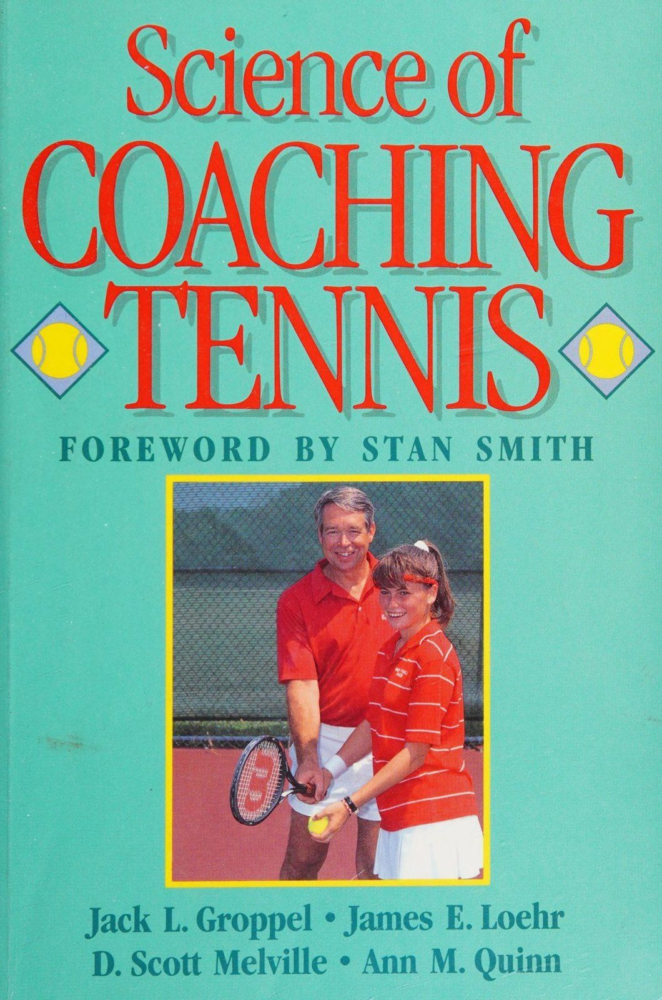
Bản dịch Việt ngữ này chỉ dùng cho mục đích học tập cá nhân, phi thương mại. Bản quyền tác phẩm gốc thuộc về tác giả và nhà xuất bản.
Phần 1: Sinh Cơ Học Quần Vợt: Nền Tảng Khoa Học Của Kỹ Thuật Đỉnh Cao
Chương 1: Huấn Luyện Viên Quần Vợt Toàn Diện & Tiếp Cận Khoa Học Thể Thao Chapter 1: The Complete Tennis Coach & Sport Science Approach
Huấn luyện viên quần vợt hoàn chỉnh Một cuộc đối đầu quần vợt kinh điển diễn ra giữa Martina Navratilova và Steffi Graf trong trận chung kết Wimbledon 1988. Trao đổi cú đánh với cú sút, những người phụ nữ chạy nước rút tới lui trong một màn trình diễn tuyệt vời về chuyển động và hình thức. Khán giả, kinh ngạc trước cách hai vận động viên này chơi trận đấu, chắc chắn đã tự hỏi điều gì để có thể chơi tốt như vậy. Chỉ có một câu trả lời: Cần rất nhiều tài năng, kết hợp với nhiều năm luyện tập và huấn luyện tuyệt vời.
Kể từ khi quần vợt ra đời, các tay vợt, huấn luyện viên và gần đây nhất là các nhà khoa học thể thao đã xem xét các khía cạnh của môn thể thao này, luôn cố gắng cải thiện cách chơi. Một lĩnh vực được đặc biệt quan tâm là giảng dạy kỹ thuật. Vì có nhiều phương pháp kỹ thuật giảng dạy khác nhau, mỗi phương pháp đều có mục đích tối ưu hóa việc học của học sinh, nên không có gì ngạc nhiên khi học sinh đôi khi bối rối không biết phương pháp nào là tốt nhất. Hai câu hỏi nổi lên: Liệu kỹ thuật hoàn hảo có tồn tại không và nếu có thì nó được dạy như thế nào là tốt nhất?
Trước khi xem xét những câu hỏi này, chúng ta nên lưu ý rằng việc huấn luyện gần đây đã bước vào kỷ nguyên công nghệ với những cải tiến khác nhau, từ thiết bị thể thao hiệu suất cao nhất từ trước đến nay cho đến các phương pháp quản lý căng thẳng độc đáo liên quan đến hiệu suất. Những khái niệm này đã bùng nổ trong thời đại chúng ta từ một khối kiến thức tương đối mới gọi là khoa học thể thao.
Làm thế nào một huấn luyện viên có thể nhận thức được và cuối cùng áp dụng (để tối ưu hóa thành tích thể thao) các nguyên tắc của khoa học thể thao? Hơn một thế kỷ trước, một người giàu có đam mê chơi gôn, Ngài Ainsley Bridgland, đã phát triển một trong những nhóm nghiên cứu đầu tiên về tất cả các môn thể thao, bao gồm các nhà giải phẫu, kỹ sư và nhà sinh lý học. Mục tiêu của họ là khám phá những bí mật ẩn giấu của cú swing hoàn hảo. Nhưng sau nhiều nghiên cứu, họ đi đến kết luận rằng không có cái gọi là cú swing hoàn hảo. Họ phát hiện ra rằng nhiều kỹ thuật vung vợt khác nhau có thể đạt được kết quả tối ưu và có thể sẽ có một số cách để dạy các kỹ thuật khác nhau.
Điều này cũng đúng với quần vợt: Không có cách nào hoàn hảo hay tốt nhất để chơi môn thể thao này. Cần có nhiều kỹ thuật cầm và xoay khác nhau để thực hiện các cú đánh có tốc độ khác nhau và với độ xoáy khác nhau. Hãy nhìn những tay vợt vĩ đại nhất của trò chơi: Becker liên tục sút bóng mạnh nhưng sử dụng độ xoáy tốt; Agassi sử dụng trái tay bằng hai tay; Navratilova lao thẳng vào lưới; và Graf là một trong những tay vợt chơi cơ bản giỏi nhất thế giới. Những tay vợt này chơi rất khác nhau, nhưng họ có một điểm chung: Tất cả họ đều chơi rất tốt.
Tương tự, có rất nhiều cách tốt để dạy kỹ năng chơi quần vợt. Không có cách nào tốt nhất tồn tại. Để có hiệu suất tối ưu, mỗi tay vợt phải được hướng dẫn riêng cách vung vợt tốt nhất. Một số tay vợt phản ứng tốt với cách tiếp cận khoa học, phức tạp; những người khác làm tốt hơn với cách tiếp cận động học đối với chuyển động và tạo ra cú đánh. Lời giải thích về mô-men xoắn cũng như độ dài và khối lượng của vợt có thể ảnh hưởng đến cú đánh như thế nào có thể phù hợp nhất với một tay vợt, trong khi người khác có thể học dễ dàng hơn thông qua kỹ thuật hình ảnh và sử dụng tín hiệu tâm lý. Với suy nghĩ này, chúng ta hãy xem xét những gì cần có để trở thành một người hướng dẫn và huấn luyện viên quần vợt lành nghề.
ĐẶC TÍNH CỦA MỘT HLV TENNIS CÓ TAY
Hầu hết các huấn luyện viên quần vợt giỏi đều dễ dàng nhận ra. Nhiều người đã từng là tay vợt giỏi (và thường vẫn như vậy). Thông thường, họ quan tâm đến việc kinh doanh quần vợt, có tính cách tốt trong việc giao tiếp với mọi người và hiểu biết sâu sắc về cơ chế đánh bóng, phương pháp điều hòa và chiến lược. Những huấn luyện viên có năng lực này đóng góp vào trò chơi và ảnh hưởng đến cuộc sống của học sinh của họ. Tuy nhiên, nếu những huấn luyện viên này bỏ qua việc nghiên cứu các cách cải thiện kỹ năng huấn luyện của mình, họ có thể không bao giờ thăng tiến trong cấp bậc huấn luyện hoặc giúp đỡ được số lượng tay vợt mà họ có thể.
Huấn luyện viên lành nghề đúng nghĩa là một học trò của trò chơi, một người đạt thành tích cao, người cố gắng trở nên xuất sắc bằng cách tìm hiểu về tất cả các yếu tố liên quan đến môn quần vợt cạnh tranh. Chuyên gia giảng dạy xuất sắc là người am hiểu mọi ngành nghề và cũng cố gắng trở thành bậc thầy trong tất cả các lĩnh vực.
Một mục tiêu đầy tham vọng nhưng thật đáng kinh ngạc là những điểm yếu có thể được phát hiện và cải thiện. Và luôn có chỗ để cải thiện.
Ví dụ, một chuyên gia giảng dạy được coi là một trong những người giỏi nhất trong ngành đã hỏi tôi liệu tôi có thể đề xuất cách một trong những tay vợt của anh ấy có thể đánh một cú giao bóng mạnh hơn không. Sau khi xem một tay vợt thi đấu và nghiên cứu băng video về cú giao bóng của anh ta, tôi kết luận rằng anh ta cần xoay hông nhiều hơn để truyền thêm lực vào chuyển động giao bóng. “Đó là những gì tôi nghĩ,” đồng nghiệp của tôi trả lời, “nhưng tôi không chắc mình đã đề xuất đúng.”'
Ông đã huấn luyện mọi cấp độ tay vợt, kể cả những tay vợt chuyên nghiệp đẳng cấp thế giới, nhưng bất chấp thành công của ông, huấn luyện viên này luôn đặt câu hỏi và phân tích để xác minh kết luận của ông. Đây chính xác là thái độ mà một huấn luyện viên giỏi cần có để tiếp tục nâng cao hiệu quả của mình.
TRỞ THÀNH Huấn luyện viên TENNIS HOÀN HẢO
Người ta nói rằng bất kỳ công việc kinh doanh nào cũng không có gì có thể thay thế được kinh nghiệm. Kinh nghiệm có ý nghĩa nhiều hơn là chỉ đơn giản là một tay vợt giỏi. Trên thực tế, những tay vợt giỏi không phải lúc nào cũng làm nên những huấn luyện viên giỏi. Trong một cuộc phỏng vấn trên truyền hình gần đây, một trong những kỳ thủ hàng đầu thế giới đã được hỏi rằng anh ta sẽ tính phí bao nhiêu khi dạy kèm riêng. Hầu hết mọi người có lẽ đều mong đợi anh ta đưa ra một khoản phí hợp lý, nhưng tay vợt này thừa nhận rằng anh ta sẽ không bao giờ cố gắng dạy bất kỳ ai trò chơi này. “‘Tôi sẽ để việc đó cho các giáo viên vì họ dành quá nhiều thời gian để nghiên cứu trò chơi,” anh nói. “Tôi thực sự không biết nhiều về cơ chế cú đánh và những thứ tương tự.”
Tay vợt này đã thể hiện rất cá tính khi phản ứng như vậy, nhưng anh ta có thể đã thay đổi bản thân một cách ngắn ngủi khi đánh giá thấp tiềm năng huấn luyện của mình. Anh ta có thể không biết nhiều về cách mình thực sự đánh bóng, nhưng anh ta biết rất nhiều về sự cạnh tranh - khi nào nên đánh cú nào, cách xử lý căng thẳng tâm lý của trận đấu, cách kiểm soát nhịp độ, cách xử lý những nỗ lực tâm lý của đối thủ. Không một chuyên gia nào đạt được vị thế đẳng cấp thế giới nếu không hiểu rõ những điều này và các yếu tố cạnh tranh khác.
Mặt khác, một huấn luyện viên chưa bao giờ thi đấu mang tính cạnh tranh sẽ đặc biệt khó khăn để huấn luyện thành công ở đẳng cấp thế giới. Tuy nhiên, một huấn luyện viên như vậy, nếu họ đã nghiên cứu trò chơi và trải qua những áp lực của giải quần vợt ở một mức độ nào đó, sẽ có thể làm việc thành công với những tay vợt có kỹ năng.
Cho dù phương pháp phân tích kỹ năng của họ có khoa học đến đâu, tất cả các huấn luyện viên đều phải trải qua một số lần thử và sai nhất định để xác định xem trải nghiệm nào là tiêu cực và cần loại bỏ, trải nghiệm nào là tích cực và cần được ghi nhớ, sử dụng và xây dựng dựa trên. Qua nhiều năm làm việc với các vận động viên, họ tích lũy được một lượng thông tin khổng lồ về thành tích.
TIẾP CẬN KHOA HỌC THỂ THAO
Khoa học thể thao ngày càng tham gia nhiều hơn vào môn quần vợt và có thể đóng một vai trò quan trọng trong việc phát triển các huấn luyện viên quần vợt hoàn chỉnh. Tất cả các huấn luyện viên đầy tham vọng đều có thể được hưởng lợi bằng cách học hỏi từ các lĩnh vực cơ sinh học và học tập vận động cũng như cách thực hiện và học các kỹ năng. Một huấn luyện viên có nhiều năm kinh nghiệm thi đấu có thể muốn cải thiện bằng cách tìm hiểu về các khái niệm về cơ chế đánh bóng. Một huấn luyện viên yêu thích môn thể thao này nhưng có ít kinh nghiệm thi đấu những trận đấu khó khăn có thể muốn tìm hiểu về sự cạnh tranh và áp lực từ tâm lý thể thao. Cuốn sách này trình bày nhiều ứng dụng hữu ích cho tất cả các huấn luyện viên mong muốn mở rộng kiến thức và kỹ năng của mình.
KHOA HỌC TENNIS
Tất cả các nghiên cứu về thể thao đã tăng lên đáng kể trong thập kỷ qua. Người Đông Đức nổi tiếng về nghiên cứu về bơi lội, Liên Xô nổi tiếng về nghiên cứu điền kinh và Bulgaria về tập trung vào môn cử tạ. Thật không may, quần vợt chỉ mới bắt đầu thu được những lợi ích từ nghiên cứu gần đây, nhưng chắc chắn có sự tham gia ngày càng tăng của các nhà khoa học và kỹ sư vào nghiên cứu môn thể thao của chúng ta. Nghiên cứu gần đây đã đóng góp tích cực cho việc huấn luyện và chơi quần vợt bằng cách phát triển vợt tốt hơn, phát minh ra các kỹ thuật thực hiện tốt hơn, cải thiện thể trạng của tay vợt và tạo ra nhiều đối thủ khó khăn hơn về mặt tinh thần.
Tuy nhiên, kỳ vọng của nghiên cứu phải thực tế. Nghiên cứu sẽ không tạo ra một cách tốt nhất để chơi quần vợt. Nhưng nghiên cứu khoa học có thể xác định phương pháp giảng dạy nào hiệu quả và hiệu quả nhất trong việc giảng dạy nét. Một tay vợt cơ bản có trận đấu kéo dài hơn 3 giờ phải được điều hòa thể lực tốt, trong khi một tay vợt giao bóng và vô lê kỳ cựu có trận đấu kết thúc trong thời gian ngắn hơn có thể cần phải tập luyện khác. Một số loại hình ảnh có thể không mang lại lợi ích cho một vận động viên cụ thể, nhưng một số hình thức rèn luyện thư giãn thì có thể. Nghiên cứu giúp chúng tôi hiểu các lựa chọn huấn luyện thay thế và áp dụng chúng trong trường hợp nào.
Tuy nhiên, có những vấn đề liên quan đến nghiên cứu. Đầu tiên, một số nghiên cứu không bổ sung thêm kiến thức hữu ích nào. Các huấn luyện viên không quan tâm đến việc Boris Becker có thể giao bóng chăm chỉ hơn Jimmy Arias. Kiến thức đó là trực quan. Vấn đề thứ hai là nghiên cứu thường không được trình bày ở dạng có thể sử dụng được. Nếu không có sự giải thích hợp lý của nhà khoa học thể thao, một số nghiên cứu sẽ không truyền đạt được cho huấn luyện viên hoặc tay vợt những phát hiện đó ngụ ý gì. Ngay cả đối với một tay vợt đẳng cấp thế giới, thông tin bóng chỉ ở trên mặt vợt trong 4 mili giây là vô nghĩa. Tầm quan trọng của số liệu thống kê như vậy sẽ bị giảm đi khi cố gắng tìm hiểu thời gian đó theo nghĩa thực tế.
Tuy nhiên, thông tin đó có giá trị nếu được diễn giải ở dạng có thể sử dụng được. Huấn luyện viên có thể thuyết phục tay vợt rằng, vì thời gian tiếp xúc quá ngắn nên không thể lăn vợt qua bóng khi cố gắng đánh bằng một cú xoáy lên. Điều này giúp tay vợt hình dung rằng xoáy lên chỉ có thể được tạo ra bằng cách lướt vào mặt sau của quả bóng với một cú đánh hướng lên trên từ mặt vợt thẳng đứng.
Từ một ví dụ về tầm quan trọng của việc diễn giải và giao tiếp phù hợp giữa nhà khoa học thể thao, huấn luyện viên và vận động viên, bạn có thể tự hỏi liệu nghiên cứu về quần vợt có thực sự hữu ích đến vậy hay không. Nhân vật
1.1 minh họa cách một số người nhìn nhận vai trò của nghiên cứu quần vợt. Phía trên sơ đồ là kết quả của một trận đấu có ý nghĩa cực kỳ quan trọng đối với cả tay vợt và huấn luyện viên. Hãy xem xét điều gì sẽ dẫn đến kết quả trận đấu. Rõ ràng, điều kiện tâm lý và thể chất xung quanh trận đấu đóng vai trò rất lớn. Thêm vào đó là một lượng lớn vận động viên với nhiều dạng kỹ năng di truyền và hạn chế khác nhau. Bên dưới khu vực này của hình là ba yếu tố quan trọng: cơ sở vật chất được cải thiện, kiến thức huấn luyện được cải thiện và nghiên cứu khoa học.
Sơ đồ này không phải do các tác giả của cuốn sách này phát triển mà đã được Giáo sư Mitsumasa Miyashita thuộc Khoa Giáo dục tại Đại học Tokyo chuẩn bị cách đây vài năm. Nó đưa ra ý tưởng về cách một quốc gia khác nhìn nhận việc ứng dụng nghiên cứu quần vợt và tầm quan trọng của nó đối với kết quả của một trận đấu. Như Giáo sư Miyashita đã chỉ ra, nghiên cứu đóng một vai trò trong việc rèn luyện và có thể cung cấp cái nhìn sâu sắc đáng kinh ngạc về các thuộc tính hiệu suất của một kỹ năng thể thao. Nghiên cứu vẫn còn ở đây và nó sẽ có ảnh hưởng lâu dài đến quần vợt.
Nhiều lĩnh vực khoa học đã đóng một vai trò quan trọng trong việc phát triển môn quần vợt. Các lĩnh vực kỹ thuật, y học, sinh lý học, vật lý, tâm lý học và xã hội học đều cung cấp thông tin có thể mở rộng hiểu biết của chúng ta về quần vợt. Trong một cuốn sách không thể cung cấp một chuyên luận hoàn chỉnh về tất cả các khía cạnh của khoa học mà
Kết quả trận đấu quần vợt |
Điều kiện tâm lý |S Điều kiện vật chất
Khả năng của vận động viên Điều kiện tập luyện tốt hơn Cải thiện huấn luyện viên' kinh nghiệm Ứng dụng và kiến thức y học thể thao và nghiên cứu khoa học thể thao
Hình 1.1 Vai trò của nghiên cứu quần vợt.
có liên quan đến quần vợt và huấn luyện. Cuốn sách này xem xét các ứng dụng có tầm quan trọng hàng đầu đối với quần vợt từ bốn phân ngành của khoa học thể thao. Những lĩnh vực này là cơ sinh học, học tập vận động, sinh lý học thể dục và tâm lý học thể thao.
Trong cơ sinh học, các nhà khoa học kiểm tra các lực gây ra chuyển động, các lực có thể gây thương tích cũng như hiệu quả và hiệu quả của việc tạo ra cú đánh. Các chuyên gia về học tập vận động kiểm tra xem kỹ năng được tiếp thu như thế nào và phương pháp giảng dạy nào hiệu quả nhất để huấn luyện quần vợt thành công. Các nhà sinh lý học thể dục xem xét tầm quan trọng của những thứ như điều hòa, rèn luyện tính linh hoạt và dinh dưỡng; họ quan tâm đến những thay đổi sinh lý xảy ra trong quá trình thi đấu cũng như những thay đổi có thể xảy ra khi vui chơi giải trí hoặc trong môi trường tập luyện. Các nhà tâm lý học thể thao nghiên cứu những gì diễn ra trong tâm trí tay vợt để khiến họ muốn chơi trò chơi và chơi nó tốt. Họ xem xét áp lực của môn thể thao cá nhân này và quan tâm đến xu hướng hung hăng của tay vợt, cách họ xử lý căng thẳng và hình ảnh đóng vai trò ở mức độ nào trong quá trình luyện tập.
Các huấn luyện viên ngày nay muốn tìm hiểu thêm về nghiên cứu khoa học thể thao và ứng dụng của nó vào quần vợt. Khi nghiên cứu những ứng dụng như vậy, chúng ta phải chắc chắn đưa nghiên cứu vào quan điểm phù hợp. Nghiên cứu không dễ thực hiện; đôi khi phải mất nhiều năm để phát triển một phương pháp nghiên cứu một vấn đề, tiến hành quy trình nghiên cứu phù hợp, phân tích dữ liệu, giải thích các phát hiện và liên hệ chúng với công chúng, những người có phản ứng từ chế giễu đến cổ vũ.
Nhiều người coi các kết quả nghiên cứu là giải pháp cuối cùng cho các vấn đề của họ, nhưng phần lớn nghiên cứu thực sự là điểm khởi đầu.
Hiếm có một dự án nghiên cứu nào đưa ra câu trả lời thuyết phục cho mọi vấn đề liên quan đến một câu hỏi cụ thể. Ứng dụng nghiên cứu có thể gây nhầm lẫn; chúng có thể tạo ra sự khác biệt về quan điểm giữa các chuyên gia.
Tranh cãi có thể mang tính xây dựng nếu được xử lý theo hướng tích cực. Giao tiếp là từ khóa để hiểu nghiên cứu. Tất cả những người tự xưng là phiên dịch viên của nghiên cứu thường phủ nhận các phát hiện mà không hiểu mọi thứ liên quan.
Kinh nghiệm và phán đoán của chính huấn luyện viên đóng vai trò chủ đạo trong cách họ diễn giải và sử dụng những phát hiện của một dự án nghiên cứu. Biết rằng nghiên cứu không phải là câu trả lời cuối cùng, hãy xem xét những gì bạn có thể sử dụng trong quá trình huấn luyện và đâu có thể là ứng dụng tốt nhất cho các vận động viên của bạn. Nếu một số phát hiện không có ý nghĩa hoặc có vẻ hữu dụng, hãy đặt câu hỏi. Nếu bạn vẫn không thấy một ứng dụng có thể chấp nhận được, hãy bỏ qua những phát hiện đó cho đến khi có thứ gì đó bạn có thể sử dụng. Hãy duy trì nghiên cứu theo quan điểm đúng đắn và phần còn lại của cuốn sách này có thể cực kỳ có giá trị đối với bạn.
are F yee er Se ek ee ore PER: ke opr tennyt ; ies 7 UNE rial Somes eae fal ee pleted tôie ope ae = ait tik: =o rạp chiếu phim ita Sate Se zy a a i eet ee eS Bees ' are mS ae Te fe a 2 ee oa oo ie ie a ie ce ee ee Se os ee 6 ee —— es ls ee ee Liege et Foe ib a MET A Ee oe Bi tám al Fe ee k= Hố . =m By bol “ bae ceil iy Maree plein chat aes > bea Fh Te bey ten) bữa ăn é Gripe, conn deep evra rs: Lad Ete Ps Sia | | “ Ramis See een on
2h ye 4 laa ee pe ay © wu they ae wt listen ae et ee FF Jr & mk a ies 7 Pio i Er oa ad _ ee a - Sere — _ tote an | Sr a
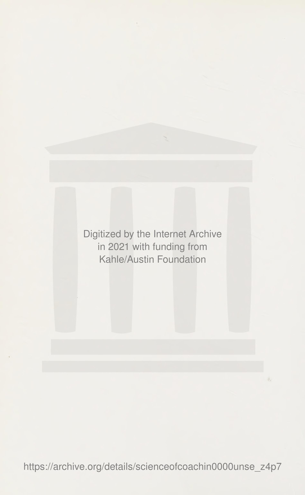
Hình 1.1: Vai trò của nghiên cứu khoa học thể thao trong quần vợt — Cầu nối tương tác giữa giải phẫu học, sinh cơ học, sinh lý học và thực tiễn huấn luyện trên sân đấu.
Figure 1.1: The Role of Sport Science Research in Tennis — Bridging biomechanics, physiology, motor learning, and on-court coaching application.
Chương 2: Sinh Cơ Học Quần Vợt: Trọng Lực, Thăng Bằng & Các Định Luật Chuyển Động Chapter 2: The Biomechanics of Tennis: Gravity, Balance & Laws of Motion
Cơ sinh học Trong suốt quá trình tồn tại của nghề, các huấn luyện viên đã phải giải quyết các vấn đề trong chuyển động của con người. Điều này đúng trong tất cả các môn thể thao, nhưng đặc biệt là trong quần vợt, vì rất ít môn thể thao liên quan đến nhiều hoạt động thể chất như vậy. Tay vợt quần vợt phải di chuyển nhanh chóng để đến được vị trí nơi va chạm sẽ xảy ra, giữ cơ thể trong tầm kiểm soát, đồng bộ hóa tất cả các bộ phận cơ thể, tạo ra gia tốc đầu vợt tối ưu và phối hợp mắt với điểm va chạm, tất cả trong khi chuẩn bị đánh bóng với vận tốc và khả năng kiểm soát thích hợp. Trong khi đó, tay vợt phải nhận thức được hành động và vị trí của đối phương trên sân, về loại và mức độ xoáy của quả bóng đang đến gần cũng như các điều kiện bên ngoài như nắng và gió. Trên hết, tay vợt phải quyết định độ khó để đánh bóng và sử dụng bao nhiêu độ xoáy.
Tuy nhiên, độ khó của trò chơi là một phần tạo nên vẻ đẹp của nó. Để chơi quần vợt xuất sắc, một vận động viên phải thông thạo nhiều lĩnh vực, một số lĩnh vực đó sẽ được đề cập trong cuốn sách này. Một trong những lĩnh vực quan trọng nhất là cơ sinh học của quá trình tạo ra cú đánh.
Cơ sinh học là nghiên cứu về các lực bên trong (hoặc cơ bắp) và bên ngoài (gió, trọng lực, v.v.) ảnh hưởng đến hiệu suất của con người. Nói một cách đơn giản, đó là nghiên cứu về chuyển động của con người. Trong cơ sinh học, điều quan trọng là phải hiểu hiệu suất và hiệu quả của chuyển động, ý nghĩa của y học thể thao đối với hiệu suất và tác động của các thiết kế thiết bị khác nhau đối với hiệu suất và trên cơ thể của người biểu diễn.
Hiệu quả và hiệu quả của chuyển động liên quan đến hình thức phù hợp. Hình thức tốt không phải là một kiểu chuyển động cố định, mà là chuyển động hoàn thành mục đích với mức tiêu hao năng lượng ít nhất. Huấn luyện viên phải dạy cách sử dụng cơ thể hợp lý để tiết kiệm năng lượng và giải thích cách tiêu hao năng lượng sao cho hiệu quả nhất.
Tuy nhiên, việc xác định hình thức phù hợp có thể khó khăn vì hình thức tốt chỉ dành riêng cho từng cá nhân và không nhất thiết phải tuân theo các quy tắc.
Ví dụ, khi Bjorn Borg bắt đầu chơi quần vợt đẳng cấp thế giới, những cú đánh không chính thống của anh ấy đã trở thành chủ đề thảo luận chính. Một số chuyên gia cảm thấy kỹ thuật của anh ấy sẽ là sự thất bại của anh ấy. Borg đã chứng minh họ sai. Mặc dù cơ chế của anh ấy không đẹp mắt về mặt thẩm mỹ, nhưng chúng vẫn xuất sắc vào đúng thời điểm — lúc va chạm.
Tác động là điểm quan trọng của bất kỳ cú đánh quần vợt nào. Mục tiêu của huấn luyện viên phải là dạy các tay vợt cách đạt được điểm ảnh hưởng đó một cách hiệu quả và hiệu quả thông qua phong độ tốt. Hình thức phải “tốt” không nhất thiết xét về mặt thẩm mỹ mà xét về mặt phát triển lực và khả năng kiểm soát tối ưu trong khả năng của mỗi tay vợt.
Hiệu quả của chuyển động trong quần vợt có ý nghĩa cụ thể đối với lĩnh vực thứ hai của cơ sinh học: y học thể thao phòng ngừa. Hình thức phù hợp đóng một vai trò lớn trong việc ngăn ngừa chấn thương mãn tính (xảy ra do sử dụng quá mức hoặc lạm dụng kéo dài) hoặc chấn thương cấp tính (chấn thương đột ngột). Ví dụ: nếu một vận động viên sử dụng phần thân dưới không chính xác khi định vị cú đánh, cánh tay buộc phải hoạt động mạnh hơn nhiều so với bình thường, thường dẫn đến khuỷu tay quần vợt. Tuy nhiên, bằng cách huấn luyện tay vợt đúng kỹ thuật thông qua việc sử dụng các bài tập thực hành, huấn luyện viên sẽ giảm khả năng chấn thương của tay vợt và tăng tuổi thọ của họ trong trận đấu.
Lĩnh vực nghiên cứu thứ ba về quần vợt theo quan điểm cơ sinh học liên quan đến thiết kế thiết bị. Vợt và giày ảnh hưởng đáng kể đến phong độ thi đấu của tay vợt, cả về thể chất lẫn tâm lý. Những tay vợt có kỹ năng phải có khả năng lao đi và tự tin rằng đôi giày của họ sẽ cung cấp khả năng đệm, lực kéo và hỗ trợ. Tương tự, họ phải biết một cây vợt cụ thể sẽ hoạt động tốt. Các kỹ sư cơ khí và chuyên gia thiết kế trong các công ty sản xuất đồ thể thao cố gắng tạo ra các sản phẩm cải tiến, hiệu suất cao, vì vậy, huấn luyện viên tiến bộ cần phải theo kịp toàn bộ ngành, công nghệ thiết bị mới cũng như các phương pháp huấn luyện mới.
Cơ sinh học của quần vợt « 13 Khi đánh bóng tennis, hầu hết tay vợt không coi trọng vai trò quan trọng của trọng lực. Ví dụ, khi thực hiện cú vô lê từ vị trí cách lưới khoảng 10 feet, các tay vợt (cao hơn lưới rất nhiều) thường cảm thấy cú vô lê ngang vai phải được đánh xuống để giữ cho nó tiếp tục thi đấu. Kết quả thông thường của việc ném bóng xuống dưới là một cú sút vào lưới hoặc một cú đánh quá nông đến mức có thể gây ra một cú đánh trả phản công. Nếu người đánh vô-lê nhận thấy trọng lực kéo bóng xuống dưới, huấn luyện viên có thể dễ dàng thuyết phục họ đánh cú vô lê cao ngang vai theo chiều ngang qua lưới (không hướng xuống) để bóng rơi sâu hơn vào phần sân đối phương và giảm cơ hội trả đòn tấn công.
Trọng lực cũng đóng vai trò giao bóng và đánh một cú đập từ trên cao. Bởi vì các cú giao bóng và các cú đánh qua đầu đòi hỏi bóng phải tiếp xúc ở vị trí cao hơn đầu nên hầu hết tay vợt nghĩ rằng họ phải đánh bóng xuống dưới để đưa bóng vào sân. Nhưng những tay vợt duy nhất cần đánh xuống là những người đạt độ cao 11 feet (với vợt) và đánh bóng với tốc độ 100 dặm một giờ. Ngay cả khi cao (6 feet, 3 inch), Stan Smith thực hiện cú giao bóng của mình để bóng di chuyển theo chiều ngang từ vợt của anh ấy chứ không đi xuống. Xem xét ảnh hưởng của trọng lực, tay vợt nên được huấn luyện để giao bóng theo chiều ngang, hoặc thậm chí hơi hướng lên trên mặt vợt khi tiếp xúc.
Nếu không có khả năng giữ thăng bằng tốt, một vận động viên quần vợt sẽ rơi vào tình trạng tầm thường. Sự cân bằng được kiểm soát bởi vị trí của trọng tâm, điểm trung tâm hơi cao hơn tâm của vùng xương chậu nơi khối lượng cơ thể được phân bổ. Điều thú vị là vị trí của trọng tâm thay đổi theo vị trí của chi và với trọng lượng tăng thêm ở bàn tay. Chỉ cần đặt vợt vào tay vận động viên, trọng tâm sẽ dịch chuyển nhẹ theo hướng của vợt. Nếu vận động viên nhấc một cánh tay lên, trọng tâm sẽ di chuyển theo hướng tương tự. Sau đó, hãy xem xét trọng tâm dao động như thế nào trong vô số thao tác diễn ra trong một trận đấu: Mỗi khi vị trí của tay và chân thay đổi thì trọng tâm cũng thay đổi. Vận động viên phải duy trì khả năng kiểm soát cơ thể nếu không sẽ mất thăng bằng.
Để hình dung cách duy trì sự cân bằng, hãy tưởng tượng rằng một dây dọi được thả từ trọng tâm của vận động viên xuống đất. Đường trọng lực sẽ rơi xuống đất ở đâu đó giữa hai bàn chân. Bàn chân và khu vực giữa chúng tạo thành nền tảng hỗ trợ của vận động viên. Với vận động viên đang đứng chú ý, cơ sở hỗ trợ khá nhỏ. Khi bàn chân dang rộng, phần đế hỗ trợ mở rộng và tay vợt trở nên ổn định hơn, nhưng đường trọng lực vẫn không thay đổi. Sự cân bằng tối ưu xảy ra khi đường trọng lực nằm trong ranh giới của bệ đỡ; càng rơi gần tâm của bệ đỡ thì tay vợt càng ổn định.
Để chứng minh cho bản thân thấy sự tương tác giữa đường trọng lực và bệ đỡ, hãy giữ tư thế thẳng đứng, cân bằng với hai chân dang rộng thoải mái. Không di chuyển vai, nhấc một chân lên. Ngay khi bàn chân của bạn rời khỏi mặt đất, điểm tựa của bạn sẽ có kích thước bằng kích thước của một bàn chân còn lại trên mặt đất.
Trừ khi bạn dịch chuyển vai, trọng lực của bạn sẽ ngay lập tức nằm ngoài bệ đỡ và bạn bắt đầu rơi.
Chính hành động rơi này được tạo ra khi đường trọng lực vượt ra ngoài ranh giới của bệ đỡ đã giúp tay vợt quần vợt tăng tốc để chạy. Khi cơ thể chuyển từ trạng thái cân bằng sang trạng thái mất cân bằng, hành động chạy nước rút sẽ được bắt đầu. Sự mất cân bằng buộc tay vợt phải di chuyển chân để không bị ngã, nhưng rõ ràng một tay vợt đang chạy nước rút sẽ không muốn trở nên quá ổn định, vì điều đó sẽ làm tay vợt chậm lại. Thay vào đó, một cú đẩy liên tục từ chân sau trong một lần chạy nước rút sẽ di chuyển đường trọng lực ra ngoài điểm tựa. Chân thay thế đu về phía trước, đỡ lấy cơ thể trước khi nó rơi xuống và sau đó trở thành chân đẩy cho sải chân tiếp theo.
Sự cân bằng cũng rất quan trọng khi tay vợt được thiết lập. Bởi vì trọng tâm là một vị trí mà toàn bộ khối lượng cơ thể tập trung vào đó, bất cứ khi nào một bộ phận cơ thể chuyển động (chẳng hạn như một cánh tay vung lên để ném bóng để giao bóng), trọng tâm sẽ tự động di chuyển theo cùng một hướng. Vì vậy, trong gần như toàn bộ quá trình giao bóng, trọng tâm cao hơn bình thường. Một trọng lượng bên ngoài (chẳng hạn như một cây vợt) được thêm vào cơ thể sẽ trở thành một phần của khối lượng cơ thể và ảnh hưởng đến vị trí của trọng tâm, dịch chuyển nó theo hướng của trọng lượng được thêm vào. Do đó, khi tay vợt vung vợt để chuẩn bị thực hiện cú đánh, một bộ phận cơ thể khác (thường là cánh tay kia) phải di chuyển đủ xa theo hướng ngược lại để chống lại chuyển động của cánh tay vợt để vận động viên giữ trọng tâm trên đế đỡ và giữ quyền kiểm soát cơ thể.
Cũng giống như vị trí của trọng tâm tăng lên khi cánh tay được nâng lên, nó sẽ hạ xuống khi cơ thể cúi xuống. Trọng tâm càng thấp thì cơ thể càng ổn định. Tư thế sẵn sàng của một số tay vợt bao gồm đầu gối hơi cong với thân hơi nghiêng về phía trước, khiến trọng tâm thấp hơn. Tuy nhiên, nếu cúi người quá mức, độ ổn định sẽ tăng lên đến mức khó phản ứng nhanh trước cú đánh của đối thủ.
Ngoài trọng lực và ảnh hưởng của nó đến chuyển động của con người, ba định luật chuyển động Newton cơ bản của Newton, cùng với một số nguyên lý vật lý khác, mô tả cách tay vợt quần vợt đạt được hoặc mất đi khả năng kiểm soát và lực.
Định luật quán tính phát biểu rằng một vật đang đứng yên hoặc đang chuyển động sẽ giữ nguyên trạng thái đứng yên hoặc chuyển động với cùng tốc độ cho đến khi bị tác dụng bởi một ngoại lực. Ví dụ, khi tay vợt ở tư thế sẵn sàng, thân và vợt không chuyển động và có một quán tính nghỉ nhất định. Khi tay vợt phản ứng với cú đánh của đối thủ, quán tính nghỉ phải được khắc phục bằng cách tạo đủ lực xuống mặt đất để di chuyển. Sự co cơ ở chân gây ra chuyển động.
Một tay vợt quần vợt đang chơi một điểm có quán tính chuyển động và sẽ tiếp tục chuyển động cho đến khi một lực nào đó dừng chuyển động. Hãy nghĩ đến một vận động viên đang chạy hết sức nước rút để đánh một cú trả thuận tay rộng. Sau khi bóng được đánh, tay vợt phải đến khu vực chiến lược của sân để chờ đợi cú trả bóng. Một bước phục hồi thường ngăn tay vợt di chuyển theo một hướng và đảo ngược người đó sang hướng ngược lại. Sau khi đánh bóng, chân đường quay xung quanh, tác dụng phanh để dừng quán tính chuyển động, sau đó tạo lực để thắng quán tính nghỉ để đấu thủ trở về vị trí sân thuận lợi.
Định luật quán tính cũng ảnh hưởng đến đường bay của bóng. Nếu không có trọng lực, quả bóng sẽ tiếp tục bay cho đến khi va vào vật gì đó. Một ngoại lực ảnh hưởng đến đường bay của quả bóng là lực cản của không khí. Hiệu ứng này rõ ràng nhất vào một ngày nhiều gió khi các luồng không khí mạnh có thể làm thay đổi đáng kể quỹ đạo của quả bóng.
Một hiệu ứng tinh tế hơn của lực cản khí động học (Aerodynamic Drag) xảy ra khi quả bóng đang quay. Xoáy lên, xoáy xuống và xoáy ngang ảnh hưởng đến đường đi của quả bóng tennis. Các vùng áp suất cao được tạo ra ở nhiều điểm khác nhau trên bề mặt bali khiến nó hoạt động khác với khi nó không quay. Ví dụ, một quả bóng không quay sẽ gặp áp suất không khí bằng nhau xung quanh nó và miễn là không có hiệu ứng gió, nó sẽ đi theo một hình parabol bình thường.
(hiệu ứng trọng lực) khi nó bay sang sân đối phương. Một quả bóng có xoáy lên có một lớp không khí mỏng bao quanh nó xoay quanh nó theo hướng xoáy. Ở phía trên của quả bóng, luồng không khí trong lớp biên gặp không khí tĩnh trực diện và sự trộn lẫn mạnh mẽ tạo ra một vùng áp suất cao trên đỉnh quả bóng (Hình 2.1), buộc quả bóng đi xuống theo quỹ đạo giật của xoáy lên. Điều ngược lại xảy ra với bóng xoáy xuống (Hình 2.2). Vùng áp suất cao được tạo ra bên dưới quả bóng, khiến nó “nổi” hoặc lơ lửng trong không khí lâu hơn.
Áp suất cao Đang tới ai Lớp ranh giới một mỗi không khí Phí .
Hình 2.1 Lớp không khí biên được mang xung quanh quả bóng theo hướng xoáy lên tương tác với không khí tới để tạo ra một vùng áp suất cao phía trên quả bóng.
Lớp biên của không khí đang tới Hình 2.2 Lớp biên của không khí di chuyển xung quanh quả bóng theo hướng xoáy xuống và tương tác với không khí đang tới để tạo ra một vùng áp suất cao bên dưới quả bóng.
Cơ sinh học của quần vợt ¢ « 17 Định luật gia tốc phát biểu rằng khi một vật chịu tác dụng của một lực (F), thì gia tốc (A) tạo ra của nó tỷ lệ thuận với lực và tỷ lệ nghịch với khối lượng (M) [(M): A = F/M]. Do đó, với một vật có khối lượng riêng, chẳng hạn như một cây vợt tennis, lực tác dụng để di chuyển vật càng lớn thì gia tốc của nó càng lớn. Đầu vợt di chuyển khi va chạm càng nhanh thì lực tác dụng lên bóng càng lớn.
Nghe có vẻ đơn giản, nhưng huấn luyện viên lành nghề phải ghi nhớ một điều quan trọng: sự cân bằng giữa tốc độ và độ chính xác. Như Melville thảo luận sau, tốc độ tạo ra cú đánh tối ưu tồn tại đối với mỗi vận động viên giúp họ duy trì khả năng kiểm soát cú đánh xuất sắc. Tuy nhiên, đầu vợt di chuyển càng nhanh vượt quá tốc độ tối ưu đó thì việc kiểm soát độ chính xác của cú đánh càng khó khăn. Quần vợt không giống như bóng chày, nơi một đường chạy về nhà có thể bị đánh qua bất kỳ phần nào của hàng rào giữa các cột phạm lỗi. Quần vợt trước hết là một trò chơi kiểm soát. Quân át chủ bài thường được đánh với tốc độ cao nhưng cũng phải được đặt chính xác. Một cú giao bóng tốc độ cao có thể được trả lại tương đối dễ dàng nếu nó không được đặt đúng vị trí. Mục tiêu của tay vợt điêu luyện là đánh bóng thật mạnh và có kiểm soát. Đánh bóng mạnh thì dễ nhưng đánh bóng với tốc độ và độ chính xác mới khó. Vì vậy, định luật gia tốc phải được áp dụng trong bối cảnh kiểm soát cú đánh.
Định luật gia tốc giúp chúng ta hiểu được một hiện tượng khác trong quần vợt đang nhận được nhiều sự quan tâm: chấn thương ở cánh tay. Với lực tỷ lệ thuận với gia tốc, chúng ta biết rằng lực phát triển hơn có nghĩa là gia tốc đầu vợt lớn hơn, dẫn đến một cú đánh mạnh mẽ. Tuy nhiên, định luật gia tốc cũng đòi hỏi rằng lực dùng để vung vợt càng lớn thì lực tác động lên cánh tay của tay vợt càng lớn. Điều này giúp giải thích tại sao rất nhiều tay vợt trẻ ngày nay bị đau cánh tay, vì họ được dạy phải đánh những cú đánh xoáy lên từ phía sau đường cuối sân. Cơ thể chỉ có thể xử lý được đến mức đó, hoặc theo nghĩa cấp tính do một cú đánh quá mạnh, hoặc theo nghĩa mãn tính do lặp đi lặp lại nhiều cú đánh mạnh.
Có lẽ định luật chuyển động Newton quan trọng nhất của Newton đối với huấn luyện viên quần vợt là định luật về hành động và phản ứng, cho rằng đối với mọi hành động đều có một phản ứng bình đẳng và ngược chiều. Định luật này cung cấp nền tảng cho hầu hết mọi cú đánh quần vợt, bởi vì cần có lực phản lực mặt đất (Ground Reaction Force) để vượt qua quán tính và bắt đầu chuyển động. Khi tay vợt ở tư thế sẵn sàng chống tay xuống đất để di chuyển thì mặt đất sẽ đẩy lùi với một lực bằng nhau và ngược chiều. Tương tự như vậy, trong một cú đánh trên mặt đất, khi chân sau đẩy lên để bắt đầu chuyển trọng lượng về phía trước, lực phản ứng mặt đất này sẽ bắt đầu tạo ra tổng lực của cơ thể để thực hiện cú đánh. các
Lực phản ứng của mặt đất trong quần vợt cũng ảnh hưởng đến việc kiểm soát cú đánh vì hướng tác dụng của nó so với mặt đất quyết định hướng chuyển động của cơ thể.
Quy luật hành động và phản ứng cũng ảnh hưởng đến cú giao bóng (Hình 2.3). Khi lực phản ứng mặt đất đã được tạo ra và lực được truyền lên khắp cơ thể, thân cây bắt đầu quay với tốc độ cực cao. Trong một động tác ném bình thường (như khi giao bóng), cánh tay đối diện đi qua thân theo hướng ngược lại với hướng xoay của thân ngay khi cánh tay vung bắt đầu hành động về phía trước (Hình 2.4). Hành động của cánh tay còn lại đóng vai trò như một chiếc phanh (vì nó đang di chuyển theo hướng ngược lại) và đột ngột làm chậm chuyển động quay của thân cây, khiến cánh tay vung và vợt tăng tốc về phía va chạm.
Hình 2.3. Quy luật hành động và phản ứng trong giao bóng.
Quy luật hành động và phản ứng cũng giúp giải thích những tác động của y học thể thao đối với thành tích quần vợt. Vợt truyền lực vào quả bóng, đưa nó qua lưới. Đồng thời, bóng tạo ra một lực ngang và ngược chiều tác dụng lên vợt thường có cảm giác ở bàn tay và cánh tay. Điều này đặc biệt đúng với các tác động lệch tâm vì hiệu ứng xoắn của vợt xoắn khi nó phản ứng với sự tiếp xúc lệch tâm. Các lực mà cơ thể gặp phải có thể tạo ra chấn thương (tức là khuỷu tay quần vợt) nếu vận động viên liên tục đánh không đúng cách hoặc không đủ khỏe để chịu được các tác động.
Cơ chế sinh học của quần vợt e « 19 Hình 2.4 Sự đối lập của hành động của cánh tay trong giao bóng.
Tuy nhiên, liên quan đến thành công trong quần vợt, lực truyền từ vợt sang bóng là yếu tố quan trọng để đạt được hiệu suất tối ưu.
CÁC NGUYÊN TẮC CƠ SINH KHÁC
Bên cạnh tác dụng của trọng lực và các quy luật chuyển động, các nguyên lý vật lý khác đóng vai trò quan trọng trong việc tìm hiểu trò chơi quần vợt. Động lượng tuyến tính là một trong những yếu tố như vậy. Động lượng tuyến tính bằng khối lượng (M) nhân với vận tốc (V). Nó áp dụng khi một khối lượng và vận tốc từ một nông cụ truyền động lượng của nó sang một vật có khối lượng và vận tốc khác. Ví dụ, để đánh trả một quả bóng tennis đang lao tới, tay vợt phải tác động đủ lực lên quả bóng để ngăn nó lại và bắt đầu di chuyển với vận tốc định trước theo hướng ngược lại. Động lượng tới càng lớn thì lực cần thiết để dừng nó và đảo ngược hướng của nó càng lớn. Vì khối lượng của quả bóng không đổi nên hai yếu tố quyết định lực phải truyền là (a) tốc độ của quả bóng tại thời điểm va chạm và (b) thời gian (trong bao lâu) lực tác dụng để dừng nó và đẩy nó trở lại.
Tốc độ của một vật tỷ lệ thuận với lượng lực x thời gian (hoặc xung) tác dụng lên nó. Việc tăng xung lực sẽ làm tăng vận tốc của quả bóng khởi hành. Vận tốc của quả bóng và vợt là những yếu tố vận tốc duy nhất mà tay vợt có thể thay đổi.
Ngoài tốc độ bóng, hướng phải được xem xét trong việc kiểm soát cú đánh. Nếu bóng chạm mặt vợt lệch tâm, khiến vợt quay trong khi bóng tiếp xúc với nó, bóng sẽ rời vợt theo hướng sai, dẫn đến cú đánh kém hoặc cú đánh may mắn. Nếu bóng tiếp xúc gần khu vực đánh của vợt và vợt được cầm chắc chắn để giảm thiểu độ xoay của vợt thì cú đánh có thể được kiểm soát.
Động lượng tuyến tính cũng đóng vai trò trong việc tạo ra tổng lực của cơ thể để đánh bóng. Nếu tay vợt chọn thực hiện một cú đánh liên quan đến bước tiến về phía trước (tức là từ thế đứng khép kín hoặc nửa khép kín), bước tiến về phía trước sẽ diễn ra theo một đường thẳng. Khối lượng và vận tốc của cá nhân di chuyển theo đường thẳng về hướng mong muốn của cú đánh sẽ truyền động lượng tuyến tính cho cú đánh.
Trước khi mô tả thêm các khía cạnh cơ học của việc tạo ra hành trình, chúng ta cần xem xét một khái niệm nữa, mômen quán tính, được định nghĩa là lực cản quay của vật thể. Một ví dụ điển hình về mức độ ảnh hưởng của mô-men quán tính (Moment of Inertia) đến chuyển động quay là khi tay vợt đánh trái tay bằng hai tay. Với cánh tay duỗi hoàn toàn ra khỏi cơ thể, tay vợt sẽ xoay thân cây của mình từ từ, nhưng khi cánh tay được kéo lại gần thân cây hơn, tay vợt có thể xoay nhanh. Mô men quán tính (I) bằng khối lượng (M) của cá thể nhân với bình phương bán kính (R) của cá thể (I ~ M x R?). Khối lượng của tay vợt tennis không thay đổi khi đánh trái tay bằng hai tay, nhưng bán kính bị rút ngắn đáng kể khi cánh tay được kéo lại gần thân cây, làm giảm lực cản quay và cho phép tay vợt xoay nhanh. Hệ số I càng thấp thì tay vợt có thể xoay cốp xe càng nhanh.
Có những ứng dụng khác của hệ số mô-men quán tính (Moment of Inertia). Một cây vợt tennis có thể khiến một số người cảm thấy cồng kềnh nên họ bị nghẹn ở tay cầm. Việc bóp vợt giúp họ vung vợt dễ dàng hơn vì bán kính hoặc chiều dài từ đầu vợt đến tay đã được rút ngắn. Một ví dụ khác là khi tay vợt cố gắng đánh thật mạnh từ đường cuối sân. Nếu họ sử dụng kỹ thuật không đúng và bắt đầu cú vung bằng một cánh tay duỗi thẳng hoàn toàn, cố gắng tăng lực đòn bẩy lên bóng, họ sẽ mở rộng bán kính (hoặc chiều dài cánh tay tính từ cơ thể) và tăng khả năng chống xoay (D), khiến vợt khó vung hơn.
Huấn luyện viên nên dạy tay vợt vung gậy từ trong ra ngoài trong các cú đánh trên mặt đất. Khi bắt đầu vung về phía trước, cánh tay phải được đặt khá gần cơ thể, giảm mô-men quán tính (Moment of Inertia), thúc đẩy cơ thể quay nhanh hơn và tạo ra lực cao hơn.
Cơ sinh học của quần vợt ¢ « Vận tốc đầu vợt 21. Khi cánh tay mở rộng vào cú đánh, lực cản đối với việc xoay cơ thể tăng lên, nhưng tại thời điểm này, vợt đã có vận tốc cao và bất kỳ sự giảm tốc nào xảy ra ngay trước khi tiếp xúc sẽ được bù đắp bằng lực đòn bẩy tăng lên.
Xoay cơ thể là một yếu tố quan trọng cần cân nhắc trong việc phát triển một tay vợt lành nghề. Chuyển động quay do hông và thân tạo ra trong nhiều cú đánh thực sự tạo ra xung lượng góc. Động lượng góc bằng mômen quán tính (I) của một vật nhân với vận tốc góc hoặc vận tốc quay (I x vận tốc góc). Khi thực hiện một cú đánh trên mặt đất, động lượng tuyến tính của tay vợt được bắt đầu bằng cách sải bước về phía trước và sau đó được chuyển thành động lượng góc (quay) ở hông và thân. Cả hai loại động lượng đều được áp dụng khi thực hiện các cú đánh trên mặt đất, giao bóng hoặc các cú đập từ trên cao: Động lượng tuyến tính, được tạo ra bởi chân, chuyển sang xung lượng góc ở hông, thân và chi trên để đưa đầu vợt vào vị trí đánh thích hợp.
Tóm lại, huấn luyện viên quần vợt phải nhận thức được các yếu tố thể chất ảnh hưởng đến thành tích. Các lực bên ngoài là trọng lực và lực cản khí động học (Aerodynamic Drag) quyết định đường bay của quả bóng sau khi nó được đánh. Khi một tay vợt di chuyển để đánh trả, việc kiểm soát cơ thể và giữ thăng bằng là rất quan trọng đối với hiệu suất và hiệu quả của chuyển động. Khi đã vào vị trí, tay vợt phải kết hợp động lượng tuyến tính và động lượng góc để đạt được lợi thế tối ưu.
Điểm mấu chốt mà huấn luyện viên quần vợt cần ghi nhớ là khả năng kiểm soát có tầm quan trọng hàng đầu và phải liên tục được nhấn mạnh là ưu tiên hàng đầu của học sinh. Học sinh có xu hướng nỗ lực tối đa hóa tiềm năng thể chất của mình để tăng sức mạnh, nhưng bất kỳ quá trình huấn luyện nào để tăng sức mạnh phải luôn nằm trong bối cảnh kiểm soát cú đánh.
Sa ae ee a Y Rn eee, GL a Se ae ues rr Lin i = Sey & ay SS a ei “a= Wank lst Prim Seaige fi eat Earn | ce had eke ee one : a eae ee ey Sy ey he Vall a a ee gl hs wey (ali octet atm Seer a. elias hl ia eget ed re | al ee Cee td | ilk ena ih hat) i - lk) eet * ee ee nem er, oe ne 'aft sa neg ve SPR ee n ele ee oe ee ee pit ei he eg a ee Lo ra iey a'gue Pie an mre trite tức là ty ae asthe} Tall Tins 7 ELE a = fh eer yy ry, i ee 'ictiiiekdgon Ah lê pe ayy oat bach Hema Paartasrcegpa ye a igiy re xay celnlTigtom stone ag oe ee
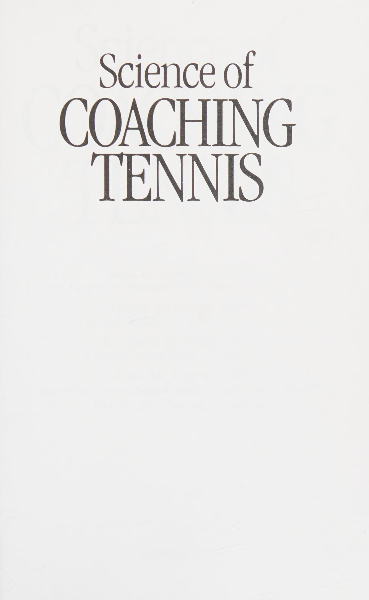
Hình 2.1: Khí động học lớp biên & Hiệu ứng Magnus — Sự chênh lệch áp suất khí quyển quanh quả bóng xoáy tạo lực ép bóng cắm xuống sân (Topspin) hoặc bay lơ lửng (Slice).
Figure 2.1: Boundary Layer Aerodynamics & Magnus Effect — Airflow pressure differential creating downward topspin trajectory or floating backspin slice.
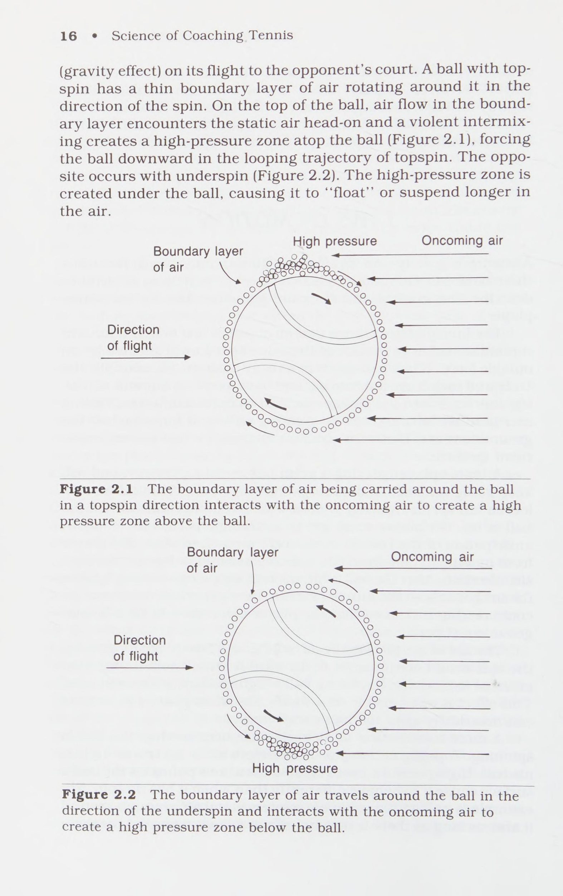
Hình 2.2: Động lực học chất lưu quả bóng xoáy cắm — Tốc độ quay RPM cao nén dòng khí phía trên, mở rộng quỹ đạo an toàn vượt qua lưới.
Figure 2.2: Magnus Force Fluid Dynamics — High rotational velocity compressing upper airflow for steep topspin net clearance.
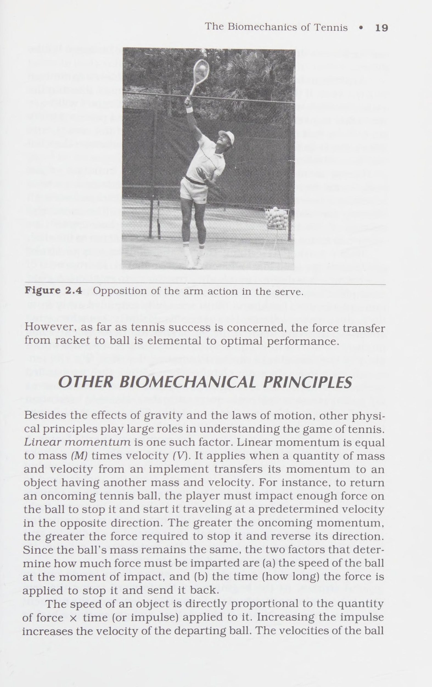
Hình 2.3: Định luật tác dụng - phản tác dụng & Cơ chế hãm phanh tay không thuận trong cú giao bóng — Thu gọn tay giữ thăng bằng để chuyển hóa động lượng góc vào đầu vợt.
Figure 2.3: Action-Reaction Law & Off-Arm Braking in the Serve — Tucking the non-dominant arm to maximize angular velocity transfer to racket head.
Chương 3: Khoa Học Kỹ Thuật: Theo Dõi Bóng, Định Vị, Tiếp Xúc & Sự Thật Cơ Học Chapter 3: The Science of Technique: Tracking, Positioning, Ball Impact & Facts vs Fallacies
Khoa học về Kỹ thuật Như đã lưu ý, có nhiều cách tiếp cận để dạy trò chơi quần vợt. Một số huấn luyện viên ban đầu chỉ thích dạy các phần của cú đánh, dẫn đến toàn bộ chuyển động; những người khác thích dạy toàn bộ phong trào ngay từ đầu. Một số giáo viên bắt đầu cho học sinh của mình theo dõi các bài tập, trong khi những giáo viên khác lại tập trung vào việc định vị. Một số huấn luyện viên muốn bắt đầu cho người mới bắt đầu chơi trên lưới, dạy cú vô lê thay vì các cú đánh cơ bản trên mặt đất. Bất kể cách tiếp cận cá nhân của bạn là gì, các nguyên tắc trong chương này có thể đóng vai trò là nền tảng để cải thiện kỹ năng của học sinh.
KỸ NĂNG THEO DÕI
Vì việc theo dõi (theo dõi trực quan chuyển động của bóng) rất quan trọng trong quần vợt nên huấn luyện viên phải đảm bảo rằng tay vợt biết cách xác định chính xác chuyển động của bóng và định vị cơ thể của họ so với bóng. Mặc dù các đối thủ ở giải đấu nâng cao có thể đã thành thạo việc theo dõi, nhưng những người ở trình độ trung cấp thường gặp vấn đề với nó. Theo dõi các nguyên tắc và một số bài tập cơ bản có thể giúp học sinh cải thiện kỹ năng này.
Để dạy cho học sinh các nguyên tắc theo dõi, cần phải giải thích sự cân bằng giữa tốc độ và độ chính xác. Bóng di chuyển về phía tay vợt càng nhanh thì càng khó theo dõi. Những quả bóng bay với quỹ đạo rất thấp hoặc rất cao cũng khó theo dõi. Người mới bắt đầu chơi có thể cải thiện kỹ năng theo dõi bằng cách học cách theo dõi quả bóng chuyển động chậm theo một vòng cung nhỏ (thường cao hơn tay tay vợt một chút). Nhiều cuộc tập trận đánh bắt khác nhau có hiệu quả trong việc dạy tay vợt cách theo dõi đúng cách.
Ví dụ: đứng cách học sinh từ 5 đến 6 feet và ném bóng từ từ cho học sinh đó theo hình vòng cung ngắn. Vòng cung có thể tăng dần khi tay vợt học cách theo bóng và bắt nó. Sau khi học xong nhiệm vụ đơn giản này, hãy ném quả bóng ra xa học sinh vài feet, khiến học sinh đó phải di chuyển để bắt bóng. Không dạy động tác chân cụ thể, chỉ hướng dẫn tay vợt rằng cơ thể của họ phải ở phía trước bóng trước khi bắt bóng. Một lần nữa, bóng nên được ném từ từ theo hình vòng cung nhỏ. Mục tiêu là để tay vợt nhận biết vị trí và vận tốc của quả bóng và phản ứng bằng cách di chuyển đến vị trí thích hợp, tương tự như cách tay vợt phải làm trong một trận đấu.
Khi kỹ năng phát triển, hãy ném bóng ra xa học sinh, luôn cố gắng khiến học sinh đó di chuyển nhanh để vào vị trí bắt bóng. Tiếp theo, thay đổi mũi khoan bắt thành mũi khoan theo sau cú nảy. Giữ khoảng cách với học sinh từ 15 đến 20 feet và ném bóng sao cho bóng nảy lên trước khi học sinh bắt được. Khi kỹ năng phát triển, hãy tăng tốc độ và vòng cung của cú ném.
Ở cấp độ kỹ năng cao hơn (bài tập này có thể được sử dụng ngay cả với những tay vợt trong giải đấu) sử dụng một quả bóng và ném rộng, ngắn và sâu, mỗi lần yêu cầu học sinh nhanh tay bắt bóng, ném lại cho bạn, sau đó khôi phục vị trí ban đầu. Một cách thích ứng là đánh bóng hoặc lăn bóng đến các khu vực khác nhau của sân, giúp cải thiện khả năng theo dõi và định vị cơ thể của học sinh. Mục đích của những bài tập này là dạy học sinh phản ứng với vận tốc và quỹ đạo của quả bóng, huấn luyện học sinh di chuyển nhanh đến vị trí có bóng trước khi nó đến đó.
ĐẶT VỊ TRÍ ĐÚNG
Sau khi các vận động viên học cách theo dõi và định vị chính xác cơ thể của họ để phản ứng với các bài tập ném, đó là lúc họ học cách di chuyển với vợt. Một cách hay để bắt đầu là thực hành các bài tập bóng, trong đó học sinh bắt chước các động tác của huấn luyện viên. Huấn luyện viên đứng trước mặt học sinh, thường quay mặt ra xa và hướng dẫn chuyển động ngang cũng như cách chuẩn bị vợt để bắt chước một cú đánh. Học sinh học cách di chuyển cân bằng với trọng lượng bên ngoài ở tay.
Một vấn đề mà một số tay vợt gặp phải khi phát triển kỹ thuật đánh làm thế nào để định vị bản thân so với bóng để đánh bóng hiệu quả. Khi họ chạy để đánh trả, họ thấy mình ở quá xa hoặc quá gần quả bóng đến mức bị kẹt và không thể xoay người hiệu quả. Điều quan trọng là phải liên tục nhấn mạnh vị trí của cánh tay so với cơ thể và cách cơ thể cần di chuyển đến bóng để đạt hiệu quả cú đánh. Khi các tay vợt của bạn gặp vấn đề về vuốt bóng, hãy bắt đầu bằng cách ném một quả bóng về phía họ, cho phép họ đánh từ vị trí đứng yên. Sau đó di chuyển bóng dần dần ra xa để trẻ phải điều chỉnh cơ thể. Khi thực hành những điều chỉnh này, tay vợt học cách di chuyển để tránh xa một quả bóng đang bay về phía mình và cách tiếp cận một quả bóng ở khoảng cách xa. Điều quan trọng là phải di chuyển bóng dần dần ra xa chúng để có thể học dần dần và chính xác những chuyển động này.
Ngay cả khi kỹ năng theo dõi và chuyển động của học viên phát triển đến trình độ nâng cao, huấn luyện viên không bao giờ được để học viên thư giãn trong các bài tập liên quan đến động tác bằng chân. Phần thể dục và điều hòa của cuốn sách này trình bày các bài tập chi tiết về sự nhanh nhẹn giúp hỗ trợ động tác bằng chân, đây là một trong những khía cạnh bị bỏ qua nhất trong chuyển động của các tay vợt đẳng cấp thế giới. Nhiều tay vợt chăm chỉ làm việc để hoàn thiện các cú đánh của mình, nhưng vì lý do nào đó lại tránh việc phản ứng lại hành động của đối thủ bằng động tác chân và chuyển động hiệu quả. Những cú đánh tốt chẳng có ý nghĩa gì nếu tay vợt không ở đúng nơi, đúng thời điểm trong thi đấu.
ĐÁNH BÓNG
Trong việc giảng dạy kỹ thuật đánh, triết lý của các huấn luyện viên khác nhau về việc sử dụng động tác đánh lùi nào, xoay gì để đánh và sử dụng kiểu chuyển động nào từ một số phần nhất định của sân. Phần này cung cấp các nguyên tắc vật lý quyết định cơ chế hoạt động của cú đánh; những khái niệm này sẽ đóng một vai trò trong việc giảng dạy của bạn bất kể triết lý giảng dạy của bạn là gì.
Một quy tắc đơn giản được sử dụng trong việc dạy động tác vung vợt sau là học viên có trình độ kỹ năng càng thấp thì động tác càng phải đơn giản. Bởi vì tay vợt kém kỹ năng hơn thường có thời gian hoặc nhịp điệu kém, nên động tác vung vợt về phía sau thẳng thường được ưa thích hơn, vì nó cho phép tay vợt sắp xếp vợt ở vị trí thích hợp cho một cú vung vợt về phía trước. Độ chính xác được cải thiện ở mức độ bắt đầu khi sử dụng động tác vung vợt về phía sau thẳng, nhưng thường phải trả giá bằng vận tốc. Rất khó để đánh một quả bóng với tốc độ cao bằng cách vung vợt về phía sau thẳng vì vợt phải dừng lại trước khi nó vung về phía trước. Quán tính nghỉ phải được khắc phục để vung vợt về phía trước, khiến vận tốc vợt cao khó đạt được.
Rất ít tay vợt chuyên nghiệp sử dụng động tác vung vợt về phía sau thẳng. Nhiều người tin rằng Vitas Gerulaitis đã sử dụng một cú đánh thuận tay, nhưng phân tích phim lại cho thấy điều ngược lại. Như huấn luyện viên cũ của anh ấy, Tommy Thompson giải thích, Gerulaitis đã cầm vợt thẳng về vị trí cố định, nhưng khi bắt đầu vung vợt về phía trước, anh ấy đã thả nhẹ vợt xuống, tạo thành một vòng nhỏ. Cú giật này giúp anh ta vượt qua quán tính khi nghỉ để tạo ra vận tốc vợt cao hơn và duy trì nhịp điệu.
Động tác backswing vòng nhỏ là động tác backswing phổ biến nhất trong các giải đấu chuyên nghiệp. Nó đòi hỏi vị trí vợt cao hơn một chút so với động tác vung vợt về phía sau thẳng. Ngay trước khi vung vợt về phía trước, tay vợt thả vợt xuống một khoảng nhỏ theo chiều dọc. Sự sụt giảm thẳng đứng này làm tăng thêm vài dặm một giờ cho cú vung vợt, vì trọng lực đóng vai trò vượt qua quán tính nghỉ của vợt đã dừng lại.
Động tác backswing vòng lặp lớn cũng được nhìn thấy trên đường đua, nhưng không thường xuyên như vòng lặp nhỏ. Động tác vung vợt về phía sau với vòng lặp lớn đưa vợt về phía sau rất cao, dẫn đến độ rơi theo chiều dọc đáng kể trước khi vợt di chuyển về phía trước để va chạm. Sự sụt giảm lớn này cho phép động tác vung vợt ngược với vòng lặp lớn tạo ra vận tốc cao, nhưng chuyển động thêm có thể tạo ra các vấn đề về thời gian và nhịp điệu cũng như gây mất kiểm soát trong một số cú đánh nhất định. Ví dụ, nếu tay vợt đọc sai độ xoáy của quả bóng hoặc nếu quả bóng chạm vào một viên sỏi nhỏ trên sân, thì động tác backswing vòng lớn sẽ khiến việc điều chỉnh cú đánh đột ngột khi thay đổi vị trí bóng trở nên khó khăn hơn.
Bất kể sử dụng phương pháp backswing nào, cơ thể nên chuẩn bị bằng cách xoay vào vị trí (Hình 3.1). Bàn chân ở phía vợt hướng ra ngoài trong khi hông và vai xoay vào tư thế chuẩn bị. Hiệu ứng cuộn này chuẩn bị cho cơ thể tạo ra xung lượng góc khi nó thả lỏng trong cú đánh.
Một lần nữa, việc bắt đầu một cú đánh, có thể là một cú đánh nền hoặc một cú giao bóng, xảy ra dưới dạng lực phản lực mặt đất (Ground Reaction Force). Bàn chân sau đẩy xuống đất, tạo cho cơ thể một động lượng tuyến tính nhẹ theo hướng bước về phía trước. Ngay sau khi thực hiện bước, lực được tạo ra sẽ được truyền qua chân đến hông, chân này bắt đầu quay lần lượt, truyền lực (bây giờ là động lượng góc) sang thân. Thân cây quay sau đó truyền vận tốc của nó tới cánh tay và vợt. Hình 3.2 mô tả sự truyền lực và vận tốc này xảy ra như thế nào. Chuỗi các sự kiện thường được gọi là chuỗi động năng của cơ thể và là yếu tố quan trọng để tạo ra cú đánh hiệu quả trong giải quần vợt.
Chơi đúng cách, quần vợt là môn thể thao dành cho thân dưới. Cơ cấu sức mạnh phải đến từ lực phản lực của mặt đất, chân, hông,
Khoa học Kỹ thuật © 27 Hình 3.2 Sự truyền lực và vận tốc của cơ thể.
và thân mình, trong khi cơ chế kiểm soát cú đánh phải đến từ chi trên. Vì tác động của vợt lên bóng chỉ kéo dài từ 4 đến 8 phần nghìn giây, điều quan trọng là cánh tay và vợt phải đạt được vận tốc trước khi va chạm xảy ra và cánh tay không cố gắng tạo cơ cho bóng tại điểm va chạm.
Một số chuyên gia cho rằng việc theo đuổi không mang lại kết quả gì. Sau khi quả bóng bay đi, họ tranh luận, việc kết thúc cú đánh có thể có tác dụng gì nữa đối với đường bay của nó? Thực ra, cơ sở lý luận của họ là đúng nếu chúng ta coi cơ thể con người là một cỗ máy hoàn hảo, có khả năng đi từ vận tốc cao về 0 trong tích tắc. Tất nhiên, điều này là không thể. Cơ thể bao gồm một loạt các đòn bẩy xương được gắn bởi mô liên kết và được di chuyển bằng sự co cơ và các hoạt động đạn đạo. Thân xe không được thiết kế để dừng đột ngột.
Nếu một bộ phận cơ thể tạo ra vận tốc cao và đột ngột dừng lại, bộ phận cơ thể đó và các khớp tương ứng của nó sẽ gặp nguy hiểm. Giống như cơ thể phải tăng tốc để tạo ra lực, nó phải giảm tốc để làm chậm chuyển động. Một vận động viên vung vợt tennis và ngay lập tức ngừng vung khi va chạm sẽ có thể mất kiểm soát cú đánh và có thể bị chấn thương. Vì vậy, nhu cầu theo dõi tốt có hai mặt:
(a) để cho phép vợt hoàn thành giai đoạn va chạm với vận tốc phù hợp cho một cú đánh hiệu quả và (b) để tránh chấn thương cho vận động viên bằng cách cho phép giảm tốc độ vợt bình thường.
Huấn luyện viên quần vợt nên dành thời gian thảo luận với các tay vợt của mình về mục tiêu của một số cú đánh nhất định. Ví dụ, một cú đánh thuận tay từ khoảng cách 8 feet phía sau đường biên ngang đòi hỏi phải tăng tốc đầu vợt khá nhiều. Để tăng tốc vợt, toàn bộ hệ thống liên kết của cơ thể phải phát huy tác dụng. Tuy nhiên, một cú thuận tay từ ngay bên trong đường giao bóng đòi hỏi tốc độ vợt ít hơn nhiều. Ngoài ra, nếu tay vợt đang ở trong đường giao bóng và muốn thực hiện cú đánh thả, người đó sẽ phải giảm tốc độ vợt thay vì tăng tốc. Khái niệm này cực kỳ quan trọng trong việc thể hiện mục tiêu của một số chuyển động nhất định trên sân và các yêu cầu đối với đầu và thân vợt khi thực hiện các cú đánh khác nhau. Càng cần ít khả năng tăng tốc thì càng cần sử dụng ít hệ thống liên kết hơn. Khi tay vợt giảm tốc độ để đánh một cú đánh, chỉ riêng cơ chế điều khiển (chi trên) có thể đủ để làm chậm đầu vợt.
PHỤC HỒI SAU MỘT PHÚT
Một khi các vận động viên đã học cách đánh các cú đánh khác nhau từ các phần khác nhau của sân, họ phải học cách phục hồi phần chiến lược của sân. Hình dạng của các vị trí trên sân không cần phải thảo luận, vì các huấn luyện viên biết vận động viên cuối cùng nên được đặt ở đâu để tạo điều kiện phục hồi nhanh nhất có thể. Tuy nhiên, nhiều vận động viên tập trung quá mức vào việc nhanh chóng trở lại vị trí sân tối ưu đến mức họ hy sinh hiệu quả của cú đánh bóng bằng cách cố gắng hồi phục trước khi hoàn thành một cú đánh thích hợp. Vì vậy, điều quan trọng đầu tiên của huấn luyện viên là đảm bảo bóng được đánh đúng cách và sau đó chỉ kiểm tra xem vận động viên phục hồi tốt như thế nào. Ví dụ, khi tiếp xúc với bóng, tay vợt phải giữ thăng bằng và hoàn toàn kiểm soát được cơ thể của mình. Không được có chuyển động ngoại lai nào có thể cản trở việc thực hiện cú đánh. Khi bóng đã được đánh (và chỉ khi đó), vận động viên mới có thể hồi phục để đoán trước cú đánh trả của đối phương.
Ví dụ: sau một cú đánh thuận tay mạnh mẽ, thông thường chân đường mòn sẽ xoay quanh để vuông góc cơ thể của vận động viên với lưới. Ngay sau khi đạt được vị trí bình phương, vận động viên hãm cơ thể của mình bằng chân chạy và tạo ra lực phản ứng mặt đất cho phép quay trở lại vị trí sân chiến lược. Điều huấn luyện viên cần quan sát là thời điểm chân chạy quay quanh cơ thể và độ rộng của nó khi vuông góc với lưới. Nếu chân đường di chuyển quá nhanh (tức là trước hoặc ngay khi bóng được đánh), sẽ mất thăng bằng và cú đánh kém. Mặt khác, việc quay chân đường quá chậm sẽ dẫn đến khả năng phục hồi kém. Ngoài ra, nếu chân đường mòn quay vòng và tách ra rất rộng, vận động viên sẽ gặp khó khăn trong việc tạo ra lực phản ứng mặt đất đủ để đẩy lùi hiệu quả. Bởi vì chân chạy quyết định hiệu quả của cả cú đánh và khả năng thu hồi, huấn luyện viên cần phải luôn lưu ý về thời gian và vị trí của chân đó trong khi thực hiện cú đánh.
SỰ THẬT VÀ SAI LẦM
Có rất nhiều huyền thoại liên quan đến quần vợt mà các huấn luyện viên thường sử dụng làm tín hiệu để cố gắng cải thiện kỹ năng của tay vợt. Mặc dù những lầm tưởng này có thể có ý nghĩa gì đó trong tâm trí huấn luyện viên (và có thể đóng vai trò là tín hiệu giảng dạy hiệu quả), nhưng chúng không nhất thiết có ý nghĩa gì đối với từng vận động viên. Phần này thảo luận về một số khái niệm phổ biến này và kiểm tra tính chính xác về mặt vật lý của chúng, từ đó giải thích một số hiện tượng ít rõ ràng hơn trong quần vợt.
Sự thật: Càng ít phần cơ thể tham gia vào chuyển động thì càng ít khả năng xảy ra lỗi. Việc sử dụng đủ cơ thể để tạo ra lực tối ưu là cần thiết, nhưng việc duy trì khả năng kiểm soát một cú đánh cụ thể cũng rất quan trọng. Tay vợt đôi khi phóng đại chuyển động của mình, sử dụng nhiều hành động phân đoạn nhằm cố gắng phát triển thêm lực hoặc ngụy trang cho một cú đánh. Lấy ví dụ về việc tung bóng khi giao bóng. Việc sử dụng cả ba khớp của chi trên (vai, khuỷu tay và cổ tay) khi tung người sẽ làm tăng số lượng bộ phận cơ thể phải sử dụng chính xác. Ba khớp hoạt động làm giảm cơ hội đặt bóng vào đúng vị trí để thực hiện cú giao bóng tốt nhất vì lỗi di chuyển có thể xảy ra ở bất kỳ khớp nào trong ba khớp. Tốt hơn là nên ném bóng với chi trên chỉ di chuyển ở vai, từ đó duy trì được các khớp khuỷu tay và cổ tay khá cứng và tăng khả năng ném chính xác. Mục tiêu đầu tiên của huấn luyện viên là xác định lực cần thiết và những bộ phận cơ thể nào phải tham gia để thực hiện động tác một cách hiệu quả. Sau đó, người đó phải kiểm tra xem người biểu diễn cụ thể đang sử dụng những bộ phận cơ thể đó như thế nào.
Ngụy biện: Giữ bóng trên dây càng lâu càng tốt. Trong trận tứ kết Pháp mở rộng năm 1985 giữa Jimmy Connors và Stefan Edberg, bình luận viên truyền hình Donald Dell đã mô tả một trong những động tác của Connors là “cú đánh hay nhất giải đấu” của anh ấy. chạy lại, giữ nó, đợi Edberg phạm tội rồi vượt qua anh ta ”.
Những lời bình luận như vậy rất phổ biến và những cụm từ như vậy cũng được sử dụng trong huấn luyện. Khi các huấn luyện viên nói về việc cầm bóng trên vợt, họ có ý định hỗ trợ học viên kéo dài vùng đánh của cú đánh hoặc kéo dài thời gian thực hiện cú đánh. Tất nhiên, bất kỳ tay vợt nào cũng không thể "giữ" bóng trên dây trong một cú đánh. Xét đến gia tốc của đầu vợt và vận tốc của quả bóng đang tới, tay vợt khó có thể làm gì để thay đổi thời gian tiếp xúc. Ngoài ra, bóng nằm trên dây càng lâu thì khả năng xảy ra sai lầm càng lớn.
Cụm từ này đã trở nên phổ biến có lẽ vì một số vận động viên dường như kiểm soát cú đánh của họ tốt đến mức họ tạo ấn tượng rằng quả bóng đang được giữ trên mặt vợt, như Dell đã mô tả. Trong tình huống một đấu thủ đang cố gắng vượt qua đối thủ đang ở vị trí tấn công trên lưới, người đó muốn đợi cho đến khi đối thủ phạm lỗi (bằng cách dịch chuyển trọng tâm), rồi thực hiện cú sút chuyền. Thay vì tay vợt giữ bóng trên dây, điều rõ ràng xảy ra là anh ta hoặc cô ta giữ cú backswing lâu hơn một chút, để bóng rơi xuống một chút, do đó đặt ra những giới hạn cực độ về thời gian cho đối thủ, những người thường sẽ di chuyển hoặc nghiêng người theo hướng này hay hướng khác. Sau khi phát hiện ra cam kết định hướng này, tay vợt chỉ cần đánh bóng theo hướng ngược lại.
Ngụy biện: Lăn đầu vợt để tạo ra xoáy lên. Mặc dù có vẻ như một số tay vợt thực sự lăn bóng để đánh xoáy lên (ví dụ, Bjorn Borg), nó đã được chứng minh nhiều lần rằng điều này không
Khoa học Kỹ thuật « 31 không xảy ra. Cách duy nhất để tạo ra xoáy lên là bắt đầu cú vung về phía trước bên dưới điểm va chạm và vuốt mặt sau của quả bóng theo hướng hướng lên trên, hoàn thành cú đánh với độ theo sau cao. Cú xoay càng thẳng đứng thì càng có thể áp dụng nhiều xoáy lên hơn. Hiện tượng lật người dường như xảy ra do cấu trúc bên trong của khớp vai. Khi cánh tay đi qua thân người trong cú đánh tiếp theo, vai sẽ quay (Hình 3.3), tạo ra vẻ ngoài của một cú lăn bóng nhằm mục đích tối đa hóa độ xoáy, nhưng cú lăn bóng này thậm chí không bắt đầu cho đến khi bóng cách vợt của tay vợt khoảng 3 feet.
Hình 3.3 Xoay vai trong một cú đánh xoáy lên.
Ngụy biện: Hãy để mắt tới quả bóng. Các vận động viên nên theo dõi quả bóng khi thi đấu, điều này càng gần càng tốt để họ có thể để mắt đến nó. Khoa học đã chứng minh rằng khi bóng cách tay vợt từ 5 đến 6 feet, nó sẽ trở nên mờ và tầm nhìn thường vẫn tập trung ở điểm đó, cách đó 5 feet. Tay vợt càng giỏi thì càng dễ dàng sử dụng chương trình vận động tinh thần (hoặc hình ảnh) của cú đánh, dự đoán vị trí bóng sẽ ở, dựa trên chuyển động của đường đạn. Quy trình này khó hơn đối với những người ở trình độ trung cấp, những người thường chưa phát triển một chương trình vận động thích hợp. Rủi ro khi yêu cầu những người trung gian để mắt đến quả bóng là họ thực sự cố gắng làm điều đó. Một số xoay đầu để duy trì giao tiếp bằng mắt khi bóng đến gần. Nếu đúng là bóng trở nên mờ gần tay vợt thì việc xoay đầu sẽ tạo ra sự mất cân bằng vô ích. Ngoài ra, nếu tay vợt phát triển thói quen xấu là xoay đầu, họ sẽ gặp khó khăn hơn trong việc xây dựng một chương trình vận động thích hợp để tạo ra cú đánh. Tốt hơn hết, huấn luyện viên nên sử dụng tín hiệu tập trung vào quả bóng, điều này sẽ không thôi thúc các tay vợt tập quay đầu và tập mắt nhìn quả bóng sắp tới.
Sự thật: Phần lớn lực trong quần vợt đến từ mặt đất. Từ quy luật hành động/phản ứng, chúng ta biết rằng đối với mọi hành động đều có một phản ứng bình đẳng và ngược chiều. Lực bắt đầu để vung vợt hiệu quả phải đến từ lực phản ứng của mặt đất và được truyền qua hệ thống liên kết của cơ thể gồm chân, hông, thân và chi trên. Những cú đánh duy nhất trong quần vợt mà lực phản ứng của mặt đất không áp dụng là cú vô lê đấm (những cú vô lê thường cần lực từ mặt đất) và những cú đánh chạm (những cú đánh cần kiểm soát nhiều hơn lực). Các cú đánh mặt đất, giao bóng và đánh đầu đều yêu cầu lực phản ứng mặt đất tối ưu để tạo ra tốc độ vợt.
Sự thật: Mặt vợt phải gần phương thẳng đứng để đạt được tác động tối ưu. Trong hầu hết mọi cú đánh, mặt vợt khi tiếp xúc phải gần như vuông góc (trong vòng 5 độ) với đường bay của bóng. Lần duy nhất vợt có thể lắc lư xa hơn so với phương thẳng đứng là khi cố gắng đánh xoáy xuống. Khi đó vợt có thể mở hơn 5 độ (nhưng không nhiều hơn) do hành động của đầu vợt từ cao xuống thấp. Cú xoay từ cao xuống thấp phù hợp với mặt vợt hơi mở và thường giữ bóng trong sân.
Sự thật: Lực trong quần vợt đến từ cả động lượng tuyến tính và động lượng góc. Bất kể nỗ lực bắn là gì, cơ thể đều sử dụng cả động lượng tuyến tính và động lượng góc để tạo ra lực. Khi tay vợt bước vào cú đánh, họ sẽ tạo động lượng theo hướng tuyến tính của bước đi. Xung lượng góc xảy ra từ sự xoay của hông và thân để đưa đầu vợt vào vị trí. Ngay cả trong việc giao bóng và trong các cú đánh mặt đất ở tư thế mở đều có cả động lượng tuyến tính và động lượng góc. Khi giao bóng, hai chân duỗi ra để tạo ra một lực phản lực tuyến tính trên mặt đất, chuyển động lượng này thành xung lượng góc ở hông. Đối với cú đánh tiếp đất ở tư thế mở, lực tạo ra từ mặt đất theo hướng tuyến tính được truyền qua hông và thân dưới dạng xung lượng góc. Điều quan trọng hơn trong hai loại động lượng này là động lượng góc thu được từ việc xoay hông và thân, vì nó cung cấp động lực cho chi trên.
Sự thật: Vợt có đầu lớn hơn có vùng đánh lớn hơn và cũng hấp thụ độ rung tốt hơn so với vợt thông thường. Nhớ lại phần thảo luận về mômen quán tính: Có hai cách để tăng khả năng chống xoay của đầu vợt trong tay. Đầu tiên là tăng bán kính đầu vợt (làm cho nó lớn hơn); thứ hai là thêm các trọng lượng nhỏ vào chu vi của đầu vợt. Cả hai đều giao bóng chức năng cơ bản là tăng khả năng chống xoay bằng cách tạo ra vùng đánh hiệu quả lớn hơn. Ngoài ra, cả hai cách đều có xu hướng giảm lượng mô-men xoắn từ các tác động lệch tâm tốt hơn so với vợt thông thường.
Sự thật: Việc thay đổi cách cầm bóng khi mới bắt đầu tạo điều kiện thuận lợi cho việc tiếp thu kỹ năng. Việc thay đổi cách cầm bóng trong cú vô lê đã được tranh luận rộng rãi. Nghiên cứu duy nhất về chủ đề này chỉ ra rằng những tay vợt quần vợt mới bắt đầu được dạy cách thay đổi cách cầm vợt từ kiểu thuận tay phương Đông sang trái tay kiểu phương Đông có khả năng kiểm soát cú bắt lưới (Volley) tốt hơn so với những người mới bắt đầu được dạy chỉ sử dụng kiểu cầm vợt lục địa. Một số tay vợt được dạy cách thay đổi cách cầm vợt khi đánh vô-lê sau đó đã thử cách cầm vợt kiểu lục địa, điều này một lần nữa dường như giúp họ tiến bộ nhanh hơn. Họ có thể thực hiện các cú vô lê thuận tay và trái tay dễ dàng hơn mà không cần mất thời gian thay đổi cách cầm vợt. Những phát hiện này cho thấy rằng nên bắt đầu cho người mới bắt đầu chơi cú bắt lưới (Volley) bằng cách dạy thay đổi cách cầm vợt, sau đó chuyển họ sang cách cầm vợt lục địa vào một ngày sau đó.
Ngụy biện: Cảm nhận bóng trên dây. Khi tác động xảy ra trên mặt vợt, tín hiệu (hoặc độ rung) phải truyền qua vợt, bàn tay, cẳng tay, cánh tay trên, vai và cổ trước khi đến não nơi cảm nhận được cảm giác, một hành trình mất khoảng
50 mili giây. Như đã đề cập trước đó, thời gian bóng chạm vào vợt kéo dài từ 3 đến 5 mili giây. Thời gian trễ giữa va chạm và cảm giác va chạm dài hơn ít nhất 10 lần so với chính va chạm. Do đó, vào thời điểm tay vợt cảm thấy bóng chạm vào vợt, quả bóng cách dây khoảng 3 feet trên đường quay trở lại lưới.
Một số người hướng dẫn đã sử dụng gợi ý này để giúp vận động viên của họ thay đổi kiểu di chuyển ở giây cuối cùng để đánh một cú đánh tốt hơn. Nhiệm vụ này không những không thể thực hiện được mà còn vô ích. Nó sẽ chỉ làm tổn hại đến cơ hội tiến bộ của tay vợt. Sau khi bắt đầu vung vợt về phía trước và bắt đầu tăng tốc vợt, tay vợt không được thay đổi mục đích của cú đánh. Bất kỳ thay đổi nào cũng phải xảy ra trước khi bắt đầu cú đánh.
Lần mà gợi ý "Cảm nhận bóng trên dây" có thể hiệu quả là khi đưa ra phản hồi cho tay vợt về sai sót của một cú đánh nào đó. Nếu huấn luyện viên khuyến khích tay vợt cảm nhận cảm giác của một cú đánh tệ, thì tay vợt sau đó có thể tránh được cảm giác đó trong những cú đánh sau này. Được sử dụng theo cách này, gợi ý này có thể là một công cụ huấn luyện hữu ích.
Ngụy biện: Chạy với vợt quay lại. Cơ thể con người không được thiết kế để chạy với cánh tay dang rộng hoặc cầm một dụng cụ dài nặng vài ounce. Nếu mục tiêu của vận động viên là chạy nước rút vào vị trí, anh ta hoặc cô ta phải học cách sử dụng cánh tay trong động tác bơm bình thường liên quan đến chạy nước rút. Điều này tạo điều kiện cho sự cân bằng và cho phép vận động viên tạo ra nhịp điệu thích hợp cho các động tác chạy nước rút nhanh. Khi vợt được giữ lại ở vị trí để thực hiện cú vung, sự cân bằng sẽ trở nên bấp bênh.
Bởi vì chạy bằng vợt là một kỹ năng nâng cao, tuy nhiên, những người mới bắt đầu và người ở trình độ trung cấp có thể tốt hơn nên thực hiện cú đánh với vợt được giữ lại. Mặc dù họ sẽ không thể chạy nhanh nhất nhưng việc chuẩn bị vợt sớm sẽ nâng cao độ chính xác của cú đánh. Khi một tay vợt kém kỹ năng hơn cố gắng chạy về phía quả bóng và vung vợt, thì việc căn thời gian thường kém. Để hỗ trợ những tay vợt này di chuyển và vị trí vợt thích hợp, gợi ý này có thể có hiệu quả trong việc giúp họ tạo ra sự kết hợp tối ưu giữa chuyển động và cú đánh. Tuy nhiên, khi tay vợt phát triển, huấn luyện viên nên dạy họ di chuyển bằng cánh tay và vợt được giữ theo cách cho phép đạt được tốc độ và sự cân bằng tối ưu.
Sự thật: Đừng nhảy khi đánh những cú đánh nền. Rời khỏi mặt đất là điều bình thường trong việc giao bóng. Trên thực tế, người ta đã chứng minh rằng một tay vợt ưu tú càng ở xa mặt đất thì cú giao bóng càng hiệu quả. Tuy nhiên, cần thừa nhận rằng tay vợt không bao giờ cố ý nhảy khi giao bóng mà cơ thể của họ thực sự bị kéo lên khỏi mặt đất do tác động của chân và chuyển động xoay của cơ thể. Chuyển động khỏi mặt đất là hoàn toàn bình thường khi đánh bóng. Mối quan tâm chính không phải là tay vợt đã ở trên mặt đất mà là vào thời điểm nào trong cú đánh mà người đó ở trên mặt đất.
Khi những tay vợt ưu tú rời khỏi mặt đất ngay trước khi thực hiện cú đánh trên mặt đất, tất cả lực họ tạo ra đều tập trung ở các bộ phận cơ thể nhỏ (chi trên). Nếu bất kỳ tay vợt nào trong số này rời khỏi mặt đất khi lực họ tạo ra ở hông hoặc thân, luật tác dụng/phản lực sẽ có hiệu lực. Ví dụ: nếu tay vợt rời khỏi mặt đất khi tất cả lực mà họ tạo ra đều tập trung vào thân cây, lực đó sẽ truyền ngược xuống hông và cú đánh tiếp theo sẽ kém. Nếu tay vợt rời khỏi mặt đất khi lực tác dụng lên chi trên thì vẫn có phản lực của chi trên tác dụng lên thân mình.
(phần cơ thể nhỏ so với phần lớn), nhưng tổn thất không đáng kể. Việc dạy chuyển động rời khỏi mặt đất trong một cú đánh hoặc giao bóng trên mặt đất là không cần thiết vì nó diễn ra một cách tự nhiên khi sự phát triển cú đánh tối ưu và mạnh mẽ diễn ra.
Ngụy biện: Đánh quả giao bóng của bạn xuống. Độ cao của vợt kéo dài trong một lần giao bóng thường tạo ra ấn tượng sai lầm về quỹ đạo cần thiết cho một cú giao bóng. Như đã đề cập trước đó, nhiều tay vợt có cảm giác rằng họ phải đánh bóng xuống để giữ nó ở phần sân giao bóng. Tuy nhiên, mô phỏng trên máy tính chứng minh rằng tay vợt phải có tầm với vợt khoảng 11 feet và đánh bóng khoảng 120 dặm một giờ để có thể đánh xuống 3 độ so với phương ngang. Vì rất ít tay vợt quần vợt đáp ứng được những yêu cầu về thể chất này nên điều quan trọng là phải hướng dẫn họ để trọng lực tác động lên họ. Sẽ tốt hơn nhiều nếu bạn đánh bóng thẳng ra khỏi vợt hoặc thậm chí đánh bóng lên khi giao bóng. Từ một góc độ khác, việc học cách giao bóng sẽ dễ dàng hơn nhiều bằng cách đánh bóng ra ngoài đường giao bóng và sau đó cố gắng đưa nó trở lại so với việc đánh quả giao bóng vào lưới và sau đó cố gắng vượt qua.
Ngụy biện: Xoay người sang một bên lưới khi thực hiện cú đánh nền. Tuy cần phải xoay vai sang một bên nhưng không nhất thiết phải xoay toàn bộ cơ thể sang một bên vào lưới, điều này chỉ có tác dụng cố định vận động viên ở một tư thế và hạn chế sự linh hoạt. Cú thuận tay ở tư thế mở yêu cầu xoay hông và thân để phát triển xung lượng góc tối ưu và bàn chân phải được đặt ở vị trí để cho phép xoay cần thiết khi bước vào cú đánh, nhưng hiếm khi cơ thể của tay vợt hoàn toàn nghiêng về phía lưới. Có thể hữu ích nếu dạy người mới bắt đầu chuyển động sang ngang để nâng cao khả năng tiếp thu kỹ năng, nhưng khi kỹ năng của họ tiến bộ, hãy dạy họ sự linh hoạt trong chuyển động và đảm bảo rằng họ hiểu hông và thân phải xoay như thế nào.
Sự thật: Các cú đánh trái tay bằng một tay và hai tay có tầm tiếp cận tương tự nhau. Cho đến cuối những năm 1970, các huấn luyện viên quần vợt vẫn cảm thấy rằng cú đánh trái tay bằng một tay là cú đánh được ưa chuộng hơn vì khả năng tiếp cận xa hơn trong quá trình tạo cú đánh của nó. Một nghiên cứu năm 1978 về câu hỏi này đã tìm thấy rất ít sự khác biệt về tầm với giữa các cú công bóng trái tay bằng một tay và hai tay khi tay vợt đến vị trí thích hợp để vung vợt. Có những vấn đề rõ ràng về những cú đánh cực rộng hoặc những cú đánh tiếp cận thấp đối với cú đánh trái tay bằng hai tay, nhưng những tay vợt sử dụng cú đánh bằng một tay cũng gặp vấn đề tương tự với những cú đánh rất rộng. Rất ít cú đánh nền tấn công xảy ra khi tay vợt duỗi người, ngay cả với cú đánh trái tay bằng một tay. Tay vợt sử dụng trái tay bằng hai tay có thể được dạy các động tác phòng thủ để sử dụng bằng một tay khi kéo rộng. Do đó, phạm vi tiếp cận hạn chế không phải là lý do chính đáng để tránh dạy trái tay bằng hai tay.
Ngụy biện: Nghiêng vợt để đánh xoáy xuống. Mặc dù vợt hơi mở để đánh một đường xoáy xuống, huấn luyện viên nên tránh dạy vị trí vợt này. Đúng vậy, những tay vợt xoáy xuống giỏi nhất có vợt cực kỳ cởi mở trong cú vung vợt sau cũng như trong các cú đánh tiếp theo, tạo ấn tượng rằng vợt cực kỳ cởi mở khi tiếp xúc. Điều thực sự xảy ra là vợt bị mở trong cú đánh sau do cấu trúc bên trong của vai. Khi cú vung về phía trước được bắt đầu và tác động ở gần, vợt thực sự trở nên gần như thẳng đứng (Hình 3.4). Sau đó, để tối đa hóa cú đánh tiếp theo, vai lại xoay để tạo ấn tượng về mặt vợt mở.
Hình 3.4 Vợt phải gần như thẳng đứng trong cú vung về phía trước.
Ngụy biện: Lăn bóng chéo sân hoặc đánh bóng sớm để đi chéo sân. Hướng dẫn chung này khiến tay vợt có ấn tượng sai lầm rằng đây là cách duy nhất để đánh bóng chéo sân. Khi tay vợt đánh theo hướng (dọc đường, tới giữa sân hoặc chéo sân), vị trí của mặt vợt sẽ xác định bóng sẽ đi đến đâu. Bóng không nhất thiết phải được đánh sớm hoặc có xoáy lên mạnh để đi chéo sân. Một vận động viên thực sự có thể đánh chéo sân với một quả bóng đã ở phía sau anh ta hoặc cô ta chỉ bằng cách định vị chính xác mặt vợt. Điều tương tự cũng đúng với câu ngạn ngữ cũ, “Đánh muộn để đi dọc theo đường biên”. Bởi vì hướng của mặt vợt xác định đường bay của bóng, những hướng dẫn này chỉ thành công khi chúng dẫn đến vị trí vợt chính xác. Thời điểm tác động không phải là yếu tố quyết định.
Ngụy biện: Giữ đầu vợt phía trên cổ tay của bạn khi thực hiện cú vô lê. Mục đích của gợi ý giảng dạy này là giảm thiểu mức độ tự do chung trong một cú đánh có kiểm soát như cú bắt lưới (Volley). Hoạt động chung không cần thiết trong cơn cú đánh làm tăng nguy cơ mắc sai lầm. Với cổ tay được giữ khá cứng, tay vợt có thể tạo ra những cú vô lê hiệu quả và xuyên thấu. Tuy nhiên, theo nghĩa đen của nó, tín hiệu này không chính xác. Nếu góc ở cổ tay là tĩnh, các hoạt động của chi trên và thân có thể định vị đầu vợt ở nhiều vị trí khác nhau so với các bộ phận khác của cơ thể. Đầu vợt thậm chí có thể được đặt ở vị trí bên dưới cổ tay với cùng góc cổ tay như khi cầm ở phía trên cổ tay (Hình 3.5). Do đó, hãy tập trung vào các tín hiệu huấn luyện của bạn ở góc cổ tay chứ không nhất thiết ở vị trí đầu vợt.
Hình 3.5 Góc cổ tay quan trọng hơn vị trí đầu vợt trong cú vô lê.
Cuộc thảo luận về sự thật và sai lầm này có thể hữu ích trong việc giảng dạy, tùy thuộc vào sự tương tác của bạn với tay vợt. Về mặt vật lý thuần túy, những cụm từ như “Cảm nhận quả bóng”, “Lái qua quả bóng” và “Hãy cúi đầu xuống” chẳng có ý nghĩa gì. Tuy nhiên, khi được sử dụng trong bối cảnh thích hợp, chúng có thể giúp tay vợt cải thiện kỹ năng. Huấn luyện viên phải quyết định những tín hiệu nào sẽ hữu ích cho việc tiếp thu kỹ năng và tín hiệu nào sẽ gây bất lợi. Một phần thú vị của việc huấn luyện là thử thách trong việc quyết định nên nói gì và dạy các động tác khác nhau như thế nào. Sử dụng trí tưởng tượng của bạn để tạo ra các tín hiệu phù hợp với mục tiêu và mong đợi của tay vợt, luôn ghi nhớ các thực tế về cơ sinh học.
THIẾT LẬP MỤC TIÊU VỚI CƠ CHẾ TRONG TÂM TRÍ
Bất kể cấp độ kỹ năng, hãy đặt mục tiêu giống nhau về việc tạo ra cú đánh cho tất cả tay vợt. Mục tiêu bao gồm bốn khái niệm quan trọng để tiếp thu kỹ năng và hiệu suất cạnh tranh: khả năng kiểm soát, tính nhất quán, chiều sâu và sức mạnh. Điểm mấu chốt đối với hầu hết mọi tay vợt ở bất kỳ cấp độ kỹ năng nào là sức mạnh là giai đoạn cuối cùng của quá trình phát triển cú đánh và kiểm soát là giai đoạn đầu tiên. Tay vợt phải học cách kiểm soát các kiểu chuyển động để đạt được cú đánh tối ưu. Điều này bao gồm khả năng đánh dọc biên, chéo sân và đến các khu vực cụ thể của sân. Kiểm soát không nhất thiết có nghĩa là có thể đánh một đồng xu trên sân, nhưng tay vợt phải nỗ lực để đạt được một số mức độ chính xác.
Phần thứ hai của mục tiêu tạo ra cú đánh liên quan đến tính nhất quán. Sau khi đạt được quyền kiểm soát, tay vợt phải học cách đánh một cách nhất quán với độ chính xác vào các phần khác nhau của sân. Điều này đòi hỏi vận động viên phải giữ thăng bằng và sử dụng cơ thể hợp lý để nâng cao hiệu quả của cú đánh. Đối với những tay vợt ở trình độ kỹ năng thấp hơn, hãy thử dạy chiến lược không thể tranh cãi rằng tay vợt cuối cùng đánh bóng trên sân sẽ thắng trận đấu. Điều này nghe có vẻ đơn giản, nhưng vận động viên của bạn càng giữ được nhiều bóng thì họ càng gây áp lực lên đối phương và họ càng tự tin hơn. Ở cấp độ kỹ năng cao hơn, họ phải kết hợp khả năng kiểm soát và tính nhất quán cùng với yếu tố thứ ba, chiều sâu.
Độ sâu cú đánh rất quan trọng đối với thành tích chơi quần vợt ở trình độ cao hơn. Nếu vận động viên của bạn có thể giữ mọi cú đánh trong phạm vi 5 feet tính từ đường biên ngang, thì đối thủ sẽ bị giữ ở phía sau đường biên ngang, từ đó rất khó tấn công. Nhiều vận động viên có xu hướng quên tầm quan trọng của chiều sâu và lao thẳng vào sức mạnh. Họ tung ra những cú đánh tấn công rất mạnh, nhưng cuối cùng lại đánh vào khu vực xung quanh đường giao bóng. Bất kể lực đằng sau cú đánh là bao nhiêu, việc thiếu độ sâu của nó cho phép đối thủ tiến vào, sử dụng động lượng về phía trước để tấn công trong một thời điểm. Ở hầu hết các cấp độ kỹ năng, sẽ hiệu quả hơn nhiều nếu vận động viên lấy bớt sức mạnh của bóng và đánh bóng sâu hơn vào phần sân đối phương. Các cú đánh của tay vợt càng sâu đều đặn thì người đó sẽ tận dụng được vị trí sân của đối phương và bất kỳ tình huống trận đấu nào khác một cách hiệu quả hơn.
Yếu tố cuối cùng trong quá trình phát triển cú đánh là sức mạnh. Có thể đánh có kiểm soát, nhất quán và có chiều sâu là điều tuyệt vời; việc thêm yếu tố sức mạnh sẽ đưa tay vợt đến gần khả năng đẳng cấp thế giới. Vấn đề là hầu hết tay vợt không chờ đợi để phát triển ba yếu tố đầu tiên – họ muốn ngay lập tức thực hiện những cú đánh mạnh mẽ. Đây có lẽ là sai lầm lớn nhất họ từng mắc phải trong sự nghiệp quần vợt của mình.
Như chúng tôi đã nói, nếu bạn chỉ đánh những cú đánh mạnh mà không kiểm soát, tính nhất quán hoặc chiều sâu, bạn sẽ gặp rắc rối. Đừng bao giờ huấn luyện tay vợt của bạn thực hiện những cú đánh hoặc cú vô lê mạnh. Huấn luyện họ xâm nhập sân đối phương hoặc thực hiện những cú đánh mạnh. Lời khuyên này hướng tâm lý của họ đến mục tiêu đặt vào sân đối phương và không vung vợt quá mạnh. Ngay khi bắt đầu vung mạnh, họ có xu hướng làm mất tổ chức hệ thống liên kết của cơ thể và cánh tay phải làm việc quá sức. Hãy nhớ rằng mặc dù nó góp phần tạo ra lực của cú đánh, nhưng chi trên trước hết là một cơ chế kiểm soát, trong khi chân, hông và thân là những nơi tạo ra lực chính. Bạn nên huấn luyện các vận động viên của mình thực hiện những cú đánh chắc chắn, có kiểm soát và xuyên sâu vào phần sân đối phương.
Quyền lực sẽ tự lo liệu.
oy Cah Sey a ee a i “aA daar Ty cikdg yên oe Wablee ha) = ianeneineat tos age = 7 aon Eien. ae — ellos ta Nag,
Fa Fe = dặm (sl ee tee bag nhợt nhạt oll fe đi xe se;
Lael fet Oi > eee Ee la ai ae fn a Pe (hee [aie he i Cs er | ee ee ee eee nee a ie ~~ a a en ee ek ne We ee ea he oe
7 Ea ee Sag, Oy Fle ees ee oe Pee ine = “ie _— oe a. - — Selim b= mc oa ee oe | = dây —— aad Pr igye ‘imine 1 i meling a _— a Ce a ob ; ote eae: ; a
Hình 3.1: Cơ học xoay vai và góc nâng trong cú đánh thuận tay xoáy cắm — Kiểm soát độ nghiêng mặt vợt tại thời điểm tiếp xúc bóng.
Figure 3.1: Shoulder Rotation & Racket Face Angle in Topspin Strokes — Controlling vertical orientation at the exact instant of ball impact.
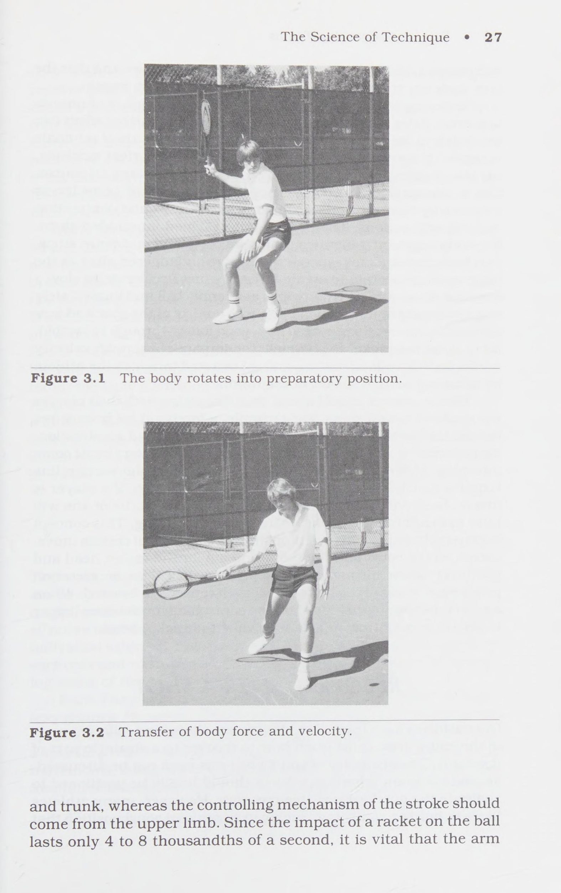
Hình 3.2: Chuỗi truyền tải lực và vận tốc liên hoàn từ chân qua thân người đến tay cầm vợt — Cộng hưởng động lượng từ gốc đến ngọn (Proximal-to-Distal).
Figure 3.2: Kinetic Chain Momentum Summation — Proximal-to-distal sequencing from ground drive, hip rotation, trunk twist to racket whip.
Chương 4: Ứng Dụng Sinh Cơ Học Nâng Cao Hiệu Suất & Chẩn Đoán Lỗi Cú Đánh Chapter 4: Using Biomechanics to Improve Performance & Stroke Diagnosis
Sử dụng Cơ sinh học để cải thiện Người ta thường chấp nhận rằng điểm va chạm hoàn toàn là lần duy nhất trong một cú đánh quần vợt mà sự hoàn hảo phải tồn tại. Điều này có vẻ đơn giản hóa quá mức, nhưng hãy nhớ rằng nhiều cách cầm và vung vợt khác nhau đều mang lại kết quả tốt. Phần quan trọng thứ hai của việc tạo ra cú đánh là động tác bằng chân và định vị. Tay vợt phải ở đúng nơi, đúng thời điểm để đánh bóng tốt. Khoảng 70% tất cả các lỗi trong trò chơi đều xuất phát từ các vấn đề về động tác bằng chân và chọn vị trí. Tất nhiên, một khi vận động viên thực hiện động tác bằng chân đúng cách, hệ thống liên kết của cơ thể vẫn có thể thực hiện không chính xác, tạo ra lỗi vuốt bóng. Làm thế nào để chúng ta xác định một lỗi trong quần vợt?
Rõ ràng, một lỗi vuốt ve là một cú đánh trượt; nếu bóng đánh xa hoặc đi vào lưới thì đó rõ ràng là một sai lầm. Nhưng còn một cú đánh yếu thì sao? Bóng có thể đã chạm sân đối phương nhưng không có độ xuyên thấu như mong muốn của một tay vợt có kỹ năng. Nếu đối thủ liên tục lợi dụng một cú đánh nào đó thì cú đánh đó cũng có thể bị coi là lỗi. Nếu tay vợt của bạn có xu hướng thực hiện những cú đánh kém lực hoặc thiếu kiểm soát, việc phân tích sâu hơn các thông số chuyển động khác nhau có thể hữu ích.
Khi phân tích một cú đánh quần vợt, huấn luyện viên lành nghề phải biết những gì cần tìm. Nhiều hành động thể chất của cơ thể trong hoạt động thể thao là sai lầm. Một số là triệu chứng của một lỗi, một số khác chỉ đơn thuần là những đặc điểm riêng. Phong cách riêng là một phong trào đặc biệt của một cá nhân nhất định. Ví dụ, trên các sân công cộng, người ta thường thấy những phụ nữ trẻ đánh thuận tay với bàn tay còn lại đưa ra như thể họ đang vỗ mông em bé (Hình 4.1). Vị trí thuận tay này khi đánh thuận tay rõ ràng là sự bắt chước của Chris Evert. Tuy nhiên, vị trí đặt tay của Chris là một đặc điểm riêng và không hề ảnh hưởng đến cú đánh thuận tay xuất sắc của cô ấy. Những gì tay vợt nên quan sát và mô phỏng là nhịp điệu và chuyển động xoay của vai Chris khi cô ấy xoay thân mình để định vị đầu vợt.
Hình 4.1 Cú thuận tay của Chris Evert.
Một đặc điểm nổi tiếng khác thường được bắt chước là vị trí xuất phát của John McEnroe khi giao bóng. Sau lần đầu tiên McEnroe xuất hiện trên truyền hình quốc gia, tôi đang quan sát các cậu bé đang học giao bóng. Trong giờ học, khoảng một nửa số học sinh bắt đầu bắt chước McEnroe. Họ không hiểu rằng vị trí xuất phát của McEnroe là một phong cách riêng. Khả năng căn thời gian hoàn hảo của anh ấy cho phép anh ấy có được khả năng xoay hông và thân cực lớn từ vị trí này; không phải chính vị trí đã tạo ra cú giao bóng tuyệt vời của anh ta.
Sau khi huấn luyện viên phân loại các triệu chứng lỗi theo đặc điểm riêng, mối quan tâm tiếp theo là xác định nguyên nhân thực sự của lỗi. Huấn luyện viên cần đảm bảo không chỉ phản ứng với một triệu chứng của lỗi. Triệu chứng là một chuyển động có vẻ như đang gây ra lỗi nhưng thực ra không phải là gốc rễ của vấn đề. Đúng hơn, lỗi gây ra triệu chứng và huấn luyện viên lành nghề không được để điều này đánh lừa. Ví dụ về các vấn đề có triệu chứng là (a) khuỷu tay dẫn đầu trong cú đánh trái tay bằng một tay, (b) ném bóng thấp khi giao bóng, hoặc (c) một cú đánh vội vàng.
Khuỷu tay dẫn đầu thường gặp ở người mới bắt đầu và người ở trình độ trung cấp. Có thể có nhiều nguyên nhân, chẳng hạn như thiếu sự phối hợp để di chuyển cả ba đoạn chi trên cùng một lúc. Một nguyên nhân hiếm khi được xem xét là tư thế cơ thể kém. Đôi khi một tay vợt dẫn đầu bằng cùi chỏ thực sự ở quá gần bóng. Sự gần gũi buộc tay vợt phải đánh không hiệu quả. Hậu quả phổ biến nhất của việc định vị sai khi đánh trái tay bằng một tay là bị chuột rút ở chi trên do dùng khuỷu tay đánh bóng. Nguyên nhân của cú đánh trái tay kém dường như là do cùi chỏ dẫn đầu và thiếu sự phối hợp, nhưng thực tế có thể là do vị trí sai.
Việc tung bóng thấp khi giao bóng cũng có thể gây hiểu lầm. Rõ ràng, có thể chỉ cần ném bóng thấp, nhưng có thể liên quan đến các yếu tố khác. Ví dụ, một tay vợt thiếu khả năng xoay hông đủ phải uốn mạnh thân về phía trước để thực hiện một cú giao bóng hiệu quả. Bởi vì sự uốn cong về phía trước này xảy ra quá nhanh khiến mắt không thể nhận ra, nên có vẻ như quả bóng được ném quá thấp, trong khi trên thực tế, nếu tay vợt có chuyển động ném tốt hơn bằng hông và thân, thì người đó sẽ có thể ném được quả bóng cao hơn. Nếu bạn yêu cầu tay vợt này ném quả bóng lên cao hơn, tay vợt sẽ chỉ đợi nó rơi xuống vị trí ưa thích (và không hiệu quả) của mình.
Nhiều huấn luyện viên có thể cảm thấy rằng một cú đánh vội vàng hoặc vội vàng là dấu hiệu của một tay vợt đang chơi hoảng loạn. Họ bảo tay vợt hãy thư giãn và đừng vội vàng. Vấn đề thực sự có thể là kết quả của động tác chân kém. Thay vì tính thời gian cho cú đánh của họ theo bóng, nhiều tay vợt tính thời gian của cơ thể theo hướng bóng. Khi làm như vậy, những đấu thủ này phải vung gậy ngay khi đến vị trí trên sân, có vẻ như đang lao tới. Nếu họ căn thời gian cho cú đánh của mình, họ sẽ ở đúng vị trí trước khi phải bắt đầu cú đánh.
Huấn luyện kỹ năng sẽ được cải thiện nếu chúng ta tránh nhìn vào vị trí bắt đầu và hình dạng cơ thể trong khi chuyển động và bắt đầu kiểm tra tốc độ của các phần cơ thể cũng như mức độ sử dụng lực. Chúng ta lãng phí thời gian để xem xét những đặc điểm riêng hoặc cố gắng thay đổi các dấu hiệu sai sót. Một nghiên cứu năm 1975 cho thấy rằng việc sửa chữa nguyên nhân gây ra lỗi thường sẽ khắc phục được triệu chứng, nhưng việc sửa chữa triệu chứng không nhất thiết sẽ khắc phục được nguyên nhân. Việc phát hiện lỗi dựa trên triệu chứng chỉ dẫn đến sự thất vọng cho cả huấn luyện viên và tay vợt. Huấn luyện viên phải nghiên cứu nguyên nhân gây ra lỗi, điều này đòi hỏi sự hiểu biết về cơ chế chuyển động của con người - điều gì hiệu quả và điều gì không liên quan đến các hành động quần vợt cụ thể.
Để nâng cao kỹ năng phát hiện lỗi, huấn luyện viên phải hiểu mục tiêu của một tay vợt giỏi (thường là trước khi tay vợt hiểu được nó). Tay vợt quần vợt trong giải đấu phải cố gắng đánh từng cú đánh một cách mạnh mẽ nhưng có kiểm soát. Điều này có nghĩa là vận động viên nên tránh sử dụng lực tối đa, thay vào đó chỉ sử dụng lực vừa đủ kết hợp với khả năng kiểm soát tối ưu để giữ đối thủ ở thế phòng thủ. Sự kết hợp giữa lực và khả năng kiểm soát tối ưu này là mục tiêu của tay vợt điêu luyện. Làm thế nào nó đạt được?
Như đã nêu trước đó, cơ thể là một hệ thống liên kết. Nếu một vận động viên vung vợt mạnh nhất có thể chỉ bằng chi trên, thì có thể tạo ra một lượng lớn lực nhưng khả năng kiểm soát kém hơn. Nếu vận động viên vung vợt với sự chuyển động đồng bộ, hiệu quả của hệ thống liên kết chân-hông-thân trên thì sẽ mang lại lực và khả năng kiểm soát tối ưu.
Hệ thống liên kết là cơ sở tạo ra lực trong quần vợt và lượng lực tác dụng trong một cú đánh cụ thể phụ thuộc vào ba yếu tố: (a) số lượng bộ phận cơ thể được sử dụng, (b) lượng lực tồn tại ở mỗi phân đoạn và (c) thời gian giữa các hành động phân đoạn này. Lỗi xảy ra do các bộ phận cơ thể không được chuyển động và các bộ phận cơ thể được sử dụng không có lực và thời gian tối ưu. Hãy xem xét cú đánh trái tay bằng hai tay không có hành động cốp xe. Nếu hai chi trên phải tạo ra toàn bộ lực để đánh cú đánh này thì cơ hội đánh trúng cú đánh sẽ rất hạn chế. Tay vợt có điểm yếu để đối thủ khai thác. Tương tự như vậy, nếu xoay hông không đủ khi giao bóng, tay vợt có thể bù đắp bằng cách uốn mạnh thân về phía trước, nhưng cú giao bóng sẽ không bao giờ tốt như mong đợi với sự tương tác cân bằng, đồng bộ của tất cả các phân đoạn.
Vậy thì, làm thế nào người ta có thể đánh giá được lượng lực do một bộ phận cơ thể nhất định tạo ra? Đầu tiên, không thể nhìn thấy lực nhưng có thể nhìn thấy vận tốc. Để thấy được sự tương tác và thời gian giữa các bộ phận cơ thể, bạn phải học cách phát hiện lỗi một cách cụ thể—một Sherlock Holmes đích thực—trong việc phát hiện lỗi. Hãy thử những nguyên tắc này khi bạn thực hành phát hiện và phân tích lỗi trong chuyển động của tay vợt.
1. Xác lập mục đích của phong trào. Điều này có vẻ đơn giản nhưng lại rất quan trọng đối với việc phân tích thành tích quần vợt. Ví dụ: hai cú thuận tay từ phía sau đường cuối sân có thể có cùng một mục tiêu chung (buộc phạm lỗi), nhưng cú đánh ngược và mức độ xoáy của bóng có thể khác nhau tùy thuộc vào mục đích cụ thể. Hãy chắc chắn rằng bạn biết mục đích này trước khi phê bình chuyển động của cú đánh.
2. Quan sát chuyển động cụ thể nhiều lần và xác nhận rằng có điều gì đó không ổn. Nếu cú sút bị trượt, rõ ràng có điều gì đó không ổn; nếu nó kém mạnh hơn mong muốn hoặc thiếu khả năng kiểm soát hoặc thâm nhập, điều này cũng cho thấy có lỗi. Bạn nên quyết định chính xác lý do tại sao cú đánh không hiệu quả trước khi tiếp tục.
3. Cố gắng đánh giá nguyên nhân của vấn đề và khoanh vùng nó (tức là nửa trên hoặc nửa dưới của cơ thể). Sau khi quan sát cơn cú đánh vài lần, bạn sẽ có thể xác định được một bộ phận cơ thể cụ thể có thể là nguyên nhân gây ra lỗi.
4. Tiếp tục quan sát chuyển động, chỉ quan sát bộ phận đã xác định và xác định vấn đề ở một đoạn cơ thể cụ thể. Việc giới hạn các phương án sửa lỗi bằng cách xác định nguyên nhân ở một phần cụ thể của cú đánh là chìa khóa để xác định nguyên nhân gây ra lỗi. Hơn nữa, đừng bao giờ ngừng phân tích quá sớm. Nếu bạn cảm thấy lỗi nằm ở cốp xe, hãy tiếp tục phân tích cho đến phần động tác bằng chân để chắc chắn. Bạn không có thời gian để lãng phí việc sửa chữa các triệu chứng thay vì nguyên nhân.
5. Sửa lỗi hiệu suất. Thông tin cơ sinh học được sử dụng để phát hiện lỗi cũng hữu ích trong việc sửa lỗi. Vấn đề với hệ thống liên kết có thể được phát hiện bằng cách đánh giá một cách có hệ thống mỗi liên kết đóng góp vào kết quả như thế nào. Một cách tiếp cận có hệ thống tương tự có thể được sử dụng để khắc phục vấn đề. Khi bạn đã xác định được nguyên nhân của sự cố, có một bước rất quan trọng cần thực hiện trước khi cố gắng khắc phục chuyển động. Bước đó là tạo ra một hình ảnh trong đầu về hiệu suất của mô hình—chính xác là bạn nghĩ tay vợt sẽ trông như thế nào trong khi di chuyển. Khi bạn đã có mô hình hoàn hảo này trong đầu, hãy so sánh nó với chuyển động của tay vợt. Xác định những gì tay vợt của bạn phải làm để thực hiện giống như mô hình. Sau đó là lúc xem xét cách thay đổi kiểu di chuyển của tay vợt cho phù hợp.
6. Khi huấn luyện tay vợt sửa đổi cú đánh, hãy chú ý chỉ cung cấp lượng thông tin cần thiết để thực hiện thay đổi. Quá nhiều thông tin có thể tạo ra tình trạng quá tải mạch, dẫn đến việc phân tích bị tê liệt. Cố gắng phát triển các tín hiệu hiệu suất được nêu ngắn gọn để gợi ra kiểu chuyển động mong muốn. Nếu bạn giải thích cho một vận động viên cách mỗi phần của hệ thống liên kết của cơ thể phải đạt tốc độ quay tối ưu trước khi phần tiếp theo tham gia, tay vợt có thể bắt đầu suy nghĩ quá nhiều về cách hông và thân tương tác và không đủ về việc đánh bóng. Thay vào đó, yêu cầu tay vợt ném bóng bình thường (ví dụ), sau đó yêu cầu tay vợt ném lại đồng thời hạn chế chuyển động bằng cách không xoay thân cây. Tay vợt sẽ cảm nhận được hoặc cảm nhận được sự khác biệt khi kiểu ném bị thay đổi. Bây giờ bạn có thể rút ra sự tương tự giữa cách ném và cách tay vợt sử dụng cơ thể của mình trong chuyển động đánh.
Phần giải thích không được quá chuyên môn cũng như không quá dài dòng. Cố gắng khắc phục các vấn đề của hệ thống liên kết bằng cách sử dụng các hình minh họa phổ biến và phát triển các tín hiệu hiệu suất giúp tay vợt có được các kiểu chuyển động phù hợp mà không cần đi sâu vào cơ sở khoa học. Cung cấp cho tay vợt quá nhiều thông tin có thể làm giảm hiệu suất. Giữ các tín hiệu đơn giản để giúp tay vợt phát triển một hình ảnh tinh thần giúp họ thực hiện thay đổi.
Bây giờ hãy xem xét các ứng dụng cơ sinh học sau có liên quan đến lỗi và các tín hiệu hiệu suất có thể có. Đây không phải là tín hiệu duy nhất có thể được sử dụng nhưng chúng mang tính đại diện.
Thư giãn khi giao bóng. Thật đáng kinh ngạc khi chứng kiến sự co rút cơ bắp ở cẳng tay của các vận động viên chuẩn bị giao bóng. Sự co lại này đồng nghĩa với việc cầm vợt rất chắc chắn. Ngoài ra, người ta còn thấy đủ loại vặn xoắn ở cổ tay. Sự co thắt quá mức tạo ra sự mệt mỏi cơ bắp và mất nhịp điệu. Chuẩn bị giao bóng, tay vợt phải giữ tư thế thoải mái, không bị co cơ. Bàn tay và cẳng tay phải thẳng, không có những đường cong lạ. Hãy nhớ rằng, nguồn cung cấp năng lượng ban đầu ở chân, hông và thân; chi trên cuối cùng cũng nhận và tăng thêm sức mạnh, nhưng chủ yếu là do hành động giống như đòn roi hơn là do co cơ. Một người giao bóng thoải mái cho phép trọng lực bắt đầu động tác backswing, do đó đạt được nhịp điệu dễ dàng hơn nhiều.
Duy trì nhịp độ khi giao bóng. Nhiều tay vợt có xu hướng quên tầm quan trọng của việc xoay hông/thân khi giao bóng. Họ thực hiện các nghi thức đặc trưng như nảy bóng, mặc áo, v.v., nhưng sau đó họ lao về phía sau một cách vội vàng và chuyển động giao bóng trở nên vội vã và chật chội. Nguyên nhân thông thường của động tác backswing vội vã là do khả năng xoay hông/thân kém. Chuyển động diễn ra nhanh đến mức không đạt được nhịp điệu và vận động viên cuối cùng đánh một cú giao bóng kém. Người giao bóng nên thực hiện động tác backswing nhịp nhàng và có chủ ý, giống như trong chơi gôn. Điều đó không có nghĩa là họ nên thực hiện động tác backswing quá chậm để gây mất thời gian, nhưng họ phải đủ chủ ý để tạo ra vòng xoay hông/thân cây thích hợp. Trong một cú backswing có chủ ý hơn, nhiều khả năng cuộn dây sẽ xảy ra nhiều hơn, thường là ở khu vực thân cây.
Lực đẩy và ném khi giao bóng. Khi dạy tay vợt ở trình độ trung bình sử dụng chân khi giao bóng, hãy nhấn mạnh trình tự các sự kiện trong hệ thống liên kết của cơ thể—thời điểm giữa việc duỗi chân, xoay hông rồi xoay thân, và cuối cùng là hành động ném của chi trên. Hãy thử yêu cầu tay vợt hạ trọng tâm (gập đầu gối) khi cánh tay ném đi lên. Kết hợp với động tác vung chân nhịp nhàng, động tác gập đầu gối này giúp họ chuẩn bị đầy đủ. Mức độ uốn cong tối ưu tùy thuộc vào từng cá nhân và huấn luyện viên phải xác định xem chuyển động giao bóng của mỗi tay vợt bị ảnh hưởng như thế nào bởi các mức độ khác nhau. Khi cú giao bóng lùi về phía sau đạt đến đỉnh cao, cơ thể sẽ “bùng nổ” khỏi tư thế chuẩn bị. Vụ nổ này bao gồm hành động đẩy của chân và sau đó là hành động ném của hông, thân và cánh tay. Vì vậy gợi ý là “đẩy và ném”.
Chỉ đường giữa hai vai của bạn vào quả bóng ở cú đánh trái tay bằng một tay. Một tay vợt có kỹ năng thường sẽ cố gắng đánh trái tay bằng một tay và nâng vai trước lên, gây mất kiểm soát vợt. Để giảm thiểu chuyển động của cơ thể bên ngoài và tối đa hóa khả năng kiểm soát cú đánh, vận động viên nên giảm chuyển động của vai trước đó. Nói với tay vợt rằng mỗi vai tượng trưng cho một dấu chấm và họ nên kết nối các dấu chấm đó bằng một đường thẳng và kéo dài đường thẳng về phía trước. Khi xoay người để chuẩn bị cho cú đánh trái tay bằng một tay, họ phải hướng đường vai về phía bóng và giữ thẳng cho đến khi bóng được đánh.
Sẽ luôn có một số chuyển động của vai trong một cú đánh giống như cú đánh trái tay bằng một tay, nhưng gợi ý này sẽ khoanh vùng một nguyên nhân gây ra vấn đề và giảm thiểu chuyển động vai quá mức. Gợi ý cũng giúp các vận động viên sử dụng chân của họ để thực hiện cú đánh trái tay bằng một tay thay vì thay đổi hành động của cánh tay để đưa đầu vợt xuống dưới bóng.
Tập trung bóng balla lại để đánh một cú thuận tay xoáy lên. Tim Gullikson luôn muốn đánh một cú thuận tay xoáy lên mạnh. Một ngày nọ, khi Tim đang đánh nhau với Tom, người anh song sinh của anh, thì rõ ràng là tại sao anh lại gặp nhiều khó khăn khi thực hiện cú đánh này. Khi anh ấy vung vợt để thực hiện cú công bóng thuận tay xoáy lên, cánh tay của anh ấy duỗi ra nhanh đến mức vợt của anh ấy ở xa cơ thể ngay từ đầu cú đánh. Để hiểu cách Tim giải quyết vấn đề của mình, hãy xem xét một vận động viên trượt băng nghệ thuật và người bạn của chúng ta, mômen quán tính. Khi vận động viên trượt băng nghệ thuật quay với hai tay ôm chặt, họ sẽ quay rất nhanh; khi cánh tay của họ mở rộng, họ quay chậm hơn nhiều. Nguyên tắc tương tự cũng áp dụng cho một tay vợt đánh một cú thuận tay xoáy lên nặng. Cách duy nhất để đánh xoáy lên là tăng tốc đầu vợt từ thấp lên cao, chạm vào mặt sau của quả bóng. Đầu vợt của Tim bị kéo dài ra xa anh đến mức khi anh cố gắng tăng tốc, anh đã mất kiểm soát. Bằng cách dồn bóng vào một chút, anh ta giảm mômen quán tính (lực cản quay), cho phép anh ta xoay thân mình nhanh hơn và xé toạc cú thuận tay xoáy lên của mình.
Thực hiện cú đánh tiếp cận với thời gian theo dõi dài. Nhiều tay vợt có xu hướng theo dõi ngắn gọn cú đánh tiếp cận, mở mặt vợt quá sớm trong cú đánh. Điều này khiến bóng có quỹ đạo cao hơn bình thường và “ngồi dậy” khi nảy sang phần sân đối phương. Rõ ràng đây không phải là một cách tiếp cận hiệu quả. Có hai điều cần cân nhắc khi thực hiện nét vẽ này. Đầu tiên là phải đảm bảo tay vợt tăng tốc đầu vợt thông qua tác động để điều khiển cú đánh tiếp cận hơn là hướng dẫn nó. Mặc dù từ dao gợi ý rằng đầu vợt song song với mặt đất nhưng thực tế không phải vậy. Ít tay vợt nhận ra rằng đầu vợt chỉ hơi vát khi va chạm nếu không bóng sẽ bay thẳng lên không trung. Không cần thiết phải giải thích cơ chế chính xác của cú đánh mà chỉ cần sử dụng a.cue cho phép tay vợt tăng tốc thông qua tác động. Một thời gian theo dõi dài sẽ không cho phép đầu vợt mở quá nhiều trước khi va chạm và cho phép tăng tốc tiếp tục trong quá trình va chạm để bóng đi qua lưới giống như một đường chuyền và tiếp cận sân đối phương ở một góc thấp. Kết quả lý tưởng là bóng trượt thấp, buộc đối phương phải đánh lên để phá lưới.
Sử dụng bước nhảy cân bằng về phía trước khi trả giao bóng. Tại giải Mỹ mở rộng 1983, Tom Gullikson đang chuẩn bị thi đấu với Chip Hooper, người cao 6 feet 7 inch và có một trong những cú giao bóng lớn nhất trong trò chơi. Tom cảm thấy nếu anh ấy có thể trả lại cú giao bóng của Hooper một cách hiệu quả thì anh ấy có cơ hội chiến thắng tuyệt vời. Tom cảm thấy anh ấy không thể chờ đợi quả giao bóng của Hooper mà anh ấy phải tấn công nó, tương tự như cách Bjorn Borg trả giao bóng. Borg luôn bắt đầu lượt giao bóng của mình bằng cách đứng sau đường biên khoảng 7 đến 8 feet. Khi đối phương giao bóng, Borg tiến về phía trước và thường xuyên chạm bóng ở khoảng 3 đến
5 feet sau vạch cuối sân. Khi làm như vậy, Borg đã tạo ra rất nhiều động lực về phía trước và buộc cơ thể của mình phải tấn công quả giao bóng của đối phương mọi lúc mà không cần phải dùng sức. Tuy nhiên, điều quan trọng là sự cân bằng của anh ấy.
Gullikson cho rằng cần phải xem xét xem mình nên đứng ở đâu khi trả một quả giao bóng nặng như của Hooper. Điều này được thực hiện bằng cách nhờ anh trai của anh ấy, Tim, giao những quả bóng phẳng (không quay) cho Tom, người đã giữ tư thế cách đường biên khoảng một thước. Sau đó, anh ta được hướng dẫn lùi lại 3 feet nữa để cách đường biên 2 thước. Ngay khi Tim bắt đầu thực hiện cú vung vợt về phía trước trong cú giao bóng của mình, Tom phải nhảy một bước nhỏ về phía trước, tiếp đất khi Tim tiếp xúc với bóng. Xác định bóng đang di chuyển về phía nào khi anh ta tiếp tục đà về phía trước của cơ thể, anh ta có thể sử dụng động tác chân và xoay cơ thể thích hợp để chuẩn bị đầu vợt chính xác. Giữ vai ngang bằng và sử dụng đà tiến về phía trước một cách hợp lý, Tom đã có thể thực hiện một cú trả giao bóng cực kỳ xuyên thấu. Anh cảm thấy tự tin rằng mình sẽ thành công trước Hooper. Trong trận đấu, Tom đã thua set đầu tiên với tỷ số 6-3, và một khán giả đã nhận xét: “Làm sao vậy?”
Sử dụng Cơ chế sinh học để cải thiện hiệu suất * « 49 thế giới có phải anh chàng đó sẽ đánh bại Hooper bằng cách tấn công mọi cú giao bóng theo cách đó không?'' Chà, Tom phải mất một set để giảm thời gian và nhận ra chính xác khoảng cách phía sau đường cuối sân mà anh ấy phải đứng ở vị trí thích hợp để nhảy, đọc và phản ứng với cú giao bóng của Hooper. Tom thắng ba set tiếp theo và tiến vào vòng thứ tư.
Cắt bóng khi chạm đất bất cứ khi nào có thể. Nhiều tay vợt có những cú đánh tiếp đất xuất sắc nhưng lại yếu đi khi đánh trên đường chạy. Khi đứng yên, các cú đánh tiếp đất hiệu quả của tay vợt đến từ lực tạo ra từ chân, hông và thân. Tuy nhiên, hiệu quả của cú đánh khi đánh trên đường chạy không phụ thuộc nhiều vào các bộ phận cơ thể khác nhau mà phụ thuộc vào hướng chuyển động của tay vợt.
Hãy lấy ví dụ tương tự về vận động viên ném bóng thứ ba trong môn bóng chày. Khi một quả bóng chạm đất được đánh giữa người đánh bóng thứ ba và người cản phá đường ngắn, người đánh bóng thứ ba sẽ di chuyển về phía trước và theo một góc về phía đế thứ nhất. Nếu người đánh bóng thứ ba cắt bóng, động lượng tuyến tính sẽ đưa anh ta hoặc cô ta về phía trụ thứ nhất, cung cấp cho người đánh bóng thứ ba một vị trí ném cơ bản đầu tiên tốt hơn so với người cản phá ngắn, người đang lao ra xa khỏi cơ sở thứ nhất trong trường hợp bóng vượt qua người đánh bóng thứ ba.
Điều tương tự cũng xảy ra trong quần vợt. Nếu tay vợt phát triển tâm lý cắt bóng khi đánh trên đường chạy, họ có thể đánh những cú đánh xuyên đất mà không cần vung quá mạnh. Điều quan trọng là sử dụng động lượng về phía trước của cơ thể và giữ thăng bằng. Một lưu ý: Những tay vợt quá tự mãn đôi khi có thể thấy mình đi quá xa đường cuối sân và bị rơi vào vùng đất vắng người. Một phần công việc của huấn luyện viên là giúp các tay vợt xác định khi nào họ có thể và không thể cắt bóng thành công.
Bóp tay cầm vợt khi đánh những cú vô lê ngang vai. Thành công của cặp song sinh Gullikson ở nội dung đánh đôi chứng tỏ rằng họ là một trong những tay vô lê giỏi nhất trong quần vợt chuyên nghiệp. Tuy nhiên, giống như tất cả các chuyên gia, họ luôn nỗ lực để cải thiện. Họ cảm thấy cần truyền nhiều năng lượng hơn cho quả bóng (“Hãy bám nhiều hơn vào nó”) khi thực hiện cú vô lê cao. Phim và băng video của cả hai tay vợt tiết lộ rằng trong những cú vô lê khi bóng ở dưới độ cao của lưới, họ có xu hướng "đĩa" hoặc
'"gấp'' đầu vợt. Điều xảy ra là đầu vợt giữ nguyên vị trí cố định cho đến khi bóng rời đi, sau đó phản ứng với tác động bằng cách đập bóng. Khi phản ứng như vậy, vợt đang hấp thụ một phần năng lượng từ quả bóng và do đó đánh một cú đánh có kiểm soát hơn mong đợi. Tuy nhiên, kiểu đánh bóng tương tự cũng được nhìn thấy trên các quả bóng mà Tim và Tom đánh trên độ cao lưới, những cú đánh mà họ muốn truyền năng lượng tối đa cho bóng.
Khi đó, tín hiệu trở thành '' Siết chặt độ bám ở những cú vô lê cao'', giúp giảm phản ứng của vợt khi va chạm và tối đa hóa việc truyền năng lượng đến bóng trong khi vẫn duy trì khả năng kiểm soát. Trước khi khuyến nghị sử dụng tín hiệu này với những tay vợt có kỹ năng kém hơn, chúng ta phải đưa ra cảnh báo rất lớn về sự thận trọng. Bằng cách siết chặt tay cầm, tay vợt làm tăng sự tương tác giữa vợt và cơ thể, điều này có thể dẫn đến trường hợp khuỷu tay quần vợt nghiêm trọng nếu tay vợt không đủ sức để chịu được những tác động lặp đi lặp lại. Như mọi khi, các huấn luyện viên phải tùy ý sử dụng và chỉ sử dụng tín hiệu khi các tay vợt của họ có khả năng.
Tự mình phát triển các tín hiệu. Để tạo tín hiệu hiệu suất của riêng bạn, hãy xem xét các từ tương tự hoặc cụm từ khác nhau mà tay vợt dễ hiểu. Sự tương tự bạn chọn có thể là từ cuộc sống hàng ngày hoặc từ sân đấu. Ví dụ, giả sử tay vợt của bạn gặp khó khăn trong việc uốn cong đầu gối của mình trong khi giao bóng và do đó giao bóng không tốt. Khi tay vợt thả cú ném, gợi ý của bạn có thể là “‘Ngồi xuống!,”’ khuyến khích tay vợt uốn cong đầu gối. Sau đó, vào đúng thời điểm, tín hiệu “Nổ tung lên!” có thể tác động đến việc kéo dài và thực hiện cú giao bóng hợp lý.
Một ví dụ khác có thể xuất phát từ mối lo ngại của bạn về một tay vợt không xoay hông đúng cách trong quá trình thực hiện động tác giao bóng. Hướng dẫn vận động viên ném bóng xa hơn một chút vào sân có thể khắc phục vấn đề mà không bao giờ đề cập đến việc thiếu khả năng xoay hông. Khi bóng được ném xa hơn một chút vào sân, tay vợt buộc phải không chỉ tiến lên mà còn phải tiến về phía trước, điều này đòi hỏi phải xoay nhiều hơn.
Cố gắng phát triển các tín hiệu mà tay vợt có thể dễ dàng diễn giải và phản ứng. Hãy thận trọng với cách diễn đạt bạn sử dụng. Tôi biết một học sinh được xếp hạng quốc gia, sau khi phàn nàn về khuỷu tay quần vợt, đã được quan sát thấy bàn tay và cẳng tay của anh ấy nghiêng quá mức trong động tác giao bóng. Huấn luyện viên của anh ấy đã hướng dẫn anh ấy làm như vậy. Điều này thật đáng lo ngại vì việc phát âm trong khi giao bóng thực sự là một cơ chế giải phóng hoặc tiếp theo. Là một cơ chế giải phóng, nó có tác dụng bảo vệ cơ thể, nhưng nếu vận động viên cố gắng nằm sấp một cách mạnh mẽ thì sẽ không có cơ chế giải phóng nào và khuỷu tay sẽ hấp thụ mọi chấn động từ hành động đó. Do đó, gợi ý dự phòng cũ, “Bật cổ tay về phía va chạm,” dường như vẫn là cách tốt nhất khi dạy hành động của chi trên khi giao bóng.
Tùy thuộc vào tính cách của tay vợt và cách bạn tương tác với họ, số lượng tín hiệu thích hợp là vô hạn. Hãy cố gắng đổi mới. Đừng làm quá tải mạch bằng cách cung cấp cho vận động viên quá nhiều thông tin; phát triển các tín hiệu đơn giản mà họ có thể dễ dàng thực hiện. Nó sẽ giúp họ tiếp thu các kỹ năng dễ dàng hơn và công việc của bạn thú vị hơn rất nhiều.
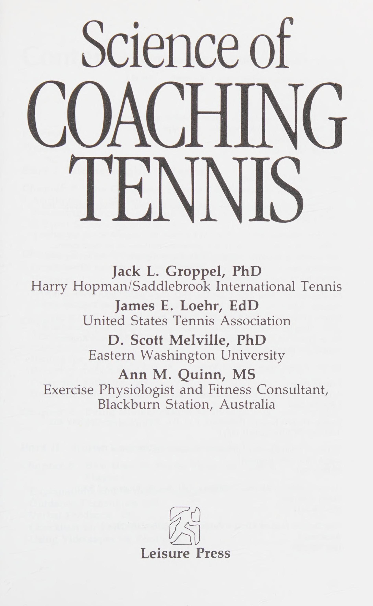
Hình 4.1: Phân tích sinh cơ học cú thuận tay kinh điển của Chris Evert — Vị trí tay không thuận giữ thăng bằng và ổn định trục cơ thể trước khi giải phóng lực vung.
Figure 4.1: Biomechanical Analysis of Chris Evert's Forehand — Dynamic non-hitting arm balance and torso stabilization prior to forward swing release.
Phần 2: Khoa Học Tiếp Thu Vận Động & Phương Pháp Huấn Luyện Kỹ Năng
Chương 5: Phương Pháp Dạy Kỹ Năng Hiệu Quả: Thị Phạm, Hướng Dẫn & Phản Hồi Video Chapter 5: How Best to Teach Skills: Explanations, Demonstrations, Feedback & Video Analysis
Cách tốt nhất để dạy kỹ năng cho tay vợt quần vợt
Trong số tất cả các ngành khoa học thể thao, học tập về vận động có lẽ là ngành ít được hiểu và áp dụng nhất. Hầu hết các vận động viên và huấn luyện viên quần vợt bắt đầu nhận ra rằng các chuyên gia cơ sinh học có thể cung cấp thông tin vô giá về các chuyển động trên sân và kỹ thuật vuốt ve. Kiến thức của nhà sinh lý học thể thao về những thứ như hệ thống tuần hoàn và hệ thống cơ xương hiện được công nhận là có tiềm năng lớn trong việc rèn luyện thể lực cho các vận động viên quần vợt. Và mọi người ngày càng nhận ra rằng sự hiểu biết của nhà tâm lý học thể thao về các yếu tố động lực và cảm xúc có thể giúp ích rất nhiều cho tay vợt đạt được thành tích tối đa. Tuy nhiên, rất ít huấn luyện viên có thể giải thích chi tiết những gì đang diễn ra trong lĩnh vực học tập vận động hoặc đưa ra ví dụ về cách lĩnh vực nghiên cứu này có thể hữu ích cho họ.
Vì mục đích của chúng tôi, học tập vận động đề cập đến việc nghiên cứu xác định những cách tốt nhất để dạy mọi người học và thực hiện các kỹ năng thể chất. Huấn luyện viên giải thích và thể hiện kỹ năng như thế nào? Đưa ra phản hồi cho tay vợt? Thiết kế bài tập? Nên dành bao nhiêu thời gian luyện tập cho các cuộc tập trận và đấu tập? Những câu hỏi này và nhiều câu hỏi liên quan thuộc lĩnh vực khoa học về học tập vận động và quan trọng là ảnh hưởng đến mức độ tay vợt tiếp thu và thực hiện các kỹ năng.
Cho đến nay các huấn luyện viên thường phải trả lời các câu hỏi trước đó dựa trên trực giác và kinh nghiệm. Tất nhiên, hai thuộc tính này đều có giá trị, nhưng chỉ riêng chúng sẽ không có khả năng dẫn đến tới những lựa chọn giáo dục tối ưu. Rất nhiều nghiên cứu về vận động gần đây có ý nghĩa thiết thực đối với các huấn luyện viên quần vợt. Chương này áp dụng một số kiến thức này để giải quyết mối quan tâm hàng đầu của các huấn luyện viên quần vợt: cách tốt nhất để dạy kỹ năng cho tay vợt.
Các huấn luyện viên giàu kinh nghiệm biết rằng việc dạy mọi người vung vợt tennis đúng cách không hề dễ dàng như người ta tưởng. Có lẽ bạn đã từng trải qua tình huống mà bạn đã làm việc chăm chỉ với một tay vợt về một kỹ thuật nhưng đã thất bại, một phần hoặc toàn bộ. Tôi đã từng làm việc rộng rãi với một tay vợt có cú đánh trái tay xoáy xuống khá hiệu quả và muốn phát triển cú đánh nền trái tay xoáy lên. Anh ấy hài lòng với sự hướng dẫn và hết lời khen ngợi sự giúp đỡ của tôi ở mọi nơi anh ấy đến. Sự thật đáng thất vọng là kết quả chỉ xác nhận rằng tôi không thể giao tiếp với tay vợt.
Anh ấy vẫn cắt cú trái tay nhiều như mọi khi, chỉ có điều bây giờ anh ấy có một pha theo dõi thú vị hơn.
Các nhà nghiên cứu về vận động đã xác định được một khái niệm đóng vai trò như một hướng dẫn rất hữu ích bất cứ khi nào chúng ta cố gắng dạy các kỹ năng thể chất. Khái niệm này là khi mọi người đang học một kỹ năng mới hoặc thực hiện các thay đổi trong một kỹ năng cũ, họ cần biết hai điều: (a) hình thức chính xác sẽ trông như thế nào và cảm thấy như thế nào, và (b) họ thực sự đang thực hiện kỹ năng đó như thế nào. Trong nghiên cứu, việc biết hình thức chính xác trông như thế nào và có cảm giác như thế nào được gọi là hình ảnh của sự đúng đắn. Cách họ thực sự thực hiện được coi là hình ảnh của hiệu suất thực tế. Khi học các kỹ thuật mới, tay vợt nâng cao kỹ năng của mình bằng cách so sánh hai hình ảnh. Họ điều chỉnh những nỗ lực trong tương lai để đạt được sự tương ứng giữa hai bên. Nếu một trong hai hình ảnh không được biết rõ ràng, tay vợt sẽ không học được ở tốc độ tối ưu.
Làm cho người biểu diễn nhận thức được hình thức họ đang cố gắng đạt được và những gì họ thực sự đang làm nghe có vẻ dễ dàng. Một số huấn luyện viên cho rằng tất cả những gì họ phải làm là giải thích động tác hoặc kỹ năng, trình diễn nó một vài lần và sau đó, khi các tay vợt luyện tập, sẽ phê bình màn trình diễn. Trên thực tế, việc truyền đạt thành công thông tin này là rất khó và chính vì lý do này mà nhiều nỗ lực dạy kỹ thuật vuốt ve đều thất bại.
May mắn thay, việc dạy kỹ năng không còn khó khăn như xưa nữa. Nghiên cứu đáng kể đã điều tra cách thực hiện tốt nhất cách giao tiếp kiểu này và chúng tôi sẽ liên quan đến cách áp dụng thông tin này một cách hữu ích để giúp tay vợt học các kỹ thuật mới. Để rõ ràng, cuộc thảo luận của chúng ta sẽ được chia thành các phần sau: Giải thích và minh họa, Kỹ thuật hướng dẫn, Phản hồi bằng lời nói, Sử dụng danh sách kiểm tra để phản hồi và
Sử dụng băng video để phản hồi.
GIẢI THÍCH VÀ GIẢI THÍCH
Mục đích của việc giải thích và thể hiện một kỹ năng quần vợt là để người học lưu giữ trong đầu họ hình ảnh rõ ràng về sự đúng đắn. Nghiên cứu chỉ ra rằng chỉ giải thích thôi thì không có hiệu quả đặc biệt trong việc thực hiện điều này. Bạn có thể chứng minh quan điểm đó bằng cách cố gắng giải thích bằng lời về một kỹ thuật thể thao cho một người hoàn toàn không quen thuộc với kỹ năng đó. Ngay cả khi bạn giải thích kỹ năng này một cách lâu dài, học sinh sẽ chỉ có thể đưa ra những giá trị gần đúng thô thiển về nó.
Sự phức tạp của các kỹ năng vận động (Motor Skills), vốn đòi hỏi sự tương tác phong phú của nhiều chuyển động cơ thể, khiến việc truyền tải hình ảnh về tính đúng đắn bằng lời giải thích trở nên khó khăn. Sẽ mất nhiều thời gian và kỹ năng diễn đạt cực kỳ tốt để mô tả chính xác những chuyển động đa dạng này và mối quan hệ của chúng với nhau. Thêm vào khó khăn là người học phải tiếp thu tất cả thông tin bằng lời nói này, dịch nó thành hình ảnh trực quan và ghi nhớ chính xác hình ảnh này khi thực hành.
Vấn đề là, chỉ giải thích dài dòng không phải là cách tốt để dạy kỹ thuật quần vợt. Trình diễn các kỹ thuật tạo ra hình ảnh trực quan hiệu quả hơn nhiều. Các cuộc trình diễn có thể dễ dàng trình bày một loạt các chuyển động cho người học, giúp họ giảm bớt nhiệm vụ tinh thần khó khăn là chuyển từ sang hình ảnh trực quan.
Mặc dù các cuộc biểu tình có sẵn những lợi thế nhưng chúng không phải là một phương tiện giao tiếp kỳ diệu. Thông tin bằng lời nói có thể thúc đẩy việc lưu trữ hình ảnh một cách hiệu quả. Những lời giải thích, khi được sử dụng để gợi ý các khía cạnh của các chuyển động đã được chứng minh, có thể góp phần rất lớn vào việc phát triển và duy trì hình ảnh về tính đúng đắn. Chúng tôi sẽ đưa ra một số cách để bạn có thể cải thiện chất lượng cuộc biểu tình của mình.
Nghiên cứu đã chỉ ra rằng những người quan sát giỏi hơn rất nhiều trong cả việc chú ý và ghi nhớ các khía cạnh của một cuộc biểu tình khi các cụm từ hoặc từ ngữ được sử dụng để thu hút sự chú ý của họ. Nếu không có tín hiệu bằng lời nói, hầu hết các khía cạnh của cuộc biểu tình hầu như không được chú ý. Các cú đánh quần vợt bao gồm những chuyển động phức tạp đến mức người học, ngay cả khi họ đang rất cố gắng, vẫn có thể dễ dàng bị phân tâm bởi những phần không quan trọng của cú đánh và không nhìn thấy được những khía cạnh quan trọng nhất.
Ra hiệu bằng lời nói cũng cải thiện đáng kể việc ghi nhớ các khía cạnh chuyển động bằng cách gắn nhãn cho chúng. Giống như bạn không thể nhớ đến hình ảnh một con chó mà không nghĩ đến con chó trước tiên, những tay vợt quần vợt cũng không thể nhớ được một khía cạnh trong màn trình diễn của bạn nếu họ chưa đặt tên cho nó. Ví dụ: ngay cả khi bạn đã thể hiện sự thay đổi trọng lượng đi kèm với cú đánh tiếp đất, người quan sát có thể không nhớ được khái niệm đó nếu không có thẻ tên chẳng hạn như chuyển trọng lượng, bước về phía trước hoặc nghiêng người vào đó.
Vì vậy, có lý do chính đáng để bổ sung việc trình diễn bằng các tín hiệu bằng lời nói. Trước khi thể hiện một kỹ năng, hãy nghĩ đến một hoặc hai khía cạnh chuyển động mà bạn muốn người quan sát chú ý. Khi trình diễn, hãy chuẩn bị sẵn những gợi ý ngắn gọn, sinh động để thu hút sự chú ý của người học vào các khía cạnh này. Các biểu thức ngắn, đầy màu sắc dễ dàng được mã hóa và truy xuất từ bộ nhớ hơn. Ví dụ: khi thực hiện một cú đánh nền trái tay xoáy lên, bạn có thể nói, 'Hãy chú ý cách cánh tay của tôi chuyển động như thể tôi đang rút kiếm.'' Gợi ý này nên tập trung sự chú ý của học viên vào cách cánh tay vuốt ve của bạn di chuyển từ thấp lên cao và từ trong ra ngoài thay vì phẳng hoặc xung quanh cơ thể như thường lệ. Sau đó, tay vợt nghĩ về hoặc thực hành kỹ thuật mới này có thể luyện tập trong tâm trí việc rút kiếm và dễ dàng được nhắc nhở về khía cạnh chuyển động quan trọng này. Nếu bạn không cung cấp các tín hiệu có sẵn như vậy, bạn đang tận dụng cơ hội này. rằng tay vợt có thể không tạo ra những hình ảnh cá nhân và do đó hình ảnh sẽ nhanh chóng biến mất.
Một gợi ý đáng nhớ khác cho cú trái tay xoáy lên là một gợi ý mà Vic Braden sử dụng. Anh ấy cho rằng vị trí tiếp theo là một phần quan trọng của cú swing này và nhiệt tình nói với các học trò của mình rằng hãy
‘thở ra nách.’’ Tín hiệu này vừa hiệu quả vừa đầy màu sắc vì nó làm nổi bật vị trí cuối. Vị trí bắt đầu và kết thúc là những khía cạnh dễ nhớ nhất của chuyển động và do đó đóng vai trò là kim chỉ nam tốt cho những nỗ lực trong tương lai. Huấn luyện viên nên đặc biệt chú ý đến việc cố gắng gợi ý vị trí bắt đầu và tiếp theo của các cú đánh mà họ đang sửa. Nhấn mạnh rằng các tay vợt phải “‘tạo dáng chụp ảnh’ khi chuẩn bị thực hiện cú đánh từ trên cao và “với tay vào lưới” khi thực hiện cú vô lê. Với một chút trí tưởng tượng, bạn chắc chắn có thể cải thiện những tín hiệu này.
Một nhận xét cuối cùng về việc sử dụng các tín hiệu bằng lời nói để ghi nhớ một chuyển động: Nếu bạn muốn tay vợt của mình nhớ các tín hiệu, họ phải xem lại chúng. Nếu không xem xét lại, ngay cả những tín hiệu sống động cũng có thể bị lãng quên, đặc biệt trong trường hợp các vận động viên còn rất trẻ. Hãy thường xuyên hỏi tay vợt những từ gợi ý cho cú đánh mà họ đang luyện tập. Ngày càng có nhiều bằng chứng cho thấy hệ thống vận động kém phát triển không phải là lý do chính khiến trẻ em thường học các kỹ năng vận động (Motor Skills) chậm hơn người lớn. Hệ thống vận động của chúng kém phát triển hơn một chút về thời gian phản ứng (Reaction Time) và sức mạnh, nhưng trẻ cũng thường không luyện tập được các tín hiệu bằng lời nói mà bạn đưa ra vì chúng chưa học được tầm quan trọng của việc làm đó.
Có lẽ một trong những lỗi tồi tệ nhất mà các giáo viên dạy tennis mắc phải là không thể hiện đủ thường xuyên và đủ hiệu quả. Những cú xoay quần vợt bao gồm vô số chuyển động, tinh tế và thô bạo, xảy ra đồng thời hoặc theo thứ tự chặt chẽ. Có thể phải mất nhiều lần chứng minh trước khi người quan sát có được một hình ảnh đúng đắn và dễ hiểu. Hãy nhớ rằng cả hình ảnh về sự đúng đắn và hình ảnh về hiệu suất thực tế đều là những yếu tố quan trọng đối với việc học và huấn luyện viên phải phân bổ lượng thời gian đáng kể cho mỗi điều.
Huấn luyện viên và tay vợt thường thiếu kiên nhẫn và bắt đầu luyện tập trước khi sẵn sàng. Tay vợt thường có một vài phút trình diễn ngắn ngủi và sau đó được thả ra để luyện tập trong nhiều ngày và nhiều tuần mà không được hưởng lợi từ các màn trình diễn bổ sung. Điều cần thiết là phải thể hiện nhiều lần ngay từ đầu và định kỳ sau đó, sử dụng các tín hiệu chuyển động của bạn khi tay vợt thực hành kỹ năng. Hình ảnh ký ức không thể xóa được và chắc chắn sẽ mờ dần nếu không thỉnh thoảng được phục hồi.
Ngoài việc khuyến khích các cuộc biểu tình lặp đi lặp lại, các kết quả nghiên cứu còn đề xuất những cách tốt nhất để thể hiện kỹ năng. Chúng ta sẽ xem xét hai gợi ý cụ thể, không chỉ vì chúng được cho là có tác dụng quan trọng trong việc cải thiện quá trình học tập mà còn vì chúng hiếm khi được các huấn luyện viên quần vợt sử dụng.
Đầu tiên là đảm bảo rằng người học quan sát phần trình diễn từ nhiều góc độ khác nhau. Quần vợt là một trò chơi ba chiều; nhìn từ một góc độ duy nhất không thể hiện được hình ảnh hoàn chỉnh, hoạt động của một cú đánh quần vợt. Khi bạn lặp lại màn biểu diễn của mình, hãy di chuyển những người quan sát xung quanh bạn để xem một số màn hành quyết từ hai bên và từ phía sau bạn. Ngay cả những quan sát từ phía trước cũng có giá trị.
Gợi ý thứ hai là trình bày cách sử dụng kỹ thuật này để xử lý nhiều loại cảnh quay. Nếu bạn đang huấn luyện một tay vợt theo một kỹ thuật vô-lê mới, không phải tất cả các màn trình diễn của bạn đều phải là những cú vô lê ngang vai được thực hiện ở tốc độ trung bình trừ khi mục đích của bạn là thay đổi kỹ thuật của tay vợt chỉ cho một kiểu đánh vô-lê này. Nếu bạn làm việc với tay vợt để hình thành một hình ảnh tốt về cách xử lý các cú đánh thấp và cao, phao và cú đánh cứng, các cú đánh giữa sân và lưới, bạn phải lập mô hình cách kỹ thuật mới mà bạn đang ủng hộ điều chỉnh cho phù hợp với những nhu cầu khác nhau này. Điều này đúng ngay cả khi ban đầu bạn dự định yêu cầu tay vợt chỉ thực hành những cú vô lê ngang vai. Sau khi xem các phiên bản khác nhau của cú đánh, tay vợt sẽ hiểu rõ hơn và hình dung rõ hơn về cách thực hiện các cú vô lê ngang vai cũng như các cú vô lê cao hơn và thấp hơn.
Việc thay đổi cách trình bày của bạn không được làm cho việc tiếp thu trở nên khó khăn hơn đối với người học, những người mà bạn đã hướng dẫn gợi ý về một hoặc hai khía cạnh chuyển động diễn ra xuyên suốt. Ví dụ, bạn có thể thực hiện ba hoặc bốn cú vô lê ngang vai đồng thời thu hút sự chú ý của tay vợt về cách bạn chạm lưới trong lượt theo dõi. Sau đó, bạn có thể đánh ba hoặc bốn cú vô lê cao đến đầu gối, vẫn gợi ý cho tay vợt ghi lại cách bạn đạt được trong biến thể cú đánh này. Quá trình tương tự sẽ được lặp lại đối với những cú vô lê trên đầu.
Quy trình biến đổi tương tự áp dụng cho tất cả các nét. Bạn có thể hướng dẫn tay vợt chú ý đến vị trí tạo dáng sang một bên khi bạn thể hiện động tác lộn nhào trong khi di chuyển về phía trước, di chuyển lùi và đứng yên. Bạn có thể minh họa một kỹ thuật giao bóng trong khi thực hiện theo một số cú giao bóng và lùi lại những cú giao bóng khác.
KỸ THUẬT HƯỚNG DẪN
Ngay cả những minh chứng tốt nhất bằng lời nói cũng không phải lúc nào cũng đủ để tạo ra sự hiểu biết đầy đủ về hình ảnh của sự đúng đắn. Mặc dù họ đã nghe và nhìn thấy nó nhưng một số tay vợt sẽ . không nắm bắt chính xác cú swing sẽ trông như thế nào và có cảm giác như thế nào khi chính họ thực hiện nó. Một cách khác để nâng cao hiểu biết của tay vợt về chuyển động chính xác là thực sự điều khiển chuyển động của họ. Các chiến lược giảng dạy điều chỉnh các kiểu chuyển động của người học về mặt vật lý được gọi là các kỹ thuật hướng dẫn. Chúng ta sẽ xem xét riêng hai loại kỹ thuật hướng dẫn khi chúng áp dụng vào việc hướng dẫn quần vợt.
Huấn luyện viên hướng dẫn động tác bằng cơ thể
Một loại kỹ thuật hướng dẫn liên quan đến việc huấn luyện viên di chuyển các bộ phận cơ thể của tay vợt vào các vị trí hoặc tuyến đường quy định. Các huấn luyện viên quần vợt có lẽ nên sử dụng kỹ thuật này thường xuyên hơn và sớm hơn trong quá trình học tập so với cách làm thông thường. Một số huấn luyện viên hoàn toàn không sử dụng nó hoặc họ sử dụng nó như là phương sách cuối cùng.
Ví dụ: một tay vợt có thể được yêu cầu quan sát để xoay vai khi giao bóng hoặc để hơi nách khi thực hiện cú đánh trên mặt đất. Khi biểu diễn cho thấy rõ rằng tay vợt vẫn chưa nắm bắt được ý tưởng sau nhiều lần giải thích và trình diễn, người hướng dẫn sẽ bước tới, xoay vai tay vợt bằng tay hoặc nhấc cánh tay của tay vợt lên như thể “thở” nách và nói, “Đây—đây là ý tôi,”’ và, thật kỳ diệu, tay vợt hiểu được.
Điều này không khuyến khích các huấn luyện viên sửa chữa kỹ thuật của mọi tay vợt bằng thao tác vật lý. Trong nhiều trường hợp, những lời giải thích và minh họa sẽ nhanh chóng truyền tải thông điệp. Nhưng đôi khi thao tác vật lý chỉ là thứ tay vợt cần để nắm bắt được hình ảnh đúng đắn. Một huấn luyện viên quen thuộc với tính khí và trí tuệ nhạy bén của các tay vợt có thể thấy trước những tay vợt nào có thể gặp khó khăn trong việc biến những lời giải thích và trình diễn thành hành động. Những tay vợt trẻ hoặc những người học chậm gặp khó khăn đặc biệt với điều này. Trong những trường hợp như vậy, hãy thử thao tác thủ công sớm trong phần hướng dẫn của bạn.
Một sản phẩm phụ của kỹ thuật thủ công này là nó truyền đạt cho tay vợt rằng huấn luyện viên thực sự quan tâm đến việc học của họ. Sự cảm động và hoạt hình có liên quan mang tính tích cực về mặt giáo dục ở chỗ nó nâng cao môi trường học tập nhiệt tình, nghiêm túc.
Cuối cùng, kỹ thuật này đặc biệt tốt để nhấn mạnh các tín hiệu bằng lời nói, điều mà chúng tôi đã đề xuất trước đó như là sự hỗ trợ có giá trị trong việc ghi nhớ các kỹ năng. Kỹ thuật này liên quan đến việc đặt tay vợt vào một vị trí và đưa ra các tín hiệu về vị trí: “Đây là nơi bạn nên gặp bóng”, hoặc “Đây là vị trí vung vợt sau mà bạn muốn phấn đấu”. Mặc dù có những hạn chế trong việc nhấn mạnh các tín hiệu chuyển động, thao tác vật lý ít nhất vẫn hữu ích để chỉ ra các hướng mà chuyển động sẽ xảy ra. Ví dụ: chúng ta có thể di chuyển cánh tay và vợt của người giao bóng theo cách tạo ra xoáy lên. Hoặc chúng ta có thể di chuyển cánh tay và vợt theo kiểu vung vợt dài để chống lại xu hướng vung vợt quanh cơ thể của một số vận động viên đánh mặt đất và vận động viên vô lê.
Sử dụng thiết bị để hướng dẫn chuyển động Loại kỹ thuật hướng dẫn thứ hai, sử dụng thiết bị để hạn chế chuyển động, chưa được nghiên cứu rộng rãi trong việc tiếp thu kỹ năng.
Phần lớn nghiên cứu đã được thực hiện về các kỹ năng vận động (Motor Skills) khác cho thấy rằng việc sử dụng thiết bị để hướng dẫn hoạt động dường như không hiệu quả khi sử dụng trong thời gian dài. Rõ ràng, người biểu diễn không hoàn toàn tập trung vào hoạt động vì nó được thực hiện cho họ. Với việc sử dụng lâu dài, kỹ thuật này sẽ trở thành một chiếc nạng khuyến khích sự phụ thuộc. Tuy nhiên, nghiên cứu chỉ ra rằng hướng dẫn về thiết bị có thể hữu ích trong giai đoạn đầu dạy một động tác lành nghề. Chúng có thể giúp truyền đạt ý tưởng về chuyển động sẽ như thế nào, từ đó giúp người biểu diễn bắt đầu đi đúng hướng—giống như những lời nhắc thủ công.
Huấn luyện viên quần vợt thành công nên biết một số cách sử dụng thiết bị trong giai đoạn đầu giảng dạy kỹ năng. Trình bày tiếp theo là danh sách và mô tả ngắn gọn về một số ví dụ cụ thể về thiết bị hỗ trợ giảng dạy. Mặc dù tay vợt không nên sử dụng chúng ngoài những buổi tập ngắn và huấn luyện viên có thể không thấy chúng hữu ích cho tất cả tay vợt nhưng chúng có thể mang lại lợi ích cho một số tay vợt mà bạn đang gặp vấn đề về giao tiếp. Nếu không có gì khác, việc xem lại các ví dụ về cách sử dụng thiết bị này có thể giúp bạn nảy ra thêm một số ý tưởng hay hơn.
1. Sử dụng các thiết bị khuỷu tay để hạn chế việc uốn cong khuỷu tay. Điều này có thể làm giảm vấn đề dẫn đầu bằng khuỷu tay và sử dụng quá mức khi vuốt đất. 2. Yêu cầu các tay vợt thực hành động tác vô-lê với bức tường ngay phía sau. Bức tường đóng vai trò như một ranh giới hạn chế để ngăn tay vợt thực hiện động tác vung vợt lùi quá mức. 3. Yêu cầu tay vợt phải ngồi trên ghế khi thực hiện một nửa cú vô lê để khuyến khích uốn cong đầu gối và thực hiện cú đánh. 4. Treo bóng ở các độ cao và vị trí khác nhau phía trên người giao bóng. Mục đích là để khuyến khích điểm tiếp xúc cao cho những cú giao bóng phẳng và điểm tiếp xúc thấp hơn một chút, qua đầu nhiều hơn cho những cú giao bóng xoáy lên. 5. Sơ đồ sử dụng đường đi mà vợt nên thực hiện trong các cú đánh nền xoáy lên. Kỹ thuật này hữu ích cho nhiều người, nhưng không phải tất cả. Ngay cả với hướng dẫn được đánh dấu, một số tay vợt sẽ ghi một đường đi vợt khác. Một ý tưởng dành cho một huấn luyện viên tận tâm nào đó là cắt đường đi của vợt trên một tấm ván ép - một loại khuôn mẫu. Tay vợt có thể nắm lấy tay cầm của vợt được đặt xuyên qua rãnh và sau đó thực hành các cú vung vợt nhất thiết phải chuyển hướng theo hướng hướng lên trên mong muốn. Di chuyển vòng sang phía bên kia của bàn cờ có thể huấn luyện tay vợt theo đường vợt của cú đánh trái tay xoáy trên.
PHẢN HỒI BẰNG LỜI
Hãy giả sử rằng với những lời giải thích, minh họa và kỹ thuật hướng dẫn hoàn hảo, chúng tôi đã thành công trong việc cung cấp cho tay vợt một hình ảnh tốt, có thể lưu giữ được về tính chính xác của một cú đánh mới. Bước tiếp theo là yêu cầu tay vợt thực hành và so sánh giữa hình ảnh chính xác này và hiệu suất thực tế. Bởi vì tay vợt không thể thấy mình đang biểu diễn nên họ gặp khó khăn trong việc đưa ra sự so sánh này một cách chính xác. Những chuyển động thực tế của chúng ta thường khác xa so với những gì chúng ta nghĩ. Huấn luyện viên phải đóng vai trò then chốt trong việc giúp các tay vợt nhận ra chính xác hành động của họ tương ứng với điều gì là đúng. Chúng tôi gọi đây là thông tin được cung cấp bởi phản hồi của huấn luyện viên. Trường hợp phổ biến nhất của việc đưa ra phản hồi là khi huấn luyện viên nhận xét bằng lời nói về màn trình diễn của các tay vợt.
Phần này đưa ra gợi ý về cách huấn luyện viên có thể sử dụng phản hồi tốt nhất để dạy kỹ thuật vuốt ve. Hãy nhớ rằng nghiên cứu luôn cho thấy phản hồi là một trong những yếu tố mạnh nhất ảnh hưởng đến việc học các kỹ năng vận động (Motor Skills). Theo đó, bất kỳ sự cải thiện nào về chất lượng phản hồi của huấn luyện viên cung cấp cho các vận động viên của họ sẽ có thể có tác động rõ rệt đến việc có thể đạt được các kỹ năng mới nhanh chóng và tốt như thế nào.
Tần suất phản hồi Điều đầu tiên cần xem xét là tần suất cung cấp phản hồi. Khi tay vợt lần đầu tiên bắt đầu thực hành kỹ thuật mới, điều cực kỳ quan trọng là huấn luyện viên phải có mặt để đưa ra những phản hồi khá liên tục. Nhận xét sau mỗi bốn hoặc năm lần xoay hoặc lâu hơn là đủ để đảm bảo rằng tay vợt sẽ thực hành với sự hiểu biết tốt về hiệu suất thực tế so với mô hình mong muốn hoặc hình ảnh chính xác. Phản hồi ít thường xuyên hơn có thể dẫn đến sự hiểu biết không đầy đủ.
Mặt khác, phản hồi thường xuyên hơn có thể phản tác dụng. Khi phản hồi được đưa ra sau mỗi lần thử, một số người học bắt đầu tin tưởng quá nhiều vào nó. Họ có xu hướng sử dụng những phản hồi liên tục của huấn luyện viên như một chiếc nạng và không suy nghĩ đầy đủ về những gì họ đang làm (như trong trường hợp các kỹ thuật hướng dẫn dài hạn). Một số thử nghiệm không có phản hồi buộc tay vợt phải phân tích tình huống và điều này là cần thiết vì cuối cùng, việc thực hiện kỹ năng là trách nhiệm của tay vợt.
Khi tay vợt tiếp tục luyện tập kỹ năng mới trong những ngày, tuần và tháng tiếp theo, phản hồi vẫn rất quan trọng. Theo thời gian, cả hình ảnh về sự đúng đắn và hình ảnh về hiệu suất thực tế đều có thể mờ nhạt hoặc bị bóp méo. Ngoài ra, việc tái khẳng định những thói quen cũ và áp lực của các tình huống cạnh tranh thường khiến thành tích của tay vợt đi chệch khỏi những gì đã được dạy dỗ một cách chăm chỉ. Huấn luyện viên không được phép để tình trạng trôi dạt này xảy ra. Vai trò của họ trong việc dạy kỹ năng sẽ không kết thúc cho đến khi tay vợt thể hiện thành thạo kỹ năng mới. Và kỹ năng này sẽ không được thành thạo cho đến khi tay vợt thể hiện việc sử dụng nó một cách tự động trong trận đấu quan trọng.
Rõ ràng, huấn luyện viên hiệu quả sẽ phải hối hả trong mỗi buổi tập, bởi vì tại bất kỳ thời điểm nào cũng có thể có một số tay vợt ở nhiều trạng thái khác nhau đang luyện tập các kỹ thuật mới. Hàng ngày, huấn luyện viên nên đi lại khắp sân để đưa ra những phản hồi tiếp theo liên tục. Một số nghiên cứu thú vị đã chỉ ra rằng những huấn luyện viên di chuyển quanh khu vực luyện tập để đưa ra phản hồi sẽ thành công hơn nhiều trong việc giảng dạy các kỹ năng so với những người khoanh tay dựa vào lưới.
Độ chính xác của phản hồi Nhận thấy tầm quan trọng của tần suất phản hồi, bây giờ chúng ta sẽ xem xét cách cải thiện chất lượng phản hồi. Một yếu tố cực kỳ quan trọng của phản hồi là mức độ chính xác của nó. Chúng ta có thể chia phản hồi thành các loại chung và cụ thể. Phản hồi chung không chính xác lắm. Trong phản hồi chung, huấn luyện viên theo dõi màn trình diễn của tay vợt và nói “Tốt”, “Không tệ”, “Cú vung sau của bạn sai,” “‘Gần như vậy’ hoặc “Có thể tốt hơn” mà không bao giờ xác định chính xác điều đó là tốt hay có thể tốt hơn.
Phản hồi cụ thể chính xác hơn nhiều. ‘“‘Bạn chắc chắn đã hạ vợt xuống ngang đầu gối khi thực hiện động tác backswing”’; “'Trọng lượng của bạn vẫn ở chân sau''; “Hãy ném nó xuống thấp hơn một hoặc hai inch”— đây là những ví dụ về phản hồi cụ thể.
Không có gì ngạc nhiên khi nghiên cứu cho thấy phản hồi cụ thể hiệu quả hơn nhiều so với phản hồi chung chung. Suy cho cùng, những phản hồi cụ thể sẽ cung cấp cho người học nhiều thông tin hơn về việc cú swing của họ hoạt động như thế nào hoặc không phù hợp với mô hình phù hợp như thế nào. Khía cạnh bất ngờ của nghiên cứu này là mặc dù phản hồi cụ thể có hiệu quả hơn nhiều nhưng hầu hết các huấn luyện viên hiếm khi sử dụng nó! Khi giám sát các huấn luyện viên, người ta thường thấy rằng phần lớn phản hồi của họ thuộc loại chung chung. Chúng tôi không biết tại sao. Có thể một số huấn luyện viên không nhận thức được tầm quan trọng to lớn của những phản hồi cụ thể. Có thể những người khác không thực sự biết rõ các kỹ thuật đánh thích hợp để xác định các lỗi cụ thể. Và có lẽ những người khác đã rơi vào thói quen không nỗ lực nhiều hơn mà phản hồi chính xác yêu cầu.
Một cách xảo quyệt, họ thấy dễ dàng hơn khi nói “tốt” hay “xấu” và cho phép một số lỗi không được sửa chữa.
Chắc chắn rằng tất cả chúng ta đều có thể cải thiện quá trình huấn luyện của mình bằng cách tăng tính cụ thể trong phản hồi của mình. Nếu bạn chưa phản hồi đủ cụ thể vì bạn chưa nhận thức đầy đủ tầm quan trọng của nó thì bạn hãy làm ngay bây giờ. Nếu lý do của bạn đôi khi là không chắc chắn về kỹ thuật thực sự nên là gì, hãy tiếp tục trau dồi kiến thức về quần vợt và cơ học. Và cuối cùng, hãy kiểm tra việc sử dụng phản hồi cụ thể hiện tại của bạn và sau đó theo dõi tiến trình của bạn trong việc tăng cường phản hồi đó. Cân nhắc việc nhờ một trợ lý ghi lại số lần bạn đưa ra phản hồi chung và cụ thể trong quá trình thực hành. Hoặc thu thập dữ liệu của riêng bạn bằng cách buộc một máy ghi âm vào thắt lưng. Những công cụ hỗ trợ như vậy đã mang lại kết quả tốt trong các nghiên cứu nhằm nâng cao hiệu quả huấn luyện và giảng dạy.
Tính đơn giản của phản hồi Từ viết tắt cũ KISS (''Keep It Simple, Stupid') là một lời nhắc nhở hữu ích khi cung cấp phản hồi cho tay vợt của bạn. Hãy xem xét ví dụ sau. Một huấn luyện viên có ý định điều chỉnh chuyển động giao bóng của một tay vợt sẽ nói những điều sau đây trong 10 phút hướng dẫn:
"Tư thế đứng vuông góc. Thả tay ném của bạn xuống nhiều hơn. Xoay vai nhiều hơn. Ném bóng thấp hơn và xa hơn về phía trước bạn. Để vợt di chuyển lên trên khi bạn tiếp xúc với bóng. Lần này hãy luôn để mắt đến quả bóng. Bạn đã không chuyển trọng lượng của mình vào cú đánh."
Có vẻ vô lý khi mong đợi tay vợt tiếp thu, ghi nhớ và chuyển tất cả phản hồi này thành hình ảnh rồi tạo ra một chuyển động kết hợp tất cả chúng. Đây là một kỳ vọng đặc biệt phi thực tế khi chúng ta biết rằng mỗi động tác mới này có thể đòi hỏi phải thay đổi các kỹ thuật cũ mà tay vợt có thể đã luyện tập trong nhiều năm.
Rất dễ rơi vào cái bẫy cố gắng thực hiện quá nhiều điều chỉnh một cách nhanh chóng. Những lỗi mà tay vợt mắc phải đôi khi khiến huấn luyện viên tức giận; kết quả là huấn luyện viên có thể trở nên quá háo hức sửa chữa chúng. Điều quan trọng là giáo viên phải chống lại xu hướng này. Điều quan trọng là phản hồi phải chính xác và chỉ nhắm đến một hoặc hai lỗi mỗi lần. Cho đến khi tay vợt giải quyết được những lỗi này và có thể thực hiện cú đánh hoặc chuyển động gần như tự động, đừng đề cập đến các khía cạnh khác. Chỉ khi tay vợt đã đạt được mức độ thành thạo tự động này thì họ mới có thể tập trung đầy đủ vào việc sửa các lỗi khác. Việc không tuân theo quy trình từng bước này có thể khiến tay vợt nản lòng vì không thể thực hiện thành công những thay đổi cần thiết. Huấn luyện viên cũng có thể sẽ nản lòng.
Một mối nguy hiểm khác đôi khi liên quan đến việc cung cấp cho tay vợt quá nhiều phản hồi là hiện tượng được gọi là “‘tê liệt khi phân tích.’’ Tay vợt bị choáng ngợp bởi thông tin đến mức họ đóng băng và không làm gì cả. Một lần trong một trận đấu đôi, tôi “‘giúp đỡ”’ đã hướng dẫn người đánh lưới của mình giữ vợt ở vị trí sẵn sàng, đứng xa đường biên hơn và thử sử dụng kiểu cầm vợt kiểu lục địa. Ngay sau đó, một trong những cú đánh mặt đất có nhịp độ vừa phải của đối thủ đã đập thẳng vào mắt đối tác của tôi. Nếu anh ấy chớp mắt thì đó là chuyển động duy nhất anh ấy thực hiện. Anh ấy nói, anh ấy không thể cử động bởi vì, '''Tôi đang cố gắng tìm ra tất cả những thứ mà bạn đang đặt lên tôi.''
Các khía cạnh phản hồi tích cực
Những huấn luyện viên thiết lập một môi trường học tập tích cực sẽ thành công hơn rất nhiều trong việc giảng dạy các kỹ năng so với những huấn luyện viên làm việc trong môi trường tiêu cực. Môi trường dạy/học đã được giám sát bằng cách ghi lại nhận xét bằng lời nói của huấn luyện viên và phân loại chúng là tích cực hoặc tiêu cực. Khi kiểm tra những đoạn ghi âm này, chúng tôi thường thấy rằng những huấn luyện viên đưa ra tỷ lệ nhận xét tích cực và tiêu cực theo tỷ lệ 4:1 là hiệu quả nhất. Những huấn luyện viên tiêu cực nhất đã đạt được kết quả tồi tệ nhất. Rõ ràng, trong những điều kiện tiêu cực, nhiều tay vợt không thích luyện tập và phát triển mức độ tự tin thấp vào khả năng của mình. Ngược lại, những huấn luyện viên chỉ đưa ra những tuyên bố tích cực thì có phần kém hiệu quả vì các tay vợt cho rằng những huấn luyện viên như vậy là không thành thật. Các tay vợt biết màn trình diễn của họ không phải lúc nào cũng đáng được khen ngợi; kết quả là những phản hồi hoàn toàn tích cực thiếu độ tin cậy.
Bởi vì có lẽ vai trò quan trọng nhất mà huấn luyện viên thực hiện trong quá trình luyện tập là đưa ra phản hồi bằng lời nói, giọng điệu của phản hồi phần lớn quyết định phong cách tổng thể của quá trình luyện tập. Do đó, huấn luyện viên nên cố gắng tích cực hơn là tiêu cực. Có lẽ họ có thể mong muốn thiết lập tỷ lệ phản hồi tích cực và tiêu cực cao hơn 4 trên 1 một chút cho những tay vợt mà họ đang huấn luyện trong các lần sửa đổi kỹ thuật quan trọng. Suy cho cùng, những tay vợt này đặc biệt dễ nản lòng vì phong độ của họ bị suy giảm trong thời gian dài. Đây là gánh nặng lớn đặt lên vai các vận động viên trẻ nếu không được hỗ trợ thêm.
Câu hỏi đặt ra là, làm thế nào để chúng ta đạt được mức độ phản hồi tích cực, chân thành cao khi làm việc với những tay vợt phải biết rằng họ đang gặp những vấn đề lớn? Một thủ tục được cho là rất hiệu quả được gọi là nguyên tắc bánh sandwich. Trong đó, huấn luyện viên đưa ra những phản hồi tiêu cực bằng lời nói xen kẽ giữa những nhận xét về những gì tay vợt đang làm đúng. Ví dụ: “Bạn đã có một cú swing từ thấp đến cao, nhưng nó vẫn hơi quá phẳng. Hãy tiếp tục tập trung cao độ nhé.” Ở đây, huấn luyện viên thực sự đã nói với tay vợt cú swing là sai, nhưng vì phản hồi được xen kẽ giữa những nhận xét khích lệ nên giọng điệu tổng thể là tích cực. Và uy tín của huấn luyện viên vẫn được bảo toàn vì mọi điều được nói đều đúng.
Huấn luyện viên hiệu quả có thể áp dụng nguyên tắc bánh sandwich trong phần lớn các tình huống. Có thể khó tìm được điều tốt để nói với một số tay vợt hơn với những người khác, nhưng thường thì bạn có thể chỉ ra điều gì đó tích cực. Mặc dù các khía cạnh quan trọng của tay vợt
Cú vung vợt không đúng, người đó có thể vẫn đang nỗ lực tốt, vào tư thế sẵn sàng hiệu quả, thể hiện sự chuẩn bị vợt sớm hoặc đón bóng ra phía trước cơ thể. Nếu bất kỳ điều nào trong số này đang xảy ra, hãy chắc chắn củng cố chúng.
Một điểm cuối cùng liên quan đến phản hồi tích cực: Đừng luôn sử dụng những cách diễn đạt giống nhau. Tránh lặp đi lặp lại 'Cố gắng tốt'' ''Theo dõi tốt'' hoặc ''Chuẩn bị vợt của bạn rất tốt.'' Sự lặp lại liên tục ''tốt'' này được gọi là "lợi ích toàn cầu" và là một thói quen cực kỳ dễ phát triển. "Tốt" chỉ là một ví dụ; bạn có thể phạm tội lạm dụng một số từ hoặc cụm từ khác. Sự thay đổi trong cách nhận xét bằng lời nói của bạn sẽ khiến chúng trở thành tác nhân củng cố mạnh mẽ hơn nhiều. Hãy theo dõi xem cách diễn đạt của bạn có đa dạng hay chỉ giới hạn ở một vài từ yêu thích.
DANH SÁCH KIỂM TRA PHẢN HỒI
Mặc dù phản hồi bằng lời nói là một trong những cách tốt nhất để cung cấp cho tay vợt hình ảnh về hiệu suất của họ so với hiệu suất lý tưởng, nhưng nó không phải lúc nào cũng hoàn toàn hiệu quả. Một trong những vấn đề chính của phản hồi bằng lời nói là tính dễ quên của nó. Hãy xem xét sự tương tự này. Trong chuyến đi đến cửa hàng tạp hóa, bạn có thể quên một số món đồ. Bạn có thể quên chúng ngay cả khi vợ/chồng của bạn liên tục nhắc nhở bạn nên lấy gì và cảnh báo bạn đừng quên. Nếu bạn muốn nhớ mọi thứ trong danh sách mua sắm, bạn có thể sẽ lặp lại những mục đó trong khi đi dọc đường, hoặc tốt hơn là viết chúng ra.
Các huấn luyện viên quần vợt đưa ra cho tay vợt một vấn đề tương tự, liên tục chỉ ra những sai sót trong chuyển động và cú đánh của họ một cách rõ ràng và liên tục. Các tay vợt phải ghi nhớ những danh sách thất bại này trong thời gian dài luyện tập. Huấn luyện viên có thể thúc đẩy việc ghi nhớ đầy đủ hơn các hướng dẫn của họ bằng cách đặt câu hỏi định kỳ cho các tay vợt. Việc đặt câu hỏi buộc tay vợt phải luyện tập các điểm của cú đánh. Hoặc, thậm chí tốt hơn là đặt câu hỏi, huấn luyện viên có thể cung cấp cho tay vợt danh sách hướng dẫn bằng văn bản mà họ có thể sử dụng làm danh sách kiểm tra trong việc theo dõi trận đấu của mình.
Phần còn lại của phần này giải thích cách sử dụng danh sách kiểm tra trong việc dạy đánh tennis. Danh sách kiểm tra có hiệu quả trong việc giúp người biểu diễn ghi nhớ phản hồi bằng lời nói và khi suy nghĩ cẩn thận về cách sử dụng và thiết kế của chúng, chúng có thể là công cụ đáng giá để giúp tay vợt so sánh hiệu suất thực tế với hiệu suất lý tưởng.
Cá nhân hóa danh sách kiểm tra Bước đầu tiên trong quy trình danh sách kiểm tra mẫu là đặt trên ba tấm thẻ ghi chú một danh sách đầy đủ các lỗi phổ biến mà tay vợt mắc phải trong một cú đánh nhất định (Hình 5.1). Sau đó quan sát từng tay vợt thực hiện cú đánh này và ghi lại những thiếu sót. Kích thước của thẻ giúp chúng dễ dàng sử dụng trên sân; chúng có thể được mang theo trong túi. Sau khi thực hành, hãy chuyển những ghi chú này vào một danh sách kiểm tra chi tiết hơn (Hình 5.2). Sau đó, có lẽ trước buổi tập ngày hôm sau, hãy gặp từng tay vợt và đưa cho họ một bản sao các ghi chú (giữ một bản cho chính bạn). Thảo luận về lý do có thể cần thay đổi kỹ thuật và cách tốt nhất để thực hiện việc đó.
TÚC TRÁI TRÁI TOPSPIN
THẤP ĐẾN CAO] CHUYỂN TÊN |ĐĂNG THEO | BÌNH LUẬN
Hình 5.1 Mẫu mẫu để ghi lại các lỗi trong cú đánh quần vợt.
Những danh sách kiểm tra chi tiết này không chỉ cung cấp một danh sách lỗi bằng văn bản. Ngoài ra, chúng phải có các hình vẽ mô tả đúng hình thức cùng với các hình vẽ về các lỗi phổ biến mà tay vợt mắc phải. Khi tay vợt bị thiếu sót ở một lĩnh vực nào đó, một dấu kiểm sẽ được đặt bên cạnh phần mô tả bằng lời và hình vẽ mô tả lỗi đó sẽ được khoanh tròn. Bạn có thể viết bình luận về lỗi đã được kiểm tra.
Cách dạy kỹ năng tốt nhất cho tay vợt quần vợt © 67
Hình 5.2 Mẫu danh sách kiểm tra chi tiết để phân tích lỗi.
Hình 5.2 (Tiếp) Các hình vẽ giúp tay vợt dễ dàng thấy rõ cú swing của mình sai lệch như thế nào so với mô hình chính xác. Nếu không có hình vẽ, tay vợt sẽ phải thực hiện hai bài tập tinh thần. Đầu tiên, họ sẽ phải dịch từng câu nói đã được kiểm tra thành hình ảnh về lỗi đó. Thứ hai, họ sẽ phải ghép những hình ảnh lỗi đó với những hình ảnh chính xác. Họ có thể không thực hiện được sự so sánh này một cách chính xác vì hình ảnh lý tưởng đã mờ dần trong trí nhớ. Với bản vẽ của hai hình ảnh được đặt cạnh nhau, những vấn đề này sẽ được giải quyết.
Những hạn chế của Danh sách kiểm tra Tất nhiên, hệ thống danh sách kiểm tra cũng có những hạn chế. Không phải lỗi của mọi người đều có thể được thể hiện chính xác trong bản vẽ. Lỗi chuyển động và thời gian đặc biệt khó mô tả. Tuy nhiên, có một số sự thật trong câu nói cũ rằng một bức tranh đáng giá cả ngàn lời nói. Các tín hiệu vị trí quan trọng có thể được trình bày trong các bản vẽ và có thể truyền tải thông tin mà tay vợt không phải lúc nào cũng có thể có được chỉ từ danh sách bằng văn bản.
Các hình vẽ kèm theo đưa ra nhiều hình vẽ thể hiện các khía cạnh khác nhau của kỹ thuật tốt, cũng như các lỗi vuốt ve liên quan đến từng khía cạnh. Một số hình vẽ sẽ phản ánh một cách hữu ích các khái niệm trực quan mà bạn muốn trình bày cho tay vợt của mình. Bạn có thể dễ dàng thực hiện các đồ họa và hình vẽ bổ sung từ sách và tạp chí mô tả các hình ảnh khác để đưa vào danh sách kiểm tra của mình. Qua nhiều năm, nếu bạn tiếp tục sửa đổi chúng, danh sách kiểm tra của bạn sẽ ngày càng trở thành công cụ giảng dạy có giá trị.
Lưu ý cuối cùng về việc sử dụng các danh sách kiểm tra chi tiết này. Điều này liên quan đến cuộc thảo luận trước đó về việc giữ cho phản hồi trở nên đơn giản. Hãy nhớ rằng việc áp đảo tay vợt bằng phản hồi quá mức có thể dẫn đến chán nản và tê liệt trong việc phân tích. Hệ thống danh sách kiểm tra chi tiết được đề xuất không nhất thiết phải vi phạm nguyên tắc này. Trong các buổi nói chuyện bằng phấn, bạn thực sự có thể cho thấy rằng có một số lượng đáng kể các vấn đề tồn tại trong cú đánh của tay vợt. Tuy nhiên, các ví dụ về danh sách kiểm tra chỉ giới hạn ở bốn khía cạnh trở xuống; do đó họ giải quyết một số việc có thể quản lý được.
Trong những tình huống có tới bốn khía cạnh cần khắc phục, hãy nói rõ trong cuộc nói chuyện với tay vợt rằng bạn cần tập trung vào một hoặc hai khía cạnh cùng một lúc. Việc xác định lỗi nào cần nhắm tới trước sẽ dễ dàng hơn khi huấn luyện viên có nền tảng về cơ sinh học. Nói chung, điều khôn ngoan là bắt đầu khắc phục những lỗi xảy ra sớm trong cú swing. Vị trí chuẩn bị kém dẫn đến những sai lầm tiếp theo. Ví dụ: việc điều chỉnh vị trí vung vợt sau có thể cải thiện khả năng đánh trước hoặc đánh theo cú đánh của tay vợt.
Ngược lại, có thể khó điều chỉnh vị trí tiếp xúc nếu cú đánh được bắt đầu không chính xác.
SỬ DỤNG BĂNG VIDEO ĐỂ PHẢN HỒI
Băng video là một cách hiệu quả hơn để cung cấp phản hồi. Chúng tôi đã nhiều lần đưa ra quan điểm rằng hiệu suất sẽ được cải thiện khi tay vợt có thể so sánh trực quan giữa hiệu suất của họ và hiệu suất chính xác. Có lẽ, không có viện trợ nào phù hợp hơn để cung cấp các hình ảnh đồng thời có hình thức thực tế và chính xác hơn là băng video. Tuy nhiên, do cách sử dụng băng video nói chung nên nó chưa phát huy hết tiềm năng của nó. Việc sử dụng băng video thông thường cho tay vợt thấy màn trình diễn của chính họ, nhưng không cho họ thấy hình ảnh về tính đúng đắn. Họ được phép tự mình hình dung ra hình ảnh của sự đúng đắn hoặc với sự trợ giúp của lời nói của người hướng dẫn. Ví dụ, một tay vợt xem màn trình diễn của mình và huấn luyện viên chỉ ra rằng cú swing chưa phù hợp với những nhận xét như, “Hãy xem bạn đang làm gì khi thực hiện cú backswing?” Nhớ nơi nào
Tôi đã nói với bạn rằng vợt của bạn đáng lẽ phải ở đâu?’’ Tay vợt có thể nhớ chính xác hoặc không thể nhớ chính xác vị trí của vợt.
Vấn đề nhớ lại hình ảnh chính xác được khắc phục bằng cách mô hình hóa hình ảnh chính xác ở vị trí liền kề với hiệu suất của tay vợt. Điều này đủ dễ dàng để người hướng dẫn hoặc những tay vợt khác có kỹ thuật xuất sắc tự định vị, chú ý đến máy ảnh, ở hậu cảnh theo đường chéo phía sau người học và thể hiện hình thức mong muốn cho tất cả các lần chụp. Trong khi phát lại, học sinh đồng thời nhìn thấy màn trình diễn của chính mình và của người mẫu.
Mặc dù băng video có thể hiển thị cả hai hình ảnh, nhưng điều đó không có nghĩa là học sinh sẽ phát hiện ra những khác biệt quan trọng giữa chúng. Họ có thể đã quên những điều quan trọng cần tìm kiếm. Một trong những khó khăn được thừa nhận khi sử dụng băng video để đưa ra phản hồi là khiến mọi người chú ý đến những khía cạnh quan trọng của hoạt động. Tay vợt thường bị phân tâm bởi những thứ như trang phục, ngoại hình hoặc chuyển động đặc trưng của họ. Các chuyên gia công nhận. vấn đề này và khuyến cáo rằng việc quay video phải kèm theo các tín hiệu bằng lời nói và được sử dụng nhiều lần. Khi tay vợt đã quen với việc nhìn thấy chính mình trên băng, cảm giác mới lạ sẽ biến mất và họ có thể tập trung tốt hơn vào các vấn đề kỹ thuật.
Sử dụng danh sách kiểm tra phối hợp với băng video là một cách tuyệt vời để khiến tay vợt tập trung vào các khía cạnh chính của hiệu suất. Danh sách kiểm tra cung cấp cho tay vợt các mục tiêu cụ thể khi xem quá trình phát lại. Họ có thể tự đánh giá bản thân trong thời gian luyện tập hoặc ngoài giờ luyện tập. Một quy trình trong thực tế có hiệu quả là ghi âm nhiều tay vợt khác nhau trong quá trình luyện tập, sau đó chỉnh sửa băng để phát lại trong lần luyện tập tiếp theo. Tay vợt sẽ được rút khỏi hoạt động riêng lẻ khi các đoạn ghi âm của họ đã sẵn sàng để xem. Họ quan sát chính mình (với người mẫu ở phía sau) nhiều lần và được yêu cầu xác định các mục trong danh sách kiểm tra mà hiệu suất của họ không đúng với biểu mẫu. Định dạng riêng này làm giảm vấn đề mất tập trung và cho phép mọi người tiếp tục luyện tập ngoại trừ khoảng thời gian ngắn khi xem phần băng của mình.
Một quy trình hiệu quả khác là yêu cầu tự đánh giá quá trình phát lại diễn ra ngoài thời gian luyện tập. Trong một trường hợp thử nghiệm, tay vợt được chỉ định đến thăm phòng truyền thông và đánh giá hiệu suất của họ theo hướng dẫn về danh sách kiểm tra. Tất nhiên, phương pháp này giúp tiết kiệm thời gian luyện tập và tay vợt nhìn chung phản ứng tốt. Nhiều người đã phân tích màn trình diễn của họ đầy đủ hơn nhiều so với những gì có thể thực hiện được trong thực tế. Sẽ đặc biệt tốt nếu một số tay vợt có thể xem các đoạn băng ngay trước khi luyện tập để những hình ảnh đó hiện lên rõ nét trong tâm trí họ.
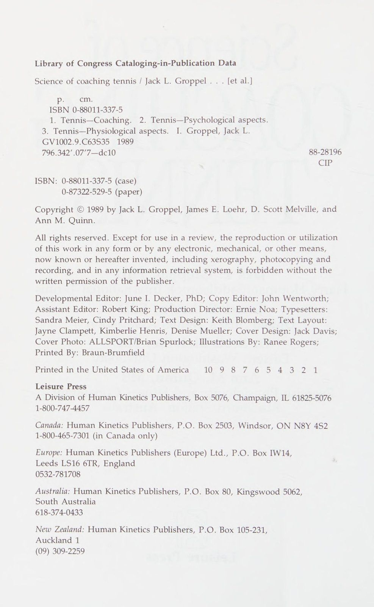
Hình 5.1: Mẫu phiếu chẩn đoán và phân loại lỗi kỹ thuật cú đánh — Công cụ quan sát hệ thống hóa giúp huấn luyện viên ghi nhận sai sót tiếp xúc bóng.
Figure 5.1: Stroke Error Diagnostic Form — Systematic observational checklist for coaches to classify impact and mechanical deficiencies.
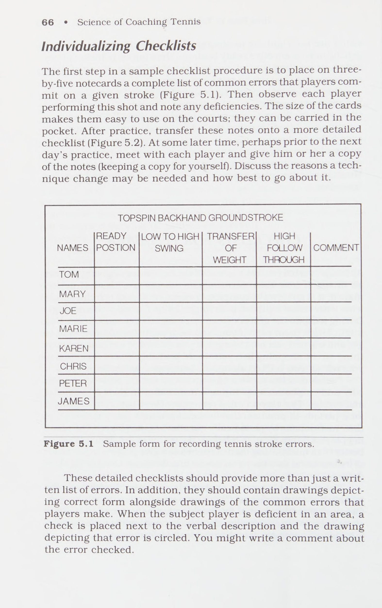
Hình 5.2: Bảng kiểm tra chẩn đoán chuyên sâu chuỗi động học — Phân lập lỗi chuẩn bị, tiếp xúc bóng và kết thúc cú đánh.
Figure 5.2: Detailed Biomechanical Diagnostic Checklist — Isolating preparation, contact point, and follow-through errors across all strokes.
Chương 6: Thời Điểm Dạy Kỹ Thuật Mới & Quản Lý Sự Suy Giảm Hiệu Suất Ngắn Hạn Chapter 6: When to Teach New Techniques: Accepting Decreases, Convincing Players & Goal Setting
tay vợt. Một vấn đề quan trọng không kém là khi nào và khi nào không dạy các kỹ thuật mới. Một số huấn luyện viên sẽ lao về phía trước để sửa một cú đánh trái tay yếu hoặc một cú giao bóng thứ hai phẳng, đẩy. Các huấn luyện viên khác chứng kiến những lỗi tương tự có thể đánh giá tốt hơn là nên để yên. Trong chương này, chúng ta sẽ xem xét một cách nghiêm túc những điều kiện nào cần tồn tại trước khi huấn luyện viên cố gắng dạy một kỹ thuật mới và cách huấn luyện viên có thể tạo ra những điều kiện cần thiết đó nếu chúng không có mặt.
Không có quy tắc cứng nhắc và nhanh chóng nào tồn tại liên quan đến kỹ thuật cụ thể nào yêu cầu thay đổi ở một giai đoạn nhất định trong quá trình phát triển của tay vợt và kỹ thuật nào không. Sự phức tạp và đa dạng của các tình huống và cá nhân lại cho thấy điều ngược lại. Tuy nhiên, có ba câu hỏi cần cân nhắc khi quyết định có nên sửa kỹ thuật của tay vợt hay không; chúng ta chỉ nên bắt đầu sửa chữa khi chúng ta có thể trả lời có cho từng lỗi đó.
XÁC ĐỊNH NẾU KHÁC
KỸ THUẬT TỐT HƠN
Câu hỏi đầu tiên cần đặt ra là, kỹ thuật hiện đang được sử dụng có kém hiệu quả hơn kỹ thuật khác đối với cá nhân này không? Đôi khi câu trả lời rõ ràng là có, nhưng đôi khi lại không. Ví dụ, nếu một tay vợt không uốn cong khuỷu tay của mình trong khi thực hiện cú giao bóng về phía sau, huấn luyện viên biết rằng một chuyển động giao bóng thay thế rất có thể sẽ giúp tay vợt đánh mạnh hơn. Tuy nhiên, khi một đấu thủ thực hiện một động tác giao bóng trong đó họ uốn cong khuỷu tay ở mức độ thấp hơn một chút so với hầu hết các tay vợt giao bóng tốt, thì vấn đề sẽ trở nên khó hiểu. Nếu huấn luyện viên không chắc chắn một kỹ thuật mới sẽ tốt hơn đáng kể thì việc làm gián đoạn trận đấu của tay vợt sẽ là điều ngu ngốc.
Huấn luyện viên có thể làm gì để giúp họ trả lời có cho câu hỏi đầu tiên không? Quả thực là có. Kiến thức về các nguyên tắc cơ sinh học của quần vợt có thể cung cấp cơ sở vững chắc để đánh giá mức độ hữu ích hoặc có hại trong việc giảng dạy các kỹ thuật khác nhau. Khi các huấn luyện viên tối đa hóa sự hiểu biết của họ về cơ chế quần vợt, họ sẽ có các công cụ để giải quyết hầu hết các tình huống khó khăn ngăn cản nhiều quy trình điều chỉnh kỹ năng. Trong ví dụ trước, huấn luyện viên am hiểu các nguyên tắc cơ học sẽ nhận ra tầm quan trọng quan trọng của việc uốn cong khuỷu tay trong việc tạo ra tốc độ đầu vợt và có thể đánh giá rằng một kỹ thuật khác sẽ cải thiện kỹ năng của tay vợt.
Thật dễ dàng để cải thiện khả năng phân tích kỹ năng quần vợt một cách máy móc của bạn. Làm quen với các bài viết trong lĩnh vực này. Ngoài phần cơ sinh học của cuốn sách này, tôi khuyên bạn nên sử dụng Groppel (1984), Hay và Reid (1982), và Plagenhoef (1970) là những nguồn xuất sắc khác. Chúng làm cho việc đọc trở nên thú vị và tôi thấy chúng vô cùng giá trị.
CHẤP NHẬN SỰ GIẢM HIỆU SUẤT NGẮN HẠN
Sau khi đã quyết định rằng có một kỹ thuật tốt hơn cho một tay vợt, huấn luyện viên phải có thể trả lời có cho câu hỏi thứ hai: Liệu tay vợt có đủ khả năng chấp nhận sự suy giảm hiệu suất ngắn hạn không thể tránh khỏi? Hiệu suất chắc chắn bị ảnh hưởng khi tay vợt cố gắng học những cách thực hiện kỹ năng mới. Điều này đúng ngay cả khi việc điều chỉnh kỹ thuật là nhỏ. Một sự điều chỉnh nhỏ như thay đổi độ bám nhỏ có thể sẽ cần nhiều ngày, nhiều tuần và đôi khi là nhiều tháng luyện tập trước khi hiệu suất bắt đầu phù hợp và vượt qua mức khả năng hiệu chỉnh trước. Và chỉ vì sự điều chỉnh mới đã được thành thạo trong các bài tập luyện không có nghĩa là nó sẽ được áp dụng trong một trận đấu. Trong quá trình thi đấu, tay vợt phải thành thạo kỹ năng này đến mức nó trở nên tự động và điều đó thậm chí còn mất nhiều thời gian hơn.
Tay vợt cần phải có những thay đổi càng lớn thì họ càng mất nhiều thời gian hơn để sử dụng các kỹ năng mới trong trận đấu. Khi chúng ta chuyển tay vợt từ trái tay bằng hai tay sang trái tay một tay, dạy họ thực hiện cú giao bóng hoặc thực hiện một thay đổi lớn về cách cầm vợt, chúng ta rất có thể phải đối mặt với một khoảng thời gian chuyển tiếp kéo dài nhiều tháng hoặc nhiều năm trước khi họ đạt đến trình độ thành tích cao hơn. Do đó, sẽ có những tình huống không đúng thời điểm để sửa một kỹ thuật bị lỗi. Khi một trận đấu có tầm quan trọng lớn sắp diễn ra, chúng ta phải đặc biệt cẩn thận trong việc xúi giục thay đổi. Trên thực tế, hầu hết những thay đổi về kỹ thuật trong mùa giải (bao gồm cả những điều chỉnh tương đối nhỏ) thường sẽ dẫn đến suy giảm hiệu suất hơn là cải thiện.
Chúng tôi có thể làm gì để khiến cho việc giảm hiệu suất trong thời gian ngắn trở nên dễ chấp nhận hơn đối với tay vợt? Giải pháp tốt nhất là lên kế hoạch trước để có thể thực hành các kỹ thuật mới vào những thời điểm khác ngoài mùa giải. Việc giảm hiệu suất là hợp lý nhất trong giai đoạn sau mùa giải và đầu mùa giải khi có thời gian để điều chỉnh bất kỳ thay đổi kỹ thuật nào trong chế độ luyện tập. Bảng 6.1 liệt kê các mùa quần vợt khác nhau và sự phù hợp của việc bắt đầu điều chỉnh kỹ thuật trong mỗi mùa giải.
Bảng 6.1 Các mùa quần vợt trong năm có thể bắt đầu sửa đổi kỹ thuật
Quần vợt Sự phù hợp của việc bắt đầu các mùa giải trong năm điều chỉnh về mặt kỹ thuật
Tiền mùa giải Thời điểm tốt để bắt đầu sửa chữa; không có áp lực trận đấu; một số hạn chế về thời gian
Mùa thông thường Ít thời gian để bắt đầu sửa chữa; áp lực trận đấu; hạn chế về thời gian
Ngay sau mùa giải Thời gian tuyệt vời để bắt đầu sửa chữa; không có áp lực trận đấu; điểm yếu mới trong tâm trí
Cuối mùa giải Thông thường không phải là thời điểm tốt để bắt đầu sửa chữa vì huấn luyện viên thường không có mặt để đưa ra phản hồi hướng dẫn.
Nhận thấy rằng những nỗ lực thay đổi kỹ thuật trong mùa giải sẽ làm giảm hiệu suất của mùa giải hiện tại ít nhất là bằng mức độ thường xuyên mà chúng sẽ giúp ích, điều đó không được khiến các huấn luyện viên ngừng hoàn toàn những thay đổi kỹ thuật trong mùa giải. Nhiều thay đổi kỹ thuật đòi hỏi một nỗ lực lớn có thời gian dài và nhất thiết phải tiếp tục đi vào và xuyên suốt tâm điểm của mùa quần vợt. Chúng ta không bao giờ được quên rằng việc dạy các kỹ thuật kỹ năng âm thanh có lẽ là dịch vụ tuyệt vời nhất mà chúng ta có thể cung cấp cho tay vợt của mình. Ngay cả việc đạt được hiệu suất tối đa của các tay vợt trong năm cuối cùng của họ dưới sự phụ trách của chúng tôi cũng có thể không phải là mục tiêu tốt nhất khi chúng tôi xem xét toàn bộ cuộc đời quần vợt của họ.
Tôi xin lấy một ví dụ từ kinh nghiệm của bản thân. Khi còn là một tay vợt trẻ, tôi nhận ra mình có cú trái tay không hiệu quả. Mặc dù
Tôi đã cố gắng thực hiện những điều chỉnh nhỏ, tôi đã không cố gắng cải tổ toàn bộ vì tôi không muốn phải gánh chịu những hậu quả ngắn hạn. Tôi không thích thú với viễn cảnh một năm hoặc hơn phải thi đấu kém cỏi. Chiến thắng trong các trận đấu dường như là hết sức quan trọng và một hoặc hai năm tượng trưng cho sự vĩnh cửu. Bây giờ, nhìn lại với một góc nhìn trưởng thành và triết lý hơn, một hoặc hai năm thi đấu chán nản dường như không đáng kể trong cuộc đời quần vợt nói chung của tôi. Tôi ước mình có một người cố vấn, người đã dành thời gian và sự quan tâm để khắc phục điểm yếu của tôi ngay cả khi tôi phải trả giá bằng một số chiến thắng.
Thuyết phục tay vợt về sự cần thiết phải thay đổi
Giả sử huấn luyện viên được đảm bảo rằng tay vợt đang sử dụng một kỹ thuật kém hiệu quả và việc giảm hiệu suất tạm thời là xứng đáng với lợi ích lâu dài. Một câu hỏi cuối cùng phải được trả lời một cách tích cực trước khi bắt tay vào chương trình điều chỉnh: Liệu tôi có thể thuyết phục đầy đủ tay vợt rằng một sự thay đổi là cần thiết và xứng đáng với một giai đoạn chuyển tiếp khó khăn không? Chúng tôi không thể nhấn mạnh quá mức rằng việc thay đổi thành công kỹ thuật của tay vợt không phải là một nhiệm vụ dễ dàng. Tay vợt có thể đã thực hiện sai kỹ thuật hàng nghìn lần, thiết lập các mô hình vận động thần kinh ở mức độ chúng chạy tự động. Những khuôn mẫu đã học quá nhiều sẽ ngoan cố vẫn là một yếu tố cản trở khi chúng ta nỗ lực cải tạo. Nếu huấn luyện viên và tay vợt không thể thống nhất được nỗ lực phối hợp để sửa lỗi thì việc can thiệp hướng dẫn sẽ dẫn đến thất vọng và thất bại.
Bảo vệ trường hợp của bạn Huấn luyện viên có thể làm gì để thuyết phục tay vợt thay đổi kỹ thuật là cần thiết? Đầu tiên, huấn luyện viên có thể giúp tay vợt nhận ra rằng sai sót cụ thể đó sẽ gây bất lợi cho trận đấu của họ. Đôi khi một cuộc trò chuyện đơn giản với tay vợt là đủ. Tuy nhiên, huấn luyện viên nên tìm hiểu kỹ trước khi tiếp cận tay vợt. Được trang bị một cuộc tấn công có kế hoạch và dữ liệu hỗ trợ, huấn luyện viên, giống như một nhân viên bán hàng giỏi, sẽ có nhiều khả năng khiến tay vợt nhìn nhận vấn đề theo cách tương tự.
Loại dữ liệu được sử dụng để hỗ trợ vị trí của bạn có thể khác nhau. Sử dụng mọi loại thông tin hỗ trợ có sẵn cho bạn. Lập biểu đồ hiệu suất trò chơi là một phương pháp thu thập dữ liệu để hỗ trợ trường hợp của bạn.
Ví dụ: nếu một tay vợt có chi phí bị lỗi, bạn có thể lập biểu đồ một vài trận đấu để ghi lại tỷ lệ chi phí mà người đó bỏ lỡ, tỷ lệ trúng đối với người chiến thắng và tỷ lệ phần trăm chỉ được trả lại. Đối mặt với tay vợt bằng bằng chứng đen trắng rằng 50% chi phí chung của họ bị bỏ sót sẽ có sức nặng hơn so với điều ít cụ thể hơn, '"Chi phí của bạn cần hoạt động."' Việc lập biểu đồ thậm chí còn hiệu quả hơn khi bạn có thể so sánh tỷ lệ phần trăm hiệu suất của tay vợt với các tiêu chuẩn cao hơn của đồng đội và đối thủ.
Các loại dữ liệu khác bao gồm quay video và trình bày các sự kiện cơ sinh học. Đoạn băng có thể khiến tay vợt nhận thức được vấn đề tốt hơn bất cứ điều gì. Để đạt được hiệu quả tối đa, hãy quay video tay vợt khi họ đang thi đấu trong một trận đấu nghiêm túc, trong đó mọi điểm yếu hiện có của cú đánh sẽ được nhấn mạnh. Nếu thời gian cho phép, hãy chỉnh sửa đoạn băng để tay vợt có thể liên tục nhìn thấy điểm yếu mà không bị các yếu tố khác làm phiền trong trận đấu.
Đừng ngần ngại trình bày dữ liệu cơ sinh học. Bởi vì các vận động viên thường không được đào tạo về các nguyên tắc cơ bản của cơ sinh học nên cơ sở đánh giá của họ không dựa trên cơ sở vững chắc nhất. Ví dụ, nếu một tay vợt có một khoảng dừng rõ rệt trong cú giao bóng lùi về phía sau, bạn có thể thảo luận về phần cơ học của cuốn sách này đề cập đến các vấn đề về thời gian. Bạn có thể tránh các thuật ngữ khoa học và tổ chức các cuộc nói chuyện kỹ lưỡng bằng phấn bằng ngôn ngữ của tay vợt. Khi tay vợt nhận ra đề xuất của bạn được hỗ trợ bởi bằng chứng cơ sinh học, lời khuyên của bạn sẽ trở nên đáng tin cậy.
Điều thứ hai mà huấn luyện viên có thể làm là thuyết phục tay vợt rằng cần thay đổi kỹ thuật để giúp họ đặt mục tiêu quần vợt. Một phương pháp là cho tay vợt thấy các kỹ thuật hiện tại có thể hạn chế mức hiệu suất của họ trong tương lai như thế nào. Không phải tất cả các tay vợt đều có mục tiêu rõ ràng cho tương lai quần vợt của mình. Mục tiêu của họ thường bắt đầu và kết thúc bằng chiến thắng trong trận đấu ngày mai. Khi họ có những mục tiêu dài hạn hơn, họ có thể không có những mục tiêu được hoạch định dần dần để đạt được chúng. Họ có thể muốn giành chức vô địch giải đấu nhưng có thể chưa nghĩ ra chính xác những gì họ phải làm để đạt được điều này. Những tay vợt có kế hoạch được tổ chức tốt trong 5 hoặc 10 năm tới là rất hiếm.
Nhiều nghiên cứu thú vị đã được thực hiện trong những năm gần đây trong lĩnh vực đặt mục tiêu trong thể thao. Nghiên cứu này gợi ý rõ ràng rằng bằng cách giúp các vận động viên hình thành mục tiêu, huấn luyện viên có thể khiến họ tập luyện chăm chỉ và lâu dài để thực hiện những điều chỉnh lớn trong trận đấu của họ. Trong các đoạn tiếp theo, tôi sẽ xem xét ngắn gọn các bước chính trong việc thiết lập mục tiêu hiệu quả và giải thích cách áp dụng chúng cho tay vợt quần vợt. (Để xem xét đầy đủ công việc được thực hiện trong lĩnh vực đặt mục tiêu cho thể thao, bạn có thể tham khảo O'Block và Evans, 1984.)
Lựa chọn cá nhân Bước đầu tiên trong việc thiết lập mục tiêu hiệu quả là cố gắng thuyết phục tay vợt lựa chọn mục tiêu của riêng họ. Nghiên cứu chỉ ra rõ ràng rằng tay vợt sẽ làm việc chăm chỉ nhất để đạt được các mục tiêu mà họ cho là đã tự đặt ra. Các huấn luyện viên nên bắt đầu bằng việc ngồi xuống với từng tay vợt của mình và hỏi: “Bạn muốn xem trận đấu quần vợt của mình ở đâu trong tương lai?” Vai trò của huấn luyện viên không phải là đưa ra các mục tiêu dài hạn mà là kích thích các tay vợt nghĩ về mục tiêu của riêng họ.
Khi được yêu cầu nêu ra các mục tiêu dài hạn, một số tay vợt sẽ có sẵn những mục tiêu tốt trong đầu hoặc sẽ có thể phát triển một số mục tiêu khác để trả lời câu hỏi. Những tay vợt khác sẽ gặp khó khăn trong việc nghĩ ra các mục tiêu hoặc sẽ đưa ra những mục tiêu không đạt yêu cầu - không đạt yêu cầu vì chúng nằm dưới khả năng của tay vợt và sẽ không hoạt động như những thử thách xứng đáng. Hoặc (và trường hợp này thường xảy ra) các mục tiêu có thể cao một cách phi thực tế và những nỗ lực đạt được chúng sẽ vô ích.
Huấn luyện viên có thể giúp những tay vợt gặp khó khăn trong việc xây dựng mục tiêu tốt bằng cách đưa ra đề xuất. Huấn luyện viên có thể hỏi một tay vợt xem cô ấy có muốn phát triển trò chơi của mình đến mức đánh những cú giao bóng xoáy một cách hiệu quả hay không. Một tay vợt khác có thể được hỏi liệu anh ta có muốn cố gắng trở nên thành thạo với phong cách quần vợt tấn công, hung hãn hay không. Những đề xuất như vậy có thể gây được thiện cảm với một số tay vợt, những người sau đó sẽ sẵn sàng dành nhiều giờ để thực hành các kỹ thuật mới mà huấn luyện viên đưa ra. Một huấn luyện viên nhận thấy cần phải dẫn dắt các tay vợt trong việc xây dựng mục tiêu phải đảm bảo cho phép các tay vợt tự đưa ra những lựa chọn cuối cùng. Ghi công cho họ vì đã làm như vậy. Bạn muốn họ làm việc cho chính họ chứ không chỉ cho bạn.
Sau khi huấn luyện viên đã giúp các vận động viên diễn đạt bằng lời một số mục tiêu, bước tiếp theo là giúp họ nhận ra rằng việc đạt được những mục tiêu này có thể đòi hỏi phải áp dụng các kỹ thuật mới đòi hỏi thời gian luyện tập dài và ban đầu là hạ thấp mức độ thi đấu hiện tại của họ.
Tay vợt đôi khi không nhận ra lượng thời gian luyện tập chăm chỉ thực sự cần thiết để hoàn thiện các kỹ năng vận động (Motor Skills) của quần vợt. Nếu huấn luyện viên không công khai những thực tế này, các tay vợt có thể dễ dàng chán nản khi phong độ của họ bị ảnh hưởng và dường như họ càng ngày càng xa mục tiêu đề ra.
Đừng đánh giá thấp tầm quan trọng của việc huấn luyện các tay vợt trong việc trì hoãn những thỏa mãn ngắn hạn để theo đuổi mục tiêu của họ. Khả năng chịu đựng những thời điểm khó khăn một cách không mệt mỏi có thể là một trong những đặc điểm quan trọng nhất giúp phân biệt các vận động viên xuất sắc với những vận động viên không quá xuất sắc. Huấn luyện viên có thể giúp tay vợt chấp nhận sự chậm trễ và chịu đựng khó khăn bằng cách thể hiện sự nhiệt tình chân thành và tin tưởng rằng cuối cùng tay vợt sẽ đạt được mục tiêu của mình. Sẽ rất hữu ích nếu huấn luyện viên có thể thuyết phục tay vợt rằng họ đang tham gia vào nỗ lực chung. Các tay vợt phấn khởi khi biết rằng huấn luyện viên đang nóng lòng làm tất cả những gì có thể để hỗ trợ họ theo đuổi mục tiêu.
Kích hoạt mục tiêu Sau khi tay vợt đã được thông báo về những khó khăn và khung thời gian liên quan đến việc đạt được mục tiêu của họ, bước quan trọng thứ ba là huấn luyện viên hướng dẫn họ thiết lập cái mà các nhà nghiên cứu gọi là mục tiêu kích hoạt. Đây không gì khác hơn là những mục tiêu ngắn hạn - những bước đệm dẫn đến hoặc tạo điều kiện cho việc đạt được các mục tiêu dài hạn. Việc kích hoạt các mục tiêu cung cấp một kế hoạch chi tiết về các chi tiết cụ thể cần được thực hiện.
Hãy xem xét một tay vợt đã đặt mục tiêu trở thành đội quần vợt của năm tới. Huấn luyện viên có thể lôi kéo tay vợt tham gia vào quá trình lựa chọn các mục tiêu thuận lợi bằng cách hỏi, "Chúng ta cần hoàn thành những gì để đạt được mục tiêu?" Việc liệt kê điểm mạnh và điểm yếu của tay vợt sẽ giúp kích thích thảo luận về giai đoạn nào trong trận đấu của anh ta hoặc cô ta cần nỗ lực nhiều nhất.
Nếu sự không nhất quán dường như là do thiếu kinh nghiệm chứ không phải do kỹ thuật kém, thì mục tiêu khả thi có thể là luyện tập một giờ giao bóng mô phỏng trò chơi 5 ngày một tuần trong 6 tháng. (Để đây là một mục tiêu hợp lý, cần phải cân nhắc đến các cơ sở thực hành. Nếu vì lý do nào đó không có đủ không gian sân thi đấu thì có thể cần phải bố trí việc sử dụng mục tiêu trên tường. Để có một số ý tưởng tuyệt vời về việc xây dựng mục tiêu trên tường, hãy tham khảo Hoyle, 1985.)
Một mục tiêu khác đối với một người giao bóng có kỹ thuật phù hợp có thể là: ‘“Trong vòng 3 tuần, tôi sẽ ghi điểm trong bài kiểm tra giao bóng.’’ Điểm kiểm tra giao bóng có thể cung cấp bằng chứng khách quan tốt về việc cải thiện hiệu suất dần dần. (Mặc dù có rất nhiều bài kiểm tra giao bóng quần vợt, nhưng tôi đề xuất bài kiểm tra do Hewitt
Nếu sự không nhất quán trong cú giao bóng của tay vợt được cho là do kỹ thuật bị lỗi, chẳng hạn như một cú giật không liên quan trong động tác backswing, thì các mục tiêu hỗ trợ phải được thiết kế để sửa lỗi. Dưới đây là một số ví dụ:
“T sẽ luyện tập hàng giờ với cú giao bóng mới của tôi mà tôi không giật vợt trong cú đánh ngược.”’ Hoặc, “Tôi sẽ đạt được điểm trong bài kiểm tra giao bóng khi sử dụng kỹ thuật mới, không giật.”' Hoặc, *'Tôi sẽ nhận được % số cú giao bóng đầu tiên của mình trong các trận đấu kịch bản khi sử dụng kỹ thuật mới.”'
Để bất kỳ mục tiêu nào ở trên có hiệu quả, điều cực kỳ quan trọng là phải theo dõi xem kỹ thuật mới có được tuân thủ một cách trung thực hay không. Việc kiểm tra này phải được huấn luyện viên, trợ lý hoặc tuyển thủ xem băng video thực hiện theo lịch trình đã định.
Lưu ý một đặc điểm quan trọng về các mục tiêu hỗ trợ được đưa ra làm ví dụ. Họ không quan tâm trực tiếp đến việc đánh bại đối thủ của tuần này, giành chiến thắng trong một giải đấu cụ thể hoặc đánh bại một kỷ lục nhất định. Các mục tiêu tập trung vào kết quả thắng-thua rất rủi ro vì chúng không phải lúc nào cũng có thể đạt được. Những tay vợt không ngừng rèn luyện kỹ năng và áp dụng những thay đổi kỹ thuật đã đặt ra không phải lúc nào cũng giành chiến thắng. May mắn và đối thủ của tay vợt sẽ đóng vai trò quan trọng trong số trận đấu mà tay vợt thắng. Không cần phải nói, huấn luyện viên chân thành đôi khi phải đặt thành tích thắng-thua của mình xuống dưới lợi ích lâu dài của các tay vợt.
Việc không đạt được mục tiêu là một trải nghiệm chán nản, có thể dẫn đến giảm khả năng nhận thức và động lực để tiếp tục phấn đấu phát triển các kỹ năng. Do đó, nghiên cứu cho thấy các huấn luyện viên nên yêu cầu tay vợt của họ tập trung vào hiệu suất hơn là chiến thắng. Huấn luyện viên phải giúp các tay vợt coi chiến thắng là sản phẩm phụ của việc cải thiện thành tích. Tay vợt có thể thua trận nhưng vẫn vui vì đạt được mục tiêu. Ngược lại, tay vợt cũng cần nhận ra rằng họ có thể thắng trận đấu mà không cần đạt được mục tiêu. Việc thiết lập các mục tiêu hướng tới hiệu quả hoạt động là một cách tốt để phát triển định hướng đó.
Tạo mục tiêu ổn định Bước cuối cùng trong quá trình thiết lập mục tiêu là thực sự viết ra các mục tiêu được lựa chọn chung và các mục tiêu khả thi. Như người ta thường nói, nếu bạn muốn ai đó thể hiện cam kết với một mục tiêu, bạn nên "'viết nó ra, đừng chỉ nghĩ về nó.'' Mục tiêu bằng văn bản đóng vai trò như một hợp đồng. Huấn luyện viên có thể tăng mức độ mà hợp đồng có chức năng như một lời nhắc nhở bằng cách tạo một bản sao để tay vợt treo ở nơi họ thường xuyên nhìn thấy. Đôi khi, tùy thuộc vào tính cách của các thành viên trong đội, những mục tiêu cá nhân này có thể được đăng một cách hiệu quả cho cả đội xem. Việc đăng bài có thể tranh thủ sự hợp tác của những tay vợt khác và do đó tạo ra thêm động lực xã hội để tay vợt đạt được. mục tiêu của mình.
Cho dù bạn có đăng các mục tiêu cá nhân hay không, thông thường, bạn nên công khai nó khi tay vợt đạt được mục tiêu và mục tiêu của họ. Điều này có thể được thực hiện bằng cách thông báo những thành tích đó cho những người còn lại trong nhóm, đăng biểu đồ thành tích và chuyển tiếp những thành tích này cho các phóng viên và nhà báo. Hãy nghĩ xem sẽ được khích lệ biết bao đối với một kỳ thủ đã thua nhiều trận khi đọc được câu trích dẫn sau đây trên báo: “‘Tôi rất tự hào về kỳ thủ này vì đã thể hiện lòng dũng cảm khi thực hiện một kỹ thuật mới mà cuối cùng sẽ cải thiện trò chơi của cô ấy. Những mất mát hiện tại không phản ánh thực sự khả năng của cô ấy.”
Groppel, J.L. (1984). Quần vợt dành cho tay vợt nâng cao: Và những người muốn trở thành. Champaign, IL: Động học của con người. Hay, J., & Reid, J. (1982). Cơ sở giải phẫu và cơ học của chuyển động của con người. Vách đá Englewood, NJ: Prentice-Hall. Hewitt, J.E. (1966). Bài kiểm tra thành tích quần vợt của Hewitt. Nghiên cứu
Hàng quý, 37, 231-240. Hoyle, J.E. (1985). Mục tiêu để tập luyện giao bóng tennis. Tạp chí của
Giáo dục thể chất, giải trí và khiêu vũ, 56(3), 60-61. O'Block, R.R., & Evans, F.H. (1984). Đặt mục tiêu như một kỹ thuật tạo động lực. Trong J.M. Silva III & R.S. Weinberg (Eds.), Cơ sở tâm lý của thể thao. Champaign, IL: Động học của con người. Plagenhoef, S. (1970). Kiến thức cơ bản về quần vợt. Vách đá Englewood,
=p aie a 0 are nero a= 7 re ee ape ame - 7 i == “ ae | ;
7 : ee ee eg te ol Oe iam ay Gale ele a : ial: Laine tức là 1 sha ai” a gee = 7 . Lh So. a 1m A COU a ali.loti” an) Hoặc eee ee rt thuốc nhuộm a _ © hiss res =a a a Litt Y= saber: i} oa ten eae a
Pe ee tôi nói rel al a =r i ; ig | 1} at — ak nm » ciel - fa ty yee it 7 lành Te eee Po ee Teel elie a : ier Sorel jee: =e SP eee
Ae ee ee ee ae i: = ipl eat ar et bora: AiR pet kiyall eas 6 oon ino belay nn ie ie (erm cael alg ali tid eae ua as i - pti aentsaitim, Vp a nit, tapi ea chy | ty Sat Ste Sh / a sel hey Seay inte Salty ae Via ore ee o ie | iets See oni es ee, = See es ae ae “ries = Fo =a ee z= - ma 7 _ ; _ = = = — i ~~ __ Pi) a ay - ae oa | ' — ee! ie! es ee er oe gs Ls —_ ae ss = ae Sie ial af - is Ta. —— ; gl Saale oh i iis ' ul 7 — guys aelaiel sia hile i eeSaki a _—_ hoặc dối trá! saa (Ammen ot A om cmap Tal mit oes Be See tebe, Dome at, esr ce a al iy) a ea a alee yn = aan capes me AA Alpi eerie eine tree ortanse tm mae tj uh ee ae - ha ae Gani ty ee Li ae ene tai ea ee ee = a to Ape? ;
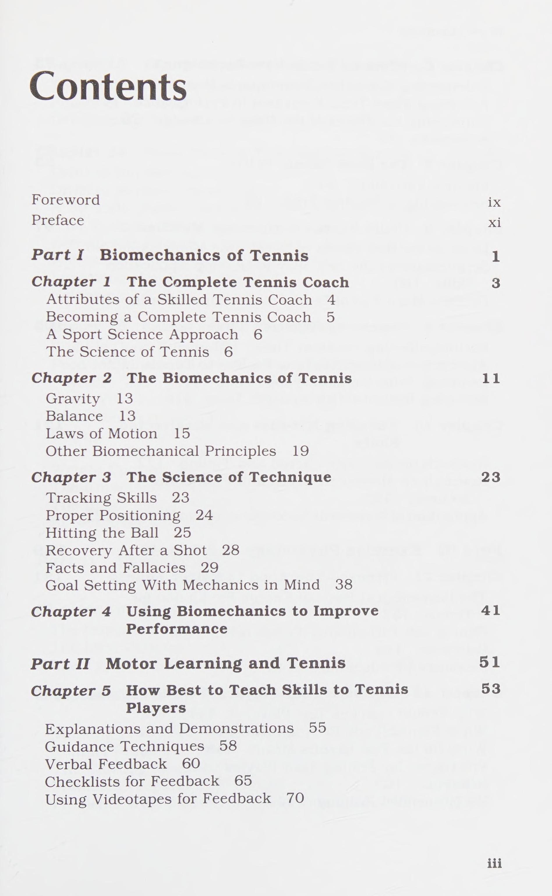
Hình 6.1: Đường cong hiệu suất khi tái cấu trúc kỹ thuật — Chấp nhận sự sụt giảm ngắn hạn để đạt đỉnh cao cơ học bền vững dài hạn.
Figure 6.1: Performance Transition Curve — Accepting short-term regression during technical remodeling for superior long-term potential.
Chương 7: Các Bài Tập Quần Vợt Tối Ưu: Tính Đa Dạng & Tập Luyện Khối vs Hỗn Hợp Chapter 7: The Best Tennis Drills: Practice Variability, Mixed vs Blocked Practice
Những bài tập tennis hay nhất Có hàng nghìn bài tập tennis. Một số huấn luyện viên và tay vợt kiên quyết đề xuất một số bài tập nhất định, trong khi những người khác lại ủng hộ mạnh mẽ những bài tập khác nhau. Làm thế nào các huấn luyện viên có thể đánh giá bài tập tennis nào là tốt nhất? Trong 10 năm qua, các nhà nghiên cứu đã nghiên cứu rộng rãi về tác động của các loại bài tập thực hành khác nhau đối với việc học các kỹ năng vận động (Motor Skills). Nghiên cứu này đã đưa ra hai phát hiện rất thú vị có thể giúp các huấn luyện viên đưa ra những lựa chọn sáng suốt.
Một trong những khám phá này là mức độ học một kỹ năng tốt như thế nào bị ảnh hưởng rất nhiều bởi mức độ mà người biểu diễn phải thay đổi hiệu suất luyện tập của họ. Ví dụ: những tay vợt muốn phát triển cú đánh thuận tay trên mặt đất tốt có thể dành phần lớn thời gian cho các bài tập thực hành để đánh bóng có nhịp độ vừa phải, cao đến thắt lưng. Và ví dụ, tất cả các quả bóng có thể được đánh vào cùng một mục tiêu chéo sân để tay vợt không phải thực hiện những điều chỉnh lớn về cú đánh. Các nhà nghiên cứu gọi đây là kiểu luyện tập có độ biến thiên thấp vì tay vợt không cần phải thay đổi đáng kể các cú đánh của mình. Mặt khác, tay vợt có thể cố gắng phát triển các cú đánh thuận tay tốt bằng cách tổ chức các bài tập yêu cầu họ thực hiện những điều chỉnh khá rộng rãi trong các cú đánh của mình. Trong một dạng cú đánh có tính biến đổi cao, tay vợt phải thực hiện các cú đánh có độ nảy thấp và cao và đánh bóng dọc theo đường biên cũng như ở các góc ngắn.
Trong hai cách tiếp cận, cách nào hiệu quả hơn? Dựa trên nghiên cứu, thực hành có tính biến động cao có vẻ vượt trội hơn nhiều. các
Nghiên cứu khoa học về huấn luyện quần vợt cho thấy rằng những tay vợt thực hành nhiều kiểu đánh thuận tay sẽ có khả năng đánh bóng có độ nảy cao và thấp tốt hơn nhiều, đồng thời có khả năng đánh chính xác hơn các cú đánh theo đường dọc và góc ngắn. Ngoài ra, những tay vợt như vậy sẽ có thể điều chỉnh theo các kiểu đánh thuận tay chưa được thực hành. Họ thậm chí còn có thể đánh được những cú đánh chéo sân cao đến thắt lưng cũng như (hoặc giỏi hơn) những tay vợt dành phần lớn thời gian tập luyện chỉ thực hiện những cú đánh chéo sân cao đến thắt lưng.
Phát hiện khác liên quan đến các bài tập thực hành là trình tự mà người biểu diễn thực hành các kỹ năng vận động (Motor Skills) khác nhau hoặc các biến thể của kỹ năng vận động (Motor Skills), ảnh hưởng rõ rệt đến chất lượng học tập. Một thứ tự có thể áp dụng khi thực hành các cú đánh khác nhau là đánh nhiều cú từ trên cao, sau đó là một số cú vô lê, sau đó là một số cú đánh nền. Điều này được gọi là trình tự bị chặn vì tất cả các cảnh quay cùng loại được gộp lại với nhau trong một khối luyện tập. Một cách ngược lại để thực hành các cú đánh tương tự là chuyển từ cú đánh này sang cú đánh khác—cú đánh từ trên cao, sau đó là cú vô lê, rồi cú đánh nền, v.v. Phương pháp thực hành này được gọi là giải trình tự hỗn hợp hoặc ngẫu nhiên.
Tay vợt chỉ thực hành giao bóng cũng có thể lựa chọn giữa việc chặn các lần thực hành hoặc trộn lẫn chúng. Họ chỉ có thể thực hiện những cú giao bóng phẳng trước, sau đó chỉ có thể thực hiện những cú giao bóng xoáy, điều này sẽ gây cản trở. Hoặc họ có thể thực hành các cú giao bóng phẳng và xoáy theo thứ tự hỗn hợp hoặc ngẫu nhiên, thường xuyên chuyển đổi giữa hai thứ tự này.
Nghiên cứu về học tập vận động hỗ trợ mạnh mẽ các thử nghiệm thực hành trình tự ngẫu nhiên yêu cầu tay vợt phải thường xuyên chuyển từ kỹ năng này (hoặc phiên bản kỹ năng) sang kỹ năng khác. Mặc dù người ta nhận thấy tay vợt thể hiện tốt hơn trong quá trình luyện tập khi họ được phép chặn thử nghiệm của mình, nhưng kiểu luyện tập này không giúp họ chuẩn bị tốt để xử lý các tình huống giống như trò chơi, vốn thường yêu cầu thứ tự đánh rất ngẫu nhiên (Hình 7.1).
Phần cân bằng của chương này được chia thành hai phần chính: tính biến đổi trong thực hành và trình tự thử nghiệm thực hành. Mỗi phần là một cuộc thảo luận chuyên sâu về các ứng dụng thực tế mà nghiên cứu có thể mang lại trong các lĩnh vực này để lựa chọn và thiết kế các bài tập quần vợt tốt hơn.
BIẾN ĐỔI THỰC HÀNH
Như đã nêu, nghiên cứu về khả năng thay đổi trong thực hành chỉ ra rằng trải nghiệm luyện tập càng thay đổi thì tay vợt càng học tốt hơn để thực hiện những điều chỉnh cần thiết trong các kỹ năng vận động (Motor Skills). Vì quần vợt đòi hỏi phải điều chỉnh liên tục nên các huấn luyện viên nên giảm thiểu thời gian
Nhóm thực hành hỗn hợp ©O Nhóm thực hành bị chặn @
Je ee eee Oe ee ee Thực hành thử nghiệm Tình huống giống như trò chơi
Hình 7.1 Mức hiệu suất cao khi huấn luyện viên cho phép tay vợt chặn các buổi tập thử.
được phân bổ cho các cuộc tập trận không đòi hỏi nhiều sự thay đổi về phản ứng. Huấn luyện viên khôn ngoan thiết kế các bài tập và vận dụng các điều kiện môi trường để yêu cầu nhiều điều chỉnh động tác khác nhau.
Các mũi khoan được thiết kế để tạo rãnh cho một cú xoay thường là những mũi khoan có độ biến thiên phản ứng tương đối thấp. Một bài tập tạo rãnh có một đấu thủ đứng một chỗ trên sân liên tục đánh những cú vô lê ngang vai giống nhau đến cùng một vị trí trong cùng điều kiện môi trường. Sự phổ biến của những bài tập như vậy một phần là do tay vợt thực hiện chúng tốt. Do đó, các tay vợt (và một số huấn luyện viên) tin rằng những bài tập như vậy là cách học tốt nhất. Các tay vợt và huấn luyện viên ủng hộ những kiểu tập luyện này sử dụng các thuật ngữ như một cách nhất quán và tự động khi nói đến việc thực hiện cú đánh.
“TI có thể tinh chỉnh cú đánh này,” họ nói, “đến mức không bao giờ bỏ lỡ nó,” và “Nếu tôi có thể xử lý được cú đánh dễ dàng này, thì những cú đánh khó hơn sẽ tự xử lý được.”'
Nhưng liệu họ có làm được không? Kiểu lý luận này nghe có vẻ hay, nhưng nghiên cứu đơn giản là không ủng hộ nó. Kết quả của nhiều nghiên cứu cho thấy rõ ràng rằng việc dành nhiều thời gian cho việc luyện tập ít biến động sẽ không giúp tay vợt chuẩn bị tốt nhất cho một trận đấu. Liên tục đánh những cú vô lê ngang vai giống nhau sẽ không giúp tay vợt đối phó với những cú vô lê thấp, những quả bóng căng hoặc kẹt tay vợt, những quả bóng tiếp cận nhanh hoặc những quả bóng bay lơ lửng. Và quan trọng là liên tục đánh cú vô lê ngang vai tiêu chuẩn thậm chí không phải là cách tốt nhất để học cách thực hiện cú vô lê ngang vai.
Đối số áp dụng cho tất cả các bài tập yêu cầu sự thay đổi hành trình tối thiểu. Những bài tập này không tệ đối với trò chơi của tay vợt, nhưng chúng gần như không hiệu quả bằng những bài tập đòi hỏi nhiều động tác xoay người.
Các huấn luyện viên thận trọng xem xét kỹ lưỡng tất cả các bài tập của họ và đảm bảo rằng hầu hết chúng không rơi vào loại tạo rãnh. Thay vào đó, họ phát triển các bài tập thúc đẩy sự đa dạng trong thực hành.
Bây giờ, hãy xem xét một số bài tập có tính biến động cao và cách chúng có thể được phối hợp với môi trường để thúc đẩy một buổi thực hành tốt hơn.
Luyện tập với đồng đội Khi các đồng đội đang luyện tập cùng nhau, họ nên cố tình thực hiện những cú đánh đòi hỏi nhiều phản ứng từ nhau. Điều này đúng bất kể kiểu đánh mà họ chủ yếu tập luyện. Hai ví dụ về bài tập sẽ minh họa cách tối đa hóa khả năng biến đổi khi thực hiện cú đánh. Sau khi chúng tôi đã chỉ ra cách thay đổi cách thực hành đánh vô-lê và đánh đầu từ trên cao của đối tác, bạn sẽ dễ dàng thấy cách áp dụng các kỹ thuật tương tự cho các cú đánh khác.
Một bài tập vô-lê bắt đầu với một máng đựng bóng và một hộp đựng bóng. Người trung chuyển được hướng dẫn thực hiện các cú đánh yêu cầu tất cả các loại cú vô lê. Các đường chuyền nên bao gồm các cú đánh mềm và cứng, xoáy lên và xoáy xuống, bóng thấp và cao, cũng như các cú đánh dọc biên và chéo sân. Vận động viên vô lê tạo thêm sự đa dạng cho bài tập bằng cách di chuyển xung quanh, sao cho một số cú đánh được thực hiện từ vùng đất cấm, những cú khác từ ngay bên trong đường giao bóng và những cú khác từ rất gần lưới. Người đánh vô-lê cũng nên cố gắng thay đổi hướng đánh của mình sao cho một số là cú chuyền ngang, một số là cú vô lê dọc và một số là cú vô lê dừng. Tốc độ của các cú vô lê cũng nên khác nhau.
Một bài tập của đối tác dành cho các cú đập trên cao bắt đầu bằng việc thả bộ nạp và đánh các thùy có quỹ đạo đa dạng. Các cú lốp bóng phải có phạm vi từ cực cao đến những đường ở ranh giới của những cú vô lê cao. Tương tự, một số cú lốp phải sâu và một số cú lốp khác phải ngắn. Một số nên được hướng về phía trái tay và một số khác cần phải chuyển nhanh sang phía thuận tay.
Trong khi đó, công việc của người đập phá là kết hợp các pha trả đòn phòng thủ xoay tròn với các pha tiêu diệt mạnh mẽ. Việc trả bóng nên được thực hiện chéo bàn, lên giữa và dọc theo đường biên. Một phương tiện khác để tối đa hóa khả năng thay đổi là người đập bắt đầu cuộc tập trận từ các vị trí khác nhau. Vị trí ban đầu hầu như ở trên lưới sẽ buộc
The Best Tennis Drills © 87 tay vợt thực hiện các cú đánh trong khi di chuyển lùi lại. Vị trí xuất phát sâu sẽ yêu cầu chuyển động về phía trước và một kiểu thực hiện trên cao khác.
Hai bài tập ví dụ này khác với hầu hết các bài tập của đối tác thường được huấn luyện viên sử dụng ở một điểm cơ bản. Trong các bài tập này, các tay vợt không cố gắng đánh bóng qua lại với nhau. Công bằng mà nói thì hầu hết các bài tập đối tác truyền thống đều nhấn mạnh đến việc giữ bóng trong cuộc, điều này thường có nghĩa là tay vợt sẽ có những pha đánh bóng kéo dài với độ biến thiên cú đánh thấp. Trong các cuộc tập trận này, sự đa dạng không được lên kế hoạch trước và chỉ xảy ra một cách tình cờ. Các tay vợt hiếm khi phải thực hiện những động tác không chính thống. Họ không cần phải điều chỉnh cú đánh của mình đến mức gần như yêu cầu khi chơi một trận đấu. Trong một số bài tập, tay vợt thậm chí không cần phải thử những cú đánh khó hơn khi họ thể hiện bản thân. Cứ như thể họ được huấn luyện để tập luyện chăm chỉ với những cú đánh trong phạm vi trước mắt của mình và không lo lắng về những cú đánh bất thường - điều hiếm khi xảy ra trong một trận đấu.
Các cuộc tập hợp tập hợp có vai trò của chúng. Chúng thích hợp trong quá trình khởi động và có thể là một phần quan trọng trong các bài tập luyện tập hàng ngày. Đôi khi bạn chỉ đơn giản là không có không gian sân hoặc đủ bóng để thực hiện các bài tập có tính biến đổi cao. Ngoài ra, việc giữ bóng trong cuộc còn có yếu tố thú vị và đầy thử thách. Nó có thể rất thú vị, nó cho phép tập trung nhiều cú đánh trong một khoảng thời gian giới hạn và tay vợt nhận được sự hài lòng từ bằng chứng về sự cải thiện kỹ năng dưới hình thức các pha đánh bóng dài hơn. Các huấn luyện viên hoàn toàn không muốn khiến tay vợt bỏ lỡ trải nghiệm nâng cao tinh thần này.
Có lẽ tôi có thể làm rõ những khuyến nghị về việc thực tập của đối tác bằng cách phác thảo bốn gợi ý cụ thể.
1. Nói chuyện trước mùa giải với tay vợt của bạn về cách việc thay đổi cách luyện tập có thể cải thiện trò chơi của họ như thế nào. Uy tín huấn luyện của bạn sẽ được nâng cao khi bạn cho họ thấy rằng bạn đã đầu tư thời gian và công sức để học cách học tốt nhất các kỹ năng và đã phát triển một số kế hoạch thực hành để giúp đỡ họ. Khi tay vợt nhận thức được những lợi ích tiềm ẩn, họ sẽ nhiệt tình làm việc với các bài tập thực hành biến đổi mới cả trong và ngoài luyện tập. 2. Kết hợp một số bài tập có tính biến đổi cao vào hầu hết các hoạt động thực hành của bạn. Các ví dụ được đưa ra trước đó sẽ hướng dẫn bạn lập kế hoạch. 3. Tiếp tục sử dụng các bài tập tập hợp. Mặc dù những cuộc tập trận này có thể không mang lại những trải nghiệm đa dạng nhưng chúng mang lại những lợi ích khác. Việc có cả hai loại bài tập trong sổ tay sẽ giúp bạn thay đổi bài tập thường xuyên, giúp tránh các vấn đề về động lực liên quan đến các buổi thực hành cũ.
4. Sử dụng các phiên bản khoan thỏa hiệp của các loại khoan trên. Ví dụ: sử dụng các bài tập tập hợp trong đó các tay vợt liên tục đánh các cú đánh thẳng vào nhau và chỉ thỉnh thoảng ném bóng vào lưới. Zinger không nhất thiết phải là một nỗ lực để giành chiến thắng toàn diện, chỉ cần một cú đánh mạnh hơn hoặc rộng hơn bình thường một chút. Trong một bài tập như vậy, thử thách có thể là cố gắng kiểm soát bóng trở lại.
Cuối cùng, có thể cần phải giải quyết những huấn luyện viên nhận thấy các bài tập của đối tác có tính biến động cao hoặc các phiên bản thỏa hiệp là không thể chấp nhận được. Bạn yêu thích các cuộc tập hợp và không muốn xúi giục bất cứ điều gì có thể chấm dứt các cuộc biểu tình sớm hơn mức cần thiết. Tôi mong bạn ít nhất hãy cân nhắc việc ngăn cản tay vợt của mình luôn đảm nhận các vị trí tập hợp giống hệt nhau. Không phải lúc nào cũng để người bắt bóng chạm bụng vào lưới; yêu cầu đôi khi họ phải đánh vô-lê từ sâu hơn trong sân. Khuyến khích những người đánh mặt đất của bạn đôi khi thực hiện các cú đánh của họ từ bên trong đường cuối sân và đôi khi từ xa phía sau đường cuối sân. Những loại thay đổi nhỏ này có thể được thêm vào các bài tập của bạn một cách dễ dàng và sẽ tạo ra một số biến thể có giá trị.
Một thủ tục không đau đớn khác là thường xuyên luân chuyển các đối tác tập hợp. Những tay vợt khác nhau sẽ đánh những kiểu đánh khác nhau và yêu cầu những điều chỉnh phản ứng khác nhau. Hãy lưu ý một điều thận trọng khi luân chuyển đối tác. Mặc dù việc luân chuyển là mong muốn nhưng vẫn cần duy trì một số mức độ phù hợp về trình độ kỹ năng. Sự không phù hợp về kỹ năng của đối tác có thể sẽ dẫn đến ít sự thay đổi hơn đối với những tay vợt mạnh hơn. Những tay vợt yếu hơn sẽ không thể đánh trả hoặc sẽ đánh những cú đánh có độ đa dạng kém (họ có thể không có khả năng đánh những cú đánh mạnh với nhiều vòng quay khác nhau). Những tình huống như vậy đánh lừa những tay vợt tài năng hơn hoặc giàu kinh nghiệm hơn để có cơ hội học cách xử lý các cú đánh khác nhau. Ngoài ra, trong những tình huống không phù hợp, những tay vợt giỏi hơn đôi khi cảm thấy buộc phải hạn chế sự đa dạng trong cú đánh của mình để tránh áp đảo tay vợt yếu hơn.
Khoan và Môi trường Trong các cuộc thảo luận của chúng tôi cho đến thời điểm này, chúng tôi đã xem xét hai cách cơ bản để tăng tính biến đổi trong cú đánh của tay vợt. Một cách là thay đổi đặc điểm bay của quả bóng chạm tới tay vợt bằng cách thay đổi tốc độ, độ xoáy và hướng. Một cách khác là yêu cầu tay vợt đánh bóng với tốc độ khác nhau, tới các mục tiêu khác nhau và từ các vị trí sân khác nhau. Phần này khám phá cách sử dụng các điều kiện môi trường để thúc đẩy sự thay đổi cú đánh, đặt ra các yêu cầu nhiệm vụ khác nhau cho tay vợt.
Một yếu tố môi trường là gió. Đánh vào gió trái ngược với gió gây ra nhiều phản ứng khác nhau. Trong khi đánh theo hướng gió đòi hỏi những cú xoay lớn và mạnh mẽ, thì việc chơi theo hướng gió đòi hỏi những cú đánh ngắn hơn, có kiểm soát hơn.
Mặc dù chưa có nghiên cứu nào được thực hiện về tác động của việc luyện tập trong điều kiện có gió, nhưng nghiên cứu về tính biến đổi của thực hành sẽ hỗ trợ mạnh mẽ cho việc tay vợt làm như vậy. Những điều chỉnh đột ngột do gió mạnh yêu cầu giúp tay vợt thi đấu trong những điều kiện như vậy— và với lịch thi đấu mùa xuân, các trận đấu có gió mạnh là quy luật hơn là ngoại lệ. Các huấn luyện viên có thể đã sai lầm khi cho rằng vì phong độ của các tay vợt bị ảnh hưởng nặng nề nên họ nên chuyển buổi tập vào trong nhà hoặc hoãn lại. Các điều kiện bất lợi đòi hỏi phải có sự thích ứng lớn với cú đánh có lẽ là những trải nghiệm học tập lý tưởng.
Tôi rất tin tưởng vào tầm quan trọng của sự biến đổi trong thực hành mà
Tôi tin rằng các huấn luyện viên thực sự nên tìm kiếm cơ hội để luyện tập trong gió. Nếu tay vợt được trang bị và khởi động đúng cách theo quy định trong phần sinh lý học của cuốn sách này, thì việc luyện tập thường xuyên trong điều kiện gió mạnh là phù hợp đối với những tay vợt có cơ chế vung vợt tốt.
Chơi trong gió là một cách tận dụng môi trường để thay đổi cách xoay người của tay vợt. Các cách khác là chơi trên các bề mặt khác nhau, chơi với các loại bóng khác nhau, chơi trong nhà và ngoài trời, và thậm chí chơi với các loại vợt khác nhau. Bởi vì những ảnh hưởng của môi trường thay đổi là những kinh nghiệm học hỏi có giá trị nên các huấn luyện viên nên cho tay vợt của mình tiếp xúc với chúng.
Điều này không có nghĩa là các huấn luyện viên buộc các tay vợt của họ phải tuân theo những biến đổi môi trường có thể kiểm soát được ngay trước hoặc trong trận đấu. Chắc chắn các vận động viên cần phải làm quen với bóng, bề mặt thi đấu, v.v. Nhưng thường thì một ngày luyện tập hoặc ít hơn là đủ để điều chỉnh theo hoàn cảnh chơi. Tay vợt có kinh nghiệm hạn chế cần luyện tập để thích nghi với nhiều hoàn cảnh khác nhau và những thay đổi của môi trường. Nhiều tay vợt trẻ yêu thích một loại vợt yêu thích và kết hôn với nó. Hoặc chúng sớm hình thành ác cảm với việc chơi trong nhà hoặc ngoài trời và tránh làm điều đó một cách say mê. Một số tay vợt sẽ không cúi xuống chơi với những quả bóng cũ hơn một giờ. Huấn luyện viên chắc chắn nhận ra các loại.
Sẽ đến lúc những người này phải thi đấu trong những điều kiện xa lạ. Các giải đấu sẽ được chuyển vào bên trong, dây hoặc khung vợt sẽ bị đứt, bóng sẽ không được thay thế kịp thời khi chúng trở nên nhẹ hoặc mờ. Ngay cả khi tay vợt tránh được những sự việc bất ngờ như vậy một cách kỳ diệu, thì những trải nghiệm luyện tập khác nhau do các yếu tố môi trường tạo ra vẫn có ý nghĩa. Sự đa dạng này cải thiện khả năng tổng thể của tay vợt trong việc thực hiện các biến thể cú đánh mà họ yêu cầu.
Những tay vợt giỏi nhất thế giới đều có năng lực cao trên mọi loại bề mặt và trong mọi điều kiện gió. Đúng là,
Navratilovas và Lendls chơi tốt hơn trên mặt sân phù hợp với phong cách của họ, nhưng họ thắng trên mọi mặt sân. Tất nhiên những tay vợt này có khả năng bẩm sinh tuyệt vời, nhưng không phải có thể hình dung được rằng kinh nghiệm thi đấu đa dạng trong mọi điều kiện của họ góp phần tạo nên sự vĩ đại của họ sao?
Lấy ví dụ về đội tuyển Davis Cup mạnh của Hoa Kỳ năm 1984 đã thua trên sân đất nện trong trận chung kết. Một số người có thể cho rằng trận thua xuất phát từ việc Thụy Điển tập luyện chuyên môn trên sân đất nện và sự thiếu chuyên môn của đội Mỹ. Nghiên cứu về vận động hoàn toàn ủng hộ ý tưởng rằng các bài tập huấn luyện nên được thiết kế gần giống với điều kiện thi đấu. Như chúng ta đã biết, sân đất nện thiên về phong cách chơi chạm đất, trong khi sân cứng lại đề cao lối chơi tấn công và vô lê quyết liệt. Để thành công trên mặt sân đất nện, tay vợt phải dành phần lớn thời gian luyện tập trên mặt sân đó.
Tuy nhiên, việc tập trung phần lớn thời gian luyện tập vào các điều kiện phải gặp trong một giải đấu là một chuyện—hạn chế hầu như tất cả việc luyện tập trong những điều kiện đó là một chuyện khác. Việc tuân thủ nguyên tắc biến đổi trong thực hành cho thấy rằng tay vợt được hưởng lợi từ việc trải nghiệm những điều kiện khác với những điều kiện mà họ có nhiều khả năng gặp phải nhất. Trên thực tế, đại đa số các tay vợt người Mỹ hầu như chỉ lớn lên trên các sân nhanh. Cho đến khi người Mỹ tập luyện nhiều hơn trên sân đất nện và vẫn thua những người có chuyên môn cao hơn, chúng ta không có lý do chính đáng nào để tin rằng không nên lên kế hoạch cho sự thay đổi trong các bài tập của mình.
Khoan và người mới bắt đầu Tôi đã đề xuất kết hợp các quy trình khác nhau và các yếu tố môi trường đòi hỏi tay vợt phải điều chỉnh cú đánh của họ. Các huấn luyện viên có thể cho rằng việc luyện tập thay đổi và chơi trong các điều kiện khác nhau là tốt đối với những tay vợt đã sở hữu kỹ thuật xoay người xuất sắc và đủ giỏi để xử lý và học hỏi từ những loại bài tập khó hơn này. Nhưng đối với những tay vợt yếu hơn hoặc những tay vợt đang cải tiến một kỹ thuật, huấn luyện viên có thể coi các bài tập có tính biến đổi cao là quá khó vì cho rằng các bài tập có thể khiến các tay vợt trở nên thất vọng hơn và kỹ thuật của họ có thể bị ảnh hưởng.
Những suy nghĩ như vậy là đúng đắn và cần được giải quyết. Quan điểm của tôi là người mới bắt đầu (hoặc người có tay nghề cao đang luyện tập) cần các bài tập tạo ra các biến thể phản ứng. Nghiên cứu cho thấy khả năng thay đổi trong thực hành là một thành phần quan trọng đối với những người mới bắt đầu học một kỹ năng mới. Các huấn luyện viên đơn giản là không thể bỏ qua điều này.
Đồng ý, huấn luyện viên phải cẩn thận để không áp đảo người mới bắt đầu bằng những nhiệm vụ khó phi thực tế. Chúng tôi không thể để những người mới bắt đầu tham gia một cuộc tập trận mà họ hoàn toàn không thành công và không thể đạt được tư thế đúng. Tránh vấn đề khó khăn quá mức trong nhiệm vụ bằng cách đưa sự biến đổi vào thực tế một cách có hệ thống. Ví dụ: giả sử bạn và một tay vợt đã đồng ý rằng cú đánh trái tay của họ cần một sự thay đổi lớn. Có lẽ bạn đã đọc về những ưu điểm cơ học của trái tay bằng hai tay và đã quyết định chuyển sang sử dụng nó.
Không yêu cầu tay vợt này tham gia vào quy trình thông thường là dành những buổi tập kéo dài đứng ở một chỗ, nhận những quả bóng có nhịp độ ổn định và cố gắng đưa chúng trở lại giữa sân. Tay vợt cũng không ngay lập tức chạy, đánh những đường cắt sắc bén và cố gắng thực hiện những cú chuyền góc ngắn. Thay vào đó, hãy chỉ giới thiệu một trong những yếu tố có tính biến đổi mà chúng ta đã thảo luận. Ví dụ: giữ mọi thứ tương đối ổn định ngoại trừ độ cao của quả bóng nảy. Các quả bóng có thể được ném sao cho một quả bóng phải được chơi ở độ cao ngang vai, quả bóng tiếp theo ở độ cao đầu gối và quả bóng tiếp theo ở đâu đó ở giữa. Sau đó, trong một buổi tập khác, hãy điều chỉnh tốc độ của những quả bóng được giao. Yêu cầu tay vợt thử các cú đánh khác nhau, chẳng hạn như các cú đánh chéo góc mềm hoặc theo đường dọc cứng. Hoặc đưa một bộ phận chuyển động vào bài tập (Drill). Tất cả những biến thể này nên được giới thiệu riêng lẻ. Cuối cùng, bạn có thể bắt đầu thay đổi một vài biến cùng một lúc. Cuối cùng, tay vợt sẽ phải đối mặt với nhiều biến số bắt đầu giống với môi trường trận đấu.
Bạn có thể thấy rằng ý tưởng này là sự tiến triển có hệ thống. Đừng khiến tay vợt choáng ngợp với quá nhiều thứ cùng một lúc mà hãy bắt đầu dạy ngay cách điều chỉnh. Một số huấn luyện viên đã làm hại tay vợt bằng cách không dần dần giới thiệu cho họ các kỹ năng đối phó. Những tay vợt đã được huấn luyện để đánh những cú đánh mặt đất có nhịp độ vừa phải, cao đến thắt lưng sẽ bị suy giảm phong độ khi thi đấu và do đó trở nên chán nản. Đột nhiên họ không đánh được những cú đánh mà họ nghĩ là họ đã thành thạo. Cú xoay mà họ phát triển cho cú đánh tiêu chuẩn không còn giao bóng tốt cho họ nữa. Phạm vi kinh nghiệm của họ tỏ ra quá hạn chế để cho phép họ tìm ra cách tạo ra các điều chỉnh cú đánh khác nhau. Kết quả là họ không thể đối phó được.
Yêu cầu chính mà môn quần vợt đặt ra đối với chúng ta là nhu cầu điều chỉnh các cú đánh cho phù hợp với nhiều nhu cầu luôn thay đổi. Các cú đánh của các vận động viên quần vợt phải trải qua những điều chỉnh liên tục để bóng tiếp cận với tốc độ khác nhau từ các hướng khác nhau. Hơn nữa, tay vợt phải đánh những quả bóng tiếp cận độc đáo đó theo các hướng khác nhau với tốc độ và độ xoáy khác nhau. Nói tóm lại, ngoại trừ một số cú giao bóng, không có hai tay vợt thực hiện cú swing nào cả.
trong một trận đấu có thể giống hệt nhau nếu họ muốn thành công. Khi chúng ta ngăn cản một tay vợt gặp phải những biến đổi về cú đánh, chúng ta chỉ đang trì hoãn điều không thể tránh khỏi. Không có con đường hoàng gia nào dẫn đến thành công trong quần vợt. Tốt hơn là nên giới thiệu một cách có hệ thống các biến thể thực hành ngay từ đầu. Bằng cách làm theo cách này, chúng tôi tạo điều kiện thuận lợi cho việc chuyển đổi sang thế giới quần vợt thực sự.
Khoan bằng máy bóng Không giống như đối thủ trực tiếp, máy bóng không thể giao bóng theo nhiều cách khác nhau. Mặc dù một số máy chiếu những quả bóng với tốc độ khác nhau và dao động để thay đổi hướng, nhưng tốc độ và sự thay đổi hướng mà chúng đạt được nhìn chung ít khác biệt hơn nhiều so với những gì tay vợt sẽ gặp trong các trận đấu. Hơn nữa, máy đánh bóng không tạo ra các biến thể xoay ấn tượng của trận đấu, điều này không có khả năng làm giảm các biến thể xoay yêu cầu của tay vợt. Hãy xem xét mức độ tay vợt phải điều chỉnh cú xoay người chạm đất của họ để thực hiện các cú đánh trượt thấp, cắt lát và các cú đánh xoáy lên có độ nảy cao. Hoặc họ phải điều chỉnh mức độ nào để đánh được các cú lốp bóng xoáy lên thay vì các cú lốp bóng xoáy xuống mang tính phòng thủ.
Bởi vì máy đánh bóng có độ biến thiên phản hồi tương đối thấp nên hiệu quả của chúng trong việc dạy tay vợt thực hiện các điều chỉnh cú đánh bị hạn chế. Vì lý do đó, các bài tập không dùng máy sẽ tốt hơn cho việc phát triển kỹ năng thích ứng của tay vợt. Trong hầu hết các trường hợp, huấn luyện viên sẽ tốt hơn nếu để mọi người đảm nhận vai trò của cỗ máy. Được trang bị một rổ bóng, huấn luyện viên, trợ lý hoặc đồng đội có thể được huấn luyện để đưa bóng hiệu quả cho người biểu diễn với nhiều biến thể khác nhau — đường trượt thấp, xoáy lên quá mức, bóng ngắn, v.v. Sự biến đổi này có thể phù hợp với nhu cầu và khả năng riêng của từng người đánh.
Ngay cả các bài tập tập hợp của đối tác, trước đây bị chỉ trích vì không tạo ra đủ sự đa dạng về động tác vuốt, có lẽ cũng tốt hơn máy bóng trong việc dạy khả năng thích ứng với cú đánh. Xem các biến thể xoay khác nhau mà một trong những tay vợt của bạn thực hiện trong một cuộc tập trận. Sau đó xem chính tay vợt này đánh vào máy. Bạn sẽ thấy rằng máy tạo ra một cú xoay không thay đổi nhiều giữa các quả bóng.
Tuy nhiên, một lần nữa, lời chỉ trích này không có nghĩa là các huấn luyện viên nên bỏ máy bóng vào thùng chứa. Máy bóng có thể là một phần không thể thiếu trong hầu hết mọi hoạt động luyện tập và kế hoạch kiểm tra theo lịch trình để sử dụng máy ngoài ngày và trái mùa sẽ có lợi. Một lợi thế của máy bóng là chúng có sẵn khi các huấn luyện viên, trợ lý và đồng đội đã qua đào tạo có thể không sử dụng được.
Những bài tập tennis hay nhất ° 93 được. Chúng cũng rất hữu ích khi bạn không thể tìm được đối tác phù hợp đồng đều cho một tay vợt cụ thể.
Một lý do khác để sử dụng máy đánh bóng là chúng là công cụ hỗ trợ luyện tập lý tưởng cho những người mới bắt đầu học một kiểu xoay mới. Máy liên tục ném bóng mà hầu như không có sự thay đổi—một cơ hội học tập lý tưởng cho những người mới bắt đầu tập đánh bóng trên mặt đất. Người đập bóng và người đánh vô-lê có thể sử dụng máy theo cách tương tự, tạo ra yếu tố có thể thay đổi bằng cách cố gắng đánh cả hai đường chéo và dọc.
Máy bóng cũng rất tuyệt vời để giữ mọi thứ không đổi vì chúng giới thiệu các biến thể hạn chế cho người mới bắt đầu. Ví dụ: một cài đặt giữ mọi thứ đều chuẩn ngoại trừ việc tăng dần độ biến thiên theo hướng mang lại tiến trình học tập tốt cho người mới bắt đầu. Tương tự như vậy, việc bắn bóng ở các tốc độ khác nhau mang lại một bài tập khởi đầu đáng giá cho tất cả các cú đánh.
Một lần nữa, bản thân máy móc không cung cấp đủ sự đa dạng về luyện tập để chuẩn bị cho những người biểu diễn nâng cao cho các tình huống trận đấu. Tuy nhiên, lý do chính đáng thứ ba để kết hợp máy bóng vào thực tế là khi được sử dụng một cách khéo léo, chúng có thể tạo ra trải nghiệm luyện tập đa dạng hợp lý — đủ đa dạng ngay cả đối với tay vợt có trình độ cao. Hầu hết các máy đều có thể được đặt ở các mức cường độ khác nhau, một tính năng cho phép ứng dụng vào nhiều kiểu chụp khác nhau. Ví dụ, tay vợt cú bắt lưới (Volley) có thể tập đánh những quả bóng vừa tròn vừa phồng, người đập bóng có thể điều chỉnh cường độ để tạo ra những cú lốp rất cao và rất thấp, v.v.
Cài đặt hướng cũng nên được điều chỉnh định kỳ để tạo ra nhiều thay đổi hơn là chỉ thay đổi thuận tay và trái tay. Bằng cách sử dụng các lựa chọn dao động khác nhau kết hợp với vị trí đặt máy khác nhau, tay vợt buộc phải di chuyển những khoảng cách khác nhau để đánh trả. Mặc dù các huấn luyện viên đôi khi đặt máy để tạo ra các cú đánh chuyển động trên mặt đất, nhưng họ hiếm khi làm như vậy đối với các cú đánh khác, điều này thật kỳ lạ vì hầu hết các cú lốp bóng, đập bóng và vô lê mà các tay vợt phải thực hiện trong trận đấu chắc chắn sẽ đang di chuyển.
Bên cạnh việc sử dụng các cài đặt máy khác nhau, tay vợt có thể tăng cường sự đa dạng của cú đánh bằng cách đảm nhận các vị trí sân khác nhau để tạo ra các nỗ lực trả bóng khác nhau. Chúng tôi đã xem xét các vị trí xuất phát và cú đánh khác nhau để tạo ra sự đa dạng về phản ứng, nhưng đây là một số gợi ý cụ thể. Một đấu thủ có thể thiết lập ở vị trí lưới đôi như thể đối tác của họ đang giao bóng. Máy này nhằm mục đích mô phỏng các cú trả giao bóng theo đường thẳng và chéo sân. Tay vợt thực hiện cú tạt bóng về phía sau như thể đang rình rập trong một trận đấu, đợi càng lâu càng tốt trước khi di chuyển thật nhanh để đánh chặn và đánh bóng. Đối với các cú đánh mà máy hướng xuống đường biên, tay vợt thường sẽ cố gắng đưa bóng đi bằng cách đánh chéo bàn vào khoảng trống giữa các đối thủ đã hình dung.
Một nhận xét cuối cùng kết thúc cuộc thảo luận về máy bóng. Đẩy nhanh tiến bộ trong công nghệ khoa học sẽ tiếp tục ảnh hưởng đến quần vợt. Chúng ta có thể hình dung thời điểm mà khả năng biến đổi trong thực hành sẽ được công nhận rộng rãi như một chiến lược thực hành hiệu quả và khi công nghệ sẽ đáp ứng bằng cách thiết kế các máy bóng có khả năng cung cấp nhiều loại máy hơn các mẫu ngày nay. Chỉ cần nhấn nút, máy sẽ cung cấp nhiều loại quỹ đạo bóng; một cú đẩy khác và nó sẽ tạo ra một phạm vi rộng hơn. Các nút khác sẽ đẩy các quả bóng có vòng quay khác nhau. Hiện đã có một số máy trên thị trường có cài đặt nâng cao. Mức độ của những tiến bộ này chỉ có thể mở rộng, ngày càng dựa nhiều hơn vào dữ liệu nghiên cứu khoa học. Nhưng cho đến ngày máy móc trở nên phức tạp như thế này, những hạn chế của chúng phải được thừa nhận. Các huấn luyện viên sẽ phải sử dụng trí tuệ của mình để tận dụng tối đa khả năng biến đổi của máy móc.
TUÂN THỦ THỬ NGHIỆM
Máy tạo bóng trong tương lai sẽ được lập trình để phân phối bóng theo nhiều trình tự khác nhau—ba quả bóng về phía thuận tay, sau đó là ba quả bóng về phía trái tay, v.v. Lý do cho điều này là sự tranh cãi của nhiều chuyên gia rằng thứ tự thực hiện các cú vung có thể ảnh hưởng sâu sắc đến mức độ học một kỹ năng. Chúng ta đã thấy rằng tay vợt học các kỹ năng vận động (Motor Skills) tốt nhất khi các chuỗi thực hành được kết hợp thay vì bị chặn. Mặc dù mức độ hiệu suất trong các bài tập ngẫu nhiên không cao bằng trong quá trình luyện tập, nhưng những bài tập này giúp tay vợt chuẩn bị tốt hơn cho các tình huống trong trận đấu.
Tại sao điều này đúng thì không hoàn toàn rõ ràng. Hầu hết các chuyên gia tin rằng nguyên nhân là do lượng nỗ lực không đồng đều giữa hai lịch tập luyện. Vì thực hành hỗn hợp khó hơn nên tay vợt phải luyện tập chăm chỉ hơn và tập trung chăm chú hơn vào kỹ năng cần thiết cũng như kết quả đạt được, điều này mang lại trải nghiệm học tập sâu sắc hơn so với việc tự động lặp lại một kỹ năng cụ thể.
Trước khi áp dụng các khái niệm mà tôi đã mô tả vào việc thiết kế các bài tập quần vợt, hãy xem xét một số kết quả nghiên cứu liên quan gần đây. Một số người bắt đầu tự hỏi liệu thực hành kết hợp hoàn toàn có phải là cách tốt nhất để học các kỹ năng vận động (Motor Skills) hay không. Tài liệu cho rằng các cuộc tập trận hỗn hợp được ưu tiên hơn các cuộc tập trận bị chặn hoàn toàn không loại trừ rằng một số mức độ chặn trung gian có thể có hiệu quả. Có lẽ tay vợt chuyển đổi cú đánh mỗi lần thử thứ hai hoặc thứ ba sẽ tốt hơn so với quy trình chuyển đổi hoàn toàn hỗn hợp sau mỗi lần thử.
Mặc dù có rất ít câu trả lời cho câu hỏi thú vị này, nhưng bằng chứng hiện tại gợi ý rằng việc chuyển đổi thường xuyên (sau mỗi hai hoặc ba lần thử một kỹ năng) cũng tốt và có thể tốt hơn việc chuyển đổi sau mỗi lần thử. Không có gì đáng ngạc nhiên, sự xác nhận mạnh mẽ của những nghiên cứu mới này là các chuỗi thực hành hỗn hợp và bị chặn một phần có những lợi thế nhất định so với các chuỗi thực hành bị chặn hoàn toàn.
Để chuẩn bị cho một trận đấu quần vợt, có vẻ như tay vợt nên luyện tập các bài tập hỗn hợp hoàn toàn hoặc chủ yếu là hỗn hợp. Tuy nhiên, đây không phải là trường hợp. Có thể khẳng định rằng phần lớn các bài tập quần vợt hiện nay đều liên quan đến việc tập luyện bị chặn đối với các cú đánh nền, vô lê, giao bóng, v.v. Nhiều bài tập thậm chí còn vượt ra ngoài việc chặn các kiểu đánh. Đôi khi các huấn luyện viên và tay vợt chặn trong các cú đánh, không chỉ các cú đánh mặt đất lặp đi lặp lại hàng loạt mà còn thực sự chặn các cú đánh thuận tay và trái tay. Khả năng chặn lớn hơn nữa được thiết kế thành các bài tập trong đó tay vợt được yêu cầu tiếp tục trao đổi trái tay, tiếp tục thu hẹp bài tập để bao gồm tất cả các cú giao bóng trái tay.
Gợi ý luyện tập cụ thể đầu tiên là tay vợt thực hiện nhiều bài tập hơn trong đó họ thường xuyên chuyển từ kiểu đánh hoàn toàn khác này sang kiểu đánh khác. Ví dụ, nếu họ được tiếp bóng (Feed), họ nên đánh một hoặc hai cú đánh xuống đất, tiến vào và đánh một vài cú vô lê, đánh một hoặc hai cú qua đầu, sau đó lùi lại vài bước và đánh lại những cú đánh trên mặt đất. Trình tự này nên được lặp lại nhiều lần, có thể thay đổi nguồn cấp dữ liệu để yêu cầu cả cú đánh thuận tay và trái tay. Các bài tập giao bóng và đánh vô-lê và các bài tập trong đó tay vợt luân phiên đánh bóng và đánh bóng là những ví dụ khác về việc chuyển đổi hoàn toàn giữa các cú đánh.
Không có đề xuất rằng tất cả các cuộc tập trận đều là sự kết hợp của các kiểu đánh hoàn toàn khác nhau. Có những lý do chính đáng cho việc tập luyện hoàn toàn dành cho giao bóng, lốp bóng, v.v. Một lý do là các tay vợt đôi khi có một điểm yếu nghiêm trọng trong các cú sút của họ khiến họ phải tập trung cao độ. Nếu tay vợt lốp bóng yếu và các trận đấu quan trọng sắp đến gần, rõ ràng người đó cần dành thời gian để thực hiện các cú lốp bóng.
Một lý do khác để sử dụng các cuộc tập trận bị chặn là chúng có tính dễ quản lý cao. Khi không gian sân ở mức cao, một sân có thể chứa bốn người làm việc trên một kiểu đánh cụ thể. Bốn người giao bóng có thể luyện tập đồng thời hoặc hai vận động viên đánh vô-lê có thể hoạt động với hai bộ nạp. Việc chuyển từ cú đánh này sang cú đánh khác đòi hỏi sân đấu phải di chuyển nhiều hơn và tạo ra nhiều vấn đề hậu cần hơn.
kỹ năng chuyển đổi trong quần vợt
Gợi ý cụ thể thứ hai là khi sử dụng các bài tập thuộc một loại bắn, tốt nhất nên tránh bị chặn trong kỹ năng. Hãy xem xét một tình huống mà tay vợt cần tập trung vào việc giao bóng, vì họ đang gặp khó khăn đặc biệt với việc giao bóng hoặc vì chỉ có không gian sân để thực hiện cú đánh đó. Tay vợt nên liên tục chuyển đổi giữa các cú giao bóng phẳng và xoáy. Các hành động giao bóng có thể được so le bằng cách giao bóng và lùi lại, hoặc giao bóng và bắt đầu về phía lưới. Ngoài ra, những cú giao bóng ở giữa có thể được kết hợp với những cú giao bóng rộng. Hướng dẫn tay vợt của bạn hình dung các tình huống trận đấu khi họ luyện tập sẽ khuyến khích họ thường xuyên thay đổi từ kiểu giao bóng này sang kiểu giao bóng khác.
Hãy xem xét một ví dụ cuối cùng. Cũng giống như có nhiều kiểu giao bóng khác nhau, cũng có những kiểu cú đánh tiếp đất khác nhau. Huấn luyện viên tốt hơn nên sử dụng các bài tập trong đó tay vợt thường xuyên chuyển đổi giữa một số biến thể này thay vì dành nhiều thời gian cho một cú đánh. Ngay cả khi tay vợt yếu ở một lĩnh vực cụ thể, việc chuyển đổi liên tục vẫn là cách tốt nhất. Đối với một tay vợt có cú trái tay yếu, các cú đánh thuận tay xen kẽ sẽ cải thiện hơn nữa cú thuận tay mạnh hơn của tay vợt và biến nó thành một vũ khí hơn. Và việc chuyển đổi sẽ làm tăng độ khó tổng thể của bài tập, buộc tay vợt phải tập trung hơn khi đánh trái tay.
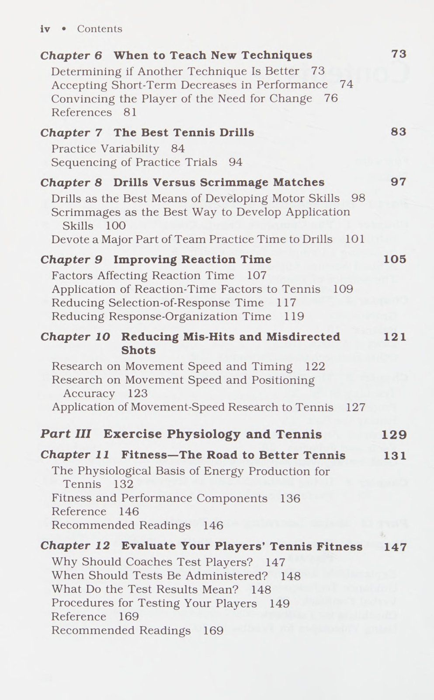
Hình 7.1: Hiệu quả tập luyện khối (Blocked) so với tập luyện hỗn hợp (Mixed/Varied) — Tập đa dạng tạo khả năng ứng biến vượt trội trong thi đấu thực tế.
Figure 7.1: Blocked vs Mixed Practice Retention — Varied practice conditions fostering superior motor transfer to matchplay situations.
Chương 8: Bài Tập Cô Lập Đối Đầu Đấu Tập Tình Huống: Phát Triển Kỹ Năng vs Ứng Dụng Chapter 8: Drills Versus Scrimmage Matches: Developing Motor Skills vs Tactical Application
Các bài tập so với các trận đấu kịch bản Khi họ đã chọn được các bài tập tốt nhất cho tay vợt của mình, huấn luyện viên quần vợt phải quyết định nên dành bao nhiêu thời gian luyện tập cho họ. Các huấn luyện viên có sự khác biệt rõ rệt về vấn đề này. Một số người cảm thấy các bài tập là hết sức quan trọng và yêu cầu các tay vợt của họ dành hầu như toàn bộ thời gian luyện tập của họ để chăm chỉ thực hiện hết bài tập này đến bài tập khác. Ngược lại, những người khác lại coi các cuộc tập trận là món salad bắt buộc trước bữa ăn. Những huấn luyện viên này sử dụng một vài bài tập để khởi động, sau đó tiến thẳng vào đấu tập.
Để giải quyết câu hỏi về thời gian khoan tối ưu, chúng ta cần nhận ra rằng tay vợt thành công phải làm được hai điều cơ bản. Đầu tiên, họ phải có khả năng thực hiện hiệu quả các kỹ năng vận động (Motor Skills) của quần vợt. Chúng ta có thể coi những kỹ năng vận động (Motor Skills) này là những kỹ thuật cơ học hợp lý cho các động tác khác nhau. Cơ chế không nhất thiết phải giống hệt nhau đối với mọi tay vợt, nhưng chúng phải cho phép tay vợt thực hiện một số điều. Tay vợt phải có khả năng đánh tay vợt một cách nhất quán với tốc độ và độ chính xác nhất định. Họ phải có khả năng thực hiện các cú đánh trong nhiều điều kiện khác nhau - tức là cú xoay người của họ phải có khả năng thích ứng. Cuối cùng, tay vợt phải có khả năng thực hiện những cú xoay người này một cách tự động; họ sẽ gặp rắc rối nếu phải suy nghĩ nhiều về kỹ thuật đánh trong các trận đấu. Việc tập trung vào cơ học sẽ cản trở việc tham gia vào các cân nhắc quan trọng khác, chẳng hạn như quả bóng, đối thủ và chiến lược trò chơi.
Điều thứ hai tay vợt phải có khả năng làm là áp dụng một cách nhất quán các kỹ năng vận động (Motor Skills) của mình để đáp ứng nhu cầu của trận đấu. Để áp dụng thành công các kỹ năng vận động (Motor Skills), tay vợt cần thực hiện bốn điều.
1. Họ phải sử dụng chiến lược sân đấu. Vị trí sân thích hợp và lựa chọn cú đánh thông minh là rất quan trọng. Ngoài ra, tay vợt phải thực hiện những cú đánh đó theo khả năng của mình. 2. Họ phải điều chỉnh chiến lược của mình cho phù hợp với hoàn cảnh và môi trường. Các chiến lược không thể giống nhau trước các đối thủ khác nhau với khả năng và phong cách chơi khác nhau. Loại bề mặt sân, điều kiện gió, nhiệt độ và các yếu tố môi trường khác cũng cần được xem xét. 3. Họ cần đọc nhanh các chuyển động và dự đoán các cú đánh của cả đối thủ và đối tác đánh đôi của mình. Nếu tay vợt chờ đợi các sự kiện xảy ra trước khi phản ứng, họ sẽ không có cơ hội sử dụng các kỹ năng vận động (Motor Skills) đã học tốt của mình. 4. Họ phải tự điều chỉnh cả về mặt sinh lý và tâm lý. Họ phải biết khi nào và làm thế nào để tiết kiệm năng lượng trong các trận đấu và có thể nhận ra những tình huống đòi hỏi nỗ lực cao nhất. Họ phải biết dấu hiệu mệt mỏi của cơ thể mình và điều chỉnh trò chơi cho phù hợp. Về mặt tâm lý, tay vợt phải học kỹ năng quan trọng là duy trì sự tập trung trong suốt các trận đấu và giải đấu. Ngoài ra, họ phải điều chỉnh sự lo lắng và kích thích ở mức độ có lợi cho hiệu suất tối ưu.
Bây giờ, chúng ta thấy nhiệm vụ của tay vợt gồm hai phần—thực hiện kỹ năng vận động (Motor Skills) và áp dụng các kỹ năng vận động (Motor Skills) để phù hợp với các tình huống—chúng ta có thể đánh giá tốt hơn tầm quan trọng tương đối của việc luyện tập và đấu tập bằng cách phân tích xem hai hình thức luyện tập này góp phần cải thiện kỹ năng quần vợt như thế nào. Đầu tiên chúng ta sẽ xem xét lý do tại sao các bài tập được cho là phương tiện hiệu quả nhất để đạt được các kỹ năng vận động (Motor Skills). Sau đó, chúng tôi sẽ xem xét cách tốt nhất để đạt được việc áp dụng các kỹ năng vận động (Motor Skills) vào trận đấu.
KHOAN LÀ PHƯƠNG TIỆN TỐT NHẤT ĐỂ PHÁT TRIỂN KỸ NĂNG VẬN ĐỘNG
Nghiên cứu sâu rộng đã chỉ ra rõ ràng rằng những người biểu diễn học các kỹ năng vận động (Motor Skills) bằng cách luyện tập hiệu quả hơn nhiều so với việc tham gia các trận đấu kịch tính. Có nhiều lý do giải thích tại sao điều này đúng với tất cả các loại kỹ năng thể thao. Có thể hữu ích nếu phác thảo những lý do này và xem xét một số ví dụ về quần vợt.
Một lý do khiến các bài tập có hiệu quả trong việc dạy các kỹ năng vận động (Motor Skills) là chúng có thể dễ dàng được thiết kế để phù hợp với nhu cầu cụ thể của người học.
Ví dụ: giả sử một trong những tay vợt trung gian của bạn đánh những cú trái tay xoáy lên kém. Bạn biết rằng tay vợt này sẽ gặp khó khăn trong việc phát triển một cú đánh trái tay xoáy lên một cách máy móc nếu anh ta hoặc cô ta chỉ đơn giản bị đẩy vào một cuộc đấu kịch bản và được yêu cầu đánh các cú trái tay bằng xoáy lên.
Ngay cả một cuộc đấu tranh với một đồng đội có khả năng kém hơn sẽ yêu cầu tay vợt phải xử lý một số cú đánh trái tay khó mà không có nghĩa là đồng nhất về tốc độ, độ xoáy và độ cao nảy. Tay vợt sẽ thực hiện những cú đánh này từ nhiều vị trí khác nhau trên sân và thường phải di chuyển hoặc có ít thời gian để chuẩn bị. Nói tóm lại, kịch bản sẽ quá phức tạp đối với tay vợt này. Kỹ thuật xoay không hợp lý sẽ là kết quả có thể xảy ra và không mong muốn.
Có thể dễ dàng bố trí một bài tập để đơn giản hóa nhiệm vụ trái tay nhằm phù hợp với giai đoạn phát triển kỹ năng cụ thể của tay vợt. Đối với một tay vợt kém kỹ năng hơn, điều này có thể có nghĩa là họ phải đứng ở một vị trí và giao bóng theo kiểu tương đối nhất quán. Đối với tay vợt nâng cao hơn, một số khía cạnh của nhiệm vụ có thể phức tạp hơn trong khi những khía cạnh khác không đổi. Một mũi khoan có thể được thiết kế trong đó các quả bóng được đánh thẳng vào tay vợt với nhiều tốc độ và độ nảy khác nhau. Ngoài ra, bóng có thể được đánh với tốc độ ổn định nhưng theo nhiều hướng khác nhau, đòi hỏi tay vợt phải di chuyển để thực hiện các cú đánh.
Đôi khi giá trị của một chiếc bài tập (Drill) nằm ở khả năng thích ứng của nó nhằm tăng độ phức tạp của cú bắn một cách có hệ thống hơn là đơn giản hóa nó. Bạn có thể đã từng chứng kiến những trận đấu tập không thử thách một tay vợt đủ phức tạp để phát triển một kỹ thuật một cách tối ưu. Ví dụ: một tay vợt giỏi hơn có thể không bị thách thức bởi cú giao bóng của đồng đội, điều này có thể ít lực hơn so với những cú giao bóng gặp phải trong một giải đấu.
Trong những trường hợp như vậy, các bài tập có thể được thiết kế để tăng tính thử thách trong các cú giao bóng của đồng đội bằng cách cho phép họ đứng bên trong đường cuối sân, đánh qua lưới đã hạ thấp hoặc sử dụng bóng hơi mòn (nảy nhanh hơn). Những sự thích ứng này cho phép những tay vợt kém kỹ năng hơn có được nhiều cú giao bóng hơn, đánh mạnh hơn và vung cú giao bóng rộng hơn. Ngoài ra, người giao bóng khoan có thể đứng trên một bệ để thực hiện các cú giao bóng mô phỏng các cú giao bóng cao.
Nếu một tay vợt là người trả giao bóng tốt và quá dễ dàng đánh trúng người thắng từ cú giao bóng yếu của đồng đội, bạn có thể thấy cần phải hạn chế khu vực mà cú trả giao bóng có thể rơi xuống, từ đó đưa ra cho tay vợt một thử thách. Hoặc bạn có thể nói với tay vợt rằng cú trả bóng của họ phải được thực hiện dưới một đường kẻ phía trên lưới hoặc thành công với tỷ lệ phần trăm cao. Rõ ràng, với một chút sáng tạo, huấn luyện viên có thể thiết kế điều kiện tập luyện để đáp ứng nhu cầu ở mọi cấp độ khả năng. Không bao giờ có chuyện người mới bắt đầu bị choáng ngợp hoặc tay vợt cao cấp không bị thách thức.
Một lý do khác khiến các bài tập có lợi cho việc tiếp thu kỹ năng vận động (Motor Skills) hơn so với các pha đấu tập là trong quá trình luyện tập, tay vợt có thể tập trung vào kỹ thuật hoặc các khía cạnh cụ thể của cú đánh của họ, chẳng hạn như độ sâu, độ xoáy hoặc độ sắc nét. Mặc dù tay vợt có thể nghĩ về những điều này khi đấu tập nhưng sự cạnh tranh liên quan đến đấu tập thường khiến họ mất tập trung. Việc ghi điểm sẽ ghi đè lên việc giám sát chặt chẽ độ bám, theo dõi, độ xoáy, v.v. Các cuộc tập trận làm giảm vấn đề này bằng cách thiết lập các mục tiêu cụ thể, hữu hình để tay vợt đạt được. Giảm bớt lo lắng về việc thắng hay thua một set, tay vợt ít có xu hướng đập bóng qua lại một cách không mục đích.
Lý do thứ ba khiến các cuộc tập trận phát triển kỹ năng tốt hơn so với các cuộc đấu tập là thực tế rõ ràng rằng, khi được thiết kế phù hợp, chúng mang lại sự lặp lại kỹ năng lớn hơn nhiều trong một khoảng thời gian nhất định. Ví dụ: nếu một tay vợt có cú đánh qua đầu kém phát triển, huấn luyện viên có thể tổ chức một buổi tập cho tay vợt đó đánh 50 đến 60 cú đánh qua đầu trong 5 phút. Nhiều giờ đấu kịch bản có thể trôi qua trước khi tay vợt đạt được 50 lần vượt qua. Huấn luyện viên có thể thiết kế các bài tập tập trung thời gian luyện tập vào bất kỳ cú đánh nào mà tay vợt cần cải thiện.
SCRIMMAGES LÀ CÁCH TỐT NHẤT ĐỂ PHÁT TRIỂN KỸ NĂNG ỨNG DỤNG
Bây giờ chúng ta đã xác định được tầm quan trọng của các bài tập trong việc học các kỹ năng vận động (Motor Skills), chúng ta hãy nhìn vào mặt khác của đồng xu. Chúng tôi đã nói rằng thành công trong môn quần vợt không chỉ phụ thuộc vào kỹ năng vận động (Motor Skills) mà còn phụ thuộc vào việc áp dụng phù hợp những kỹ năng đó trong trận đấu. Điều này liên quan đến các chiến lược của sân đấu, đọc và dự đoán cũng như điều chỉnh nhịp độ sinh lý và tâm lý của bản thân - tất cả các kỹ năng đều quan trọng như nhau đối với các kỹ năng vận động (Motor Skills). Tất cả chúng ta đều biết những tay vợt có cú đánh tốt nhưng hiếm khi thắng vì họ chưa học được cách áp dụng các kỹ năng của mình trong trận đấu.
Không có gì ngạc nhiên khi tay vợt thường tiếp thu các kỹ năng ứng dụng hiệu quả hơn từ các trận đấu kịch bản hơn là từ các cuộc tập trận. Để dạy tay vợt áp dụng các kỹ năng vận động (Motor Skills) trong các tình huống trận đấu, huấn luyện viên phải đặt tay vợt vào những tình huống gần giống với điều kiện trận đấu. Tay vợt phải trải nghiệm những loại tình huống này và khám phá xem điều gì hiệu quả và điều gì không.
Về bản chất, các cuộc tập trận tạo ra những tình huống không thực tế, giả tạo. Những tình huống như vậy tốt cho việc phát triển kỹ năng vận động (Motor Skills) nhưng có xu hướng gây bất lợi cho việc học các kỹ năng ứng dụng. Hãy xem xét ví dụ về một tay vợt cú bắt lưới (Volley) đôi. Đầu tiên, chỉ từ các bài tập, người đánh vô-lê có thể không bao giờ học được các chiến lược trò chơi như vị trí cú bắt lưới (Volley) lý tưởng trong các tình huống trận đấu khác nhau, khi nào nên thực hiện cú vô lê và khi nào nên giao cho đồng đội, hoặc khi nào nên hướng cú vô lê về phía người trong lưới và khi nào nên đánh vào đối thủ sâu hơn về mặt chiến lược.
Thứ hai, các bài tập có thể không chuẩn bị cho tay vợt cú bắt lưới (Volley) dự đoán khi nào đối thủ có thể chồm, lốp bóng hoặc vô lê ở giữa. Các cuộc tập trận không đối đầu với người đánh vô-lê trong những tình huống này hoặc làm như vậy với xác suất thay đổi. Vấn đề là nếu các cú đánh và chuyển động của đối thủ trong bài tập khác với những gì chúng sẽ diễn ra trong trò chơi, thì tay vợt sẽ không được huấn luyện để phản ứng nhanh chóng với các tình huống cụ thể khi chúng xảy ra “thực sự”.
Cuối cùng, các bài tập không giúp phát triển nhiều kỹ năng về nhịp độ tâm lý và sinh lý mà tay vợt phải học. Duy trì sự tập trung là một ví dụ điển hình. Để thực hiện thành công những cú vô lê trong suốt một trận đấu đôi, tay vợt phải duy trì mức độ tập trung cao độ và rất ít người trong chúng ta sinh ra đã có kỹ năng này. Trên thực tế, một số tay vợt dường như có sự tập trung của một con chim ruồi. Khả năng tập trung này phải được rèn luyện và cách duy nhất để làm được điều đó là yêu cầu tay vợt phải rèn luyện nó thông qua nhiều trận đấu kéo dài ba set.
DÀNH MỘT PHẦN CHÍNH THỜI GIAN THỰC HÀNH CỦA NHÓM CHO CÁC BÀI HỌC
Vì có vẻ như các kỹ năng vận động (Motor Skills) và việc áp dụng các kỹ năng đó có tầm quan trọng gần như ngang nhau đối với sự thành công trong trận đấu của tay vợt, nên về mặt logic, bạn sẽ mong đợi tôi đề xuất phân chia thời gian luyện tập gần như bằng nhau giữa các cuộc tập trận và đấu tập. Tôi thì không.
Chắc chắn chúng ta phải đảm bảo rằng trải nghiệm của tay vợt không bị thiếu hụt trong việc phát triển kỹ năng vận động (Motor Skills) hoặc kỹ năng ứng dụng. Tuy nhiên, không nhất thiết phải tuân theo điều đó để đạt được sự cân bằng này, chúng ta cần dành lượng thời gian luyện tập như nhau cho các cuộc tập trận và đấu tập. Thay vì chia thời gian 50-50, tôi ủng hộ tỷ lệ trong khoảng 75-25. Tôi có một số lý do để nghiêng cán cân theo hướng có lợi cho việc tập trung nhiều hơn vào các cuộc tập trận.
Luyện tập các trận đấu cân bằng bên ngoài luyện tập
Tay vợt thường có được nhiều kinh nghiệm đấu tập ngoài việc luyện tập. Thời gian luyện tập thường chiếm một tỷ lệ tương đối nhỏ trong thời gian một đấu thủ dành trên sân. Thông thường, các tay vợt phải có mặt trên sân sau khi tập luyện, vào cuối tuần và trong thời gian trái mùa giải. Họ dành phần lớn thời gian này để viết kịch bản. Ngoài ra, trong lịch trình theo mùa của bạn, một trận đấu hoặc giải đấu dường như bị vấp ngã sau một trận đấu hoặc giải đấu khác. Tất nhiên, đây là những điều thú vị, nhưng chúng cắt giảm thời gian luyện tập mà lẽ ra có thể dành cho các bài tập để cải thiện kỹ năng vận động (Motor Skills). Việc phụ thuộc nhiều vào các bài tập trong thời gian luyện tập sẵn có phần nào khắc phục được sự mất cân bằng này.
Các bài tập mang lại động lực và động lực đa dạng—của cả tay vợt và huấn luyện viên—là lý do thứ hai để dành nhiều thời gian luyện tập hơn cho các bài tập. Lúc đầu điều này nghe có vẻ lạ. Suy cho cùng, hầu hết tay vợt đều tận hưởng cảm giác phấn khích khi chơi trận đấu thực tế hơn là tập luyện. Tuy nhiên, khi xem xét kỹ hơn, chúng ta sẽ thấy rằng việc phụ thuộc nhiều hơn vào các bài tập có thể làm tăng động lực của tay vợt.
Nghiên cứu về học tập vận động cho thấy rõ ràng rằng các buổi thực hành mang tính thay đổi và kích thích là điều cần thiết để học tập tối ưu. Khi trải nghiệm thực hành diễn ra thường xuyên, mọi người thường ít tập trung hơn vào công việc trước mắt và học tập với tốc độ chậm hơn. Huấn luyện viên quần vợt, người thường cho các tay vợt đấu tập trong thời gian dài, có nguy cơ có một mức độ giống nhau nào đó trong quá trình luyện tập. Nếu thói quen như vậy phát triển, động lực của các tay vợt có thể sẽ bị xáo trộn. Một số tay vợt có động lực nội tại tốt sẽ vui vẻ đấu tập mỗi ngày; những người khác sẽ không có động lực bằng cách liên tục chơi các bộ luyện tập. Một số huấn luyện viên gặp khó khăn trong việc hiểu các tay vợt thuộc loại thứ hai này. Đối với những huấn luyện viên này, không thể tưởng tượng được rằng có người lại có thể mệt mỏi khi tham gia một môn thể thao vô cùng thú vị như quần vợt. Nhưng nó xảy ra. Trong mắt nhiều tay vợt, viễn cảnh làm cùng một việc—bất kỳ việc gì giống nhau—ngày này qua ngày khác, tuần này qua tuần khác và thậm chí năm này qua năm khác có thể dẫn đến sự quan tâm giảm sút.
Việc phụ thuộc nhiều vào các bài tập trong luyện tập giúp tăng cường động lực cho tay vợt theo một số cách. Nếu huấn luyện viên giữ các bài tập ngắn và linh hoạt, họ có khả năng mang lại sự đa dạng cho các buổi luyện tập. Bằng cách sử dụng nhiều bài tập khác nhau trong suốt mùa giải, các huấn luyện viên sẽ tránh được hội chứng cũ. Ngoài ra, tay vợt thích cấu trúc và thử thách của các bài tập được thiết kế phù hợp. Các cuộc tập trận cho phép tay vợt thấy rõ hơn những tiến bộ mà họ đang đạt được trong kỹ năng của mình, mang lại cho họ cảm giác dễ chịu rằng họ đang làm điều gì đó đáng giá để cải thiện bản thân.
Khi các bài tập là một phần không thể thiếu trong quá trình luyện tập, động lực của huấn luyện viên sẽ được cải thiện vì những lý do tương tự. Huấn luyện viên cũng thích sự đa dạng. Họ thích những buổi thực hành có tổ chức và có mục đích. Họ muốn thấy bằng chứng hữu hình cho thấy tay vợt đang thành thạo các kỹ năng.
Hơn nữa, các cuộc tập trận thường yêu cầu huấn luyện viên đóng vai trò tương tác tích cực với tay vợt, trong đó các kịch bản có xu hướng đặt huấn luyện viên vào vị trí khán giả thụ động. Như chúng ta đã thấy ở chương 5, nghiên cứu rõ ràng ủng hộ tính hiệu quả của phương pháp giảng dạy tích cực, năng động. Kết quả học tập tốt hơn, uy tín của huấn luyện viên ngày càng cao trong nhận thức của các tay vợt.
Bài tập cung cấp điều kiện thể chất Lý do thứ ba cho việc dành phần lớn thời gian luyện tập cho các bài tập là vì chúng nhằm mục đích rèn luyện thể chất cho các tay vợt. Nhiều huấn luyện viên đã không sử dụng các bài tập liên quan đến quần vợt để rèn luyện thể lực cho vận động viên của họ vì họ tin rằng sự mệt mỏi sẽ cản trở việc học các kỹ năng. Nghiên cứu về học tập vận động đã cho thấy đây là mối lo ngại vô căn cứ. Mức độ mệt mỏi cao có thể làm giảm hiệu suất kỹ năng, nhưng nghịch lý thay, ngay cả trong những tình huống mà sự mệt mỏi làm suy giảm hiệu suất thì nó lại không ảnh hưởng đến việc học tập. Người biểu diễn được hưởng lợi nhiều từ việc luyện tập một kỹ năng khi mệt mỏi cũng như khi họ nghỉ ngơi.
Bằng chứng như vậy cho thấy rằng các bài tập đôi khi có thể được sử dụng để đồng thời tạo điều kiện cho tay vợt và phát triển kỹ năng. Do đó, huấn luyện viên không cần phải cảm thấy rằng họ phải luôn lên lịch cho các hoạt động rèn luyện riêng biệt vào cuối buổi tập. Việc lập kế hoạch định kỳ cho các hoạt động điều hòa sớm hơn trong thực hành sẽ làm tăng thêm sự đa dạng và không cản trở thời lượng học tập. Để biết nhiều bài tập quần vợt tốt có thể được sử dụng hiệu quả để phát triển thể chất, hãy tham khảo các chương sinh lý học của cuốn sách này.
oe eg = a ri áo; 7) as sa ee eee eu uy * if ea v - ae ae a . Ôi. 04 i' 7 rua 4, ——_, eh us pret i, -) ec amenee iit pet) Pots ote. ee gee ee et get nr ar fo he ee 2 eee ee ee, ee ee he T tae a = I a oe ee ee
Mi tức là? 2 a eles 1 et eh at palpi aig 2 at oe oe Tia: 7 =e = - inl note hee. ree ee as tere eet nr a Te ce cael pi 9 cael © maa ers ine ee el E hii at ee SP ios ie Seley Mga rea ij roe Le ae 2 kl pel vee A a Sah rs nits miei i. ; sa Se Ge ae rere ra re “Lares! ie Peer et eee i phil peseioen| 0h a Ae a & ie inl ie mem ae ans lươn ks ee ee Pr jereedicke a aa ae eee nner i ngừng aes Ge SP hs Est 6. + Siena ana ts ty ae iG Sy Si a it Tae fly Toe) ee ies les teeieiaptiaietal igi eot-osmal
To ta et người ngoài hành tinh - a | a ee 7 a la re i a J Uk a i i a tôi ee gy) ee phí ee ie vane a i i oT]
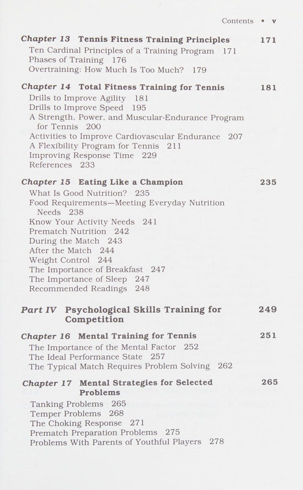
Hình 8.1: Mô hình phân bổ thời gian giữa bài tập kỹ thuật cô lập và đấu tập đối kháng — Tối ưu hóa chu trình tiếp thu vận động và tư duy chiến thuật.
Figure 8.1: Skill Drills vs Match Scrimmages — Optimizing practice time allocation between motor pattern acquisition and tactical application.
Chương 9: Cải Thiện Thời Gian Phản Ứng: Rút Ngắn Khâu Lựa Chọn & Tổ Chức Vận Động Chapter 9: Improving Reaction Time: Selection and Response Organization
[Cải thiện thời gian phản ứng (Reaction Time) Quần vợt đòi hỏi phản ứng nhanh. Tay vợt phải liên tục đưa ra quyết định nhanh chóng về việc sẽ ở đâu và làm gì. Tay vợt đưa ra và thực hiện các quyết định phù hợp nhanh nhất có thể sẽ giành chiến thắng. Sự khác biệt lớn về tốc độ phản ứng của tay vợt là khá rõ ràng. Một tay vợt sẽ nhìn thấy một quả bóng bay qua trước khi có thể nao núng. Một tay vợt khác sẽ kịp thời nhìn thấy quả bóng tương tự để dựa vào nó, đón nó về phía trước cơ thể và đánh nó ra sân rộng.
Các ý kiến khác nhau về lý do tại sao phản ứng quần vợt lại khác nhau rất nhiều giữa các tay vợt. Về cơ bản có hai trường phái tư tưởng. Một số người tin rằng sự khác biệt về tốc độ phản ứng chủ yếu xuất phát từ sự khác biệt về khả năng tự nhiên. Họ xem thời gian phản ứng (Reaction Time) là một đặc tính bẩm sinh, cố định. Những người khác đặt niềm tin nhiều hơn vào lý thuyết rằng thời gian phản ứng (Reaction Time) có thể được cải thiện nhờ luyện tập. Trong khi họ thừa nhận rằng một số tay vợt dường như có thời gian phản ứng (Reaction Time) nhanh hơn về bản chất, họ tin rằng phản ứng nhanh như chớp không phải bẩm sinh mà đạt được chủ yếu nhờ làm việc chăm chỉ. Để hỗ trợ lý thuyết của mình, họ trích dẫn các ví dụ về cách một số tay vợt thể hiện sự cải thiện lớn về thời gian phản ứng (Reaction Time) sau nhiều năm luyện tập.
Trường phái tư tưởng nào đúng? Nghiên cứu về động cơ ủng hộ quan điểm thứ hai. Mặc dù nghiên cứu cho thấy sự khác biệt bẩm sinh vẫn tồn tại nhưng nó cũng chứng minh rõ ràng rằng, trong tất cả các loại nhiệm vụ cần phản ứng, việc luyện tập có thể mang lại những tác động tích cực đáng kể. Những thay đổi xảy ra về thời gian phản ứng (Reaction Time) trong thời gian dài luyện tập thường lớn hơn những khác biệt mà chúng tôi thấy ở những người chưa được đào tạo. Hơn nữa, nghiên cứu minh họa rõ ràng việc thực hành đặc biệt cải thiện thời gian phản ứng (Reaction Time) trong các tình huống mà tay vợt phải đối phó với một số kích thích và chọn từ một số phản ứng có thể xảy ra. Trong những loại nhiệm vụ đòi hỏi thời gian phản ứng (Reaction Time) phức tạp này, không có gì lạ khi mọi người học cách giảm hơn 50% thời gian phản ứng (Reaction Time) của mình.
Thực tế là việc luyện tập có thể ảnh hưởng đáng kể đến thời gian phản ứng (Reaction Time) sẽ là điều đáng khích lệ đối với các huấn luyện viên quần vợt, vì điều đó có nghĩa là không có gì không thể vượt qua đang ngăn cản các tay vợt của bạn phát triển thời gian phản ứng (Reaction Time) nhanh hơn. Những phát hiện cho thấy các tình huống phức tạp về thời gian phản ứng (Reaction Time) đặc biệt dễ được cải thiện thông qua luyện tập mang lại sự khuyến khích hơn nữa, bởi vì quần vợt liên quan đến nhiều quyết định phức tạp về thời gian phản ứng (Reaction Time). Thật vậy, tay vợt quần vợt phải phân loại một số lượng lớn các tác nhân kích thích và chọn một trong nhiều phản ứng có thể xảy ra.
Mặc dù những kết quả nghiên cứu liên quan đến tác động của việc luyện tập lên thời gian phản ứng (Reaction Time) biện minh cho sự lạc quan, chúng ta phải nhận ra một điều cực kỳ quan trọng. Huấn luyện viên không thể cho rằng thời gian phản ứng (Reaction Time) luôn có những tiến bộ lớn chỉ vì các tay vợt đang luyện tập. Họ có thể không cải thiện chút nào. Nghiên cứu chỉ đơn giản chỉ ra rằng có thể cải thiện được. Chương này thảo luận về ba yếu tố ảnh hưởng đến thời gian phản ứng (Reaction Time). Nếu chúng ta cải thiện bất kỳ yếu tố nào trong số này, dù thông qua luyện tập hay bất kỳ phương tiện nào khác, thời gian phản ứng (Reaction Time) cũng sẽ được cải thiện. Tuy nhiên, nếu không có yếu tố nào trong số này cho thấy sự cải thiện thì cũng sẽ không có sự cải thiện về thời gian phản ứng (Reaction Time).
Thông tin này đặt ra câu hỏi quan trọng là liệu có nên để việc phát triển các kỹ năng về thời gian phản ứng (Reaction Time) lại theo cơ hội hay không. Có nên lên kế hoạch luyện tập như truyền thống với hy vọng rằng tay vợt sẽ dần dần, một cách vô thức, học cách cải thiện những yếu tố ảnh hưởng đến thời gian phản ứng (Reaction Time)? Trước đây, đây là cách mà nhiều người đã mài giũa thời gian phản ứng (Reaction Time) của mình và trở thành những người biểu diễn xuất sắc.
Như bạn có thể nghi ngờ, tôi không đồng ý rằng cách tiếp cận không có định hướng như vậy là cách hiệu quả nhất để tay vợt ngày nay phát triển kỹ năng của họ. Ngày nay chúng ta biết nhiều hơn về những gì ảnh hưởng đến thời gian phản ứng (Reaction Time). Bằng cách làm quen với những điều này, huấn luyện viên sẽ có thể thực hiện các hoạt động luyện tập có hệ thống và có mục đích hơn.
Để đưa ra gợi ý về cách cải thiện thời gian phản ứng (Reaction Time) của tay vợt, chương này được chia thành hai phần chính. Đầu tiên hãy xem xét các yếu tố mà nghiên cứu về động cơ đã phát hiện ra có ảnh hưởng đến thời gian phản ứng (Reaction Time).
Phần thứ hai, chiếm phần lớn của chương, phân tích cách huấn luyện viên có thể sử dụng kiến thức của họ về các yếu tố ảnh hưởng đến thời gian phản ứng (Reaction Time) để giúp tay vợt học cách phản ứng nhanh hơn.
Chúng tôi không khẳng định rằng bằng cách đọc chương này, bạn sẽ ngay lập tức có thể cải thiện thời gian phản ứng (Reaction Time) của các vận động viên của mình. Những cải tiến đến từ kết quả của quá trình thực hành rộng rãi. Tuy nhiên, một số quy trình thực hành chắc chắn sẽ góp phần mang lại thời gian phản ứng (Reaction Time) tốt hơn những quy trình khác. Chương này giải thích rõ ràng những điều cụ thể mà các huấn luyện viên quần vợt nên làm để việc luyện tập đạt hiệu quả cao nhất có thể. Nếu tay vợt của bạn muốn phát triển từ những con lười trong sân thành những con mèo trên sân, công việc vẫn thuộc về họ.
YẾU TỐ ẢNH HƯỞNG THỜI GIAN PHẢN ỨNG
Một suy nghĩ ban đầu trong nghiên cứu về thời gian phản ứng (Reaction Time) là sự chậm trễ trong phản hồi là kết quả của tốc độ truyền các thông điệp thần kinh trong cơ thể. Người ta biết rằng các thông điệp thần kinh phải di chuyển từ các cơ quan cảm giác đến não và từ não đến các chi trước khi cơ bắp có thể phản ứng. Có vẻ hợp lý là quá trình này có thể cần một khoảng thời gian nhất định, gây ra sự chậm trễ trong phản ứng. Lối suy nghĩ như vậy cho rằng sự khác biệt bẩm sinh về thời gian phản ứng (Reaction Time) là do một số người có đường dẫn thần kinh “tốt hơn”.
Những cải thiện về thời gian phản ứng (Reaction Time) nhờ luyện tập có thể được giải thích bằng một số loại sàng lọc của mạch thần kinh; luyện tập bằng cách nào đó đã loại bỏ các mạch để tin nhắn có thể di chuyển nhanh hơn.
Mặc dù lý thuyết này có vẻ đáng tin cậy nhưng kiến thức hiện tại của chúng ta về hoạt động của cơ thể đã chứng minh nó sai. Các thí nghiệm đã chỉ ra rằng các thông điệp thần kinh di chuyển khắp cơ thể với tốc độ đáng kinh ngạc. Ở một số dây thần kinh của con người, tốc độ dẫn truyền có thể lên tới 120 mét/giây. Những tốc độ như vậy ngăn cản tốc độ truyền thần kinh ảnh hưởng đến thời gian phản ứng (Reaction Time) theo bất kỳ cách nào ngoại trừ cách cực kỳ nhỏ, không thể phát hiện được.
Vậy thì nếu tốc độ dẫn truyền không phải là nguyên nhân khiến chúng ta chậm phản ứng với các tình huống, thì nguyên nhân là gì? Câu trả lời nằm ở bộ não. Thật kỳ diệu, bộ não chịu trách nhiệm làm chúng ta chậm lại. Khi các thông điệp thần kinh đến từ mắt hoặc nguồn cảm giác khác, não phải xử lý thông tin đó trước khi có thể gửi lệnh thích hợp đến các cơ. Quá trình xử lý thông tin trong não này đòi hỏi thời gian quý giá mà tay vợt quần vợt khó có thể chi trả được.
Các nghiên cứu được thiết kế thông minh đã chỉ ra rằng có ba việc riêng biệt mà bộ não phải làm. Vì mỗi quá trình này đều cần có thời gian nên từ nay trở đi chúng ta có thể coi chúng là ba yếu tố ảnh hưởng đến thời gian phản ứng (Reaction Time). Chúng là (a) nhận dạng những gì được nhìn thấy, (b) lựa chọn phản ứng nào sẽ thực hiện và (c) sắp xếp các thông điệp sẽ được gửi đến các cơ. Chúng tôi sẽ xem xét các yếu tố này một cách riêng lẻ liên quan đến các tình huống quần vợt.
Yếu tố 1: Xác định những gì được nhìn thấy
Để phản ứng, trước tiên mỗi cá nhân phải nhận thức được. Bộ não luôn cần một khoảng thời gian để xác định kích thích nhận được. Kích thích càng ít rõ ràng thì não càng cần nhiều thời gian. Hãy hình dung bản thân bạn ở tư thế đánh vô-lê. Giả sử bạn chọn tập trung vào kiểu vung vợt ngược mà đối thủ của bạn đang thực hiện. Giả sử bạn biết cô ấy sẽ gợi ý kiểu đánh vô-lê mà cô ấy sẽ thực hiện bằng cách thực hiện các động tác vung vợt ra sau khác nhau. Trong trường hợp này, kiểu vung vợt ngược của đối thủ là tác nhân kích thích mà bạn phải phản ứng lại. Bộ não cần một thời gian sau khi nhận được các xung động thần kinh từ mắt để nói, 'À, cô ấy đang thực hiện một cú giật lùi lớn, có nghĩa là một cú trả bóng chéo sân.'' Cú vung sau của đối phương càng ít đặc trưng rõ ràng thì bạn sẽ càng mất nhiều thời gian để nhận dạng. Ví dụ, tín hiệu có thể ít rõ ràng hơn nếu động tác vung vợt sau chỉ khác một chút so với các kiểu vung vợt khác, hoặc nếu nó được ngụy trang bởi các chuyển động khác.
Yếu tố 2: Lựa chọn phản hồi cần thực hiện
Sau khi não đã xác định được tác nhân kích thích, việc tiếp theo nó phải làm là lựa chọn phản ứng thích hợp. Giả sử bạn lại ở tư thế đánh vô-lê và đã xác định được tác nhân kích thích là biểu thị một cú sút chéo sân. Phản ứng đúng với việc đạp lùi, đứng yên, di chuyển về phía vạch, di chuyển theo đường chéo về phía trước hay không có phản ứng nào ở trên? Nghiên cứu đã chỉ ra rằng quá trình lựa chọn này đòi hỏi thời gian, góp phần gây ra sự chậm trễ về thời gian phản ứng (Reaction Time) và rằng tay vợt phải chọn càng nhiều phản hồi thì thời gian đưa ra quyết định càng lâu.
Hãy so sánh điều này với việc mò kim đáy bể. Nếu ngăn xếp lớn, việc tìm kiếm sẽ mất nhiều thời gian. Nếu đống chỉ có một vài sợi cỏ khô thì việc tìm kiếm sẽ ngắn gọn. Nếu bạn, với tư cách là người đánh vô-lê, không biết phản ứng nào là phù hợp thì bộ não của bạn phải lựa chọn từ vô số khả năng. Danh sách các phản ứng vừa được trích dẫn có thể được mở rộng để bao gồm cúi người, nhảy lên và xuống hoặc bất kỳ chuyển động thể chất nào khác mà cơ thể bạn có thể thực hiện. Mặt khác, nếu bạn đã chuẩn bị tinh thần để lựa chọn giữa hai hoặc ba phản ứng thích hợp, bạn sẽ có thể phản ứng nhanh hơn khi nhìn thấy một cú vô lê thành hình. Việc giảm số lượng câu trả lời có thể có mà bạn cần chọn sẽ giúp bộ não của bạn đưa ra quyết định nhanh hơn.
Yếu tố 3: Tổ chức các thông điệp được gửi đến cơ bắp
Sau khi xác định được kích thích và chọn phản ứng, não vẫn cần nhiều thời gian hơn để gửi thông điệp thần kinh đến cơ. Hãy nhớ rằng ngay cả đối với một chuyển động rất đơn giản như uốn cong ngón tay, một số lượng lớn các thông điệp được tính thời gian phức tạp cũng phải được gửi đến nhiều cơ. Một số cơ gấp nhất định phải được hướng dẫn để co theo đúng trình tự và đúng cường độ, đồng thời các cơ duỗi phải nhận được thông điệp để thư giãn khi phối hợp.
Không có gì đáng ngạc nhiên, nghiên cứu phân tích giai đoạn tổ chức này đã phát hiện ra rằng một phong trào càng phức tạp thì càng cần nhiều thời gian. Ví dụ, việc thực hiện một cú vô lê đòi hỏi não phải lập kế hoạch thần kinh tương đối phức tạp trước khi gửi tin nhắn đến các cơ. Hãy nghĩ đến các xung thần kinh được định thời gian phức tạp phải được gửi đến hầu hết mọi khớp của cơ thể trước khi nó có thể di chuyển theo đường chéo về phía trước để chặn một cú sút chéo sân. Về mặt logic, trong hai động tác quần vợt có mức độ phức tạp khác nhau, các vận động viên sẽ mất nhiều thời gian hơn để bắt đầu động tác phức tạp hơn.
ỨNG DỤNG YẾU TỐ THỜI GIAN PHẢN ỨNG TRONG TENNIS
Biết được ba yếu tố ảnh hưởng đến thời gian phản ứng (Reaction Time) sẽ cung cấp cơ sở để chúng tôi có thể kiểm tra một cách có hệ thống những cách mà tay vợt có thể giảm thời gian phản ứng (Reaction Time).
Tín hiệu gây ra phản ứng Có thể làm gì để giảm thời gian nhận dạng? Để trả lời câu hỏi này, trước tiên chúng ta phải xác định những tín hiệu nào trong môi trường quần vợt khiến tay vợt phản ứng. Đây không phải là một nhiệm vụ dễ dàng vì môi trường kích thích rất phức tạp. Có nhiều tín hiệu mà tay vợt có thể sử dụng và tay vợt có thể sử dụng các loại tín hiệu khác nhau trong các tình huống khác nhau. Để đơn giản hóa vấn đề, các tín hiệu được các vận động viên sử dụng sẽ được phân thành ba loại: tín hiệu bóng, tín hiệu đối phương và tín hiệu trò chơi.
Có lẽ một trong những cách khuyến khích phổ biến nhất của người hướng dẫn là xem bóng. Lời khuyên này thường có lý khi chúng ta nhận ra rằng những tín hiệu bắt nguồn từ việc xem bóng có lẽ đáng tin cậy hơn tất cả những tín hiệu khác. Khi tay vợt nhìn thấy quả bóng bay theo một hướng nhất định với tốc độ nhất định, người đó sẽ biết vị trí và tốc độ di chuyển.
Mặc dù tín hiệu bóng rất đáng tin cậy nhưng chúng có một nhược điểm nghiêm trọng. Tay vợt không thể sử dụng tín hiệu bóng cho đến khi bóng chạm vào đối phương. Điều này gây ra vấn đề trong những tình huống mà tay vợt có ít thời gian để phản ứng. Hãy xem xét tình huống khi một tay vợt ở gần đối thủ và bóng đánh rất mạnh vào người đó. Nếu tay vợt chờ xem bóng đi đâu, nó sẽ trôi qua trước khi người đó có thể thực hiện cú đánh. Trong những tình huống như thế này, tay vợt phải học cách phản ứng dựa trên các tín hiệu khác ngoài bóng. Họ phải chuyển sự chú ý của mình sang những tín hiệu cảnh báo sớm hơn về điều gì sẽ xảy ra. Chúng ta sẽ xem xét những dấu hiệu đó sau.
Hiện tại, chúng ta cần thiết lập các tình huống bi-a. Những điều này xảy ra chủ yếu trong các trận đấu đơn, trừ khi tay vợt đang chơi một trận đấu tấn công rất hung hãn. Ví dụ, khi các đấu thủ đang tham gia vào một pha đánh bóng ở đường biên, họ có thể đợi xem bóng đến trước khi quyết định nơi họ nên di chuyển. Việc chờ đợi tín hiệu bóng đáng tin cậy này sẽ giúp họ không bị bắt khi chạy theo một hướng khi bóng đi phía sau họ theo hướng khác. Chỉ trong những tình huống cơ bản bất thường, việc chờ đợi tín hiệu bóng mới khiến tay vợt khó phản ứng đủ nhanh.
Tay vợt quần vợt cũng dựa nhiều vào tín hiệu bóng khi trả giao bóng. Người trả giao bóng thường không được nhìn thấy di chuyển theo một hướng khi bóng đi theo hướng khác, điều này cho thấy rằng họ chờ xem hướng của quả bóng trước khi di chuyển. Tuy nhiên, cũng có một số tình huống trả giao bóng nhất định trong đó việc chờ đợi bóng.cues tốn quá nhiều thời gian, chẳng hạn như khi một tay vợt đang thi đấu với một người giao bóng mạnh trên bề mặt nhanh.
Chúng tôi đã chứng minh rằng tín hiệu bóng đóng một vai trò quan trọng trong các cuộc tập hợp động tác đánh nền, khi trả giao bóng và trong các tình huống khác khi hạn chế về thời gian không quá nghiêm trọng. Tiếp theo, chúng tôi sẽ giải quyết những gì chúng tôi có thể làm để cải thiện thời gian phản ứng (Reaction Time) của tay vợt với tín hiệu bóng. Về cơ bản, có hai loại tín hiệu bóng mà tay vợt có thể sử dụng để phản ứng nhanh: tín hiệu quỹ đạo và tín hiệu lờ mờ.
Tín hiệu quỹ đạo là những tín hiệu mà tay vợt nhận được khi quan sát đường bay của bóng. Nếu họ nhìn thấy quả bóng trả về di chuyển rất nhanh trước mặt đối thủ mà ít rơi xuống, họ sẽ học cách giải thích rằng quả bóng đang đi ngang qua sân với tốc độ nhanh. Nếu bóng di chuyển ra xa đối thủ với tốc độ chậm và rơi rõ rệt, họ hiểu đây là một cú đánh ngắn hơn và phản ứng bằng cách di chuyển về phía lưới.
Tín hiệu quỹ đạo là tín hiệu bóng mà tay vợt thường dựa vào nhất vì họ có thể dễ dàng nhận ra những tín hiệu này trong phần đầu tiên của đường bay của bóng. Điều này rất quan trọng vì chỉ khi đánh bóng chậm, tay vợt mới có thể đợi bóng đi rất xa trước khi phản ứng. Rõ ràng, nếu họ có thể xác định được hướng của quả bóng khi nó chỉ cách vợt đối phương vài feet, họ sẽ có thể phản ứng nhanh hơn so với việc họ phải theo dõi bóng trong 10 đến 10 phút.
20 feet. Nghiên cứu đã chỉ ra rằng những tay vợt có kỹ năng, bằng cách đọc tín hiệu đường bay, đã học được cách xác định hướng của quả bóng sớm hơn những người mới bắt đầu. Làm thế nào tay vợt có thể phát triển tốt nhất kỹ năng ban đầu này?
Thật không may, không có mẹo nào để nhanh chóng học cách đọc tín hiệu đường bay. Vì tín hiệu quỹ đạo bóng là tín hiệu mà tay vợt thường sử dụng khi chạm đất và trả giao bóng, huấn luyện viên nên hướng dẫn tay vợt tập trung vào giai đoạn đầu của đường bay. Trong những kiểu đánh này, tay vợt thường không cần phải đọc mọi chuyển động của đối thủ, điều này có thể khiến họ mất tập trung vào các dấu hiệu quỹ đạo bóng. Huấn luyện viên cũng không nên yêu cầu các tay vợt xác định độ xoáy hoặc độ xoáy của quả bóng đang đến gần càng sớm càng tốt. Một số người cho rằng làm như vậy sẽ giúp tay vợt chú ý hơn đến quả bóng. Việc tìm kiếm lông tơ có thể là điều tốt cho tay vợt thực hiện sau này trong đường bay của quả bóng để giúp họ không rời mắt khỏi quả bóng quá sớm. Nhưng làm điều này khi bóng bật ra khỏi vợt của đối phương có thể khiến tay vợt mất tập trung vào các tín hiệu thực sự dựa trên thời gian phản ứng (Reaction Time).
Việc cung cấp cho tay vợt nhiều kinh nghiệm nhất có thể trong việc đọc tín hiệu quỹ đạo chỉ có thể giúp cải thiện thời gian phản ứng (Reaction Time). Trải nghiệm này có thể đạt được tốt nhất thông qua các bài tập trong đó tay vợt phải phản ứng với nhiều loại cú đánh có nhịp độ và hướng khác nhau. Việc thực hành như vậy sẽ khiến họ nỗ lực giải thích các loại quỹ đạo khác nhau. Các bài tập kéo dài trong đó các tay vợt đánh bóng qua lại với tốc độ như nhau trực tiếp về phía nhau sẽ không phát triển thời gian phản ứng (Reaction Time) cũng như một bài tập giống kịch bản hơn. Ngoài ra, hãy nhớ rằng để bất kỳ cuộc tập trận nào cải thiện tối ưu thời gian phản ứng (Reaction Time), tay vợt phải cố gắng phản ứng nhanh nhất có thể khi thực hiện mỗi lần quay lại. Thay vì chỉ thực hiện các chuyển động, họ nên thử thách bản thân một cách có ý thức để bắt đầu các chuyển động càng sớm càng tốt mỗi lần.
Trong khi tín hiệu quỹ đạo chắc chắn là loại tín hiệu bóng chính mà người biểu diễn sử dụng, chúng không phải là loại duy nhất. Loại tín hiệu bóng quan trọng thứ hai là tín hiệu lờ mờ. Các tín hiệu lờ mờ liên quan đến khả năng của tay vợt trong việc ước tính khoảng cách và tốc độ tiếp cận các vật thể theo kích thước cảm nhận được của vật thể và tốc độ mà nó dường như thay đổi. Một ví dụ điển hình về tín hiệu lờ mờ là việc lái xe trên một đoạn đường cao tốc thẳng tắp với một chiếc ô tô đang tiến tới ở làn đường đối diện. Mặc dù không phải lúc nào cũng dễ dàng nhưng người ta ước tính khoảng cách của ô tô dựa trên kích thước của nó. Họ cũng ước tính tốc độ của nó dựa trên tốc độ thay đổi kích thước của nó.
Các tín hiệu lờ mờ đóng một vai trò quan trọng về thời gian phản ứng (Reaction Time) trong quần vợt khi các tín hiệu quỹ đạo không dễ dàng nhận ra, điều này xảy ra trong một số tình huống. Một là khi bóng được đánh thẳng vào tay vợt. Những quả bóng như vậy khó đánh giá nhất vì không có dấu hiệu quỹ đạo nào được hiển thị. Đối với người được nó lao tới, quả bóng dường như gần như đứng yên vì nó không di chuyển lên, xuống, sang trái hoặc sang phải. Theo một nghĩa nào đó, tình huống này có thể được coi là một tín hiệu về quỹ đạo cho tay vợt biết rằng quả bóng đang lao thẳng vào họ. Vấn đề là tín hiệu quỹ đạo này không cung cấp thông tin chính xác về tốc độ của quả bóng. Do đó, tay vợt dựa vào một tín hiệu lờ mờ. Nếu họ có thể đánh giá chính xác kích thước thay đổi của quả bóng, tay vợt sẽ biết nên tiến hay lùi và họ nên vung vợt nhanh như thế nào.
Đôi khi nền khiến tay vợt khó đánh giá quỹ đạo của quả bóng. Một trường hợp là chuyển động ở phía sau: Rất khó để đánh giá quả bóng khi có người, ô tô hoặc bất cứ thứ gì đang chuyển động phía sau nó. Thật khó để xác định liệu quả bóng đang di chuyển theo một hướng nhất định hay nó chỉ có vẻ như vậy bởi vì có thứ gì đó ở phía sau đã di chuyển theo hướng ngược lại. Trường hợp phức tạp thứ hai của nền là không có gì ở nền. Rất khó và đôi khi không thể xác định được hướng của quả bóng khi không có điểm tham chiếu nào để so sánh nó. Đánh bóng qua đầu và thậm chí cả những cú giao bóng ném cao trên bầu trời không mây là những ví dụ điển hình về những khó khăn khi thực hiện các cú đánh mà không có dấu hiệu quỹ đạo tốt.
Làm thế nào tay vợt có thể sử dụng hiệu quả các tín hiệu lờ mờ trong các tình huống thiếu tín hiệu quỹ đạo? Gợi ý thực tế đầu tiên là đảm bảo một số bài tập luyện của bạn buộc tay vợt phải dựa vào các tín hiệu lờ mờ. Vì bóng đánh trực tiếp vào tay vợt cần phải giải thích các tín hiệu lờ mờ, nên thỉnh thoảng hãy lên kế hoạch cho một cuộc tập trận trong đó bóng được đánh vào tay vợt với tốc độ khác nhau ngẫu nhiên. Sự thay đổi ngẫu nhiên về tốc độ bóng rất quan trọng vì nếu tay vợt có thể dự đoán được tốc độ thì họ sẽ không sử dụng các tín hiệu lờ mờ mà họ cần phát triển.
Ngoài ra, do một số nền gây ra vấn đề khi sử dụng tín hiệu quỹ đạo, thỉnh thoảng lập kế hoạch thực hành với các loại điều kiện nền này. Thay vì tránh thực hiện các cú giao bóng và đánh phí vào những ngày trời quang đãng, hãy tận dụng những ngày đó như những cơ hội học hỏi độc đáo. Nếu có bất kỳ khả năng nào xảy ra rằng một đấu thủ phải chơi một trận đấu quan trọng trên sân với bối cảnh gây mất tập trung, các huấn luyện viên cũng nên lên kế hoạch tập luyện trong những điều kiện đó.
Đề xuất cuối cùng để cải thiện việc sử dụng các tín hiệu lờ mờ là đảm bảo rằng thị lực của tay vợt là tốt nhất có thể. Nhiều vận động viên trong các môn thể thao bóng có khiếm khuyết về thị giác rõ rệt: tương đối ít người có tầm nhìn 20-20. Thông tin này dường như chỉ ra rằng tầm nhìn hoàn hảo không phải là yếu tố cần thiết để có thành tích tốt trong các môn thể thao bóng, vì nhiều tay vợt vẫn có thể phát hiện các tín hiệu và phản ứng nhanh chóng. Tuy nhiên, mặc dù thị lực không phải lúc nào cũng cần thiết để đọc các tín hiệu quỹ đạo, nhưng nó có thể rất quan trọng trong những tình huống đặc biệt mà các tín hiệu lờ mờ tạo nên sự khác biệt.
Nhiều tay vợt gặp khó khăn về thị giác khi thi đấu vào lúc chạng vạng hoặc ở đấu trường trong nhà có ánh sáng mờ. Việc đánh giá tốc độ tiếp cận cú đánh trong những trường hợp như vậy là rất khó. Vì những cải tiến lớn đã được thực hiện trong kính và kính áp tròng mềm trong những năm gần đây, không có lý do chính đáng nào để những tay vợt quần vợt nghiêm túc có cơ hội tự phạt mình một hoặc hai cú đánh mỗi trận đấu.
Như đã thảo luận trước đây, các tình huống phát sinh trong quần vợt khi tay vợt không thể đợi tín hiệu bóng để bắt đầu phản ứng. Điều này có thể đúng trong nhiều tình huống, nhưng đặc biệt là đối với những cú vô lê và trả bóng, đập bóng và giao bóng nhanh. Thông tin nào các vận động viên sử dụng trong những tình huống này cho phép họ bắt đầu chuẩn bị phản ứng trước khi bóng trả lại? Một gợi ý có thể là chuyển động của đối thủ, giúp tay vợt biết được cú đánh sắp diễn ra.
Tính hữu ích của tín hiệu đối phương rất khác nhau. Một số tay vợt thể hiện nhiều chuyển động, “‘báo trước”’ hướng đánh của họ. Tất nhiên, đối với những người này, tín hiệu của đối thủ là vô giá trong việc hỗ trợ thời gian phản ứng (Reaction Time). Những tay vợt khác hiếm khi thực hiện các chuyển động làm chệch hướng cú đánh của họ. Trong số tất cả những tay vợt, có lẽ những người mới bắt đầu xếp hạng và những tay vợt nâng cao có những dấu hiệu đối thủ kém tin cậy nhất. Những người mới bắt đầu thường không biết cú đánh của mình sẽ đi đâu, còn những tay vợt nâng cao đã học cách ngụy trang hầu hết các cú đánh của mình. Nếu những tay vợt giỏi thực hiện cú đánh của mình, các tín hiệu sẽ rất tinh tế – hoặc sẽ là mồi nhử. Những tay vợt có kỹ năng có thể cố tình thực hiện một số chuyển động nhất định với hy vọng rằng đối thủ đọc được chúng và phản ứng sai.
Do những điều trên, tầm quan trọng của các tín hiệu của đối thủ phải được xem xét một cách hợp lý. Khi đối đầu với hầu hết các đối thủ, tay vợt của bạn có lẽ nên dựa vào tín hiệu một cách tiết kiệm. Tuy nhiên, thừa nhận những hạn chế của mình, tín hiệu của đối thủ đôi khi có thể là công cụ giúp tay vợt của bạn phản ứng nhanh hơn.
Huấn luyện viên nên cân nhắc xem tay vợt của họ nên làm gì để tận dụng tốt nhất những tín hiệu này. Gợi ý đầu tiên là tay vợt nên làm quen với trò chơi của từng đối thủ cụ thể càng tốt càng tốt, vì các tín hiệu thường là duy nhất cho từng cá nhân. Nhiều đối thủ cạnh tranh có những đặc điểm riêng có thể dẫn đến một số cú đánh nhất định. Tay vợt của bạn càng cạnh tranh với những tay vợt này nhiều thì họ càng trở nên thành thạo hơn trong việc xác định những tín hiệu đó. Có lẽ tốt hơn nữa, hãy để tay vợt của bạn xem đối thủ tương lai của họ chơi với những người khác. Điều này đặc biệt có giá trị vì tay vợt của bạn có thể tự do tập trung hoàn toàn vào việc thu thập bất kỳ tín hiệu nào như vậy. Ngoài ra, trong khi chơi thực tế, đối thủ có thể tiếp thu tín hiệu của tay vợt của bạn nhanh hơn tay vợt của bạn học được tín hiệu của họ.
Khi quan sát đối thủ, tay vợt của bạn nên đặt mình ở vị trí phía sau cuối sân đối diện với người mà họ sẽ thi đấu. Phối cảnh này thể hiện tốt nhất những tín hiệu mà đối thủ có thể phản bội. Ví dụ: nhận ra rằng đối thủ luôn thực hiện các cú vô-lê dọc từ một vị trí trống và các cú tạt bóng từ một vị trí đóng có thể giúp tay vợt dự đoán và chặn các cú vô-lê mà họ có thể trở thành nạn nhân.
Tay vợt của bạn cần biết những gì cần chú ý khi xem đối thủ trong tương lai thi đấu. Những chuyển động nào của đối thủ thường cho biết cú đánh nào sẽ được thực hiện? Không có nghiên cứu đã trả lời câu hỏi này. Tuy nhiên, có một số tín hiệu mà tay vợt có thể sử dụng một cách đáng tin cậy để chống lại hầu hết các đối thủ. Một trường hợp xảy ra khi họ đang nhận giao bóng. Nhiều người giao bóng sẽ thay đổi tốc độ và độ xoáy của các cú giao bóng của họ, điều này gây ra vấn đề về phản ứng đối với người nhận vì họ thường chuẩn bị khác nhau để phản ứng với các cú giao bóng khác nhau.
Mức độ xoáy mà người giao bóng đặt lên bóng phụ thuộc chủ yếu vào vị trí thực hiện tiếp xúc. Bóng càng được tiếp xúc về phía sau đầu thì độ xoáy càng nhiều và tốc độ bóng càng giảm. Càng ở xa cơ thể (trong phạm vi hợp lý), bóng sẽ bị đánh càng phẳng và cứng hơn. Vì người giao bóng không thể làm gì để che giấu vị trí của cú ném nên đây là tín hiệu của đối thủ. Tay vợt của bạn có thể và nên học cách sử dụng nó.
Gợi ý thứ hai đáng tin cậy của đối thủ đối với hầu hết tay vợt là chuẩn bị cú đánh muộn. Khi quan sát những người mới bắt đầu chơi, có thể thấy rõ ràng là họ không lấy vợt kịp thời để đánh quả bóng đang đến gần. Khi họ cố gắng chơi bóng sạch sẽ, họ gần như chắc chắn sẽ không thực hiện được cú trả bóng chéo sân, vì họ không thể gặp bóng ở phía trước. Do đó, những tay vợt nhận ra sự chuẩn bị cú đánh muộn của đối phương sẽ biết tương đối rõ bóng sẽ đến đâu.
Không thể phủ nhận, việc nhận biết khi nào tay vợt ở trình độ cao sẽ bị trễ lượt đánh sẽ trở nên khó khăn hơn. Đôi khi, họ có thể dùng cổ tay đủ mạnh và nhanh để đánh bóng chéo sân. Tuy nhiên, đôi khi, tất cả tay vợt, bất kể khả năng, đều may mắn có thể thực hiện được một cú sút. Có thể thấy rõ rằng họ không có thời gian để lấy lại vợt hoặc định vị để phát bóng ra phía trước. Đây là điều quan trọng mà tay vợt cần chú ý. Khi đối thủ chậm cả trong việc chuẩn bị vợt và chọn vị trí, họ có thể sẽ phải thực hiện cú vô lê hoặc cú đánh nền dọc đường biên. Điều này đặc biệt đúng đối với những cú đánh trái tay vì cần phải chạm bóng xa hơn về phía trước để thực hiện cú đánh trái tay chéo góc.
Tín hiệu tình huống trò chơi Loại tín hiệu thứ ba có thể đóng vai trò kích thích tay vợt bắt nguồn từ xác suất sự kiện và cung cấp phương tiện để đưa ra những phỏng đoán có căn cứ. Nếu chúng ta biết rằng một sự kiện cụ thể có nhiều khả năng xảy ra hơn một sự kiện khác, chúng ta có thể phản ứng dựa trên thông tin này. Ví dụ: giả sử một trong những tay vợt của bạn biết rằng đối thủ có xu hướng đánh chéo bàn qua đầu nhiều nhất. Khi tình huống này xảy ra, tay vợt của bạn bắt đầu phản ứng để che chắn cho cú đập chéo sân trước khi bóng được tiếp xúc. Điều này được thực hiện dựa trên xác suất cú đánh này cao hơn khả năng cú đánh trúng vạch.
Mặc dù các tín hiệu về tình huống trận đấu có thể không đáng tin cậy bằng quỹ đạo của quả bóng hoặc chuyển động của đối phương, nhưng chúng có thể và thường đóng vai trò là những kích thích quan trọng. Tín hiệu bóng xuất hiện quá muộn trong một số tình huống; tín hiệu của đối thủ xuất hiện sớm nhưng không phải lúc nào cũng có mặt và không phải lúc nào cũng đáng tin cậy. Xem xét những hạn chế của bóng và tín hiệu của đối phương, tín hiệu về tình huống trận đấu đôi khi phải đóng một vai trò quan trọng trong việc phản ứng nhanh chóng.
Trong loạt phim truyền hình của Vic Braden, "Quần vợt cho tương lai", một phát hiện thú vị đã được báo cáo minh họa tầm quan trọng của các tín hiệu tình huống trong trận đấu. Các nhà nghiên cứu của Braden đã gắn một thiết bị đo trực tiếp vào đồng tử của mắt Vitas Gerulaitis. Dụng cụ này có khả năng theo dõi xem Gerulaitis đang hướng ánh mắt của anh ấy đến đâu trong khi thực hiện cú vô lê. Gerulaitis, tình cờ, được coi là một trong những tay vợt phản ứng nhanh nhất trong quần vợt chuyên nghiệp. Các nhà nghiên cứu muốn tìm ra đối thủ nào những tín hiệu mà Gerulaitis đọc được đã giúp anh ấy phản ứng nhanh chóng và thành công.
Các nhà nghiên cứu tuyên bố đã phát hiện ra rằng Gerulaitis bình thường thậm chí không nhìn vào người chạm đất, chứ chưa nói đến một bộ phận cơ thể cụ thể. Vào thời điểm đối thủ của anh ta đang thực hiện một cú vô-lê,
Gerulaitis thường nhìn vào khán đài hoặc xung quanh, điều này cho thấy rõ ràng rằng anh ta thậm chí không cố gắng sử dụng các tín hiệu của đối thủ mà đúng hơn là đang sử dụng các tín hiệu về tình huống trận đấu. Anh ấy phản ứng rất nhanh vì anh ấy đã đoán trước được điều gì sẽ xảy ra.
Làm cách nào để tay vợt có thể học được những tín hiệu tình huống quan trọng trong trò chơi này để phản ứng nhanh như Gerulaitis? Đầu tiên, đối với những tình huống cần phản ứng nhanh bất thường, chúng phải được dạy cách đoán. Cần phải có phản ứng nhanh bất thường khi đối phương chuẩn bị thực hiện một cú vô lê cao hoặc một cú đánh qua đầu ngắn, hoặc khi một tay vợt thực hiện một cú đánh tiếp cận ngắn và đối thủ có thể dễ dàng lựa chọn các đường chuyền.
Trong tình huống khó khăn như vậy, trừ khi đối thủ là người mới bắt đầu thất thường và có thể đánh bóng ngay vào tay vợt của bạn, tay vợt của bạn phải đoán.
Nếu tay vợt của bạn không đoán, người đó sẽ đứng bằng chân khi bóng đi qua hoặc bay lơ lửng trên đầu.
Đúng là việc đoán sẽ dẫn đến việc tay vợt đôi khi đi một hướng trong khi bóng đi theo hướng khác, điều này có thể gây lúng túng. Nhưng chịu đựng một chút xấu hổ có lẽ còn tốt hơn là chờ đợi và luôn đến muộn. Tay vợt của bạn có thể được an ủi khi các chuyên gia cũng đoán sai.
Tay vợt của bạn có thể làm gì để đọc tình huống và nhờ đó đạt được tỷ lệ thành công cao hơn? Có một điều, họ phải đoán đúng hơn một nửa thời gian. Nhưng điều quan trọng nhất có lẽ là tìm hiểu lối chơi của đối thủ. Họ có thể làm điều này bằng cách chơi đối thủ thường xuyên và bằng cách quan sát đối thủ chơi những người khác. Một lần nữa, quan sát mang lại cơ hội học tập hiệu quả nhất.
Tay vợt có thể căn cứ vào hai điều để đưa ra các tín hiệu về tình huống trò chơi. Đầu tiên là sở thích của đối thủ. Một số tay vợt không thích lốp bóng. Một số người thích đánh những cú vô lê thuận tay. Một số luôn đánh cú giao bóng thứ hai về phía trái tay. Danh sách có thể tiếp tục. Một số đối thủ rất hợp tác trong khả năng dự đoán của họ và tay vợt của bạn cần tận dụng lợi thế đó.
Các tín hiệu về tình huống trận đấu có thể và cũng phải dựa trên điểm yếu của đối thủ, điều này hạn chế một cách hiệu quả các phản ứng mà tay vợt của bạn cần dự đoán. Có bao nhiêu vận động viên không có gót chân Achilles? Không nhiều. Tìm kiếm điểm yếu của đối thủ và khai thác chúng. Một điểm yếu chung là không có khả năng thực hiện liên tục các cú đánh trái tay chéo sân tốt. Hướng dẫn tay vợt của bạn di chuyển chung để vượt qua ranh giới và buộc đối thủ phải thực hiện cú đánh khó hơn. Phần lớn đối thủ sẽ chọn không thực hiện cú đánh trái tay chéo sân và các tay vợt của bạn sẽ ở vị trí thuận lợi để thực hiện cú đánh dọc biên. Nếu đối thủ cố gắng thực hiện cú đánh chéo sân, tỷ lệ cược vẫn có lợi cho tay vợt của bạn.
GIẢM THỜI GIAN LỰA CHỌN TRẢ LỜI
Trước đây chúng tôi đã sử dụng phép tương tự ''haystack'' để minh họa rằng tay vợt quần vợt càng có ít phản ứng để lựa chọn trong trạng thái sẵn sàng thì tay vợt càng có thể bắt đầu nhanh hơn. Một trong những lý do chính khiến những tay vợt quần vợt có kinh nghiệm phản ứng nhanh hơn nhiều so với những tay vợt thiếu kinh nghiệm là họ đã học được tầm quan trọng của việc chuẩn bị một số lượng hạn chế các phản ứng cho các tình huống có thời gian phản ứng (Reaction Time) nhanh. Phần này giải thích cách áp dụng quy trình này trong các tình huống quần vợt.
Về cơ bản, để giảm thời gian lựa chọn phản hồi, tay vợt phải học cách chuẩn bị ít phản hồi nhất cho một tình huống cụ thể. Tay vợt có kinh nghiệm biết họ sẽ phản ứng như thế nào với các sự kiện khác nhau. Ví dụ, họ biết chính xác kiểu chuyển động cần thực hiện khi thực hiện một cú sút từ đường biên. Tương tự, họ có sẵn phản hồi cụ thể khi xác định được đường chuyền chéo sân. Hãy xem xét các ví dụ sau.
Giả sử bạn đang ở trong tình huống vui vẻ khi đối thủ của mình gặp rắc rối. Cô ấy đang ở trên lưới và bạn có một cú đánh nền dễ dàng để thực hiện từ bên trong đường cuối sân. Đối thủ phải dấn thân theo hướng này hay hướng khác. Nhiệm vụ của bạn là đợi cho đến khi cô ấy phạm lỗi rồi đánh bóng theo hướng khác. Để có thể đợi đủ lâu để đối thủ di chuyển, bạn cần phải tự lập trình. Khi bạn thấy tình hình đang phát triển, hãy tự nghĩ: Lái xe xuống hàng nếu cô ấy không di chuyển; xoáy lên chéo bàn nếu cô ấy di chuyển. Bạn đang đưa ra cho bộ não một menu thời gian phản ứng (Reaction Time) có hai lựa chọn. Nếu bạn không suy nghĩ trước tình huống, bạn có thể không đợi được cho đến khi đối thủ phạm tội, bởi vì một khi cô ấy di chuyển (hoặc không di chuyển), bạn phải chọn một phản ứng thích hợp từ số lượng lớn hơn các khả năng, điều này khiến não mất nhiều thời gian hơn.
Lấy ví dụ thứ hai. Bạn đang gặp khó khăn trong việc phản ứng với một cú giao bóng mạnh trong một trận đấu đôi. Bạn có thể phản ứng nhanh hơn nếu bạn quyết định trước loại lợi thế sẽ thực hiện. Ví dụ: bạn có thể muốn chặn cú đánh chéo bàn ở người giao bóng. Về bản chất, bạn đã giảm tình huống lựa chọn đáp án phức tạp thành tình huống có hai phản ứng: một đường chéo thuận tay bị chặn hoặc một đường chéo trái tay bị chặn. Tất nhiên, nếu đối thủ trực tuyến đang tạo ra vấn đề bằng cách thường xuyên săn trộm, bạn có thể cần phải mở rộng kích thước menu lựa chọn phản hồi của mình ít nhất một lần. Điều quan trọng là bạn phải chuẩn bị sẵn một cú đánh cụ thể trong trường hợp người trên lưới di chuyển qua để chặn cú trả bóng chéo sân của bạn. Nó sẽ làm chậm thời gian phản ứng (Reaction Time) của bạn nếu chờ nhìn thấy tên săn trộm và sau đó quyết định xem nên lốp bóng, đánh một cú đánh phía sau, tung một cú đánh xoáy lên ngay vào người trên lưới hay thử điều gì đó hoàn toàn khác.
Những ví dụ này cho thấy quá trình suy nghĩ về việc giảm phản ứng tiềm ẩn có thể giúp tay vợt phản ứng nhanh hơn như thế nào. Bạn có thể nghĩ ra nhiều tình huống phản ứng khác mà tay vợt của bạn có thể nghiên cứu và hưởng lợi từ đó. Huấn luyện viên có thể bắt đầu cải thiện kỹ năng lựa chọn phản ứng của tay vợt bằng cách thực hành chúng trong thực tế. Bạn có thể thực hiện điều này bằng cách kết hợp ba khái niệm vào các buổi thực hành.
1. Thiết kế các cuộc tập trận và đấu tập của bạn để buộc tay vợt của bạn phản ứng nhanh chóng. Nếu đối thủ (con người hoặc máy móc) tung ra những cú đánh dễ dàng, có thể dự đoán được cho họ, họ sẽ không cần đưa ra những quyết định lựa chọn phản ứng khó khăn. 2. Nhấn mạnh với các tay vợt của bạn rằng trong các tình huống luyện tập phản ứng nhanh, họ cần liên tục tự nhắc mình chuẩn bị những phản ứng nhất định trước khi đánh. Trước tiên, họ có thể thử làm như vậy khi trả lại dịch vụ, khi họ có nhiều thời gian để lên kế hoạch phản hồi. Sau đó, họ nên bắt đầu áp dụng quy trình suy nghĩ tương tự vào các giai đoạn khác trong trò chơi của mình. 3. Nói với tay vợt của bạn rằng sau mỗi tình huống phản ứng, họ nên phân tích chính xác điều gì đã xảy ra. Họ cần xem xét lý do tại sao họ phản ứng đủ nhanh hoặc tại sao họ không phản ứng. Họ có thể tự hỏi, Có phải tôi đến trễ vì không có ý định phản ứng cụ thể nào để xử lý cảnh quay đó không?
Một lời cảnh báo về quá trình lựa chọn phản hồi. Tay vợt nên lưu ý rằng khi chuẩn bị thực hiện một số phản hồi, họ sẽ phản ứng nhanh hơn nhưng lại phản ứng chậm hơn với những phản hồi mà họ chưa chuẩn bị. Chắc chắn có một sự đánh đổi. Ví dụ: giả sử bạn đang ở vị trí đánh vô-lê và đã giới hạn các lựa chọn của mình là di chuyển để cắt đường chéo hoặc di chuyển để che đường biên. Bằng cách đặt trong đầu hai phản ứng này ở trạng thái sẵn sàng, bạn sẽ có thể bắt đầu chúng nhanh hơn những gì bạn có thể làm.
Tuy nhiên, nếu đối thủ làm bạn ngạc nhiên bằng một cú lốp bóng, phản ứng của bạn với nó sẽ mất nhiều thời gian hơn đáng kể so với khi bạn không lường trước được hai cú vô-lê.
Hãy kết thúc phần này bằng cách nhắc lại rằng việc giới hạn các lựa chọn phản ứng có thể đóng một vai trò cực kỳ quan trọng trong việc giảm thời gian phản ứng (Reaction Time). Khả năng này thường không được tay vợt và người hướng dẫn cân nhắc, tuy nhiên những tay vợt giỏi nhất chắc chắn sẽ tận dụng nó để làm lợi thế cho mình trong nhiều tình huống. Phải thừa nhận rằng, việc sử dụng các tín hiệu tình huống trong trò chơi là một loại quy trình cờ bạc, vì vậy nếu tay vợt không ở trong tình huống đòi hỏi họ phải phản ứng đặc biệt nhanh thì họ không nên để mình mắc phải những tính toán sai lầm có thể xảy ra. Nếu ai đó giao bóng chậm cho họ, tốt hơn hết họ không nên giới hạn các lựa chọn của mình bằng những kế hoạch đã định trước. Họ có thể chờ đợi để đánh giá các cú giao bóng sắp tới và chọn ra cú đáp trả tốt nhất trong từng trường hợp.
Tuy nhiên, nhiều khi phản ứng phải diễn ra ngay lập tức và tay vợt không có khả năng cân nhắc xa xỉ. Trong những trường hợp như vậy, họ phải hung hăng và nắm bắt một số cơ hội. Điểm mấu chốt là tay vợt có thể tận dụng cơ hội mà vẫn có lợi thế cho mình. Phần lớn các tình huống trong quần vợt chỉ cần hai hoặc ba phản ứng. Người biểu diễn sẽ không gặp phải tình huống bên miệng hố chiến tranh khi họ quyết định sẵn sàng cho một số tình huống có thể xảy ra nhất.
GIẢM THỜI GIAN TỔ CHỨC TRẢ LỜI
Như bạn nhớ lại, giai đoạn xử lý thứ ba trong não ảnh hưởng đến thời gian phản ứng (Reaction Time) là việc tổ chức các phản ứng. Sau khi xác định được kích thích và lựa chọn phản ứng, thời gian trôi qua trong khi não sắp xếp các thông điệp thần kinh cần được gửi đến cơ. Phong trào ứng phó càng phức tạp thì thời gian hoàn thành quy trình tổ chức này càng lâu.
Các chuyển động được thực hiện trong quần vợt chủ yếu là các chuyển động dùng để chạy theo và đánh bóng. Rõ ràng, có sự khác biệt lớn về độ phức tạp của chuyển động giữa tay vợt này và tay vợt khác khi họ thực hiện cùng một thao tác chạy và đánh. Trong cú bắt lưới (Volley), một tay vợt có thể chỉ cần bước qua phía trước cơ thể của mình, hầu như không di chuyển vợt từ vị trí sẵn sàng cao ban đầu, sau đó hơi duỗi vai để đấm bóng. Một tay vợt khác có thể uốn cong đầu gối của mình, nhảy lên, di chuyển một hoặc hai bước, xoay vợt một chút, sử dụng sự kết hợp nào đó của khớp cổ tay-khuỷu tay-vai để vung về phía trước, sau đó thực hiện một động tác tiếp theo lạ mắt kèm theo chuyển động đầu đặc trưng. Sự khác biệt về độ phức tạp của chuyển động chắc chắn hiện diện trong tất cả các giai đoạn của trò chơi—trong cách mọi người chạy, trượt sang một bên, lùi lại, chạm đất, v.v.
Người hướng dẫn thường cố gắng đơn giản hóa các chuyển động của học sinh, thường là vì họ tin rằng các chuyển động quá mức sẽ làm tăng thời gian chuyển động (Movement Time) của tay vợt. Một cú giật bổ sung trong cú đánh sau sẽ được sửa chữa vì nó được coi làm chậm cú đánh. Học sinh chuẩn bị đánh từ trên cao được hướng dẫn giữ vợt sau đầu vì động tác đập bóng có thể được hoàn thành nhanh nhất từ vị trí đó.
Những hướng dẫn như thế này hữu ích trong việc giảm thời gian di chuyển cũng có thể làm giảm thời gian phản ứng (Reaction Time). Thời gian tổ chức phản ứng cần thiết để thực hiện một cú vô lê nhỏ gọn ít hơn nhiều so với một cú vô lê phức tạp. Chuyển động càng đơn giản thì tay vợt có thể bắt đầu cú đánh càng sớm.
Hiểu rằng độ phức tạp của chuyển động ảnh hưởng đến thời gian phản ứng (Reaction Time) cũng như thời gian chuyển động (Movement Time) cho thấy rằng bạn có thể tăng gấp đôi nỗ lực huấn luyện của mình một cách khôn ngoan để loại bỏ các chuyển động quá mức trong bất kỳ kỹ năng di chuyển nào của tay vợt. Bạn nên cố gắng loại bỏ không chỉ những chuyển động thừa ảnh hưởng đến thời gian chuyển động (Movement Time) mà còn cả những chuyển động không ảnh hưởng đến thời gian chuyển động (Movement Time). Những tay vợt quần vợt thường sẽ tốt hơn nếu không có những chuyển động có vẻ vô hại như những động tác theo dõi lạ mắt, chuyển động của đầu hoặc xương chậu và thậm chí cả nét mặt. Những chuyển động này, giống như phần còn lại của cú swing, phải được tổ chức trước và do đó được tính vào thời gian tổ chức phản ứng.
Đừng hiểu những khuyến nghị này có nghĩa là mọi tay vợt phải thay đổi kỹ năng xoay người và vận động của mình đến mức mọi người đều trông giống nhau trên sân. Tay vợt sở hữu những khả năng khác nhau và có cơ thể độc đáo về mặt cơ học. Những yếu tố này sẽ và sẽ dẫn đến những phong cách khác nhau. Tuy nhiên, bạn nên đơn giản hóa phong cách cụ thể của từng tay vợt. Đối với mỗi người trong số họ, tồn tại một loạt sự đúng đắn mà ở bên ngoài họ sẽ không cần phải đảm nhận công việc tổ chức phản ứng ngày càng tăng. Hãy đặc biệt cẩn thận để không cho phép tay vợt bắt chước phong cách không liên quan của các chuyên gia quần vợt yêu thích của họ. Việc kết hợp những điều này vào phong cách riêng của họ có thể có hại hơn họ tưởng.
Trong chương này và các chương khác, chúng tôi đã nhiều lần chỉ trích các bài tập rập khuôn trong đó tay vợt biết bóng sẽ đi như thế nào và ở đâu và chơi đi đánh lại những cú đánh giống nhau. Bằng chứng nghiên cứu cho thấy những kiểu tập luyện này không cải thiện hiệu quả nhiều khía cạnh trong trò chơi của tay vợt quần vợt. Tuy nhiên, từ quan điểm lập kế hoạch ứng phó, các cuộc diễn tập như vậy có thể đóng một vai trò quan trọng bằng cách lặp lại nhiều lần trong một khoảng thời gian ngắn. Nếu tay vợt đã thành thạo kỹ thuật di chuyển hoặc vuốt ve tốt, huấn luyện viên có thể chỉ định việc tập luyện như vậy để tăng cường thể lực chống mệt mỏi và giảm thời gian phản ứng (Reaction Time).
Chương 10: Giảm Thiểu Cú Đánh Lỗi Điểm Ngọt & Lệch Hướng: Tốc Độ vs Độ Chính Xác Chapter 10: Reducing Mis-Hits and Misdirected Shots: Movement Speed and Accuracy
Giảm số lần đánh sai và các cú đánh sai hướng Có lẽ tất cả các huấn luyện viên đều có những tay vợt trong đội của họ với kỹ thuật vuốt bóng hợp lý nhưng vẫn mắc một số lỗi không đáng có do đánh sai và đánh sai hướng. Dường như rất ít huấn luyện viên có giải pháp tốt cho vấn đề nghiêm trọng này. Các huấn luyện viên thường cố gắng làm cho những tay vợt này thư giãn và tập trung hơn, nói với họ, “‘Chỉ cần xem bóng thôi,” và “Tập trung - nghĩ về những gì bạn đang làm”. Một cách tiếp cận khác được sử dụng để cải thiện khả năng tiếp xúc và định hướng của bóng là khuyến khích các tay vợt thực hiện cú đánh chậm lại.
''Chỉ cần cố gắng đáp ứng nó thôi'' huấn luyện viên nói. '' Dễ dàng làm được. Thực hiện một cú xoay đẹp và mượt mà. Chậm lại đi.”
Các vấn đề về tập trung và mức độ lo lắng là những yếu tố quan trọng dẫn đến những cú đánh sai; chủ đề này được đề cập trong phần tâm lý học thể thao của cuốn sách. Chương này xem xét tác động của cú swing chậm hơn đối với lỗi định hướng và đánh sai. Các nhà nghiên cứu về động cơ đã nghiên cứu ảnh hưởng của các tốc độ di chuyển khác nhau đến hiệu suất của động cơ và đã đưa ra một số kết quả đáng ngạc nhiên. Một khi bạn nhận thức được những khám phá này, bạn có thể không bao giờ huấn luyện các cú đánh quần vợt theo cách tương tự nữa.
Những cú sút trúng đích và sai hướng được cho là xảy ra vì hai lý do. Đầu tiên, lỗi về thời gian có thể là nguyên nhân. Nếu tay vợt không căn thời gian vung vợt hợp lý thì vợt sẽ đến khu vực đánh quá sớm hoặc quá muộn. Một cú xoay người hơi sớm tạo ra nhiều cú đánh chéo bàn hơn dự định; cú xoay hơi muộn sẽ tạo ra cú đánh rộng hơn dự định. Ngoài ra, một cú vung vợt không đúng lúc có thể khiến bóng không chạm vào điểm ngọt vợt (Sweet Spot) của vợt, khiến bóng càng chệch hướng theo hướng không mong muốn.
Lý do thứ hai khiến các cú đánh sai có thể là do lỗi định vị vợt. Tay vợt không kiểm soát chính xác vị trí của vợt trong khu vực đánh sẽ đánh sai cú đánh vì bóng sẽ trượt điểm ngọt vợt (Sweet Spot). Đường vung vợt cao hơn dự định sẽ khiến bóng tiếp xúc với phần dưới của vợt, trong khi đường vung vợt thấp hơn dự định sẽ khiến bóng tiếp xúc với phần trên của vợt.
Phần đầu tiên của chương này xem xét một số nghiên cứu về động cơ liên quan đến việc thay đổi tốc độ di chuyển ảnh hưởng như thế nào đến khả năng di chuyển theo thời gian của tay vợt. Phần thứ hai xem xét các kết quả nghiên cứu về sự thay đổi tốc độ di chuyển ảnh hưởng như thế nào đến lỗi định vị. Phần thứ ba gợi ý cách các huấn luyện viên quần vợt có thể áp dụng các kết quả nghiên cứu để giảm cả lỗi về thời gian và vị trí, từ đó giảm số lần đánh sai và đánh sai hướng.
NGHIÊN CỨU VỀ TỐC ĐỘ VÀ THỜI GIAN CHUYỂN ĐỘNG
Các nghiên cứu trong phòng thí nghiệm về động cơ đã nghiên cứu ảnh hưởng của các tốc độ chuyển động khác nhau đến thời gian. Ví dụ, hai nhóm người được yêu cầu di chuyển một đòn bẩy đi một khoảng cách và khiến nó đến một vị trí nhất định cùng lúc với một tác nhân kích thích bên ngoài. Kích thích có thể là ánh sáng di chuyển trên màn hình hoặc một vật thể trượt xuống đường ray. Một trong các nhóm được yêu cầu di chuyển cần gạt ở tốc độ vừa phải, trong khi nhóm còn lại được yêu cầu di chuyển cần gạt ở tốc độ gần tối đa. Khoảng thời gian chuyển động (Movement Time) của đối tượng đến quá sớm hoặc quá muộn được đo chính xác để xác định mức độ sai sót về thời gian của họ. Các loại nghiên cứu khác nhau như vậy đã tạo ra những kết quả tương tự đáng kinh ngạc. Họ cho thấy các nhóm chuyển động nhanh hơn có khả năng sắp xếp thời gian chuyển động (Movement Time) của họ trùng khớp với sự xuất hiện của các kích thích chuyển động tốt hơn.
Có hai lý do khiến mọi người có thể phối hợp chuyển động của mình với tác nhân kích thích tốt hơn khi họ di chuyển gần tốc độ tối đa.
Đầu tiên, với chuyển động nhanh, mọi người có thể quan sát mục tiêu đang chuyển động lâu hơn trước khi phải bắt đầu chuyển động. Điều này cho phép ước tính tốt hơn thời điểm mục tiêu sẽ đến khu vực tiếp xúc. Thứ hai, các chuyển động nhanh hơn sẽ cải thiện thời gian vì các chuyển động có thể được thực hiện nhất quán hơn. Nghĩa là, những người di chuyển ở tốc độ tối đa có thể thực hiện lặp đi lặp lại từng chuyển động của họ với tốc độ gần như nhau. Những người di chuyển ở tốc độ vừa phải có nhiều biến động về thời gian hơn từ lần thử này đến lần thử khác. Họ dường như không thể lặp lại chính xác tốc độ chuyển động. Sự bất lực này góp phần dẫn đến sự thiếu chính xác của họ trong việc phối hợp các chuyển động của họ với chuyển động của mục tiêu.
Nếu phát hiện này làm bạn ngạc nhiên, hãy thử minh họa đơn giản. Giữ đồng hồ bấm giờ trong tay đánh bóng của bạn và đặt tay của bạn ở vị trí mà bạn thường bắt đầu cú đánh mặt đất thuận tay hoặc trái tay. Bắt đầu đồng hồ ngay khi bạn bắt đầu cú đánh của mình và dừng đồng hồ ở điểm bạn sẽ tiếp xúc với bóng. Hãy thử chuyển động này nhiều lần khi bạn cố gắng thực hiện chuyển động trong
2 giây. Lưu ý xem thời gian di chuyển của bạn lệch khỏi mục tiêu 2 giây là bao nhiêu phần trong một giây.
Bây giờ hãy thử tác vụ tương tự trong khi cố gắng thực hiện chuyển động trong một giây. Một lần nữa hãy lưu ý xem bạn đang thiếu thời gian mục tiêu bao nhiêu phần trăm. Nếu bạn thực hiện đủ các thử nghiệm ở cả hai tốc độ, bạn sẽ thấy rằng tính nhất quán trong chuyển động của bạn sẽ vượt trội hơn trong các thử nghiệm nhanh hơn.
Những phát hiện nghiên cứu này có ý nghĩa nhất định đối với thời điểm thực hiện các cú đánh quần vợt. Họ chỉ ra rằng những cú vung vợt nhanh hơn có thể cho phép tay vợt căn thời gian cho cú đánh của họ tốt hơn. Đầu tiên, như trong các thí nghiệm trong phòng thí nghiệm, tay vợt phải ước tính chính xác thời điểm một mục tiêu đang đến gần (quả bóng) sẽ đến một điểm xác định. Một cú vung nhanh cho phép tay vợt quan sát quả bóng đang đến gần lâu hơn trước khi họ phải bắt đầu vung, và những tay vợt sau có thể đợi thì càng có thể dự đoán chính xác thời gian đến của quả bóng.
Thứ hai, những cú xoay người nhanh sẽ nâng cao khả năng tính toán thời gian để các chuyển động nhanh hơn có thể được thực hiện một cách nhất quán hơn. Tay vợt quần vợt phải đánh giá chính xác thời gian vung vợt của họ. Phán quyết này phải được thực hiện một cách tự động nếu họ muốn bắt đầu cú swing của mình vào đúng thời điểm. Nếu họ không bắt đầu vào thời điểm chính xác, vợt sẽ đến điểm tiếp xúc quá sớm hoặc quá muộn.
NGHIÊN CỨU VỀ TỐC ĐỘ CHUYỂN ĐỘNG
VÀ ĐỘ CHÍNH XÁC CỦA ĐỊNH VỊ
Một câu hỏi quan trọng khác là liệu việc vung vợt ở tốc độ gần tối đa có giúp ích hay làm suy yếu độ chính xác trong việc định vị vợt của tay vợt quần vợt hay không. Ngay cả khi vung vợt nhanh giúp xác định thời điểm vung vợt của tay vợt, nếu nó làm suy yếu khả năng định vị vợt chính xác của họ thì lợi ích tổng thể của việc vung vợt nhanh vẫn còn là vấn đề cần bàn cãi. Nếu cú xoay khiến mặt vợt lệch khỏi mục tiêu mong muốn—lên và xuống hoặc vào và ra—chỉ khoảng một inch, bóng sẽ không chạm vào điểm ngọt vợt (Sweet Spot) của vợt và sẽ dẫn đến cú đánh không hiệu quả. Trước khi đưa ra kết luận về ảnh hưởng của những cú vung vợt nhanh đến vị trí vợt, chúng ta hãy xem xét nghiên cứu về động cơ đã điều tra vấn đề này.
Nghiên cứu được kiểm soát cẩn thận đã được thực hiện trên các đối tượng thực hiện chuyển động vung tay theo chiều ngang, về phía trước. Họ được yêu cầu thực hiện những động tác này với nhiều tốc độ khác nhau. Một số chuyển động được thực hiện rất chậm, một số chuyển động với tốc độ chỉ bằng một nửa và một số chuyển động rất nhanh. Ở mỗi tốc độ vung, các đối tượng đang cố gắng đánh trúng một mục tiêu đứng yên. Một thiết bị được gắn vào cánh tay của họ cho phép đo lường cẩn thận độ chính xác của họ khi bắn trúng mục tiêu.
Như bạn có thể mong đợi, khi mọi người di chuyển rất chậm, họ có thể bắn trúng mục tiêu rất chính xác. Họ có lẽ đã có đủ thời gian để thực hiện những điều chỉnh trong quá trình di chuyển của mình nhằm "không vào" mục tiêu, giống như xâu kim (mặc dù nhanh hơn một chút). Độ chính xác được tìm thấy đối với những chuyển động rất chậm này ít có ý nghĩa thực tế đối với tay vợt tennis; vung vợt chậm như vậy sẽ không đánh được những cú đánh với lực gần như đủ để đưa bóng qua lưới.
Khi các đối tượng di chuyển ở tốc độ khoảng một nửa, kết quả là độ chính xác sẽ lớn hơn nhiều so với chuyển động chậm. Điều này dường như xảy ra vì các đối tượng không có thời gian để điều chỉnh trong quá trình chuyển động và cũng không thể kiểm soát cơ bắp của mình ở tốc độ nhanh hơn một chút này. Họ co cơ càng nhanh thì cơ dường như càng ít co với một lực vừa đủ. Sự thay đổi trong sự co cơ này dẫn đến sự lệch chuyển động lên xuống và ra vào. Những loại sai lệch định vị này có thể gây ra những hậu quả thực tế nghiêm trọng đối với tay vợt quần vợt chọn vung vợt với tốc độ khoảng một nửa.
Có lẽ phát hiện thú vị nhất là độ chính xác của các đối tượng khi họ di chuyển nhanh chóng. Họ bắn trúng mục tiêu đứng yên khi di chuyển nhanh tốt hơn nhiều so với khi di chuyển với tốc độ một nửa. Trên thực tế, chúng gần như chính xác như khi chúng di chuyển ở tốc độ rất chậm (Hình 10.1).
Tại sao điều này lại đúng? Lời giải thích tốt nhất cho đến nay có phần phức tạp và đòi hỏi sự chú ý kỹ lưỡng để hiểu được. Đầu tiên, đúng là não ra lệnh cho các cơ co bóp càng mạnh thì những mệnh lệnh đó sẽ được hệ thống cơ thực hiện càng kém chính xác. Tuy nhiên, một yếu tố khác dường như bù đắp nhiều hơn cho hiệu ứng này khi các cá thể di chuyển với tốc độ gần như tối đa. Yếu tố này được gọi là hiệu ứng trần. Nó có nghĩa là
Độ chính xác tốt Độ chính xác kém Tốc độ chậm Nửa tốc độ Tốc độ nhanh
Hình 10.1 Mối quan hệ giữa tốc độ di chuyển và độ chính xác.
khi cố gắng thực hiện các chuyển động ở tốc độ tối đa, con người đạt đến giới hạn sinh lý trên mức mà họ đơn giản là không thể co cơ mạnh hơn nhiều. Theo một nghĩa nào đó, các cơ “phát huy tối đa” và đạt tới mức trần mà chúng không thể vượt qua.
Việc ''tăng tối đa'' sự co cơ này hoạt động như thế nào để cải thiện độ chính xác của chuyển động? Hình 10.2 giúp minh họa hiệu ứng trần ảnh hưởng như thế nào đến độ chính xác về vị trí của cú đánh tennis. Cơ A và B co lại để di chuyển cánh tay và vợt về phía bóng. Ngoài việc di chuyển cánh tay về phía trước, cơ A do nằm ở vị trí phía trên vai nên còn có vai trò trực tiếp trong việc nâng cánh tay. Nằm phía dưới vai, cơ B có vai trò trực tiếp trong việc hạ cánh tay xuống. Khi vung ở tốc độ một nửa, bạn nhận ra rằng cả Cơ A và B có thể không co lại chỉ với lượng lực dự kiến. Chính sự co rút không chính xác này đã gây ra việc đặt cánh tay (và do đó là cả vợt) không chính xác. Ví dụ: nếu Cơ A co mạnh hơn một chút so với dự định trong khi Cơ B co như dự định, thì đường chuyển động sẽ hơi lệch lên trên. Kết quả cuối cùng tương tự xảy ra nếu Cơ A co như dự định nhưng Cơ B co ít mạnh hơn mong muốn.
Khi tay vợt vung vợt ở tốc độ gần như tối đa, sự mất cân bằng của các cơ đối phương có xu hướng giảm đi. Cả hai cơ A và B có thể sẽ co lại như mong đợi vì cả hai đều co ở mức gần
—Dự định và trần Hình 10.2. Hiệu ứng trần mang lại những cú đánh tennis chính xác.
giới hạn sinh lý của họ. Người này hay người kia không thể ký hợp đồng nhiều hơn dự định. Một số biến đổi vẫn có thể xảy ra do một cơ không co bóp mạnh như dự định, nhưng ít nhất một khía cạnh biến đổi đã được loại bỏ, làm giảm sự mất cân bằng tiềm ẩn. Tình huống vung vợt thấp thảm hại khi Cơ A co ít hơn mức mong muốn và Cơ B co nhiều hơn mong muốn có thể xảy ra ở những động tác nửa tốc độ, nhưng hầu như sẽ không bao giờ xảy ra khi vung gần tốc độ tối đa. Độ chính xác cao hơn là kết quả của hiệu ứng trần sinh lý này.
ỨNG DỤNG NGHIÊN CỨU TỐC ĐỘ CHUYỂN ĐỘNG VÀO TENNIS
Như chúng ta đã thấy, nghiên cứu chỉ ra rõ ràng rằng khi các cá nhân thực hiện các chuyển động rất nhanh, cả độ chính xác về thời gian và vị trí vợt của họ đều có khả năng được cải thiện. Vì vậy, khi các tay vợt đánh sai, đánh sai hướng, huấn luyện viên nên khuyến khích họ co cơ thật mạnh, không nên giảm tốc độ hay buông lỏng. Các vận động viên sẽ tiến bộ hơn nhiều nếu họ thực hiện động tác vung vợt của mình càng nhanh càng tốt thay vì cố gắng thực hiện động tác vung vợt chậm và trôi chảy.
Huấn luyện viên có thể gặp rắc rối bởi hai mối lo ngại thực tế về việc áp dụng nghiên cứu này. Mối lo ngại đầu tiên có thể là việc vung vợt nhanh có thể phản tác dụng vì nó có thể dẫn đến lối chơi liều lĩnh. Mối lo ngại khác có thể là khuyến nghị về việc co cơ gần như tối đa này dường như đi ngược lại với những gì đang được thực hiện bởi một số tay vợt chuyên nghiệp hàng đầu. Những cú xoay của họ thường có vẻ trôi chảy và dễ dàng.
Đáp lại mối quan tâm đầu tiên, khuyến nghị không phải là huấn luyện viên quần vợt hướng dẫn các tay vợt của họ đánh bóng mạnh hơn. Có hai cách để tay vợt thực hiện các động tác xoay cơ gần như tối đa mà không cần đánh bóng mạnh hơn. Một cách là rút ngắn backswing của họ. Một cú vung mạnh từ cú backswing ngắn sẽ đánh bóng ở tốc độ tương tự như một cú swing dài hơn được thực hiện ở tốc độ nhẹ hơn. Mặc dù cả hai cú xoay đều dẫn đến vận tốc bóng như nhau, nhưng cú xoay nhanh và ngắn hơn sẽ dễ dàng kiểm soát thời gian và kiểm soát hơn nhiều.
Một cách khác để vung vợt mạnh mà không đánh quá mạnh là hướng năng lượng cơ bắp vào việc tạo ra một cú xoáy lên. Tay vợt có thể vung vợt rất mạnh ở một cú đánh nền hoặc giao bóng mà không đánh quá mạnh nếu đường vung vợt không trực tiếp vào bóng. Ưu điểm thực tế của cách topspin giúp tay vợt giữ bóng tốt hơn trong cuộc chơi bằng cách cho phép họ đánh bóng cao hơn lưới đã được các tay vợt và huấn luyện viên công nhận rõ ràng. Nghiên cứu về động cơ ủng hộ thực hành này vì một lý do khác. Nó cho phép co cơ mạnh mẽ và thực hiện cú xoay nhanh, chính xác mà không cần đánh bóng quá mạnh.
Mối quan tâm thứ hai với việc thực hành các cú vung vợt co gần như tối đa là những tay vợt hàng đầu dường như vung vợt quá dễ dàng. Mặc dù không có nghiên cứu nào theo dõi xem các tay vợt chuyên nghiệp co cơ mạnh đến mức nào, nhưng có khả năng là hầu hết các cú vung vợt của họ đều được thực hiện gần mức co tối đa. Hai yếu tố dẫn tới ấn tượng sai lầm rằng các tay chơi chuyên nghiệp là không đánh bóng quá mạnh. Đầu tiên là phần lớn dân chúng tiếp xúc với quần vợt chuyên nghiệp thông qua truyền hình. Truyền hình có xu hướng loại bỏ người xem khỏi cường độ thực sự của các cảnh quay được thực hiện. Yếu tố thứ hai là các tay vợt hàng đầu quá duyên dáng và tính chọn thời điểm quá tốt nên sức mạnh thực sự trong các cú đánh của họ đôi khi bị bỏ qua. Những cú vung vợt giật lùi lớn của họ không có nghĩa là họ lướt đi hoặc giảm tốc trong cú đánh của mình. Điều đó có nghĩa là họ đủ giỏi để thực hiện những cú đánh cực kỳ mạnh trên sân hoặc họ đang áp dụng rất nhiều độ xoáy.
Để kết luận, huấn luyện viên nên khuyến khích người thực hiện tăng tốc mạnh mẽ trong hầu hết các cú đánh của họ. Họ không cần phải cố gắng lắc lư mạnh đến mức khiến họ mất thăng bằng hoặc giật đầu. Nhưng họ phải co cơ đủ mạnh để tạo ra hiệu ứng trần cơ. Nếu tay vợt gặp khó khăn trong việc giữ bóng trong biên vì căn thời gian kém hoặc vị trí đặt vợt không chính xác, giải pháp không nằm ở việc nới lỏng. Nới lỏng sẽ chỉ làm tăng thêm vấn đề. Con đường tốt hơn là rút ngắn khoảng thời gian backswing hoặc tạo ra nhiều xoáy hơn. Bằng mọi cách, tay vợt nên tiếp tục vung mạnh.
Huấn luyện viên nên khuyến khích phát triển những cú xoay người thoải mái, gọn, mạnh mẽ, dẫn đến những cú đánh sắc nét hơn. Khuyến nghị này áp dụng cho tất cả các cú đánh trừ những cú đánh tinh tế nhất, chẳng hạn như những cú vô lê và có lẽ một số cú lốp bóng. Hãy để ý xem tay vợt của bạn có thói quen giảm bớt một số kiểu đánh nhất định. Bất cứ ai nới lỏng các cú giao bóng, đánh qua đầu, vô lê hoặc các cú đánh nền đều sẽ gặp rắc rối cả về thời gian và kiểm soát vợt. Ngay cả một số tay vợt to lớn của bạn cũng có thể trở nên yếu đuối khi chơi một cú vô lê thuận tay. Có lẽ bạn đã gọi đây là “khuỷu tay bê tông cũ”. Những tay vợt khác có thể đẩy nhẹ hoặc lướt vào các cú trái tay của họ. Hãy theo dõi kỹ nhất cú giao bóng thứ hai của họ. Nhiều tay vợt thực hiện những cú vung vợt dài ở cú giao bóng thứ hai nhưng thực sự chỉ vung vợt với cường độ chỉ bằng một nửa. Việc giảm bớt bất kỳ cảnh quay nào trong số này sẽ tạo ra nhiều sai sót hơn vì nó làm trầm trọng thêm các vấn đề về độ chính xác và thời gian.
Nếu bạn vẫn còn hoài nghi về nghiên cứu và những khuyến nghị đã được đưa ra, hãy thử tự mình thực hiện thí nghiệm sau đây. Đấu tập với một trong những tay vợt của bạn hoặc một người bạn kiên nhẫn. Cố gắng đánh khoảng một nửa tốc độ bằng cách thực hiện động tác vung vợt về phía sau hoàn toàn bình thường và thực hiện động tác đánh trước dễ dàng. Thực hiện điều này cho các cú giao bóng đầu tiên, các cú giao bóng thứ hai, các cú đánh qua đầu, các cú vô lê và các cú đánh nền thuận tay và trái tay. Mặc dù những quả bóng được đánh nhẹ của bạn có nhiều khả năng xảy ra lỗi về vị trí hơn, nhưng bạn gần như chắc chắn sẽ thấy rằng mình đánh sai và đánh sai một số lượng lớn các cú đánh đáng lo ngại. Hãy để trải nghiệm này chứng minh cho bạn những kết quả nghiên cứu về vận động liên quan đến ảnh hưởng của chuyển động nhanh đến thời gian và độ chính xác.
SINH LÝ VÀ TENNIS
Phần 3: Sinh Lý Học Thể Lực, Chu Kỳ Huấn Luyện & Dinh Dưỡng Nhà Vô Địch
Chương 11: Thể Lực — Con Đường Đến Đỉnh Cao Quần Vợt: Hệ Năng Lượng & Cơ Sở Sinh Lý Chapter 11: Fitness—The Road to Better Tennis: Energy Systems & Physiological Basis
Thể dục—Con đường đến với quần vợt tốt hơn Trong quá khứ không xa, nhiều tay vợt chỉ có đủ điều kiện để tham gia các giải đấu bằng cách chơi quần vợt, tin rằng thế là đủ. Nó đơn giản như vậy đó. Nhưng để một vận động viên quần vợt chuyên nghiệp có thể đạt đến đỉnh cao trong đường đua cạnh tranh khắc nghiệt ngày nay, anh ta hoặc cô ta không chỉ phải có những kỹ năng chơi quần vợt cần thiết mà còn phải có tinh thần dẻo dai, thể lực tốt và ăn một chế độ ăn uống cân bằng. Từ học sinh nhỏ tuổi nhất đến tay vợt đại học cho đến đối thủ trên 50 tuổi, tay vợt phải sẵn sàng nỗ lực tối đa để chơi toàn bộ trận đấu và giải đấu.
Tay vợt khỏe mạnh có nhiều lợi thế hơn đối thủ có thể lực kém hơn. Họ có thể đánh mạnh hơn, di chuyển nhanh hơn và thậm chí suy nghĩ nhanh hơn đối thủ. Họ có thể phục hồi nhanh hơn giữa các pha bóng, có cơ hội nhận bóng và đánh trả hiệu quả tốt hơn, ít mệt mỏi hơn, ít bị chấn thương hơn và biết rằng họ sẽ không lụi tàn trong một trận đấu khó khăn. Rõ ràng, điều hòa có thể tạo nên sự khác biệt giữa thắng và thua. Chỉ chơi quần vợt sẽ không giúp bạn đạt được trạng thái tốt nhất. Chơi trận đấu cần được bổ sung bằng một chương trình điều hòa.
Cựu vô địch thế giới và người từng 5 lần vô địch Wimbledon Bjorn Borg cảm thấy rằng anh ấy trở thành một tay vợt vĩ đại vì nhiều lý do hơn là chỉ kỹ năng chơi vợt của mình: 'Tất nhiên bạn cũng phải có thể lực tuyệt đối. Và tôi. Tôi có thể chơi trong 4 hoặc 5 giờ mà không gặp khó khăn gì. Đối với các trận đấu kéo dài 5 set, điều đó rất quan trọng.'' Martina Navratilova là một ví dụ khác về một tay vợt có thể chất vượt trội giúp cô ấy có thể chơi một trận đấu năng nổ, toàn diện và giúp cô ấy trở thành tay vợt số một thế giới. Việc rèn luyện thể lực đặc biệt dành cho quần vợt sẽ giúp ích cho những tay vợt hàng đầu và sẽ giúp các tay vợt của bạn thi đấu ở cấp độ cao hơn nhiều.
Điều hòa tốt nhất cho phép mọi tay vợt đạt được mức hiệu suất tối đa của mình và do đó góp phần mang lại sự thích thú cho trò chơi. Tuy nhiên, một số huấn luyện viên và tay vợt, ở cấp độ thi đấu thấp hơn, đặt câu hỏi về sự cần thiết của các chương trình luyện tập cụ thể. Họ lập luận rằng suy cho cùng, nhiều nhà vô địch trong quá khứ đã thành công mà không cần đến họ. Hồi đó, tập luyện bằng cách chơi là quy luật, và hình thức rèn luyện thể lực chính có lẽ là trên sàn nhảy hoặc tập cổ tay ở quán bar. Tuy nhiên, những người tham gia tập luyện khắc nghiệt đã cho thấy kết quả của những nỗ lực của họ trên sân quần vợt. Đội Davis Cup của Harry Hopman là một ví dụ điển hình. Hopman kiên quyết về sự cần thiết của việc điều hòa và đảm bảo rằng các cáo buộc người Úc của anh ấy đang ở trạng thái tốt. Kết quả đã nói lên điều đó: Người Úc đã 16 lần vô địch Cúp quốc gia dưới băng đội trưởng của Hopman.
Ngày nay, các vận động viên ở nhiều môn thể thao đang tiếp tục phá kỷ lục với những bước nhảy vọt. Khi Roger Bannister phá kỷ lục chạy 4 phút một dặm vào năm 1954, đó được coi là một thành tích thể thao to lớn. Và nó đã như vậy. Ngày nay, các vận động viên chạy nhanh hơn 12 giây. Lý do cho sự cải thiện to lớn trong tất cả các môn thể thao là do kiến thức và sự hiểu biết của các nhà khoa học thể thao ngày càng tăng về vận động viên cũng như các phương pháp huấn luyện cụ thể và phức tạp hơn.
Các tay vợt hàng đầu hiện nay chuyên nghiệp hơn trong cách tiếp cận tập luyện. Ngoài những huấn luyện viên giỏi nhất, họ còn tìm kiếm sự trợ giúp của các chuyên gia dinh dưỡng, chuyên gia thể dục, nhà tâm lý học và nhà cơ chế sinh học để giúp họ phát huy hết tiềm năng của mình. Martina
Navratilova, Ivan Lendl và Pat Cash là những ví dụ điển hình. Với sự chú trọng ngày càng tăng vào việc luyện tập xen kẽ, quá tải và tính đặc hiệu (tất cả các thuật ngữ chúng tôi sẽ điều tra), các tay vợt có nhiều khả năng phát huy hết khả năng của mình hơn những người để thể lực phát triển như một sản phẩm phụ của việc chơi thực tế. Tay vợt do dự là người ít có điều kiện hơn!
Sản xuất năng lượng cho quần vợt và các môn thể thao khác dựa trên hệ thống năng lượng (Energy Systems) sinh lý trong cơ thể chúng ta. Do đó, điều quan trọng là phải hiểu rõ hơn về cách các hệ thống này vận hành để tạo ra năng lượng.
CƠ SỞ SINH LÝ CỦA VIỆC SẢN XUẤT NĂNG LƯỢNG CHO TENNIS
Để thiết kế một chương trình tập luyện phù hợp với yêu cầu của môn quần vợt, cần phải hiểu cơ thể con người cung cấp năng lượng sử dụng trên sân như thế nào. Có ba nguồn năng lượng: hệ phốt phát, hệ thống axit lactic và hệ thống oxy.
Phốt phát và năng lượng lactic đều là hệ kỵ khí; nghĩa là chúng không cần sự hiện diện của oxy. Năng lượng yếm khí đến từ các chất photphat năng lượng cao trong cơ (hệ năng lượng photphat) hoặc từ quá trình chuyển hóa nguyên liệu đường trong cơ, dẫn đến sản xuất axit lactic (hệ năng lượng lactic). Nguồn nhiên liệu để cung cấp năng lượng cho các hoạt động trong thời gian dài hơn cần được cung cấp oxy; những nguồn cung cấp năng lượng này được gọi là hiếu khí. Tầm quan trọng và sự đóng góp của hệ thống năng lượng (Energy Systems) cho quần vợt được giải thích rõ nhất bằng cách mô tả các quy định khác nhau của từng hệ thống năng lượng (Energy Systems) trong số ba hệ thống năng lượng (Energy Systems).
Năng lượng photphat—Hệ thống alactít kỵ khí
Cơ chế alactax kỵ khí đề cập đến các hợp chất hóa học ATP (adenosine triphosphate) và CP (creatine phosphate), dự trữ trong cơ bắp bị phá vỡ để giải phóng năng lượng. Nguồn cung cấp năng lượng này sẽ hỗ trợ hoạt động cường độ cao bằng cách giữ cho cơ được cung cấp ATP trong khoảng thời gian từ 10 đến 15 giây, chẳng hạn như khi chạy nước rút ngắn để thực hiện cú đánh rơi hoặc nhảy để đập bóng cao. Hệ thống được bổ sung nhanh chóng trong thời gian nghỉ ngơi—trong vòng 30 giây, hệ thống trở lại mức 70% và trong vòng 3 phút trở lại mức
100%. Bằng cách huấn luyện chính xác hệ thống năng lượng (Energy Systems) phốt phát, vận động viên sẽ tăng cường khả năng bùng nổ mà mình cần. Khả năng này rất quan trọng trong quần vợt vì tốc độ của tay vợt thường là sự khác biệt giữa việc thắng hay thua một điểm.
Hệ thống axit lactic—Hệ thống axit lactic kỵ khí
Khi các cuộc biểu tình vượt ra ngoài phạm vi của hệ thống năng lượng (Energy Systems) phốt phát, năng lượng đến từ glycogen được lưu trữ trong các cơ hoạt động. Con đường lactaxit kỵ khí được sử dụng chủ yếu trong các hoạt động cường độ cao kéo dài từ 2 đến 3 phút, chẳng hạn như một cuộc tập luyện dài. Các nhà sinh lý học ước tính rằng tay vợt tennis cần hệ thống năng lượng (Energy Systems) này khoảng
20% thời gian. Ví dụ, trong các cuộc thi đấu kéo dài điển hình ở giải Pháp mở rộng, tay vợt phân hủy lượng đường dự trữ (glycogen) trong điều kiện yếm khí và ATP được hình thành. Năng lượng yếm khí được giải phóng từ glycogen tạo ra axit lactic và việc tiếp tục tập luyện vất vả sẽ dẫn đến việc giải phóng liên tục axit lactic vào máu. Điều này dẫn đến sự mệt mỏi và buộc tay vợt phải chạy chậm lại. Thật không may, một khi axit lactic được sản xuất với số lượng lớn, có thể mất hơn một giờ để phân tán hết. Do đó, quá trình phục hồi diễn ra chậm.
Hệ thống oxy—Hệ thống hiếu khí Con đường hiếu khí là nguồn năng lượng chiếm ưu thế trong quá trình làm việc kéo dài ở cường độ nhẹ hơn (cường độ hơi thấp hơn công suất tối đa). Hệ thống aerobic cần từ 2 đến 3 phút để hoạt động hoàn toàn vì cần có thời gian để cung cấp thêm oxy cho cơ sau khi bắt đầu tập luyện. Hệ thống năng lượng này là hệ thống chiếm ưu thế được sử dụng bởi những tay vợt đôi "'xã hội'' trong các trận đấu giao hữu của họ. Đối với những tay vợt quần vợt nghiêm túc hơn, hệ thống năng lượng (Energy Systems) này được sử dụng khoảng 10% thời gian. Tuy nhiên, đối với tất cả tay vợt, oxy đến cơ bắp được cung cấp bởi hệ thống hô hấp và tuần hoàn và được sử dụng trong các quá trình hóa học để tạo ra ATP. Trong các quá trình hóa học hiếu khí này, chất béo, carbohydrate và glycogen sau đó có thể bị phân hủy thành carbon dioxide và nước với sản lượng ATP lớn hơn nhiều so với các quá trình kỵ khí.
Có rất nhiều giai đoạn hồi phục trong một trận đấu quần vợt. Phân tích trận đấu trong các giải đấu lớn của 10 tay vợt chuyên nghiệp cho thấy một tay vợt nam có khoảng 8-1/2 phút nghỉ ngơi cho mỗi phút chủ động chơi một điểm. Con cái làm việc chăm chỉ hơn, trung bình chỉ nghỉ 5 phút rưỡi. Những kết quả này thể hiện phong cách chơi tấn công, quyết liệt của nam giới và các trận đấu tập hợp dài hơn được nhiều phụ nữ chơi trong giải đấu. Trong thời gian nghỉ giữa các cuộc tập hợp và trận đấu, hệ thống aerobic cung cấp năng lượng để bổ sung lượng phốt phát dự trữ trong cơ để chuẩn bị cho đợt hoạt động cường độ cao tiếp theo. Nghĩa là, trong 30 giây được phép giữa các điểm hoặc 90 giây được phép đổi đầu, năng lượng dự trữ sẽ được tiếp nhiên liệu. Những tay vợt rèn luyện hệ thống oxy đầy đủ có thể trì hoãn việc sử dụng hệ thống năng lượng (Energy Systems) axit lactic, do đó, làm chậm sự khởi đầu của sự mệt mỏi và cho phép duy trì sự tập trung, mức độ kỹ năng và tốc độ làm việc trong thời gian dài hơn.
Hệ thống năng lượng chiếm ưu thế trong quần vợt
Hầu hết những người biểu diễn thể thao đều nhận được nguồn cung cấp năng lượng từ sự kết hợp của ba hệ thống năng lượng (Energy Systems) (Hình 11.1). Hệ thống năng lượng chủ yếu trong quần vợt là năng lượng phốt phát (70%), năng lượng axit lactic (20%) và oxy (10%) (Fox, 1979). Là một hoạt động với các hoạt động bùng nổ, lặp đi lặp lại, trong thời gian ngắn và bùng nổ, quần vợt bắt nguồn từ
Thể hình—Con đường đến với quần vợt tốt hơn ¢° 135 phần lớn năng lượng từ hệ thống kỵ khí (phốt phát và axit lactic), và việc rèn luyện các hệ thống năng lượng (Energy Systems) này là quan trọng nhất đối với tay vợt quần vợt. Tuy nhiên, nền tảng aerobic vững chắc là điều cần thiết để cung cấp một số năng lượng trong quá trình hoạt động và tăng cường khả năng phục hồi sau mỗi nỗ lực.
Hệ thống kỵ khí hiếu khí 4 Lactaxit 3
Hệ thống Alactaxit 2 Có sẵn ATP để "điều khiển" cơ bắp
1. Không có oxy 2. Không tạo ra axit lactic
3. Axit lactic được sản xuất 4. Với oxy Hình 11.1 Các hệ thống năng lượng (Energy Systems).
So sánh một vận động viên quần vợt với một vận động viên chạy việt dã thi đấu ở nội dung chạy 3 dặm. Nhu cầu năng lượng của người chạy bộ (10% photphat, 20% năng lượng axit lactic và 70% oxy hoặc năng lượng hiếu khí) gần như trái ngược với nhu cầu của tay vợt quần vợt. Không giống như các vận động viên quần vợt, các vận động viên chạy việt dã tham gia vào các hoạt động liên tục với khối lượng công việc dưới mức tối đa và không có thời gian nghỉ ngơi. Chính trong thời gian tập luyện kéo dài (10 phút trở lên), quá trình hiếu khí đóng vai trò quan trọng nhất; trong thời gian làm việc đầy đủ ngắn (lên đến 1 hoặc
2 phút) năng lượng cần thiết được lấy từ quá trình kỵ khí. Do đó, nếu vận động viên quần vợt tuân theo chế độ tập luyện của vận động viên này thì hiệu suất sẽ không tăng tối đa.
Ngược lại, bóng rổ và bóng đá là những môn thể thao bao gồm các đợt hoạt động ngắn và mạnh—yêu cầu năng lượng tương tự như quần vợt—và do đó việc tập luyện trong các môn thể thao này sẽ phù hợp hơn với tay vợt quần vợt. Trên thực tế, chơi những môn thể thao này là một cách rèn luyện sức khỏe thú vị cho môn quần vợt. Tuy nhiên, nguyên tắc cụ thể luôn phải được nhấn mạnh; việc tham gia các môn thể thao khác chỉ nên được sử dụng để mang lại sự đa dạng trong chương trình đào tạo của vận động viên quần vợt.
CÁC THÀNH PHẦN THỂ DỤC VÀ HIỆU SUẤT
Thể dục theo truyền thống được thảo luận theo bốn thành phần cơ bản: sức bền của tim mạch, tính linh hoạt, sức mạnh và sức bền cơ bắp. Tay vợt quần vợt phải phát triển từng thành phần này để hoạt động một cách tối ưu. Họ phải có khả năng chịu đựng những trận đấu kéo dài, khó khăn ngày này qua ngày khác, căng sức cho những cú đánh rộng và thấp khó thực hiện, áp dụng sức mạnh (lực) cho tất cả các cú đánh của mình và duy trì lực liên tục cho đến hết điểm cuối cùng. Tuy nhiên, trong quần vợt, với vô số lần bắt đầu, dừng lại và thay đổi hướng, cộng với sự nhấn mạnh vào hệ thống năng lượng (Energy Systems) yếm khí, cũng có những thành phần hiệu suất rất quan trọng khác phải được đưa vào để phát triển cụ thể một vận động viên quần vợt có thể trạng tốt. Đó là sự nhanh nhẹn, tốc độ, sức mạnh, thời gian phản hồi và cân bằng động. Sự phối hợp, khả năng kết hợp tất cả các yếu tố này, là điều cần thiết để đạt được thành công tối ưu trong quần vợt.
Điều hòa cho quần vợt cũng giống như chuẩn bị cho một giải đấu. Tay vợt không chỉ tập một cú đánh. Họ làm việc trên mọi cú đánh và trên tất cả các phần trong trò chơi của họ. Tương tự như vậy, điều quan trọng trong chương trình tập luyện là tay vợt phải rèn luyện và phát triển từng thành phần thể lực và hiệu suất cho quần vợt. Những thành phần này có liên quan với nhau, vì vậy việc đào tạo một thành phần cũng sẽ phát triển một số thành phần khác. Ví dụ, luyện tập tốc độ cũng sẽ cải thiện sức mạnh và sức mạnh. Các bài tập rèn luyện sự nhanh nhẹn với bóng cũng phát triển tốc độ, khả năng cân bằng động và thời gian phản ứng (Reaction Time) cũng như sức bền nếu hoạt động được duy trì trong vài phút.
Những thành phần cụ thể này của thể lực và thành tích thi đấu quần vợt đã được xác định theo nhiều cách. Một nghiên cứu bao gồm việc xem xét tài liệu về quần vợt và bảng câu hỏi dành cho huấn luyện viên và tay vợt đã phát hiện ra rằng sự nhanh nhẹn, tốc độ và sức mạnh được coi là những yếu tố quan trọng nhất mà tay vợt quần vợt nên tập trung nỗ lực tập luyện. Tiếp theo là sức bền của tim mạch và cơ bắp, tính linh hoạt, sức mạnh, thời gian phản ứng (Reaction Time) và khả năng cân bằng động. Hồ sơ sinh lý của những tay vợt quần vợt chuyên nghiệp và phân tích trận đấu ủng hộ những phát hiện này. Sự cần thiết và tầm quan trọng của từng thành phần này đối với môn quần vợt sẽ được trình bày và thảo luận. Sau đó, chương này sẽ kết thúc chương này về những lợi ích khác của việc tập luyện thể lực cho quần vợt.
Nhanh nhẹn là khả năng bắt đầu, dừng lại và đổi hướng nhanh chóng và hiệu quả trong khi di chuyển. Nó là sự kết hợp giữa sự nhanh nhẹn, tốc độ và sự cân bằng, khiến nó trở thành một phần rất quan trọng của một trò chơi như quần vợt. Tay vợt phải chạy tiến, lùi, chạy chéo và chạy ngang. Các phân tích trò chơi đã chỉ ra rằng trung bình có 38 lần thay đổi hướng xảy ra trong mỗi bộ và một số bộ yêu cầu nhiều hơn 80 (Quinn, 1981). Sự nhanh nhẹn là chìa khóa để định vị và do đó, vuốt ve hiệu quả. Vận động viên điền kinh có thể không bao giờ quan tâm đến sự nhanh nhẹn, nhưng đối với tay vợt quần vợt, tầm quan trọng của nó không thể được nhấn mạnh quá mức. Nó phải là nền tảng của chương trình điều hòa của mọi tay vợt.
Khả năng tăng tốc và di chuyển nhanh trên quãng đường ngắn là một tài sản quan trọng đối với một vận động viên quần vợt. Tay vợt thành công thường là người tiếp cận bóng nhanh nhất. Các yếu tố chung ảnh hưởng đến tốc độ là sức mạnh, tính linh hoạt, sức mạnh và độ bền (tất cả những điều này sẽ được thảo luận riêng).
Tốc độ—tốc độ cụ thể của các phần cơ thể cũng như tốc độ tổng thể của cơ thể—thường có thể được cải thiện bằng cách rèn luyện sức mạnh. Chìa khóa thành công nằm ở nguyên tắc cụ thể. Ví dụ, tốc độ chuyển động của cánh tay không nhất thiết liên quan đến tốc độ chuyển động của chân. Một số tay vợt có thể nhanh tay nhưng do thiếu tập luyện, thiếu kỹ năng hoặc thừa mỡ nên chân có thể chậm.
Việc huấn luyện phải mô phỏng các hành động trên sân càng chặt chẽ càng tốt và cụ thể để đạt được kết quả mong muốn. Thay vì chỉ sử dụng tạ trong phòng tập, tay vợt có thể đạt được lợi ích lớn hơn và tăng tốc độ nếu họ thực hiện bài tập chạy trên sân trong khi mang vợt có trọng lượng và đeo tạ ở mắt cá chân. Những bài tập này nên bao gồm chạy sang một bên, tiến, lùi và chạy chéo, giống như yêu cầu trong một trận đấu. Sau những bài tập luyện khó khăn này, việc chạy nước rút để thực hiện cú đánh rơi hoặc đuổi theo một cú lốp bóng có vẻ dễ dàng.
Tính linh hoạt cũng có thể cải thiện tốc độ bằng cách giảm lực cản do cơ bắp tạo ra. Các vận động viên tham gia tập tạ có thể tăng khối lượng cơ bắp, làm giảm phạm vi chuyển động của họ ở khớp. Tuy nhiên, điều này có thể được bù đắp bằng cách kéo giãn và linh hoạt hoạt động. Mặc dù những tay vợt linh hoạt không nhất thiết phải nhanh hơn, nhưng tính linh hoạt là một yếu tố góp phần tăng tốc độ. Nó cũng làm giảm nguy cơ chấn thương.
Tăng sức mạnh hoặc khả năng bùng nổ của tay vợt là một chìa khóa khác để tăng tốc độ. Việc tăng tốc nhanh và các hoạt động bùng nổ trong thời gian ngắn xung quanh sân phải được thực hiện nhanh chóng để tay vợt đạt được vị trí đánh cân bằng. Hơn nữa, tay vợt phải cải thiện sức bền để tiếp tục lặp lại những lần chạy nước rút ngắn này cho đến trận đấu cuối cùng.
Đúng là khả năng chạy nước rút là năng khiếu bẩm sinh, nhưng vẫn có thể cải thiện khả năng này bằng các phương pháp tập luyện phù hợp. Nguyên tắc cơ bản là thời gian của hoạt động phải được giữ rất ngắn để không xảy ra hiện tượng mệt mỏi sớm. Để phát triển tốc độ tốt nhất,
5 đến 10 giây là đủ dài để luyện tập ở tốc độ chạy nhanh. Tốc độ chắc chắn là một thành phần hiệu suất thiết yếu và có nhiều cách để giúp tay vợt phát triển nó (Hình 11.2). Chương tiếp theo sẽ phác thảo một số phương pháp này.
Hình 11.2 Tốc độ là điều cần thiết đối với tay vợt quần vợt.
Sức mạnh, Sức mạnh và Độ bền cơ bắp Sức mạnh, sức mạnh và sức bền cơ bắp đều là những tài sản quý giá đối với một tay vợt quần vợt. Sức mạnh là khả năng của một cơ hoặc nhóm cơ tạo ra lực tối đa chống lại lực cản. Nó liên quan đến sức mạnh, tức là tốc độ tạo ra lực. Trong quần vợt, khả năng phát lực bùng nổ là rất quan trọng. Sức bền của cơ là khả năng của cơ tạo ra một lực lặp đi lặp lại trong một khoảng thời gian hoặc phát huy sức mạnh và duy trì nó (Getchell, 1979). Trong một trận đấu quần vợt, điều quan trọng là có thể tác dụng lực (sức mạnh), áp dụng lực với tốc độ (sức mạnh) và duy trì lực này trong một khoảng thời gian (sức bền).
Vì sức mạnh và sức bền cơ bắp có liên quan với nhau nên việc nhấn mạnh vào một trong những thành phần này sẽ thúc đẩy sự cải thiện ở thành phần kia. Tuy nhiên, bản thân sức mạnh không phải là điều quan trọng hàng đầu đối với một tay vợt. Người ta hiếm khi thấy trên các giải quần vợt một tay vợt có vóc dáng của một đô vật hay vận động viên thể hình. Tuy nhiên, không nên đánh giá thấp thành phần sức mạnh, vì sức mạnh góp phần tạo nên cả sức mạnh và tốc độ. Khả năng tạo lực của vợt, đặc biệt là để dừng và đảo ngược hướng của quả bóng đang lao tới, phụ thuộc vào sức mạnh của cơ cánh tay, bàn tay, cổ tay, thân và chân. Các bài tập phát triển sức mạnh cho tay vợt tennis nên hướng vào những phần cơ thể này. Ngoài ra, tay vợt càng có nhiều sức mạnh thì họ càng tiêu tốn ít năng lượng hơn; do đó khả năng kiểm soát cơ thể và thời gian được nâng cao, từ đó mang lại những cú đánh tốt hơn và giành được nhiều trận thắng hơn.
Sức bền cơ bắp là một phần quan trọng hơn trong quá trình rèn luyện quần vợt sau đó là sức mạnh, nhưng phải đạt được mức sức mạnh tối thiểu trước khi có thể nhấn mạnh vào rèn luyện sức bền.
Thật không may, không có con số ma thuật nào giúp huấn luyện viên xác định mức độ đó, vì nó rất mang tính cá nhân. Trong một số môn thể thao, các nghiên cứu sinh lý đã đưa ra những hướng dẫn về sức mạnh tối ưu, nhưng trong môn quần vợt, chủ đề này vẫn đang được nghiên cứu. Một tay vợt quần vợt phải có khả năng chịu đựng nhiều giờ trên sân và đánh được hàng trăm cú đánh trong một trận đấu. Cơ có thể co bóp càng lâu mà không bị mỏi thì sức bền của cơ càng cao. Loại sức bền này không giống như sức bền của tim mạch, vì tim và hệ tuần hoàn không bị đánh thuế ở mức tối đa. Yếu tố hạn chế sức bền của cơ bắp nằm ở chính nhóm cơ nên tay vợt cần phải rèn luyện từng nhóm cơ riêng lẻ.
Sức mạnh là thành phần thiết yếu mà tất cả tay vợt quần vợt phải phát triển—thậm chí còn quan trọng hơn sức mạnh và sức bền cơ bắp. Sức mạnh đơn giản là sản phẩm của sức mạnh và tốc độ. Một khi tay vợt đã phát triển được nền tảng sức mạnh, sức mạnh có thể được phát triển thông qua việc sử dụng tạ nhẹ với số lần lặp lại nhanh chóng.
Cơ chân và cơ thân là những vùng mà tay vợt quần vợt nên chú trọng. Trong khi hầu hết các huấn luyện viên đều đồng ý về đôi chân, ít người hiểu được tầm quan trọng của cơ thân. Các cơ này cung cấp một liên kết quan trọng trong chuỗi các sự kiện xảy ra khi lực được truyền qua cơ thể để tăng tốc vợt tối ưu.
Các nghiên cứu điện cơ của cơ bụng và cơ lưng dưới trong các cú đánh chọn lọc của tay vợt nâng cao đã cho thấy cho thấy cả hai nhóm cơ đều co trung bình ở mức 70% đến 80% cường độ tối đa của chúng. Việc các cơ này đang được hoạt động ở cường độ cao như vậy cho thấy sự cần thiết của các huấn luyện viên trong việc đưa cả bài tập bụng và lưng dưới vào chương trình điều hòa của họ, không chỉ để cải thiện hiệu suất cú đánh mà còn hỗ trợ ngăn ngừa chấn thương.
Cuối cùng, việc rèn luyện sức mạnh, sức bền cơ bắp và sức mạnh giúp tay vợt duy trì thể lực tối ưu trong thời gian dài hơn, điều này đặc biệt quan trọng trong các trận đấu khó khăn (Hình
11.3). Sự nhanh chóng được cải thiện sẽ cải thiện phạm vi bao phủ của sân đấu, do đó cho phép
Hình 11.3 Martina Navratilova thể hiện các thành phần của sức mạnh, sức mạnh và sức bền cơ bắp.
thêm thời gian để chuẩn bị cho cú đánh. Sức mạnh và sức mạnh được cải thiện có nghĩa là các cú đánh có thể được đánh mạnh hơn, tốc độ và độ sâu cao hơn. Ngoài ra, cơ bắp khỏe hơn có nghĩa là khả năng giữ thăng bằng được cải thiện và các khớp ổn định hơn, ngăn ngừa chấn thương. Chơi khi bị chấn thương là sự lựa chọn tồi tệ thứ hai sau khi chơi ở trạng thái thể chất tốt nhất. Một tay vợt chỉ có thể tiến bộ nhờ sức mạnh, sức bền cơ bắp và chương trình sức mạnh.
Sức bền tim mạch ‘Người huấn luyện ngựa gọi nó là nền tảng, người chạy bộ gọi nó là nền tảng, và các tay vợt bóng chày gọi nó là chân’’ (Levisohn & Simon, 1984, p. 6). Trên đường đua quần vợt, nó thường được gọi là gió. Dù bạn gọi nó là gì đi nữa, nó
Thể lực—Con đường đến với quần vợt tốt hơn ¢ « 141 là khả năng chơi lâu và chăm chỉ, phục hồi nhanh chóng giữa các lượt đánh và vẫn ở phong độ cao nhất cho đến thời điểm cuối cùng trong ngày.
Các hoạt động thể dục nhịp điệu hoặc sức bền tim mạch là những hoạt động trong đó các nhóm cơ lớn được sử dụng theo kiểu nhịp nhàng, lặp đi lặp lại trong thời gian dài, như chạy bộ, bơi lội và đạp xe.
Trên thực tế, phần lớn thời gian mà tay vợt quần vợt dành trên sân cũng liên quan đến việc tập thể dục nhịp điệu, đặc biệt là đối với những tay vợt giải trí. Điều hòa aerobic làm tăng nhịp tim trong thời gian dài tập luyện ở cường độ vừa phải. Bởi vì loại bài tập này làm tăng hiệu quả của tim, phổi và tuần hoàn, nó cung cấp nền tảng cho chương trình điều hòa của tay vợt.
Sức bền của tim mạch có lẽ là thành phần bị đánh giá thấp nhất trong toàn bộ chương trình rèn luyện thể chất. Wilmore (1977) cho rằng lý do khiến người ta ít chú ý đến việc rèn luyện sức bền cho quần vợt là vì quần vợt bao gồm các trận đấu cường độ cao lặp đi lặp lại trong thời gian ngắn. Hiếm khi chạy vượt quá
10 đến 15 yard không nghỉ. Nhìn bề ngoài thì quần vợt là một loại hình hoạt động bùng nổ; nhu cầu về sức bền không phải là điều hiển nhiên.
Các nhà khoa học thể thao đang bắt đầu nhận ra tầm quan trọng của việc rèn luyện sức bền đối với mọi hoạt động, dù là chạy nước rút, chậm và thành thạo hay có tính chất sức bền. Cơ thể càng có thể hấp thụ, sử dụng và cung cấp nhiều oxy cho các cơ hoạt động thì càng có nhiều năng lượng và cơ thể càng có khả năng thực hiện nhiều công việc hơn. Tay vợt quần vợt phải lặp lại những pha bùng nổ này với bóng nhiều lần trong suốt trận đấu. Với nền tảng tốt và sức bền cao, chất lượng của hoạt động đó được duy trì và vận động viên vẫn tươi tỉnh khi về đích cuối cùng.
Ngoài việc tạo điều kiện thuận lợi cho hoạt động của vận động viên, mức độ sức bền của tim mạch tăng lên có thể làm giảm nguy cơ chấn thương của tay vợt và tăng khả năng tập trung của họ. Các tay vợt càng khỏe mạnh, họ càng tỉnh táo, phản ứng với bóng càng nhanh, phục hồi càng nhanh và có thể thi đấu lâu hơn trước khi cảm thấy mệt mỏi. Do đó, sức bền của tim mạch được coi là cần thiết đối với tay vợt quần vợt (Hình 11.4).
Cho đến gần đây, việc các vận động viên quần vợt giãn cơ trước và sau trận đấu là một điều hiếm khi xảy ra. Vận động viên thể dục làm điều đó. Người chạy làm điều đó. Các vũ công làm điều đó. Nhiều vận động viên khác làm điều đó. Kéo giãn giúp tăng tính linh hoạt và tay vợt cần có sự linh hoạt để duy trì đầy đủ chuyển động của các khớp trên cơ thể. Một tay vợt quần vợt phải có khả năng uốn cong,
Hình 11.4 Trận đấu Davis Cup 6-1/2 giờ của Becker/McEnroe là một bài kiểm tra thực sự về khả năng vặn xoắn sức bền và căng cơ của quần vợt. Tính linh hoạt tốt đảm bảo điều này. Một số tay vợt linh hoạt hơn những người khác do họ tham gia các môn thể thao khác và các phương pháp tập luyện khác nhau. Trong mọi trường hợp, tay vợt chơi quần vợt càng nhiều thời gian và cường độ thì khả năng họ cảm thấy căng thẳng càng lớn; do đó, việc thực hiện các bài tập giãn cơ thường xuyên càng trở nên quan trọng hơn. Không nghi ngờ gì nữa, tính linh hoạt là một trong những thành phần thiết yếu của thể lực cho môn quần vợt (Hình 11.5). Chương trình tập luyện của bạn nên bao gồm các bài tập phát triển và duy trì tính linh hoạt, đặc biệt là ở chân, đùi, thân, cánh tay và vai. Đây là một số lợi ích của việc kéo dài:
Những tay vợt có mức độ linh hoạt cao có tầm đánh tuyệt vời trên sân quần vợt và có khả năng đạt được những cú đánh rộng và thấp khó có thể thực hiện được.
Kéo dãn giúp giảm thiểu và ngăn ngừa chấn thương cho mô cơ, dây chằng và gân.
Giãn cơ giúp khởi động bằng cách thả lỏng tay vợt.
Giãn cơ giúp các tay vợt thư giãn, điều này đặc biệt quan trọng trước trận đấu, khi các tay vợt có thể hơi căng thẳng và lo lắng và do đó cơ bắp của họ bị căng cứng.
Kéo dãn sau khi tập luyện hoặc thi đấu làm tăng lưu lượng máu cục bộ, giảm căng cơ và do đó giúp giảm thiểu đau nhức cơ vào ngày hôm sau.
Hình 11.5 Boris Becker căng người thực hiện cú đánh.
Nghiên cứu cho thấy rằng cải thiện tính linh hoạt đi kèm với cải thiện sức mạnh nếu các bài tập được thực hiện thông qua toàn bộ chuyển động của khớp (Miller & Allen, 1982).
Kéo dãn thúc đẩy tuần hoàn.
Việc phát triển thời gian phản hồi là điều cần thiết trong trò chơi quần vợt nâng cao, nơi bóng có thể di chuyển rất nhanh. Thời gian phản hồi được định nghĩa là khoảng thời gian trôi qua kể từ khi đưa ra kích thích (cú đánh của đối phương) cho đến khi hoàn thành chuyển động bắt đầu để đáp lại nó (cú đánh trả của bạn). Nói cách khác, đó là thời gian tay vợt cần để phản ứng và trả lại quả bóng đang tới.
Thời gian phản hồi liên quan trực tiếp đến tốc độ, vì hai yếu tố này quyết định phần lớn tốc độ một tay vợt có thể di chuyển để vào vị trí trả bóng. Tầm quan trọng của hai thành phần này được nhấn mạnh hơn nữa bởi một số nghiên cứu cho thấy các vận động viên xuất sắc vượt trội hơn các vận động viên trung bình cả về tốc độ và thời gian phản ứng (Reaction Time) (Hockey, 1977). Do đó, thời gian và tốc độ phản ứng tốt là điều quan trọng đối với những tay vợt quần vợt trình độ cao nếu họ muốn thành công trong môn quần vợt.
Khi một vận động viên quần vợt đã nhận biết chính xác hoặc dự đoán chính xác kiểu trả bóng mà đối thủ đã đánh, anh ta hoặc cô ta phải xác định vị trí và quyết định cách chặn bóng để trả bóng về sân đối phương một cách hiệu quả. Một phương án hành động phải được quyết định để đạt được kết quả mong muốn – tức là giành chiến thắng trong cuộc biểu tình.
Một trong nhiều hành động có thể thực hiện được trên mỗi cú đánh. Hành động cuối cùng mà tay vợt thực hiện không chỉ phải tương ứng với các yêu cầu cụ thể của quả bóng đang đến gần mà còn phải được thực hiện trong khuôn khổ cách tay vợt muốn trả bóng.
Nói cách khác, tay vợt quần vợt không chỉ phải quyết định loại cú đánh (cú bắt lưới (Volley), lốp bóng, công bóng, v.v.), mà còn cả cách thực hiện nó (phẳng, cắt, xoáy lên) và vị trí trên sân đối phương để thực hiện cú đánh đó. Tất cả những quyết định này đều ảnh hưởng đến thời gian phản hồi của một người; do đó, chuyển động tới bóng, vị trí, kỹ thuật đánh và tính hiệu quả cũng bị ảnh hưởng.
Tuy nhiên, một tay vợt có kinh nghiệm có một số chương trình vận động mà trước đây họ đã học và sử dụng cho quần vợt. Do đó, anh ta hoặc cô ta có thể chuẩn bị trước cảnh quay bằng cách đưa các kế hoạch có khả năng xảy ra nhất từ trí nhớ dài hạn sang trí nhớ hoạt động ngắn hạn, bằng cách này làm giảm số lượng các kế hoạch thay thế có thể được tìm kiếm. Đây là một đặc điểm giúp phân biệt một tay vợt quần vợt giỏi với một người mới chơi (Marteniuk, 1976).
Cân bằng động Cân bằng được định nghĩa là khả năng duy trì trạng thái cân bằng của cơ thể. Có hai loại cân bằng: tĩnh và động. Cân bằng tĩnh là khả năng thể chất để giữ một vị trí cố định, giống như một người ở tư thế sẵn sàng chờ giao bóng. Cân bằng động là khả năng duy trì thăng bằng và kiểm soát cơ thể khi vận động mạnh. Đối với tay vợt quần vợt, kiểu giữ thăng bằng này góp phần quan trọng vào việc thể hiện kỹ năng. Tay vợt quần vợt phải có khả năng giữ thăng bằng trong khi đánh bóng. Nội lực của cơ thể và các lực khác nhau từ mặt đất, vợt và bóng liên tục khiến cơ thể mất cân bằng. Vì khó có thể tung ra cú đánh tối ưu khi không giữ thăng bằng nên tay vợt cần đạt được sự cân bằng trước khi va chạm. Điều này không chỉ tăng thêm sức mạnh cho cú đánh mà còn hỗ trợ tính toán thời gian và độ chính xác của cú đánh.
Khả năng cân bằng dễ dàng, dù là tĩnh hay động, phụ thuộc vào chức năng của các cơ chế trong ống bán khuyên; cảm giác vận động ở cơ, gân và khớp; nhận thức trực quan khi cơ thể đang chuyển động; và khả năng phối hợp ba nguồn kích thích này. Sự cân bằng có thể được cải thiện thông qua việc tham gia các môn thể thao và trải nghiệm vận động đa dạng. Tuy nhiên, sự cân bằng có tính đặc thù cao đối với hoạt động đang được thực hiện. Việc sử dụng thành thạo xà thăng bằng sẽ không giúp bạn chơi tennis tốt hơn. Tuy nhiên, luyện tập tennis chắc chắn sẽ là một cách tuyệt vời để cải thiện sự cân bằng cần thiết để chơi tennis tốt.
Hình 11.6 Jimmy Connors thể hiện sự cân bằng tuyệt vời.
Và thậm chí nhiều lý do hơn nữa để tập luyện quần vợt. . .
Với tư cách là một huấn luyện viên, nhiều nhà vô địch trẻ mới chớm nở của bạn có thể kết hợp quần vợt và các giải đấu với bài tập về nhà và lịch trình học tập khắt khe. Vì vậy, điều bắt buộc là họ phải ở trạng thái tốt nhất nếu không ảnh hưởng của tình trạng quá tải sẽ hiện lên trên sân. Nhiều trận thua vì mệt mỏi. Năm 1987, Mikael Pernfors tưởng chừng sẽ có chiến thắng dễ dàng ở vòng 4 Wimbledon khi dẫn trước Jimmy Connors 6-1, 6-1, 4-1. Nhưng Connors đã thắng 18 trận gần nhất
25 trận để ngăn chặn cái lạnh của Thụy Điển. Connors 34 tuổi đang có phong độ tuyệt vời, còn Pernfors đơn giản là không còn sức chịu đựng.
Những bài kiểm tra sức bền này diễn ra ở mọi cấp độ chơi. Khi các tay vợt bắt đầu cạn kiệt năng lượng, họ sẽ mất nửa bước để tiếp cận bóng. Nếu họ ở ngoài vị trí, cú đánh của họ sẽ bị ảnh hưởng và họ bắt đầu mất điểm. Mệt mỏi cũng có khía cạnh tinh thần: Khi tay vợt đạt đến giới hạn về sức chịu đựng thể chất, sự thôi thúc cạnh tranh và bản năng chiến thắng của họ bắt đầu bị ảnh hưởng. Sự kết hợp của sự mệt mỏi, chậm chạp và chán nản sẽ dẫn đến thất bại. Cho dù các tay vợt có kỹ năng tốt đến đâu, nếu mức độ thể lực tối ưu không đạt được và duy trì được thì thành tích chung sẽ bị ảnh hưởng rất lớn.
Có thể đạt được nhiều lợi ích khác ngoài việc nâng cao hiệu suất từ chương trình luyện tập. Có thể lực tốt làm giảm đáng kể nguy cơ chấn thương khi chơi quần vợt.
Hơn nữa, nếu một tay vợt vô tình dính chấn thương, thể lực tốt sẽ giúp cá nhân đó hồi phục nhanh chóng và hoàn toàn. Ngoài ra, tình trạng thể chất đỉnh cao còn nâng cao sự tự tin của tay vợt và mang lại cho họ một động lực tâm lý tuyệt vời. Và không cần phải nói, việc giữ dáng sẽ làm tăng sự thích thú của tay vợt đối với trò chơi vì nó cải thiện lối chơi của họ.
Fox, E.L. (1979). Sinh lý thể thao. Philadelphia: W.B. Saunders. Getchell, B. (1979). Thể chất: Một lối sống. Philadelphia: Cao đẳng Saunders. Khúc côn cầu, R.V. (1977). Thể chất: Con đường dẫn đến cuộc sống lành mạnh (tái bản lần thứ 3). Thánh Louis: C.V. Mosby. Miller, D.K., & Allen, T.E. (1982). Thể hình: Cam kết trọn đời (tái bản lần thứ 2). Minneapolis, MN: Nhà xuất bản Burgess. Quinn, A.M. (1981). Một hồ sơ sinh lý của tay vợt quần vợt cấp độ chuyên nghiệp. Bản thảo chưa xuất bản, Viện Công nghệ Preston, Trường Giáo dục Thể chất và Nghiên cứu Giải trí,
Bundoora, Victoria, Úc. Wilmore, J.H. (1977). Rèn luyện thể chất và rèn luyện thể chất:
Nguyên tắc sinh lý và thực hành của quá trình điều hòa (tái bản lần thứ 2). Boston: Allyn và Bacon.
ĐỌC KHUYẾN NGHỊ
Borg, B. (1980). Borg của Borg. Luân Đôn: Octopus Books Ltd. Marteniuk, R.G. (1976). Xử lý thông tin trong kỹ năng vận động (Motor Skills).
New York: Holt, Rinehart và Winston.
Murphy, C.W., & Murphy, W.E. (1975). Quần vợt cho tay vợt, giáo viên và huấn luyện viên. Philadelphia: Cao đẳng Saunders. Navratilova, M. (1983). Quần vợt theo cách của tôi. Úc: Allen Lane,
Sách Penguin. Pyke, F.S., & Smith, R.G. (1975). Bóng đá—Phương pháp khoa học.
Nedlands: Nhà xuất bản Đại học Tây Úc. Héo, R.T. (1979). Tính đặc thù và huấn luyện viên bóng đá. Thể thao
Chương 12: Đánh Giá & Đo Lường Thể Lực Quần Vợt: Quy Trình Kiểm Tra & Tiêu Chuẩn USTA Chapter 12: Evaluate Your Players' Tennis Fitness: Testing Procedures & Norms
Đánh giá thể lực quần vợt của tay vợt của bạn Tay vợt quần vợt của tôi có sức khỏe tốt như thế nào để chơi quần vợt? Họ yếu ở lĩnh vực nào? Điểm mạnh của họ là gì? Thành công trong quần vợt phụ thuộc vào nhiều yếu tố, bao gồm thể lực và đặc điểm thể chất của tay vợt, trình độ kỹ năng, sự dẻo dai về tinh thần và động lực cũng như chiến thuật họ sử dụng. Nhiều yếu tố trong số này khó có thể đo lường một cách khách quan, khiến các huấn luyện viên gần như phải dựa hoàn toàn vào phán đoán của chính họ. Tuy nhiên, một số yếu tố lại phù hợp với việc kiểm tra tiêu chuẩn hóa và có thể cung cấp sự bổ sung hữu ích cho những đánh giá chủ quan. Chương này phác thảo một loạt các bài kiểm tra được thiết kế đặc biệt để đánh giá tay vợt quần vợt.
TẠI SAO NÊN HUẤN LUYỆN THI THI CẦU THỦ?
Trước khi bắt đầu bất kỳ chương trình đào tạo nào, huấn luyện viên cần đánh giá xem các tay vợt của họ hiện đang ở đâu; sau đó, vào bất kỳ thời điểm nào trong suốt mùa giải, huấn luyện viên phải có khả năng xác định các yếu tố hạn chế phong độ của các tay vợt của họ. Điểm mạnh và điểm yếu của họ là gì? Tay vợt càng tiến bộ thì việc đánh giá khách quan thể lực và khả năng di chuyển của quần vợt xung quanh sân càng trở nên quan trọng hơn. Nếu tay vợt không nhanh nhẹn hoặc thiếu thể lực, đối thủ sẽ nhanh chóng phát hiện ra những điểm yếu này và tập trung tấn công phù hợp.
Kết quả kiểm tra, cùng với những kết luận chủ quan của huấn luyện viên khi theo dõi các tay vợt thi đấu, sẽ chỉ ra điểm mạnh, điểm yếu của mỗi cá nhân. Việc triển khai các bài kiểm tra được khuyến nghị cũng sẽ cho phép cải tiến chương trình đào tạo và theo dõi hiệu quả sự tiến bộ của vận động viên của bạn. Các bài kiểm tra thậm chí sẽ hỗ trợ trong việc tạo động lực cho việc đào tạo.
Điều hòa cho quần vợt có thể rất thú vị và dễ dàng nằm trong tầm tay của tay vợt. Kết quả trên sân tennis sẽ tự nói lên điều đó. Nhấn mạnh với các tay vợt của bạn về nhiều lợi ích của việc tập luyện ngoài sân đấu và sự khác biệt lớn mà nó có thể mang lại đối với trận đấu và thứ hạng của họ, chưa kể đến những lợi ích tâm lý sẽ đạt được.
KHI NÀO NÊN THỰC HIỆN KIỂM TRA?
Các cuộc kiểm tra nên được tiến hành vào đầu năm hoặc mùa giải, và khoảng 3 tháng một lần sau đó, tùy thuộc vào lịch trình và mục tiêu của từng tay vợt cụ thể. Trong suốt mùa giải, kết quả có thể được sử dụng để sửa đổi thêm các chương trình riêng lẻ dựa trên điểm mạnh và điểm yếu của tay vợt tại thời điểm đó. Ngoài ra, các huấn luyện viên có thể muốn kiểm tra các tay vợt vào tuần trước một giải vô địch quan trọng như một cách động viên họ và cho họ thấy sự tiến bộ vượt bậc mà họ chắc chắn đã đạt được trong những tháng trước đó.
KẾT QUẢ KIỂM TRA CÓ Ý NGHĨA GÌ?
Sau phần mô tả và quy trình của từng bài kiểm tra, phương pháp tính điểm được giải thích và đưa ra kết quả trung bình. Tất cả các điểm trung bình đã được xác định từ hàng trăm bài kiểm tra được tác giả thực hiện trong nhiều năm đối với những tay vợt chuyên nghiệp và nâng cao trên khắp thế giới. Những tay vợt nâng cao là những người đã đạt được tiêu chuẩn thi đấu rất cao và được xếp hạng quốc gia hoặc khu vực. Các tay vợt chuyên nghiệp là những người thi đấu ở đấu trường quốc tế và kiếm sống từ môn thể thao này. Độ tuổi trung bình của những tay vợt được thử nghiệm là khoảng 18 tuổi.
Hiện tại, không có tiêu chuẩn nào dành cho những tay vợt quần vợt có kỹ năng ở các độ tuổi khác nhau; do đó, điểm trung bình được nêu trong các bài kiểm tra có thể khá cao so với trẻ 13 hoặc 14 tuổi. Tuy nhiên, huấn luyện viên có thể dễ dàng bắt đầu thiết lập các tiêu chuẩn của riêng mình và tạo ra hình mẫu về những người có thành tích tốt nhất trong mỗi lớp. Điều quan trọng nữa là các kết quả và cải tiến của từng cá nhân phải được giám sát chặt chẽ và khen thưởng xứng đáng. Cung cấp cho tay vợt của bạn những ưu đãi và nhiều sự khích lệ để giúp họ trên con đường rèn luyện sức khỏe quần vợt.
Sau đây là tất cả các xét nghiệm đơn giản được chọn vì sử dụng thiết bị tối thiểu và dễ thực hiện. Có nhiều thử nghiệm phức tạp hơn mang lại kết quả đo chính xác hơn (ví dụ: máy Cybex, Xe đo trao đổi chất Beckman, Đồng hồ điện tử), nhưng tất cả đều yêu cầu những thiết bị đắt tiền và một nhà sinh lý học thể dục để thực hiện các bài kiểm tra và diễn giải kết quả. Tuy nhiên, nếu bạn huấn luyện gần một trường đại học hoặc bệnh viện, bạn có thể muốn tham khảo ý kiến của nhà sinh lý học thể dục và thực hiện một số xét nghiệm chuyên môn. Điều này sẽ đặc biệt có giá trị đối với những tay vợt đang hồi phục sau chấn thương.
THỦ TỤC KIỂM TRA NGƯỜI CHƠI CỦA BẠN
Trong phần này bao gồm tất cả các bài kiểm tra bạn cần để đánh giá mức độ thể lực của tay vợt quần vợt. Trong Phụ lục A, bạn sẽ tìm thấy một biểu mẫu đánh giá để hỗ trợ việc duy trì hồ sơ kết quả, nhờ đó bạn có thể lập biểu đồ tiến trình của tay vợt.
NHANH NHẸN, CÂN BẰNG NĂNG ĐỘNG,
VÀ THỜI GIAN TRẢ LỜI
Bài kiểm tra độ nhanh nhẹn của Semo đã sửa đổi Bài kiểm tra độ nhanh nhẹn của Semo đo lường độ nhanh nhẹn như một thành phần riêng biệt— nghĩa là, nó đo khả năng của một tay vợt quần vợt bắt đầu và dừng lại cũng như thay đổi hướng nhanh chóng và hiệu quả trong khi di chuyển. Bài kiểm tra này thực sự là thước đo sự nhanh nhẹn có kế hoạch, vì người biểu diễn biết trước chuyển động của mình. Sự nhanh nhẹn có kế hoạch cũng xảy ra trên sân quần vợt khi một phương pháp tiếp cận lưới chẳng hạn hoặc chiến lược khác được lên kế hoạch trước khi bắt đầu điểm.
Để đo độ nhanh nhẹn chung của cơ thể khi di chuyển tiến, lùi và sang ngang.
Bất kỳ khu vực bằng phẳng nào có kích thước 20 x 20 feet* với đủ không gian chạy xung quanh là đủ, nhưng sân tennis sẽ thích hợp hơn (Cụ thể!).
Bốn hình nón A, B, C và D được đặt vuông góc ở mỗi góc.
*12 x 19 feet—kích thước của làn ném phạt của sân bóng rổ— là kích thước thông thường cho bài kiểm tra này. Tuy nhiên, 20 x 20 feet đã được chọn để gần đúng hơn với khu vực mà tay vợt di chuyển trên sân tennis.
1. Chủ thể xếp hàng tại A, phía trước hình nón.
Khi quay lại đường đua, đối tượng sẽ chờ tín hiệu, '' Đến điểm của bạn, Chuẩn bị—Đi!''
Đối tượng nên bước sang một bên từ A đến B và vượt ra ngoài hình nón ở góc.
Sau đó, đối tượng phải lùi từ B sang D và đi vào bên trong hình nón ở góc.
Sau đó, vận động viên phải chạy nước rút về phía trước từ D đến A và vượt ra ngoài hình nón góc.
Sau đó, vận động viên phải lùi từ A đến C và chuyền vào bên trong hình nón góc.
Sau đó, đối tượng phải chạy nhanh về phía trước từ C đến B và vượt ra ngoài hình nón ở góc.
Sau đó, đối tượng phải bước từ B về đích tại A.
Nên thực hiện một lần thử nghiệm thực hành.
Thành tích tốt nhất trong hai lần thử được ghi lại làm điểm số. (Thời gian phục hồi khoảng 2 phút được đưa ra giữa mỗi lần thử.)
Nam: 12,8 giây Nữ: 14,2 giây
Bài kiểm tra độ nhanh nhẹn, cân bằng động và thời gian phản hồi của Quinn
_ Quay lại Quay lại Đường chéo ¢ - @ đường chéo
Vị trí bắt đầu Bên trái <p ® Bên phải Phía trước { e 4 Đường chéo phía trước Đường chéo phía trước
Hình 12.1 Hướng dẫn kiểm tra độ nhanh nhẹn, cân bằng động và thời gian phản hồi của Quinn.
Đây là bài kiểm tra được thiết kế để đo lường sự nhanh nhẹn, cân bằng động và thời gian phản ứng (Reaction Time) của một tay vợt quần vợt—tức là khả năng của một tay vợt quần vợt bắt đầu và dừng lại, giữ thăng bằng và phản ứng với đối thủ của mình (người thử nghiệm trong trường hợp này) và quả bóng, đồng thời thay đổi hướng nhanh chóng và hiệu quả trong khi di chuyển. Bài kiểm tra này được thiết kế đặc biệt dành cho tay vợt quần vợt, vì các chuyển động trong bài kiểm tra này xảy ra rất thường xuyên trong một trận đấu quần vợt (Hình 12.1).
Nửa sân tennis 1. Đối tượng bắt đầu đứng ở vị trí xuất phát tại điểm giao nhau của đường giao bóng và đường giữa sân.
2. Người kiểm tra đứng trước đối tượng (ở phía bên kia sân) cách lưới khoảng 6 feet. Do đó, người thử nghiệm đang mô phỏng vị trí của đối thủ.
Cầm một quả bóng trong tay, người thử chỉ vào một điểm và đồng thời gọi hướng mà mình đang chỉ (ví dụ:.
“đúng”). Đồng thời, người kiểm tra khởi động đồng hồ bấm giờ được cầm ở tay kia.
Hình 12.2 Pat Cash thực hiện bài kiểm tra độ nhanh nhẹn, cân bằng động và thời gian phản hồi của Quinn.
Đối tượng phải chạy nhanh đến điểm đó, chạm vào điểm đó và quay lại vị trí xuất phát (xem Hình 12.2).
Người kiểm tra ngay lập tức gọi và chỉ sang hướng khác.
Sau đó, đối tượng chạy càng nhanh càng tốt về hướng này, chạm vào vạch rồi quay trở lại vị trí ban đầu.
Đối tượng chỉ được chạm vào vạch mà cô ấy chạy tới chứ không phải vị trí bắt đầu mà cô ấy quay lại. (Điều này mô phỏng việc chạy ra lề để thực hiện cú đánh, cúi xuống để đánh bóng, sau đó quay trở lại giữa sân để sẵn sàng cho cú đánh tiếp theo.)
Bắt buộc đối tượng phải theo dõi người kiểm tra liên tục. Vì bài kiểm tra này mô phỏng các tình huống trò chơi, đối tượng không được rời mắt khỏi “‘quả bóng’. Cô ấy phải chạy về mọi hướng, để mắt đến người thử và quả bóng, như thể người thử nghiệm là một đối thủ.
Quy trình này được lặp lại tám lần (một lần cho mỗi hướng).
Thứ tự chỉ dẫn sẽ thay đổi theo từng lần thử nên không thể đoán trước được. Tay vợt sẽ phải phản ứng với người thử và quả bóng, giống như cô ấy phản ứng với đối thủ và quả bóng trong một tình huống thi đấu.
11. Đồng hồ bấm giờ được tắt khi đối tượng quay trở lại vị trí bắt đầu sau khi chạm vào dấu thứ tám.
Thành tích tốt nhất trong hai lần thử được ghi lại làm điểm số. Thời gian phục hồi từ 2 đến 3 phút được đưa ra giữa mỗi lần thử.
Nam: 29,4 giây Nữ: 34,5 giây
Mục đích của bài kiểm tra này là đo tốc độ cũng như khả năng tăng tốc và di chuyển nhanh của tay vợt.
Sân tennis hoặc khu vực chạy bộ thích hợp khác để cho phép
Chạy 20 mét cộng với phần kéo dài thời gian dừng
1. Đối tượng bắt đầu từ tư thế đứng với vợt tennis trên tay.
2. Người thử nghiệm đứng ở mốc 20 mét và bắt đầu đối tượng bằng lệnh: "'Bạn sẵn sàng chưa? Chuẩn bị—Đi!"'
3. Khi ''đi'', người thử nghiệm hạ tay từ trên cao xuống ngang hông, đồng thời bắt đầu bấm giờ.
4. Đối tượng chạy nhanh nhất có thể và người thử nghiệm dừng đồng hồ khi đối tượng vượt qua vạch 20 mét.
Thời gian trôi qua tốt nhất trong ba lần thử được ghi lại.
Nam: 3,16 giây Nữ: 3,58 giây
TỐC ĐỘ/THỜI GIAN PHẢN HỒI
Dấu gạch ngang đường giao bóng cơ bản Đường gạch ngang dịch vụ cơ bản là bài kiểm tra khả năng tăng tốc và di chuyển nhanh chóng của một người trên một khoảng cách ngắn với vợt tennis trên tay. Vì khoảng cách quá ngắn nên cả tốc độ và thời gian phản hồi đều được đo bằng tổng thời gian thực hiện.
1. Đối tượng bắt đầu từ tư thế đứng trên đường cuối sân với vợt trên tay.
2. Người kiểm tra đứng ở vạch giao bóng và bắt đầu tay vợt bằng lệnh: '' Bạn đã sẵn sàng chưa? Chuẩn bị sẵn sàng—Đi!”' và đồng thời bắt đầu bấm giờ.
3. Đối tượng chạy nhanh nhất có thể trên đường dịch vụ.
4. Người kiểm tra dừng đồng hồ khi đối tượng vượt qua vạch giao bóng.
Thời gian trôi qua tốt nhất trong ba lần thử được ghi lại.
Nam: 1,23 giây Nữ: 1,37 giây
Bài kiểm tra nhảy dọc Để đo sức mạnh của chân khi nhảy theo chiều dọc (và cụ thể hơn là sức mạnh của các cơ duỗi ở hông, đầu gối và mắt cá chân).
Bề mặt nhẵn thẳng đứng cao ít nhất 4 mét e Để đánh giá khoa học hơn, biểu đồ Lewis
1. Trước tiên, đối tượng nên chà xát các đầu ngón tay của bàn tay gần bức tường nhất bằng phấn.
2. Sau đó, cô ấy nên đứng quay mặt vào tường và trong khi vươn cao nhất có thể với hai gót chân sát vào nhau và đặt phẳng trên sàn, ấn các đầu ngón tay phủ phấn của mình vào tường để ghi lại chiều cao khi đứng.
3. Sau đó, không di chuyển chân, đối tượng ngồi xổm và nhảy cao nhất có thể, tạo một dấu ấn khác bằng đầu ngón tay ở độ cao của bước nhảy (xem Hình 12.3).
Khoảng cách giữa tầm với đứng và điểm nhảy cao nhất (tính bằng cm) là điểm số. Cho phép thực hiện ba đến năm lần thử và lần thử tốt nhất sẽ được ghi lại. Ở dạng đơn giản này, bài kiểm tra
Hình 12.3 Bài kiểm tra sức mạnh bằng cú nhảy thẳng đứng.
xác định những tay vợt rõ ràng cần nỗ lực để cải thiện khả năng nhảy thẳng đứng của họ và khi được đo định kỳ, sẽ được dùng làm thước đo cho sự tiến bộ. Tuy nhiên, để bài kiểm tra trở thành thước đo sức mạnh thực sự, trọng lượng cơ thể của vận động viên phải được xem xét. Ví dụ, một cậu bé nặng 60 kg nhảy theo phương thẳng đứng 60 cm sẽ tạo ra ít lực hơn cậu bé nặng 70 kg nhảy
60 cm. Để biến bài kiểm tra nhảy thẳng đứng thành thước đo hợp lý cho sức mạnh của chân, biểu đồ Lewis (Hình 12.4) có thể được sử dụng như sau:
Trọng lượng cơ thể = 60 kg Khoảng cách nhảy = 50 cm
Đặt một cạnh thẳng ngang qua biểu đồ nối 60 kg (cột bên phải) và 50 cm (cột bên trái). Đọc, (1 Phép chia = 7,32 ft.-Ib/giây) es Đơn vị Hệ mét Công thức Đơn vị Tiếng Anh Công thức 270
P = (V4.9 (Trọng lượng) /D") Ue) 120° 260 aes P = (4) (Trọng lượng) (/D") 250 og * 230 32 D'' = Điểm tiếp cận nhảy
08 200 -=— 1464,46 100 220 190 = 1394,24 74 8 180 = 1318,01 ti 170 == 1244,79 90 + 200 a 160-=1171,57 150 = 1098,35 190
140 = 1025,12 180 es 18 130 951,90 80 7 110 805,45 160
04 100 732,23 70 150 140 a 80 565,78 02 - 50 306,12 và
Khoảng cách kg-m/giây ft. - Ib/giây.
Kilôgam Pound 20 146,46 70 Hình 12.4 Biểu đồ Lewis để đo sức mạnh của chân. Ghi chú. Từ Edward L. Fox, Richard W. Bowers và Merle L. Foss,
Cơ sở sinh lý của giáo dục thể chất và điền kinh, tái bản lần thứ 4. Bản quyền 1988 của W.B. Công ty Saunders. In lại với sự cho phép của Wm. Nhà xuất bản C. Brown, Dubuque, Iowa.
từ cột giữa, kilogam-mét trên giây (kg-m/giây) là công suất đầu ra.
Kết quả thử nghiệm nhảy thẳng đứng Nam: 52,5 cm Nữ: 39,0 cm
Với biểu đồ Lewis được áp dụng Nam: 118,4 kilôgam-mét trên giây Nữ: 89,0 kilôgam-mét trên giây
SỨC KHỎE TIM MẠCH
Mức hấp thụ oxy tối đa (VO,max) được coi là chỉ số đơn lẻ tốt nhất về sức bền tim mạch của một cá nhân. Trong phòng thí nghiệm, lượng oxy hấp thụ được đo bằng thiết bị phân tích khí phức tạp trong khi vận động viên thực hiện trên máy đo công thái học. Tuy nhiên, đối với huấn luyện viên, có thể có được ước tính đáng tin cậy về mức độ sức chịu đựng của các tay vợt từ việc thực hiện bài kiểm tra chạy 12 phút hoặc bài kiểm tra chạy 12 phút của họ.
Bài kiểm tra chạy 12 phút Mục đích của bài kiểm tra này là để đánh giá mức độ thể lực tim mạch của tay vợt. Thử nghiệm này dựa trên nghiên cứu chứng minh quãng đường một người có thể đi trong 12 phút có mối tương quan chặt chẽ với khả năng cơ thể sử dụng lượng lớn oxy.
Đồng hồ bấm giờ hoặc thiết bị tính giờ chạy liên tục trong 12 phút e Thước dây để đo khoảng cách đã đi hoặc đường chạy được đo
1. Mục tiêu của tay vợt là đi được khoảng cách càng xa càng tốt trong khoảng thời gian 12 phút.
2. Bắt đầu hẹn giờ và cho tay vợt chạy, chạy bộ hoặc đi bộ trong 12 phút.
nếu sử dụng đường đo đã đo, hãy đếm số vòng đã hoàn thành. Nếu không, hãy tính khoảng cách thực tế đã đi (thường được ghi là 100 yard gần nhất). Kết quả cuối cùng được lập bảng theo dặm.
Con đực: 1,88 dặm (3308,8 thước Anh) Con cái: 1,58 dặm (2780,8 thước Anh)
Bài kiểm tra chạy 1-1/2 dặm Bài kiểm tra chạy 1-1/2 dặm có thể được ưu tiên hơn bài kiểm tra chạy 12 phút vì nó dễ thực hiện hơn. Mục đích của bài kiểm tra là đi được quãng đường 1-1/2 dặm càng nhanh càng tốt. Thời gian trôi qua được ghi lại bằng phút và giây.
Nam: 10 phút 13 giây (613 giây)
Nữ: 11 phút 22 giây (682 giây)
SỨC KHỎE CƠ BẮP
Kiểm tra ngồi dậy (Đầu gối cong) Để xác định sức bền cơ bắp của cơ bụng. Ngược lại với những gì một số huấn luyện viên và vận động viên nghĩ, quần vợt không chỉ được chơi bằng chi trên. Không phải cánh tay khỏe hơn giúp tăng thêm sức mạnh cho các cú đánh mà là cơ bắp khỏe hơn. Trong một nghiên cứu về những tay vợt quần vợt trình độ cao, Quinn (1981) phát hiện ra rằng cơ bụng có biên độ trung bình là 67% và đạt mức cao nhất là
83% cường độ tối đa của họ trong khi chơi. Vì vậy, cơ bụng chắc chắn phải được coi là bộ phận đóng góp quan trọng vào thành tích của một vận động viên quần vợt.
Thảm để nằm e Một người trợ giúp để giữ mắt cá chân của tay vợt
1. Đấu thủ nằm ngửa trên thảm, các ngón tay đan vào nhau sau đầu.
2. Hai bàn chân đặt phẳng trên sàn; đầu gối gập lại, tạo thành một góc khoảng 90 độ.
3. Một trợ lý quỳ xuống và nắm chặt hai mắt cá chân của tay vợt. (Giữ bàn chân xuống chỉ nhằm mục đích kiểm tra, vì làm như vậy sẽ khiến cơ thắt lưng bị căng.)
4. Một lần ngồi dậy hoàn toàn được tính khi đấu thủ đã gập người, chạm khuỷu tay vào đầu gối và trở về vị trí ban đầu.
5. Mỗi lần đấu thủ trở về vị trí ban đầu, các ngón tay ở phía sau đầu phải tiếp xúc với sàn.
6. Quá trình này được lặp lại nhiều lần nhất có thể trong khoảng thời gian một phút.
7. Người giữ đếm thành tiếng, đồng thời thúc đẩy đối tượng, đặc biệt là trong 20 giây cuối cùng.
Điểm số là số lần gập bụng hoàn thành trong khoảng thời gian một phút.
Lưu ý. Những lần ngồi dậy này chỉ dành cho thử nghiệm. Do khả năng căng ở lưng dưới, các vận động viên có vấn đề về lưng hoặc cơ thân yếu không nên thực hiện những động tác này. Việc rèn luyện sức mạnh an toàn hơn có thể được thực hiện với các bài tập uốn cong bụng.
Bài kiểm tra chống đẩy Để xác định sức bền cơ bắp của cơ tam đầu, cơ ngực và cơ delta.
1. Đối tượng trong tư thế nằm sấp trên sàn với hai tay đặt ngay dưới khớp vai, hai chân thẳng và chụm vào nhau, các ngón chân co vào bên dưới để tiếp xúc với sàn.
2. Sau đó, đối tượng đẩy bằng cánh tay cho đến khi chúng duỗi thẳng hoàn toàn.
3. Sau đó, đối tượng hạ thấp cơ thể cho đến khi cằm hoặc ngực chạm sàn. Lúc này, đường từ đầu đến ngón chân phải thẳng.
4. Tất cả động tác này phải được thực hiện bằng tay và vai chứ không phải bằng bất kỳ bộ phận nào khác trên cơ thể.
Điểm số là số lần chống đẩy hoàn thành trong khoảng thời gian 1 phút. (Các động tác chống đẩy được điều chỉnh [đầu gối trên sàn] được khuyến khích cho trẻ em, đặc biệt là các bé gái, nếu chúng chưa đủ khỏe để thực hiện các động tác chống đẩy thông thường.)
Bài kiểm tra ngồi và tiếp cận Để đo mức độ uốn cong của thân và khả năng kéo căng cơ lưng và vùng gân kheo.
Hộp, bảng, ghế dài hoặc bề mặt phẳng khác e Thước (đo bằng cm) gắn vào hộp
1. Đối tượng ngồi trên sàn với hai chân duỗi thẳng hoàn toàn và lòng bàn chân đặt phẳng trên hộp nhô ra từ tường.
2. Cánh tay và bàn tay duỗi về phía trước càng xa càng tốt và giữ ở đó ít nhất 3 giây (Hình 12.5).
Hình 12.5 Bài kiểm tra ngồi và với tới.
3. Đầu gối phải duỗi thẳng hoàn toàn trong suốt tầm với.
4. Thước đo được sử dụng để đo khoảng cách phía trước hoặc ngoài mép của hộp mà đối tượng chạm tới.
Nếu tay vợt không thể chạm tới ngón chân của mình, khoảng cách được biểu thị bằng điểm âm, trong khi thước đo vượt ra ngoài rìa vòng cấm được biểu thị dưới dạng điểm dương. Điểm càng tích cực thì tính linh hoạt càng cao. Số đo tốt nhất của bốn lần thử nghiệm được ghi lại chính xác đến centimet gần nhất.
Nam: +4,4 cm Nữ: +11,6 cm
Kiểm tra độ linh hoạt của phần mở rộng thân cây Để đo phạm vi chuyển động (độ linh hoạt) của lưng.
Một cây thước có số đo centimet ¢ Một đối tác để giữ đối tượng xuống
1. Đối tượng nằm sấp trên sàn với một đối tác giữ mông và chân của mình xuống.
2. Với các ngón tay đan vào nhau sau cổ, đối tượng nâng ngực và đầu lên khỏi sàn càng xa càng tốt và giữ số đếm đến ba.
Khoảng cách đo từ sàn đến cằm tính bằng centimet là điểm số.
Nam: 41,17 cm Nữ: 48,59 cm
The Grip-Sức mạnh kiểm tra Để kiểm tra sức mạnh của cơ ngón tay, bàn tay và cẳng tay.
Lực kế tay cầm 1. Điều chỉnh lực kế sao cho nó vừa vặn với bàn tay của đối tượng một cách thoải mái.
2. Lực kế được giữ chặt nhất có thể trong khi bàn tay mô tả một vòng cung quét xuống dưới với cánh tay và bàn tay không rời khỏi cơ thể.
Ghi lại kết quả tốt nhất trong ba lần thử được đọc từ mặt số tính bằng kilogam.
Nam: 51,3 kg Nữ: 35,6 kg
ĐẶC ĐIỂM VẬT LÝ
Để có hồ sơ thể chất hoàn chỉnh của mỗi tay vợt, huấn luyện viên nên đưa vào hồ sơ kiểm tra số đo chiều cao, cân nặng và lượng mỡ trong cơ thể.
Để đo chiều cao đứng của đối tượng tính bằng cm.
Máy đo độ ổn định, thước dài hoặc thước dây dài.
Tất cả các đối tượng phải ăn mặc phù hợp—không mang giày hoặc tất.
1. Đối tượng đứng dựa vào tường.
2. Trượt máy đo độ ổn định hoặc thước để tiếp xúc với đầu của đối tượng, ấn tóc xuống. Đảm bảo rằng không xảy ra tình trạng sụt giảm đi xuống.
Giờ đây, chiều cao tính bằng cm có thể được đọc từ máy đo độ ổn định, thước kẻ hoặc băng.
Để đo trọng lượng của đối tượng bằng kilôgam.
1. Đối tượng đứng trong trang phục nhẹ ở giữa cân. Đảm bảo đối tượng không đi giày, tất hoặc mặc quần áo nặng.
Giờ đây, trọng lượng tính bằng kilogam có thể được đọc trên cân.
Thử nghiệm mỡ cơ thể-da Để ước tính tỷ lệ phần trăm mỡ cơ thể từ độ dày nếp gấp da bằng cách sử dụng thước đo nếp gấp da.
Địa điểm đo lường Các địa điểm đo lường được chọn để sử dụng với biểu đồ Sloan-Weir. Đối với nam giới dưới 26 tuổi, dự đoán tốt nhất là được phát hiện đến từ các phép đo ở vùng dưới xương bả vai (dưới xương bả vai) và đùi. Đối với phụ nữ dưới 25 tuổi, vị trí trên xương hông và cơ tam đầu là những yếu tố dự đoán tốt nhất. Có nhiều kỹ thuật đánh giá và địa điểm đo lường khác để ước tính lượng mỡ trong cơ thể, nhiều trong số đó liên quan đến các công thức dài dòng và yêu cầu thiết bị phức tạp, đắt tiền. Bài kiểm tra được đề xuất ở đây là một huấn luyện viên có thể quản lý một cách hiệu quả và dễ dàng bằng cách sử dụng các ký hiệu đã chọn.
Để có kết quả tối ưu, hãy sử dụng một cặp thước kẹp da tốt (ví dụ:
Harpenden hoặc Lange) vì chúng tạo ra một áp suất không đổi ở các khe hở khác nhau của nút kẹt. Tuy nhiên, vì thước cặp tốt đắt tiền nên một số huấn luyện viên có thể sử dụng thước cặp bằng nhựa gấp da để mang lại kết quả đủ chính xác để cung cấp thông tin quan trọng. Những thứ này có sẵn với chi phí tối thiểu từ Phòng thí nghiệm Ross, Columbus, Ohio.
Phương pháp chung được sử dụng để đo nếp gấp da như sau:
1. Các biện pháp được thực hiện ở phía bên phải của cơ thể.
2. Da phải được kẹp giữa ngón cái và ngón trỏ.
3. Số lượng nếp gấp da được giữ phải đủ để bao gồm hai độ dày của da và mỡ dưới da, nhưng không bao gồm cơ hoặc cân.
4. Nếu có bất kỳ nghi ngờ nào, hãy yêu cầu đối tượng căng các cơ bên dưới nếp da đang nắm.
5. Dùng thước cặp lên mốc*, cách các ngón tay đang siết chặt nếp gấp da 1 cm.
6. Đo đến 0,1 mm gần nhất.
7. Lặp lại quy trình cho đến khi hai thước đo liên tiếp nằm trong khoảng 0,2 mm.
*Các mốc giải phẫu của các vị trí nếp gấp da như sau:
Subscapula (Nam) Với đối tượng ở tư thế đứng thoải mái, mốc nằm ở điểm thấp nhất của xương bả vai. Nâng nếp gấp một góc khoảng 45 độ so với phương thẳng đứng, theo nếp gấp tự nhiên của da.
Đùi (Nam) Nếp gấp da ở đùi nằm từ một nếp da thẳng đứng ở đường giữa trước của đùi, ở giữa khớp hông và khớp gối.
Cơ tam đầu (Nữ) Điểm mốc nằm trên điểm giữa của cơ bụng (ở phía sau cánh tay), ở giữa khớp khuỷu tay và khớp vai.
Suprailiac (Nữ) Mốc cao hơn đỉnh xương chậu 4 cm. Nâng nếp gấp thẳng hàng với các sợi của cơ xiên ngoài (đường chéo tự nhiên).
LƯU Ý: Việc đo nếp gấp da một cách chính xác và chính xác là điều không hề dễ dàng.
Kết quả có thể khác nhau tùy theo từng phép đo của cùng một người thử nghiệm, chưa nói đến giữa người thử nghiệm với người thử nghiệm khác. Vì vậy, việc tuân thủ các quy trình là rất quan trọng và cần thực hành nhiều để đạt được kết quả nhất quán. Để có kết quả có độ tin cậy cao hơn, hãy nhờ cùng một người kiểm tra nếp gấp da của tất cả các đối tượng trong mỗi buổi kiểm tra.
Nếp gấp da dưới đùi (mm) Phần trăm cơ thể (mm)
30 30 1,0380 = 2° Hình 12.6 Biểu đồ chuyển đổi nếp gấp da thành phần trăm mỡ cơ thể đối với nam giới. Ghi chú. Từ ''Biểu đồ để dự đoán mật độ cơ thể và tổng lượng mỡ trong cơ thể từ các phép đo nếp gấp da'' của A. Sloan và J. Weir, 1970, Tạp chí Sinh lý học Ứng dụng, 28(2), trang 221-222.
Copyright 1970 by The American Physiological Society. Được điều chỉnh bởi sự cho phép.
Các biểu đồ để dự đoán mỡ trong cơ thể Mật độ cơ thể và phần trăm mỡ trong cơ thể có thể được đánh giá nhanh chóng đối với nam và nữ từ các biểu đồ được trình bày trong Hình 12.6 và 12.7. Đơn giản chỉ cần đặt một thước kẻ nối các giá trị nếp gấp da và đọc phần trăm chất béo từ thang đo ở giữa.
Khuyến nghị về khoa học huấn luyện quần vợt
Trung bình: 13-17% 20-24% Vận động viên: Dưới 10% Dưới 15%
Cơ tam đầu Suprailiac skinfold Phần trăm cơ thể (mm) mật độ mỡ (mm) aie pie 35 sf 1.020 if aL icoo4p + eo a‘ t a 1.040 4-95 ‘i
Hình 12.7 Biểu đồ chuyển đổi nếp gấp da thành phần trăm mỡ cơ thể đối với nữ giới. Ghi chú. Từ ''Biểu đồ để dự đoán mật độ cơ thể và tổng lượng mỡ trong cơ thể từ các phép đo nếp gấp da'' của A. Sloan và J. Weir, 1970, Tạp chí Sinh lý học Ứng dụng, 28(2), trang 221-222.
Copyright 1970 by The American Physiological Society. Được điều chỉnh bởi sự cho phép.
Quinn, A.M. (1981). Một hồ sơ sinh lý của tay vợt quần vợt cấp độ chuyên nghiệp. Bản thảo chưa xuất bản, Viện Công nghệ Preston, Trường Giáo dục Thể chất và Nghiên cứu Giải trí, Bundoora, Victoria, Australia.
ĐỌC KHUYẾN NGHỊ
Corbin, C.B. (1975). Các khái niệm trong giáo dục thể chất (tái bản lần thứ 2).
Dubuque, IA: Wm.C. Màu nâu. Durnin, J.V.G.A., & Rahaman, M.M. (1967). Việc đánh giá lượng chất béo trong cơ thể con người từ các phép đo độ dày của da. Tạp chí Dinh dưỡng Anh, 21, 681-689. Khúc côn cầu, R. V. (1977). Thể chất: Con đường dẫn đến cuộc sống lành mạnh (tái bản lần thứ 3). Thánh Louis: C.V. Mosby. Johnson, B.L., & Nelson, J.K. (1974). Các phép đo thực tế để đánh giá trong giáo dục thể chất (tái bản lần thứ 2). Minneapolis:
Burgess. Mathews, D.K., & Fox, E.L. (1976). Cơ sở sinh lý của giáo dục thể chất và thể thao (tái bản lần thứ 2). Philadelphia:
Nhà xuất bản Đại học Saunders. Quinn, A.M. (1984). Một hồ sơ sinh lý của tay vợt quần vợt trình độ đại học. Bản thảo chưa xuất bản, Đại học Kentucky,
Lexington. Quinn, A.M. (1985). Một nghiên cứu điện cơ của cơ bụng được sử dụng trong các cú đánh quần vợt của những tay vợt có kỹ năng. Bản thảo chưa xuất bản, Đại học Illinois, Urbana. Telford, R.D., (1979). Đặc tính tim mạch của các đối tượng được đào tạo và không được đào tạo. Luận án tiến sĩ chưa được công bố, Đại học Melbourne, Melbourne, Úc.
os a ae ay idl es as Cs ii i na : ieee Anh & eal 58 anh gi A apively TEs) ay st COL el SS ay Li đến eat nextel) ee eee) eo i 1S gan coos el Pe wip laa Lae Plies ul a ere. oe ni ire) 4 | A. a ipl nat = : ania T= — a ea 7
2h aa Ae se chiZ _ sll nally aetiell all - = sey Lal ee al a FL, ee : 7 Agatg een 7 bcd ee hy A. 27-2 et ae 4.0 Senta a pela Phe ee eee Bemin fiewme iat, areal" - : ag me aie tettigs siden nháy mắt: a te Siem jie a Saget tức là PER hahaa e r= ith ies : i a at ical Jno | Bete a prel) ereEey ~ 1) tôi ay inl apart malta ee Nghĩa đen betepidas peal ee et as ae rane leet { ere Manele LIN epee ety rN) ree ee ;
Chương 13: 10 Nguyên Lý Cốt Lõi Huấn Luyện Thể Lực & Chu Kỳ Hóa Chapter 13: Tennis Fitness Training Principles: The 10 Cardinal Principles & Periodization
Nguyên tắc tập luyện thể dục quần vợt Một chương trình tập luyện được lên kế hoạch kỹ lưỡng dựa trên nhiều nguyên tắc cơ bản mà tay vợt và huấn luyện viên phải luôn tuân thủ. Chương này lần đầu tiên trình bày những nguyên tắc này; sau đó đề xuất cho các giai đoạn đào tạo khác nhau được nêu ra.
MƯỜI NGUYÊN TẮC CƠ BẢN CỦA MỘT CHƯƠNG TRÌNH ĐÀO TẠO
Có 10 nguyên tắc cơ bản cần tuân theo khi thiết kế chương trình tập luyện cho tay vợt quần vợt của bạn. Cần chú ý đến từng nguyên tắc nếu muốn chương trình của bạn đạt được hiệu quả tối đa.
Xác định mục tiêu của bạn và đưa ra cam kết Một tay vợt có thể có huấn luyện viên quần vợt giỏi nhất, thiết bị tốt nhất và mọi thứ tạo nên một tay vợt giỏi, nhưng những điều này sẽ không mang lại lợi ích gì trừ khi cam kết đạt được tiềm năng của một người xuất phát từ bên trong. Nó không thể đến từ mẹ, cha hoặc huấn luyện viên. Bản thân những người biểu diễn phải muốn trở thành người giỏi nhất có thể, và điều này có nghĩa là phải nỗ lực cải thiện không chỉ các cú đánh mà còn cả thể lực, trò chơi tinh thần và chế độ ăn uống của họ.
Quần vợt có rất nhiều thứ hơn là đánh thuận tay và trái tay. Ivan Lendl, Martina Navratilova và Pat Cash đều có thể làm chứng cho điều đó. Là một phần của chương trình tập luyện nghiêm ngặt, họ dành hàng giờ mỗi ngày để cải thiện thể lực và khả năng vận động. Họ tuân thủ chế độ ăn kiêng thể thao đặc biệt và làm mọi thứ có thể để đạt được hiệu suất tối ưu. Họ đều là những ví dụ điển hình về những tay vợt hoàn toàn quyết tâm trở thành Số Một.
Thực hiện cam kết tổng thể này có nghĩa là xác định các mục tiêu cụ thể— ngắn hạn và dài hạn. Ví dụ, về thể lực, huấn luyện viên nên kiểm tra các tay vợt để xác định trình độ cá nhân và sau đó đặt ra các tiêu chuẩn cần đạt được trong vòng 1 tháng, 3 tháng và 6 tháng. Mục tiêu phải khó khăn, thực tế và đầy thử thách. Tay vợt nên cố gắng hết sức để đạt được mục tiêu của mình. Bất kỳ mục tiêu nào mà vận động viên có thể đạt được mà không cần giãn cơ đều được đặt ra quá thấp và không có thành tích hay thành tích nào cả. Khi đặt mục tiêu, hãy luôn lạc quan. Tay vợt nên tự thiết lập để thành công. Đặt mục tiêu hiệu suất hơn là kết quả; ví dụ: cố gắng hoàn thành đường chạy nước rút theo mọi hướng trong 58 giây. Kết hợp một số chiến lược đạt được mục tiêu và xác định ngày mục tiêu để đạt được chúng. Hãy ghi lại các mục tiêu bằng văn bản và đặt chúng ở nơi có thể nhìn thấy hàng ngày. ‘Hãy viết đi, đừng chỉ nghĩ về nó!’ Cuối cùng, đừng quên kiểm tra sự tiến bộ của các tay vợt của bạn thường xuyên để xem liệu họ có đang chuyển động tích cực hướng tới việc hoàn thành các mục tiêu cá nhân của mình hay không.
Huấn luyện viên nên khen thưởng các tay vợt mỗi khi họ đạt được một trong các mục tiêu của mình. Suy cho cùng, mục tiêu của họ đặt ra giới hạn về tiềm năng của họ và cho phép ước mơ của họ trở thành hiện thực.
Khi quyết định loại điều hòa mà bạn sẽ tiến hành cho tay vợt quần vợt của mình, bạn phải hiểu và áp dụng nguyên tắc quá tải lũy tiến. Để có được thể lực, cần phải thực hiện một cường độ luyện tập vượt quá mức mà cơ thể thường quen. Rõ ràng, nếu cường độ tập luyện quá nhẹ, hiệu suất sẽ không cải thiện đáng kể. Tuy nhiên, nếu tải quá nặng, tay vợt sẽ trở nên mệt mỏi và không thể hiện được sự cải thiện như mong đợi. Huấn luyện viên phải tìm một môi trường vui vẻ mà kháng lực khi tập luyện của mỗi cá nhân ở mức cao nhất ngay từ đầu và sau đó tăng dần khi năng lực thể lực của tay vợt được cải thiện.
Nguyên tắc tập luyện thể dục quần vợt * « 173 trong suốt quá trình của chương trình đào tạo. Các cơ sẽ phản ứng với khả năng và hiệu quả tăng lên.
Tính đặc hiệu là rất quan trọng đối với một chương trình thể dục. Sự tương đồng phải tồn tại giữa tập luyện và quần vợt, cả về các nhóm cơ tham gia và hệ thống năng lượng (Energy Systems) được sử dụng. Chạy 10 dặm một ngày ít có giá trị luyện tập cho quần vợt, vì các tay vợt không bao giờ chạy 10 dặm trên sân. Tay vợt quần vợt liên tục xuất phát, dừng lại và đổi hướng, tạo cơ hội cho trái tim họ hồi phục giữa các điểm. Do đó, phần lớn quá trình luyện tập nên tập trung vào các chuyển động ngắn, sắc nét, bùng nổ với nhiều điểm dừng, bắt đầu, xoay người và rẽ. Rõ ràng, không có nơi nào tốt hơn để tập luyện ngoài sân tennis.
Khi huấn luyện các vận động viên quần vợt, huấn luyện viên phải tập luyện cho họ ở mức độ cao hơn mức hoạt động thông thường của họ. Mức này được gọi là ngưỡng cho hiệu ứng luyện tập. Các bài tập phải bao gồm các hoạt động với cường độ cao hơn so với trận đấu để đảm bảo dự trữ năng lượng đầy đủ. Đối với một tay vợt đại học, một nhà vô địch chuyên nghiệp hoặc một nhà vô địch đầy tham vọng, cường độ tập luyện cần phải rất cao— không chỉ để có thể chơi vài trận mỗi ngày mà còn có nhiều dự trữ cho nhu cầu di chuyển khắt khe và vô số cam kết khác mà tay vợt phải gánh chịu. Mặt khác, những tay vợt xã hội sẽ không cần phải tập luyện với cường độ cao để chỉ chơi vài hiệp mỗi tuần, nhưng chắc chắn một chương trình huấn luyện thể lực sẽ khiến tất cả tay vợt cảm thấy mình là người chiến thắng — chứ không chỉ trên sân quần vợt.
"Chất lượng quan trọng hơn số lượng"' là một cụm từ được đặt ra rất hay cũng áp dụng cho một chương trình đào tạo. Ví dụ: một tay vợt chạy bộ 30 phút mỗi ngày sẽ không thu được lợi ích nhiều bằng một tay vợt dành 30 phút xen kẽ việc chạy bộ với những lần chạy nước rút ngắn, cường độ cao. Đừng quên tính cụ thể! Tương tự như vậy, chạy fartlek (xem chương trình tốc độ—chương 14) qua con đường rợp bóng cây trên núi hoặc dọc theo bãi biển với những con sóng lăn tăn trên cát là một trải nghiệm đáng để thưởng thức và ghi nhớ. Bạn có thể sẽ không thích thú với việc tập luyện tương tự trên đường chạy đông đúc của phòng tập thể dục trong nhà. Trong giới hạn địa hình của khu vực gần đó, huấn luyện viên nên làm những gì có thể để khiến việc tập luyện trở nên thú vị hơn.
Dưới đây là một số hướng dẫn giúp nâng cao chất lượng đào tạo Lập kế hoạch sắp tới. Lên kế hoạch về thời gian, địa điểm, bạn sẽ tập luyện với ai và bạn sẽ làm gì.
Thêm sự đa dạng. Đừng làm cùng một phiên mọi lúc. Thêm sự đa dạng với những thói quen khác nhau, những người khác nhau, những địa điểm khác nhau và những thời điểm khác nhau.
Đặt mục tiêu thực tế. Đừng mong đợi chơi quần vợt suốt 5 giờ đồng hồ vào một ngày nóng ẩm, bởi vì nếu không thể làm được điều đó, bạn sẽ cảm thấy mình đã thất bại trong khi thực sự thì không. Bạn vừa đặt ra một mục tiêu không thực tế. Hãy nhớ rằng mục tiêu rất linh hoạt. Chúng không được đúc sẵn và có thể được điều chỉnh tùy theo hoàn cảnh.
Hãy chuẩn bị. Ngủ đủ giấc, ăn uống điều độ, uống nước thường xuyên để bổ sung lượng chất lỏng đã mất và mang theo quần áo để thay trong túi.
Học cách thư giãn. Xem phần '''Tâm lý học'' trong cuốn sách này để biết hướng dẫn.
Cuối cùng, hãy nhớ rằng việc nâng cao chất lượng đào tạo là tùy thuộc vào bạn với tư cách là huấn luyện viên.
Tay vợt quần vợt nên tập luyện bao nhiêu lần một tuần để có kết quả tối ưu? Câu trả lời cho câu hỏi này sẽ khác nhau tùy theo mỗi người hỏi. Đối với những tay vợt giao lưu hàng tuần và những người trẻ háo hức, hai hoặc ba buổi tập luyện mỗi tuần sẽ đủ để duy trì mức độ thể chất phù hợp. Vì nhiều tay vợt vẫn đang phát triển kỹ năng của mình trên sân nên đây phải là ưu tiên hàng đầu trong giai đoạn học tập. Tuy nhiên, khi các tay vợt của bạn trở nên thành thạo hơn và việc tập luyện quần vợt của họ tiến bộ về cường độ cũng như thời gian thì tần suất tập luyện cũng phải tăng lên. Đối với tay vợt ở trình độ trung cấp, thời gian tập luyện sẽ được đầu tư bài bản; những bước tiến to lớn có thể đạt được trong các trận đấu của họ chỉ với 20 phút rèn luyện thể lực mỗi ngày. Đối với những học sinh mới nổi đang phấn đấu thi tốt phần thi của mình và đạt được thứ hạng, việc tập luyện khoảng 45 phút mỗi ngày, 6 ngày một tuần sẽ giúp các em khỏe hơn, nhanh hơn và khỏe hơn.
Nhiều vận động viên hàng đầu tập luyện hai lần mỗi ngày để phát huy tiềm năng của họ, nhưng họ đủ khôn ngoan để kết hợp thời gian nghỉ ngơi và phục hồi trong và giữa các buổi tập. Với tư cách là huấn luyện viên, bạn cần đảm bảo rằng những vận động viên tập luyện vài lần một ngày sẽ được nghỉ một ngày trong tuần hoặc họ tận hưởng một ngày thư giãn khi chơi gôn hoặc một số môn thể thao khác.
Kiến thức về kết quả Tay vợt cải thiện nhanh hơn khi họ biết kết quả hoạt động của mình, đặc biệt là khi họ có thể tự mình nhìn thấy kết quả. Do đó, điều quan trọng là phải tổ chức đào tạo trong đó sự cải thiện được đo lường và truyền đạt tới những người thực hiện. Ví dụ: cho tay vợt thấy tổng thời gian được cải thiện của họ trong một buổi luyện tập theo vòng (chương 14) hoặc tốc độ tăng lên như được hiển thị trên đồng hồ bấm giờ. Thời gian được cải thiện mang lại phần thưởng và sự hài lòng cho tay vợt, đồng thời mang lại cho họ động lực lớn hơn để luyện tập chăm chỉ hơn nữa. Điều này lại giúp ích cho các huấn luyện viên và huấn luyện viên, những người mà đối với nhiều tay vợt, họ là nguồn động lực chính.
Vì mỗi tay vợt là một cá thể, huấn luyện viên cần phát triển các chương trình cá nhân hóa, tập trung vào các lĩnh vực thể lực giúp tay vợt cải thiện điểm yếu và đáp ứng các nhu cầu cụ thể. Một số tay vợt cần luyện tập về tốc độ và sự nhanh nhẹn, những người khác cần rèn luyện sức bền và sức mạnh của tim mạch. Kết quả kiểm tra sẽ xác định nhu cầu khác nhau của từng tay vợt và xác định điểm mạnh, điểm yếu của họ.
Huấn luyện viên cũng phải nhận ra rằng các cá nhân phản ứng khác nhau với cùng một khóa đào tạo. Những khác biệt như vậy có thể bị ảnh hưởng bởi bất kỳ yếu tố nào—giai đoạn tăng trưởng, di truyền, mức độ thể lực, kinh nghiệm trong quá khứ, thói quen ăn uống, thái độ tập luyện, động lực, thói quen nghỉ ngơi và ngủ, điều kiện môi trường hoặc ảnh hưởng của chấn thương.
Chúng ta đã thảo luận về sự đa dạng về chất lượng đào tạo, nhưng khái niệm này quan trọng đến mức nó cũng xứng đáng được đề cập ở đây. Câu nói “Sự đa dạng là gia vị của cuộc sống” chắc chắn áp dụng được cho chương trình rèn luyện sức khỏe. Cuốn sách này giới thiệu cho các huấn luyện viên nhiều kiến thức khác nhau
Các phương pháp điều hòa, khuyến khích họ kết hợp sự đa dạng đáng kể vào các chương trình tập luyện của mình. Làm như vậy không chỉ tránh được sự nhàm chán và nhàm chán mà còn mang lại niềm vui và hứng thú lớn hơn.
Cố gắng làm cho buổi tập trở nên vui vẻ. Thể lực thường là một lĩnh vực huấn luyện mà các tay vợt sợ hãi hoặc hoàn toàn bị bỏ qua — chủ yếu là vì nó không có sự đa dạng, cá tính và thú vị. Thực tế là với một chút sáng tạo, các buổi tập luyện có thể trở nên thú vị. Huấn luyện viên nên được thử thách để làm cho buổi học của họ trở nên động lực và thú vị. Thực hiện cùng một bài tập ngày này qua ngày khác sẽ nhanh chóng trở nên nhàm chán. Nhằm mục đích làm điều gì đó khác biệt. Sử dụng các phương pháp đào tạo khác nhau và các bài tập khác nhau, tập luyện trên các thành phần thể chất khác nhau, thay đổi thời lượng và cường độ các buổi tập của bạn cũng như đặt mục tiêu cho các cá nhân cần đạt được. Hãy chắc chắn bao gồm các cuộc thi thú vị và để khen thưởng sự cải thiện cũng như động lực. Không cần phải nói, với nhiều bài tập đa dạng như vậy, huấn luyện viên cũng sẽ có nhiều niềm vui hơn.
Tập luyện và chơi quần vợt, giống như cuộc sống, là để tận hưởng—vì vậy hãy VUI VẺ!
Tóm lại, có 10 nguyên tắc cơ bản của một chương trình đào tạo hiệu quả:
Xác định mục tiêu của bạn và đưa ra cam kết. Thực hiện theo nguyên tắc quá tải. Hãy cụ thể mọi lúc. Tăng dần cường độ tập luyện. Phấn đấu để tập luyện chất lượng. Đào tạo thường xuyên và thường xuyên. Cung cấp kiến thức về kết quả. Đào tạo thợ may cho từng cá nhân.
Thêm sự đa dạng theo mọi cách có thể. Chúc vui vẻ.
GIAI ĐOẠN ĐÀO TẠO
Quần vợt được chơi quanh năm trên toàn thế giới; đối với hầu hết những tay vợt giải trí và thi đấu, không có mùa giải riêng biệt như trong bóng đá và bóng rổ. Do đó, huấn luyện viên và tay vợt có quyền tự do lập kế hoạch và nên tổ chức các giải đấu cũng như lịch thi đấu để dành thời gian cần thiết để rèn luyện và cải thiện điểm mạnh và điểm yếu. Đối với tất cả các tay vợt, lịch trình rèn luyện thể lực và kỹ năng phải liên quan đến tầm quan trọng của các trận đấu và giải đấu sắp tới. Dù trình độ thi đấu của tay vợt ra sao, họ cũng cần có thời gian để chuẩn bị về thể chất, tinh thần và kỹ năng chơi. Sự chuẩn bị là chìa khóa thành công.
Thời gian này nên được dành cho việc duy trì hoạt động mà không nhất thiết phải chơi quần vợt. Nhiều tay vợt chọn chơi bóng rổ, bóng đá hoặc tham gia vào cơn sốt mới nhất, chẳng hạn như trò ném đĩa bay đỉnh cao. Hãy chắc chắn rằng các tay vợt của bạn luôn khỏe mạnh và giữ dáng. Giai đoạn ngoài mùa giải cũng có thể là thời điểm để những tay vợt nghiêm túc hơn nỗ lực cải thiện điểm mạnh và điểm yếu hoặc tham gia vào các chương trình tập tạ và điều hòa.
Việc tập luyện quần vợt trước mùa giải có thể kéo dài vài tuần hoặc lâu nhất là
2 hoặc 3 tháng. Thời gian đầu tư vào việc huấn luyện trước mùa giải có thể mang lại lợi ích lớn cho trận đấu của một tay vợt. Trong thời gian này, việc tập luyện nên liên quan đến việc phát triển hệ thống năng lượng (Energy Systems) kỵ khí và cải thiện các kỹ thuật và cú đánh trên sân.
Trước Giải đấu Một hoặc hai tuần trước giải đấu không phải là thời gian để vận động viên học một kỹ năng mới. Đây là thời gian để củng cố và phát huy những điểm mạnh. Tất cả các hình thức điều hòa phải được thực hiện trên mặt sân của giải đấu sắp tới (Tính cụ thể!). Các bài tập trên dây và các hoạt động nhanh nhẹn được đề xuất đều rất phù hợp để thực hiện trong thời gian này vì chúng tái tạo các chuyển động và hệ thống năng lượng (Energy Systems) được sử dụng trong các trận đấu. Ngoài ra, các bài tập phản ứng còn rất tốt để rèn luyện phản xạ. Tay vợt không nên thực hiện các hoạt động sức bền hoặc tập tạ. Đây là giai đoạn điều chỉnh lại chương trình điều hòa để các tay vợt đạt được thể lực đỉnh cao. Công việc khó khăn và chuẩn bị đã được hoàn thành.
Thời gian trong mùa có thể tiếp tục trong nhiều tháng. Do đó, cần nhấn mạnh vào các kỹ năng và chiến lược học tập; đồng thời các vận động viên cần nỗ lực duy trì thể lực và hệ thống năng lượng (Energy Systems) đã phát triển trong giai đoạn tiền mùa giải. Sự nhanh nhẹn, tốc độ và sức mạnh là những thành phần thể lực quan trọng nhất cần thiết để không ngừng cải thiện. Huấn luyện viên cũng nên thực hiện lại các bài kiểm tra sinh lý để xác định khách quan điểm mạnh và điểm yếu của từng cá nhân. Từ những kết quả này, các chương trình cụ thể có thể được phát triển để bổ sung cho các buổi học kỹ năng khi cần thiết.
Đối với nhiều tay vợt, tham gia một giải đấu có nghĩa là phải xa nhà hàng dặm, thường không có huấn luyện viên và bạn tập.
Trong thời gian này, việc điều hòa là không nên. Cần chú trọng đến việc chuẩn bị cho trận đấu. Việc tay vợt chạy chẳng có ý nghĩa gì
5 hoặc 10 dặm và kiệt sức trước trận đấu lớn vào sáng hôm sau. Huấn luyện viên nên nhấn mạnh rằng các tay vợt phải căng cơ một cách triệt để, tinh chỉnh các kỹ năng của mình, xây dựng chiến lược trận đấu và tập trung vào một số bài tập di chuyển trên sân. Sau đó, sau khi thư giãn, đã đến lúc R và R—nghỉ ngơi và thư giãn.
Thời điểm ra sân cuối cùng đã đến! Cuộc vui sắp bắt đầu. Các tay vợt sẽ nóng lòng muốn bắt đầu nhưng huấn luyện viên phải nhấn mạnh rằng điều đầu tiên các tay vợt làm là khởi động. Nên khởi động từ 15 đến 20 phút mỗi khi tay vợt bước vào sân tennis hoặc bắt đầu tập luyện. Khởi động sẽ cải thiện hiệu quả của cơ bắp, giảm khả năng chấn thương và chuẩn bị cho cơ thể cho hoạt động sắp tới. Trước khi bắt đầu giãn cơ, tay vợt nên tăng nhiệt độ cho cơ thông qua một số hoạt động khác. Những hoạt động này nên được lựa chọn có tính đến độ tuổi và khả năng của tay vợt. Chúng có thể bao gồm những điều sau đây:
e trò chơi đuổi bắt (cũng rất tốt cho sự nhanh nhẹn) ¢ các hoạt động phối hợp tay và mắt, chẳng hạn như chạy, nảy bóng bằng vợt, kiểm soát bóng trên mặt vợt, v.v.
các chuyển động cơ bản dành riêng cho trò chơi, chẳng hạn như bước ngang, chạy chéo, chạy tiến và lùi, v.v.
những cú đánh bóng ° thể dục nhịp điệu—tập thể dục theo nhạc, một cách tuyệt vời để tạo động lực cho nhóm.
Khi tay vợt đã làm nóng cơ bắp, họ nên dành thời gian để giãn cơ. Một chương trình giãn cơ rất kỹ lưỡng cùng với các mẹo và lợi ích giãn cơ được mô tả trong phần tính linh hoạt của chương 14.
Khi kết thúc bất kỳ buổi tập tennis hoặc tập luyện nào, điều quan trọng là phải dành 5 hoặc 10 phút để thư giãn. Chạy bộ chậm, dễ dàng và các bài tập giãn cơ được mô tả sau trong phần linh hoạt chỉ là những bài tập dành cho cả tay vợt và huấn luyện viên. Hạ nhiệt cho phép nhiệt độ cơ thể dần dần trở lại bình thường và tăng cường loại bỏ axit lactic và phục hồi cơ thể về tình trạng ban đầu. Việc hạ nhiệt cũng giúp ngăn ngừa một số cơn đau nhức và căng cơ thường xảy ra sau khi tập luyện cường độ cao.
Overtraining: BAO NHIÊU LÀ QUÁ?
Có một ranh giới rất mong manh giữa việc tập luyện tối ưu hoặc đỉnh cao và quá tải tập luyện (Overtraining). Các vận động viên ở mọi cấp độ dường như có xu hướng quá tải tập luyện (Overtraining). Họ lớn lên với niềm tin vào câu ngạn ngữ cổ, "Không đau, không thành công". Tuy nhiên, quá tải tập luyện (Overtraining) có rất nhiều nguy cơ, bao gồm bệnh tật, chấn thương và mất thời gian. Cơ bắp bị cứng và đau. Tay vợt có thể cảm thấy uể oải, mệt mỏi và đôi khi sưng hạch hoặc rối loạn tiêu hóa. Hiệu suất thể chất thường suy giảm; tay vợt thậm chí có thể mất hứng thú với trò chơi hoặc sa sút ở trường hay công việc khác.
Huấn luyện viên có thể giúp vận động viên ngăn ngừa căng thẳng quá mức bằng cách nhấn mạnh các nguyên tắc thể dục cơ bản sau:
Cố gắng cân bằng căng thẳng bằng cách xen kẽ các buổi tập luyện cường độ cao với cường độ tập luyện thấp.
Tăng dần tình trạng quá tải để mỗi tay vợt dần dần có thể quản lý được căng thẳng của khối lượng tập luyện.
Yêu cầu vận động viên kiểm tra mạch mỗi sáng trước khi thức dậy. Tỷ giá trung bình hàng ngày; nếu chúng thay đổi hơn năm nhịp, nghi ngờ bệnh tật hoặc quá tải tập luyện (Overtraining). Mức độ mệt mỏi khi thức dậy vào buổi sáng cũng là thước đo của sự căng thẳng quá mức.
Theo dõi chặt chẽ trọng lượng cơ thể. Giảm cân nhanh chóng có thể cho thấy những vấn đề sắp xảy ra do thói quen ăn uống kém, mất nước, căng thẳng hoặc mệt mỏi quá mức.
Khuyến khích tay vợt để ý các chỉ số hữu ích khác như điểm yếu, đau khớp, màu sắc bất thường hoặc nước tiểu đục, hoặc màu da bất thường (nh nhão hoặc nhợt nhạt).
Tránh quá tải tập luyện (Overtraining) bằng cách thêm sự đa dạng vào các bài tập. Thực hành lặp đi lặp lại dẫn đến sự cũ kỹ.
Khi nói đến việc quá tải tập luyện (Overtraining), phòng ngừa là chìa khóa chứ không phải là sửa chữa sau thực tế.
Chương 14: Chương Trình Thể Lực Toàn Diện: Nhanh Nhẹn, Tốc Độ, Sức Mạnh & Sức Bền Chapter 14: Total Fitness Training for Tennis: Agility, Speed, Strength, Power, Endurance & Flexibility
Huấn luyện thể lực tổng thể cho quần vợt (ONIGE LE bance
Quần vợt đòi hỏi rất nhiều nỗ lực thể chất bên cạnh kỹ năng sử dụng vợt thành thạo. Để nuôi dưỡng thành công, huấn luyện viên phải đảm nhận trách nhiệm lớn hơn việc chỉ cải thiện khả năng vuốt ve cơ bản trong quá trình luyện tập. Họ phải chuẩn bị cho các tay vợt của mình những cuộc cạnh tranh khắc nghiệt, đòi hỏi phải luyện tập rất nhiều trên sân tennis. Tuy nhiên, quần vợt là môn phát triển Chậm các thành phần như sức bền của tim mạch, tính linh hoạt, sức bền cơ bắp, sức mạnh và sức mạnh. Vì vậy, chương trình đào tạo nên bao gồm các hoạt động để phát triển các thành phần cần thiết này một cách nhanh chóng hơn. Chương này chứa đầy những bài tập như vậy! Cải thiện thể lực cho các tay vợt của bạn sẽ là chìa khóa để định vị và di chuyển xung quanh sân tốt hơn, tạo ra cú đánh và hiệu suất tốt hơn cũng như tăng sự tự tin. Rõ ràng, một chương trình rèn luyện thể chất hiệu quả dựa trên các nguyên tắc sinh lý tập thể dục là điều cần thiết nếu muốn đạt được mức hiệu suất cao nhất.
KHOAN NÂNG CAO SỰ NHANH NHẸN
Bài tập (Drill) rất hữu ích để sử dụng trong việc cải thiện sự nhanh nhẹn. Cố gắng làm cho chúng vui nhộn và giống trò chơi nhất có thể để có kết quả tốt nhất.
TỔNG QUÁT CHẠY CHẠY TRÊN SÂN
Mục đích của các bài tập sau đây là nâng cao động tác bằng chân, tốc độ, sự nhanh nhẹn và giữ thăng bằng trên sân. Tất cả các lần chạy nước rút phải được thực hiện trên sân tennis, tốt nhất là trên cùng bề mặt với các giải đấu sắp tới. Các bài tập này bao gồm chạy tiến và lùi, bước ngang và chạy chéo, do đó mô phỏng tất cả các chuyển động mà tay vợt thực hiện trên sân. Vì một số lần chạy nước rút được lặp lại nhiều lần nên chúng cũng sẽ giúp tăng sức bền. Tuy nhiên, điều quan trọng nhất là chúng dành riêng cho quần vợt và các chuyển động được thực hiện khi chơi. Chính đặc điểm này là điều cần thiết cho bất kỳ chương trình tập luyện nào dành cho quần vợt.
Một số bài tập đầu tiên phải là một phần thường xuyên trong quá trình luyện tập hàng ngày của những tay vợt nâng cao. Huấn luyện viên quản lý các buổi tập này nên lập biểu đồ về hiệu suất của từng tay vợt và theo dõi sự cải thiện không chỉ về thời gian mà còn về sự nhanh nhẹn mà các tay vợt thể hiện khi họ di chuyển quanh sân. Có thể là một ý tưởng hay nếu tổ chức một cuộc thi trong số các cuộc tập trận này. Trao phần thưởng (bất cứ thứ gì từ một bài học miễn phí đến một thanh granola) cho người có thành tích tốt nhất hoặc quan trọng không kém là cho tay vợt tiến bộ nhiều nhất trong mùa giải. Ví dụ, tại Học viện quần vợt Nick Bollettieri, cuộc thi tập luyện rất căng thẳng. Một số tay vợt đưa ra thử thách trong bữa tối
Vị trí xuất phát nước rút theo mọi hướng
Dấu trung tâm trên vạch cuối sân. Trở lại vị trí này sau mỗi lần chạy nước rút, đảo ngược hướng bạn chạy. Lưu ý: Bạn phải chạm vào từng dòng bạn chạy tới và cả vị trí xuất phát mỗi khi bạn đi qua nó.
1. Chạy nước rút đến giao lộ ''T'' (vạch giao bóng và vạch giữa), sau đó bước sang bên đường giao bóng đến lề đơn bên phải và chạm vào. Quay trở lại vị trí bắt đầu theo cùng một mô hình.
2. Lặp lại 1, nhưng sang lề bên trái của đĩa đơn.
3. Chạy theo đường chéo đến vạch giao bóng và đường biên đánh đơn (phải), chạm, sau đó đạp ngược theo đường chéo trở lại điểm xuất phát.
Bước qua vạch cuối sân để chạm vào đường biên đơn bên phải.
Lặp lại 3, nhưng ở đường chéo bên trái (đường biên đơn và đường giao bóng).
Lặp lại 4, nhưng bước sang lề bên trái của đĩa đơn.
Chạy theo đường chéo tới lưới và (phải) nhân đôi đường biên, chạm bóng, sau đó đạp ngược theo đường chéo để bắt đầu.
Bước ngang qua vạch cuối sân để chạm vào đường biên đôi bên phải.
Lặp lại 7, nhưng theo đường chéo bên trái (đôi bên lề và lưới).
Lặp lại 8, nhưng bước sang ngang để chạm vào đường biên đôi bên trái.
Để hoàn thành bài tập, hãy chạy nước rút về phía trước để chạm vào lưới, sau đó lùi về vị trí xuất phát.
Có cuộc thi cho kỷ lục.
Thi đấu với đồng đội ở cuối sân đối diện.
Hãy biến đây thành một đường chạy nước rút '' sát thủ '' và yêu cầu các vận động viên hoàn thành nó hai hoặc ba lần liên tiếp. Điều này thực sự sẽ kiểm tra thể lực và sức bền của họ!
Nam: 53,37 giây Nữ: 60,90 giây
Hãy tự kiểm tra bản thân trước những người chuyên nghiệp. Thời gian trong các bài tập này là mức trung bình thu được từ hơn 30 chuyên gia lưu diễn và được đưa vào để cung cấp cho bạn một số hướng dẫn để những tay vợt hàng đầu của bạn hướng tới. Huấn luyện viên nên thiết lập các mục tiêu thực tế cho từng lớp hoặc đội theo độ tuổi và trình độ năng lực.
Gợi ý gọi đường dây dịch vụ—đường dây đơn bên phải
Đường giao bóng—đường biên đơn bên trái Đường chéo ngắn—phải
Đường đơn bên phải Đường chéo ngắn—trái
Đường đơn bên lề—trái Đường chéo dài—phải
Đường đôi bên lề—phải Đường chéo dài—trái
Hình 14.1 Chạy nước rút theo mọi hướng.
10. Đường biên đôi—trái 11. Lưới—vạch cuối sân (kết thúc)
Vị trí xuất phát nước rút ở đường tiến/lùi
Để cải thiện chuyển động tiến và lùi trên sân.
1. Chạy nước rút về tuyến dịch vụ.
2. Đưa đường dịch vụ lùi về vạch cuối sân.
4. Bàn đạp ngược lưới vào đường dây dịch vụ.
5. Chạy nước rút đường dây vào lưới.
6 . Đạp ngược từ lưới đến điểm dừng.
7. Chạy lùi về vạch cuối sân.
8. Đạp lùi một lần nữa về điểm dừng (kết thúc).
Nam: 18,82 giây Nữ: 20,90 giây
Gợi ý kêu gọi . Đứng; chạm vào điểm dừng—Sẵn sàng, sẵn sàng, bắt đầu!
Hình 14.2 Chạy nước rút về phía trước/lùi.
9. Backstop (kết thúc) Tay vợt của bạn có thể cần một vài bài học để học những thói quen này, nhưng một khi đã học được chúng có thể được quản lý một cách nhanh chóng và hiệu quả.
Nếu bạn học nhóm với bốn tay vợt trên mỗi sân, hãy để hai tay vợt đấu với nhau ở hai đầu sân đối diện nhau; sau đó trong khi hai người này lấy lại hơi thở thì hai tay vợt còn lại có thể biểu diễn. Đôi khi, bạn có thể muốn tự mình tham gia vào một buổi tập để có thể đánh giá tốt hơn cường độ tập luyện. Trẻ em luôn thích thi đấu với huấn luyện viên của mình—và nếu chúng thắng thì điều đó sẽ
Hãy nhớ nguyên tắc cơ bản thứ chín—sự đa dạng, gia vị của cuộc sống! Đừng thực hiện các bài tập cũ ngày này qua ngày khác. Tay vợt của bạn sẽ trở nên cũ kỹ và nhàm chán, đó chính là điều bạn muốn tránh. Phần sau đây trình bày nhiều ý tưởng cho các bài tập nhanh nhẹn. Nếu bạn muốn thay đổi một số trong số chúng để phù hợp với nhu cầu của tay vợt thì điều đó thật tuyệt. Với một chút trí tưởng tượng, bầu trời là có giới hạn.
Khi quan sát một trận đấu, huấn luyện viên có thể nhận thấy một tay vợt đang chạy chậm theo một hướng cụ thể (ví dụ: chạy về phía trước để thực hiện một quả bóng ngắn hoặc chạy lùi để thực hiện một cú lốp bóng). Có thể tay vợt yếu hơn ở chân cất cánh và sang phải chậm hơn một chút. Dù điểm yếu của tay vợt là gì thì những bài tập sau đây chắc chắn sẽ cải thiện được điểm yếu đó. Để việc huấn luyện trở nên cụ thể hơn nữa, hãy yêu cầu tay vợt của bạn thực hiện các bài tập này với vợt trên tay. Bởi vì tất cả tay vợt đều có những lĩnh vực cụ thể cần tập luyện nên nhiều bài tập khác nhau được trình bày dưới các tiêu đề riêng biệt.
Kẻ giết người về phía trước để bắt đầu và dừng bùng nổ
Đây là một bài tập khó, được thiết kế để cải thiện tốc độ về phía trước, khởi động, dừng, giữ thăng bằng và sức bền. Bắt đầu ở vạch cuối và chạy nước rút về phía đường giao bóng và quay lại. Sau đó chạy nhanh vào lưới và quay trở lại. Sau đó, đến đường giao bóng của bên kia và quay trở lại vạch cuối sân. Sau đó đến vạch cuối sân đối diện và quay trở lại. Sau đó bắt đầu lại, đảo ngược thứ tự của các lần chạy nước rút. Hãy nhớ—chúc vui vẻ!
Hình 14.3 Sát thủ phía trước để bắt đầu và dừng nổ.
Chạy khắp sân để xuất phát và dừng bùng nổ
Lặp lại các lần chạy nước rút ở trên, nhưng chạy tới và lùi trên sân (hoặc sang một bên nếu bạn cần chuyển động ngang). Chạy theo cách này, các nhóm lớn có thể luyện tập với nhau một cách hiệu quả. Có tiếp sức, hai mỗi đội. Sử dụng ba hoặc bốn sân đấu, nếu có.
Nếu bạn cần nhất là việc đạp lùi thì hãy chạy lùi toàn bộ cuộc tập trận. Chạy sang một bên trên sân sẽ giúp cải thiện
Hình 14.4 Chạy dọc sân để dừng và xuất phát bùng nổ.
phong trào sân đấu bên. Điều chỉnh các cuộc tập trận theo nhu cầu của bạn. Khả năng là vô tận.
MÁY KHOAN CHẠY NƯỚC NGANG
Các bài tập sau đây mô phỏng các chuyển động ngang trên sân.
Bài tập sang một bên Tất cả các đường Bài tập này bao gồm việc chạm vào từng đường và quay trở lại đường biên đôi bên trái khi bạn bước ngang qua sân quần vợt. Lặp lại hai lần mà không dừng lại.
Thực hiện bài tập này bằng cách sử dụng hai sân, nếu có. Tay vợt tiếp tục chạm vào từng đường và quay trở lại đường biên đôi xa sau khi chạm vào mỗi đường.
Bước sang một bên và chạm vào từng dòng bạn vượt qua. Tiếp tục đi xuống các sân nếu có một dãy sân. Sau đó quay lại từ đầu và lặp lại với chân đối diện là chân dẫn đầu.
Nhấn mạnh việc cúi thấp, uốn cong đầu gối nhiều hơn. Điều này sẽ làm cho bài tập khó hơn và sẽ tăng cường cơ tứ đầu. Nhớ cầm vợt ở tư thế sẵn sàng.
Bài tập này cũng có hiệu quả đối với việc chạy về phía trước, xoay người khi bạn đến từng vạch (tương tự như vậy đối với việc lùi xe—xem ''Chạy dọc sân'').
Tiến hành cuộc diễn tập với các nhóm lớn. Có rơ-le, mỗi đội hai người—làm cho việc cạnh tranh trở nên thú vị.
Đúng như tên gọi, bài tập này yêu cầu người biểu diễn mô phỏng việc chơi cú bắt lưới (Volley) trong khi di chuyển từ bên này sang bên kia. Với vợt trong tay (để tăng sức mạnh cổ tay, hãy đặt cả vỏ vợt lên vợt của bạn) thực hiện cú vô lê thuận tay ở đường biên đơn, sau đó là cú vô lê trái tay ở đường giữa. Tay vợt phải di chuyển sang ngang và đặt chân đúng vị trí để thực hiện từng cú vô lê (đối với tay vợt thuận tay phải, chân trái ở phía trước để thực hiện cú vô lê thuận tay và chân phải để thực hiện cú vô lê trái tay; đảo ngược đối với tay vợt thuận tay trái). Mũi khoan này diễn ra nhanh đến mức tay vợt khó có thời gian đặt gót chân xuống đất. Họ luôn luôn trên đầu ngón chân của họ. Bắt đầu bằng cách thực hiện bài tập này 20 lần và tăng dần. Những người chuyên nghiệp thường sẽ thực hiện từ 75 đến 100. Để làm cho bài tập trở nên thú vị hơn, hãy thực hiện theo âm nhạc.
Điều này cũng giống như bài tập ở trên, ngoại trừ việc tay vợt thay vì đánh vô-lê phải uốn cong đầu gối để đánh thuận tay thấp và trái tay tương ứng. Đây là một bài tập tuyệt vời để buộc tay vợt phải uốn cong, đặc biệt nếu học sinh của bạn thường lười biếng và chỉ đánh rơi đầu vợt.
Hình 14.6 Yannick Noah trình diễn cách cúi xuống để chơi bóng thấp.
MÁY KHOAN CHẠY CHÉO
Đơn giản chỉ cần làm theo các mũi tên, bắt đầu từ cột lưới bên trái, lùi về đường biên đơn, sau đó chạy về phía giữa và đường giao bóng, lùi lại về đường biên đơn, sau đó chạy nước rút để giành điểm trận đấu cho cú đánh rơi góc cạnh của đối thủ
Lưu ý: Khi thể lực của các tay vợt được cải thiện, huấn luyện viên nên tăng số lượng các bài tập này, chỉ cho phép nghỉ 30 giây giữa mỗi bài.
Máy tập thắt nơ
Một lần nữa, chỉ cần làm theo các mũi tên, xen kẽ chạy nước rút về phía trước và đạp lùi. Đừng quên uốn cong và chạm vào từng đường bạn chạy tới và đặt chân đúng vào vị trí.
Hình 14.8 Mũi khoan nơ.
QUY TRÌNH BÓNG LĂN
Bài tập bóng lăn rất tốt cho sự nhanh nhẹn và giúp tay vợt phát triển khả năng phối hợp tay-mắt, học cách quan sát bóng cũng như phán đoán tốc độ và hướng bóng. Những thói quen này cũng yêu cầu tay vợt phải cúi người để lấy bóng, tất nhiên đây là một thói quen tốt cần có. Tốt nhất là thực hiện những bài tập này trên sân tennis.
Bài tập lên giữa Huấn luyện viên đứng ở giao lộ “‘T”’ với sáu quả bóng. Tay vợt bắt đầu ở vị trí sẵn sàng tại điểm giữa của đường cuối sân. Huấn luyện viên lăn một quả bóng dọc theo mặt đất trong sân đánh đơn. Tay vợt phải chạy đến quả bóng, lăn nó lại, sau đó quay trở lại trung tâm. Khi tay vợt quay trở lại giữa, huấn luyện viên sẽ lăn quả bóng tiếp theo.
Huấn luyện viên bắt đầu bằng cách luân phiên lăn bóng từ bên này sang bên kia. Khi tay vợt hiểu được cách khoan, các quả bóng có thể lăn theo bất kỳ hướng nào. Buộc tay vợt phải liên tục đổi hướng và thực hiện nhiều lần dừng và xuất phát. Mười lăm quả bóng liên tiếp là tốt để bắt đầu. Tăng dần số lượng khi tay vợt cải thiện thể lực.
Chỉ sử dụng khu vực hộp dịch vụ.
Thay đổi độ sâu, tốc độ và độ xoáy của bóng.
Tung và ném bóng cho tay vợt cùng với việc lăn chúng.
Các bài tập thu hồi bóng sau đây là những bài tập nhanh nhẹn tuyệt vời hơn.
Hình 14.9 Các thói quen lăn bóng.
MÁY KHOAN PHỤC HỒI BÓNG
Mục tiêu của các bài tập này là nhặt tất cả các quả bóng, cho chúng vào rổ càng nhanh càng tốt, sau đó đặt chúng trở lại vị trí của chúng trên sân.
bài tập phục hồi theo thời gian trong quần vợt
Bắt đầu từ vạch cuối sân. Chạy nước rút để nhặt quả bóng đầu tiên. Đạp ngược về vạch cuối sân và đặt bóng vào rổ. Thực hiện theo quy trình này với tất cả các quả bóng khác. Không quan trọng chúng được nhặt theo thứ tự nào. Khi tất cả các quả bóng đã ở trong rổ, hãy bắt đầu đặt chúng lần lượt trở lại vị trí của chúng trên sân. Huấn luyện viên tính thời gian cho tay vợt từ đầu đến cuối (tức là sau khi tất cả các quả bóng đã trở lại vị trí ban đầu). Bài tập này có thể được lặp lại khi tay vợt trở nên khỏe mạnh hơn.
Cạnh tranh với người khác. Mỗi đội có hai người, một người nhặt bóng, người còn lại đặt bóng lại. Điều này làm tăng thêm sự cạnh tranh và động lực, đó là những khía cạnh quan trọng của bất kỳ chương trình luyện tập nào. Ngoài ra, các đội có thể thi đấu với nhau ở hai đầu sân đối diện.
Đặt bóng theo đường chéo nếu bạn cần di chuyển sang một phía cụ thể.
Hình 14.10 Mũi khoan thu hồi bi.
-B—3—_B—_9—_B—_B—_H} e Thay vì chạy tiến và lùi, hãy bước sang một bên.
Tăng số lượng bóng.
Hạ lưới và tăng khoảng cách giữa các quả bóng để khiến tay vợt phải chạy hết chiều dài sân.
Mặc dù sự nhanh nhẹn là một trong những thành phần thể lực quan trọng nhất của môn quần vợt, nhưng nhiều huấn luyện viên và tay vợt vẫn không đưa các bài tập về sự nhanh nhẹn vào chương trình huấn luyện của họ. Các huấn luyện viên cần phải giúp đàn em của mình đi đúng hướng. Xét cho cùng, động tác bằng chân chính là tên của trò chơi: ''Động tác bằng chân là một trong những khía cạnh quan trọng nhất nhưng lại bị bỏ qua nhiều nhất của môn quần vợt vô địch... . Trên thực tế, khi tay vợt đánh trượt một cú đánh quan trọng, lỗi thường không nằm ở cú đánh mà ở động tác chân”’ (Groppel, 1984, trang 36).
Nhiều bài tập nhanh nhẹn vừa được mô tả có thêm lợi ích là phát triển khả năng giữ thăng bằng, phối hợp, tốc độ, sức bền tim mạch và sức bền tốc độ của tay vợt. Tính đặc hiệu liên quan cũng hữu ích. Sử dụng các biến thể được cung cấp để thêm gia vị cho chương trình của bạn và giúp tay vợt của bạn thích thú trong việc rèn luyện thể chất.
KHOAN NÂNG CAO TỐC ĐỘ
Luyện tập tốc độ có nhiều tên gọi. Các nhà sinh lý học gọi đó là điều hòa yếm khí, các huấn luyện viên đôi khi gọi nó là luyện tập xen kẽ, và nhiều tay vợt chỉ gọi nó là chạy theo đường chạy gió. Dù bạn gọi nó là gì, việc luyện tập tốc độ sẽ làm tăng thêm sự chăm chỉ. Tuy nhiên, với sự đa dạng, các huấn luyện viên có thể khiến việc luyện tập tốc độ trở nên thú vị. Chắc chắn có rất nhiều hoạt động để lựa chọn. Khuyến khích tay vợt của bạn bằng cách thiết lập các thử thách. Hãy nói với họ rằng tốc độ là điều vô cùng cần thiết đối với tay vợt quần vợt.
Trước khi bắt đầu bất kỳ bài tập chạy nước rút nào, tay vợt nên chạy bộ và giãn cơ để cơ bắp ấm lên, các khớp được thả lỏng và tim được chuẩn bị để làm việc chăm chỉ hơn. Sau khi bắt đầu, hãy tăng tốc độ dần dần. Một tay vợt không nên nỗ lực hết sức để lập kỷ lục trong lần chạy nước rút đầu tiên. Ngoài ra, khi hoàn thành một lượt chạy nước rút, hãy đảm bảo tay vợt giảm tốc độ dần dần và không cố dừng lại đột ngột. Cuối cùng, đừng quên để các tay vợt của bạn hạ nhiệt và giãn cơ khi kết thúc buổi tập.
NN en ee rr
Việc huấn luyện tốc độ nên được thực hiện trong thời gian ngoài mùa giải hoặc trước mùa giải và nên nhấn mạnh (a) chạy bằng đầu gối cao, (b) đúng kỹ thuật, (c) chạy tăng tốc, (d) chạy xuống dốc và (e) nhảy khoảng 50 mét (để tăng sức mạnh và sức mạnh ở cơ tứ đầu). Các nghiên cứu cho thấy tốc độ tăng lên khi chạy nước rút thường đòi hỏi phải cải thiện kỹ thuật, đạt được bằng cách thay đổi vị trí cơ thể, độ dài sải chân và/hoặc tốc độ sải chân.
Huấn luyện kháng tốc độ Huấn luyện kháng tốc độ cũng được thực hiện tốt nhất trong giai đoạn tiền mùa giải. Tay vợt có thể sử dụng thiết bị rèn luyện sức mạnh đẳng động (xem phần sức mạnh) hoặc quần áo hoặc thiết bị có trọng lượng—ví dụ: chạy lên dốc trên cát hoặc thực hành các cú đánh và chuyển động trên sân với tấm che vợt. Loại thứ hai rất tốt để cải thiện tốc độ và sự nhanh nhẹn, đồng thời cũng sẽ hỗ trợ phát triển sức mạnh của cánh tay, làm cho vợt có cảm giác nhẹ hơn khi chơi. Cần lưu ý rằng mặc dù việc tập luyện chống lại tốc độ là hữu ích và hữu ích nhưng không có gì có thể thay thế cho việc chạy nước rút thực tế trên sân.
CUỘC KHOAN NĂM
Các bài tập chạy nước rút, lăn bóng và thu hồi bóng có thể được thực hiện quanh năm để cải thiện tốc độ. Những bài tập này rất hiệu quả trong việc tăng tốc độ của tay vợt quanh sân vì chúng rất đặc trưng cho môn quần vợt. Vui lòng tham khảo phần nhanh nhẹn để biết mô tả chi tiết.
Hãy nhớ rằng cũng như luyện tập, một trong những cách dễ nhất để tăng tốc độ đi bóng là thông qua việc chọn vị trí sân tốt. Trường hợp một đấu thủ đứng trong khi chờ quả giao bóng của đối phương hoặc cú đánh tiếp theo trong một pha đánh bóng có thể đồng nghĩa với việc tăng thêm giây để nhận bóng. Khi có thể, tay vợt nên vào vị trí ở giữa góc có thể trả bóng. Sau đó, người đó có thể điều chỉnh tùy theo cú đánh sắp tới. Anh ấy hoặc cô ấy cũng có thể di chuyển gần hơn về phía lưới (không đi chệch ra ngoài góc), do đó khiến đối thủ có ít sân hơn để đánh. Góc vẫn giữ nguyên nhưng vòng cung sẽ nhỏ hơn khi tay vợt di chuyển đến gần.
Chạy nước rút ngắt quãng Sử dụng định dạng luyện tập ngắt quãng, các nguyên tắc để phát triển chương trình chạy nước rút ngắn như sau:
e thời gian làm việc O đến 15 giây e cường độ làm việc tối đa 100% e thời gian phục hồi 1 đến 2 phút tỷ lệ công việc/phục hồi 1:5 đến 1:10 e lặp lại trình tự công việc/phục hồi 5 đến 15
Một ví dụ về một buổi tập chạy nước rút ngắn kéo dài 15 phút điển hình sẽ là 10 lần lặp lại chạy 50 mét trong 7 giây, cứ sau 80 giây. Thời gian lặp lại nước rút phải được giữ rất ngắn (5 đến 10 giây) để vận động viên có thể đạt tốc độ tối đa mà không bị mệt mỏi sớm.
Chạy nước rút tăng tốc Các lần chạy nước rút này diễn ra trong chưa đầy 5 giây mỗi lần, với tay vợt ở nhiều vị trí xuất phát khác nhau như diễn ra trong một trận đấu. Mục đích là tăng tốc càng nhanh càng tốt vì thời gian rất ngắn. Để đa dạng hơn, hãy thử bắt đầu những lần chạy nước rút này từ tư thế nằm, ngồi hoặc quỳ.
Bởi vì công việc tăng tốc không cho phép có đủ thời gian để đạt được tốc độ chạy nước rút tối đa nên cần phải kéo dài thời gian
Độ dài của chặng chạy nước rút. Tăng dần tốc độ chạy từ chạy bộ đến sải bước và cuối cùng là chạy nước rút. Các quãng chạy bộ, sải bước và chạy nước rút có thể bao gồm các đoạn từ 30 mét đến 100 mét. Thời gian phục hồi nên bao gồm đi bộ hoặc chạy bộ nhẹ. Như vậy, tay vợt chạy bộ 50 mét, sải bước 50 mét, chạy nước rút 50 mét, đi bộ
50 mét, rồi lặp lại. Vì quá trình hồi phục giữa các lần lặp lại gần như hoàn tất nên kiểu tập luyện này phát triển tốc độ và sức mạnh.
Phương pháp tập luyện này bao gồm chạy bộ xen kẽ với chạy nước rút ngắn. Một tay vợt có thể chạy bộ 30 mét, chạy nước rút 10 mét rồi lặp lại.
10 lần. Tay vợt tăng khoảng cách chạy bộ và chạy nước rút khi họ tiến bộ hơn. Ví dụ: Chạy bộ 40 mét, chạy nước rút 15 mét, lặp lại 10 lần; hoặc chạy bộ 60 mét, chạy nước rút 20 mét, lặp lại 10 lần; hoặc chạy bộ
80 mét, chạy nước rút 25 mét, 10 lần lặp lại.
Fartlek Training Vâng, bạn đã đọc đúng từ đó! Fartlek thực ra là một từ tiếng Thụy Điển có nghĩa là trò chơi tốc độ. Nó liên quan đến việc xen kẽ chạy nhanh và chậm trên địa hình tự nhiên. Nó thực sự giống như một buổi tập luyện xen kẽ không chính thức ở chỗ cả khoảng thời gian làm việc và nghỉ ngơi đều không được tính thời gian chính xác. Một chương trình như vậy sẽ phát triển cả tốc độ và sức bền. Một ví dụ về lịch tập luyện bằng phương pháp fartlek
Làm nóng bằng cách chạy nhẹ nhàng trong 5 đến 10 phút.
Chạy với tốc độ nhanh và ổn định trên quãng đường từ 1 đến 1,5 km.
Tập chạy nhẹ nhàng, ngắt quãng bằng những lần chạy nước rút từ 60 đến 70 mét, lặp lại cho đến khi bắt đầu thấy mệt.
Chạy dễ dàng, thỉnh thoảng thực hiện 3 đến 4 bước nhanh.
Chạy ở tốc độ tối đa trong 175 đến 200 mét.
Chạy với tốc độ nhanh trong 1 phút.
Kết thúc thói quen bằng cách chạy vài vòng quanh đường đua.
Chạy tại chỗ, đôi khi chạy chậm với đầu gối nâng cao ngang thắt lưng, lần khác chạy nhanh nhất có thể, với bàn chân hầu như không rời khỏi mặt đất. Luôn luôn cảnh giác. Để bắt đầu, hãy thực hiện bài tập này theo từng hiệp 50 lần đếm (một lần đếm mỗi lần chân chạm đất), sau đó nghỉ 15 giây. Khi thể lực phát triển, hãy tăng số lượng và số hiệp cũng như giảm thời gian phục hồi. Bài tập này rất tốt cho sự nhanh nhẹn, sức mạnh của chân và sức bền.
Chạy cầu thang là một cách tuyệt vời để giữ cho đôi chân của bạn luôn vận động. Nhiều tay vợt chuyên nghiệp chạy trên các bậc thang của sân vận động địa phương như một phần trong quá trình tập luyện của họ. Thay thế các bài tập bằng cách chạy lên từng bước, sau đó quay lại với tốc độ chậm hơn khi bắt đầu. Hoặc các bước thay thế. Bài tập này cũng phát triển sức mạnh và tăng cường sức bền.
Cuối cùng nhưng không kém phần quan trọng—hãy cảnh giác! Tập trung mắt, tai và năng lượng của bạn vào quả bóng. Chỉ nghĩ thôi, Quả bóng. Như tay vợt vĩ đại Rod Laver từng nói: “Không có gì ngoài quả bóng”. Dán mắt vào nó. Hãy cưới nó. Đừng để nó lọt khỏi tầm mắt của bạn.” Nếu bạn luôn luôn cảnh giác với quả bóng, bạn sẽ bắt được nó sớm hơn. Jimmy Connors là ví dụ hoàn hảo về một tay vợt tập trung mọi giác quan vào quả bóng. Làm như vậy đã trở thành thói quen đối với anh. Bất kỳ tay vợt nào cũng có thể biến nó thành thói quen nếu luyện tập. Luyện tập chăm chỉ để chơi mãnh liệt.
Khi thể lực được cải thiện, huấn luyện viên có thể áp dụng nguyên tắc quá tải để tăng cường độ tập luyện bằng cách tăng số lần chạy nước rút, e tăng khoảng cách của các lần chạy nước rút, e rút ngắn thời gian giữa các khoảng thời gian làm việc, ° tăng mức độ hoạt động trong các khoảng thời gian nghỉ ngơi và e tăng tần suất tập luyện mỗi tuần.
Tuy nhiên, hãy nhớ rằng các vận động viên của bạn đang tập luyện cho quần vợt chứ không phải cho đội điền kinh. Tập trung vào các cuộc chạy nước rút ngắn dành riêng cho quần vợt và mang đến cho tay vợt cơ hội lấy lại hơi thở giống như họ có giữa các điểm và các trận đấu trong một trận đấu. Tôi khuyên bạn nên giới hạn các bài tập tốc độ ở mức hai buổi mỗi tuần. Và nếu tay vợt quá mệt mỏi, ốm hoặc bị thương, đừng chạy nước rút. Họ phải luôn lắng nghe cơ thể mình và tuân theo các dấu hiệu của nó.
Việc triển khai các bài tập cải thiện tốc độ vào chương trình của bạn sẽ sớm giúp các tay vợt của bạn lấy bóng nhanh hơn, ghi lưới để thực hiện cú vô lê và chạy nhanh về đường cuối sân để thực hiện cú lốp bóng. Trong quần vợt, tay vợt nhanh hơn luôn thành công hơn.
MỘT CHƯƠNG TRÌNH SỨC MẠNH, SỨC MẠNH VÀ SỨC BỀN CƠ BẮC
Tập tạ là một phương tiện hiệu quả để phát triển sức mạnh, sức mạnh và sức bền cơ bắp. Tuy nhiên, giống như tất cả các chương trình được đề xuất, nếu nó hữu ích cho tay vợt quần vợt thì nó phải dành riêng cho quần vợt, rèn luyện các nhóm cơ được sử dụng trong trò chơi. Tay vợt nên tập tạ quanh năm, tập trung nhiều nhất vào thời gian ngoài mùa giải, giảm dần trong giai đoạn tiền mùa giải và giảm dần trong mùa thi đấu, khi cần tập trung vào sự nhanh nhẹn, tốc độ và kỹ năng chơi quần vợt.
Loại hình tập tạ mà bạn sử dụng trong chương trình của mình tùy thuộc vào thiết bị có sẵn. Các thiết bị khác nhau đòi hỏi sự co cơ khác nhau. Có bốn loại co cơ cơ bản. Co cơ đẳng trương (còn gọi là co cơ động hoặc co cơ chuyển động) là sự co cơ đồng thời với sự rút ngắn của cơ khiến góc khớp thay đổi. Sự co đẳng cự hoặc tĩnh xảy ra khi tay vợt tác dụng một lực tối đa lên một vật thể bất động, chẳng hạn như thiết bị căng cáp. Ở đây, việc rèn luyện sức mạnh được dành riêng cho góc mà nó hướng tới, trái ngược với việc phát triển sức mạnh trong phạm vi chuyển động. Các bài tập Isometric có lợi trong quá trình phục hồi chấn thương, trong đó chuyển động của khớp có thể có hại nhưng cần cải thiện sức mạnh. Co cơ lệch tâm xảy ra khi cơ giãn ra trong khi co, chẳng hạn như khi hạ tạ. Các cơn co lệch tâm được sử dụng để chống lại trọng lực, chẳng hạn như khi chạy xuống đồi. Trong quá trình co cơ đẳng động, một vận động viên tập thể dục ở mức không đổi
Huấn luyện thể lực tổng thể cho quần vợt ¢ « 201 vận tốc góc và lực căng do cơ tạo ra là tương tự nhau ở tất cả các góc khớp trong toàn bộ phạm vi chuyển động (Hình 14.11).
Hình 14.11 Chip Hooper trên máy Nautilus.
Hướng dẫn chung về rèn luyện sức mạnh, sức mạnh và sức bền cơ bắp
Giống như có bốn loại co cơ, có bốn loại chương trình được cấu trúc xung quanh chúng. Vì việc tập luyện phụ thuộc vào thiết bị sẵn có, việc đánh giá các nhu cầu cụ thể, hạn chế về thời gian và mục tiêu cá nhân, phần này, thay vì phác thảo các nhiệm vụ cụ thể, sẽ tập trung vào các nguyên tắc cơ bản của việc tập tạ và cách chúng có thể áp dụng vào chương trình tập luyện của bạn. Vì lý do an toàn và kết quả tối ưu, điều quan trọng là tay vợt phải được hướng dẫn thực hành tốt khi sử dụng tạ để đảm bảo họ sử dụng đúng kỹ thuật. Kỹ thuật không đúng dẫn đến chấn thương.
Bài tập đẳng trương Chương trình luyện tập lý tưởng sử dụng kỹ thuật đẳng trương như sau:
Đặt 1 = 10 lần lặp lại ở mức tải một nửa với tối đa 10 lần lặp lại (RM) Đặt 2 = 10 lần lặp lại ở mức tải ba phần tư với 10 RM
Đặt 3 = 10 lần lặp lại ở mức đầy tải với 10 RM
Một hiệp là số lần lặp lại được thực hiện liên tục mà không nghỉ (trong trường hợp này, 1 hiệp = 10 lần lặp lại). Khi người học có thể thực hiện hơn 10 lần lặp lại, mức tải sẽ được tăng lên mức tải 10 RM mới. Mức lặp lại tối đa là mức tải tối đa mà một cơ hoặc nhóm cơ có thể nâng được trong một số lần lặp lại nhất định trước khi trở nên mệt mỏi. Ví dụ: nếu một tay vợt có thể nhấn 100 pound
10 lần mà không bị căng quá mức, nửa tải 10 RM là 50 pound. Bởi vì các bài tập đẳng trương bao gồm toàn bộ phạm vi chuyển động của cơ trong một lần co và phát triển sức bền cơ bắp lớn hơn so với các bài tập đẳng trương, nên chúng được khuyến khích như một phương tiện hợp lý để phát triển sức mạnh và sức bền cơ bắp (USPTA, 1988). Các bài tập đẳng trương cũng có thể nâng cao tính linh hoạt và bởi vì tay vợt có thể thấy công việc đang được hoàn thành nên có thể mang lại lợi thế về mặt tâm lý mà các bài tập đẳng trương không thể mang lại.
Bài tập đẳng trường Giống như các bài tập đẳng trương, các bài tập đẳng cự đã được chứng minh là mang lại sức mạnh tăng đáng kể trong khoảng thời gian ngắn. Tuy nhiên, cần phải có một số cơn co đẳng cự ở các góc khác nhau để tạo ra kết quả tương tự như các cơn co đẳng trương. Nhiều nghiên cứu đã so sánh hai phương pháp này và các chương trình đẳng trương đã nổi lên như một phương tiện thuận lợi nhất để phát triển sức mạnh và sức bền cơ bắp. Tuy nhiên, như đã đề cập trước đó, các bài tập đẳng cự được khuyến khích cho các tay vợt đang hồi phục sau chấn thương.
Các cơn co thắt lệch tâm Các chương trình tập tạ dựa trên các cơn co thắt lệch tâm hiếm khi được các huấn luyện viên áp dụng. Thông tin ít ỏi có được về các chương trình như vậy cho thấy rằng chúng có thể tăng cường sức mạnh nhưng không hiệu quả bằng các chương trình khác. Giống như các cơn co thắt đẳng cự, các cơn co thắt lệch tâm được khuyên dùng chủ yếu để trị liệu và phục hồi chức năng.
Chương trình Isokinetic Chương trình Isokinetic là chương trình tập tạ mới nhất. Họ yêu cầu sử dụng các thiết bị đắt tiền, đây là một nhược điểm đối với nhiều người.
Huấn luyện thể lực tổng thể cho quần vợt *¢ 203 huấn luyện viên. Không giống như bài tập đẳng trương, bài tập đẳng động đảm bảo rằng các cơ liên quan bị quá tải ở tất cả các giai đoạn của chuyển động. Tốc độ tăng sức mạnh đã được chứng minh là nhanh hơn và lớn hơn khi sử dụng phương pháp này so với các chương trình đào tạo đẳng trương hoặc đẳng cự, điều này được mong đợi khi số lượng đơn vị vận động được kích hoạt nhiều hơn. Do đó, các nhu cầu lớn hơn (quá tải lớn hơn) so với trước đây có thể được đặt lên các cơ đang được tập luyện. Các chương trình Isokinetic được khuyến khích mạnh mẽ cho tay vợt quần vợt
Hình 14.12 Tay vợt tập luyện trên thiết bị Cybex.
Những cân nhắc chung về các chương trình Sức mạnh, Sức mạnh và Sức bền Cơ bắp
Có một số khái niệm chung cần xem xét khi lập kế hoạch cho các chương trình sức mạnh, sức mạnh và sức bền cơ bắp cho tay vợt quần vợt.
Để phát triển sức mạnh cơ bắp, một chương trình nên bao gồm số lần lặp lại thấp (ví dụ: một hiệp từ 6 đến 10 lần lặp lại), ở mức độ kháng cự cao.
Phát triển sức bền cơ bắp đòi hỏi phải lặp lại nhiều lần ở mức kháng lực thấp. (Tập tạ dưới 66% nỗ lực tối đa của bạn cho nhóm cơ đó, với số lần lặp lại càng nhiều càng tốt.)
Để phát triển sức mạnh, vận động viên nên tập luyện ở mức kháng cự trung bình (so với bài tập) với tốc độ nhanh. (Trọng lượng phải nằm trong khoảng từ 30% đến 60% sức mạnh tối đa, với 15 đến 25 nhanh e Bất kỳ bài tập sức mạnh nào được thực hiện với tốc độ tăng tương đối sẽ phát triển sức mạnh.
Nếu một tay vợt thể hiện điểm yếu ở một khu vực cụ thể thì nên chỉ định tập tạ cụ thể cho các cơ liên quan.
Dễ dàng tham gia chương trình với mức tạ nhẹ hơn và ít hiệp hơn.
Người biểu diễn nên thở ra trong khi nâng và hít vào khi hạ tạ xuống.
Các chuyên gia về thể hình và thông số kỹ thuật tập luyện của Nautilus khuyến cáo rằng nên tập các nhóm cơ lớn (lưng, chân, ngực) trước, sau đó là các nhóm cơ nhỏ hơn (cánh tay).
Nghỉ 48 giờ giữa các buổi tập tạ để có thời gian phục hồi cơ bắp; tập không quá ba buổi mỗi tuần, trừ khi tập luyện dưới sự hướng dẫn của một huấn luyện viên am hiểu.
Không cần phân biệt nam và nữ khi kê đơn các bài tập.
Tại thời điểm này, các nhà sinh lý học không có dự đoán về độ tuổi cụ thể nào là ''phù hợp'' để tay vợt bắt đầu tập tạ. Vì sự phát triển sinh lý của mỗi vận động viên diễn ra ở các giai đoạn khác nhau, bạn nên tham khảo ý kiến bác sĩ trước khi bắt đầu cho vận động viên tham gia chương trình tập tạ. Một đứa trẻ 14 tuổi có thể chỉ
11 năm về mặt phát triển thể chất, trong khi một đứa trẻ 14 tuổi khác có thể có những đặc điểm thể chất của một đứa trẻ 16 hoặc 17 tuổi. Trong mọi trường hợp, tôi khuyến khích những tay vợt trẻ tuổi tập trung chủ yếu vào việc thực hành các nguyên tắc cơ bản của trò chơi. Tập tạ có thể đợi một thời gian.
Để rèn luyện sức khỏe, tôi khuyên bạn nên tham gia một số môn thể thao và hoạt động khác được cung cấp trong các chương trình giáo dục thể chất ở trường.
Bởi vì họ thiếu nội tiết tố nam, testosterone, nguyên nhân gây ra chứng phì đại cơ bắp, phụ nữ nhìn chung sẽ không phát triển khối lượng cơ bắp khi tập tạ. Các huấn luyện viên nên nhấn mạnh điểm này vì nhiều người không hiểu cơ sở sinh lý của sự phát triển cơ bắp. Một số phụ nữ vẫn tin rằng tập tạ sẽ khiến họ trông nam tính hơn. Họ cần hiểu rằng bên cạnh những lợi ích bổ sung là tăng sức mạnh, sức mạnh và sức bền cơ bắp, trương lực cơ tăng lên sẽ giúp họ săn chắc và cải thiện ngoại hình. Các huấn luyện viên nên nói với những người phụ nữ mà họ dạy rằng họ có mọi thứ để đạt được thông qua việc tập tạ và chỉ giảm mỡ!
Ngược lại, các tay vợt nam, vì họ có testosterone, sẽ tăng khối lượng cơ bắp thông qua việc tập tạ. Các huấn luyện viên phải nhấn mạnh rằng mục tiêu của việc tập tạ là cải thiện khả năng thể thao cho quần vợt chứ không phải thể hình. Tập trung quá mức vào việc xây dựng cơ bắp có thể làm giảm hiệu quả về độ nhanh nhẹn và linh hoạt.
Đối với tay vợt quần vợt, việc tập tạ nên tập trung vào chân, háng, lưng, thân, bụng, vai, cẳng tay và cổ tay.
Huấn luyện viên nên duy trì nhật ký hoặc hồ sơ về sự tiến bộ của tay vợt, ghi lại mức tạ, số lần lặp lại và số hiệp. Kỷ lục như vậy sẽ giúp động viên và khuyến khích tay vợt của bạn khi họ theo dõi quá trình tiến bộ của mình.
Đào tạo theo mạch Luyện tập theo mạch là một cách tuyệt vời khác để phát triển không chỉ sức mạnh, sức mạnh và sức bền cơ bắp mà còn tất cả các thành phần khác của thể lực cho môn quần vợt. Nó bao gồm việc thực hiện ba lần một loạt bài tập mà tay vợt phải hoàn thành tại các trạm càng nhanh càng tốt.
Hình 14.13 cho thấy một mạch được thiết kế dành riêng cho tay vợt quần vợt. Được thiết lập trên sân tennis, nó không yêu cầu thiết bị nào ngoài một vài quả bóng và một cây vợt. Việc sử dụng không gian rất hiệu quả vì có thể chứa được 20 người trở lên. Các hoạt động được sắp xếp sao cho các nhóm cơ khác nhau được tập luyện lần lượt. Vòng này được hoàn thành ba lần và mất khoảng 30 phút; do đó, đây là một phương thức đào tạo nhanh chóng và hiệu quả. Nếu nhóm huấn luyện nhỏ và nếu thời gian cho phép, tải trọng cá nhân có thể được quy định bằng cách kiểm tra từng tay vợt trong một phút cho mỗi hạng mục. Số lần lặp lại hoàn thành trong thời gian này sau đó sẽ giảm đi một nửa để xác định số lần phải hoàn thành trong mạch. Vì vậy, mọi tay vợt đều đang làm việc tối đa theo thời gian! Sự cải thiện rõ ràng bằng cách giảm thời gian cần thiết để hoàn thành mạch.
Mạch được trình bày ở đây chỉ là một ví dụ, có thể dễ dàng sửa đổi. Lựa chọn bài tập theo tác dụng điều hòa
206 °¢ Cần có khoa học huấn luyện quần vợt. Hãy nhớ nguyên tắc cụ thể và có các bài tập giống với chuyển động khi chơi hoặc rèn luyện các nhóm cơ được sử dụng trong quần vợt.
2. Crossover @ 9. Chạy và chạm 10. Nâng chân bên
Hình 14.13 Mạch quần vợt.
6. Phục hồi bóng 8. Đầu gối đến khuỷu tay Những cách khác để phát triển sức mạnh, sức mạnh và sức bền cơ bắp
Bên cạnh việc tập tạ và tập luyện theo mạch, còn có nhiều cách khác để phát triển các thành phần của thể lực. Các bài tập sau
Bài tập gập bụng, gập người và các hình thức tập bụng khác
Chống đẩy Chin-ups Các bài tập chân như nâng cao chân, đầu gối lên ngực, kéo, xe đạp, v.v.
Các bài tập cho cánh tay, chẳng hạn như đấm trời, đẩy cánh tay qua lại, vặn cánh tay, cối xay gió, vòng tay, v.v.
Ép bóng để phát triển cổ tay và ngón tay e Chơi quần vợt khi bọc vợt để phát triển sức mạnh ở cách cầm, cổ tay và cẳng tay e Thể dục nhịp điệu và thể dục mềm mại e Đối với những tay vợt cấp cơ sở chưa sẵn sàng bắt đầu tập tạ, hãy sử dụng tạ nhựa 1 pound
Rõ ràng, có rất nhiều cách để cải thiện sức mạnh, sức mạnh và sức bền cơ bắp nên không có lý do gì để không đưa sự đa dạng vào chương trình tập luyện của bạn. Làm cho nó vui vẻ cho tất cả mọi người.
HOẠT ĐỘNG NÂNG CAO SỨC KHỎE TIM MẠCH
Vì chạy chắc chắn sẽ phát triển sức bền của tim mạch nên nó phải là một phần không thể thiếu trong chương trình điều hòa sức khỏe cho tất cả tay vợt trước khi mùa giải đến gần. Vì tôi nhấn mạnh nguyên tắc về tính cụ thể nên tôi hiếm khi yêu cầu các vận động viên chạy 5 hoặc 10 dặm, đơn giản vì họ chưa bao giờ phải chạy xa đến thế trên sân quần vợt. Tuy nhiên, nếu các tay vợt không có thể trạng tốt hoặc đã nghỉ thi đấu dài ngày, vì hoạt động thường xuyên, chạy liên tục sẽ phát triển thể lực hiếu khí của họ và đưa họ trở lại con đường chiến thắng quần vợt.
Chạy liên tục Nỗ lực luyện tập liên tục thường kéo dài từ 15 phút đến một giờ. Kiểu chạy này đôi khi được gọi là LSD (tức là chạy quãng đường dài, chậm) hoặc phổ biến hơn là chạy bộ. Sau khi tập luyện khoảng 10 phút, tay vợt có thể dừng lại và đếm mạch trong 6 giây. Số lượng này được nhân với 10 để xác định nhịp tim tính bằng nhịp mỗi phút. Tốc độ chạy bộ sẽ khác nhau tùy theo từng tay vợt nhưng phải đủ nhanh để đưa nhịp tim lên 150 nhịp mỗi phút. Các nghiên cứu đã chỉ ra rằng chỉ riêng khoảng cách mà không có mức cường độ tối thiểu không đảm bảo cải thiện độ bền tuần hoàn và hô hấp. Đồng thời, mục đích của việc chạy liên tục không phải là đạt được tốc độ cao. Bài kiểm tra nói chuyện là một hướng dẫn hữu ích về cường độ luyện tập. Tay vợt có thể trò chuyện thoải mái trong suốt quá trình chơi liên tục. Thông qua việc chạy liên tục, tay vợt hình thành nền tảng cho việc tập luyện đòi hỏi cường độ hoặc tốc độ nỗ lực cao hơn.
Huấn luyện Fartlek Chạy dài có thể được kết hợp với huấn luyện Fartlek bằng cách xen kẽ các đợt tập luyện nhanh hơn trong suốt một buổi chạy liên tục. Loại hình luyện tập này phát triển cả tốc độ và sức bền (xem phần Tốc độ).
Các lượt chạy quần vợt cụ thể Tay vợt vẫn có thể thu được lợi ích lớn hơn từ chương trình chạy nếu họ kết hợp vào chương trình đó các kiểu dừng, bắt đầu và thay đổi hướng nhanh xảy ra trong trận đấu. Các động tác lao, nhảy, vặn, xoay và duỗi người mà tay vợt phải thực hiện trên sân cũng có thể là một phần của đường chạy. Về vấn đề đó, còn nơi nào tốt hơn sân tennis để tập luyện? Tay vợt có thể chạy quanh chu vi của sân để thực hiện các bước chạy nước rút ngắn, các bước chéo (được sử dụng để thực hiện các cú vô lê rộng), đạp lùi, chạy nước rút chéo — bất cứ điều gì mà trí tưởng tượng của họ nghĩ ra. Để có kết quả tốt nhất, hãy lặp lại các bài tập này sau khi có dấu hiệu mệt mỏi đầu tiên, cho thời gian hồi phục ngắn, chẳng hạn như giữa các điểm trong trận đấu.
Huấn luyện xen kẽ Huấn luyện xen kẽ có lẽ đã tạo ra nhiều vận động viên thành công hơn bất kỳ hệ thống rèn luyện nào khác. Đúng như tên gọi, luyện tập xen kẽ là một loạt các bài tập lặp đi lặp lại xen kẽ với các giai đoạn giảm đau. Tập thể dục nhẹ hoặc nhẹ thường tạo thành thời gian thuyên giảm. Quá trình này dẫn đến công việc chuyên sâu hơn được hoàn thành mà không đi kèm với mức độ mệt mỏi cao hơn. Ví dụ: bằng cách chia một lần chạy nước rút 60 giây thành sáu lần chạy nước rút 10 giây với
Thời gian phục hồi 30 giây giữa mỗi lần (ví dụ như đi bộ), cùng một khối lượng công việc có thể được hoàn thành mà ít mệt mỏi hơn. Ưu điểm là vận động viên có thể tập luyện chăm chỉ hơn trong thời gian tập ngắn hơn. Tất cả các lần chạy nước rút 10 giây có thể được hoàn thành nhanh hơn mà không gây ra mức độ mệt mỏi như lần chạy nước rút 60 giây.
Nguyên tắc quá tải được áp dụng cho luyện tập ngắt quãng được thực hiện thông qua việc thao tác năm biến:
Khoảng cách và cường độ của thời gian làm việc Số lần lặp lại trong mỗi lần tập luyện Thời gian của giai đoạn phục hồi Loại hoạt động trong giai đoạn phục hồi
Tần suất tập luyện mỗi tuần Một chương trình tập luyện ngắt quãng đơn giản dành cho tay vợt quần vợt được trình bày trong Bảng 14.1. Một nơi tốt để bắt đầu là trên sân tennis. Chỉ cần gỡ mạng xuống và bạn đã sẵn sàng để bắt đầu. Bắt đầu từ vạch cuối mỗi lần, yêu cầu các tay vợt của bạn thực hiện tám lần chạy nước rút đến vạch giao bóng, sáu lần chạy nước rút vào lưới, bốn lần chạy nước rút đến vạch giao bóng ở đầu đối diện và hai lần chạy nước rút đến vạch cuối sân đối diện. Sau đó làm việc ngược lại. Nếu bạn muốn, hãy thực hiện bài tập này để mô phỏng các chuyển động của sân—chạy sang một bên, chạy lùi, theo đường chéo hoặc thực hiện các động tác chéo.
Sự khác biệt giữa các cá nhân khiến việc phát triển các chương trình ''sách dạy nấu ăn'''' đáp ứng mọi khả năng là không khôn ngoan. Thay vào đó, bằng cách áp dụng các hướng dẫn cơ bản và vận dụng các biến số, bạn có thể thiết kế các chương trình đào tạo riêng lẻ để phù hợp với mức độ thể lực hiện tại và khả năng phục hồi của các tay vợt của mình.
Bảng 14.1 Chương trình tập luyện ngắt quãng quần vợt
Bộ điều phối Số lần lặp lại Khoảng cách Thời gian Thời gian
1 8 Đường cơ sở (Bl) đến đường dây dịch vụ 3 giây 12 giây
2, 6 BI đến mạng 5 giây 20 giây 3 4 BI đến đường dây dịch vụ (đầu kia) 8 giây 30 giây 4 2 BI đến vạch cuối sân (đầu kia) 10 giây AO giây 5 4 Bl đến đường dây dịch vụ (đầu kia) 8 giây 30 giây 6 6 BI đến mạng 5 giây 20 giây 7 8 BI đến đường dây dịch vụ 3 giây 12 giây
Lưu ý. Nhịp tim phải giảm xuống 150 nhịp mỗi phút giữa các lần lặp lại. Nhịp tim phải giảm xuống 120 nhịp mỗi phút giữa các hiệp. Trong thời gian phục hồi, tay vợt nên được khuyến khích tiếp tục hoạt động nhẹ nhàng để thúc đẩy quá trình loại bỏ axit lactic nhanh hơn. Giảm nhẹ công việc
Ưu điểm của luyện tập xen kẽ e Ngoài việc phát triển sức bền của tim mạch, luyện tập xen kẽ còn mang lại những lợi ích khác. Nó là tuyệt vời để cải thiện tốc độ. e Nó cho phép cải thiện tiềm năng năng lượng nhanh hơn bất kỳ phương pháp điều hòa nào khác.
Vận động viên có thể hoạt động ở tốc độ kỵ khí rất cao trong thời gian ngắn.
Dựa trên thực tế sinh lý hợp lý rằng một vận động viên có thể tạo ra tổng khối lượng công việc lớn hơn nhiều trong một buổi tập nếu các đợt tập luyện cách nhau.
Sự phục hồi, đặc biệt là từ sự tích tụ axit lactic, được đẩy nhanh nhờ hoạt động nhẹ trong thời gian phục hồi.
Nó cho phép kiểm soát ứng suất một cách chính xác.
Tiến trình có thể được quan sát dễ dàng.
Tính linh hoạt của chương trình giúp giảm bớt sự nhàm chán xảy ra khi tập luyện liên tục kéo dài.
Đây là một chương trình có thể được thực hiện ở hầu hết mọi nơi và không cần thiết bị đặc biệt.
Luyện tập kỹ năng ngắt quãng Các bài tập luyện ngắt quãng cho phép tay vợt luyện tập các kỹ năng đồng thời phát triển hệ thống hiếu khí và kỵ khí của họ rất có giá trị trong luyện tập. Một ví dụ về bài tập như vậy là đánh 20 cú thuận tay ở đường biên đánh đơn (bóng do huấn luyện viên cho) và quay trở lại điểm giữa giữa mỗi lần đánh. Các cú đánh dọc biên và chéo sân xen kẽ với một tay vợt khác là một ví dụ khác. Huấn luyện viên nên bổ sung các bài tập này bằng việc luyện tập xen kẽ không liên quan đến việc phát triển kỹ năng. Bởi vì cam kết về kỹ năng thường ngăn cản tay vợt chạy ở tốc độ tối đa, hệ thống năng lượng (Energy Systems) của họ không bị đánh thuế hoàn toàn trong các cuộc tập luyện kỹ năng ngắt quãng.
Chạy nước rút nhanh nhẹn trên sân. Nhiều bài tập được nêu trong phần nhanh nhẹn cũng là những cách tuyệt vời để cải thiện sức bền. Hãy thử chúng và bạn sẽ sớm nhận ra!
Khiêu vũ nhịp điệu. Cơn sốt thể dục mới nhất này cũng rất tuyệt vời để phát triển nhiều thành phần thể dục cho quần vợt, đặc biệt là sức bền. Tập thể dục theo nhạc rất thú vị. Chỉ cần đảm bảo rằng người hướng dẫn có trình độ chuyên môn để các tay vợt không gặp nguy cơ chấn thương hoặc thực hiện những bài tập vô ích hoặc có hại.
Đào tạo mạch. Phương pháp tập luyện này rất tuyệt vời để phát triển tất cả các yếu tố thể lực cho môn quần vợt. Mô tả về luyện tập theo mạch và mạch mẫu được cung cấp trong phần sức mạnh, sức mạnh và sức bền cơ bắp.
Chạy Cầu Thang. Xem phần tốc độ.
Chạy tại chỗ. Xem phần tốc độ.
Tất cả những phương pháp này đều là những cách tốt để rèn luyện sức bền và tăng thêm sự đa dạng cho chương trình của bạn.
Những cách khác để cải thiện sức bền Tham gia bất kỳ môn thể thao hoặc hoạt động nào cần ít nhất 30 phút hoạt động liên tục và cường độ vừa phải sẽ phát triển sức bền của tim mạch. Thỉnh thoảng bạn nên ra ngoài và làm điều gì đó ngoài quần vợt. Hãy thử đạp xe, bơi lội, trượt tuyết, nhảy aerobic, bóng rổ, bóng đá—bất cứ điều gì bạn thích làm. Khi làm việc ở Bollettieri's, tôi thường tổ chức các trận bóng đá hoặc bóng rổ vào các buổi chiều thứ bảy. Các tay vợt trẻ nghĩ rằng thật vui khi được chơi cùng với các tuyển thủ chuyên nghiệp.
Các phương pháp vừa được mô tả sẽ mang lại sự gia tăng dần dần về số lượng công việc đã hoàn thành. Tay vợt nên liên tục cố gắng tăng thời lượng của thời gian làm việc, tốc độ thực hiện công việc và khoảng cách hoàn thành công việc. Hoạt động nên được tiếp tục vượt quá mức mệt mỏi ban đầu và duy trì cho đến khi tay vợt hoàn toàn mệt mỏi. Nhịp tim là một hướng dẫn tốt về tốc độ. Các bài tập aerobic tốt ba hoặc bốn lần mỗi tuần sẽ sớm giúp các tay vợt của bạn cảm thấy sảng khoái khi bắt đầu trận đấu cuối cùng.
CHƯƠNG TRÌNH LINH HOẠT CHO TENNIS
Chương trình này được thiết kế đặc biệt dành cho tay vợt quần vợt với vai trò vừa là khởi động trước trận đấu vừa là hạ nhiệt sau trận đấu. Bởi vì tính linh hoạt đặc trưng cho từng khớp, tay vợt có thể có phạm vi di chuyển rộng ở một số vùng trên cơ thể và độ linh hoạt dưới mức trung bình ở các vùng khác. Do đó, mỗi khớp phải được kéo giãn riêng lẻ và đo riêng lẻ. Các yếu tố hạn chế phạm vi di chuyển ở các khớp khác nhau là cấu trúc xương, mô liên kết, khối cơ và da.
Chương trình sau đây sử dụng các phương pháp kéo giãn tĩnh và kéo giãn PNF (tạo điều kiện thuận lợi cho thần kinh cơ nhận cảm).
Không bao gồm các động tác căng bóng (chuyển động nảy). Mặc dù đạn đạo đã được sử dụng rộng rãi trong nhiều năm nhưng hiện nay người ta biết rằng những bài tập như vậy sẽ làm căng cơ và kích hoạt phản xạ căng cơ. Điều này gây ra đau đớn cũng như tổn thương vật lý do các sợi cơ bị rách cực nhỏ. Sự rách này dẫn đến sự hình thành mô sẹo trong cơ và dẫn đến mất dần tính đàn hồi. Các cơ trở nên căng cứng và đau nhức. Các phương pháp giãn cơ tĩnh và PNF được khuyến khích thực hiện vì chúng không kích hoạt phản xạ giãn cơ và không gây đau.
Giãn cơ tĩnh bao gồm chuyển động chậm, đều đặn để đặt các cơ ở trạng thái căng, sau đó giữ nguyên khoảng 15 giây ở cuối phạm vi. Điều quan trọng là không có hiện tượng nảy hoặc giật trong chuyển động.
Kéo dài PNF đã được chứng minh là rất hiệu quả trong việc cải thiện tính linh hoạt. Nhóm cơ liên quan được co lại theo phương pháp đẳng cự trong 6 giây trước lực cản cố định do đối tác cung cấp. Do đó, các bài tập cung cấp một phương tiện để đồng thời tăng cường sức mạnh cơ bắp và tính linh hoạt.
Vì việc giãn cơ trong quần vợt bao gồm việc kéo giãn toàn bộ cơ thể, nên tôi sẽ tiến hành giải phẫu từ vùng này sang vùng khác. Bởi vì việc thực hiện các động tác giống nhau mỗi ngày có thể đơn điệu nên tôi sẽ mô tả nhiều động tác khác nhau để bạn lựa chọn. Trước khi bắt đầu, hãy nhớ đặc biệt lưu ý những mẹo kéo dãn sau đây nhé!
Mẹo kéo giãn Những mẹo này sẽ giúp việc kéo giãn hiệu quả hơn.
Nên hoàn thành việc khởi động trước khi bắt đầu các bài tập giãn cơ (xem phần khởi động).
Giãn cơ ít nhất 15 phút trước trận đấu hoặc buổi tập của bạn để làm nóng và thả lỏng các cơ, tránh bị kéo và rách cơ cũng như chuẩn bị cho cơ thể cho hoạt động sắp tới. Khoảng 15 phút để giãn cơ được đầu tư rất tốt. Martina
Navratilova tóm tắt: “'Tôi nhận thấy rằng tôi chơi quần vợt tốt hơn nhiều khi tôi hoàn toàn khập khiễng.'' Bạn sẽ thấy điều tương tự cũng đúng với bạn.
Đừng nảy lên. Căng và giữ ít nhất 20 giây. Việc nảy và giật gây ra phản xạ căng, khiến các sợi cơ co lại và làm tăng nguy cơ rách cơ.
Chậm, đều đặn và dễ dàng là nguyên tắc cơ bản của mọi động tác kéo giãn.
Đừng để bị lừa. Khi thực hiện giãn cơ đúng cách sẽ không gây đau đớn. Học cách chú ý đến cơ thể của bạn; cơn đau là dấu hiệu cho thấy có điều gì đó không ổn. Việc kéo giãn nên được thực hiện từ từ, đến mức căng nhưng không quá xa. Nếu nó đau, bạn đã đi quá xa.
Kéo căng phần cơ thể căng cứng của bạn trước. Tất cả chúng ta đều có xu hướng căng cơ bên “tốt” của mình trước, tức là bên linh hoạt hơn. Do đó, chúng ta dành nhiều thời gian hơn để phát triển bên đó và dành ít thời gian hơn cho bên cần nhiều công sức hơn. Để cân bằng sự khác biệt về độ linh hoạt trong cơ thể, hãy giãn cơ bên căng cứng trước. Điều này sẽ giúp ích đáng kể trong việc khập khiễng.
Kéo giãn cơ không phải là một cuộc thi. Giãn cơ đúng cách có nghĩa là giãn cơ trong giới hạn của bản thân, thoải mái và không so sánh với những gì người khác có thể làm. Kéo giãn đúng cách và theo thời gian, tính linh hoạt của bạn sẽ được cải thiện. Đừng mong đợi kết quả qua đêm. Giãn cơ, giống như học một kỹ năng chơi tennis mới, cần có thời gian và luyện tập.
Kéo dãn sau khi tập luyện để tăng lưu lượng máu cục bộ, giảm căng cơ, cải thiện tuần hoàn và thư giãn. Điều này cũng sẽ giúp giảm đau nhức cơ bắp vào ngày hôm sau.
Căng cơ về đêm cũng vậy. Nhiều tay vợt thấy rằng việc giãn cơ vào buổi tối trước khi đi ngủ hoặc khi xem tivi là một cách thư giãn để thư giãn và giảm bớt căng thẳng.
Để có kết quả tốt nhất, hãy giãn cơ hàng ngày. Những cải thiện về tính linh hoạt sẽ nhanh chóng bị mất đi nếu tay vợt lơ là tập luyện.
Tính linh hoạt ở chân, đùi, thân, cánh tay và vai đặc biệt quan trọng đối với quần vợt.
Đừng khóa (mở rộng quá mức) các khớp của bạn. Điều này gây áp lực lên dây chằng, khiến dây chằng không thể kéo dài và rút ngắn như cơ bắp. Nó cũng tạo ra áp lực dư thừa trong các khớp.
Không cong lưng dưới hoặc cổ. Các chuyên gia tin rằng việc cong lưng có thể khiến một số chất lỏng trong đĩa đệm thấm ra ngoài và gây ra những tổn thương có hại cho đĩa đệm. Nên ngừng các hoạt động liên quan đến việc cong lưng mạnh hoặc chịu trọng lượng.
Không đu dây hoặc tập các bài tập nhanh. Động tác lắc lư xảy ra theo quán tính và có tác động nhiều nhất đến các dây chằng ở khớp. Ít hoặc không có hoạt động cơ xảy ra. Những cú xoay người đột ngột và các bài tập nhanh đòi hỏi phải thay đổi hướng đột ngột có thể làm rách các sợi cơ. Những bài tập như vậy sẽ không tăng cường cơ bắp một cách chính xác.
Đừng uốn cong khớp quá mức. Đầu gối, khuỷu tay và cổ là những khớp dễ bị tổn thương nhất. Các dây chằng, sụn và gân sẽ bị bị căng và có thể bị rách nếu các khớp này được vận động vượt quá mức mà cơ bắp nằm trong tầm kiểm soát.
Kéo giãn các vùng giải phẫu cụ thể Các vùng cụ thể trên cơ thể cần được chú ý đặc biệt khi giãn cơ khi chơi quần vợt.
Bắt đầu thói quen linh hoạt của bạn bằng cách kéo căng cơ cổ.
Cúi đầu về phía trước thật chậm. Dùng một tay nhẹ nhàng kéo đầu qua, ra sau và xuống. Giữ ở mỗi vị trí trong 20 đến 30 giây.
Lặp lại ở bên phải và bên trái. Không thực hiện chuyển động tròn hoặc ngửa đầu về phía sau vì điều này có thể làm nặng thêm tập bản đồ và xương chẩm và gây thương tích cho các đĩa đệm ở cổ.
Huấn luyện thể lực tổng thể cho quần vợt « 215 Vai, lưng trên và cánh tay
Hình 14.15 Căng vai, lưng trên và cánh tay.
Những động tác giãn cơ này rất tốt cho vai, lưng trên và cánh tay. Giơ hai tay lên cao, giữ khuỷu tay của một cánh tay bằng tay của cánh tay kia. Nhẹ nhàng kéo khuỷu tay ra sau đầu khi bạn uốn cong từ hông sang một bên. Thực hiện từ từ ở cả hai bên, giữ căng trong 15 giây. Bài tập này rất tốt cho việc thả lỏng cánh tay và vai của bạn. Ngoài ra, nghiêng người sang một bên sẽ kéo căng các cơ lớn ở lưng trên, cơ lưng rộng và cơ tứ đầu thắt lưng.
Hình 14.16 Kéo giãn cánh tay, vai và lưng.
Cánh tay, vai và lưng
Để duỗi tay, vai và lưng, e Khóa các ngón tay phía trên đầu. Với lòng bàn tay hướng lên trên, đẩy nhẹ cánh tay của bạn về phía sau và lên trên. Giữ đoạn này trong 15 giây. Bạn sẽ cảm thấy căng ở cánh tay, vai và lưng trên.
Một lần nữa, với các ngón tay đan vào nhau trên đầu, cúi người về phía trước từ thắt lưng với hai cánh tay dang rộng trước mặt. Giữ.
Một biến thể của động tác giãn cơ này là đan hai tay ra sau và đẩy hai tay ra sau lưng càng cao càng tốt khi bạn từ từ uốn cong về phía trước ở hông. Giữ trong 15 giây. Cảm nhận sự căng ở vai và cánh tay trên của bạn. Bạn cũng đang kéo dài lưng dưới, lưng trên và cổ. Giữ lưng thẳng và đầu ngang bằng. Đừng khóa đầu gối của bạn.
Giữ hai chân duỗi thẳng và mở khóa đầu gối, đặt một chân trước chân kia, lặp lại động tác duỗi vừa mô tả. Điều này sẽ kéo dài gân kheo của bạn cũng như các cơ khác
Căng PNF Cánh tay và Vai Hình 14.17 Căng PNF cánh tay và vai.
Đối tác của bạn đứng phía sau nắm tay bạn dang rộng (lòng bàn tay hướng ra ngoài). Anh ấy hoặc cô ấy nhẹ nhàng kéo tay bạn vào trong khi bạn cố gắng đẩy ra ngoài. Giữ trong 6 giây; lặp lại ba lần.
Giãn cơ PNF là cách tốt nhất để cải thiện tính linh hoạt của cơ ở hai bên.
Căng PNF Bên Hình 14.18 Căng PNF Bên.
Nghiêng người sang bên trái với cánh tay phải giơ cao trên đầu và cánh tay trái duỗi thẳng sang bên, đẩy vào người bạn tập và cố gắng đứng dậy. Bằng cách ấn vào cánh tay trên của bạn để tạo lực cản, đối tác của bạn sẽ tăng cường sức mạnh và tăng tính linh hoạt của các cơ dọc theo cơ thể bạn. Như với tất cả các đoạn PNF, hãy giữ
6 giây và lặp lại ba lần. Sau đó làm tương tự với phía đối diện.
Có một số bài tập có lợi trong việc tăng tính linh hoạt của cơ bụng.
Gập bụng Ngồi cong đầu gối (để giảm căng thẳng cho lưng dưới), bàn chân đặt phẳng trên sàn, cằm hướng về phía ngực và hai tay đặt ngang ngực.
Hình 14.19 Bài tập gập bụng.
Từ từ lăn về phía sau về phía sàn, từng đốt sống một, đến khoảng giữa lồng xương sườn của bạn. Không duỗi thẳng cột sống (nằm thẳng trên sàn), từ từ quay trở lại vị trí ban đầu bằng cách cuộn tròn. Lặp lại chậm rãi và nhịp nhàng.
Căng cơ bụng khuỷu tay-đầu gối Hình 14.20 Căng cơ bụng khuỷu tay-đầu gối.
Bắt đầu nằm ngửa với đầu gối cong, nhưng lần này khóa hai bàn chân của bạn hơi rời khỏi sàn. Đồng thời đan các ngón tay của bạn ra sau đầu. Từ từ ngồi dậy để khuỷu tay chạm vào bên ngoài đầu gối đối diện. Mở cuộn tròn và lặp lại cho phía bên kia.
Nằm trên sàn, gập đầu gối, ngồi dậy thật chậm, vặn người sang phải và đưa hai tay chạm sàn càng xa càng tốt. Giữ căng. Quay lại từ đầu và lặp lại sang bên trái. Điều này sẽ nới lỏng và kéo căng các cơ ở vùng bụng, bên, lưng và vai.
Những bài tập này đặc biệt quan trọng vì chấn thương phổ biến nhất đối với tay vợt quần vợt liên quan đến lưng dưới. Hãy dành thời gian của bạn khi duỗi lưng. Tập trung vào bài tập và thư giãn.
Căng thẳng lưng đầu gối-ngực Hình 14.22 Căng lưng đầu gối-ngực.
Nằm ngửa, duỗi thẳng, phần sau đầu chạm sàn. Từ từ uốn cong chân trái về phía ngực và giữ nguyên
15 giây. Hãy chắc chắn để giữ cho lưng dưới của bạn phẳng. Lặp lại ở phía bên kia. Động tác này có vẻ hơi căng nhưng lại rất tốt cho chân và lưng.
Sửa đổi bài tập vừa mô tả bằng cách kéo đầu gối phải qua cơ thể về phía vai đối diện để tạo độ giãn ở bên ngoài hông phải. Giữ tư thế kéo giãn này trong 15 giây và lặp lại với bên đối diện.
Là một biến thể khác, kéo cả hai chân lên ngực cùng lúc và cong đầu lên về phía đầu gối.
Kéo giãn cho lưng dưới và bên hông
Hình 14.23 Kéo dãn cho lưng dưới và bên hông.
Nằm nghiêng về bên phải, đầu gối hơi cong về phía ngực. Trượt đầu gối trái lên ngang ngực rồi thả xuống sàn.
Dùng tay phải, đẩy chân trái về phía sàn cho đến khi bạn cảm thấy căng ở lưng dưới và bên hông. Quay đầu nhìn về phía tay trái của bạn, mở rộng sang một bên. Giữ trong 20 giây. Thư giãn và đưa chân về vị trí ban đầu. Bật bên trái của bạn và lặp lại.
Xoắn Cột Sống Hình 14.24 Xoắn Cột Sống.
Đây là động tác kéo dãn tuyệt vời không chỉ cho lưng dưới mà còn cho lưng trên, hai bên hông, eo và lồng xương sườn. Ngồi với chân trái duỗi thẳng như hình. Cong chân phải của bạn và bắt chéo nó ra bên ngoài đầu gối trái của bạn. Bây giờ vặn ở thắt lưng và đưa khuỷu tay trái cong của bạn tựa vào phía bên ngoài đầu gối của bạn. Tay phải của bạn phải đặt phía sau bạn, đầu bạn quay lại nhìn qua vai phải. Giữ nguyên vị trí này cho
15 giây. Sau đó đổi bên.
Để làm cho động tác kéo giãn này khó hơn, hãy ngồi với chân trái hướng vào trong và lặp lại.
Động tác căng bóng bãi biển Giữ cơ bụng của bạn như thể chúng có thể chạm vào xương sống của bạn. Co duỗi đầu gối và để cánh tay đưa về phía trước như thể bạn đang đẩy một quả bóng bãi biển rất lớn vào bụng. Giữ xương sườn và hông của bạn thẳng đứng và đầu gối và vai của bạn về phía trước. Nếu bạn cảm thấy không căng ra, hãy quay đầu lại một chút, đẩy đầu gối về phía trước nhiều hơn, hóp người xuống và siết chặt mông.
Hình 14.25 Độ dãn của quả bóng bãi biển.
Sử dụng các động tác kéo giãn sau để tăng độ linh hoạt ở vùng háng.
Từ tư thế ngồi, đẩy hai lòng bàn chân lại với nhau và nhẹ nhàng nghiêng người về phía trước, uốn cong từ hông cho đến khi bạn cảm thấy căng ở háng. Giữ vị trí này trong 20 giây. Đẩy khuỷu tay xuống chân sẽ tăng độ ổn định, thăng bằng và giúp bạn dễ dàng duỗi hơn.
Với hai chân duỗi thẳng, cúi người về phía trước để nắm lấy các ngón chân và kéo phần thân trên xuống về phía bàn chân. Bạn sẽ cảm thấy căng dọc theo toàn bộ chiều dài của đùi trong và dọc theo lưng của bạn.
Ở tư thế lao tới với một chân duỗi thẳng và chân kia uốn cong, nghiêng người sang một bên và cảm nhận sự căng ở háng. Đặt hai tay trước chân cong để được hỗ trợ. Càng nghiêng sang một bên, bạn càng cảm thấy căng.
Đây là một biến thể của độ giãn vừa được mô tả. Đơn giản chỉ cần xoay người về phía trước để tựa vào tay, giữ chân phải uốn cong dưới ngực và chân trái duỗi ra phía sau. Giữ trọng lượng của bạn dồn lên các ngón chân và quả bóng của bàn chân sau và gót chân phía trước của bạn
Huấn luyện thể lực tổng thể cho quần vợt ¢ « 223 trên sàn. Hạ hông của bạn xuống về phía sân. Giữ đoạn này trong 30 giây. Tương tự như vậy đối với chân còn lại. Hãy chắc chắn rằng khi thực hiện bài tập này, bạn không đưa đầu gối về phía trước mắt cá chân, vì điều này sẽ cản trở sự giãn nở thích hợp của hông và chân. Đây là động tác kéo dãn tuyệt vời cho háng, gân kheo và hông.
Để cải thiện tính linh hoạt ở vùng gân kheo, các động tác kéo giãn sau đây sẽ có lợi.
Căng gân kheo PNF Hình 14.29 Căng gân kheo PNF.
Nằm ngửa, hai tay thả lỏng ở hai bên. Nâng chân trái của bạn lên cao nhất có thể, giữ thẳng. Đối tác của bạn quỳ bên cạnh bạn và từ từ và nhẹ nhàng tạo lực cản bằng cách đẩy chân bạn về phía đầu bạn. Bạn chống lại đối tác của mình và cố gắng đẩy chân bạn xuống. Giữ vị trí này trong 6 giây và lặp lại ba lần. Hãy cố gắng tiến xa hơn một chút mỗi lần. Đảm bảo chân đối diện của bạn luôn được giữ phẳng trên mặt đất. Nếu bạn khỏe mạnh, đối tác của bạn cũng sẽ có được một buổi tập luyện tuyệt vời!
Căng cơ chéo gân kheo Đứng và bắt chéo một chân trước chân kia với hai bàn chân sát vào nhau. (Giữ các ngón chân của chân trước trên sàn, gót chân hướng lên.) Từ từ uốn cong về phía trước, giữ cho chân sau hơi cong (gót chân trên sàn) cho đến khi bạn cảm thấy căng. Giữ vị trí này trong 15 giây, sau đó từ từ trở lại vị trí bắt đầu. Lặp lại ở phía bên kia.
Hình 14.30 Căng chéo gân kheo.
Ngồi với chân trái duỗi thẳng, chân còn lại uốn cong, bàn chân đặt lên đùi trái. Từ từ nghiêng người về phía trước và chạm vào chân trái bằng cả hai tay. Cảm nhận sự căng ở gân kheo của chân duỗi và ở lưng. Giữ tư thế này trong 15 giây rồi lặp lại với chân kia.
Để kéo căng cơ tứ đầu, hãy sử dụng các bài tập sau.
Căng cơ tứ đầu PNF Nằm trên ngực với một chân duỗi thẳng và chân còn lại uốn cong, cố gắng nâng đùi lên cao nhất có thể. Đối tác của bạn hỗ trợ bằng cách đặt một tay dưới đùi bạn và từ từ nâng lên trước lực cản của bạn. Thực hiện theo các quy trình tương tự như đối với tất cả các lần kéo dài PNF, giữ trong 6 giây và lặp lại ba lần.
Hình 14.32 Căng cơ tứ đầu PNF.
Từ tư thế quỳ, từ từ ngả người về phía sau để tìm tư thế thoải mái mà bạn có thể giữ trong 20 giây. Nếu bạn chật, đừng căng quá mức. Nếu cần, hãy đặt tay ở bên ngoài chân để được hỗ trợ khi bạn nhẹ nhàng giữ thăng bằng về phía trước. Như bạn sẽ cảm thấy, đây cũng là một động tác kéo dãn tốt cho mắt cá chân.
Đúng cách căng của Hurdler Ngồi trên mặt đất với một chân hơi cong về phía trước. (Điều này sẽ bảo vệ cột sống thắt lưng khỏi bị căng.) Chân còn lại uốn cong theo đường chéo phía sau bạn với phần trong của đùi nằm trên mặt đất. Bàn chân phải hướng xuống dọc theo đường của cẳng chân và phải được thư giãn. Điều rất quan trọng là bạn không được để bàn chân của mình xòe sang hai bên khi thực hiện động tác kéo dãn này, vì điều này có thể gây ra tình trạng căng quá mức của vùng bên trong, dây chằng của đầu gối. Từ từ và cẩn thận nghiêng người theo đường chéo về phía cẳng tay và khuỷu tay đối diện với chân cong. Giữ vai không sử dụng lên và vươn cánh tay đó về phía trước. Giữ đoạn này trong 30 giây. Để tăng
Hình 14.34 Độ dãn đúng của vận động viên vượt rào.
duỗi đùi, nâng hông của chân cong lên một chút và giữ nguyên
20 giây. Bạn sẽ không cảm thấy căng ở đầu gối. Lặp lại phần kéo dài này sang phía bên kia.
Căng cơ tứ đầu đứng Hình 14.35 Căng cơ tứ đầu đứng.
Đứng bằng chân trái với chân không khóa. Cong chân phải của bạn và nâng nó lên, đầu gối hướng về phía trước và cao, đồng thời nắm lấy mắt cá chân của bạn. Cẩn thận vung chân phải cong xuống và ra sau, hướng đầu gối thẳng xuống sàn. Đẩy chân phải về phía sau bằng tay trong khi tay phải kéo chân cong về phía sau. Đẩy bàn chân của bạn ra khỏi mông trong khi tạo một góc gần như vuông góc với chân cong. Giữ căng trong ít nhất 30 giây. Bạn phải cảm nhận được độ căng dọc theo mặt trước của đùi. Đừng bóp đầu gối bằng cách đẩy gót chân về phía mông! Lặp lại với chân kia.
Gân bắp chân và gân Achilles Để tăng tính linh hoạt và ngăn ngừa chấn thương cho bắp chân và gân Achilles, hãy sử dụng các động tác kéo giãn sau.
Cáng Achilles Hình 14.36 Cáng Achilles.
Đứng với thân mình nghiêng về phía trước dựa vào hàng rào hoặc tường, phần thân trên, đầu, ngực và cơ bụng đều thẳng hàng. Đứng một chân trước chân kia, chân trước cong và chân sau duỗi thẳng. Cả hai gót chân phải phẳng trên mặt đất và bàn chân hướng về phía trước. Từ từ di chuyển hông về phía trước, giữ cho lưng dưới phẳng. Giữ trong 20 giây. Đừng nảy lên. Lặp lại với chân kia.
Là một biến thể của bài tập vừa mô tả, đặt bàn chân sau của bạn ở các góc khác nhau.
Để kéo căng cơ dép và phần dưới của cơ bắp chân, hạ hông xuống và hơi cong đầu gối. Lưng của bạn vẫn phải phẳng và gót chân hướng xuống. Giữ trong 20 giây.
Hình 14.37 Căng cầu thang.
Nếu có cầu thang ở gần, bạn có thể dùng nó để giãn bắp chân. Đặt lòng bàn chân lên mép cầu thang và từ từ để gót chân hạ xuống dưới mức cầu thang. Giữ chặt lan can để giữ thăng bằng và thả gót chân thật chậm.
Vùng cụ thể cuối cùng trên cơ thể bạn cần duỗi là mắt cá chân.
Ngồi trên mặt đất, nhấc chân trái của bạn lên và giữ nó cao khỏi mặt đất trong suốt bài tập. Bằng cách di chuyển khớp mắt cá chân, hãy thực hiện bảng chữ cái, viết các chữ cái từ A đến Z (chữ in hoa) bằng chân. Việc thực hiện bảng chữ cái đảm bảo phạm vi chuyển động hoàn chỉnh của khớp. Bài tập này tăng cường sức mạnh cho mắt cá chân và các cơ xung quanh, cũng như cơ tứ đầu. Lặp lại với chân kia.
Kết thúc thói quen giãn cơ của bạn Động tác giãn cơ toàn thân rất tốt để kết thúc thói quen giãn cơ của bạn.
Kéo dãn toàn thân Hình 14.39 Kéo dãn toàn thân.
Nằm ngửa trên mặt đất, hai chân duỗi thẳng, ngón chân nhọn và hai tay duỗi thẳng trên đầu. Căng và giữ trong 20 giây, sau đó thư giãn. Đây là bài tập tốt cho các cơ lồng ngực, bụng, cột sống, vai, cánh tay, mắt cá chân và bàn chân. Lặp lại ba lần.
Một biến thể của động tác kéo căng này là uốn cong mắt cá chân và kéo cơ bụng vào khi bạn duỗi.
Những bài tập này là cách tuyệt vời để hoàn thành thói quen giãn cơ, khởi động hoặc thư giãn vì chúng làm giảm căng thẳng và căng cứng để thư giãn toàn bộ cơ thể bạn.
Bây giờ các bạn đã giãn cơ và khởi động kỹ lưỡng, đã đến lúc ra sân. Chúc may mắn!
NÂNG CAO THỜI GIAN TRẢ LỜI
'Bất kỳ sự cải thiện đáng kể nào về thời gian phản ứng (Reaction Time) đều đạt được nhờ nhận thức rõ hơn về các kích thích thích hợp và bằng cách lặp lại các phản ứng thích hợp, làm giảm thời gian xử lý của hệ thần kinh trung ương'' (Sharkey, 1984, trang 61). Điều này có thể đạt được bằng cách mài giũa phản xạ, phát triển kỹ năng dự đoán thông qua luyện tập trận đấu, tìm hiểu thể loại trận đấu mà đối thủ thích chơi, dự đoán cú đánh tiếp theo của đối thủ và mài giũa phản xạ thông qua luyện tập lặp đi lặp lại.
Trong bài tập này, huấn luyện viên hoặc một tay vợt giỏi sẽ giao nhiều loại bóng có tốc độ và độ xoáy khác nhau từ đường giao bóng. Điều này sẽ buộc tay vợt của bạn phải tập trung vào quả bóng khi ném và phản ứng không do dự. Chìa khóa trong bài tập này là nhìn thấy bóng sớm, phản ứng nhanh với nó và thực hiện cú trả bóng hiệu quả.
Là một biến thể của việc thực hành các cú vô lê phản ứng, yêu cầu tay vợt của bạn đứng trước lưới để đánh những quả bóng mà bạn cho anh ta hoặc cô ta ăn để giành chiến thắng. Thực hiện một trò chơi từ bài tập này bằng cách đặt các điểm đánh dấu ở hai bên tay vợt để chỉ ra khu vực phải được bảo vệ. Bất kỳ quả bóng nào mà tay vợt bỏ lỡ sẽ là một điểm cho huấn luyện viên và mỗi quả bóng mà tay vợt đánh trúng để giành chiến thắng sẽ là một điểm cho người đó. Đảo ngược vai trò và chơi với học sinh của bạn. Độ khó có thể tăng lên bằng cách trải rộng các điểm đánh dấu ra xa nhau hơn và cho bóng ăn nhanh hơn. Bài tập này rất tốt cho việc cải thiện phản ứng và cũng rất tốt cho việc phát triển khả năng dự đoán, rèn luyện phản xạ và luyện tập bao quát khu vực lưới.
Cú vô lê vừa mô tả cũng có thể được áp dụng cho một tay vợt ở đường cuối sân, với huấn luyện viên đứng trước lưới bắn bóng.
Cuối cùng, cần nhấn mạnh rằng thời gian phản hồi là một thành phần của tốc độ. Hai yếu tố này quyết định phần lớn tốc độ một tay vợt có thể vào vị trí để trả bóng. Vì vậy, tất cả các hoạt động được thực hiện để tăng tốc độ cũng sẽ hỗ trợ thời gian phản hồi.
Cân bằng động Cân bằng động có thể được cải thiện thông qua việc tham gia các môn thể thao và trải nghiệm vận động đa dạng. Tuy nhiên, vì sự cân bằng có tính đặc thù cao đối với hoạt động đang được thực hiện nên luyện tập quần vợt là cách tốt nhất để cải thiện khả năng giữ thăng bằng giúp nâng cao thành tích chơi quần vợt. Khả năng của tay vợt quần vợt vào tư thế đánh cân bằng để đánh bóng là quan trọng nhất.
Ở giữa các cú đánh và điểm, tay vợt phải luôn quay về tư thế sẵn sàng: hai chân song song và rộng bằng vai, trọng lượng phân bổ đều lên mu bàn chân và cơ thể hơi nghiêng về phía trước để có thể di chuyển nhanh theo bất kỳ hướng nào. Đầu gối phải được uốn cong để mang lại độ đàn hồi nhanh chóng cần thiết; mắt phải nhìn vào quả bóng và/hoặc đối thủ.
Theo kinh nghiệm huấn luyện của tôi ở Hoa Kỳ, nhiều tay vợt trẻ người Mỹ, sau nhiều năm tập luyện với bóng cho ăn, đã căn thời gian cơ thể của họ đến vị trí tiếp xúc với bóng chứ không phải theo cú đánh của họ, điều này gây ra cú vung vợt vội vã, chật chội và kết quả kém. Vấn đề về cơ bản bắt nguồn từ sự lười biếng. Thay vì chuẩn bị sớm và đến vị trí bóng sẽ được đánh trước khi bóng đến đó, các tay vợt hãy dành thời gian và cố gắng đến nơi khi bóng đến. Tay vợt phải tránh đánh những cú đánh khó trên đường chạy khi không cần thiết. Tay vợt không bao giờ có thể chuẩn bị quá sớm cho một cú đánh. Họ phải luôn vào vị trí và sẵn sàng cho quả bóng sắp tới. Đánh bóng ở đó. Bằng cách đó, tay vợt sẽ ở vị trí cân bằng hơn để đánh bóng, cũng như hỗ trợ thời gian và độ chính xác của cú đánh của họ.
Các tay vợt thường bị mất thăng bằng vì (a) họ không đủ nhanh để lấy bóng, (b) họ buộc phải căng ra để thực hiện cú đánh, hoặc (c) họ không lường trước được cú trả bóng của đối phương. Do đó, cách tốt nhất để cải thiện khả năng giữ thăng bằng là bao gồm tất cả các hoạt động liên quan đến sự nhanh nhẹn, tốc độ, thời gian phản ứng (Reaction Time), động tác bằng chân và tính linh hoạt. Và khi chơi quần vợt, hãy đảm bảo trở lại vị trí sẵn sàng giữa các cú đánh và điểm.
Bây giờ các tay vợt của bạn đã được huấn luyện đặc biệt để chơi quần vợt, vì vậy hãy tiếp tục làm việc chăm chỉ. Ngược lại, nếu họ sẵn sàng làm việc chăm chỉ, bạn có thể cải thiện trò chơi của họ rất nhiều. Như Victor Hugo đã từng nói: “Người ta thất bại không phải vì họ thiếu sức mạnh mà thường là vì họ thiếu ý chí”. Hãy nhớ rằng – cơ thể bạn giống như một cỗ máy. Nó phải được duy trì tốt để mang lại hiệu suất tối đa. Không cần phải nói, việc giữ dáng sẽ làm tăng sự thích thú của bạn vì nó cải thiện khả năng chơi của bạn. Khám phá rằng thể lực là một trong những chìa khóa để chơi quần vợt tốt hơn.
Groppel, JL (1984). Quần vợt dành cho tay vợt nâng cao: Và những người muốn trở thành. Champaign, IL: Động học của con người. Hiệp hội quần vợt chuyên nghiệp Hoa Kỳ (USPTA). (1988). các
Hướng dẫn khoa học thể thao và y học thể thao USPTA. Nhà nguyện Wesley, FL: Tác giả.
một ; / LL a = ar a - s/he — We a a] ii | eo i = are eee a Fe Whe We a - a!
=a i ae) oe a ri ee ag cell Cee = a ee a 2 i - = a. er ee = I dan a oe, a Lj t chỗ tôi trên —= = — Gi -o= | = Thọ. à. 1h (a fe 64 1 a ] ahs = ta - ao 7 Se ee ee a 7 ee ee eer wwetlig pues ve | ieee 1 mh i 7 iwi 7 a ie eMiee me rei, gets die ee tl Linseed ee / ae = A his Geer fie - | 15 a ede - oem Fa Se ns) ee i! oo tôi oe) aon = ee al =
Chương 15: Chế Độ Dinh Dưỡng Của Nhà Vô Địch: Năng Lượng Trước, Trong, Sau Trận Đấu & Giấc Ngủ Chapter 15: Eating Like a Champion: Everyday Nutrition, Prematch, Match & Recovery Diet
Một phần của việc huấn luyện các tay vợt để thi đấu tầm cỡ vô địch có nghĩa là cung cấp cho họ thông tin dinh dưỡng hợp lý và khuyến khích họ phát triển thói quen ăn kiêng lành mạnh. Huấn luyện viên nên nhấn mạnh tầm quan trọng của việc kiểm soát cân nặng và dinh dưỡng tốt. Thật khó để kiểm soát mọi thứ mà tay vợt của bạn ăn, nhưng bạn có thể dạy họ thế nào là chế độ ăn uống cân bằng dinh dưỡng. Mặc dù không thể mong đợi bạn là người cập nhật tất cả các nghiên cứu dinh dưỡng mới nhất hoặc đã đọc vô số bài báo trên tạp chí, sách và báo, nhưng vẫn có một số sự thật và sai lầm mà bạn cần phải biết. Bạn cũng nên biết giá trị dinh dưỡng của các loại thực phẩm khác nhau và có thể tư vấn cho tay vợt của mình nên ăn gì trước và trong trận đấu hoặc phải làm gì để giảm vài cân. Bạn nên hiểu biết về một số vấn đề về dinh dưỡng mà các vận động viên phải đối mặt, chẳng hạn như lượng sắt thấp, chứng chán ăn tâm thần hoặc các vấn đề của nhiều chế độ ăn kiêng lỗi mốt.
DINH DƯỠNG TỐT LÀ GÌ?
Dinh dưỡng là nghiên cứu về thực phẩm chúng ta ăn và cách cơ thể sử dụng nó. Thực phẩm cung cấp cho chúng ta nhiều chất dinh dưỡng cần thiết để xây dựng và sửa chữa các mô cơ thể cũng như cung cấp năng lượng cần thiết để hoạt động hiệu quả. Để có hiệu suất tối ưu, chế độ ăn uống của vận động viên phải chứa tất cả các chất dinh dưỡng cần thiết cho sức khỏe nói chung và cả những chất dinh dưỡng giúp họ đối phó với những căng thẳng tăng thêm khi tập luyện. Những chất dinh dưỡng thiết yếu này bao gồm protein, carbohydrate, chất béo, vitamin, khoáng chất và nước.
Protein cần thiết để xây dựng, sửa chữa và điều chỉnh chức năng của các mô trong cơ thể và do đó rất cần thiết trong chế độ ăn uống của tay vợt quần vợt. Protein được tìm thấy chủ yếu trong thịt, cá, thịt gia cầm, phô mai, trứng, sữa, các loại hạt và bánh mì. Protein nên chiếm khoảng 12% đến 15% trong chế độ ăn của vận động viên. Số lượng lớn hơn sẽ làm mất đi lượng nước quan trọng của cơ đang tập luyện và có thể ức chế việc loại bỏ các chất thải do cơ tạo ra trong quá trình tập luyện.
Carbohydrate là nguồn năng lượng chính cho cơ thể trong các cuộc biểu tình trên sân, vì tay vợt quần vợt sử dụng glycogen, glucose và chất béo trong cơ làm nhiên liệu. Carbohydrate sử dụng oxy hiệu quả hơn nhiều so với chất béo hoặc protein. Thực phẩm chứa tỷ lệ lớn carbohydrate bao gồm bánh mì, bánh ngọt, ngũ cốc, mì ống, gạo, trái cây, khoai tây và rau. Những thực phẩm này chiếm khoảng 55% đến 60% chế độ ăn của vận động viên và nên được tăng cường trong những ngày tập luyện vất vả và những ngày thi đấu liên tiếp.
Thực phẩm phổ biến giàu chất béo bao gồm bơ, bơ thực vật, dầu, thịt, sữa, sô cô la và kem. Chất béo là nguồn năng lượng thứ cấp và sẽ chiếm khoảng 25% khẩu phần ăn của tay vợt. Lượng mỡ tích tụ vừa phải trong các mô cơ thể đóng vai trò là nguồn cung cấp nhiên liệu dự trữ; một số chất lắng đọng cần thiết để hỗ trợ và bảo vệ một số cơ quan quan trọng. Chất béo cũng cần thiết như một nguồn axit béo thiết yếu và là chất vận chuyển các vitamin tan trong chất béo.
Chế độ ăn nhiều chất béo bão hòa hoặc chất béo động vật (tất cả các vị trí có thể có của phân tử hydro đều chứa đầy phân tử hydro) được cho làm tăng tỷ lệ mắc bệnh xơ vữa động mạch và bệnh tim mạch. Hiệp hội Tim mạch Hoa Kỳ đặc biệt khuyến nghị nên giảm lượng chất béo bão hòa trong chế độ ăn trung bình. Huấn luyện viên nên nhấn mạnh rằng dầu thực vật và nguồn thực vật là tốt nhất, vì những chất béo này không bão hòa, có nghĩa là một số vị trí hydro không được lấp đầy.
Hàm lượng chất béo quá cao trong chế độ ăn của tay vợt sẽ làm chậm quá trình làm rỗng dạ dày và làm chậm quá trình tiêu hóa. Khả năng oxy tối đa của máu cũng giảm, do đó làm giảm khả năng hiếu khí và hiệu suất cao nhất. Tuy nhiên, chất béo làm tăng hương vị và tăng cảm giác no,
VẬY, chúng tôi không thể mong đợi các vận động viên từ bỏ họ hoàn toàn.
Vitamin rất cần thiết cho sức khỏe của bạn và cho sự phát triển của các mô. Chúng không tự cung cấp năng lượng mà giúp giải phóng năng lượng từ thực phẩm chúng ta ăn. Vì các vitamin tan trong nước (Phức hợp B và C) không thể được lưu trữ và bài tiết dưới dạng chất thải hàng ngày, chúng phải được đưa vào lượng thức ăn hàng ngày của một người. Các vitamin tan trong chất béo (A, D, E và K) được lưu trữ trong gan và mô mỡ. Những vitamin này có thể gây độc nếu có quá nhiều. Bằng chứng khoa học cho thấy một chế độ ăn uống đa dạng và cân bằng sẽ cung cấp tất cả các loại vitamin mà một vận động viên quần vợt cần (Bảng 15.1). Các vitamin bổ sung chưa được chứng minh là cải thiện thành tích thể thao.
Các khoáng chất như canxi, natri, kali, sắt và iốt rất cần thiết cho hoạt động bình thường của dây thần kinh và cơ bắp và là thành phần chính của các cấu trúc cơ thể như xương, cơ và da. Một chế độ ăn uống cân bằng có nguồn cung cấp dồi dào, nhưng lượng sắt cần được theo dõi cẩn thận, đặc biệt là đối với phụ nữ. (Thịt đỏ, rau xanh đậm, nho khô, bánh mì và ngũ cốc được làm giàu hoặc tăng cường là những nguồn cung cấp chất sắt tốt nhất.)
Khoảng 2/3 cơ thể con người là nước và nước chỉ đứng thứ hai sau oxy về tầm quan trọng. Nước cung cấp các chức năng quan trọng là vận chuyển chất dinh dưỡng và hormone đi khắp cơ thể và loại bỏ chất thải ra khỏi cơ thể. Nước cũng đóng vai trò quan trọng trong việc điều chỉnh nhiệt độ cơ thể. Nước được lấy không chỉ bằng cách uống mà còn từ thực phẩm chúng ta ăn. Sự cần thiết của nước trước, trong và sau các trận đấu sẽ được thảo luận chi tiết hơn ở phần sau.
Bảng 15.1 Tổng hợp Vitamin Tăng cường thị lực và làn da khỏe mạnh
Gan; trứng; sữa; bơ; phô mai; da ua; cà rốt và các loại rau màu vàng khác; rau lá xanh
Thúc đẩy làn da khỏe mạnh, đặc biệt là quanh miệng, mũi và mắt; thúc đẩy hệ thần kinh hoạt động tốt
Sữa; ngũ cốc nguyên hạt và bánh mì (bánh mì làm từ mầm lúa mì); thịt; gia cầm; cá; rau (đậu, đậu Hà Lan)
Thúc đẩy quá trình chữa lành vết thương và răng và xương chắc khỏe
Quả và nước ép cam quýt; cà chua; giá đỗ; rau lá xanh; dâu tây; dưa đỏ
Giúp xương và răng chắc khỏe Sữa; trứng; thịt; phô mai; bơ; mặt trời; dầu gan cá; cá ngừ đóng hộp; cá mòi
Hỗ trợ vitamin A và C, một số chất béo và tế bào hồng cầu thực hiện các vai trò cụ thể của chúng trong cơ thể
Ngũ cốc nguyên hạt và ngũ cốc; mầm lúa mì; dầu thực vật; trứng; gan; hoa quả; rau; hạt giống; các loại hạt; đậu hải quân
Cần thiết cho quá trình đông máu thích hợp Cây xanh như rau bina; bắp cải và cải xoăn; cũng được tạo ra bởi vi khuẩn thường trú trong
YÊU CẦU THỰC PHẨM—HỌP
NHU CẦU DINH DƯỠNG HÀNG NGÀY
Một chế độ ăn uống cân bằng cung cấp cho chúng ta các chất dinh dưỡng, vitamin và khoáng chất thiết yếu hàng ngày (Bảng 15.2).
Khi đề cập đến một chế độ ăn uống cân bằng, chúng tôi muốn nói đến một chế độ ăn uống có chứa nhiều loại thực phẩm từ các nhóm thực phẩm chính: trái cây và rau quả; sản phẩm sữa; bánh mì và ngũ cốc nguyên hạt; và thực phẩm giàu protein như thịt nạc, cá, thịt gia cầm, trứng và/hoặc protein thực vật thay thế như đậu Hà Lan, đậu hoặc các loại hạt. Sự thiếu hụt bất kỳ một trong những điều này có thể đồng nghĩa với rắc rối trên sân.
Bảng 15.2 Gợi ý Menu cho Tay vợt trong Giải đấu
Lưu ý: Những gợi ý này không dành cho những người mong muốn giảm hoặc tăng cân.
1 ly nước cam (không phải nước cam) hoặc một quả cam Bất kỳ loại trái cây tươi nào (sẽ thay đổi theo từng mùa)
1 ly sữa tươi không béo 2 lát bánh mì nguyên cám
1 bánh muffin làm từ lúa mì nguyên hạt hoặc cám Sữa chua tự nhiên (không béo) Cám hoặc muesli hoặc yến mạch cán hữu cơ, ngũ cốc nguyên hạt, tốt nhất là với sữa ít béo Bánh kếp—không có bơ hoặc xi-rô
Nước trái cây hoặc nước ngọt Giao bóng gạo lứt với rau sống Rau hấp Bánh mì kẹp (bánh mì nguyên hạt, rau diếp, phô mai, cà chua, mật ong, v.v.) Salad
Sữa chua tự nhiên Trái cây tươi Mì ống hoặc spaghetti nguyên hạt Rau hấp Salad Bắp cải, rau diếp, củ cải đường, rau xanh, rau bina (thực phẩm có giá trị chất xơ), khoai tây (hấp hoặc luộc), khoai lang, bí ngô, cà rốt, đậu que, giá đỗ, bông cải xanh, cần tây và bơ (thực phẩm giàu chất béo chưa tinh chế
Lưu ý: Thịt đỏ đã bị loại khỏi các đề xuất này vì hàm lượng chất béo và protein cao. Ngoài ra, bít tết và những thứ tương tự đòi hỏi năng lượng quan trọng cho quá trình tiêu hóa kéo dài, làm giảm năng lượng trên sân.
Trái cây tươi (ví dụ: táo, cam, chuối) Trái cây sấy khô, không đường (mơ, chà là, nho khô, nho, nho, v.v.)
Các loại hạt và hạt, bánh quy không muối—ngũ cốc nguyên hạt với các loại hạt, hạt hoặc trái cây khô Bánh mì nguyên hạt và bánh nướng xốp Sữa chua tự nhiên, ít béo với trái cây tươi thêm Granola (chưa qua chế biến và tự nhiên) Nước (như mong muốn)
Nếu tay vợt ăn chay thì sao?
Ăn chay là một chủ đề phức tạp sẽ chỉ được đề cập ngắn gọn trong văn bản này. Có nhiều tầng lớp ăn chay khác nhau. Một người ăn chay nghiêm ngặt, một người thuần chay, chỉ ăn thực phẩm có nguồn gốc thực vật, trong khi những tầng lớp ăn chay khác có thể ăn các sản phẩm động vật như sữa, phô mai và trứng, giúp đáp ứng nhu cầu dinh dưỡng. Tất nhiên, nhu cầu dinh dưỡng của người ăn chay không khác gì những người khác. Bởi vì một số chất dinh dưỡng thiết yếu đã bị loại bỏ khỏi chế độ ăn uống của họ, người ăn chay cần phải hiểu biết hơn về việc lựa chọn thực phẩm để không xảy ra hiện tượng thiếu hụt calo, vitamin, khoáng chất và protein. Thực phẩm giàu chất sắt (các loại hạt, đậu, trái cây sấy khô), canxi (rau lá xanh, các sản phẩm từ sữa), kẽm (đậu, ngũ cốc, bánh mì nguyên hạt) và riboflavin (rau lá xanh) nên được đưa vào chế độ ăn chay hàng ngày. Đối với người ăn chay, vitamin B có thể cần phải bổ sung vì vitamin B không có trong thực phẩm thực vật. Đối với những người ăn chay khác, trứng, cá và các sản phẩm từ sữa sẽ ngăn ngừa tình trạng thiếu hụt.
Chế độ ăn chay lành mạnh hơn chế độ ăn nhiều thịt đỏ, vì thịt đỏ chứa một lượng lớn cholesterol và chất béo bão hòa. Thịt đỏ cũng chứa nhiều protein nhưng người ăn chay có thể bổ sung đủ protein từ ngũ cốc và rau quả để phát triển cơ bắp và duy trì sức khỏe. Tay vợt ăn trứng và các sản phẩm từ sữa ngoài thực phẩm thực vật sẽ dễ dàng đáp ứng được nhu cầu của mình. Đôi khi vận động viên ăn chay sẽ không nhận đủ sắt hoặc kẽm vì những khoáng chất này được tìm thấy tốt nhất trong thịt. Tuy nhiên, rau, đậu khô và ngũ cốc sẽ cung cấp một lượng vừa phải các khoáng chất này.
Các lợi ích liên quan đến sức khỏe của chế độ ăn chay bao gồm hàm lượng chất béo bão hòa thấp, không có cholesterol trong thực phẩm thực vật, hàm lượng chất xơ cao và hàm lượng calo thấp trong nhiều sản phẩm thực vật. Điều quan trọng nhất đối với huấn luyện viên và vận động viên là chế độ ăn chay dường như không ảnh hưởng đến khả năng hoạt động thể chất theo hướng tích cực hay tiêu cực.
Vận động viên có cần bổ sung vitamin không?
Một chế độ ăn uống đa dạng đủ cung cấp nhu cầu năng lượng của một vận động viên năng động sẽ cung cấp đủ vitamin và khoáng chất. Uống thuốc cho mỗi loại vitamin đơn giản là không có lợi cho việc điều hòa dinh dưỡng tốt. Tuy nhiên, quảng cáo ngày nay tiếp tục cảnh báo chúng ta rằng chúng ta không nhận được nguồn cung cấp vitamin dồi dào từ thực phẩm chúng ta thường ăn và do đó có nguy cơ bị thiếu vitamin.
Hơn nữa, một số công ty đã sử dụng những quảng cáo tinh tế để gợi ý rằng bổ sung vitamin sẽ giúp bạn chạy nhanh hơn, trở nên khỏe hơn và tăng hiệu suất thể chất. Tuy nhiên, không có bằng chứng khoa học đáng kể nào hỗ trợ việc sử dụng chất bổ sung vitamin cho các vận động viên được nuôi dưỡng tốt hoặc những người năng động cao. Tiêu thụ vitamin và chất dinh dưỡng có sẵn tự nhiên trong thực phẩm là cách tốt nhất để đáp ứng nhu cầu của cơ thể và ngăn ngừa tình trạng quá liều vitamin.
Tay vợt ở mọi lứa tuổi nên biết về hàm lượng sắt trong chế độ ăn uống và mức độ sắt của họ, điều này có thể được xác định nhanh chóng bằng xét nghiệm máu đơn giản. Sắt rất quan trọng đối với việc sử dụng oxy. Nếu không có đủ chất sắt, khả năng hoạt động sẽ giảm và khả năng vận chuyển và sử dụng oxy của cơ thể cũng giảm. Cơ thể mất sắt qua các con đường như da, tóc và mồ hôi. Phụ nữ mất thêm chất sắt trong thời kỳ kinh nguyệt. Mức trợ cấp hàng ngày được đề xuất (RDA) là
10 miligam đối với nam giới và 18 miligam đối với phụ nữ và thanh thiếu niên ở cả hai giới.
Thử nghiệm ferratin (đối với sắt) được đặc biệt khuyến khích đối với những tay vợt thiếu năng lượng (giả sử không có nguyên nhân rõ ràng như thiếu ngủ hoặc không ăn sáng). Đảm bảo tay vợt biết về các loại thực phẩm giàu chất sắt: gan, thịt, trứng, đậu khô và đậu Hà Lan, các sản phẩm ngũ cốc nguyên hạt, rau lá xanh và trái cây sấy khô (mơ, chà là, sung và nho khô). Việc bổ sung sắt bằng các sản phẩm thương mại có thể được khuyến nghị cho những người thiếu máu, phụ nữ có lượng máu kinh nguyệt nhiều và những tay vợt đang ăn một lượng calo hạn chế. Phần lớn tay vợt chỉ cần tuân theo một chế độ ăn uống cân bằng với các thực phẩm giàu chất sắt.
BIẾT NHU CẦU HOẠT ĐỘNG CỦA BẠN
Chức năng quan trọng nhất của thực phẩm là cung cấp năng lượng cho cơ thể chúng ta. Không có năng lượng, tế bào ngừng thực hiện chức năng của mình và sớm chết. Năng lượng thường được đo bằng nhiệt và biểu thị bằng calo. Calo tồn tại rất nhiều trong các món tráng miệng yêu thích và trong tất cả các loại thực phẩm mà mọi người thích nhất. Nói một cách khoa học, calo là lượng nhiệt cần thiết để tăng nhiệt độ của một kg nước lên một độ C. Danh sách giá trị calo của các loại thực phẩm thông thường đã được công bố rộng rãi và do đó không được đưa vào
Cách xác định nhu cầu calo khác nhau tùy theo từng cá nhân, tùy thuộc vào lượng hoạt động thể chất, quá trình trao đổi chất cơ bản, giấc ngủ, sự tăng trưởng và duy trì nhiệt độ cơ thể. Để xác định lượng calo đầu ra, mọi hoạt động trong ngày phải được tính đến, từ ngủ, ăn cho đến tập thể dục. Sau khi tính toán lượng calo đầu ra, nó phải được cân bằng bằng lượng thức ăn ăn vào có giá trị calo tương tự. Huấn luyện viên nên tham khảo sách dinh dưỡng để tìm hiểu cách xác định năng lượng đầu vào và đầu ra của các loại thực phẩm và hoạt động khác nhau.
Ví dụ, một thanh thiếu niên nghiêm túc luyện tập cường độ cao sẽ đốt cháy từ 400 đến 600 calo mỗi giờ trên sân tennis. Mặt khác, thành viên lười biếng trong nhóm có thể chỉ đốt cháy khoảng 200 calo mỗi giờ. Số lượng sẽ thay đổi tùy theo cường độ của buổi tập cũng như quá trình xây dựng và trao đổi chất của từng cá nhân. Những tay vợt đang luyện tập cường độ cao và tập tạ sẽ cần tăng lượng calo nạp vào để phù hợp với nhu cầu năng lượng của họ trong thời gian tập luyện nặng; tương tự như vậy, trong thời gian nghỉ ngơi và thư giãn, nên giảm lượng tiêu thụ của chúng.
DINH DƯỠNG TRƯỚC
Bữa ăn trước trận đấu tốt nhất có nhiều carbohydrate phức tạp chưa tinh chế, ít chất béo và protein và bao gồm nhiều chất lỏng.
Carbohydrate cung cấp nhiên liệu để cung cấp năng lượng cho tay vợt trước trận đấu hoặc tập luyện. Vì chúng sử dụng oxy hiệu quả hơn nhiều so với chất béo và protein nên carbohydrate cung cấp năng lượng sẵn sàng.
Một số ví dụ về thực phẩm thích hợp cho bữa ăn trước trận đấu được liệt kê trong Bảng 15.3.
Nên tránh thực phẩm giàu chất béo và protein vào ngày thi đấu. Điều này có nghĩa là không có thực phẩm béo hoặc chiên. Chất béo làm chậm quá trình làm rỗng dạ dày và làm chậm quá trình tiêu hóa. Chất đạm (bao gồm
Bảng 15.3 Thực phẩm phù hợp cho bữa ăn trước trận đấu
Rau hấp, khoai tây Nước trái cây hoặc nước Bánh mì, ngũ cốc (ngũ cốc nguyên hạt) Trái cây tươi Bánh mì kẹp (bánh mì nguyên hạt) Salad Spaghetti Pizza (không dầu hoặc thịt) Mì ống hoặc mì Gạo lứt, món bít tết truyền thống trước trận đấu) có thể ức chế quá trình đào thải các chất thải do cơ bắp tạo ra trong quá trình tập luyện và nên hạn chế.
Thanh kẹo không cung cấp năng lượng nhanh chóng. Sô cô la về cơ bản là chất béo và tiêu hóa chậm (4 đến 6 giờ). Ngoài ra, đường có trong kẹo hút chất lỏng từ cơ thể vào đường tiêu hóa, gây mất nước sớm và giảm hiệu suất.
Để ngăn chặn sự khó chịu và giúp tiêu hóa đầy đủ, nên ăn các bữa ăn trước trận đấu từ 3 đến 4 giờ trước trận đấu. Ăn quá nhiều chắc chắn nên tránh. Thức ăn phải không gây khó chịu và ngon miệng. Nó phải tươi mới và đơn giản. Vận động viên nên uống vài ly nước trong bữa ăn. Nên ăn nhẹ có hàm lượng carbohydrate cao 2 giờ trước trận đấu.
Số lượng bữa ăn trước trận đấu sẽ khác nhau tùy theo từng tay vợt và hoàn cảnh. Ví dụ: bữa ăn trước trận đấu Davis Cup có 5 hiệp có lợi có thể kéo dài hàng giờ sẽ có số lượng lớn hơn nhiều so với bữa ăn trước trận đấu đôi có 3 hiệp đấu hay nhất. Ngoài ra, khi các tay vợt trẻ vẫn đang phát triển, chúng sẽ ăn với số lượng khác nhau, vì vậy việc ấn định số lượng tùy ý mà một tay vợt nên ăn là không thực tế. Tốt nhất nên để cá nhân phán xét. Tay vợt thường biết bao nhiêu là quá nhiều và bao nhiêu là không đủ.
TRONG TRẬN ĐẤU
Vì các trận đấu hoặc buổi tập quần vợt có thể kéo dài hàng giờ, những tay vợt quần vợt nghiêm túc phải biết cách đối phó với nhiệt độ và độ ẩm. Lượng chất lỏng nạp vào là rất quan trọng để đảm bảo hiệu suất tối đa. Tay vợt quần vợt nên bắt đầu uống thêm chất lỏng một ngày trước trận đấu. Như đã lưu ý, bạn cũng nên uống nhiều nước trong bữa ăn trước trận đấu. Nghiên cứu chỉ ra rằng lượng chất lỏng mất đi chỉ bằng 1% trọng lượng cơ thể sẽ làm giảm khả năng hoạt động thể chất. Khi lượng chất lỏng mất đi tương đương khoảng 4% đến 5% trọng lượng cơ thể, vận động viên có thể bị giảm 20% đến 30% khả năng thực hiện các công việc nặng nhọc. Nói cách khác, một thiếu niên nặng 100 pound nếu giảm 4 hoặc 5 pound trong một trận đấu sẽ gặp khó khăn để thể hiện ở mức gần khả năng của mình. Việc mất chất lỏng có thể có nghĩa là sự khác biệt giữa thắng và thua một trận đấu.
Trường Cao đẳng Y học Thể thao Hoa Kỳ đã đánh giá thấp các loại đồ uống thể thao thương mại phổ biến để thay thế chất lỏng trong quá trình hoạt động thể chất. Nhiều nghiên cứu đã chỉ ra rằng những đồ uống này chứa quá nhiều đường, muối và/hoặc nồng độ chất điện giải và do đó làm chậm quá trình hấp thụ nước từ cơ thể.
dạ dày đến những bộ phận cơ thể thiếu nước cần tập luyện nhất. Nước, nước và nhiều nước hơn là thứ tốt nhất để uống trong các trận đấu.
Tuy nhiên, có thể uống quá nhiều nước trong trận đấu. Hãy nhớ rằng mục tiêu là thay thế lượng nước cơ thể mất đi chứ không phải để cung cấp quá tải. Phương châm của bạn nên là “‘ít và thường xuyên.”’ Tay vợt quần vợt may mắn ở chỗ thời gian nghỉ được phép khi thay đổi đầu vợt là lý tưởng để thay thế lượng nước bị mất thường xuyên và thường xuyên.
SAU TRẬN ĐẤU
Một số quy tắc chung áp dụng cho dinh dưỡng sau trận đấu.
Hầu hết tay vợt không cảm thấy muốn ăn ngay sau trận đấu vì phải mất một thời gian để cơ thể trở lại trạng thái sẵn sàng tiêu hóa thức ăn sau khi hoạt động mạnh. Nghỉ ngơi và thư giãn sau trận đấu sẽ phục hồi cảm giác thèm ăn.
Đảm bảo thay thế chất lỏng bị mất nhưng không quá vội vàng.
Bữa ăn sau trận đấu có thể là bất kỳ bữa ăn nào hợp khẩu vị, khẩu phần vừa phải, cân bằng, tốt nhất là ít chất béo và nhiều carbohydrate để bổ sung lượng dự trữ của một người.
Những người quan sát các tay vợt trên đường đua có thể dễ dàng nhận thấy rằng nhiều tay vợt thừa cân, đặc biệt là ở nữ và ở thứ hạng thấp hơn. Những tay vợt thừa cân bị giảm tốc độ, sự nhanh nhẹn, sức bền và do đó, khả năng chống chấn thương giảm.
Việc duy trì trọng lượng cơ thể thích hợp là điều quan trọng để đạt được hiệu suất tối ưu. Tuy nhiên, chế độ ăn kiêng cấp tốc không phải là câu trả lời. Nhiều chế độ ăn kiêng như vậy khuyến nghị lượng calo hàng ngày nên ở mức thấp nhất là 600 calo. Số tiền này có thể đủ cho một người ít vận động, nhưng không dành cho một tay vợt chăm chỉ tập luyện và tham gia các giải đấu. 600 calo đó sẽ bị đốt cháy chỉ sau hơn một giờ luyện tập chăm chỉ, khiến tay vợt không còn chút năng lượng nào. Ngoài ra, tay vợt có khả năng lấy lại số cân đó nhanh như khi họ đã mất chúng. Hơn nữa, thường có rủi ro đáng kể liên quan đến chế độ ăn kiêng cấp tốc. Chúng ta được nghe trên các tạp chí và báo chí về tất cả những câu chuyện thành công, nhưng vẫn có một mặt khác của đồng xu. Ví dụ, nhiều tay vợt ở
Học viện quần vợt Nick Bollettierri đã thử những chế độ ăn kiêng như vậy và một số đã phải nhập viện. Nhiều người khác phàn nàn về năng lượng thấp và yếu đuối. Một trong những nhiệm vụ của bạn với tư cách là huấn luyện viên là không để chuyện này xảy ra. Việc áp dụng chế độ ăn kiêng theo mốt hoặc chế độ ăn kiêng khắc nghiệt sẽ không hướng dẫn tay vợt cách ăn uống dinh dưỡng và họ sẽ không khá hơn so với khi bắt đầu. Hãy đặc biệt cẩn thận với một số cô gái có ý thức ăn kiêng, nhiều người trong số họ không cần giảm cân chút nào.
Xác định cân nặng lý tưởng Biểu đồ chiều cao/cân nặng cho phép mọi người so sánh bản thân với nam hoặc nữ trung bình không đặc biệt chính xác và thường là hướng dẫn không đầy đủ về cân nặng "lý tưởng". Nhiều vận động viên có lượng mỡ trong cơ thể thấp nhưng rất cơ bắp sẽ bị thừa cân theo các biểu đồ này. Không thể nhầm lẫn, chính tỷ lệ mô mỡ trong cơ thể quyết định cân nặng phù hợp của một người. Tỷ lệ này có thể được ước tính bằng cách sử dụng thước cặp da. Hãy tham khảo phần thử nghiệm của chương 12 để biết quy trình vào Bảng 15.4 để biết tỷ lệ phần trăm.
Bảng 15.4 Tỷ lệ phần trăm mỡ cơ thể được khuyến nghị
Giới tính Vận động viên béo phì trung bình Nam 13 đến 17% 20% Dưới 10% Nữ 20 đến 24% 27% Dưới 15%
Thừa cân là do lượng calo nạp vào lớn hơn số lượng calo được đốt cháy để tập thể dục và trao đổi chất cơ bản. Lượng calo dư thừa được lưu trữ dưới dạng chất béo và dẫn đến tăng cân. Năm trăm calo không được đốt cháy mỗi ngày sẽ khiến bạn tăng cân trong một tuần. (Một pound chất béo = 3.500 calo.)
Lượng calo nạp vào không bao giờ được giảm xuống dưới 1.200 calo mỗi ngày đối với nữ hoặc 1.500 calo mỗi ngày đối với nam. Tất nhiên, mức tối thiểu này sẽ lớn hơn nhiều đối với các vận động viên đang tập luyện. Một chế độ ăn uống cân bằng, bổ dưỡng là điều cần thiết để duy trì sức khỏe và năng lượng, ngay cả khi giảm cân thừa.
Ăn kiêng nên là một quá trình diễn ra từ từ. Không nên giảm hơn 2 hoặc 3 pound mỗi tuần (chênh lệch 7.000 đến 10.500 calo) và có thể dẫn đến đốt cháy nước và khối lượng cơ nạc chứ không phải mỡ.
Hãy quên ý tưởng giảm điểm đi. Mặc dù có nhiều câu lạc bộ sức khỏe quảng cáo các chương trình như vậy nhưng việc giảm điểm là không thể. Cân nặng được giảm đầu tiên ở vùng tập trung nhiều chất béo nhất. Số cân thừa có thể dễ dàng giảm đi bằng cách giảm lượng thức ăn ăn vào và tăng cường hoạt động thể chất. Điều quan trọng cần nhấn mạnh ở đây là nên ăn ba bữa mỗi ngày, vì bỏ bữa thường chỉ dẫn đến ăn quá nhiều vào bữa tiếp theo. Các loại thực phẩm như bánh rán, bánh ngọt, bánh quy, đồ ăn nhanh, món tráng miệng, nước ngọt và những thứ tương tự nên được loại bỏ hoàn toàn. Ngoài ra, không có sự giúp đỡ thứ hai.
Tập thể dục thường xuyên được khuyến khích để giảm cân vì nó làm săn chắc cơ bắp và tăng lượng calo sử dụng mỗi ngày, do đó đảm bảo giảm cân từ mỡ chứ không phải khối cơ nạc. Tập luyện cường độ cao còn làm giảm cảm giác thèm ăn và tăng cường trao đổi chất trong cơ thể trong 6 đến 8 giờ sau đó.
Tập thói quen ăn uống hợp lý và tập thể dục đều đặn sẽ ngăn ngừa được ''hội chứng tàu lượn siêu tốc'' tăng, ăn kiêng, giảm rồi lấy lại.
Gợi ý giảm cân Dưới đây là một số gợi ý khác để giảm cân hợp lý.
Buổi tối ăn nhẹ. Ăn chậm và nhai kỹ. Đừng có sự giúp đỡ thứ hai. Ăn đồ ăn nhẹ bổ dưỡng ít calo (ví dụ: cần tây, cà rốt, trái cây tươi). Uống hai ly nước trước bữa ăn.
Ghi nhật ký ăn kiêng về mọi thứ bạn ăn. Hãy vạch ra sự tiến bộ của bạn và khen thưởng thành công.
Luôn đếm lượng calo của bạn. Biết và tránh những thực phẩm giàu calo.
Mặc dù nhiều người mong muốn được thon thả nhưng đối với một số người, điều đó lại là một vấn đề. Những người này dù ăn bao nhiêu cũng không thể tăng cân. Tôi nhớ mỗi sáng đều dậy lúc sáu giờ để làm món sinh tố với đủ loại trái cây giúp một nhóm tay vợt tăng cân. Họ được bổ sung thêm món sinh tố có hàm lượng calo cao vào bữa trưa và bữa tối. Nhưng giúp những tay vợt này đạt được thành tích không phải là nhiệm vụ dễ dàng mà tôi đã dự tính! Nếu bạn có một số tay vợt mà bạn cho rằng cần tăng cân, những hướng dẫn sau đây sẽ thúc đẩy mức tăng trọng lượng cơ bắp như mong muốn thay vì trọng lượng mỡ.
Lượng calo tiêu thụ phải bằng hoặc lớn hơn một chút so với nhu cầu calo của cơ thể. Điều này có thể đạt được bằng cách ăn thêm từng loại thực phẩm hoặc ăn đồ ăn nhẹ. Một số người thích ăn năm đến bảy bữa nhỏ mỗi ngày hơn là ba bữa lớn để tránh cảm giác đầy hơi.
Tham gia tập tạ. Điều này sẽ thúc đẩy sự phát triển cơ bắp để tăng thêm trọng lượng cơ thể.
Tiết kiệm năng lượng. Sống với nhịp độ nhanh và ít thời gian thư giãn sẽ cản trở việc sử dụng hiệu quả chế độ ăn kiêng. Làm chậm nhịp độ sống của bạn, nghỉ ngơi và ngủ nhiều hơn và giảm các hoạt động thể chất không cần thiết.
Tiêu thụ nhiều loại thực phẩm. Đồ uống xay sinh tố có hàm lượng calo cao có thể giúp cung cấp thêm calo để cân bằng lượng calo đầu ra. Cân bằng lượng calo đầu ra rất quan trọng trong quá trình tập luyện chuyên sâu và cũng có lợi cho việc tăng cân. Những thực phẩm như kem, sữa, trái cây, mật ong và bơ đậu phộng có thể dễ dàng pha trộn để tạo thành món sữa lắc thơm ngon có thể uống nhiều lần trong ngày ngoài các bữa ăn thông thường.
TẦM QUAN TRỌNG CỦA BỮA SÁNG
Bữa sáng thường bị bỏ qua vì một người không cảm thấy đói vào buổi sáng hoặc vì họ đến muộn. Tuy nhiên, những tay vợt bỏ bữa ăn này sẽ cản trở phong độ thi đấu của họ. Trước khi ăn sáng, lượng đường trong máu của cơ thể thấp, làm giảm hiệu quả hoạt động của cơ bắp. Nếu không ăn sáng, tình trạng hạ đường huyết này biểu hiện các triệu chứng như mệt mỏi, nhức đầu, hồi hộp, khó chịu, trầm cảm và chóng mặt. Ngoài ra, bỏ bữa ăn này sẽ làm cơ thể mất đi các chất dinh dưỡng thiết yếu đã cạn kiệt vào buổi tối và giờ ngủ.
Ăn uống như một nhà vô địch đòi hỏi người ta phải ăn một chế độ ăn uống cân bằng, cung cấp đủ lượng calo và tất cả các chất dinh dưỡng cần thiết: protein, carbohydrate, chất béo, vitamin, khoáng chất và nước. Những người ăn chay và tay vợt theo chế độ ăn kiêng giảm cân phải đảm bảo rằng họ đang nhận được tất cả các chất dinh dưỡng cần thiết. Những nguyên tắc này áp dụng cho tất cả tay vợt, bất kể tuổi tác hay khả năng. Sự thiếu hụt bất kỳ chất dinh dưỡng nào trong số này sẽ đồng nghĩa với việc thiếu hụt trên sân. Nền tảng của những tay vợt thành công phụ thuộc vào việc phát triển thói quen dinh dưỡng hợp lý. Thật không may, không có loại thực phẩm kỳ diệu hay thần kỳ nào được thiết kế dành riêng cho vận động viên. Sự khác biệt chính giữa chế độ ăn uống của vận động viên và người không phải vận động viên là số lượng calo tiêu thụ. Cuối cùng, một chế độ ăn thi đấu đặc biệt và nhiều chất lỏng sẽ đảm bảo hiệu suất tối ưu. Chúc may mắn cho tất cả các nhà vô địch của bạn!
ĐỌC KHUYẾN NGHỊ
Bailey, C. (1977). Vừa vặn hay béo. Boston: Houghton Mifflin. Ballentine, R. (1978). Chế độ ăn uống và dinh dưỡng: Một cách tiếp cận toàn diện.
Honesdale, PA: Viện Quốc tế Himalaya. Clark, N. (1983). Nhà bếp của vận động viên. New York: Bantam
Sách. Darden, E. (1976). Dinh dưỡng và hiệu suất thể thao. Pasadena,
CA: Báo chí thể thao. Eisenman, P., & Johnson, D.A. (1982). Hướng dẫn huấn luyện viên về dinh dưỡng và kiểm soát cân nặng. Champaign, IL: Động học của con người. Robertson, L., Flinders, C., & Godfrey, B. (1978). Nhà bếp của Laurel. Petaluma, CA: Nhà xuất bản Nilgeri. Williams, M.H. (1983). Dinh dưỡng cho người tập gym và thể thao. Dubuque,
Phần 4: Tâm Lý Học Thi Đấu & Trạng Thái Hiệu Suất Tối Ưu (IPS)
Chương 16: Huấn Luyện Tâm Lý Quần Vợt: Trạng Thái Hiệu Suất Tối Ưu (IPS) & Giải Quyết Vấn Đề Chapter 16: Mental Training for Tennis: The Ideal Performance State (IPS) & Problem Solving
Rèn luyện tinh thần cho môn quần vợt Tôi thường coi lĩnh vực rèn luyện tinh thần là lĩnh vực cuối cùng của nghiên cứu thể thao. Chúng ta đã trở nên rất tinh vi trong hầu hết các lĩnh vực khoa học thể thao trong 20 năm qua, và về nhiều mặt, những tiến bộ này rất đáng chú ý. Kiến thức và sự hiểu biết của chúng tôi về sinh lý tập thể dục, cơ chế sinh học, học tập vận động và dinh dưỡng liên quan đến thể thao đã giúp các huấn luyện viên cải thiện chiến lược tập luyện rất nhiều. Thật không may, lĩnh vực đào tạo tâm lý đã tụt hậu rất xa so với hầu hết các ngành khoa học liên quan đến thể thao. Điều này không phải do thiếu sự quan tâm hoặc cam kết về tầm quan trọng của nó. Ngược lại, các nhà khoa học thể thao cũng như huấn luyện viên và vận động viên nhìn chung đều cảm thấy rằng khía cạnh tâm lý trong hoạt động thể thao là vô cùng quan trọng. Việc chúng ta chưa đạt được những tiến bộ tương xứng trong lĩnh vực nghiên cứu này phản ánh mức độ thách thức to lớn mà nghiên cứu chung về tâm lý học phải đối mặt. Những tiến bộ trong tâm lý thể thao đang được thực hiện hàng ngày, nhưng chúng ta còn một chặng đường dài phía trước.
Sự bối rối của chúng tôi với tư cách là tay vợt và huấn luyện viên trong lĩnh vực tâm lý được phản ánh qua cách chúng tôi huấn luyện. Hầu hết các huấn luyện viên đều có những cách tiếp cận được xác định rất rõ ràng để huấn luyện vận động viên về cơ sinh học, thể lực, phòng ngừa chấn thương và dinh dưỡng. Mặc dù các huấn luyện viên biết trực giác tầm quan trọng của vùng tinh thần nhưng họ thường không biết cách tiếp cận nó một cách có hệ thống. Nghiên cứu về cách làm của những huấn luyện viên thành công nhất của chúng ta thường tiết lộ rằng một phần quan trọng trong tài năng của họ là khả năng mang đến những cơ hội học tập hiệu quả trong lĩnh vực tâm lý. Khi những huấn luyện viên này được hỏi họ làm gì để huấn luyện tâm lý cho các vận động viên một cách có hệ thống, nhiều người nói rằng họ làm rất ít, nếu có. Nhiều người nói rằng họ cảm thấy rằng lĩnh vực đào tạo này phải được giao cho từng cá nhân.
Tuy nhiên, bất chấp những gì họ nói, chúng ta thường thấy khi xem xét kỹ hơn rằng họ đang thực hành các nguyên tắc huấn luyện tâm lý hợp lý trong tất cả các khía cạnh huấn luyện của họ. Lý do khiến nhiều huấn luyện viên không cung cấp các cơ hội rèn luyện tinh thần cho các tay vợt một cách có hệ thống là vì họ thực sự không biết phải làm gì. Theo đó, họ dành phần lớn thời gian cho những việc mà họ cảm thấy thoải mái—làm việc với quá trình tạo cú đánh, điều hòa, v.v. Họ cảm thấy thoải mái khi xử lý các cú trái tay, thuận tay, giao bóng và vô lê. Họ thường biết cách xử lý các vấn đề liên quan đến sự nhanh nhẹn và tốc độ hoặc liên quan đến việc phục hồi và phòng ngừa chấn thương. Họ có một hệ thống được xác định rõ ràng để khắc phục vấn đề và tổ chức môi trường học tập. Hầu hết các huấn luyện viên đều hoạt động theo một số loại hệ thống đào tạo trong các lĩnh vực này.
Tuy nhiên, khi ai đó đến gặp những huấn luyện viên này với những vấn đề liên quan đến sự tự tin, tính khí nóng nảy, sự tập trung, căng cứng tâm lý (Choking) — những vấn đề rõ ràng có nguồn gốc tâm lý — họ phản ứng thế nào? Một số người, ngay cả sau khi xác định vấn đề chủ yếu là tâm lý, vẫn chuyển sang các chiến lược rèn luyện thể chất ít liên quan đến vấn đề hiện tại. Một ví dụ là nhấn mạnh việc nghiên cứu cơ chế với hy vọng cuối cùng sẽ củng cố sự tự tin của tay vợt thông qua việc cải thiện cấp độ kỹ năng.
Một lý do khác khiến các huấn luyện viên né tránh các chiến lược huấn luyện tâm lý là một số vận động viên nghi ngờ hoặc cảm thấy không thoải mái khi học về lĩnh vực này. Thật không may, có một sự kỳ thị nhất định liên quan đến sự yếu đuối về tâm lý mà không liên quan đến sự yếu đuối về thể chất. Hoàn toàn có thể có một cú trái tay không tốt về mặt cơ sinh học - điều này không phản ánh tính cách của một người. Nhưng nếu một người có một cú trái tay tốt và không thể thực hiện nó dưới áp lực - nếu có điều gì đó tâm lý ngăn cản việc thực hiện đúng cách - thì vấn đề sẽ trở nên cá nhân hơn nhiều. Đánh trượt một cú thuận tay là một chuyện, nhưng bị “căng cứng tâm lý (Choking)” lại là một chuyện khác.
TẦM QUAN TRỌNG CỦA YẾU TỐ TÂM
Các tay vợt và huấn luyện viên nhìn chung rất ngạc nhiên khi biết rằng có tới 80% thời gian của trận đấu được dùng để làm những việc khác ngoài việc tính điểm. Phần lớn thời gian được dùng để thay đổi kết quả, chờ giao bóng và giao bóng trả lại cũng như suy nghĩ. Điều thú vị là, theo truyền thống, gần như tất cả các buổi tập luyện quần vợt đều hướng tới 20% đến 30% thời gian dành cho việc đánh bóng. Các tay vợt hiếm khi tập luyện trong 70% đến 80% thời gian còn lại của trận đấu mà chủ yếu liên quan đến khía cạnh tâm lý.
Tài năng, Kỹ năng và Sự dẻo dai về tinh thần Vai trò của các yếu tố tâm lý trong thành tích thể thao có thể được khái niệm hóa theo nhiều cách khác nhau. Một trong số đó có thể được gọi là công thức một phần ba, một phần ba, một phần ba. Phần ba đầu tiên của thành công trong thi đấu là tài năng Chúa ban cho vận động viên - tiềm năng di truyền của họ. Chúng ta thường xuyên nghe các huấn luyện viên nói về vận động viên có năng khiếu bẩm sinh. Đây là một khía cạnh mà về mặt lý thuyết, vận động viên không thể thay đổi và là một khía cạnh trong công thức sẽ không bao giờ được biết đến một cách khách quan.
Phần thứ ba thứ hai của công thức liên quan đến kỹ năng thể chất có được. Để trở thành một tay vợt giỏi, người ta phải sở hữu những kỹ năng thể chất đặc biệt. Hình thức, kỹ thuật và động tác bằng chân phải chính xác và hiệu quả. Kích thích môi trường là yếu tố góp phần chính ở đây. Những trải nghiệm chơi quần vợt ban đầu, kinh nghiệm huấn luyện và cơ hội thi đấu liên tục định hình các hình thức học tập diễn ra. Khu vực này thường là nơi các huấn luyện viên và tay vợt dành phần lớn thời gian tập luyện. Huấn luyện viên huấn luyện để cải thiện cơ học, tốc độ, phản xạ, v.v. nhằm nỗ lực đưa vận động viên lên cấp độ thi đấu cạnh tranh cao hơn.
Phần thứ ba cuối cùng của công thức đề cập đến thành phần tâm lý hoặc tinh thần của sự cạnh tranh. Sự dẻo dai về tinh thần, sức mạnh cạnh tranh và khả năng chịu đựng áp lực thể hiện những kỹ năng có được gắn liền với các yếu tố môi trường. Những yếu tố đa dạng này bao gồm những thứ như ảnh hưởng của cha mẹ, trải nghiệm thành công/thất bại ở trường, tính chất huấn luyện của vận động viên, sự tương tác giữa anh chị em, thành công và thất bại trong thi đấu, v.v. Các huấn luyện viên có xu hướng cảm thấy ít thoải mái hơn với lĩnh vực đào tạo này vì nó có vẻ quá phức tạp, không thể xác định và thay đổi tùy theo từng cá nhân để có thể giải quyết một cách có hệ thống.
Hãy thử bài tập này: Lấy 20 nam hoặc nữ hàng đầu trong môn quần vợt hiện nay và xếp hạng họ theo công thức tài năng/thể chất/kỹ năng tinh thần. Tạo ba cột và xếp hạng tất cả tay vợt trong ba lĩnh vực này. Trong cột thứ hai, hãy xem xét độ chính xác và hiệu quả của cú đánh, và trong cột thứ ba, những thứ như thái độ, cường độ và khả năng kiểm soát dưới áp lực.
Bây giờ hãy đối chiếu thứ hạng ba cột với thứ hạng ATP thực tế của mỗi tay vợt. Bạn có thể thấy một số khác biệt đáng ngạc nhiên. Tay vợt ngày nay phải có đầy đủ công thức ba phần mới có thể trở nên vĩ đại. Như đã lưu ý trước đó, huấn luyện viên không thể làm gì với phần ba tài năng của công thức. Họ phải tập trung nỗ lực 100% vào việc tác động đến những lĩnh vực đào tạo mà họ có thể ảnh hưởng trực tiếp. Họ chắc chắn có thể dạy tay vợt cách đánh tốt hơn, chọn vị trí trên sân và thể lực tốt hơn. Chúng cũng có thể chắc chắn giúp tay vợt phát triển tinh thần dẻo dai đáng kể. Để việc học tập tâm lý thứ ba theo cơ hội hoặc học thử và sai là một sai lầm nghiêm trọng. Khía cạnh tâm lý của quần vợt đơn giản là một yếu tố quá quan trọng trong công thức thành công nên không thể bỏ qua.
Kỹ năng tâm lý của huấn luyện viên Nghiên cứu chuyên sâu về những yếu tố tạo nên sự khác biệt của các huấn luyện viên xuất sắc so với nhóm khác luôn cho thấy rằng họ có khả năng cung cấp các cơ hội học tập nhất quán bằng trực giác để nắm vững các khía cạnh tâm lý của môn thể thao này. Huấn luyện viên giỏi nhất của chúng tôi là những nhà tâm lý học giỏi. Khi người ta xem xét mức độ liên quan của việc huấn luyện đến tâm lý học, kết quả thật đáng ngạc nhiên. Người ta ước tính rằng có tới 70% đến 80% công việc của huấn luyện viên liên quan đến vấn đề tâm lý. Các quyết định về kỷ luật, lịch thi đấu, thực thi nội quy, chế độ ăn uống, đội đôi, đội trưởng, sự tham gia của phụ huynh, lịch trình di chuyển và các trận đấu thử thách rõ ràng ảnh hưởng đến tâm lý tay vợt. Và sau đó là tất cả những vấn đề mang tính chất tâm lý nghiêm ngặt: sự tập trung, sự tự tin, sự nghẹn ngào, kiểm soát tính khí, thái độ, động lực, kiểm soát cường độ, quản lý sai lầm, v.v.
Chỉ đơn giản dạy một tay vợt cú thuận tay hoặc giao bóng là một chuyện, nhưng khi chúng ta nói về huấn luyện, chúng ta đang nói về một sự tương tác học tập toàn diện hơn nhiều. Huấn luyện viên cố gắng giúp các vận động viên phối hợp mọi khía cạnh trong cuộc sống của họ để họ có cơ hội tốt nhất có thể đạt được mục tiêu thi đấu của mình. Những huấn luyện viên thực sự hiệu quả cần phải có những phương pháp học tập được xác định rõ ràng ở cả hai lĩnh vực thể chất và tâm lý. Trong công tác huấn luyện, chúng tôi đang làm việc với tinh thần của tay vợt; theo đó, huấn luyện viên phải có hệ thống chính xác để huấn luyện tay vợt của họ về khía cạnh tâm lý. Bất kể lĩnh vực huấn luyện tâm lý có phức tạp đến mức nào, các huấn luyện viên phải phát triển một hệ thống hiệu quả để huấn luyện các tay vợt của họ về các kỹ năng tinh thần. Họ phải cố gắng phát triển một mô hình khả thi phù hợp với niềm tin và giá trị huấn luyện của họ, một mô hình phản ánh công nghệ hiện tại và có trách nhiệm nhất hiện có trong lĩnh vực đào tạo tâm lý.
Champions Master Kỹ năng tinh thần Làm thế nào mà những tay vợt như Becker, Connors, Lendl, Evert, Navratilova và Graf lại trở thành những đối thủ mạnh mẽ, có tinh thần tuyệt vời như vậy? Họ không được sinh ra với khả năng tập trung, chiến đấu, tự tin và nỗ lực vượt trội. Họ không tìm kiếm sự giao bóng của các nhà tâm lý học thể thao. Huấn luyện viên của họ cũng không được đào tạo chuyên môn về tâm lý. Họ chỉ đơn giản là học những kỹ năng tinh thần này. Chúng ta phải hỏi tại sao và làm thế nào họ học được chúng.
Việc thành thạo các kỹ năng tinh thần cần thiết để thành công trong thi đấu cũng tương tự như việc thành thạo các kỹ năng thể chất. Sự khác biệt lớn giữa các cá nhân tồn tại trong việc học các kỹ năng thể chất và lĩnh vực tinh thần cũng không khác. Một số học các kỹ năng tinh thần tương đối dễ dàng, số khác lại gặp khó khăn đáng kể. Phần lớn việc học tập trong lĩnh vực tinh thần cũng như thể chất đều là thử và sai. Nếu một người đánh đủ số bóng, người đó cuối cùng sẽ học được các cú đánh. Việc thử và sai cuối cùng sẽ có tác dụng, nhưng một chuyên gia giảng dạy giỏi sử dụng các phương pháp âm thanh sẽ giảm đáng kể thời gian cần thiết để đạt được các nét âm thanh.
Điều này cũng đúng với vùng cảm xúc. Nếu một tay vợt đủ số trận mà không kiệt sức vì thất vọng, cuối cùng người đó sẽ học được những kỹ năng cạnh tranh cần thiết – có hoặc không có huấn luyện. Tuy nhiên, thời gian, sự thất vọng và nguy cơ kiệt sức sẽ lớn hơn đáng kể so với một hệ thống học tập được xác định rõ ràng. Hầu hết các tay vợt vĩ đại trong quá khứ đều là những người học nhanh và được huấn luyện rất tốt cả về tinh thần và thể chất. Tuy nhiên, thay vì làm việc theo bất kỳ mô hình hệ thống nào, những huấn luyện viên này chỉ đơn giản rút ra từ trực giác và bản năng của họ khi nói đến lĩnh vực tinh thần.
Phát triển tính nhất quán Bài kiểm tra cơ bản nhất về sự dẻo dai tinh thần ở một vận động viên là tính nhất quán. Tính nhất quán là thương hiệu của những nhà vô địch quần vợt bền bỉ nhất của chúng tôi. Ngày này qua ngày khác, họ tăng theo dịp này. Bất kể họ cảm thấy thế nào về thể chất, điều kiện sân đấu, gió, gian lận đối thủ, áp lực cực độ và các vấn đề về di chuyển, họ luôn thể hiện ở gần mức cao nhất về tài năng và kỹ năng của mình. Hết lần này đến lần khác, họ tìm ra cách chơi tốt nhất khi họ muốn điều đó nhất. Họ không đi tàu lượn siêu tốc có hiệu suất tương tự như rất nhiều đối thủ kém thành công hơn của họ.
Họ làm điều đó như thế nào? Tất nhiên, một phần của câu trả lời là về thể chất. Tính nhất quán rõ ràng gắn liền với cơ chế sinh học hợp lý, thể lực và chế độ ăn uống hợp lý. Ngay cả khi tất cả các yếu tố vật chất như vậy đã sẵn sàng, tuy nhiên, chúng ta thường thấy sự mâu thuẫn, và chính ở đây chúng ta tìm đến lĩnh vực tâm lý để tìm câu trả lời. Vậy thì điều gì phải xảy ra về mặt tâm lý để một tay vợt có thể thể hiện một cách nhất quán ở mức cao nhất về tài năng và kỹ năng của mình? Một cách khác để đặt câu hỏi là: “Điều gì tạo nên hiệu suất cao nhất quán từ góc độ tâm lý học?”
Mối liên hệ giữa Cảm xúc và Hiệu suất Nghiên cứu và kinh nghiệm của tôi khi trả lời những câu hỏi này đã dẫn đến những hiểu biết sau:
Sự nhất quán trong hiệu suất là kết quả của sự nhất quán về mặt cảm xúc. Những tay vợt trên tàu lượn siêu tốc đầy cảm xúc trong khi chơi thường sẽ thấy rằng họ cũng đang ở trên một tàu lượn siêu tốc hiệu suất. Tay vợt càng trải qua trạng thái cảm xúc thăng trầm trong quá trình chơi thì mức độ hiệu suất của họ càng ít có khả năng ổn định ở mức cao hơn khả năng của họ.
Có một mối liên hệ rất thực tế giữa thành tích của vận động viên và trạng thái cảm xúc của họ vào thời điểm đó. Một số trạng thái cảm xúc rõ ràng tạo điều kiện thuận lợi cho sự nhất quán ở mức độ cao, trong khi những trạng thái khác lại có tác dụng ngược lại.
Hiệu suất cao nhất được liên kết trực tiếp với một loại trạng thái cảm xúc cụ thể. Trạng thái cảm xúc này tốt nhất có thể được coi là trạng thái hoạt động lý tưởng.
Các trạng thái cảm xúc dẫn đến các trạng thái kích thích sinh lý khác nhau. Những thay đổi trong trạng thái cảm giác tương ứng với những thay đổi sinh hóa có thể đo lường được, ảnh hưởng đến các biến số hiệu suất quan trọng như huyết áp, nhịp tim, độ căng cơ, nhiệt độ cơ thể và các yếu tố khác. Tay vợt thay đổi về mặt sinh hóa khi họ trải qua những thay đổi về trạng thái cảm giác và tâm trạng; những thay đổi này tạo điều kiện thuận lợi hoặc làm suy yếu khả năng đạt được hiệu suất cao nhất của họ.
Trạng thái Hiệu suất Tối ưu IPS (Ideal Performance State) (IPS) tồn tại cho mọi vận động viên và cho tất cả các đội. IPS này về cơ bản là một tập hợp các cảm xúc kích thích những thay đổi sinh lý mang tính xây dựng.
Từ tất cả những gì đã biết, IPS giống nhau đối với tất cả các vận động viên ở tất cả các môn thể thao và không khí cảm xúc lý tưởng để thi đấu là không đổi đáng kể giữa các môn thể thao. Có những khác biệt nhỏ giữa từng cá nhân và từ các môn thể thao kỹ năng vận động (Motor Skills) thô đến các môn thể thao kỹ năng vận động (Motor Skills) tinh, nhưng thành phần cảm giác tổng thể của IPS rất giống nhau.
Kiểm soát IPS trong khi chơi không cạnh tranh dễ dàng hơn đáng kể so với khi chơi cạnh tranh. Sự khác biệt thực sự giữa quần vợt xã hội và quần vợt thi đấu rõ ràng là vấn đề áp lực. Thử thách trong lối chơi cạnh tranh là tạo ra sự cân bằng cảm xúc lý tưởng bất chấp áp lực ngày càng leo thang.
Các đối thủ cạnh tranh tốt nhất của chúng tôi đã đạt được quyền kiểm soát đáng kể đối với IPS của họ trong quá trình cạnh tranh. Họ đã học cách kích hoạt sự cân bằng cảm xúc tinh tế này trong nhiều tình huống biểu diễn khác nhau. Họ đã học được cách kiểm soát cảm giác của mình trước những tình huống bất lợi như sân kém, trận hòa tệ và đối thủ đáng ghét hoặc gian lận.
Kiểm soát IPS của một người rõ ràng có liên quan đến một loạt các kỹ năng tinh thần có được. Mục đích chính của việc rèn luyện tinh thần là giúp tay vợt có được những kỹ năng tinh thần này.
Thành công trong cạnh tranh và sự dẻo dai về tinh thần đòi hỏi IPS phải có mức độ kiểm soát cao. Vận động viên càng luyện tập và rèn luyện các kỹ năng tinh thần liên quan đến thi đấu, họ sẽ càng nhanh chóng kiểm soát được sự cân bằng cảm xúc mong manh này.
TRẠNG THÁI HIỆU SUẤT LÝ TƯỞNG
Từ tất cả những gì các nhà nghiên cứu có thể xác định cho đến nay, bầu không khí cảm xúc lý tưởng để thi đấu được đặc trưng bởi sự kết hợp của các cảm giác: thư giãn về thể chất, bình tĩnh về tinh thần, ít lo lắng, cường độ năng lượng và sự lạc quan. Điều quan trọng cần lưu ý rằng đây là những cảm giác lý tưởng và chúng cần được trải nghiệm trong quá trình chơi. không phải trước hoặc sau khi chơi.
Thư giãn thể chất Khi các vận động viên đang thi đấu ở phong độ cao nhất, họ luôn báo cáo rằng cơ bắp của họ cảm thấy thư giãn và tự do. Khi tay vợt báo cáo rằng cơ của họ cảm thấy căng hoặc căng, giữa các điểm hoặc trong các điểm, hiệu suất của họ thường bị ảnh hưởng. Thư giãn đối với một vận động viên có một ý nghĩa rất cụ thể: Nó liên quan đến việc thư giãn cơ bắp chứ không phải tâm trí. Các vận động viên thường nhầm lẫn giữa thư giãn cơ bắp và thư giãn tinh thần. Như chúng ta sẽ thấy, sự kết hợp lý tưởng để đạt hiệu suất cao là sự kết hợp cảm giác khá đặc biệt giữa thư giãn cơ bắp với tinh thần tỉnh táo cao độ và cường độ quần vợt. Bất cứ điều gì tay vợt có thể làm trước hoặc trong trận đấu giúp duy trì cảm giác thư giãn cơ nói chung sẽ góp phần giúp lối chơi ổn định hơn.
Sự bình tĩnh về tinh thần Tay vợt luôn báo cáo rằng trong giờ phút tốt nhất của họ, họ trải nghiệm cảm giác bình tĩnh tinh thần rất thực sự. Có một đặc điểm tĩnh lặng khi chơi ở cấp độ cao và sự tập trung cao độ. Các vận động viên thường xuyên báo cáo rằng họ có cảm giác chuyển động chậm về mặt nhận thức. Các quả bóng dường như chậm lại, mục tiêu ngày càng lớn hơn; họ dường như không bao giờ vội vàng. Khi tay vợt mất đi cảm giác bình tĩnh này, họ bắt đầu cảm thấy như thể VCR bên trong của họ đã được chuyển sang chế độ tua đi nhanh, mức hiệu suất sẽ liên tục giảm xuống. Trạng thái tâm lý nhanh, tăng tốc thường góp phần gây ra nhiều lỗi hơn và khiến tay vợt phải thực hiện nhiệm vụ trở thành người giải quyết vấn đề giỏi trong khi chơi. Sự dẻo dai tinh thần trong thể thao dường như gắn liền trực tiếp với khả năng của vận động viên trong việc duy trì cảm giác bình tĩnh trong cơn khủng hoảng và nghịch cảnh.
Tôi luôn cảm thấy rằng sự vĩ đại của những tay vợt như McEnroe, Laver, Connors, Evert và Navratilova nằm ở mức độ lớn nhờ khả năng thi đấu rất tốt dưới áp lực. Khi tay vợt báo cáo rằng họ ngày càng cảm thấy áp lực và lo lắng hơn trong quá trình thi đấu, mức độ thành tích liên tục giảm. Từ tất cả những gì chúng tôi biết, thực tế là không ai có thể làm việc tốt dưới áp lực. Điểm thiên tài của những tay vợt vĩ đại nhất của chúng tôi là họ có thể lao vào những tình huống đầy áp lực, khó khăn và có khả năng đe dọa và loại bỏ áp lực. Bằng cách nào đó, họ có thể tạo ra bầu không khí tương đối thoải mái với áp lực bên trong mình. Khi đó, một kỹ năng thiết yếu để thành công trong cạnh tranh là khả năng tạo ra một bầu không khí nội bộ không có áp lực.
Cường độ năng lượng Yếu tố cảm giác luôn nổi lên như tầm quan trọng số một đối với các vận động viên là cảm giác rằng họ được tiếp thêm năng lượng tích cực trong quá trình thi đấu. Từ mà huấn luyện viên sử dụng là cường độ. Trên thực tế, các huấn luyện viên thường mô tả những thành công và thất bại của các tay vợt và các đội bằng từ cường độ. “Hôm nay chúng tôi thắng vì chúng tôi đã chơi với cường độ cao.” Các tay vợt có thuật ngữ riêng để mô tả trạng thái năng lượng đặc biệt này. Họ sử dụng những từ như bơm, psyched, jazzed và wire. Đây là yếu tố cảm xúc trong công thức nhằm nâng cao mức độ hưng phấn của vận động viên lên mức tối ưu.
Thật thú vị, những gì chúng tôi đã chứng minh được cho đến nay lại là một nghịch lý rõ ràng. Sự kết hợp giữa thư giãn về thể chất, bình tĩnh về mặt tinh thần và không cảm thấy áp lực kết hợp với cảm giác tràn đầy năng lượng, sức mạnh và sự kích hoạt dường như là không thể thực hiện được, nếu không muốn nói là không thể. Nhưng hết lần này đến lần khác, đây chính xác là những gì xảy ra khi các vận động viên đang đạt phong độ cao nhất. Như chúng ta sẽ thấy, bất kỳ chiến lược nào giúp vận động viên tăng cường khả năng kiểm soát cảm giác năng lượng tích cực này sẽ cực kỳ quan trọng.
Bản thân trải nghiệm năng lượng đã rất cụ thể. Chúng ta có thể trở nên tràn đầy năng lượng từ cả cảm xúc tích cực và tiêu cực. Là một nguồn năng lượng, cảm xúc tích cực có những tác động rõ ràng đến hiệu quả hoạt động khác với cảm xúc tiêu cực. Khi các vận động viên trở nên tràn đầy năng lượng dưới hình thức thử thách, cảm hứng, phấn khích và niềm vui, họ có nhiều khả năng đạt được sự nhất quán ở mức độ cao hơn so với khi họ được kích hoạt chủ yếu từ những cảm xúc tiêu cực. Cảm xúc tiêu cực bao gồm cảm giác tức giận, thất vọng, oán giận và sợ hãi. Mức cường độ có thể cao như nhau với các chất kích hoạt tích cực hoặc tiêu cực. Nhưng bầu không khí lý tưởng để thi đấu hết lần này đến lần khác được phản ánh trong bối cảnh nguồn năng lượng dồi dào hầu như chỉ xuất phát từ những cảm xúc tích cực.
Không có gì đáng ngạc nhiên trong nghiên cứu của chúng tôi rằng bầu không khí cảm xúc lý tưởng được đặc trưng bởi cảm giác tích cực và lạc quan. Điều đáng ngạc nhiên là tính nhất quán mà thái độ lạc quan, tích cực chứng tỏ là một phần của IPS. Không một thành tích đỉnh cao nào xảy ra khi các vận động viên cảm thấy bi quan hoặc tiêu cực về bản thân hoặc tình hình. Suy nghĩ tích cực, lạc quan là rất quan trọng để thành công trong cạnh tranh và về cơ bản có liên quan đến việc thiết lập bầu không khí cảm xúc phù hợp trong suốt cuộc thi. Khi các vận động viên bắt đầu hành động và cảm thấy tiêu cực hoặc bi quan về bản thân và hoàn cảnh của họ vì bất kỳ lý do gì—sai lầm, lừa dối đối thủ, thời tiết, quyết định xấu—khả năng đạt được thành tích cao nhất gần như không tồn tại. Một lần nữa, tay vợt dễ cảm thấy lạc quan và tích cực khi mọi việc diễn ra theo đúng ý mình. Bài kiểm tra thực sự về sức mạnh cạnh tranh là duy trì tinh thần lạc quan và tích cực trong thái độ và cảm xúc của một người khi mọi việc bắt đầu trở nên tồi tệ.
Đơn giản và dễ hiểu. Khi chúng ta có thể tận hưởng, chúng ta có thể biểu diễn. Thật dễ dàng để tận hưởng chiến thắng. Những đối thủ cạnh tranh thành công nhất của chúng tôi đã học được cách tiến xa hơn việc chỉ đơn giản là yêu thích chiến thắng. Sự khác biệt quan trọng ở đây là khả năng yêu thích chiến đấu, yêu thích đấu tranh. Rõ ràng, bầu không khí cảm xúc lý tưởng để một người thể hiện ở đỉnh cao được đặc trưng bởi cảm giác thích thú thực sự. Những người thực sự yêu thích sự cạnh tranh sẽ trở thành những đối thủ cạnh tranh tuyệt vời. Nhiều vận động viên đã có tất cả lạc hậu. Họ sẽ rất vui nếu thể hiện tốt và nếu mọi việc diễn ra theo cách họ mong muốn. Điều mà nghiên cứu IPS chứng minh là việc tạo ra trạng thái thích thú, trạng thái vui vẻ, là điều kiện tiên quyết để thiết lập sự cân bằng phù hợp về mặt sinh lý và tâm lý, và do đó không thể thiếu để thành công trong cạnh tranh.
Cảm giác nỗ lực Khi các vận động viên đang thể hiện gần mức cao nhất trong khả năng của họ, khi họ ở trong IPS, họ có cảm giác thoải mái khi thi đấu. Mặc dù họ đang cống hiến 100% năng lượng nhưng họ có cảm giác mọi việc diễn ra rất tự nhiên và dễ dàng. Nhiều vận động viên phạm tội khi cố ép mình phải đạt được thành tích xuất sắc - cố gắng quá mức. Luôn luôn, điều này dẫn đến căng cơ quá mức và hưng phấn quá mức. Môi trường lý tưởng để một người thể hiện ở đỉnh cao được đặc trưng bởi cảm giác để mọi việc diễn ra khá tự nhiên, đồng thời nỗ lực 100% cho nhiệm vụ. Đây là một sự cân bằng rất bất thường, nhưng nó chính xác là những gì một vận động viên thể hiện ở phong độ đỉnh cao trải qua. Hiệu suất cao nhất không thể bị ép buộc; nó xảy ra khá tự nhiên hoặc nó không xảy ra chút nào. Những gì tay vợt về cơ bản phải làm là tạo ra những điều kiện về mặt cảm xúc và tâm lý cho phép điều đó xảy ra. Nó rất có thể xảy ra khi vận động viên nỗ lực 100% cho nhiệm vụ để nó diễn ra một cách tự nhiên và tự phát.
Khí hậu lý tưởng để đạt được thành tích cao được các vận động viên mô tả một cách nhất quán là xảy ra trong bối cảnh cảm giác rất tự động và bản năng. Càng nhiều vận động viên báo cáo rằng họ phải suy nghĩ và phân tích cơ chế của mình để duy trì thành tích thì họ càng ít có khả năng đạt được mức hiệu suất cao. Bản năng luôn nhanh hơn và chân thật hơn suy nghĩ có chủ ý và có ý thức. Những người phân tích nổi tiếng là những người làm việc kém hiệu quả. Tay vợt thường mô tả cảm giác tự động theo cách này: “Gần giống như thể có ai đó đang thực hiện cú sút vậy”.
Sự tỉnh táo tốt nhất có thể được mô tả là trạng thái nhận thức cao hơn. Khi các vận động viên thi đấu trong một bầu không khí cảm xúc lý tưởng, họ luôn thể hiện một cảm giác tỉnh táo và nhận thức cá nhân rất nhạy bén. Các tay vợt báo cáo rằng trong một trận đấu, họ rất ý thức được hướng gió, người cầm bóng ở đâu, đối thủ của họ mắc hầu hết các lỗi ở đâu; họ nhận thức được rằng đối thủ của họ đang bắt đầu tỏ ra mệt mỏi hoặc lo lắng, và mặt trời đã chuyển hướng trực tiếp hơn theo hướng giao bóng của họ. Nhưng họ không bị phân tâm bởi bất kỳ điều gì trong số này. Ý thức nhận thức và sự tỉnh táo được nâng cao giúp các vận động viên trở thành những người giải quyết vấn đề rất thông minh. Nó dường như là một trong những biến số quan trọng giúp tay vợt có thể tự điều chỉnh tốt. Tay vợt có thể đọc được sự lo lắng của chính mình và duy trì cảm giác về tốc độ, cường độ và sự tập trung phần lớn là do họ nhận thức rất sâu sắc về cách cơ thể mình đang hoạt động.
Khi các vận động viên thể hiện xuất sắc, họ luôn mô tả trạng thái tập trung hoặc tập trung tinh thần cao độ. Họ có thể tập trung sự chú ý vào bất cứ điều gì có liên quan. Họ có thể chống lại việc bị phân tâm khỏi mục tiêu thích hợp. Và điều thú vị là sự tập trung dường như diễn ra khá tự nhiên. Trong IPS, tay vợt không tự nhủ mình phải tập trung vào việc cố gắng tìm cách cải thiện khả năng tập trung tổng thể của mình. Họ có thể tập trung sự chú ý vào nhiệm vụ trước mắt một cách khá tự nhiên và tự nhiên.
Sự tự tin Khi các vận động viên thể hiện ở mức cao nhất về tài năng và kỹ năng của họ, họ luôn thể hiện cảm giác tự tin cao độ trong suốt quá trình biểu diễn. Sự tự tin không phải là họ sẽ giành chiến thắng mà là họ có thể thể hiện tốt và có thể kiểm soát mức độ thể hiện của mình trong khi chơi. Cảm giác tự tin là một thành phần cảm giác quan trọng đối với IPS. Khi các vận động viên cảm thấy tự tin, họ có xu hướng thoải mái hơn, cảm thấy ít áp lực hơn, giữ bình tĩnh hơn và giải quyết vấn đề một cách thông minh hơn. Sự tự tin không gì khác hơn là một cảm giác và do đó, nó có khả năng kiểm soát cao. Tôi sẽ phác thảo các chiến lược mà huấn luyện viên có thể sử dụng để giúp các vận động viên duy trì cảm giác tự tin, đặc biệt là trong thời kỳ khủng hoảng. Càng nhiều vận động viên kiểm soát được cảm giác tự tin thì tinh thần của họ càng trở nên cứng rắn hơn và họ càng có khả năng đạt được thành công lớn hơn trong thi đấu.
Nhiều lần tay vợt cho biết họ có cảm giác kiểm soát được khi họ đang thể hiện ở phong độ cao nhất. Cảm giác kiểm soát trực tiếp nhất là cảm giác kiểm soát về mặt cảm xúc. Tay vợt cảm thấy rằng họ thực sự chịu trách nhiệm về cảm xúc của chính mình. Họ không cảm thấy mình là nạn nhân của các tình huống chơi và trên thực tế, họ có cảm giác thực sự điều khiển được phản ứng cảm xúc của mình đối với các sự kiện đang diễn ra. Họ cảm thấy hòa hợp về mặt cảm xúc với bản thân và thế giới xung quanh bất kể mọi thứ có thể trở nên điên rồ đến mức nào. Cảm giác kiểm soát cảm xúc vẫn tồn tại trong suốt trận đấu bất kể khủng hoảng hay nghịch cảnh.
Có rất nhiều thứ diễn ra trong một trận đấu mà vận động viên có rất ít hoặc không có quyền kiểm soát thực sự. Điều có vẻ khác biệt giữa những đối thủ cạnh tranh tốt nhất của chúng ta với những đối thủ cũng là họ có thể kiểm soát tất cả các sự kiện về cơ bản bằng cách kiểm soát phản ứng cảm xúc của họ trước các sự kiện. Điều này cho phép họ luôn nắm quyền kiểm soát. Một môi trường cảm xúc lý tưởng để thi đấu là môi trường mà các vận động viên duy trì được cảm giác rằng họ hoàn toàn kiểm soát được và quan trọng nhất là kiểm soát được cảm xúc.
YÊU CẦU TRẬN ĐẤU ĐIỂN HÌNH
GIẢI QUYẾT VẤN ĐỀ
Khi bạn phân tích một trận đấu quần vợt điển hình từ góc độ khủng hoảng hoặc nghịch cảnh, bạn bắt đầu có cảm giác rằng thành công trong cạnh tranh có liên quan trực tiếp đến kỹ năng giải quyết vấn đề của tay vợt. Như đã đề xuất trước đó, bài kiểm tra thực sự về sức mạnh cạnh tranh là cách một vận động viên phản ứng trước khủng hoảng. Kích hoạt IPS của một người khi mọi thứ đang diễn ra tốt đẹp đòi hỏi rất ít kỹ năng tinh thần.
Tuy nhiên, hầu hết các tình huống trong trận đấu đều có nhiều vấn đề. Mỗi khi động lượng thay đổi thì đó là một cuộc khủng hoảng. Mỗi khi tay vợt cảm thấy mình đang bắt đầu căng thẳng thì đó là một cuộc khủng hoảng. Mỗi khi tay vợt bỏ lỡ một người trông nom dễ dàng hoặc một điểm break, đó là một cuộc khủng hoảng. Hãy xem xét ví dụ về việc chia một trận đấu thành một chuỗi các vấn đề:
Vấn đề # 1: John bị cúm và tập luyện rất ít.
John cảm thấy rất yếu và hơi chóng mặt trước giờ thi đấu.
John cảm thấy cáu kỉnh và có phần tiêu cực trước trận đấu.
John đến trước giờ thi đấu 15 phút chỉ để biết rằng trận đấu đã bị hoãn một tiếng rưỡi.
Trận đấu đầu tiên của John là đấu với một tay vợt được chú ý vì đã lấy lại được mọi thứ. John biết rằng để giành chiến thắng, anh ấy sẽ phải ở ngoài sân và đánh rất nhiều bóng. Vừa khỏi bệnh cúm, anh không chắc mình có thể trụ được.
John khởi đầu trận đấu chậm chạp. Anh ta chọn giao bóng và thua giao bóng ở ván đầu tiên.
John có cơ hội phản công ở game thứ hai nhưng lại bỏ lỡ một đường chuyền dễ dàng.
Thời tiết bắt đầu thay đổi; gió nổi lên và trở thành gió giật.
John thua set đầu tiên với tỷ số 6-3 sau khi phạm lỗi kép ở điểm set.
John nhận được một điểm break rất tệ ở game đầu tiên của set thứ hai và thua game.
John lại nhận được một cuộc gọi tồi tệ khác sau khi bẻ lại và ghi điểm là 3-tất cả. John yêu cầu có trọng tài biên.
John mắc lỗi kép hai lần trong tiebreak set thứ hai, nhưng đã giành chiến thắng trong set tiebreak với tỷ số 9-7.
Đối thủ của John bắt đầu thả bóng và lốp bóng trong game đầu tiên của set thứ ba và John cảm thấy bị sỉ nhục và tức giận.
Vấn đề #14: John bị mất hai break trong hiệp thứ ba do chiến thuật lốp bóng/thả của đối thủ.
Vấn đề #15: John đánh lại 3-tất cả và sau đó nhanh chóng thua giao bóng và dẫn trước 4-3.
Vấn đề #16: Đối thủ của John tranh cãi kéo dài về cuộc gọi trực tiếp với trọng tài. John đứng xung quanh khoảng thời gian tưởng chừng như vô tận trước khi tranh chấp cuối cùng được giải quyết.
Vấn đề #17: John bỏ lỡ một break point dễ dàng ở 5-all.
Vấn đề #18: John mắc lỗi kép ở điểm trận đầu tiên.
John thắng trận đấu bằng tiebreak ở set thứ ba.
Sau khi đọc diễn biến vấn đề ở trên, phản ứng ban đầu của bạn có thể là đây là một ví dụ có vấn đề bất thường. Trên thực tế, nếu bạn lập biểu đồ về các vấn đề trong một trận đấu, bạn có thể sẽ thấy rằng có nhiều vấn đề xuất hiện trong một trận đấu điển hình hơn so với ví dụ vừa mô tả. Thành công trong thi đấu thực sự gắn liền với khả năng giải quyết hoặc khắc phục vấn đề của vận động viên. Rất nhiều tay vợt quần vợt bước vào trận đấu với mong muốn mọi thứ sẽ hoàn hảo. Trên thực tế, họ khá ngạc nhiên khi gặp các vấn đề về sân, bóng, dây, vợt, gọi đường, v.v. Kinh nghiệm của tôi là khi các vận động viên bị bất ngờ, họ đang gặp rắc rối.
Để đạt được khả năng kiểm soát cảm xúc và sự nhất quán về mặt cảm xúc, các vận động viên phải nhận thức vấn đề theo một cách riêng. Những đối thủ cạnh tranh tốt nhất của chúng ta đã học được cách thực sự phát triển nhờ giải quyết các vấn đề. Jimmy
Connors ở trạng thái tốt nhất khi điều kiện ở mức tồi tệ nhất. Anh ấy cảm thấy rằng mọi thứ càng điên rồ thì càng tốt cho anh ấy. Anh ta sử dụng các vấn đề để tăng cường cảm giác tràn đầy năng lượng, đấu tranh và quyết tâm, và anh ta biết rằng hầu hết các đối thủ của anh ta sẽ làm điều ngược lại. Để có khả năng cạnh tranh mạnh mẽ, các vận động viên phải nhận ra rằng các vấn đề là một phần tất yếu của thành tích thể thao và trên thực tế, chính phản ứng cảm xúc của họ trước những vấn đề đó sẽ quyết định họ tiến xa đến đâu. Huấn luyện vận động viên phát triển những phản ứng cảm xúc đúng đắn trước các vấn đề là yếu tố then chốt để huấn luyện thành công.
Chương 17: Chiến Lược Tâm Lý Hóa Giải Vấn Đề: Buông Xuôi, Mất Bình Tĩnh & Căng Cứng Chapter 17: Mental Strategies for Selected Problems: Tanking, Temper, Choking & Parent Management
Chiến lược tinh thần cho các vấn đề đã chọn Chương này đưa ra các chiến lược rèn luyện tinh thần cụ thể cho năm lĩnh vực khó khăn thường gặp của huấn luyện viên: vấn đề về sức mạnh, vấn đề nóng nảy, vấn đề căng cứng tâm lý (Choking), vấn đề chuẩn bị trước trận đấu và vấn đề của cha mẹ.
VẤN ĐỀ VỀ XE TĂNG
Tanking có nghĩa là rút năng lượng và cam kết. Trong tiếng địa phương của quần vợt, nó có nghĩa là bỏ cuộc trước khi trận đấu kết thúc. Đó là một trong những vấn đề tâm lý phổ biến nhất mà các đối thủ cạnh tranh phải đối mặt. Tất cả chúng ta đều có xu hướng rút lui khỏi những tình huống khó chịu hoặc đe dọa và sự cạnh tranh có thể cực kỳ đe dọa. Khi áp lực tăng lên, khi các vận động viên ngày càng trở nên thất vọng hơn, khi mức độ thành tích của họ tạo ra sự khác biệt nghiêm trọng giữa việc họ thực sự thể hiện tốt như thế nào và họ nghĩ mình nên thể hiện tốt như thế nào, thì xu hướng tự nhiên là giải quyết khủng hoảng tâm lý càng nhanh càng tốt. Một trong những cách phổ biến nhất mà tay vợt giải quyết những vấn đề như vậy chỉ đơn giản là tank. Họ rút bớt năng lượng, sự cam kết và nỗ lực, và điều này giúp loại bỏ cảm giác về cái tôi tham gia vào hoạt động. Tâm lý càng xa cách hoạt động thì càng ít đau, càng ít càng đau khổ, càng ít đe dọa đến lòng tự trọng của tay vợt. Gần như thể có ai khác có liên quan - chắc chắn không phải tôi.
Phản ứng tăng có thể xảy ra theo những cách chính, rõ ràng hoặc theo những cách tinh vi mà người quan sát khó phát hiện. Một chiếc xe tăng chính thường được phản ánh trong việc vận động viên từ bỏ chiến thắng và chỉ thực hiện các chuyển động. Điều này được chứng minh bằng sự thiếu hoàn toàn cường độ, nỗ lực và tiêu hao năng lượng cũng như vẻ ngoài thiếu sức sống, không có động lực và thờ ơ. Các hình thức kiềm chế cảm xúc tinh vi hơn bao gồm giảm một phần mức độ cam kết, năng lượng hoặc cường độ tổng thể. Tay vợt có thể tăng một điểm, một trận đấu hoặc toàn bộ trận đấu. Khả năng phản ứng của xe tăng phụ thuộc vào mức độ căng thẳng hoặc đe dọa của tình huống đối với lòng tự trọng của tay vợt vào bản chất kỹ năng đối phó của tay vợt.
Tanking thực sự là một biến thể của cơ chế phòng thủ tâm lý được gọi là rút lui. Đối với hầu hết các vận động viên, việc rút lui ban đầu là một trong những chiến lược phổ biến nhất để giải quyết xung đột tâm lý và thực sự là chiến lược gây rối loạn nhất đối với mức thành tích tổng thể. Ban đầu, phản ứng tanking xảy ra một cách vô tình.
Tay vợt không quyết định một cách có ý thức việc rút lại năng lượng và cam kết để ngăn chặn tổn hại đến lòng tự trọng của họ. Họ chỉ đơn giản khám phá ra rằng khi họ rút bớt năng lượng, sự cam kết và nỗ lực, họ sẽ ít tổn thương hơn. Tay vợt thường giải thích những trận thua của mình bằng cách nói, “Hôm nay tôi đã không tham gia” hoặc “Nếu hôm nay tôi thực sự nỗ lực thì tôi đã có thể thắng”.
Sẽ rất nguy hiểm nếu tay vợt nỗ lực 100% mà vẫn bị đánh bại bởi một người mà họ biết lẽ ra không nên đến gần. Nếu bạn cống hiến ít hơn 100% và thua cuộc, bạn sẽ có lối thoát về mặt tâm lý. Bạn thua không phải vì tay vợt khác giỏi hơn mà vì bạn “không thể tham gia được”. Những tay vợt cho phép mình chịu đựng khi mọi thứ trở nên rủi ro về mặt tâm lý sẽ gặp khó khăn to lớn trong việc ổn định mức hiệu suất. Bởi vì họ rút lui khi mọi thứ trở nên khó khăn, họ không bao giờ học được cách vượt qua những vấn đề như căng cứng tâm lý (Choking), nóng nảy cũng như quản lý áp lực và khủng hoảng.
Thành công trong cạnh tranh đòi hỏi tay vợt phải đóng tùy chọn tank. Bất kể kết quả của những nỗ lực của họ là gì, họ phải từ chối rút năng lượng và nỗ lực. Đây thực sự là bước đầu tiên trong việc nâng cao kỹ năng tinh thần của các tay vợt đang phát triển. Họ phải đối đầu và loại bỏ phản ứng dồn dập khỏi kho vũ khí đối phó với căng thẳng của mình. Một khi xu hướng phản ứng tâm lý này đã được ngăn chặn một cách hiệu quả, thì nhiều khả năng học tập mới, thú vị sẽ xuất hiện trong lĩnh vực tâm lý.
Huấn luyện viên cần phải giải quyết mạnh mẽ và kiên quyết với phản ứng dồn dập vì đó là xu hướng đối phó tâm lý mà các vận động viên có thể thực hiện khả năng kiểm soát tự nguyện đáng kể, đặc biệt là
Chiến lược tinh thần cho các vấn đề được chọn °* 267 một khi nó được họ chú ý. Một khi tay vợt tiếp xúc với thông tin và nhận thức rõ hơn về vấn đề thì việc kiểm soát tự nguyện là hoàn toàn có thể. Tay vợt có thể không tránh khỏi cảm giác lo lắng hoặc căng cứng tâm lý (Choking), nhưng họ luôn có thể tránh được phản ứng tank khi biết về điều đó. Huấn luyện viên nên nỗ lực và cam kết đáp ứng yêu cầu về hiệu suất số một mà họ đưa ra đối với các tay vợt của mình và chấp nhận một số lý do, nếu có, để các tay vợt phải dùng đến phản ứng chống chịu.
Huấn luyện viên phải hết sức cẩn thận để không đưa ra kết luận vội vàng và hiểu hành vi của tay vợt là một phản ứng chống chịu. Tôi đã nhiều lần chứng kiến các huấn luyện viên đưa ra những phân tích không chính xác về một tay vợt về vấn đề này trong khi thi đấu. Khi xem xét kỹ hơn và thông qua các cuộc thảo luận sau trận đấu với các tuyển thủ, người ta biết được rằng trong những khoảng thời gian mà các tuyển thủ có vẻ đang chống đỡ, họ thực sự phải chịu quá nhiều căng thẳng và áp lực đến mức chân họ đơn giản là không thể di chuyển. Họ trông có vẻ vô hồn và vô cảm, nhưng trên thực tế, họ thực sự bị tê liệt vì căng thẳng. Đây không phải là một kịch bản hiếm gặp.
Tay vợt cũng có vẻ như đang tank khi họ chỉ đơn giản là cố gắng thư giãn và bình tĩnh trong trận chiến nóng bỏng. Cha mẹ và huấn luyện viên có thể trở nên vô cùng khó chịu khi chứng kiến một số hành vi này vì họ cho rằng chúng có nghĩa là các tay vợt không cố gắng. Huấn luyện viên phải hiểu được tâm lý của các tay vợt và giải thích rất rõ ràng về những gì đang thực sự xảy ra. Buộc tội tay vợt bỏ cuộc hoặc không phải là đối thủ cạnh tranh khó khăn vì họ có vẻ đang bỏ cuộc, trong khi thực tế không phải như vậy, chỉ đơn giản là gây thêm áp lực, thất vọng và bối rối cho tay vợt.
Các bước để loại bỏ phản ứng tăng áp bao gồm:
1. Nâng cao mức độ tự nhận thức của tay vợt. Hãy giúp họ nhận thức đầy đủ rằng trong những tình huống áp lực, họ có xu hướng rút lui năng lượng và nỗ lực như một cách để bảo vệ lòng tự trọng của mình.
2. Giải thích kỹ lưỡng cho tay vợt lý do tại sao xe tăng lại xảy ra và ảnh hưởng của phản ứng tăng có thể sẽ có đối với sự phát triển của họ với tư cách là đối thủ cạnh tranh. Điểm quan trọng nhất để họ hiểu là chừng nào họ còn phải chịu áp lực, họ có thể sẽ không bao giờ học được cách xử lý áp lực trận đấu một cách xây dựng và trở nên dẻo dai về mặt tinh thần.
3. Trao đổi trực tiếp và chắc chắn với tay vợt rằng với tư cách là huấn luyện viên của họ, bạn sẽ không chấp nhận phản ứng tank nữa. Bạn nhận ra rằng việc tăng cân là bình thường và ở nhiều khía cạnh là một phản ứng hợp lý trước căng thẳng, nhưng với tư cách là huấn luyện viên, bạn không chấp nhận nó như một giải pháp thay thế khả thi. Hãy để bạn
Tay vợt quần vợt biết rằng họ có khả năng kiểm soát phản ứng chống chịu và họ phải bắt đầu làm như vậy. Họ có thể không kiểm soát được phản ứng căng cứng tâm lý (Choking) hoặc nhìn chung họ chơi tốt như thế nào.
Đôi khi họ thậm chí có thể không kiểm soát được phản ứng tức giận của mình. Nhưng không có tình huống nào, ngoài bệnh tật, mà họ không thể kiểm soát được sự nỗ lực của mình.
4. Đặt mục tiêu luyện tập hoặc trận đấu cụ thể liên quan đến việc tiêu hao năng lượng và yêu cầu tay vợt đánh giá mức độ họ đã thực hiện hàng ngày. Để trở thành đối thủ cạnh tranh giỏi, trước tiên các vận động viên phải loại bỏ phản ứng tanking và sau đó dần dần chuyển sang mức mà họ có thể điều chỉnh khéo léo mức cường độ tích cực.
5. Theo dõi cẩn thận sự tiến bộ của từng vận động viên và rất nghiêm khắc với những sai sót. Tuy nhiên, hãy chắc chắn rằng thứ có vẻ là xe tăng thực sự là xe tăng trước khi bạn hành động.
6. Trước mỗi trận đấu, hãy đảm bảo tay vợt cam kết nỗ lực 100% bất kể kết quả ra sao. Hãy giúp họ hiểu rằng họ sẽ đạt được thành công theo như bạn quan tâm miễn là họ bước vào và thoát khỏi khủng hoảng mà không làm giảm sự cam kết về năng lượng và nỗ lực của họ. Nếu tay vợt thực hiện đúng cam kết nhưng vẫn thua, bạn với tư cách là huấn luyện viên phải đáp ứng họ như bạn đã hứa.
Luôn khen thưởng nỗ lực hơn kết quả.
VẤN ĐỀ NHIỆT ĐỘ
Cũng giống như môn đánh xe tăng, mọi tay vợt từng đạt được bất kỳ thành công thực sự nào trong thi đấu đều phải chinh phục xu hướng xử lý áp lực, sự thất vọng và căng thẳng bằng cách mất bình tĩnh. Khi bạn xem xét những năm tháng cấp 2 của nhiều tay vợt vĩ đại ngày nay, bạn sẽ thấy rằng khi còn trẻ, họ nổi tiếng vì tính khí nóng nảy khó kiểm soát; Bjorn Borg là một ví dụ điển hình. Tại một thời điểm nào đó trong sự nghiệp của họ, gần như tất cả các tuyển thủ đều phải đối mặt với vấn đề này; hoặc là họ đã tìm ra những câu trả lời thỏa đáng cho vấn đề đó và tiến về phía trước, hoặc theo một nghĩa nào đó, họ đã trở nên bế tắc do không thể kiểm soát được tính khí nóng nảy của mình. Trên thực tế, có sự tương đồng đáng kể giữa tính chịu đựng và tính nóng nảy. Theo một nghĩa nào đó, phản ứng nóng nảy là một chiếc xe tăng. Chúng ta có thể coi việc rút năng lượng như một bình rút và cho phép năng lượng chuyển sang tiêu cực (như trong cơn tức giận và thịnh nộ) như một bình chứa nóng nảy. Để hiểu đầy đủ vai trò của sự tức giận và nóng nảy trong điều kiện cạnh tranh căng thẳng, chúng ta lại phải nhìn vào vấn đề căng thẳng để tìm câu trả lời.
Ở nhiều khía cạnh, phản ứng nóng nảy giúp duy trì sự cân bằng mong manh bên trong của lòng tự trọng. Khi khủng hoảng ngày càng gia tăng và tay vợt bắt đầu mắc ngày càng nhiều sai lầm, cảm giác tuyệt vọng và thất vọng ngày càng tăng. Tay vợt thường thấy rằng sự tức giận và giận dữ giúp họ phá vỡ sự lo lắng và khó chịu về những gì dường như là một cuộc xung đột không thể hòa giải. Trọng tâm của xung đột tâm lý là sự khác biệt giữa việc tay vợt thực sự chơi tốt như thế nào và họ nghĩ mình nên chơi tốt như thế nào.
(dựa trên sự tự nhận thức của họ). Một cách để giải quyết xung đột là chỉ đơn giản là "mất bình tĩnh" trong lúc nóng nảy hoặc tức giận. "Tôi chơi tệ không phải vì tôi thực sự tệ đến thế mà vì tôi buồn bã và mất bình tĩnh". Những tay vợt giải thích việc thua lỗ bằng cách nói rằng họ trở nên tức giận và mất kiểm soát đang tự bảo vệ mình về mặt tâm lý khỏi thực tế khó chịu về những gì thực sự đã xảy ra.
Một lời giải thích khác cho phản ứng nóng nảy đã được nhiều tay vợt bày tỏ khi họ nội tâm tìm kiếm câu trả lời. Tay vợt thường không thể chịu được việc đối thủ hoặc khán giả tin rằng họ thực sự tệ như đang thi đấu. Họ dùng sự nóng nảy để truyền đạt cho đối thủ và đám đông rằng đây không phải là trình độ kỹ năng thực sự của họ. “Nếu tôi tiếp tục chơi mà không gây ồn ào,” họ lý luận, “‘mọi người sẽ nghĩ tôi thực sự tệ đến mức này.’’ Chiến lược này hiếm khi hiệu quả và trên thực tế, thường tạo dựng niềm tin cho đối thủ, những người nhận thấy rằng tay vợt đã thua về mặt tinh thần.
Về mặt tích cực, những người có vấn đề nóng nảy hoặc tức giận nghiêm trọng thường là những đối thủ cạnh tranh khốc liệt. Họ ghét bị thua cuộc. Họ có động lực rất mạnh mẽ và có thể chơi với cường độ cao.
Thật không may, ngay khi khủng hoảng xảy ra hoặc lối chơi của họ không như mong đợi, họ đã nhấn chìm nỗ lực của mình và trở thành kẻ thù tồi tệ nhất của chính mình.
Tay vợt thường cảm thấy họ có ít hoặc không kiểm soát được tính khí của mình. Họ cảm thấy bất lực. Họ giải thích: “Đột nhiên có thứ gì đó xuất hiện trong đầu tôi và tôi đánh mất nó”. Đúng là một khi những cảm xúc tiêu cực mạnh mẽ bắt đầu tuôn trào, tay vợt thường có rất ít khả năng kiểm soát. Tuy nhiên, điểm quan trọng nhất trong tất cả những điều này là khi các huấn luyện viên tỏ ra cứng rắn với các vấn đề nóng nảy và tức giận, khi họ từ chối chịu đựng ngay cả những cơn bộc phát cảm xúc tiêu cực nhỏ như vậy, thì các tay vợt sẽ nhanh chóng phải xếp hàng.
Miễn là tính khí nóng nảy là một lựa chọn được phép, tay vợt sẽ chấp nhận nó. Đó là một phản ứng hoàn toàn tự nhiên và có thể đoán trước được đối với những thất vọng không thể tránh khỏi gặp phải trong môn quần vợt cạnh tranh. Những huấn luyện viên cho phép phản ứng nóng nảy đang thực sự gây bất lợi cho các tay vợt của họ. Họ chỉ đơn giản là kéo dài thời gian để tay vợt có được những kỹ năng tinh thần cần thiết để thành công. Chỉ cần tay vợt có thể sử dụng phản ứng nóng nảy hoặc rút lui, thì sự phát triển tâm lý của họ với tư cách là đối thủ cạnh tranh sẽ bị trì hoãn.
Các chiến lược để đối phó với phản ứng nóng nảy bao gồm:
Đặt ra hậu quả rất rõ ràng cho việc mất bình tĩnh.
Hãy nghiêm khắc và kiên trì trong việc thực thi các sự cố trong lĩnh vực này.
Giảm áp lực để giành chiến thắng. Giữ áp lực phải trở nên hoàn hảo, xuất sắc, giành chiến thắng trong các trận đấu ở mức tối thiểu.
Hãy đặt toàn bộ áp lực huấn luyện lên các tay vợt của bạn để giữ năng lượng tích cực, lạc quan và duy trì thái độ tốt. Đây là điều mà bạn biết họ có thể đạt được nếu họ thực sự đặt mình vào nguy hiểm. Áp lực phải thắng sẽ đơn giản làm phức tạp thêm vấn đề.
Hãy yêu cầu tay vợt tuân thủ quy tắc ứng xử của bạn trong luyện tập cũng như trong các trận đấu. Không có ngoại lệ.
Giúp tay vợt hiểu được động lực liên quan đến phản ứng nóng nảy. Nhiều tay vợt thấy mình trở nên cực kỳ tức giận và mất bình tĩnh vào đúng những thời điểm họ cảm thấy lo lắng và căng thẳng nhất. Giúp tay vợt hiểu rằng, nếu đúng như vậy, sự tức giận của họ gắn liền với áp lực như thế nào. Các vận động viên thường cảm thấy thoải mái hơn khi tức giận và khó chịu hơn là cảm thấy lo lắng và căng thẳng. Thật không may, chừng nào họ còn cho phép mình nổi giận và khó chịu, họ sẽ không bao giờ học được cách vượt qua những vấn đề lo lắng.
Vạch ra một bộ quy trình cụ thể mà tay vợt phải tuân theo để đối phó với những sai lầm. Ví dụ: tay vợt có thể thử quay đi và bỏ đi, không biểu lộ cảm xúc. Nếu tay vợt cảm thấy mình trở nên tức giận, họ nên dành thời gian để tập trung suy nghĩ vào những điều sẽ giúp xoa dịu cơn giận ngay lập tức. Một chiến lược khác là yêu cầu tay vợt kích hoạt nhịp thở sâu bằng cơ hoành ngay sau khi mắc lỗi.
Yêu cầu tay vợt diễn tập trong tâm trí thông qua hình dung cách họ dự định xử lý những sai lầm và khủng hoảng trong trận đấu hoặc buổi tập sắp tới. Yêu cầu trẻ làm bài tập về nhà trước khi đến chơi. Điều này về cơ bản sẽ giúp họ thực hiện khả năng kiểm soát trực tiếp hơn đối với các trạng thái cảm xúc tiêu cực của mình.
Hãy nỗ lực đặc biệt để xác định xem tâm trạng ủ rũ của tay vợt có phải là do những thay đổi trong cách ngủ, chế độ ăn uống (đặc biệt là lượng đường) hoặc mức độ căng thẳng tổng thể trong cuộc sống của họ hay không. Những yếu tố như vậy thường góp phần đáng kể vào các vấn đề về kiểm soát cảm xúc và phải được đưa vào bất kỳ giải pháp thành công nào.
Yêu cầu các vận động viên có vấn đề về tính khí phải ghi nhật ký hàng ngày về những thành công và thất bại của họ và đánh giá thành tích của họ mỗi khi rời sân.
ĐÁP ỨNG NGẮM NGẮT
Tay vợt liên tục đề cập đến những sai sót trong hoạt động kết hợp với căng cứng tâm lý (Choking). Các vận động viên thể hiện phản ứng này bằng những từ vựng đầy màu sắc: bịt miệng, khuỷu tay sắt, ly hợp. Lời giải thích chính xác nhất cho hiện tượng căng cứng tâm lý (Choking) là xác định hiện tượng này về mặt sinh lý. Nghẹt thở đơn giản là một xu hướng phản ứng sinh học tự nhiên. Đó là lời cảnh báo “chiến đấu hay bỏ chạy” theo bản năng của tự nhiên. Tổ tiên của chúng ta nhận thấy xu hướng bóp cổ không chỉ hữu ích mà còn cần thiết để bảo tồn loài. Khi một kẻ săn mồi bất ngờ xuất hiện tại hiện trường, một tiếng chuông báo động sinh học vang lên chuẩn bị cho chúng chiến đấu để giành lấy mạng sống hoặc chạy trốn khỏi nguy hiểm càng nhanh càng tốt. Một số phản ứng sinh lý rất có thể dự đoán được có liên quan: sự giãn nở của đồng tử, thở nhanh và nông, huyết áp tăng, nhịp tim tăng, giảm lưu lượng máu đến tứ chi và tăng căng cơ. Toàn bộ cơ thể được huy động để thực hiện hành động bảo tồn sự sống.
Có rất ít hổ răng kiếm hoặc các loài thú săn mồi khác đang chờ đợi một bữa ăn ngon trên sân tennis; tuy nhiên, thật không may, sinh lý của chúng ta vẫn tiếp tục phản ứng như thể đã có. Khi tay vợt bước lên giao bóng với tỷ số 4-tất cả trong ván đấu tiebreak, phản ứng sinh lý bảo tồn sự sống sẽ được kích hoạt. Tuy nhiên, không giống như tổ tiên của họ, tay vợt không thể chiến đấu hay chạy trốn. Họ phải phối hợp khéo léo các kỹ năng vận động (Motor Skills) tinh, giữ thăng bằng, nhanh nhẹn và tốc độ để thực hiện hoàn hảo một loạt các chuyển động cơ sinh học phức tạp.
Trên thực tế, những gì các đối thủ cạnh tranh tinh thần khó khăn có thể làm là tự bảo vệ mình trước hệ thống báo động sinh học tự nhiên của cơ thể họ. Một cách để họ làm điều này là nỗ lực nhận thức các cuộc khủng hoảng và vấn đề trong đấu trường cạnh tranh theo cách mà họ không còn tạo ra cơ chế phản ứng chiến đấu hoặc bỏ chạy nữa. Đây không phải là nhiệm vụ dễ dàng vì những rủi ro và áp lực tâm lý khi thi đấu có thể rất lớn. Điều mà tay vợt thực sự phải đối mặt là chuyển sự kiện từ một sự kiện được coi là đe dọa và gây khó chịu sang một sự kiện đầy thử thách và đầy cảm hứng. Chúng tôi đã học được rằng đó là điều mà các đối thủ cạnh tranh lớn nhất của chúng tôi có thể làm hết lần này đến lần khác.
Theo một nghĩa quan trọng, căng cứng tâm lý (Choking) là dấu hiệu của một điều gì đó rất tích cực. Phản ứng căng cứng tâm lý (Choking) thực sự đi trước hai bước so với phản ứng bồn chồn và đi trước một bước so với phản ứng nóng nảy về mặt phát triển kỹ năng tinh thần. Nghẹt thở chỉ ra rằng một người có cái tôi rất lớn liên quan đến những gì họ đang làm. Họ ở ngoài đó đang mạo hiểm điều gì đó của chính mình; họ đang đặt mình vào tình thế nguy hiểm. Khi vận động viên bị nghẹn, điều đó cũng cho thấy họ có động lực rất mạnh mẽ. Việc loại bỏ phản ứng nóng nảy thường dẫn đến phản ứng nóng nảy, và việc loại bỏ phản ứng nóng nảy thường dẫn đến phản ứng căng cứng tâm lý (Choking). Theo nghĩa này, những tay vợt bắt đầu căng cứng tâm lý (Choking) có thể thực sự đang cho thấy sự tiến bộ về mặt tâm lý. Vận động viên càng có nhiều cơ hội học cách đối phó với áp lực và khủng hoảng một cách tích cực thì họ sẽ vượt qua càng nhanh. Chừng nào họ còn được phép sử dụng các lựa chọn bình tĩnh và ôn hòa, khả năng làm chủ căng cứng tâm lý (Choking) sẽ bị trì hoãn.
Thật sai lầm khi hy vọng tay vợt của mình không bao giờ bị sặc. Sự thật là ai cũng nghẹn ngào. Chúng tôi làm như vậy vì kết quả của cuộc thi là không chắc chắn. Có rất nhiều vấn đề trong môn quần vợt cạnh tranh – rất nhiều lòng tự trọng, niềm tự hào, có lẽ là phúc lợi của đội và thường là tiền bạc. Mọi thứ có thể trở nên rất đe dọa rất nhanh. Khi điều này xảy ra, phản ứng căng cứng tâm lý (Choking) sẽ xuất hiện. Không ai được miễn dịch. Sự khác biệt giữa 50 tay vợt hàng đầu thế giới và phần còn lại của chúng ta là top 50 ít bị căng cứng tâm lý (Choking) hơn và vượt qua nó nhanh hơn. Đối với họ, căng cứng tâm lý (Choking) có thể kéo dài một hoặc hai điểm; hiếm khi nó kéo dài cho các trò chơi hoặc các bộ cùng một lúc.
Phản ứng căng cứng tâm lý (Choking) không nằm dưới sự kiểm soát tự nguyện trực tiếp. Huấn luyện viên không bao giờ nên gây áp lực để tay vợt không bị sặc; điều đó giống như đặt đá lên một thứ mà bạn định làm tan băng - những gì bạn nhận được cũng giống như vậy. Miễn là tay vợt cảm thấy áp lực đáng kể, cảnh báo sinh học có thể sẽ được kích hoạt và phản ứng căng cứng tâm lý (Choking) sẽ xuất hiện. Ở nhiều khía cạnh, căng cứng tâm lý (Choking) ngang bằng với việc không thể ngủ được vào ban đêm. Mặc dù chúng ta hiếm khi thảo luận về chứng mất ngủ của mình trong bối cảnh bị nghẹn, nhưng chúng ta thường không kiểm soát được việc chìm vào giấc ngủ hơn là bị nghẹn. Rất thường xuyên
Tôi nghe thấy các bậc cha mẹ và thậm chí cả huấn luyện viên mắng mỏ các tay vợt vì họ liên tục mắc phải những điểm lớn. Đây là một sai lầm bi thảm. Khi tay vợt căng cứng tâm lý (Choking), có lẽ họ rất muốn có điểm. Không phải là họ không cố gắng; nếu có thì họ đã phạm tội vì đã cố gắng quá sức.
Các gợi ý để giải quyết vấn đề căng cứng tâm lý (Choking) mãn tính bao gồm những điều sau:
Hãy nhớ rằng căng cứng tâm lý (Choking) là điều bình thường và gắn liền với cách tay vợt nhìn nhận một tình huống là mối đe dọa. Giúp tay vợt hiểu được mối quan hệ giữa cách họ lựa chọn nhìn nhận nghịch cảnh và xu hướng căng cứng tâm lý (Choking).
Huấn luyện viên nên cố gắng thu thập càng nhiều thông tin càng tốt về lịch sử quá khứ của tay vợt và những tình huống thường gây ra vấn đề căng cứng tâm lý (Choking). Vận động viên thường bị nghẹn khi nào? Nó thường xảy ra ở đâu và như thế nào? Hãy cố gắng hiểu tâm lý của từng tay vợt góp phần tạo nên áp lực trong trận đấu như thế nào.
e¢ Bất cứ khi nào có thể, hãy giảm bớt tầm quan trọng của chiến thắng. Nhiệm vụ của bạn với tư cách là một huấn luyện viên rõ ràng là giảm bớt mọi áp lực tồn tại đối với những tay vợt liên tục bị căng cứng tâm lý (Choking). Giúp họ nhìn nhận mọi thứ trong bối cảnh ít đe dọa hơn.
Giúp tay vợt nâng cao khả năng tự nhận thức để có thể nhanh chóng nhận biết khi nào mình đang rơi vào trạng thái báo động sinh học. Giúp họ đọc khi cơ bắp của họ bắt đầu căng cứng, khi họ bắt đầu cảm thấy lo lắng quá mức hoặc khi họ bắt đầu có cảm giác áp lực.
Không có tay vợt đặt ra để không bị sặc. Càng nhiều tay vợt tập trung vào việc không bị nghẹn thì khả năng họ sẽ mắc phải điều đó càng cao. Tay vợt cần đặt mục tiêu ở những lĩnh vực tích cực, những mục tiêu mà họ có thể tích cực theo đuổi. Nếu bạn đặt mục tiêu cho họ là không bị căng cứng tâm lý (Choking), thực tế là bạn đang đặt mục tiêu tiêu cực làm giảm cảm giác kiểm soát và tính hung hăng của vận động viên.
Đối với những tay vợt có xu hướng phóng đại tầm quan trọng của một sự kiện cụ thể, hãy dành chút thời gian thảo luận với vận động viên về tình huống xấu nhất có thể xảy ra. Đối với một tay vợt có thể hình dung ra việc xử lý điều tồi tệ nhất có thể xảy ra thì mọi thứ đều có thể quản lý được. Yêu cầu các vận động viên tưởng tượng điều gì sẽ xảy ra nếu họ thua theo cách tồi tệ nhất có thể. Yêu cầu họ dự đoán thế giới của họ sẽ như thế nào vào sáng hôm sau. Sau đó, để họ tưởng tượng rằng nhiều năm đã trôi qua và họ đang nhìn lại sự kiện này trong bối cảnh toàn bộ sự nghiệp thi đấu của họ. Trong hầu hết các trường hợp, điều này đặt trận đấu cụ thể vào quan điểm. Đối với tất cả các mục đích thực tế, trận đấu trong bối cảnh này gần như luôn vô nghĩa. Giá trị thực sự duy nhất mà nó có thể có một cách hợp pháp là nó mang lại một cơ hội khác để tay vợt học cách thực hiện các cú đánh hiệu quả hơn, điều chỉnh cảm xúc và học cách trở thành một đối thủ giỏi hơn.
Giúp tay vợt học cách chơi từng điểm một. Giúp họ học cách tập trung vào hiện tại và chơi từng điểm như thể đó là điểm duy nhất trong trận đấu. Phản ứng căng cứng tâm lý (Choking) luôn gắn liền với nỗi sợ hãi về những gì có thể xảy ra trong tương lai. Để thực hiện tốt, người ta phải bỏ qua tương lai và quá khứ để tập trung vào hiện tại. Càng nhiều tay vợt thực hành chơi từng điểm như thể đó là điểm quan trọng nhất của trận đấu, họ sẽ càng bắt đầu nhận thấy tất cả các điểm đều có giá trị như nhau. Nếu tất cả các điểm đều xứng đáng với nỗ lực 100% và có giá trị như nhau thì thực sự không có điểm lớn nào cả. Khi tay vợt bắt đầu chơi tất cả các điểm như thể chúng có giá trị như nhau, động lực áp lực sẽ thay đổi.
Hầu hết tay vợt đều có xu hướng dồn ép, rất thận trọng và chơi an toàn khi áp lực tăng lên. Họ bắt đầu chơi không phải để thua mà chơi để thắng. Tay vợt nên có một bộ hướng dẫn rất rõ ràng để tuân theo về phong cách chơi của họ khi họ lo lắng. Phong cách đó đối với hầu hết các tay vợt là trở nên hung hãn hơn đồng thời chống lại sự cám dỗ để theo đuổi những người giành được quả bóng đầu tiên. Mục tiêu nên là hung hãn hơn nhưng cũng là để ''ghi điểm.'' e Nếu tay vợt có một cú đánh liên tục bị hỏng dưới áp lực, bạn nên kiểm tra cẩn thận cơ sinh học của cú đánh đó. Rất có thể đó là cú đánh cần được sửa chữa chứ không phải đầu của tay vợt. Các cú đánh nên cho phép đấu thủ tiếp tục chơi mạnh mẽ và giữ bóng trong cuộc mặc dù hơi lo lắng hoặc căng thẳng. Nếu một cú đánh không cho phép điều đó, thì cần phải xây dựng lại.
Yêu cầu tay vợt của bạn trở nên có tính lễ nghi hơn dưới áp lực. Bất cứ khi nào tay vợt bắt đầu căng thẳng hoặc lo lắng, họ nên tuân theo một kiểu chuyển động, cử chỉ và suy nghĩ đã được xác định trước, chẳng hạn như thổi vào tay, nảy bóng một số lần, lắc lư qua lại hoặc hít thở sâu và suy nghĩ tích cực. Tay vợt càng có tính nghi lễ thì khả năng họ đối phó với căng cứng tâm lý (Choking) càng cao.
Một nguyên tắc chung là phải mất nhiều thời gian hơn chứ không phải ít thời gian hơn khi áp lực tăng lên. Hầu hết tay vợt có xu hướng bắt đầu đua, tăng tốc khi áp lực tăng lên. Liên tục đưa ra phản hồi cho tay vợt về mức độ họ duy trì tốc độ dưới áp lực. Khi họ thấy mình đang gặp khó khăn trong việc giải quyết áp lực một cách mang tính xây dựng, hãy khuyên họ nên cố tình chậm lại.
Yêu cầu tay vợt thực hành kiểm soát hơi thở cả ngoài sân và trong sân. Rất có thể làm ngắn mạch phản ứng báo động sinh học của tự nhiên bằng một việc đơn giản như thực hiện một vài hơi thở sâu bằng cơ hoành. Huấn luyện kiểm soát hơi thở có thể giúp ích rất nhiều cho các vận động viên như một chiến lược ngăn ngừa căng cứng tâm lý (Choking). Hít thở sâu trước khi giao bóng và trả giao bóng khi gặp khó khăn luôn là điều đáng giá.
Các vận động viên thường bắt đầu trận đấu chậm do lo lắng nên cố gắng đổ mồ hôi nhiều ngay trước khi ra sân. Yêu cầu trẻ tập luyện tốt càng gần thời gian chơi càng tốt, có thể là giãn cơ nghiêm ngặt, nhảy dây, tập thể dục mềm dẻo hoặc chạy bộ. Điều này giúp giảm căng cơ và xóa tan tác động tâm lý của áp lực.
Thường xuyên nhấn mạnh tầm quan trọng của việc vui vẻ và tận hưởng trong đấu trường cạnh tranh. Giúp các tay vợt của bạn tập luyện để tạo ra trạng thái thích thú và vui vẻ khi thi đấu. Càng nhiều vận động viên thực sự thích thi đấu thì họ càng ít có khả năng kích hoạt phản ứng căng cứng tâm lý (Choking) hoặc trải qua cảm giác sợ hãi, căng thẳng và lo lắng.
Giúp tay vợt của bạn rèn luyện để bắt đầu coi khủng hoảng và nghịch cảnh là thử thách. Điều này cần có thời gian và là một quá trình giáo dục lâu dài.
Tận dụng mọi cơ hội để giúp tay vợt học hỏi những phản ứng cảm xúc mới, mang tính xây dựng hơn. Về lâu dài, chính ở đây bạn sẽ có tác động lớn nhất đến sự thành công của trẻ trong việc đối phó với vấn đề căng cứng tâm lý (Choking).
Chuẩn bị một kế hoạch hành động chính xác mà các vận động viên phải áp dụng ngay khi họ nhận thức được rằng báo động sinh học của họ đã được kích hoạt. Loại bỏ phỏng đoán trong việc quản lý căng thẳng và khủng hoảng cho họ. Yêu cầu tay vợt của bạn trở nên cụ thể về cách họ dự định phản ứng khi đối mặt với một tình huống dẫn đến phản ứng căng cứng tâm lý (Choking).
VẤN ĐỀ CHUẨN BỊ TRƯỚC TRẬN ĐẤU
Nhiều vấn đề tâm lý liên quan đến trận đấu có thể bắt nguồn trực tiếp từ sự chuẩn bị kém. Nhiều tay vợt chưa bao giờ được đào tạo để phát triển thói quen chuẩn bị trước trận đấu một cách có hệ thống. Hết lần này đến lần khác, tay vợt chỉ xuất hiện trong các trận đấu và thấy mình chưa sẵn sàng thể hiện hết khả năng của mình. Thói quen chuẩn bị trước trận đấu đôi khi được gọi là nghi thức trước trận đấu. Chúng giúp tay vợt đạt được trạng thái sẵn sàng tối ưu trước khi bắt đầu trận đấu hoặc điểm. Tất cả tay vợt nên được giao nhiệm vụ khám phá các nghi thức trước trận đấu tốt nhất của riêng họ. Các nghi thức có thể được thảo luận theo ba loại: tuần trước trận đấu, ngày trước trận đấu và ngày diễn ra trận đấu.
Các nghi thức trong tuần trước trận đấu Tay vợt nên hình thành một mô hình ăn uống, ăn kiêng, tập thể dục, luyện tập và hình dung đều đặn để tối ưu hóa cơ hội thi đấu tốt của họ. Họ nên bắt đầu tuân theo mô hình hoạt động này, bao gồm cả thói quen ngủ của họ, một tuần trước khi thi đấu, vì thói quen này sẽ giúp họ chuẩn bị cho những yêu cầu của trận đấu hoặc giải đấu sắp tới. Về việc tập luyện, 2 ngày cuối trước giải đấu, các tay vợt nên giảm dần thời gian tập luyện. Các bài tập nên ít cường độ hơn để cơ thể tự phục hồi và sẵn sàng 100% để thực hiện. Tay vợt nên phát triển thói quen hình dung để sử dụng trong tuần trước giải đấu; những điều này nên nhấn mạnh các chủ đề về thành công, giải pháp cho các tình huống có vấn đề trong quá khứ và các mục tiêu của trận đấu.
Thói quen luyện tập trong tuần trước một giải đấu lớn phải được thiết kế để xây dựng sự tự tin và khiến tay vợt cảm thấy hài lòng về bản thân. Trên thực tế, bất cứ điều gì bạn có thể làm để củng cố niềm tin của tay vợt vào bản thân đều có thể sẽ giúp họ đạt được hiệu suất cao. Trong hầu hết các trường hợp, tuần cuối cùng sẽ bao gồm nhiều trận đấu hơn và ít luyện tập hơn. Mục đích là mô phỏng các điều kiện thi đấu thực tế càng sát càng tốt về mặt sân, gió, bóng và áp lực. Hầu hết tay vợt nhận thấy rằng tuần trước giải đấu là thời điểm đặc biệt quan trọng để duy trì tính kỷ luật và tập trung. Điều này giúp các vận động viên cảm thấy họ xứng đáng giành chiến thắng, rằng họ có khả năng kiểm soát và cảm xúc mạnh mẽ.
Nghi thức ngày trước trận đấu Hầu hết tay vợt nhận thấy rằng việc tuân theo một nghi thức được xác định rõ ràng vào đêm trước trận đấu là rất quan trọng. Nghi thức bao gồm việc họ ngủ bao nhiêu, đi ngủ lúc mấy giờ và thức dậy lúc mấy giờ. Không còn nghi ngờ gì nữa, giấc ngủ đóng vai trò quan trọng trong việc giúp mọi người giải quyết căng thẳng và chuẩn bị cho cơ thể sẵn sàng cho một buổi tập luyện khó khăn.
Một khía cạnh quan trọng khác của nghi lễ là việc đặt ra mục tiêu (xem phần sau về chủ đề này). Đêm trước trận đấu, tay vợt nên xác định rõ mình dự định làm gì và đạt được gì trong trận đấu ngày hôm sau. Một cách giúp tay vợt thiết lập mục tiêu trận đấu là yêu cầu họ viết ra chính xác những điều họ dự định hoàn thành. Yêu cầu họ nêu rõ mục tiêu của mình một cách chi tiết và quan trọng nhất là đưa ra cam kết mạnh mẽ để kiểm soát những thứ mà họ có quyền kiểm soát. Cam kết toàn bộ quá trình viết có thể hữu ích. Một điều cũng có thể hữu ích là yêu cầu các vận động viên nói vào máy ghi âm về mọi việc họ định làm, sau đó lắng nghe những cam kết của họ trước trận đấu.
Phương pháp thứ ba để củng cố các mục tiêu trước trận đấu là yêu cầu tay vợt dành thời gian hình dung một cách sinh động việc hoàn thành các mục tiêu trận đấu đó. Quan trọng nhất, tay vợt nên hình dung để chuẩn bị cho nghịch cảnh. Nếu tay vợt làm bài tập về nhà bằng cách viết, nói chuyện hoặc hình dung về mục tiêu trận đấu và các vấn đề tiềm ẩn, họ có nhiều khả năng phản ứng về mặt tâm lý và thể chất theo hướng tích cực. Họ đã chuẩn bị các giải pháp mang tính xây dựng cho những gián đoạn có thể xảy ra trong quá trình cạnh tranh.
Các nghi thức trong ngày diễn ra trận đấu Các nghi thức trong ngày thi đấu nên bao gồm thời điểm thức dậy, ăn gì và khi nào cũng như tính chất và thời gian của việc tập luyện trước trận đấu. Tay vợt cũng nên bao gồm nghi thức mặc quần áo—khi nào nên mặc quần áo và mặc gì. Kinh nghiệm đã chỉ ra rằng những gì chúng ta mặc thường có thể có ảnh hưởng mạnh mẽ đến cách chúng ta cảm nhận. Một số quần áo dường như giúp chúng ta cảm thấy mạnh mẽ, nhanh nhẹn hoặc hấp dẫn, trong khi những quần áo khác lại có tác dụng hoàn toàn ngược lại. Điều quan trọng là các vận động viên phải chọn quần áo thi đấu để kích thích sự tự tin và cảm giác tích cực.
Hầu hết các vận động viên nhận thấy rằng khoảng thời gian yên tĩnh 30 phút trước khi thi đấu là rất hữu ích. Trong thời gian này, các vận động viên tham gia buổi diễn tập cuối cùng về những gì họ dự định làm trong trận đấu. Bây giờ họ nên đọc những gì họ đã chuẩn bị bằng văn bản vào đêm hôm trước, hoặc nghe đoạn băng mà họ có thể đã thực hiện liên quan đến bàn thắng và trận đấu của trận đấu. Đây cũng là thời điểm tuyệt vời để tay vợt hình dung và tưởng tượng những gì họ dự định đạt được trong trận đấu của mình. Hầu hết tay vợt nhận thấy họ thích giữ im lặng trước trận đấu hơn là xem các trận đấu hoặc giao lưu. Điều quan trọng là tay vợt phải xác định nghi thức nào phù hợp nhất với họ và sau đó họ tuân theo nghi thức đó nhiều nhất có thể.
Đặt mục tiêu trận đấu được liệt kê bên dưới là ví dụ về các mục tiêu trước trận đấu phi thực tế và thực tế. Tay vợt phải tập trung nỗ lực để đạt được thành công các mục tiêu trận đấu mà họ có quyền kiểm soát. Việc gây áp lực lên tay vợt để đạt được những mục tiêu mà họ có ít quyền kiểm soát chỉ làm tăng thêm xung đột, thất vọng và cảm giác tội lỗi.
MỤC TIÊU TRƯỚC TRẬN ĐẤU THỰC TẾ MỤC TIÊU TRƯỚC TRẬN ĐẤU THỰC TẾ (yếu tố tay vợt có thể kiểm soát) (yếu tố tay vợt không thể kiểm soát)
1. Luôn nỗ lực 100% bất chấp 1. Giành chiến thắng trong trận đấu. của kết quả. Có thể nói vào cuối trận đấu: "Tôi đã không tank bất cứ lúc nào trong suốt trận đấu. Tôi đã nỗ lực hết mình trong suốt trận đấu - từng điểm một."
2. Duy trì chủ yếu 2. Không bị sặc. thái độ tích cực và lạc quan trong suốt quá trình diễn ra trận đấu.
‘Những cảm xúc tích cực là thứ tiếp thêm sinh lực cho tôi trong khi chơi.”
3. Thể hiện một thể chất mạnh mẽ 3. Không căng thẳng hay lo lắng. hiện diện trong suốt trận đấu, bất kể tôi cảm thấy thế nào.
‘Ngay cả khi tôi phải giả vờ, tôi sẽ cố gắng thể hiện hình ảnh của một nhà vô địch.
4. Chịu trách nhiệm hoàn toàn về 4. Giành được điểm lớn. bản thân tôi, vì vậy tôi có thể nói, '' Tôi đã chơi bằng cả hai chân trên sân. Tôi không tìm kiếm một lời bào chữa dễ dàng và tôi không đổ lỗi cho thành tích của mình vì bất cứ điều gì bên ngoài. Tôi chưa bao giờ lấy vấn đề làm cái cớ.”’
VẤN ĐỀ VỚI PHỤ HUYNH
CỦA CẦU THỦ TRẺ
Cha mẹ đóng một vai trò quan trọng trong sự phát triển của những đối thủ cạnh tranh thành công. Nếu không có sự hỗ trợ, động viên và quan tâm của họ, các vận động viên trẻ thường sẽ không thể kiên trì vượt qua mọi khó khăn, thử thách. Trong vài năm qua, chúng tôi đã biết được rất nhiều về tác động của một số cách làm của cha mẹ đối với sự phát triển của các vận động viên quần vợt trẻ. Bởi vì cha mẹ của các vận động viên đang phát triển có rất ít, nếu có, những hướng dẫn thực tế để giúp chúng xác định vai trò của mình nên chúng rất dễ mắc sai lầm. Việc làm theo bản năng tự nhiên của cha mẹ thường gây ra những hậu quả tai hại.
Tôi có niềm tin vững chắc rằng cha mẹ cần được đào tạo để trở nên hiệu quả và việc đào tạo đó nên được thực hiện bởi các huấn luyện viên một cách thích hợp nhất. Các huấn luyện viên có thể nhìn thấy rõ ràng hơn hầu hết những người khác trong cuộc sống của các vận động viên trẻ về tác động của một số cách làm của cha mẹ. Hầu hết các bậc cha mẹ tham gia vào một môn thể thao cạnh tranh một cách rất ngây thơ. Trẻ em bắt đầu đi học và cha mẹ tham gia vào việc vận chuyển và thanh toán các hóa đơn. Đột nhiên, họ thấy mình bị đẩy vào giữa thế giới đầy áp lực, phức tạp và khó hiểu của quần vợt thiếu niên đầy tính cạnh tranh. Họ nhận ra rằng nếu họ không đóng vai trò tích cực, con cái họ có thể nhanh chóng bị tụt lại phía sau.
Lời khuyên để đối phó với cha mẹ Những lời khuyên sau đây có thể chuẩn bị cho huấn luyện viên để giúp cha mẹ xác định chính xác hơn vai trò của họ.
Giúp cha mẹ hiểu rằng họ không nên gây áp lực cho con mình phải chiến thắng. Cha mẹ thường mắc sai lầm khi nghĩ rằng nếu con cố gắng hơn nữa thì chúng sẽ thắng được nhiều hơn. Áp lực giành chiến thắng của cha mẹ thường là loại áp lực khó khăn nhất mà các tay vợt trẻ phải đối mặt. Cha mẹ phải hiểu rằng nếu họ góp phần làm tăng thêm áp lực thì họ chỉ tạo thêm nhiều vấn đề hơn để cản trở sự tiến bộ và thành tích của con họ. Điều quan trọng nhất là họ hiểu rằng trẻ em, cũng giống như người lớn, hoạt động tốt nhất trong môi trường không áp lực. Cha mẹ càng nhấn mạnh đến niềm vui, sự thích thú và giá trị nội tại của việc chơi trò chơi thì họ càng có nhiều khả năng thấy con mình đạt được thành công trong cạnh tranh.
Giúp các bậc cha mẹ hiểu rằng họ không nên xem việc chơi quần vợt của con trai hoặc con gái mình như một khoản đầu tư kinh doanh. Không nghi ngờ gì rằng quần vợt trẻ ở cấp quốc gia hoặc khu vực có thể rất tốn kém. Khi cha mẹ bắt đầu nghĩ rằng một ngày nào đó họ sẽ nhận được lợi thế tài chính từ khoản đầu tư của mình, thì đứa trẻ luôn bắt đầu cảm thấy áp lực gia tăng. Giúp cha mẹ coi số tiền bỏ ra là sự đầu tư vào con người. Giúp họ nhận thức được chi phí cũng giống như chi phí học tập hoặc học nhạc cụ. Chơi quần vợt thi đấu là một trải nghiệm sống vô giá đối với vận động viên trẻ khi trở thành một người đang phát triển và trưởng thành. Nếu các bậc cha mẹ cảm thấy rằng việc thi đấu quần vợt không phải là một trải nghiệm cá nhân lành mạnh và đáng giá thì họ nên xem xét lại rõ ràng liệu họ có muốn con mình tham gia hay không. Quần vợt càng trở thành một khoản đầu tư tài chính với lợi thế kỳ vọng thì khả năng nó hoàn toàn đi chệch hướng càng lớn.
Giúp phụ huynh hiểu rằng không nên quá phấn khích khi con thắng cũng như không nên quá buồn nếu con thua. Quan trọng nhất, họ không bao giờ nên gắn những đặc quyền hoặc phần thưởng đặc biệt với chiến thắng. Một trong những hành vi tai hại nhất của cha mẹ là rút lại sự quan tâm, tình yêu thương hoặc tình cảm khi con cái thua cuộc. Loại áp lực này có thể gây ra những hậu quả tiêu cực đáng kể trong ngắn hạn và dài hạn đối với các vận động viên. Họ nhanh chóng nhận ra rằng họ không còn cạnh tranh để giành chiến thắng trong trận đấu mà là để giành được tình yêu và sự chấp thuận của cha mẹ.
Giúp cha mẹ không nhầm lẫn cái tôi của mình với cái tôi của con cái. Chúng ta luôn thấy điều đó: Khi con mắc lỗi kép, cha mẹ cũng mắc lỗi kép; khi đứa trẻ chơi một trò ngu ngốc, cha mẹ cảm thấy ngu ngốc. Cha mẹ rất dễ trở nên dính líu đến cái tôi quá mức.
Nếu bạn từng nghe các bậc cha mẹ nói theo kiểu '''chúng ta''—''Chúng ta chơi lúc ba giờ,'' ''Hôm nay chúng ta thua''—hãy dành thời gian để sửa lại. Các bậc cha mẹ cần rất nhiều sự giúp đỡ về vấn đề này; nếu không có sự hỗ trợ từ một bên khách quan, họ sẽ nhanh chóng vượt quá khả năng của mình.
Giúp cha mẹ không thể hiện những cảm xúc tiêu cực hoặc lo lắng khi xem con mình chơi đùa. Giúp họ học cách thể hiện cảm xúc tích cực từ bên lề. Nếu cha mẹ không thể tích cực, lạc quan và khích lệ trong các trận đấu thì rõ ràng họ nên tránh xa. Bằng cách tỏ ra lo lắng hoặc tiêu cực, họ chỉ đơn giản là đang tạo thêm nhiều vấn đề về hiệu suất cho thế giới của con mình. Nếu cha mẹ không thể tỏ ra ủng hộ và không quan tâm ở bên lề thì cho dù bên trong họ cảm thấy thế nào, họ cũng nên tìm cách khác để dành thời gian. Ngoại lệ duy nhất cho quy tắc này là nếu hành vi của trẻ trở nên không thể chấp nhận được dưới dạng gian lận, nóng nảy hoặc tiêu cực. Trong những trường hợp như vậy, điều quan trọng nhất là cha mẹ phải đóng vai trò tích cực, đôi khi đưa ra những hành vi không tán thành và thậm chí đe dọa. Nếu tình trạng không được khắc phục, cha mẹ có thể phải loại hoàn toàn các tay vợt trẻ của mình khỏi trận đấu.
Giúp cha mẹ hiểu được rủi ro khi huấn luyện con cái của họ. Trong hầu hết các trường hợp, các bậc cha mẹ tham gia vào việc huấn luyện con trai hoặc con gái đang làm phức tạp đáng kể vai trò của họ. Làm cha mẹ đã đủ khó khăn rồi; trở thành cha mẹ và huấn luyện viên đơn giản là quá khó khăn đối với hầu hết mọi người. Hãy nhớ rằng cái giá phải trả thực sự là ở đứa trẻ chứ không phải ở cha mẹ.
Không khuyến khích phụ huynh đi học, thực hành và ghi chép, quay video các hoạt động, v.v. Mặc dù đứa trẻ có thể nói với cha mẹ rằng cách thực hành như vậy rất hữu ích nhưng về lâu dài nó có thể làm suy yếu vai trò của người huấn luyện. Kinh nghiệm đã nhiều lần chỉ ra rằng việc huấn luyện nên được giao cho huấn luyện viên và việc nuôi dạy con cái nên được giao cho cha mẹ. Cha mẹ có thể nghĩ rằng họ đang giúp ích, nhưng bạn phải giúp họ hiểu những cách làm tưởng chừng như vô hại này lại thường gây ra nhiều vấn đề về hiệu suất hơn cho con họ.
Khuyến khích phụ huynh tận dụng mọi cơ hội để giảm bớt áp lực phải chiến thắng. Dành thời gian với cha mẹ và giúp họ hiểu bầu không khí cảm xúc lý tưởng để thi đấu về cơ bản là không có áp lực. Hãy đưa ra ví dụ cho các bậc cha mẹ về việc những đứa trẻ có tài năng lớn đã bị suy sụp tinh thần do cha mẹ gây quá nhiều áp lực. Giúp cha mẹ hiểu rõ vai trò của mình. Bất kể hoàn cảnh nào, họ nên luôn cố gắng hỗ trợ, động viên, quan tâm và tích cực. Cha mẹ cung cấp sự hỗ trợ về mặt tinh thần và tài chính để biến mọi việc thành hiện thực. Họ nên làm bất cứ điều gì có thể để khiến trải nghiệm quần vợt trở nên lành mạnh và tích cực cho con mình, bất kể đứa trẻ có tiến xa đến đâu trong đấu trường cạnh tranh.
Giúp các bậc cha mẹ hiểu tầm quan trọng của việc con họ không cảm thấy giá trị bản thân của mình bị đe dọa trong quá trình cạnh tranh. Khi việc thắng hay thua trở nên gắn bó chặt chẽ với bản sắc con người của một đứa trẻ, áp lực sẽ nhanh chóng trở nên quá lớn. Cha mẹ cần được giáo dục về những cạm bẫy của toàn bộ lĩnh vực này. Họ cần phải làm việc chăm chỉ để đảm bảo rằng con cái họ không cảm thấy ít được yêu thương, kém giá trị hoặc kém quan trọng đối với họ chỉ vì chúng đã mất đi. Thái độ tiêu cực này được cha mẹ truyền đạt rất tinh tế khi họ tức giận với đứa trẻ vì thua cuộc.
Thái độ là một lĩnh vực mà cha mẹ nên đóng vai trò tích cực. Khuyến khích cha mẹ phải cứng rắn hơn khi nói đến hành vi gian lận, nóng nảy và thô tục. Xét cho cùng, đây là một lĩnh vực hợp pháp để nuôi dạy con cái. Cha mẹ cần tránh áp lực phải giành chiến thắng nhưng lại tạo áp lực để con kiểm soát hành vi và phản ứng bằng tinh thần thể thao tốt trong mọi tình huống. Cha mẹ chắc chắn không có lợi cho con cái bằng cách bỏ qua những hành vi tiêu cực trên sân. Mất bình tĩnh, gian lận và những điều tương tự có thể sẽ leo thang nếu không được kiểm soát.
Các huấn luyện viên nhận ra rằng việc thua có thể khó khăn như thế nào đối với cái tôi của các tay vợt trẻ. Từ góc nhìn của đứa trẻ, sự mất mát có thể chiếm tỷ lệ rất lớn. Trẻ em có thể phải chịu đựng cảm giác tội lỗi, tự lên án và xấu hổ vô cùng trước những mất mát. Thời điểm quan trọng nhất mà cha mẹ có thể tham gia là khi con cái họ phải chịu những mất mát đau lòng. Lúc này, cha mẹ cần hỗ trợ, chăm sóc và động viên.
Cha mẹ thường thắc mắc tại sao con mình lại không thắng khi rõ ràng chúng giỏi hơn đối thủ. Huấn luyện viên cần giúp họ hiểu rằng nếu con họ có thể thắng thì họ cũng sẽ thắng. Trẻ em không phải chịu những mất mát đáng xấu hổ vì chúng muốn thế. Họ đau khổ vì vào thời điểm đó họ không thể tránh khỏi. Cha mẹ phải hiểu rằng thắng thua nằm ngoài tầm kiểm soát trực tiếp của con cái.
Giúp các bậc cha mẹ hiểu được trải nghiệm thể thao mang tính cạnh tranh, đặc biệt là quần vợt cấp cơ sở, có thể quan trọng như thế nào đối với sự phát triển của trẻ. Ở nhiều khía cạnh, thể thao là một mô hình thu nhỏ của cuộc sống. Khi các tay vợt học cách trở thành người giải quyết vấn đề giỏi trên sân, khi họ học cách xử lý khủng hoảng và nghịch cảnh một cách xây dựng, họ sẽ trở thành những con người hiệu quả hơn, hoàn thiện hơn nói chung. Các bậc cha mẹ phải nhận ra rằng thế giới điên cuồng của môn quần vợt thiếu niên đầy tính cạnh tranh có thể là một trải nghiệm học tập quý giá cho con mình như thế nào. Họ phải đảm bảo rằng bản thân trải nghiệm đó không trở nên quá tiêu cực và nó không khiến trẻ nghi ngờ bản thân hoặc mất niềm tin vào bản thân với tư cách là con người.
Đưa ra những hướng dẫn cho phụ huynh mà họ có thể sử dụng để đánh giá tính đúng hay sai trong hành động của họ với tư cách là phụ huynh của các vận động viên trẻ. Giúp họ xác định đâu là hành vi phù hợp hoặc không phù hợp với họ. Giúp họ coi mình là người biểu diễn giống như cách con cái họ cũng là người biểu diễn. Họ có vai trò giống như huấn luyện viên và các vận động viên trẻ. Khi tất cả đều thực hiện đúng vai trò của mình, trẻ sẽ có cơ hội lớn nhất để thành công trong cạnh tranh. Các bậc cha mẹ rất dễ bị cuốn vào cuộc đua giành vị trí số một và bị thu hút bởi đồng đô la lớn, nhưng đó không bao giờ là lý do khiến họ tham gia. Mục tiêu thực sự của môn quần vợt thiếu niên mang tính cạnh tranh là cung cấp trải nghiệm học tập để giúp các tay vợt trẻ trở thành những người mạnh mẽ hơn, khỏe mạnh hơn. Cha mẹ và huấn luyện viên phải luôn đánh giá tác động của trải nghiệm thể thao đối với các tay vợt trẻ về mặt ảnh hưởng tổng thể mà nó mang lại cho các em.
Chương 18: Thiết Kế & Triển Khai Chương Trình Huấn Luyện Tinh Thần Thực Chiến Chapter 18: Implementing a Mental-Training Program: Self-Awareness & Practical Protocols
Thực hiện rèn luyện tinh thần Chương này đưa ra khuôn khổ cơ bản để bắt đầu một chương trình rèn luyện tinh thần hiệu quả cho tay vợt quần vợt. Bất kể tính chất của chương trình là gì, nó phải đáp ứng những điều kiện nhất định để thành công.
Nó phải thực tế. Cả bạn và tay vợt của bạn đều phải thấy được giá trị thiết thực trong chương trình. Nếu nó bị coi là “xa vời” hoặc kỳ lạ thì không ai, kể cả bạn, sẽ coi trọng nó.
Phải dễ hiểu. Hệ thống huấn luyện dù xuất sắc đến đâu nhưng nếu không thể truyền đạt bằng ngôn ngữ đơn giản, đời thường thì tay vợt rất có thể sẽ bị lạc lối. Bài kiểm tra thực sự về mức độ hiểu của bạn về điều gì đó là bạn có thể mô tả nó đơn giản đến mức nào. Tránh xa biệt ngữ tâm lý. Dành thời gian để dịch mọi thứ sang ngôn ngữ của tay vợt của bạn.
Bạn phải cảm thấy thoải mái khi dạy. Nếu bạn cảm thấy khó chịu hoặc có bất kỳ nghi ngờ nào, tay vợt của bạn sẽ nhận ra ngay lập tức.
Trừ khi bạn tự tin vào việc mình đang làm, bạn không thể mong đợi người khác làm theo mình.
Nó phải phù hợp với thói quen tập luyện bình thường của bạn. Nếu chương trình rèn luyện tinh thần không thể được tích hợp vào chế độ rèn luyện thể chất thông thường của bạn thì nó có thể sẽ chỉ tồn tại trong thời gian ngắn. Có thể thiết kế một hệ thống rèn luyện tinh thần sẽ không gây ra sự gián đoạn lớn trong lịch trình thông thường của bạn.
Nó phải có ý nghĩa. Nếu việc đào tạo theo bất kỳ cách nào vi phạm những gì bạn cho là lẽ thường, hãy dừng lại và thực hiện một số điều tra bổ sung nghiêm túc. Một chương trình rèn luyện tinh thần vững chắc nhìn chung phải phù hợp với triết lý và phương pháp huấn luyện của bạn.
MỤC TIÊU CỦA HUẤN LUYỆN TÂM TRÍ
Mục tiêu chính của việc rèn luyện tinh thần là cải thiện tính nhất quán trong hiệu suất. Với tư cách là huấn luyện viên, chúng tôi luôn cố gắng giúp tay vợt thể hiện một cách nhất quán ở mức cao hơn về tài năng và kỹ năng của họ. Để điều đó xảy ra, tay vợt phải hiểu và kiểm soát hiệu quả hơn Trạng thái Hiệu suất Tối ưu IPS (Ideal Performance State) (IPS) của mình. Trên thực tế, họ phải trở thành những người tự điều chỉnh tốt hơn. Rèn luyện tinh thần theo nghĩa thực sự là sự điều chỉnh cảm xúc. Những tay vợt mạnh mẽ hơn về mặt cảm xúc có khả năng tự chủ cao hơn, điều này thường dẫn đến thành công trong cạnh tranh hơn.
Tương tự như một chương trình rèn luyện kỹ năng thể chất, một chương trình rèn luyện tinh thần hiệu quả sẽ đẩy nhanh quá trình học tập vượt xa việc thử và sai đơn giản. Hầu hết các vận động viên sẽ đạt được những kỹ năng tinh thần tiên quyết để thành công trong thi đấu nếu họ dành đủ thời gian thi đấu và không bỏ cuộc ở đâu đó trên đường đi. Rèn luyện tinh thần có thể rút ngắn thời gian học tập một cách hiệu quả. Nó thực sự phải là một con đường tắt để đạt được những kỹ năng tinh thần tương tự có được khi thi đấu. Giống như một hệ thống giảng dạy cơ sinh học tốt sẽ đẩy nhanh việc tiếp thu các kỹ năng thể chất, một hệ thống rèn luyện tinh thần tốt cũng sẽ đẩy nhanh việc học các kỹ năng tinh thần.
VAI TRÒ CỦA TỰ NHẬN THỨC
Rõ ràng và đơn giản, việc cải thiện khả năng tự điều chỉnh của vận động viên trong thi đấu gắn liền trực tiếp với việc nâng cao mức độ tự nhận thức của họ. Khả năng tự kiểm soát và tự nhận thức có mối liên hệ chặt chẽ với nhau và do đó, bất kỳ kinh nghiệm huấn luyện nào nhằm nâng cao khả năng tự nhận thức của vận động viên đều phải tỏ ra hữu ích. Con đường dẫn đến sự dẻo dai về tinh thần hơn là thông qua việc nâng cao khả năng tự nhận thức. Việc nâng cao hiểu biết của các vận động viên về tâm trạng của họ ảnh hưởng đến thành tích của họ như thế nào, kiểu thở, suy nghĩ và phong cách hình ảnh ảnh hưởng đến lối chơi của họ như thế nào, về những thứ như nghi thức, kiểm soát mắt và mức độ cường độ ảnh hưởng đến sự tập trung của họ nói chung sẽ dẫn đến sự thành công trong việc tự điều chỉnh tăng lên.
BIẾT NGƯỜI
Từ góc độ rèn luyện tinh thần, bạn càng biết nhiều về vận động viên mà bạn đang cố gắng giúp đỡ thì cơ hội thành công càng lớn.
Rất khó, nếu không nói là không thể, để giúp đỡ một người mà bạn thực sự không hiểu về mặt tâm lý. Hãy cố gắng thu thập càng nhiều thông tin liên quan về người đó càng tốt. Thông tin hữu ích bao gồm lịch sử chi tiết về những thành công và thất bại trong thi đấu của tay vợt (kỷ lục giải đấu nhiều năm); lịch sử xếp hạng địa phương, khu vực và quốc gia; lịch sử huấn luyện trước đó; mục tiêu ngắn hạn, trung hạn và dài hạn; và điểm học, động lực của gia đình, áp lực của cha mẹ, áp lực tài chính, tiền sử sức khỏe nói chung và tiền sử chấn thương.
Điều quan trọng nhất là phát triển sự hiểu biết và đánh giá cao tính cách của tay vợt. Bạn không thể quản lý những gì bạn không hiểu. Bạn càng hiểu rõ tính cách của một tay vợt thì bạn càng có cơ hội thiết kế được một chương trình rèn luyện tinh thần thực sự hiệu quả. Những nhiệm vụ đơn giản như yêu cầu tay vợt của bạn chuẩn bị một bản mô tả toàn diện bằng văn bản về tính cách của họ hoặc định kỳ viết một trang mô tả về những áp lực hiện tại trong cuộc sống của họ, có thể bộc lộ rõ ràng nhất. Việc yêu cầu tay vợt điền vào bảng câu hỏi tự mô tả chẳng hạn như bảng câu hỏi trong Bảng 18.1 có thể cung cấp cho bạn thông tin nhanh chóng và có giá trị.
Một công cụ hữu ích khác để thu thập thông tin ban đầu về tay vợt là bảng kiểm tra hàng ngày. Bằng cách nhờ một vận động viên theo dõi các lĩnh vực thông tin liên quan trong khoảng thời gian 2 tuần, các yếu tố và mô hình quan trọng có thể được tách ra. Hãy nhớ rằng, bạn đang cố gắng điều chỉnh các tay vợt của mình cả về thể chất và tinh thần; để đảm bảo thành công, bạn phải xem xét một loạt các yếu tố có khả năng gây rối loạn. Bảng 18.2 trình bày biểu đồ giám sát mẫu một tuần.
ĐÁNH GIÁ KỸ NĂNG TÂM THẦN
Sau khi bạn hiểu rõ về tính cách của các tay vợt, lịch sử thi đấu của họ và các yếu tố như gia đình, điểm số, áp lực trong và ngoài sân, v.v., giờ là lúc bắt đầu đánh giá hồ sơ kỹ năng của họ với tư cách là đối thủ cạnh tranh. Huấn luyện viên có thể theo dõi một tay vợt và nhanh chóng xác định điểm mạnh và điểm yếu về thể chất trong các lĩnh vực như tốc độ, sự nhanh nhẹn, sức bền, động tác bằng chân, cú đánh nền, giao bóng, cú vô lê, cú đánh đặc biệt, chiến lược trò chơi, v.v. Huấn luyện viên cần phải làm điều tương tự đối với các kỹ năng tinh thần.
Bảng 18.1 Bảng câu hỏi tự mô tả
Rất giống tôi Không giống tôi chút nào Người suy nghĩ tiêu cực
Cạnh tranh khốc liệt Dễ bị đe dọa Cầu toàn
NNN NHYHNNYNNNNNNNNNNNNNHNHNNNNNDND
QGQOoO@O WoO Ww OW OG ww wo Ow w& & © ow 6 © tw & to
2S ob ob os OR Bok RR or ROR A OB i OR ROR Boe Be aqanagtggdggdunanntuaunagdaaunguanauraaa&an»4aaaun
Bảng 18.2 Biểu đồ giám sát mẫu một tuần
Sun Mon Tu Thứ Tư Thứ Sáu Thứ Bảy Số bữa ăn {
Thời gian làm bài tập về nhà | Đường - không. số lần Mức độ căng thẳng (1-5) IL
Hôm nay hãy cảm thấy tràn đầy năng lượng (1-5) Ngày thi—có/không
Giờ luyện tập | Giờ thi đấu | Công việc hiếu khí (thời gian) IL
Tốc độ làm việc (thời gian) | | Hôm nay ủ rũ, ngoài sân—có/không |
Hôm nay tâm trạng trên sân—có/không tôi i Cường độ của tôi trên sân (A-F) le
Sự tập trung của tôi trên sân (A-F) —ll | Sự tự tin của tôi trên sân (A-F) |
Động lực của tôi hôm nay (A-F) | 1 Hôm nay tôi đã chơi tốt như thế nào (A-F) {
Áp lực của cha mẹ (1-5) L *Có thể sử dụng bất kỳ hệ thống đánh giá nào. Từ A đến F với A là xuất sắc và F là cực kỳ kém là một khả năng. Cân của
1 đến 5 hoặc 1 đến 10 cũng có thể được sử dụng.
Trong công việc của mình, tôi thấy việc thu thập thông tin liên quan đến các kỹ năng tinh thần theo bảy loại chung là hữu ích:
Sự tự tin Kiểm soát kích thích Kiểm soát sự chú ý Kiểm soát trực quan và hình ảnh
Mức độ động lực Kiểm soát năng lượng tích cực Kiểm soát thái độ
Không còn nghi ngờ gì nữa, bảy yếu tố này ảnh hưởng nghiêm trọng đến khả năng kiểm soát IPS của tay vợt trong khi chơi. Chúng ta hãy xem xét kỹ hơn từng yếu tố.
Sự tự tin Sự tự tin về cơ bản là cảm giác của các vận động viên rằng họ có thể làm được điều đó, rằng họ có những gì cần thiết để thành công. Cảm giác đơn giản này thực sự là một trong những yếu tố dự báo tốt nhất về thành công trong cạnh tranh. Những hình ảnh mà các vận động viên có về những gì họ có thể và không thể làm một cách chủ yếu sẽ quyết định kết quả.
Kiểm soát kích thích Kiểm soát kích thích là kỹ năng cho phép tay vợt tìm được sự cân bằng phù hợp giữa thư giãn, bình tĩnh và cường độ trong môi trường cạnh tranh căng thẳng. Kiểm soát kích thích là một trong những kỹ năng chính mà các vận động viên dựa vào để tự bảo vệ mình trước phản ứng báo động chiến đấu hoặc bỏ chạy sinh học của họ.
Kiểm soát sự chú ý Kiểm soát sự chú ý là khả năng của một vận động viên trong khi chơi để điều chỉnh những gì quan trọng và loại bỏ những gì không. Khả năng tập trung vào nhiệm vụ trước mắt là yếu tố then chốt để đạt được thành tích tốt đến mức không thể nhấn mạnh quá mức.
Trực quan hóa và Kiểm soát Hình ảnh Trực quan hóa là khả năng suy nghĩ bằng hình ảnh thay vì bằng lời nói.
Đó là việc sử dụng mang tính xây dựng các kỹ năng tưởng tượng của một người như một phương tiện để tự lập trình. Khả năng diễn tập các chủ đề thành công bằng cách sử dụng các hình ảnh trong đầu là kỹ năng cạnh tranh quan trọng nhất. Ngoài ra, để thể hiện tốt trong thi đấu đòi hỏi các vận động viên phải chuyển từ phong cách tư duy chủ yếu là logic, lý trí, phân tích sang phong cách tư duy tự phát, bản năng hơn nhiều. Hình dung trước và trong khi thi đấu giúp tạo điều kiện thuận lợi cho sự thay đổi đó.
Mức độ động lực Mức độ động lực của một vận động viên rõ ràng là quan trọng số một. Sự xói mòn của ham muốn, sự khao khát được chơi trò chơi của một vận động viên, làm xói mòn mọi thứ khác. Động lực theo nhiều cách phản ánh mức độ mà việc chơi môn thể thao đó đáp ứng được những nhu cầu tâm lý quan trọng của tay vợt. Động lực là năng lượng của sự cam kết và kỷ luật, nếu không có nó thì không thể đạt được tiến bộ.
Kiểm soát năng lượng tích cực Kiểm soát năng lượng tích cực là kỹ năng cho phép vận động viên tiếp nhiên liệu thành công mức cường độ trong khi thi đấu từ những cảm xúc tích cực (chứ không phải tiêu cực) của họ. Cường độ tích cực phải xuất phát từ những cảm xúc thử thách, cảm hứng, chiến đấu, quyết tâm, vui vẻ, thích thú, v.v. Năng lượng tích cực là năng lượng đạt hiệu suất cao nhất.
Kiểm soát thái độ Kiểm soát thái độ phản ánh khả năng của vận động viên trong việc định hướng nội dung suy nghĩ của mình trước và trong khi thi đấu theo hướng tích cực và mang tính xây dựng. Những người suy nghĩ tích cực sẽ tạo ra những đối thủ cạnh tranh tốt hơn. Thái độ đúng đắn tạo ra sự kiểm soát cảm xúc, sự đĩnh đạc và cường độ tích cực.
THIẾT KẾ CHƯƠNG TRÌNH HUẤN LUYỆN TÂM TRÍ
Việc thiết kế các chương trình rèn luyện tinh thần hiệu quả cho các vận động viên đòi hỏi huấn luyện viên trước tiên phải hiểu được hồ sơ điểm mạnh và điểm yếu tinh thần của các tay vợt. Việc sắp xếp thông tin và suy nghĩ của bạn theo bảy yếu tố vừa mô tả sẽ giúp bạn phân loại đánh giá của mình một cách mạch lạc hơn. Có nhiều cách để bạn có thể thu thập thông tin hữu ích về những yếu tố này. Ví dụ sẽ là cá nhân thảo luận về bảy yếu tố với tay vợt; yêu cầu tay vợt viết về cách họ nhìn nhận hồ sơ của họ về điểm mạnh và điểm yếu trong các lĩnh vực này; thảo luận với các huấn luyện viên trước đó và với phụ huynh về nhận thức của họ; và quan trọng nhất là sự quan sát của các tay vợt trong quá trình luyện tập và thi đấu. Phân tích video về tay vợt dựa trên bảy yếu tố này có thể tỏ ra vô giá. Bảng 18.3 là một bảng đánh giá mẫu có thể dùng để so sánh đánh giá của bạn với đánh giá của tay vợt.
Bảng 18.3 Mẫu đánh giá kỹ năng tinh thần 1. Sự tự tin
1 2 3 4 5 Kém Trung bình Xuất sắc 2. Kiểm soát kích thích i 2 3 4 5 Kém Trung bình Xuất sắc
3. Kiểm soát sự chú ý Kém Trung bình Xuất sắc
4. Kiểm soát hình ảnh và hình ảnh Kém Trung bình Xuất sắc
1 2 3 = 5 Kém Trung bình Xuất sắc 6. Kiểm soát năng lượng tích cực
Kém Trung bình Xuất sắc 7. Kiểm soát thái độ
Kém Trung bình Xuất sắc Ghi chú. Bảng xếp hạng này có thể được sử dụng để đối chiếu đánh giá của bạn với đánh giá của tay vợt.
Những điều cần tìm kiếm Các vấn đề trong bảy lĩnh vực kỹ năng trí tuệ thường tuân theo các mô hình có thể dự đoán được. Dưới đây là một danh sách đầy đủ các manh mối để theo dõi. Những gợi ý cụ thể để giải quyết những vấn đề này sẽ được trình bày ở phần sau của chương này.
Sự tự tin thấp Chơi từ phía sau tốt hơn từ phía trước Có rắc rối khi kết thúc trận đấu Trò chơi có xu hướng sụp đổ khi có dấu hiệu thất bại đầu tiên
Thể hiện một hình ảnh rất yếu trên sân Hầu như luôn chơi tốt hơn khi tập luyện so với trong các trận đấu Trở nên thận trọng và thận trọng hơn khi áp lực thi đấu ngày càng tăng
Kiểm soát kích thích thấp Thường xuất hiện quá khích trong khi thi đấu Có vẻ lo lắng, căng thẳng hoặc sợ hãi trong khi chơi Dễ nản lòng với những sai lầm Thường xuyên có vấn đề nóng nảy hoặc tức giận Bắt đầu chậm trong các trận đấu
Quá phấn khích hoặc không đủ năng lượng Bắt đầu nổ bóng và giành chiến thắng trong quả bóng đầu tiên dưới áp lực Thường được quan sát thấy sự dao động giữa tăng tốc và giận dữ
Kiểm soát sự chú ý thấp Dễ bị phân tâm trong khi chơi Chơi nhiều điểm “‘lỏng lẻo’’ và ‘‘lỏng lẻo’’ Lựa chọn cú đánh không phù hợp Thường có hiệu suất giảm không thể giải thích được Mắt thường xuyên đảo quanh giữa các điểm Gặp khó khăn trong việc theo dõi điểm số
Khả năng trực quan hóa và kiểm soát hình ảnh thấp Liên tục phân tích các kiểu cầm vợt, cú đánh, động tác bằng chân, v.v. trong khi chơi Trò chơi có vẻ rất có chủ ý và thiếu sáng tạo Hiếm khi trông có vẻ bản năng trong khi chơi Thường xuyên tìm kiếm các câu trả lời hợp lý và hợp lý cho mọi thứ Thường xuyên xuất hiện mà không chuẩn bị cho các trận đấu Không có vẻ như mình đã tìm ra giải pháp trước cho các vấn đề tiềm ẩn (gió, các cuộc gọi xấu, v.v.)
Kỷ luật kém; gặp khó khăn trong việc tuân thủ bất kỳ lịch trình nào Thường xuyên phàn nàn Tỏ ra buồn chán và thiếu cảm hứng khi tập luyện hoặc vui chơi
Hiếm khi, nếu có, làm nhiều hơn mức yêu cầu Thường kiềm chế cảm xúc khi cạnh tranh Thường là một vấn đề kỷ luật
Rất khó đoán trên sân—không bao giờ chắc chắn điều gì sẽ xảy ra
Kiểm soát năng lượng tích cực thấp e Hiếm khi gặp thử thách hoặc cảm hứng khi gặp vấn đề trong khi chơi Có vẻ phải tức giận để chơi tốt
Hiếm khi có niềm vui trong đấu trường cạnh tranh Có vẻ rất bình tĩnh nhưng không có lửa hay chiến đấu Có vẻ dễ mất đi cường độ cảm xúc tích cực
Kiểm soát thái độ thấp Người suy nghĩ tiêu cực trong khi thi đấu
Thường xuyên tự nói tiêu cực trong khi chơi Tạo ra hình ảnh tiêu cực trong cơn khủng hoảng Luôn có lý do cho mọi việc
Thường có suy nghĩ tiêu cực, bi quan
Đặt mục tiêu để cải thiện Huấn luyện viên đã trở nên rất quen thuộc và thoải mái với việc đặt mục tiêu trong các lĩnh vực tạo cú đánh và điều hòa thể chất. Chúng tôi biết việc đặt mục tiêu có giá trị như thế nào trong việc đẩy nhanh quá trình thay đổi tích cực. Việc thiết lập mục tiêu giúp vận động viên tập trung nỗ lực tập luyện và giúp tay vợt có động lực, tính kỷ luật và khắc phục được những điểm yếu mà họ phải cải thiện. Nó giúp họ thiết lập tổ chức trong các chương trình đào tạo tổng thể của họ.
Điều tương tự cũng áp dụng cho việc đặt mục tiêu trong lĩnh vực rèn luyện tinh thần. Để thực sự đẩy nhanh việc tiếp thu các kỹ năng tư duy cạnh tranh, việc đặt mục tiêu là điều bắt buộc. Ba nguyên tắc sau đây sẽ mang lại kết quả tốt nhất:
Thiết kế chương trình tập luyện xoay quanh điểm yếu về tinh thần của tay vợt chứ không phải điểm mạnh. Cũng giống như về mặt thể chất, hãy luôn cố gắng củng cố những điểm yếu nhất của tay vợt.
Giới hạn mục tiêu của bạn ở hai hoặc ba mục tiêu đào tạo chính. Đừng theo đuổi mọi thứ cùng một lúc.
Giám sát hoạt động đào tạo hàng ngày.
Hãy xem xét một ví dụ lý thuyết. Với tư cách là huấn luyện viên của John Smith, bạn đã xác định được từ nghiên cứu và quan sát sâu rộng rằng điểm yếu tinh thần lớn nhất của John là khả năng tập trung, kiểm soát sự hưng phấn và sự tự tin. Các hoạt động đào tạo có thể có cho John có thể bao gồm những điều sau đây (các hoạt động đào tạo cụ thể dành cho những khiếm khuyết về kỹ năng tâm thần khác nhau sẽ được đề cập ở phần sau của chương này):
Giảm việc tự nói chuyện tiêu cực trong khi chơi.
Sử dụng kỹ thuật "chỉ bóng" giữa các điểm trong trận đấu. John chỉ đơn giản là lặp đi lặp lại cụm từ đó với chính mình giữa các điểm. Điều này được thực hiện để cải thiện sự tập trung và ổn định mức độ hưng phấn.
Tăng cường đầu tư năng lượng tích cực (cường độ) trong quá trình luyện tập và vui chơi.
Trước khi giao bóng và trả giao bóng, John phải hình dung một cách sinh động những gì anh ấy muốn xảy ra.
Luyện tập các bài tập thư giãn cơ bắp từ 10 đến 15 phút mỗi ngày.
Dành 30 phút yên tĩnh trước khi thi đấu và 10 phút yên tĩnh trước khi luyện tập. Trong thời gian này, John phải luyện tập cách anh ấy muốn thể hiện vào ngày hôm đó và cụ thể là anh ấy dự định phản ứng như thế nào về mặt cảm xúc trước bất cứ điều gì xảy ra.
Ví dụ này cho thấy cách huấn luyện viên có thể giúp tay vợt đặt ra các mục tiêu giúp họ giải quyết những điểm yếu về mặt cảm xúc. Một cách tốt để tiếp cận lĩnh vực rèn luyện tinh thần rộng rãi là phân loại nó thành đào tạo trên sân và ngoài sân.
LOẠI HUẤN LUYỆN TÂM TRÍ TRÊN TÒA ÁN
Có một số điều cần chú ý khi tay vợt của bạn ở trên sân. Mỗi mục sau đây cho thấy sự chuẩn bị tinh thần của tay vợt.
Khi tay vợt thi đấu và tập trung tốt, mắt của họ thường được kiểm soát rất tốt cả giữa và trong các điểm. Ở đó là mối tương quan chặt chẽ giữa sự tập trung thị giác và sự tập trung tinh thần. Mắt của tay vợt càng lang thang trong khi chơi thì khả năng tập trung tinh thần của họ cũng bị lang thang càng cao. Yêu cầu tay vợt tập để mắt nhìn vào một trong ba vị trí trong khi chơi: trên bóng, trên dây hoặc trên mặt đất. Sự tập trung thị giác càng chính xác thì sự tập trung tinh thần càng chính xác.
Những tay vợt không có các nghi thức về tinh thần và thể chất được xác định rõ ràng trước khi giao bóng và trả giao bóng sẽ gặp bất lợi rõ ràng. Các nghi thức giúp tăng cường sự tập trung, kích hoạt sự thư giãn thích hợp và nâng cao mức độ cường độ trước khi bắt đầu mỗi điểm. Những tay vợt có tính nghi lễ nhất của chúng ta có xu hướng cố gắng tốt nhất dưới áp lực. Các nghi lễ về cơ bản mỗi lần phải giống nhau và quan trọng nhất là phải được thực hiện trong những tình huống áp lực.
Mỗi đối thủ cạnh tranh lớn đều có cảm giác về tốc độ đặc trưng. Các đối thủ cạnh tranh tốt luôn giữ tốc độ của họ dưới áp lực. Họ chống lại sự cám dỗ để vội vã, tăng tốc và rút ngắn nhịp điệu tự nhiên của mình. Tay vợt nên tập luyện để duy trì tốc độ tốt nhất trong khi thi đấu, đặc biệt là khi có áp lực.
Hơi thở là cửa sổ dẫn đến cảm xúc của chúng ta và nó là một trong những phương tiện tốt nhất mà chúng ta có để điều chỉnh sinh lý của mình. Như đã được chứng minh một cách nhất quán bởi những tay vợt hàng đầu, việc phối hợp hơi thở ra của một người với thời điểm tiếp xúc bóng/vợt chính xác sẽ làm tăng cảm giác về nhịp điệu, thời gian và sự thư giãn cơ bắp của một người. Khi hơi thở và cú đánh trở nên đồng bộ theo cách này, các cú đánh của tay vợt trở nên đầy đặn hơn và họ ít bị nghẹn hơn. Việc thở ra càng dài và kéo dài thì càng tốt. Người ta không cần phải càu nhàu để đạt được hiệu quả mong muốn. Trên thực tế, kinh nghiệm đã chỉ ra rằng một hơi thở ra nhẹ nhàng, kéo dài sẽ tốt hơn một tiếng càu nhàu lớn.
Kiểm soát hơi thở giữa các điểm cũng quan trọng không kém. Hít thở sâu bằng cơ hoành (thở từ bụng dưới) trước khi giao bóng và trả giao bóng trong những tình huống khó khăn là vô giá.
Cường độ tích cực cao Việc thể hiện cường độ tích cực cao trong khi chơi là điều cần thiết để duy trì thành công trong cạnh tranh. Việc để các vận động viên của bạn thi đấu và luyện tập với cường độ như nhau luôn là mục tiêu tập luyện tốt. Trong khi thi đấu, tay vợt nên luôn thể hiện cường độ tích cực cao, ngay cả khi họ không cảm thấy điều đó. Quy tắc là nếu họ không cảm thấy điều đó thì họ phải giả vờ. Họ phải trông như thể họ cảm thấy tràn đầy năng lượng tích cực, sống động và hiếu chiến.
Dự án Thư giãn và Bình tĩnh Thành công trong thi đấu đòi hỏi các vận động viên phải luôn thoải mái và bình tĩnh trong các tình huống khủng hoảng. Trông thoải mái và bình tĩnh là 50% của trận chiến. Một cách hiệu quả để các vận động viên học được sự thư giãn và bình tĩnh là thể hiện những phẩm chất này ra bên ngoài trong khi thi đấu.
Quản lý sai lầm Khi tay vợt thi đấu tốt, họ thường phản ứng với các lỗi theo một cách rất cụ thể. Họ chỉ đơn giản quay lại và bỏ đi. Mục tiêu là học cách luôn phản ứng với lỗi theo cách này. Vận động viên càng có nhiều cảm xúc dính vào sai lầm thì họ càng ít có khả năng thi đấu tốt. Tay vợt đạt điểm cao trong hạng mục này nếu khó có thể biết được phản ứng bên ngoài của họ là cú đánh của họ vào hay ra.
Hình ảnh võ sĩ tự tin Thành công trong thi đấu đòi hỏi sự hiện diện mạnh mẽ và mạnh mẽ trên sân. Kinh nghiệm cho thấy rằng những đối thủ khó nhằn nhất của chúng ta thường thể hiện hai cảm xúc mãnh liệt trong quá trình cạnh tranh – sự tự tin cao độ và sự chiến đấu. Những điều này được truyền đạt qua cách họ di chuyển đầu và vai, cách họ bước đi, mỉm cười và nói chuyện, thậm chí qua cách họ ăn mặc và mang theo vợt. Tay vợt nên liên tục rèn luyện để thể hiện hình ảnh của một võ sĩ tự tin.
Tự nói chuyện tiêu cực Khi tay vợt thi đấu tốt, họ hiếm khi bị cuốn vào nhiều cuộc nói chuyện tiêu cực và tự đánh bại bản thân trong khi chơi. Tay vợt nên tập luyện thường xuyên để loại bỏ điều này. Tự nói chuyện tiêu cực là việc tự lập trình tiêu cực và do đó, có thể có những tác động tiêu cực ngắn hạn và dài hạn đáng kể đến hiệu suất.
Thái độ tích cực Những người suy nghĩ tích cực là những đối thủ cạnh tranh tốt nhất. Bạn thường có thể biết một người đang suy nghĩ tích cực hay tiêu cực trong khi chơi bằng cách quan sát phản ứng bên ngoài. Phản ứng thông thường trước khủng hoảng và nghịch cảnh là suy nghĩ tiêu cực. Thành công trong cạnh tranh đòi hỏi khả năng phản ứng khác thường—thay vì trở nên tiêu cực khi mọi thứ trở nên khó khăn, tay vợt phải cố gắng để được thử thách và được truyền cảm hứng.
Bảng 18.4 là biểu mẫu giúp huấn luyện viên đánh giá các tay vợt ở các hạng mục rèn luyện tinh thần trên sân.
Bảng 18.4 Mẫu đánh giá tại sân 1. Kiểm soát bằng mắt 1 2 3 4 5
2. Nghi thức—giao bóng 1 2 3 4 5 —giao bóng đáp lại 1 2 3 4 5
3. Tốc độ ] 2 3 4 5 4. Hơi thở—trong các điểm] 2 3 4 5 —giữa các điểm 1 2 3 4 5
5. Cường độ tích cực cao 1 2 3 4 5 6. Dự án thư giãn/bình tĩnh ] 2 3 4 5
7. Quản lý sai lầm 1 2 3 4 5 8. Hình ảnh chiến binh tự tin 1 2 3 4 s)
9. Hạn chế tự nói chuyện tiêu cực 1 2 3 4 5 10. Thái độ tích cực 1 2 3 4 5
LOẠI HUẤN LUYỆN TÂM THẦN NGOÀI TÒA ÁN
Có nhiều chiến thuật khác nhau mà bạn có thể sử dụng ngoài sân đấu để giúp các tay vợt của mình chuẩn bị tinh thần tốt hơn. Các bài tập sau đây là tuyệt vời.
Bài tập thư giãn cơ Khả năng kích hoạt thư giãn cơ một cách thích hợp trong khi thi đấu là một kỹ năng có được và có thể học được thông qua một loạt các chiến lược tập luyện ngoài sân đấu. Một trong những bài tập thư giãn cơ được thực hành rộng rãi nhất là Hệ thống Jacobson, bao gồm việc căng và thư giãn các cơ xen kẽ nhau, bắt đầu từ cơ trán và dần dần kéo dài đến bàn chân. Mục tiêu của hệ thống này gồm hai phần: học cách phân biệt sự tăng giảm độ căng của cơ và học cách thư giãn các nhóm cơ cụ thể theo lệnh.
Các chiến lược khác bao gồm nghe băng thư giãn, tập thể dục như chạy hoặc chạy bộ trước khi thi đấu, giãn cơ, tập yoga và mát-xa. Tất cả những điều này chỉ đơn giản là những phương pháp khác nhau để đạt được cùng một mục tiêu.
Bài tập tĩnh tâm Tăng cường khả năng của vận động viên để duy trì cảm giác bình tĩnh và tĩnh lặng về tinh thần trong khi thi đấu là một mục tiêu rèn luyện tinh thần quan trọng. Nhiều hình thức thiền khác nhau đã được sử dụng để đạt được mục tiêu đào tạo này. Các học viên thường xuyên báo cáo rằng thiền định thường xuyên cũng tạo điều kiện thuận lợi cho kỹ năng tập trung và thư giãn cơ bắp. Hiện có rất nhiều loại sách viết về chủ đề học cách thiền. Một trong những cuốn hay nhất là The Relaxation Response của Herbert Bensen.
Bài tập kiểm soát hơi thở Thực hành kiểm soát hơi thở ngoài sân có thể nâng cao đáng kể kỹ năng kiểm soát hơi thở trên sân. Học cách xác định kiểu thở ngực (ngắn, nông, giật) và cách nhanh chóng chuyển chúng thành kiểu thở cơ hoành (sâu, đều và đầy đủ) có thể rất hữu ích cho các vận động viên thi đấu. Có vô số cơ hội tồn tại suốt cả ngày để rút ngắn phản ứng căng thẳng hoặc phản ứng tức giận/nóng nảy bằng cách kiểm soát nhịp thở.
Bài tập hình dung và hình ảnh Việc thực hành thường xuyên hình dung bên ngoài sân đấu đã được chứng minh là vô giá đối với nhiều tay vợt quần vợt. Luyện tập về mặt tinh thần chiến lược trận đấu, cách một người sẽ phản ứng về mặt cảm xúc và thể chất trong các tình huống khủng hoảng khác nhau, kiểm soát tâm trạng, mục tiêu trận đấu và thậm chí cả cơ chế đánh bóng thường rất hữu ích. Hình dung liên quan đến việc suy nghĩ bằng hình ảnh hơn là từ ngữ và hiệu quả nhất khi hình ảnh sống động, chi tiết và được nâng cao thông qua việc sử dụng cả năm giác quan. Hình dung có thể là một phương tiện mạnh mẽ để tự lập trình hiệu quả.
Đặt mục tiêu từ lâu đã được công nhận là một chiến lược rèn luyện tinh thần có giá trị. Mục tiêu giúp tay vợt có động lực, tập trung và kỷ luật hơn trong quá trình tập luyện và thi đấu. Việc đặt ra các mục tiêu dài hạn, trung hạn và ngắn hạn mang tính thực tế nhưng đầy thách thức là rất quan trọng. Trước khi trận đấu diễn ra, hãy thiết lập các mục tiêu trận đấu rõ ràng và ngắn gọn để tay vợt có thể thực hiện quyền kiểm soát rõ ràng (ví dụ: nỗ lực, thái độ, đấu tranh, v.v.), gần như luôn có lợi.
Thiết lập các nghi thức huấn luyện có kỷ luật ngoài sân đấu
Việc cải thiện kỷ luật tự giác gần như luôn dẫn đến sự tự tin tăng lên. Vận động viên càng phát triển và tuân thủ các nghi thức tập luyện nhất định trong các lĩnh vực ăn kiêng, tập thể dục, ngủ, làm bài tập về nhà, quản lý thời gian, v.v., tinh thần của họ càng trở nên mạnh mẽ hơn khi thi đấu.
Thiết lập các quy trình chuẩn bị trước trận đấu xác định
Nhiều tay vợt không có phương pháp chuẩn bị trước trận đấu nhất quán. Họ chỉ đơn giản là xuất hiện và chơi. Một thói quen tập luyện tốt trước trận đấu nên bao gồm những điều sau:
Khi nào nên đi ngủ và khi nào thức dậy Khi nào và ăn gì Lịch tập luyện trước trận đấu (khi nào, ở đâu, với ai)
Thiết lập mục tiêu trước trận đấu Diễn tập khủng hoảng (hình dung) 30 phút cử chỉ trong thời gian yên tĩnh trước trận đấu.
Chương 19: Lời Khuyên Huấn Luyện Kỹ Năng Tâm Lý: Nghi Thức Thi Đấu & Triết Lý Vững Chắc Chapter 19: Tips for Coaching Psychological Skills: Rituals, Positive Energy & Solid Philosophy
Lời khuyên khi huấn luyện kỹ năng tâm lý Điều gì tạo nên một huấn luyện viên giỏi xét từ góc độ tâm lý học?
Chương này dự định tổng hợp những yếu tố tâm lý đã được chứng minh là quan trọng trong việc huấn luyện thành công trong một bộ hướng dẫn mà bạn thấy cụ thể, thiết thực và hữu ích.
CẢM NHẬN CHÍNH MÌNH LÀ NGƯỜI BIỂU TƯỢNG
Giống như các tay vợt của bạn là những người biểu diễn, bạn, huấn luyện viên của họ, cũng vậy. Giống như những tay vợt quần vợt phải liên tục tìm cách hiểu những yếu tố mang lại thành tích tốt nhất cho họ, bạn cũng vậy. Bạn phải cố gắng đạt được mức độ xuất sắc trong huấn luyện cao nhất có thể. Mục tiêu cuối cùng của bạn, giống như đối với những tay vợt cạnh tranh, phải là thể hiện một cách nhất quán nhất có thể để hướng tới mức cao hơn về tài năng và kỹ năng của bạn. Khi nói đến tầm quan trọng của sự dẻo dai về tinh thần, bạn không khác gì các tay vợt của mình. Để đạt được thành công, huấn luyện viên phải học và sử dụng những kỹ năng tâm lý giống như các tay vợt của họ.
HỌC CÁCH KIỂM SOÁT TRẠNG THÁI HIỆU SUẤT LÝ TƯỞNG CỦA BẠN
Bầu không khí cảm xúc lý tưởng cho việc huấn luyện không khác gì bầu không khí cảm xúc lý tưởng để thi đấu. Để đạt trạng thái tốt nhất, bạn phải học cách thư giãn và bình tĩnh giữa cơn khủng hoảng. Bạn phải học cách giảm bớt áp lực bất kể các sự kiện bên ngoài có vẻ điên rồ hay áp lực đến mức nào. Bạn phải có khả năng tạo ra trong mình những cảm giác tràn đầy năng lượng hầu như chỉ xuất phát từ những cảm xúc tích cực của bạn. Giống như một vận động viên tràn đầy năng lượng để biểu diễn, bạn cũng vậy. Bạn phải giảm thiểu năng lượng tiêu cực bắt nguồn từ những cảm xúc tiêu cực. Nếu muốn thể hiện tốt nhất, bạn phải rèn luyện chăm chỉ để phát triển thái độ lạc quan và tích cực. Không có gì ngạc nhiên khi, cũng giống như các vận động viên phải tận hưởng trận đấu để thực sự giỏi về nó, bạn phải học cách thấy vui với những gì mình làm; bạn không thể đạt được thành tích tốt nhất nếu bạn không có được niềm vui cá nhân.
Rõ ràng cảm giác tự tin, tỉnh táo, kiểm soát và tập trung cũng rất quan trọng. Mỗi khi bước vào lĩnh vực huấn luyện, bạn nên cố gắng kích hoạt sự cân bằng cảm xúc lý tưởng này. Thay vì trở nên tiêu cực khi đối mặt với vấn đề, bạn phải thử thách nhiều hơn, hướng cường độ tích cực hơn vào nhiệm vụ trước mắt. Theo thời gian, bạn sẽ thấy kỹ năng tâm lý của mình được cải thiện đáng kể. Hãy nhớ rằng, bài kiểm tra thực sự đối với những người có thành tích xuất sắc là những gì xảy ra với họ trong nghịch cảnh và khủng hoảng. Đây chính là điểm khác biệt giữa số ít lọt vào top và số đông không đứng đầu. Hãy rèn luyện các kỹ năng tâm lý của bạn một cách chính xác như cách bạn yêu cầu các tay vợt của mình rèn luyện kỹ năng của họ.
MẪU MẪU ĐIỀU BẠN MUỐN DẠY
Không có cách nào hiệu quả hơn để dạy các kỹ năng tâm lý hơn làm mẫu cho chúng. Các huấn luyện viên thường bị sốc khi nhận ra tầm ảnh hưởng của họ đối với các tay vợt mạnh mẽ đến mức nào, cả từ góc độ tích cực lẫn tiêu cực. Bạn là người có quyền lực trong cuộc sống của tay vợt; họ luôn học hỏi từ bạn, ngay cả khi bạn không tích cực giảng dạy. Nếu bạn đang hành động theo cách phản ánh áp lực quá mức, nếu bản thân bạn có ít năng lượng và cường độ tích cực hoặc nếu bạn là người suy nghĩ tiêu cực, tay vợt của bạn sẽ cảm thấy rằng bạn không thích những gì bạn đang làm và bạn có ít sự tự tin hoặc khả năng kiểm soát cảm xúc. Khi bạn hoàn toàn hiểu rằng tay vợt đang học hỏi từ bạn mỗi khi bạn ở bên họ, bạn sẽ sử dụng hiệu quả hơn từng phút quý giá để làm mẫu hành vi mà bạn muốn họ học.
PHÁT TRIỂN CÁC NGUYÊN THỨC HIỆU SUẤT CỦA RIÊNG BẠN
Tìm hiểu những nghi thức nào giúp bạn thực hiện nhất quán ở mức cao hơn khả năng của mình. Những điều này có thể bao gồm kiểu ngủ, chế độ ăn uống và thời gian ăn uống đều đặn cũng như những chuẩn bị tinh thần cụ thể mà bạn thực hiện trước khi bắt đầu ngày mới. Bạn càng biết rõ và tuân theo các quy trình góp phần vào hiệu quả huấn luyện của bạn thì cơ hội trở thành huấn luyện viên thành công của bạn càng cao. Thiết lập sự cân bằng trong cuộc sống của bạn với công việc, gia đình, thời gian giải trí và tất cả những thứ còn lại là rất quan trọng, giống như đối với vận động viên biểu diễn. Biết và làm theo các nghi lễ của bạn.
Rèn luyện bản thân để có tính tổ chức và kỷ luật
Sự vô tổ chức và thiếu kỷ luật là hai trong số những lý do phổ biến nhất khiến các cá nhân không phát huy hết tiềm năng của mình. Đây là những mục tiêu không bao giờ được bỏ qua. Hãy cam kết với bản thân mỗi ngày rằng bạn sẽ ngày càng tốt hơn theo thời gian. Cho dù điều đó có nghĩa là chuẩn bị một danh sách những việc cần làm hàng ngày, dậy sớm hơn nửa giờ hay dành từng giờ mỗi ngày và lên kế hoạch sử dụng nó một cách tốt nhất có thể, bạn đều phải thực hiện những bước như vậy. Không ngừng khám phá những cách để cải thiện kỹ năng tổ chức và tự kỷ luật của bạn. Khi làm vậy, bạn sẽ thấy rằng sự tự tin của bạn sẽ tăng lên đều đặn. Kỷ luật tự giác, sự tự tin và khả năng tự kiểm soát có mối liên hệ chặt chẽ với nhau.
DUY TRÌ SỨC KHỎE TỔNG QUÁT CỦA BẠN
Giống như các vận động viên của bạn, bạn cần có thể lực tốt để đạt được mức hiệu suất tối ưu. Chúng ta đang học được rằng khi trở nên khỏe mạnh hơn, chúng ta sẽ trở nên mạnh mẽ hơn về mặt cảm xúc. Chúng ta cảm thấy tốt hơn về bản thân và xử lý khủng hoảng và xung đột thành công hơn. Những huấn luyện viên thừa cân hút thuốc và ăn sai thực phẩm sẽ có thể lực kém và là hình mẫu xấu cho các tay vợt của họ. Hãy áp dụng cho mình một chương trình rèn luyện thể chất tốt và bạn sẽ tự động trở nên mạnh mẽ hơn về mặt tinh thần. Bạn cũng sẽ làm mẫu những gì bạn muốn dạy.
Việc huấn luyện có thể rất căng thẳng. Nhu cầu thời gian và áp lực tâm lý có thể nhanh chóng tạo ra tình trạng kiệt sức. Huấn luyện viên phải học cách điều chỉnh nhịp độ của bản thân - nghỉ giải lao và sắp xếp thời gian nghỉ ngơi. Làm như vậy là một phần quan trọng để có thể phát huy những gì tốt nhất ở bạn khi bạn cần nó nhất. Chúng ta thường thấy mình cố gắng quá sức và quá lâu để rồi kết quả cuối cùng là kiệt sức.
ĐÀO TẠO ĐỂ TRỞ THÀNH TÍCH CỰC
Cũng giống như những người có tư duy tích cực tạo ra những đối thủ cạnh tranh tốt hơn, họ cũng tạo ra những huấn luyện viên giỏi hơn. Suy nghĩ tích cực là thói quen có được nhờ sự kiên trì siêng năng; sẽ dễ trở nên tiêu cực và bi quan hơn khi áp lực ngày càng tăng. Các huấn luyện viên biết suy nghĩ tích cực quan trọng như thế nào, nhưng họ thường xuyên quên ứng dụng của nó vào cuộc sống và mức độ hiệu suất của chính họ. Tránh sai lầm này. Không ngừng rèn luyện để suy nghĩ giống như những nhà vô địch mà bạn đang cố gắng hướng dẫn các vận động viên của mình trở thành.
KHI BẠN KHÔNG CẢM NHẬN NÓ,
HÀNH ĐỘNG NHƯ NẾU BẠN LÀM
Đôi khi chúng tôi gặp khó khăn đáng kể trong việc kích hoạt Trạng thái Hiệu suất Tối ưu IPS (Ideal Performance State) của mình trước mặt tay vợt. Trong những trường hợp như vậy, chúng ta nên yêu cầu bản thân không kém gì chúng ta yêu cầu tay vợt: Giả mạo nó. Nếu bạn không cảm thấy tràn đầy sinh lực, thư giãn, tích cực hay nhiệt tình, chỉ cần hành động như thể bạn đang cảm thấy như vậy. Hãy thể hiện cùng một cảm giác mà bạn muốn cảm nhận. Để bản thân hành động theo cách bạn cảm thấy trước các tay vợt của mình—tiêu cực, bi quan, bơ phờ và chỉ trích—làm hại họ thực sự.
HÃY ĐẢM BẢO LUYỆN TẬP CỦA BẠN
TRIẾT HỌC LÀ VĨ ĐẠI
Mặc dù triết lý thắng bằng mọi giá trong quần vợt trẻ em có thể gây ra những hậu quả tàn khốc, nhưng nó là mô hình cơ bản phổ biến trong các môn thể thao chuyên nghiệp: ''Chiến thắng không phải là tất cả - đó là điều duy nhất.'' Thật không may, khi thái độ này được phép thấm vào các môn thể thao trẻ em, nó được ưu tiên hơn sự phát triển cá nhân của các tay vợt. Thể thao trẻ em tồn tại cho các tay vợt—không phải dành cho người hâm mộ, phụ huynh hoặc huấn luyện viên. Mục tiêu đầu tiên và quan trọng nhất của bất kỳ chương trình cơ sở nào. Điều quan trọng nhất mà huấn luyện viên có thể làm đối với các vận động viên trẻ là khiến họ tin tưởng vào bản thân và khả năng của mình. Mỗi cá nhân phải cảm thấy có hy vọng tiến bộ, thành tích và thành công.
Nếu các huấn luyện viên không xác định rõ ràng những nguyên tắc định hướng hành động của mình thì họ rất dễ bị cuốn vào nỗi ám ảnh chiến thắng. Xã hội của chúng ta khiến việc tập trung vào bất cứ điều gì khác trong quần vợt trở nên rất khó khăn. Khi các huấn luyện viên ngày càng bị ám ảnh bởi chiến thắng, hành vi của học sinh sẽ thay đổi một cách có thể đoán trước được. Các vận động viên trẻ bắt đầu xác định giá trị của mình dưới dạng thắng hay thua; càng mất nhiều, họ càng cảm thấy mình kém giá trị.
Trong trận hòa 64 chỉ có một người chiến thắng; ở đâu đó dọc theo đường, những người khác đều thua cuộc. Nếu thắng coi như thành công, thua coi như thất bại thì sẽ có 63 lần thất bại. Chúng ta thấy nhiều thương vong trong quần vợt trẻ ngày nay vì chúng ta tạo ra áp lực tâm lý rất lớn. Ngay cả ở cấp độ cao nhất của trò chơi cũng có rất nhiều thương vong và những tay vợt này được cho là đại diện cho sự thành công của hệ thống.
Có những rủi ro thực sự đối với các tay vợt trẻ khi các huấn luyện viên mất đi triết lý định hướng. Câu nói thường bị trích dẫn sai của Vince Lombardi thực ra là, "'Chiến thắng không phải là tất cả, nhưng phấn đấu để giành chiến thắng mới là tất cả.' Chiến thắng hay bi kịch thực sự của quần vợt trẻ là những gì xảy ra với cá nhân do trải nghiệm. Như chúng tôi đã chỉ ra, quần vợt trong bối cảnh phù hợp là một phương tiện vô giá để dạy kỹ năng sống cho trẻ. Theo nhiều cách, việc ví quần vợt như một mô hình thu nhỏ của cuộc sống là phù hợp. Người ta phải đối mặt với thế giới một mình, và thế giới là một đối thủ khó nhằn. Khi mọi thứ trở nên tồi tệ thì không có gì thay thế được. tay vợt và không có thời gian tạm dừng. Một người phải đối mặt với một loạt vấn đề và thử thách liên tục. Việc tìm đường đi qua mê cung và đưa ra giải pháp phù hợp vào đúng thời điểm đòi hỏi sự tự chủ và tự tin cao độ.
Những kỹ năng có được về tư duy tích cực, kỷ luật, quản lý căng thẳng và tự điều chỉnh là không thể thiếu trong hành trình cuộc sống. Có rất ít phím tắt. Trận chiến thực sự để thắng hay thua được tiến hành trong nội bộ; những người khắc phục được điểm yếu của bản thân sẽ thấy mình được chuyển hóa tích cực trong quá trình này. Trải nghiệm này khiến họ cảm thấy trọn vẹn hơn, sống động hơn và hoạt động đầy đủ hơn. Đó chính xác là những gì quần vợt trẻ nên hướng tới và các huấn luyện viên không nên quên điều đó.
HỌC ĐỂ QUẢN LÝ SAI LẦM
Một trong những trở ngại lớn nhất mà các vận động viên phải đối mặt khi theo đuổi sự xuất sắc là việc quản lý sai lầm. Trong quần vợt, tay vợt có thể phạm nhiều lỗi trong một thời gian tương đối ngắn. Việc không thể quản lý tốt sai lầm chứng tỏ sự sa sút của nhiều tay vợt bất kể tài năng của họ. Sự thất vọng, giận dữ, mất tự tin đôi khi có thể khiến họ choáng ngợp. Huấn luyện viên phải liên tục làm việc để giúp đỡ các tay vợt trong lĩnh vực này và cố gắng trở thành những hình mẫu xuất sắc về quản lý sai lầm trong cuộc sống cá nhân và nghề nghiệp của họ.
ĐƯỢC THAM GIA VÀ CHĂM SÓC
Một số nỗ lực nghiên cứu đã xem xét những gì các vận động viên cảm thấy là đặc điểm quan trọng nhất của huấn luyện viên giỏi nhất của họ. Đặc điểm tương tự xuất hiện nhiều lần. Những huấn luyện viên ảnh hưởng đến tay vợt của họ nhiều nhất không nhất thiết phải là những người có nhiều kiến thức hoặc bằng cấp nhất. Thuộc tính quan trọng nhất là nhận thức của các tay vợt rằng huấn luyện viên thực sự quan tâm đến họ.
Huấn luyện viên phải đầu tư rất nhiều tâm huyết, thời gian và năng lượng cảm xúc vào các tay vợt ở cấp độ cơ sở. Theo nghiên cứu, nếu bạn thực sự muốn có tác động tích cực đến cuộc sống của tay vợt, bạn phải đích thân tham gia—và quan tâm.
TUYỆT VỜI TÍCH CỰC
Từ góc độ học tập cũng như động lực, tay vợt sẽ tốt hơn khi chúng tôi củng cố những khía cạnh tích cực trong lối chơi của họ thay vì trừng phạt những mặt tiêu cực. Các huấn luyện viên thường dễ dàng phát hiện ra lỗi hơn là xác định những khía cạnh tích cực trong nỗ lực của tay vợt. Chúng ta phải không ngừng rèn luyện để tìm kiếm những điều tích cực để củng cố. Quá trình học tập mang lại cơ hội liên tục để tập trung vào cả mặt tích cực và tiêu cực của việc học. Nguyên tắc chung là cung cấp phản hồi nhanh chóng, chính xác và làm cho phản hồi trở nên tích cực thay vì tiêu cực. Hãy xem xét các hướng dẫn quan trọng sau:
Tích cực củng cố hành vi trận đấu cụ thể thay vì chỉ đơn giản là kết quả của trận đấu. Đơn giản chỉ cần củng cố chiến thắng là có giá trị đáng ngờ.
Khen thưởng việc học tập ở cả lĩnh vực thể chất và tâm lý. Huấn luyện viên có xu hướng thưởng cho những thứ họ cảm thấy thoải mái nhất, chẳng hạn như các cú đánh và cơ học. Đừng bao giờ bỏ qua những thành công về tâm lý và cảm xúc của tay vợt.
Chia thành công thành từng bước nhỏ. Thành công lớn đạt được bằng cách củng cố những điều nhỏ nhặt dẫn đến thành công đó.
Khen thưởng nỗ lực nhiều hơn bất kỳ yếu tố đơn lẻ nào khác và luôn quan trọng hơn kết quả.
Phần thưởng tích cực của bạn nên diễn ra càng gần thời điểm xảy ra hành vi mà bạn muốn khuyến khích càng tốt. Nếu bạn chờ đợi quá lâu, tác dụng củng cố sẽ giảm đi.
Bạn càng giúp các vận động viên của mình hiểu rằng phần thưởng nội tại là động lực mạnh mẽ nhất trong hành vi thi đấu thì càng tốt.
HÃY CỨU GIẢI VỀ CÁC VẤN ĐỀ NHIỆT ĐỘ, BỒN CHĂNG VÀ HÀNH VI
Huấn luyện viên cần thiết lập những giới hạn vững chắc đối với những thói quen xấu và các vấn đề về hành vi, đồng thời đưa ra các hình thức kỷ luật thích hợp. Những huấn luyện viên cho phép các vấn đề về thái độ và hành vi không được kiểm soát thực ra đang khuyến khích tần suất của họ. Ở một mức độ nhất định, tất cả tay vợt đều có xu hướng bộc lộ sự thất vọng và thất vọng của mình một cách công khai. Tay vợt cần học cách truyền năng lượng tiêu cực. Miễn là chúng có thể thể hiện điều đó một cách cởi mở trong khi chơi, chúng có thể sẽ không bao giờ học được cách tự chủ, điều cần thiết cho sự thành công trong thi đấu trong tương lai.
Các huấn luyện viên thường gặp khó khăn trong việc quyết định cách xử lý những tay vợt có vấn đề về hành vi. Họ sợ rằng nếu họ quá cứng rắn với những tay vợt này họ có thể mất cơ hội huấn luyện họ. Một lý do phổ biến khác dẫn đến sự thiếu quyết đoán là do huấn luyện viên chưa xác định chính sách vững chắc và hậu quả rõ ràng nếu vi phạm. Điều quan trọng là khi các giới hạn được đặt ra thì chúng phải được thực thi một cách nhất quán.
Các hình phạt đối với hành vi kém cỏi của sân đấu có thể bao gồm việc không cho tay vợt tham gia các giải đấu, từ chối bài học của họ vào tuần sau hoặc không cho phép họ thi đấu trong thời gian dài. Rõ ràng, hành động đó phải được thực hiện với sự hiểu biết và hỗ trợ đầy đủ của phụ huynh. Trong hầu hết các trường hợp, phụ huynh sẽ ủng hộ hành động của bạn nếu chính sách được xác định một cách công khai và có trách nhiệm.
LÀM VIỆC VỚI PHỤ HUYNH
Như đã chỉ ra ở chương trước, các huấn luyện viên thường xuyên gặp phải những vấn đề từ phía phụ huynh. Nhiều vấn đề trong số này có thể tránh được nếu huấn luyện viên dành thời gian huấn luyện phụ huynh. Khi đảm nhận trách nhiệm huấn luyện một đứa trẻ, bạn cũng nên quyết định làm việc với cha mẹ chúng. Cha mẹ đóng một vai trò quan trọng trong quá trình học tập của trẻ; loại chúng ra khỏi bức tranh là tạo ra những vấn đề trong tương lai cho cả chính bạn và quan trọng hơn là cho tay vợt trẻ.
Tiến hành các buổi đào tạo thường xuyên cho phụ huynh (gọi họ như một thứ khác!). Các vấn đề trở thành hiện thực khi chúng không được biết về những gì đang xảy ra; họ phải cảm thấy được tham gia vào quá trình này, nếu không họ có thể sẽ trở thành nguồn gốc của rắc rối. Thông báo cho họ về những tiến bộ mà bạn đạt được hoặc không đạt được với con trai hoặc con gái của họ và đảm bảo rằng họ tuân thủ kế hoạch tổng thể mà bạn đã vạch ra cho họ. Rất khó có khả năng phụ huynh sẽ tập trung vào mục tiêu trong lĩnh vực này mà không tuân theo một số hướng dẫn. Tuy nhiên, hầu hết các bậc cha mẹ sẽ làm bất cứ điều gì có vẻ hữu ích và hợp lý.
CƯỜNG ĐỘ NHU CẦU
Một trong những phương pháp huấn luyện quan trọng nhất mà bạn có thể thực hiện là yêu cầu các tay vợt của bạn học cách chuyển cường độ tập luyện vào các hoạt động mang tính xây dựng. Cho phép tay vợt luyện tập với cường độ thấp là không cho họ cơ hội nâng cao kỹ năng kích hoạt. Tay vợt nên luyện tập theo cách họ muốn chơi. Trong công việc và nghiên cứu của riêng tôi, cường độ luôn nổi lên như một yếu tố quan trọng số một. Huấn luyện viên nên tận dụng mọi cơ hội để giúp tay vợt học cách kiểm soát mức cường độ hiệu quả hơn.
HÃY SÁNG TẠO VÀ KÍCH THÍCH TRONG THỰC HÀNH
Những thực hành nhàm chán, tẻ nhạt tạo ra những thói quen kém về thể chất và tâm lý. Những huấn luyện viên nhất quyết thực hiện cùng một thói quen ngày này qua ngày khác và tuần này qua tuần khác sẽ tạo ra một trở ngại lớn đối với sự hứng thú và kích thích. Tay vợt học được nhiều điều hơn khi họ thực sự tham gia vào những gì họ đang làm. Huấn luyện viên nên cố gắng thử thách và truyền cảm hứng cho các tay vợt để họ nỗ lực vượt qua giới hạn bình thường và không ngừng vươn tới những thành tích cao hơn. Điều này thách thức các huấn luyện viên phải sáng tạo.
Có nhiều cách đào tạo để đáp ứng các mục tiêu đào tạo cố định. Sử dụng càng nhiều sự đa dạng và đổi mới càng tốt để đạt được mục tiêu thực hành của bạn. Yêu cầu đề xuất từ tay vợt của bạn về cách cải thiện thói quen luyện tập. Một việc đơn giản như thêm nhạc vào bài tập có thể giúp mang lại sự kích thích. Thay đổi thói quen thường xuyên. Việc dành nhiều thời gian cho những công việc luyện tập nhất định sẽ gây ra các vấn đề về động lực và thái độ. Một phần của việc thiết lập các thói quen luyện tập thú vị chỉ đơn giản là chuẩn bị trước khi ra sân. Dành 15 phút vào đầu ngày để lên kế hoạch cho các hoạt động giúp bạn đạt được mục tiêu luyện tập trong ngày có thể tạo nên sự khác biệt.
SỬ DỤNG VIDEO ĐỂ HUẤN LUYỆN TÂM LÝ
Một trong những công cụ có giá trị nhất để hỗ trợ việc học các kỹ năng tâm lý là việc sử dụng video. Cho tay vợt thấy diện mạo của họ trong khi thi đấu khi họ thoải mái, bình tĩnh và thể hiện cường độ cao, trái ngược với vẻ ngoài của họ khi căng thẳng, lo lắng hoặc tiêu cực, có giá trị vô cùng lớn. Giống như video có thể nâng cao đáng kể việc học các kỹ năng thể chất, nó có thể giúp các vận động viên thấy được điều gì xảy ra với họ khi gặp khủng hoảng và nghịch cảnh. Xem những điều đó như mức độ tự tin mà họ thể hiện trong trận đấu và cách họ xử lý sai lầm sẽ giúp họ phát triển ý thức rõ ràng về sự hiện diện của mình trên sân.
Chi phí cho thiết bị video ngày nay nhìn chung nằm trong khả năng chi trả của hầu hết ngân sách huấn luyện và rất đáng để đầu tư. Tay vợt nên có cơ hội thường xuyên để khám phá những thay đổi tích cực đang diễn ra trong lĩnh vực tâm lý. Điểm mấu chốt: Khi quay video vì mục đích tâm lý, thời điểm quan trọng nhất trong trận đấu để ghi lại hình ảnh tay vợt là giữa các điểm. Nhìn chung, việc giữ camera ở phía tay vợt trong suốt trận đấu là hữu ích nhất. Thay vì theo dõi quả bóng, hãy theo dõi tay vợt—đặc biệt là giữa các điểm.
THEO DÕI MỌI THỨ BẠN MUỐN THAY ĐỔI
Cho dù bạn đang nói về việc thay đổi thái độ, cải thiện khả năng kiểm soát cường độ hay loại bỏ các vấn đề nóng nảy; cho dù bạn đang tập luyện theo tốc độ, sự tự tin hay kiểm soát hơi thở—nếu bạn thường xuyên theo dõi một hoạt động cụ thể, nhìn chung bạn sẽ thấy sự cải thiện. Bằng cách yêu cầu tay vợt ghi chép thường xuyên về những lĩnh vực mà họ muốn cải thiện, bạn buộc họ phải chú ý đến việc học một cách thường xuyên. Các huấn luyện viên thường không tận dụng được nguyên tắc đơn giản này. Tay vợt có thể sử dụng bất kỳ hệ thống giám sát và đánh giá nào họ chọn. Mục tiêu hàng ngày của họ là tìm cách làm tốt nhất có thể và sau đó đánh giá xem họ nghĩ mình đã làm như thế nào.
ĐẶT MỤC TIÊU CHO MÌNH
Các huấn luyện viên liên tục nói về việc đặt mục tiêu cho tay vợt của họ.
Hầu hết đều nhấn mạnh rằng các tay vợt của họ cam kết viết mục tiêu của họ. Việc hỏi huấn luyện viên xem họ nghĩ lĩnh vực này quan trọng như thế nào luôn là điều thú vị. Luôn luôn, họ cảm thấy nó về cơ bản là quan trọng đối với tay vợt. Tuy nhiên, khi được hỏi liệu họ có đặt mục tiêu cho bản thân hay không thì câu trả lời thường là không. Điều gì đúng trong việc thiết lập mục tiêu cho tay vợt của bạn cũng đúng cho bạn.
Ước mơ của bạn là gì? Bạn hy vọng đạt được điều gì trong cuộc đời huấn luyện của mình? Nếu bạn chưa suy nghĩ nhiều về những câu hỏi này thì bạn nên làm như vậy vì đây là bản chất của động lực. Mục tiêu trung gian của bạn là gì? Bạn phải hoàn thành những gì trong vài năm tới để đạt được mục tiêu dài hạn của mình? Những kế hoạch này phải thực tế và được tính toán kỹ lưỡng.
Mục tiêu hàng ngày của bạn là gì? Tôi tin chắc rằng bạn nên tham gia một chương trình đào tạo tương tự như chương trình bạn đưa các tay vợt của mình vào. Vấn đề là bạn phải không ngừng hướng tới những mục tiêu quan trọng. Làm như vậy sẽ giúp bạn có tổ chức hơn và cảm thấy rằng bạn đang đi theo hướng quan trọng đối với mình. Rất nhiều người mong đợi được động viên và truyền cảm hứng từ sự nhiệt tình, cống hiến và cam kết của bạn. Khi bạn không có đủ ý thức về động lực và động lực cá nhân, bạn có thể gây ra tác động tiêu cực mạnh mẽ đến những người xung quanh.
TRÁNH SỰ SỢ HÃI, Đe dọa VÀ HÌNH PHẠT
Đúng là những chiến lược tiêu cực thường mang lại kết quả. Những cảm xúc tiêu cực tích tụ có thể khiến tay vợt mất tập trung và khiến họ làm được những điều tuyệt vời. Tuy nhiên, kinh nghiệm đã chứng minh rằng việc tiếp tục sử dụng những biện pháp củng cố tiêu cực thường gây ra những hậu quả tiêu cực lâu dài. Những hậu quả tiêu cực này ảnh hưởng đến khía cạnh quan trọng nhất trong tâm lý của tay vợt – động lực bản thân của họ.
GIỮ HỒ SƠ TỐT
Lưu giữ hồ sơ về mọi thứ. Bạn nên có một tệp chi tiết về tất cả những tay vợt mà bạn làm việc cùng, bao gồm mọi thứ từ lịch tập luyện của họ đến kết quả giải đấu. Bạn càng biết nhiều về các tay vợt thì bạn càng có thể cấu trúc tốt hơn các thói quen tập luyện của họ để tạo ra sự thay đổi mang tính xây dựng. Hồ sơ cũng giúp lập biểu đồ tiến trình mà tay vợt đang đạt được một cách chi tiết và dễ thấy. Vì vậy, các vận động viên thường trở nên chán nản vì họ cảm thấy mình chẳng đi đến đâu cả.
Biểu đồ tiến độ được rút ra từ hồ sơ chính xác sẽ giúp tay vợt vượt qua thời điểm khó khăn này một cách hiệu quả. Việc theo dõi những thành công và những dấu hiệu tiến bộ thực sự cho phép huấn luyện viên giúp đỡ tay vợt bằng những phản hồi tích cực, thường xuyên trong suốt hành trình vượt qua mê cung của các vấn đề, khủng hoảng và luyện tập mệt mỏi.
TÂM LÝ CHUNG
Cạm bẫy của việc huấn luyện
Với tư cách là một huấn luyện viên, bạn phải nhận thức được những quan niệm sai lầm phổ biến về vị trí và hành động của mình. Những điều được liệt kê ở đây thường xuyên xảy ra.
Nghĩ rằng vì bạn là huấn luyện viên nên các tay vợt sẽ tự động tôn trọng bạn. Phải kiếm được sự tôn trọng. Điều này sẽ xảy ra theo thời gian tỷ lệ thuận với những điều như sự cống hiến, tính chính trực, trung thực và kỹ năng huấn luyện tổng thể của bạn.
Ngày càng trở nên tiêu cực, chỉ trích và thù địch với tay vợt của bạn khi áp lực ngày càng tăng. Việc huấn luyện chắc chắn là căng thẳng và đôi khi có thể mang tính đe dọa và gây bối rối. Tất cả chúng ta đều có xu hướng mạnh mẽ bảo vệ bản thân bằng cách trở nên chỉ trích, phóng chiếu những thiếu sót và sự thất vọng của mình lên những người cùng làm việc với chúng ta. Các huấn luyện viên phải tránh cạm bẫy này vì nó làm suy yếu uy tín của họ và tạo ra hàng loạt vấn đề tâm lý phức tạp cho các tay vợt của họ.
Không thiết lập được các chính sách nhất quán. Sự nhất quán trong thành tích, như chúng tôi đã nhiều lần chỉ ra, là một trong những dấu hiệu chính cho thấy sự xuất sắc của một vận động viên. Điều tương tự cũng đúng với các huấn luyện viên. Sự không nhất quán trong chính sách, lịch tập luyện, đến đúng giờ, đúng hẹn, v.v. sẽ làm suy yếu mọi thứ mà huấn luyện viên đang cố gắng thực hiện.
Đổ lỗi hơn là dạy dỗ. Huấn luyện viên thường rơi vào cái bẫy đổ lỗi cho tay vợt về những sai sót thay vì dạy tay vợt phải làm gì với họ. Khi mọi việc trở nên tồi tệ, chúng ta có xu hướng tìm kiếm một mục tiêu để hướng những cảm xúc tiêu cực bị dồn nén của mình vào đó. Đơn giản chỉ ra rằng một tay vợt thua vì thể lực kém, không đến tập luyện hoặc có thái độ không tốt sẽ mang lại rất ít lợi ích. Tuy nhiên, việc giúp tay vợt hiểu được mối liên hệ giữa những trận thua với những yếu tố nhất định cần phải thay đổi theo hướng tích cực là một hoạt động huấn luyện có giá trị. Có một ranh giới mong manh giữa đổ lỗi và chỉ ra một cách mang tính xây dựng những gì phải làm cho tương lai, và các huấn luyện viên phải đi theo ranh giới đó. Đây là ranh giới mà cha mẹ thường không thể định hướng được.
Nói nhiều không đủ nghe. Huấn luyện viên thường nói quá nhiều. Tay vợt cần cảm thấy họ được hiểu. Từ góc độ tâm lý, huấn luyện viên phải điều chỉnh cảm giác của các tay vợt, những gì đang diễn ra trong tâm trí và trái tim họ. Điều này chỉ có thể thực hiện được khi huấn luyện viên đặt câu hỏi và sau đó thực sự lắng nghe. Huấn luyện viên thường cảm thấy thoải mái hơn khi đưa ra thông điệp hơn là nhận chúng. Nhưng phải đạt được sự cân bằng giữa việc đưa ra lời khuyên, chỉ đạo và lắng nghe những mối quan tâm bên trong của tay vợt.
Giao tiếp kém với tay vợt của bạn. Huấn luyện viên phải nỗ lực không ngừng nâng cao khả năng giao tiếp mạnh mẽ, trung thực và hiệu quả. Giảng dạy và huấn luyện thành công đòi hỏi khả năng giao tiếp tuyệt vời. Huấn luyện viên nên không ngừng phấn đấu để cải thiện cơ sở tổng thể của mình để gửi và nhận thông điệp chính xác, rõ ràng.
Không làm bài tập về nhà để cập nhật. Khoa học huấn luyện đang thay đổi nhanh chóng. Những tiến bộ đạt được trong vài năm qua ở hầu hết các lĩnh vực khoa học thể thao đều rất ấn tượng. Để hoàn toàn chuyên nghiệp và thực hiện công việc tốt nhất có thể, bạn cần phải liên tục tìm kiếm sự đào tạo và giáo dục mới. Nghiên cứu trong lĩnh vực tâm lý học thể thao có thể mang lại giá trị to lớn cho các huấn luyện viên trong việc cải thiện các khía cạnh tinh thần trong quá trình huấn luyện của họ. Để tránh bị tụt lại phía sau trong đường cong kiến thức, hãy đọc mọi thứ bạn có thể có được liên quan đến công việc huấn luyện viên của bạn.
Trở nên cũ kỹ và cháy rụi. Bất kỳ nghề nào đòi hỏi khắt khe và căng thẳng như huấn luyện đều có nguy cơ kiệt sức tương đối cao. Có nhiều dạng kiệt sức khác nhau, một số rõ ràng, một số tinh tế. Những hình thức tinh tế được phản ánh ở mức năng lượng thấp hơn, khả năng chịu đựng sự thất vọng và sự không chắc chắn giảm đi, xu hướng cáu kỉnh và nói chung là thiếu nhiệt tình và nhiệt huyết trong công việc của bạn. Không thể nhầm lẫn những dấu hiệu kiệt sức không mấy tinh tế. Công việc của bạn mang lại cho bạn rất ít sự hài lòng hoặc thích thú. Bạn cảm thấy khó khăn khi thức dậy vào buổi sáng để giải quyết những việc cần thiết để thành công. Ngày tháng trôi qua và bạn có cảm giác dai dẳng về sự không đầy đủ và không thỏa đáng về những gì mình đang làm. Hiếm khi có cảm giác thử thách hay thỏa mãn; thái độ của bạn trở nên hoài nghi và quá phê phán.
Kiệt sức là kết quả của quá nhiều căng thẳng, áp lực và không có đủ niềm vui, sự thư giãn. Nếu không cố tình xây dựng lịch trình của mình một số sự đa dạng, kích thích và thay đổi, bạn có thể sẽ thấy mình ngày càng tiến gần hơn đến thực tế kiệt sức. Sự kết hợp giữa sự buồn chán và căng thẳng tiêu cực cao có thể gây chết người. Dành thời gian để cấu trúc thế giới của bạn để giảm thiểu khả năng kiệt sức. Bạn có thể làm điều này bằng cách lập kế hoạch đa dạng cho lịch trình của mình, bằng cách thường xuyên nghỉ giải lao sau khi làm việc và bằng cách cải thiện kỹ năng quản lý thời gian và căng thẳng của mình.
i rE = an tức là Lauiaan G hol jie oat al 2 etal iteey - ae = oF ogame = te) A
Pan em ys a, này! fil, oe _ tôi rT* là Loa i Pie 2 7 pera dud _ é
Chey an 6a aie iy lice oe i ea Tarr vs 5 sath cites = Ri Se Oe Leet ee ee Peek ell tes (a Ol ee ee coe = Pie ee eet TY ee a Relisys f+ GD PS ee) ed ere) Earl a, lau Abie, 7 " inicio a) es Se oe eee ae ert pea ay rene is eSal Wis Weare. 21 APP ene agi is 3 ey = —— a: lh a on aay A a ary i tat 5s 5 a To Pr ig) ee ee porelariiall tel ilk fy iA Say ery steel fot alge mite - at Pig Lanes iene. naa ne ena Hiaary |
Oe, ef ll aie Para ner tT tắm ieee en Cl ee Mawiniat Perens Fil ado ou 1a iebni Fis sere rey ‘are 1 ah ee abe" ij ens We Se Fat ehehanthintiaa? md arf Po 7 - Bl ALAM balay tL yg ie, Hl ey gi WE retry sat mane Rane peace je sn pe - tôi một
7 Chị = | ; ae ot ae aus Bie ee wT nh = St sap ct a aloes at as eieriianiain tức là iyi Serial at, ; tôi đang có.
ZAP amie bps i ett iT Sự so sánh giữa năm người đàn ông và phụ nữ hàng đầu trong giải đấu chuyên nghiệp cho thấy những phong cách thi đấu, tính cách, khả năng thể thao, thói quen dinh dưỡng khác nhau, v.v. Ở mọi cấp độ, các phương pháp giảng dạy khác nhau và linh hoạt phải được áp dụng với các vận động viên trên cơ sở cá nhân. Phong cách huấn luyện ở một mức độ nào đó phụ thuộc vào tính cách của bạn, nhưng điều quan trọng là phải nhận ra rằng nó cũng phải bị chi phối bởi tính cách của các vận động viên của bạn.
Sự phát triển của những tay vợt chất lượng đòi hỏi kiến thức khoa học sâu rộng và phụ thuộc vào nhiều yếu tố vô hình. Động lực là một trong những tài sản vô hình quan trọng nhất. Một số người tin rằng huấn luyện là một nửa hướng dẫn và một nửa là động lực.
Trên thực tế, tỷ lệ thích hợp thay đổi tùy theo cơ địa của mỗi cá nhân. Các vận động viên trẻ thường có nhiều nhiệt huyết tự nhiên. Tùy thuộc vào hoàn cảnh và tính cách của họ, những vận động viên giàu kinh nghiệm hơn có thể cần ít động lực hơn. Thông thường, những người bị mắc kẹt ở trạng thái ổn định về kỹ năng hoặc đang cố gắng phục hồi sau khi thành tích bị suy giảm trong khi thay đổi kỹ thuật đánh là những người cần được động viên và động viên nhất.
Trong mọi trường hợp, các chương trình tạo động lực thành công đều bắt đầu từ huấn luyện viên. Mức độ động lực của chính bạn đặt ra giới hạn cao nhất cho những người khác. Đặt nó đủ cao để có đủ chỗ cho trợ lý huấn luyện viên và những tay vợt kém động lực hơn tiếp cận và đạt được mức độ nhiệt tình có lợi cho thành công. Các phương pháp tạo động lực phổ biến
—pep nói chuyện để khích lệ tinh thần tay vợt—giúp các cá nhân chơi tốt hơn trong thời gian ngắn, nhưng mất hiệu quả trong suốt một năm hoặc hơn.
Mục tiêu cuối cùng là tạo ra một vận động viên hoàn toàn có năng lực tự thân, người tiếp cận từng trận đấu với sự chuẩn bị kỹ lưỡng đến mức tất cả những gì huấn luyện viên cần làm là điền vào các mẫu đơn đăng ký. Không có “sách dạy nấu ăn” nào mô tả quá trình các vận động viên trở nên tự chủ. Chắc chắn một trong những phương pháp thành công nhất là thiết lập một cách có hệ thống những kỳ vọng và mục tiêu thực tế - ngắn hạn, trung hạn và dài hạn. Khi bạn huấn luyện các vận động viên của mình hướng tới các mục tiêu mà họ đã đặt ra (với sự hướng dẫn của bạn), hãy tận dụng tối ưu thời gian hai bạn có cùng nhau - hãy biến nó thành khoảng thời gian chất lượng.
Cũng hãy nhớ rằng quần vợt là một trò chơi có những khoảng dừng và nghỉ giải lao. Như Tiến sĩ Loehr gợi ý, hãy sử dụng năng lượng huấn luyện của bạn một cách hiệu quả — lưu trữ, sử dụng và bảo tồn nó, điều chỉnh nhịp độ của bản thân. Chúng tôi lo ngại rằng các vận động viên luôn trong trạng thái lo lắng cao độ sẽ hết xăng. Nguy cơ kiệt sức trong quá trình làm huấn luyện viên cũng là mối lo ngại tương tự.
Trong khi một số huấn luyện viên cố gắng quan tâm đến mọi thứ đối với tay vợt của họ, thì mục tiêu quan trọng của huấn luyện viên hiệu quả phải là phát triển những tay vợt có tư duy độc lập trên sân. Bạn muốn phát triển những vận động viên biết cách thức và thời điểm thay đổi chiến lược thi đấu, cách xử lý căng thẳng trong trận đấu. Khi tay vợt nhìn bạn để xác minh xem bóng vào hay ra, đó là dấu hiệu rõ ràng của sự phụ thuộc và đôi khi là một lời kêu cứu. Người thắng giải quyết được áp lực tâm lý trên sân; Cơ chế tạo cú đánh và chuyển động của họ thay đổi rất ít khi bị căng thẳng, và khi chip không hoạt động, họ phản ứng tích cực và mạnh mẽ.
Như chúng tôi đã nói ngay từ đầu, không cuốn sách nào có thể cung cấp một công thức đa năng để tạo ra những tay vợt đẳng cấp thế giới một cách kỳ diệu. Chúng tôi hy vọng đã thuyết phục được bạn rằng phương pháp huấn luyện khoa học thể thao toàn diện là cách hiệu quả nhất để phát triển các tay vợt có kỹ năng kỹ thuật, tư duy độc lập, năng động. Chúc bạn may mắn trong nỗ lực tạo dựng nhà vô địch Wimbledon.
Phụ Lục C: Phác Đồ Huấn Luyện Đặc Biệt Khắc Phục Các Điểm Yếu Tâm Lý Thi Đấu Appendix C: Training Suggestions for Various Mental-Skill Deficiencies
Đề xuất đào tạo cho nhiều kỹ năng tinh thần khác nhau
SỰ TỰ TIN THẤP e Tăng cường tính kỷ luật tự giác trong tất cả các giai đoạn huấn luyện của tay vợt. Kỷ luật tự giác tốt hơn luôn dẫn đến sự tự tin cao hơn.
Tăng thể lực và sức bền tổng thể của tay vợt. Thể chất được cải thiện sẽ tự động chuyển thành sự tự tin hơn.
Quy định một chế độ ăn kiêng hàng ngày để thành công. Khi sự tự tin xuống thấp thì hiếm khi có thể giành được chiến thắng. Thành công phải được chia thành các khối xây dựng hàng ngày có thể đạt được. Thiết lập mục tiêu hàng ngày trong các lĩnh vực mà vận động viên có thể kiểm soát (thái độ, nỗ lực, v.v.).
Review phim trận đấu hay nhất. Nếu có sẵn phim, điều này có thể giúp khơi dậy sự tự tin một cách mạnh mẽ.
Khiến tay vợt liên tục hình dung các chủ đề về thành công. "Nhìn thấy" là tin tưởng. Bạn càng khiến một vận động viên hình dung ra sự tự tin, bứt phá, chơi tốt và chiến thắng thì điều đó sẽ bắt đầu xảy ra càng sớm.
Yêu cầu tay vợt liên tục sử dụng những lời khẳng định tích cực. Việc sử dụng lặp đi lặp lại những lời khẳng định tích cực như “Tôi có thể làm được”, “Tôi đang trở nên cứng rắn hơn” và “Sự tự tin của tôi đang tăng lên” sẽ tạo nên kỳ vọng phản hồi tích cực. Việc tự lập trình tích cực như vậy có thể mang lại hiệu quả hoạt động đáng mong đợi.
Yêu cầu tay vợt hành động như thể. Mặc dù tay vợt không cảm thấy tự tin hoặc tự tin nhưng họ phải hành động như thể họ có. Họ phải giả mạo nó. Hành động tự tin, mạnh mẽ và kiểm soát sẽ mở đường cho việc trở thành như vậy.
KIỂM SOÁT KÍCH THÍCH THẤP e Tăng nhận thức chung của tay vợt. Các vận động viên càng nhận thức rõ hơn về mức độ ảnh hưởng của các trạng thái kích hoạt và kích thích khác nhau đến thành tích của họ thì cơ hội kiểm soát càng lớn. Yêu cầu tay vợt thường xuyên đánh giá mức độ cường độ của họ theo thang điểm từ 1 đến 10; sau đó đánh giá mức độ cường độ được tạo ra từ những cảm xúc tích cực hoặc tiêu cực của họ.
Cung cấp cho tay vợt giới hạn thời gian cụ thể để được kích hoạt một cách tối ưu. Trong trận đấu, chỉ được phép có 5 phút khởi động. Tay vợt phải học cách nâng cao cường độ và mức độ kích hoạt thật nhanh. Chiến lược tập luyện hữu ích là chỉ dành 5 phút luyện tập tương tự để khởi động. Sau đó, tay vợt sẽ được luyện tập hàng ngày từ cường độ thấp đến mức tối ưu trong giới hạn thời gian thi đấu thông thường.
Huấn luyện tay vợt cách kiểm soát hơi thở. Dạy tay vợt điều chỉnh mức độ kích thích thông qua kiểm soát hơi thở nhìn chung rất hữu ích. Việc phát triển các kiểu thở cụ thể cho tất cả các khía cạnh của trò chơi—trước khi giao bóng, trong khi giao bóng, giữa các điểm—có thể cần thiết đối với một số tay vợt.
Xây dựng các kế hoạch hành động rõ ràng và ngắn gọn cho các vấn đề về căng cứng tâm lý (Choking) hoặc nóng nảy. Các vận động viên phải kêu gọi kế hoạch hành động càng cụ thể trong cơn khủng hoảng thì họ càng có khả năng thực hiện tốt hơn. Một ví dụ về kế hoạch chống nghẹn có thể như sau:
Ngay khi tay vợt nhận thức được sự lo lắng hoặc hoảng sợ, anh ta hoặc cô ta nên dành nhiều thời gian hơn để làm mọi việc, trở nên thực sự nghi thức, chống lại sự cám dỗ ''đẩy'' hoặc tìm kiếm cú ghi điểm trực tiếp quả bóng đầu tiên, tập trung tinh thần vào việc đánh bóng sớm và nhìn thấy nó hoàn toàn, và 5. chơi quần vợt có tỷ lệ tấn công cao.
Loại bỏ áp lực để giành chiến thắng. Áp lực quá mức để giành chiến thắng có thể nhanh chóng dẫn đến các vấn đề về kiểm soát kích thích. Tạo áp lực cho tay vợt để kiểm soát những thứ họ có thể, nhưng giảm áp lực phải giành chiến thắng, điều này rõ ràng nằm ngoài tầm kiểm soát của họ.
Cải thiện nghi thức của tay vợt. Những nghi thức tốt hơn thường dẫn đến việc kiểm soát kích thích tốt hơn. Các nghi lễ nên có cả thành phần tinh thần và thể chất. Càng chính xác và chi tiết thì càng tốt.
Cải thiện cảm giác về tốc độ của tay vợt. Những tay vợt có vấn đề về kiểm soát kích thích thường xuyên nhận thấy tốc độ của họ thay đổi khi trạng thái cảm xúc của họ thay đổi. Việc giúp tay vợt duy trì nhịp độ trận đấu ổn định bất kể họ cảm thấy thế nào có thể hỗ trợ đáng kể trong việc thiết lập lại khả năng kiểm soát cảm xúc.
Cải thiện việc quản lý lỗi. Đây là lĩnh vực quan trọng nhất để rèn luyện tinh thần. Việc giúp tay vợt phản ứng về mặt cảm xúc trước những sai lầm để mức độ cường độ không bị ảnh hưởng tiêu cực đòi hỏi phải làm việc đáng kể. Đây là nơi mà nhiều tay vợt không bao giờ có thể làm được về mặt tinh thần.
Cải thiện kỹ năng thư giãn và bình tĩnh. Hãy sử dụng bất cứ thứ gì có vẻ hiệu quả ở đây – các bài tập thư giãn cơ, thiền, băng thôi miên, băng thư giãn, v.v. Mỗi tay vợt đều có sở thích riêng của mình. Phù hợp với kỹ thuật cho tay vợt.
Theo dõi lượng thức ăn ăn vào—đặc biệt là đường. Một số vấn đề về kiểm soát kích thích có thể liên quan trực tiếp đến sự nhạy cảm với thức ăn, đặc biệt là carbohydrate đơn giản. Luôn luôn khám phá chế độ ăn uống như một yếu tố có thể.
Theo dõi các kiểu ngủ. Hầu hết các vận động viên cần ngủ từ 8 đến 9 giờ mỗi ngày. Kinh nghiệm đã nhiều lần chỉ ra rằng khi các vận động viên ngủ ít hơn, khả năng chịu đựng áp lực, kiểm soát tính khí và khả năng tập trung của họ cũng giảm theo.
KIỂM SOÁT CHÚ Ý THẤP e Cải thiện khả năng kiểm soát của mắt giữa các điểm. Yêu cầu tay vợt của bạn kiểm soát mắt giữa các điểm trên quả bóng, trên dây hoặc trên mặt đất. Có một mối tương quan chặt chẽ giữa sự tập trung vào thị giác và sự tập trung vào tinh thần.
Tăng cường độ tích cực. Việc tăng cường cường độ tích cực gần như sẽ luôn dẫn đến việc tăng khả năng kiểm soát sự chú ý. Khi cường độ của tay vợt ở mức phù hợp, sự tập trung diễn ra rất tự nhiên.
e¢ Cải thiện kỹ năng bình tĩnh và tĩnh lặng. Giúp tay vợt của bạn giữ bình tĩnh và tích cực trong cơn khủng hoảng sẽ cải thiện đáng kể khả năng tập trung thành công của họ. Để cải thiện khả năng kiểm soát sự chú ý, tay vợt nên rèn luyện để tăng khả năng kiểm soát cảm giác bình tĩnh khi có cường độ cao.
Thực hành thiền định. Thiền thực chất là một hình thức rèn luyện sự tập trung. Một loạt các chiến lược thiền liên quan đến việc tập trung sự chú ý của một người vào một mục tiêu cụ thể và giữ nó ở đó. Đó là thực hành để điều chỉnh những gì quan trọng và loại bỏ những gì không.
Sử dụng kỹ thuật ''chỉ bóng'' trong khi chơi. Việc lặp lại thầm giữa các điểm cụm từ chỉ quả bóng giúp kiểm soát đôi mắt lang thang và sự tập trung lang thang.
Tập trung luyện tập. Các tay vợt cần phải luyện tập chăm chỉ hơn để duy trì sự tập trung tốt. Các vận động viên biểu diễn khi họ luyện tập—cả về tinh thần và thể chất.
Giúp tay vợt phát triển các tín hiệu nhận thức đơn giản để lấy lại sự tập trung. Những dấu hiệu thường giúp thiết lập lại sự tập trung là những suy nghĩ như tiếp xúc bóng sớm, chân nhanh và nhìn thấy bóng trong suốt thời gian tiếp xúc.
HÌNH ẢNH VÀ HÌNH ẢNH THẤP e Khuyến khích tay vợt của bạn thực hành hình dung hàng ngày. Giúp họ cảm thấy thoải mái khi suy nghĩ bằng hình ảnh hơn là bằng lời nói. Họ nên cố gắng nâng cao tính sống động của hình ảnh bằng cách sử dụng cả năm giác quan. Các buổi thực hành nên ngắn—3 đến 5 phút—và hướng tới mục tiêu.
Hiệu ứng tốt nhất được tạo ra khi vận động viên bình tĩnh và thoải mái. Hình dung việc chơi tốt, vượt qua trở ngại, thành công, v.v. được tạo điều kiện thuận lợi bởi bầu không khí thoải mái, yên tĩnh.
Yêu cầu tay vợt của bạn hình dung chiến lược và cách tạo cú đánh. Hình dung trực quan tạo điều kiện thuận lợi cho việc học cả cơ chế đánh và chiến lược trò chơi miễn là tay vợt có khái niệm rõ ràng về những gì nên thực hành.
Sử dụng video, ảnh chụp, gương hoặc phim để nâng cao khả năng hình dung. Những điều này về cơ bản có thể giúp tay vợt hình dung chính xác và sống động hơn.
Luyện tập trước những tình huống khó khăn trong đầu. Một vận động viên bị bất ngờ đang gặp rắc rối. Luyện tập trước trong đầu cách một người muốn ứng phó với các tình huống có vấn đề tiềm ẩn thường có nghĩa là tự chủ hơn.
Yêu cầu tay vợt hình dung trong khi chơi. Câu châm ngôn là, “Hãy hình dung trong khi chơi - không diễn đạt bằng lời hoặc phân tích”. Tay vợt nên được dạy cách hình dung trước khi giao bóng và giao bóng trả lại như một phần nghi thức thông thường của họ.
ĐỘNG LỰC TỰ THẤP e Yêu cầu tay vợt của bạn xác định mục tiêu dài hạn của họ. Ước mơ của họ là gì? Điều này trở thành cốt lõi quan trọng nhất của động lực bản thân.
Yêu cầu tay vợt đặt ra các mục tiêu trung gian thực tế để làm bước đệm cho những thành tựu lớn. Tay vợt cần biết những bước cụ thể mà họ phải thực hiện để đạt được mục tiêu dài hạn một cách thành công.
Yêu cầu tay vợt đặt ra các mục tiêu ngắn hạn hàng ngày. Đối với nhiều tay vợt, thành công ở đây là phương tiện quan trọng nhất. Việc thiết lập mục tiêu hàng ngày hầu như đảm bảo một chế độ ăn uống thành công ổn định. Thành công được nhận thức là chìa khóa tạo ra động lực và đây là cách để biến điều đó thành hiện thực.
Tay vợt nên cam kết viết mục tiêu của mình và ấn định ngày hoàn thành. Cam kết mọi thứ bằng văn bản làm cho chúng trở nên thực tế hơn. Nó cũng giúp tập trung suy nghĩ và rèn luyện hàng ngày.
Yêu cầu tay vợt ghi nhật ký hàng ngày về những thành công của họ. Khi chặng đường trở nên khó khăn, việc ghi lại những nơi họ đã đến và sẽ đến là vô giá.
Khi động lực bắt đầu suy giảm, hãy thay đổi thói quen tập luyện. Giữ cho việc thực hành của bạn luôn có tính kích thích và thử thách. Nếu việc thực hành nhàm chán, hãy tìm cách giới thiệu lại việc học theo cách kích thích hơn. Hãy sáng tạo.
e¢ Xây dựng các khoảng nghỉ thường xuyên trong hành động. Một cách để đảm bảo các tay vợt của bạn không tập quá sức và kiệt sức là yêu cầu họ nghỉ ngơi thường xuyên trong quá trình tập luyện. Làm mọi thứ có thể để giữ cho tay vợt của bạn luôn tươi mới và hào hứng khi chơi.
Thể hiện sự nhiệt tình và thích thú của bản thân. Động lực có tính lây lan. Nếu bạn hào hứng và nhiệt tình, tay vợt của bạn có thể sẽ lấy được động lực từ tấm gương của bạn. Điều ngược lại cũng đúng: Nếu bạn cảm thấy buồn chán và thiếu cảm hứng, các tay vợt của bạn sẽ gặp khó khăn hơn nhiều về mặt động lực.
NĂNG LƯỢNG TÍCH CỰC THẤP ¢ Tăng cường nhận thức về cường độ tích cực và tiêu cực. Yêu cầu tay vợt của bạn cải thiện khả năng phát hiện các trạng thái năng lượng đang thay đổi. Tay vợt phải có khả năng nhận biết trạng thái năng lượng của chính mình và ảnh hưởng của chúng đến mức hiệu suất của họ.
Yêu cầu tay vợt của bạn hành động như thể. Tay vợt nên cố gắng thể hiện cường độ tích cực cao bất kể họ cảm thấy thế nào. Thể hiện cường độ mở đường cho cảm nhận thực sự về nó.
Nghiên cứu sự thay đổi cường độ trên phim. Khi xem lại phim hoặc video về trận đấu, hãy lưu ý số lần cường độ của tay vợt giảm xuống đáng kể cũng như số lần chuyển từ tích cực sang tiêu cực.
Khiến tay vợt của bạn phải suy nghĩ thử thách. Nếu bạn có thể khiến họ suy nghĩ thử thách mỗi khi nghịch cảnh ập đến, khả năng kiểm soát năng lượng tích cực của họ sẽ được cải thiện đáng kể.
Đừng bao giờ để tay vợt của bạn hết lựa chọn. Tay vợt không bao giờ nên thua một trận đấu—đơn giản là họ đã hết thời gian. Họ luôn cố gắng tìm ra cách để giành chiến thắng; họ luôn có một lựa chọn khác. Cách tiếp cận này có tác động mạnh mẽ đến dòng năng lượng tích cực.
Kiên quyết nỗ lực 100%. Có rất nhiều thứ mà tay vợt không thể kiểm soát trong trận đấu, nhưng có một điều họ luôn có thể kiểm soát là nỗ lực của mình. Miễn là tay vợt có tùy chọn tăng (từ bỏ cảm xúc), họ khó có thể đạt được nhiều tiến bộ trong việc kiểm soát năng lượng tích cực của mình. Luôn đòi hỏi nỗ lực hoàn toàn bất kể kết quả như thế nào.
Phát triển các yếu tố kích hoạt năng lượng tích cực. Năng lượng theo sau suy nghĩ và hình ảnh. Yêu cầu tay vợt của bạn xác định các kiểu suy nghĩ và hình dung có tác dụng kích hoạt năng lượng tích cực mạnh mẽ nhất.
e¢ Giúp tay vợt của bạn cảm thấy tốt hơn về bản thân họ. Họ càng cảm thấy tốt hơn về bản thân thì họ càng có nhiều năng lượng tích cực để đầu tư vào quần vợt. Tính kỷ luật tự giác được nâng cao, sử dụng thời gian tốt hơn và các mối quan hệ cá nhân lành mạnh hơn thường chuyển thành năng lượng tích cực sẵn có hơn.
Yêu cầu mức độ thể lực cao. Nhiều tay vợt không có khả năng duy trì cường độ tích cực cao trong suốt thời gian thi đấu vì thể lực không đủ. Chơi với cường độ cao đòi hỏi mức độ thể lực cao. Tập thể dục và ăn uống hợp lý sẽ mang lại nhiều năng lượng thể chất sẵn có hơn, từ đó đồng nghĩa với việc có nhiều năng lượng tinh thần hơn.
KIỂM SOÁT THÁI ĐỘ THẤP
Khiến tay vợt của bạn suy nghĩ như những nhà vô địch. Câu nói nổi tiếng “Thái độ là yếu tố tạo nên nhà vô địch” là hoàn toàn đúng. Liên tục làm mẫu và thảo luận về cách tay vợt của bạn suy nghĩ trong các tình huống khác nhau, đặc biệt là trong khủng hoảng. Những thói quen suy nghĩ đúng đắn được lặp đi lặp lại sẽ dẫn đến những hệ thống niềm tin mạnh mẽ. Những niềm tin cốt lõi này cuối cùng đã phân biệt được người chiến thắng và kẻ thua cuộc.
Đừng bao giờ ngừng nhấn mạnh tầm quan trọng của thái độ tích cực. Những ví dụ điển hình về thái độ tạo nên sự khác biệt gần như xuất hiện hàng ngày trên trang thể thao. Hãy không ngừng nghỉ ở đây.
Xác định thái độ tích cực và tiêu cực. Yêu cầu tay vợt của bạn lập danh sách những thái độ khiến họ tổn thương và những thái độ giúp ích. Ví dụ như cách họ nghĩ về gió, những kẻ gian lận, những trận đấu vào sáng sớm, những sai lầm, những cuộc gọi đường dây xấu, v.v. Giúp tay vợt của bạn thấy những suy nghĩ tiêu cực khiến họ gặp rắc rối như thế nào.
Xác định những thái độ quan trọng nhất mà bạn muốn tay vợt của mình có. Bạn tin vào điều gì với tư cách là một huấn luyện viên? Niềm tin cốt lõi của bạn về việc tạo nên một nhà vô địch là gì? Hãy đảm bảo rằng tay vợt của bạn không bao giờ ngừng luyện tập những thói quen suy nghĩ đó.
Yêu cầu tay vợt của bạn nói '"'Dừng lại.'' Mỗi khi tay vợt nhận ra rằng họ đang có suy nghĩ tiêu cực hoặc phá hoại, hãy yêu cầu họ nói
‘Dừng lại’ và nhanh chóng phát sinh suy nghĩ tích cực.
Yêu cầu tay vợt của bạn đọc và nghe. Càng nhiều tay vợt đọc về thái độ tích cực thì càng tốt. Thường xuyên củng cố những thái độ đúng đắn bằng cách cho các tay vợt của bạn đọc những câu chuyện cuộc đời, những cuộc đấu tranh, những chiến thắng của những vận động viên vĩ đại. Yêu cầu họ đọc tất cả các cuốn sách, bài báo và tạp chí về tư duy tích cực mà họ có thể. Việc cho các tay vợt của bạn nghe những đoạn băng ghi âm nói về thái độ, động lực, v.v. là rất đáng giá.
Bea là mô hình suy nghĩ tích cực của chính mình. Không có gì mạnh mẽ hơn một lực lượng học tập. Luôn mô hình hóa các kỹ năng tinh thần mà bạn muốn tay vợt học.
Lary a ee ee ee en coven! a ee ipa Ske ley Gey mae hip 0 =, Slee _ ahaa age et Reis 0b Lil ant Cr Mee ap SRR ye Pee ae Sty Hey bik Be aed Pe ot Ope eS aa 5k Jey tiae lars «a paagrer inp ciiygiie Last na gel i ak a ca re Fron wal aco he, ale sk Fl 4 PME Be eo al cad (en a maga: iid Ss gy ee eee pelts Soult imtvg Acs serermnsiea Peete oar (et aed eee at) Ta ede sey cimist- alle at Inia ei it Tend ve pe tat ig ~ilfitaes ch,” le i Rin til ray, i as F oa eo ae oe a Ties hs Ber zi i ade ie pega Sie Bi ved ee ia aan my _ Le saa “paral gaan & Sg Cateye eh ata ae Rail aves “1 Ear Bas pee a a 7 At. tức là © uke ae oth iS aris ee ae es con _ i = — re sm tl Hine a | . aot'- “nah a Gam eRe, cỏ dại Ts tril oom. mtiot sani tức là neha mit = aig a 4 aol hỗn loạn se 7
A on hs Au oe ayy ead behest ae ee eee ol = they Cues + tle a